Foreword
XML has been around long enough that most programmers have an opinion about it, and the opinion is often formed by the tools they met first: a parser that handed them a tree of nodes and left the rest to them, a library that needed a dozen other libraries, a processor that ran only on one platform.
The languages built on top of XML tell a different story. XPath is a small, precise language for finding things. XQuery is a functional programming language whose values are documents, maps, arrays and numbers. XSLT turns one document into another by rules, and can do it while the input streams past. XSD gives documents types. Their latest versions, XPath 4.0, XQuery 4.0 and XSLT 4.0, add maps and arrays, JSON and CSV, records, better functions and a friendlier syntax.
sxml is an implementation of all of them in one small C library. It makes no system calls you did not ask for, uses only the memory you give it, and runs the same code on a server, in a phone app, in a browser and on the command line. This book is about using it.
You do not need to know XML's languages to read this book. You need a terminal, a little curiosity and a few minutes for each chapter. Every example in the book is real: it was run with sxml, and the output you see is the output sxml gave.
Introduction
Welcome to The sxml Book, an introduction to sxml and to the XML languages it implements.
sxml is an XML toolchain in portable C. It parses XML and HTML, validates documents against XSD 1.1 schemas and DTDs, and runs XPath 4.0, XQuery 4.0 and XSLT 4.0. All of its languages share one data model and one engine. You can use it in three ways:
- as the
sxmlcommand, from a terminal or a shell script; - as a C library, linked into your own program;
- as a JavaScript package, in Node.js and in browsers, through WebAssembly.
Who this book is for
This book is for programmers who want to read, query, transform or check XML (or JSON, CSV and HTML) and who want to do it with standard languages instead of ad hoc code. It assumes you can use a terminal and read a little code. It does not assume you know XPath, XQuery or XSLT: each chapter introduces what it needs.
If you already know these languages from another processor, the book still has something for you. Skim the language chapters for what is new in the 4.0 versions, and read the projects, the chapters on embedding sxml in C and JavaScript, on files and resolvers, and on performance.
The running example: Vane
Most examples in this book belong to one small, made-up product called Vane. Vane is a feature-flag service: applications ask it whether a feature is on for a user, and the owners of a flag roll the feature out step by step to a growing percentage of users.
Vane is one service, vane, a TypeScript program on Node.js. Its parts
are modules: api takes the requests, flags answers them, registry
keeps the flags, their targeting rules and their percentages in
PostgreSQL, cache keeps the flags read recently in Redis, rollout
runs the lifecycle of each flag, and audit records every change in an
audit log and tells the flag's owners on their webhook. Before each
rollout step the service checks the flag's guardrail metrics; after
three failed checks in a row it pauses the flag for five minutes, and a
kill switch turns a flag off at once.
Three kinds of programs call the service, through remote functions,
one HTTP route per function, such as GET /api/getFlags and POST /api/killFlag:
- The frontend SDK,
@vane/browser, runs in a browser page and asks the service whether each flag is on for the user in front of it (evaluateFlags). - The backend SDK,
@vane/node, runs inside an application on a server. It downloads every flag with its rules (getFlags), evaluates the flags itself, keeps them in a cache, and keeps the cache current from the service's update stream, on which the service sends a line whenever a flag rolls out or is killed. - The console,
vane-console, is where the owners work: it rolls flags out (rollOutFlag) and pulls the kill switch (killFlag).
The functions the SDKs call are the evaluation API, the ones the console calls the admin API.
Around this product the book builds six projects, each a tool you could use on a real project of your own:
- The specification. Vane's protocol, the update stream between the service and the SDKs, is written down as an Internet-Draft in xml2rfc's XML vocabulary, the format IETF authors use, in two versions, -00 and -01. The chapters on XPath, XQuery and XSLT learn their languages on it, and end with tools: an index of the requirements, targeted edits that change only the nodes they name, a check, a list of what changed between versions, and the published draft as HTML and as RFC-style text.
- Diagrams in SVG. A small diagramming tool: a graph described in XML, a layout computed by XQuery, the drawing written as SVG by XQuery and by XSLT, and stylesheets that change any SVG file afterwards.
- A self-describing state machine. A flag's rollout lifecycle, as the rollout module runs it, as an SCXML machine whose events and data carry XSD types and whose states carry XHTML documentation, with checks that the schemas cannot make, generated documentation, and a drawing.
- A diff of call chains. The service's TypeScript code before and after a change, read as XML through sxml's source-code parser: its call graph, the chains of calls from each request, and what the change does to them.
- A diff of traces. OpenTelemetry traces of the same change, as the backend SDK, the console and the service recorded them before and after, and the diff of who calls whom and how often, as text, JSON, HTML and SVG.
- Code from a schema. Vane's API described once, as XSD types and a list of remote functions, and generated from that description: the client modules that the two SDKs and the console are built on, the service's checks of every request, and an OpenAPI document.
The projects feed each other in small, real ways. Each state of the
machine names, in an implements attribute, the requirements of the
draft it implements, and the machine's numbers (three failed checks,
ten-minute steps, a five-minute pause) are the draft's. The change
whose call chains the fourth project compares is the change the traces
of the fifth record: the code predicts one query to PostgreSQL becoming
one plus one per flag, and the traces show how often it happens. The
requests those two projects follow, getFlags and killFlag, are
remote functions of the sixth project's API. And the diagram tool of
the second project draws the service and its callers, the state
machine, the call-chain diff and the trace diff, with one vocabulary
and one module.
You don't need to read the projects in order: each one says where its files come from, and can be read on its own once you know the languages it uses.
How to use this book
The chapters build on each other. The first chapter installs sxml and runs a first expression. The next three teach the three languages in the order they build on each other: XPath, then XQuery, which contains XPath, then XSLT, which uses XPath inside its templates. After them come the SVG project, validation with XSD and the state-machine project, Invisible XML for text formats, JSON, CSV and HTML, source code as XML and the two diff projects, and then chapters on text, files, using sxml from C and JavaScript, and performance. The last project generates Vane's SDK clients from a schema. The appendices are for reference.
Code examples come in two kinds. Files you create or read look like this:
draft.xml (a part):
<section anchor="pause">
<name>Pause</name>
<t anchor="req-7">After three failed checks, a service <bcp14>MUST</bcp14> pause the flag.</t>
</section>
Commands you type, with the output they print, look like this. You type
the text after the $; the lines without a $ are the output:
$ sxml xpath '1 + 1'
2
All the example files are in the book's source, in the
docs/book/examples/ directory of the sxml repository. Each project has
one directory, the way a real project has one repository: spec for the
specification, svg for the diagrams, scxml for the state machine,
call-chains and traces for the two diffs, and codegen for the
generated code. The chapters that are not part of a project have a
directory of their own (getting-started, ixml, source-code, c,
javascript). Every chapter says
which directory it uses. Run its commands from inside that directory, in
order, and you will see the same output as the book: some commands write
files that later ones read. When one project uses another's file, such
as the draft in the state-machine project, its directory has a link to
the file.
Source code
The sxml repository is at https://github.com/tinyactors-dev/sxml. The book's
text is in docs/book/ there. If you find a mistake, an example that
does not do what the book says, or a passage that confused you, please
open an issue.
Getting Started
Let's start using sxml. There is a lot to learn, but every journey starts somewhere. In this chapter, we will:
- install the
sxmlcommand on Linux, macOS or Windows; - write a first XPath expression and run it against a small specification written in XML;
- take a tour of the
sxmlcommand's other commands.
Installation
The first step is to get the sxml command. You can download a
prebuilt archive, or build sxml from its source code. Both give you the
same program: one file, sxml (sxml.exe on Windows), with every
feature of the library in it and no dependencies.
Installing a release archive
Each release of sxml comes with an archive of the sxml command for
each supported platform, named sxml-VERSION-TARGET:
| Target | Archive | Program |
|---|---|---|
x86_64-linux, aarch64-linux | .tar.gz | sxml, a static executable that runs on any Linux distribution |
x86_64-macos, aarch64-macos | .tar.gz | sxml, for macOS 11 and later |
x86_64-windows, aarch64-windows | .zip | sxml.exe, for Windows 10 and later |
wasm32-wasi | .tar.gz | sxml.wasm, for any WebAssembly runtime with WASI preview 1 |
Download the archive for your system from the releases page of the
repository, https://github.com/tinyactors-dev/sxml/releases, together with
the file SHA256SUMS. Check the archive, unpack it, and put the program
in a directory on your PATH. On Linux, for example:
sha256sum --check --ignore-missing SHA256SUMS
tar -xzf sxml-0.2.0-x86_64-linux.tar.gz
install -m 755 sxml-0.2.0-x86_64-linux/sxml ~/.local/bin/sxml
On macOS, a downloaded program that is not notarized is quarantined;
xattr -d com.apple.quarantine sxml lets it run. On Windows, unpack the
.zip and add its directory to the Path environment variable. The
WebAssembly program runs in a WASI runtime that gives it the directories
it may read, for example wasmtime --dir=. sxml.wasm xpath '1 + 1'.
Each archive also holds USAGE.md, the manual of the command.
sxml has no tagged release yet. Until the first one is published, build it from source as the next section describes; it takes a few minutes.
Building from source
To build sxml you need:
sxml has no other dependencies: everything it uses is in its repository. Get the source and build the release configuration:
git clone https://github.com/tinyactors-dev/sxml
cd sxml
cmake --preset release
cmake --build --preset release
The command is now build/release/apps/sxml. Put its directory on your
PATH:
export PATH="$PWD/build/release/apps:$PATH"
Add that line, with the full path, to your shell's startup file (such as
~/.bashrc or ~/.zshrc) to keep it.
If you use mise, the repository's mise.toml
fetches the exact tools it is built with, and one task builds sxml for
your machine and installs it into ~/.local/bin (or the prefix you
name):
mise install
mise run install
mise run install -- /usr/local
Checking the installation
To check that sxml is installed, ask it for its version:
$ sxml --version
sxml 0.2.0
If you see a version number, you're all set. If your shell says it
cannot find sxml, check that the directory with the program in it is on
your PATH.
Getting help
sxml help lists the commands, and sxml help COMMAND (or
sxml COMMAND --help) explains one of them, with examples:
$ sxml help | head -5
sxml - check, validate, query and transform XML documents
Usage: sxml [--version] COMMAND [ARGUMENT...]
sxml checks XML 1.0 and 1.1 documents, validates them against DTDs
Appendix A, The Command-Line Reference, describes every command and option.
Following along
The book's examples are in the sxml repository, in
docs/book/examples/. If you built sxml from source, you already have
them. Each project of the book has a directory of its own, like a small
repository: the Vane specification is in spec, the diagrams in svg,
and so on. The chapters that use no project, such as this one, have a
directory of their own too. Each chapter says which directory it uses;
change into it, and every command will find its files. For this chapter
that is:
cd docs/book/examples/getting-started
Hello, XPath
Now that you have sxml, it's traditional to say hello. XPath is an expression language: you give it an expression, and it gives you back a value. A string in quotes is an expression whose value is that string:
$ sxml xpath '"Hello, XPath!"'
"Hello, XPath!"
sxml xpath evaluated the expression and wrote the result. The result is
written with quotes because sxml shows you what kind of value you got:
"Hello, XPath!" is a string, while 42 would be a number. Single
quotes around the expression are for your shell; the double quotes belong
to XPath.
Expressions can compute:
$ sxml xpath 'upper-case("hello") || ", " || 6 * 7'
"HELLO, 42"
upper-case is one of the more than two hundred functions that come with
XPath, and || joins strings together.
A first document
XPath is made for finding things in documents. The documents of this
book belong to Vane, a small, made-up service for feature flags, and the
first is a short cut of the specification of its protocol. Like the specifications of
the IETF, it is written in XML: sections with a name, paragraphs t,
and requirements, the paragraphs with an anchor and a key word such
as MUST or SHOULD in a bcp14 element. Here it is, the file draft.xml
in the examples:
draft.xml:
<rfc docName="draft-example-vane-protocol-01">
<front>
<title>The Vane Protocol for Feature Flag Rollouts</title>
</front>
<middle>
<section anchor="states">
<name>Flag States</name>
<t anchor="req-2">A flag <bcp14>MUST</bcp14> be stable when it is created.</t>
<t anchor="req-3">A rolling-out flag <bcp14>SHOULD</bcp14> be stable again after ten minutes.</t>
</section>
<section anchor="pause">
<name>Pause</name>
<t>A pause protects users from a rollout that fails its checks.</t>
<t anchor="req-7">After three failed checks, a service <bcp14>MUST</bcp14> pause the flag.</t>
</section>
</middle>
</rfc>
Give the document to sxml xpath with --context-item. The document
becomes the context item: the thing the expression starts from. Now ask
for every name element:
$ sxml xpath --context-item=draft.xml '//name'
<name>Flag States</name>
<name>Pause</name>
//name is a path expression. It reads as "from the top of the
document, go down any number of levels, and find elements named
name". The result is a sequence of two elements, and sxml writes
one item of the sequence on each line.
Most of the time you want what is inside the elements, not the elements themselves. A path can end with a function call that is applied to each element it finds:
$ sxml xpath --context-item=draft.xml '//name/string()'
"Flag States"
"Pause"
Asking questions
Square brackets after a step filter it. They hold a predicate: a condition each item must meet. Which paragraphs say MUST?
$ sxml xpath --context-item=draft.xml '//t[bcp14 = "MUST"]/string()'
"A flag MUST be stable when it is created."
"After three failed checks, a service MUST pause the flag."
The predicate [bcp14 = "MUST"] keeps each t that has a bcp14
child whose text is MUST. The string of a paragraph is all the text
inside it, so the key word is part of it, although it sits in an element
of its own.
How many paragraphs are there, and how many of them are requirements?
$ sxml xpath --context-item=draft.xml 'count(//t), count(//t[@anchor])'
4
3
The comma makes a sequence of two values. The @ in @anchor selects
an attribute instead of an element, and t[@anchor] is a paragraph
that has one. Asked for the attributes themselves, sxml writes them as
they look in XML:
$ sxml xpath --context-item=draft.xml '//t/@anchor'
anchor="req-2"
anchor="req-3"
anchor="req-7"
The ! operator applies the expression on its right to each item on its
left, and inside it, names and . refer to that item. Here it makes one
line of the index of requirements for each anchored paragraph:
$ sxml xpath --context-item=draft.xml '//t[@anchor] ! (@anchor || ": " || bcp14)'
"req-2: MUST"
"req-3: SHOULD"
"req-7: MUST"
The anchors are names, not numbers: req-1 is not in this cut of the
draft, and the full draft adds requirements in the middle. You'll learn
much more about paths in the next chapter.
When something goes wrong
If an expression has a mistake in it, sxml tells you where it is and what the problem is:
$ sxml xpath '1 +'
expression:1:3: err:XPST0003: The text is not valid XPath 4.0 syntax (XPath 4.0, Appendix A)
The message has the line and column (1:3), an error code
(err:XPST0003), and a description that names the part of the
specification that decides it. Every error in XPath, XQuery and XSLT
has a code like this one; the same code means the same problem in every
processor. Here is another common one:
$ sxml xpath '//t'
expression:1:1: err:XPDY0002: The focus or a variable of the dynamic context is absent (XPath 4.0, section 2.2.2)
//t needs a document to start from, and we forgot to give one.
Summary
You have run your first XPath expressions:
sxml xpath EXPRESSIONevaluates an expression and writes the result;--context-item=FILEgives the expression a document to start from;- paths such as
//section/namefind nodes, predicates such as[bcp14 = "MUST"]filter them,@anchorselects an attribute, and functions such asstring()andcount()compute with them.
Next, let's look at the other things the sxml command can do.
The sxml Command
sxml xpath is one of several commands. Each one does one job, and they
all work the same way: options start with --, results go to standard
output, and errors go to standard error with the file, line and column
where they happened. Let's take a quick tour, using the same
draft.xml as before. The commands for queries, stylesheets and schemas
each have a chapter of their own later in the book.
Checking documents
sxml check checks that documents are well-formed: that they follow
the rules of XML, such as every start tag having a matching end tag.
When they do, it prints nothing and exits with status 0:
$ sxml check draft.xml; echo "exit status $?"
exit status 0
This file has a paragraph t that is never closed:
broken.xml:
<rfc docName="draft-example-vane-protocol-01">
<middle>
<section anchor="states">
<name>Flag States</name>
<t anchor="req-2">A flag <bcp14>MUST</bcp14> be stable.
</section>
</middle>
</rfc>
$ sxml check broken.xml; echo "exit status $?"
broken.xml:6:5: not well-formed: the text does not match the XML 1.0 grammar here (XML 1.0, section 2.1)
exit status 1
The parser noticed the problem at line 6, where </section> arrived
while t was still open.
Validating documents
Well-formed is only the first step. A schema describes what a kind of
document must contain: which elements, in which order, with which types
of values. draft.xsd is an XSD schema for our draft. It says, among
other things, that each section has a name and then one or more
paragraphs, and that a bcp14 holds one of five key words:
draft.xsd:
<xs:schema xmlns:xs="http://www.w3.org/2001/XMLSchema">
<xs:element name="rfc">
<xs:complexType>
<xs:sequence>
<xs:element name="front">
<xs:complexType>
<xs:sequence>
<xs:element name="title" type="xs:string"/>
</xs:sequence>
</xs:complexType>
</xs:element>
<xs:element name="middle">
<xs:complexType>
<xs:sequence>
<xs:element name="section" type="section" maxOccurs="unbounded"/>
</xs:sequence>
</xs:complexType>
</xs:element>
</xs:sequence>
<xs:attribute name="docName" type="xs:string" use="required"/>
</xs:complexType>
</xs:element>
<xs:complexType name="section">
<xs:sequence>
<xs:element name="name" type="xs:string"/>
<xs:element name="t" type="paragraph" maxOccurs="unbounded"/>
</xs:sequence>
<xs:attribute name="anchor" type="xs:NCName" use="required"/>
</xs:complexType>
<xs:complexType name="paragraph" mixed="true">
<xs:sequence>
<xs:element name="bcp14" type="keyword" minOccurs="0" maxOccurs="unbounded"/>
</xs:sequence>
<xs:attribute name="anchor" type="xs:NCName"/>
</xs:complexType>
<xs:simpleType name="keyword">
<xs:restriction base="xs:string">
<xs:enumeration value="MUST"/>
<xs:enumeration value="MUST NOT"/>
<xs:enumeration value="SHOULD"/>
<xs:enumeration value="SHOULD NOT"/>
<xs:enumeration value="MAY"/>
</xs:restriction>
</xs:simpleType>
</xs:schema>
sxml validate checks documents against it. Our draft is valid:
$ sxml validate --schema=draft.xsd draft.xml
This one is not:
invalid.xml:
<rfc docName="draft-example-vane-protocol-01">
<front>
<title>The Vane Protocol for Feature Flag Rollouts</title>
</front>
<middle>
<section anchor="states">
<t anchor="req-2">A flag <bcp14>MIGHT</bcp14> be stable when it is created.</t>
</section>
</middle>
</rfc>
$ sxml validate --schema=draft.xsd invalid.xml
invalid.xml:7:7: cvc-complex-type.2.4: element 't' is not allowed here; expected 'name'
invalid.xml:7:32: cvc-enumeration-valid: element 'bcp14' has the value 'MIGHT', which is not valid for type 'keyword': the value is not one of the enumeration facets (XSD 1.1 Part 2, 4.3.5.4); the enumeration facets are 'MUST', 'MUST NOT', 'SHOULD', 'SHOULD NOT', 'MAY'
The section has lost its name, and the requirement says MIGHT, which
is not a key word. Each error names the rule of XSD that failed, such as
cvc-complex-type.2.4, and says what was expected.
Running queries
sxml xquery runs XQuery, a programming language that contains XPath
and adds variables, loops, sorting, functions and a way to build new
XML. This query makes an index of the requirements, sorted by key word:
requirements.xq:
declare option output:indent "yes";
<requirements>{
for $t in //t[@anchor]
order by $t/bcp14, $t/@anchor
return <requirement anchor="{ $t/@anchor }" keyword="{ $t/bcp14 }">{
normalize-space($t)
}</requirement>
}</requirements>
$ sxml xquery --context-item=draft.xml requirements.xq
<requirements>
<requirement anchor="req-2" keyword="MUST">A flag MUST be stable when it is created.</requirement>
<requirement anchor="req-7" keyword="MUST">After three failed checks, a service MUST pause the flag.</requirement>
<requirement anchor="req-3" keyword="SHOULD">A rolling-out flag SHOULD be stable again after ten minutes.</requirement>
</requirements>
The for clause goes through the requirements, order by sorts them
by key word and then by anchor, and return builds a new requirement
element for each one. The curly braces put computed values into the
XML. The first line asks for indented output.
A short query can be given on the command line with --expression:
$ sxml xquery --expression='<greeting>{ "Hello, " || "XQuery" }</greeting>'
<greeting>Hello, XQuery</greeting>
Transforming documents
sxml transform runs an XSLT stylesheet. XSLT works by rules: each
template says what to make when the transformation meets a certain
kind of node. This stylesheet turns the draft into an HTML outline:
outline.xsl:
<xsl:stylesheet version="4.0" expand-text="yes"
xmlns:xsl="http://www.w3.org/1999/XSL/Transform">
<xsl:output method="html" indent="yes"/>
<xsl:template match="/rfc">
<html>
<body>
<h1>{front/title}</h1>
<xsl:apply-templates select="middle/section"/>
</body>
</html>
</xsl:template>
<xsl:template match="section">
<h2>{position()}. {name}</h2>
<ul>
<xsl:apply-templates select="t[@anchor]"/>
</ul>
</xsl:template>
<xsl:template match="t">
<li id="{@anchor}">{.}</li>
</xsl:template>
</xsl:stylesheet>
$ sxml transform outline.xsl draft.xml
<!DOCTYPE html>
<html>
<body>
<h1>The Vane Protocol for Feature Flag Rollouts</h1>
<h2>1. Flag States</h2>
<ul>
<li id="req-2">A flag MUST be stable when it is created.</li>
<li id="req-3">A rolling-out flag SHOULD be stable again after ten minutes.</li>
</ul>
<h2>2. Pause</h2>
<ul>
<li id="req-7">After three failed checks, a service MUST pause the flag.</li>
</ul>
</body>
</html>
The first template matches the rfc element and writes the page
around the sections. Inside it, xsl:apply-templates processes each
section, the second template writes a heading and a list for it, and the
third turns each requirement into a list item. With expand-text="yes",
{name} in the text is replaced by the value of the expression name,
and {position()} by the section's position among the sections
processed.
Writing documents again
sxml serialize parses a document and writes it again, for example
indented, or by another output method:
$ echo '<section><name>Pause</name><t>Three failed checks.</t></section>' | sxml serialize --indent -
<section>
<name>Pause</name>
<t>Three failed checks.</t>
</section>
A file name of - means standard input, in every command.
Exit status
Every command exits with the same status codes, so scripts can tell what went wrong:
| Status | Meaning |
|---|---|
| 0 | Success |
| 1 | The operation failed: a document is not well-formed or not valid, or a query or stylesheet raised an error |
| 2 | Usage error: an unknown command or option, or a bad option value |
| 3 | A file could not be read or written |
| 4 | An internal error, such as running out of memory or exceeding a limit |
A mistyped command or option is a usage error, and sxml suggests what you may have meant:
$ sxml chek draft.xml
sxml: unknown command 'chek'; did you mean 'check'?
Usage: sxml [--version] COMMAND [ARGUMENT...]
Try 'sxml --help'.
Summary
You now know the whole sxml command at a glance:
checkfor well-formedness andvalidatefor schemas;xpathfor expressions,xqueryfor queries andtransformfor stylesheets;serializeto write a document again.
sxml reads only the local files you name, never uses the network and writes a file only when an option asks it to. Now it's time to learn the languages properly, starting with XPath on the whole Vane draft.
Finding Things with XPath
XPath is the language at the heart of everything else in this book. XQuery is XPath with more around it, and XSLT uses XPath to select what its templates process. Time spent learning XPath pays off three times.
This chapter and the next two work on one document: the specification of the Vane protocol. The Vane service holds the feature flags of applications, and an SDK in each application keeps a cache of them. The protocol is how the service tells the SDKs, on an update stream, that a flag rolled out or was killed, and how an SDK asks for the status of a flag. The draft is written the way the IETF writes its specifications: as an Internet-Draft in XML, in the vocabulary of the xml2rfc tool (RFC 7991), which turns such a file into the HTML and the plain text you know from RFCs. Keeping a specification in XML means a program can answer questions about it: which requirements there are, which terms are used and where, what changed between two versions. By the end of the chapters on XPath, XQuery and XSLT, we'll have the tools to do all of that.
The examples run in docs/book/examples/spec, the directory of the
specification project, and give the draft as the context item. Here is
the file, vane.xml:
vane.xml:
<?xml version="1.0" encoding="UTF-8"?>
<!-- An Internet-Draft in the xml2rfc version 3 vocabulary (RFC 7991).
A requirement is a paragraph with an anchor. Anchors are names given
once, in the order the requirements were written, and never changed,
so that other documents (flag.scxml) can refer to them; the renderer
numbers sections and requirements in document order. -->
<rfc version="3" category="std" ipr="trust200902" submissionType="IETF"
docName="draft-example-vane-protocol-01">
<front>
<title abbrev="Vane">The Vane Protocol for Feature Flag Rollouts</title>
<seriesInfo name="Internet-Draft" value="draft-example-vane-protocol-01"/>
<author fullname="Ada Byron" initials="A." surname="Byron">
<organization>Example Software</organization>
<address><email>ada@example.com</email></address>
</author>
<author fullname="Alan Mathison" initials="A." surname="Mathison">
<organization>Example Software</organization>
<address><email>alan@example.com</email></address>
</author>
<date year="2026" month="October" day="21"/>
<area>Applications</area>
<keyword>feature flag</keyword>
<keyword>progressive delivery</keyword>
<abstract>
<t>This document specifies Vane, the protocol between the SDKs that
evaluate feature flags in applications and the Vane service that
holds the flags. It defines the states of a flag, the messages of the
update stream that keeps the cache of each SDK current, and the pause
that protects users from a rollout that fails its checks.</t>
</abstract>
</front>
<middle>
<section anchor="intro">
<name>Introduction</name>
<t>An application has many features, and each feature has a flag. An
<xref target="term-sdk">SDK</xref> in the application keeps the flags
in a cache and evaluates them for each user. It holds an update stream
open to the Vane service, which sends a message on it whenever a flag
changes, and it asks the service for the status of a flag.</t>
<section anchor="terminology">
<name>Terminology</name>
<t>The key words "MUST", "MUST NOT", "REQUIRED", "SHALL", "SHALL
NOT", "SHOULD", "SHOULD NOT", "RECOMMENDED", "NOT RECOMMENDED",
"MAY", and "OPTIONAL" in this document are to be interpreted as
described in BCP 14 <xref target="RFC2119"/> <xref target="RFC8174"/>
when, and only when, they appear in all capitals, as shown here.</t>
<dl>
<dt anchor="term-flag">Flag</dt>
<dd>A named switch in an application that turns a feature on for a
share of its users.</dd>
<dt anchor="term-sdk">SDK</dt>
<dd>The library in an application that evaluates flags from its
cache and keeps the cache current with Vane messages.</dd>
<dt anchor="term-percentage">Percentage</dt>
<dd>A whole number from 0 to 100 that an owner gives to roll a
flag out to that share of users. An SDK puts a user in the share by
a hash of the flag and the user, so the user stays in it while the
percentage grows.</dd>
<dt anchor="term-pause">Pause</dt>
<dd>A state in which a <xref target="term-flag">flag</xref>
refuses every rollout for a time.</dd>
</dl>
</section>
</section>
<section anchor="states">
<name>Flag States</name>
<t anchor="req-1">A <xref target="term-flag">flag</xref>
<bcp14>MUST</bcp14> be in exactly one of the states "stable",
"rolling-out" and "paused".</t>
<t anchor="req-2">A flag <bcp14>MUST</bcp14> start in the state
"stable" when it is created.</t>
<t anchor="req-3">A rolling-out flag <bcp14>SHOULD</bcp14> return to the
state "stable" ten minutes after its rollout step began.</t>
</section>
<section anchor="messages">
<name>Messages</name>
<t>Each message is one line of ASCII text on the update stream: the
service sends ROLLOUT and KILL, an SDK sends STATUS. The syntax uses
ABNF <xref target="RFC5234"/>.</t>
<sourcecode type="abnf" name="vane.abnf"><![CDATA[
message = rollout-update / kill-update / status-request
rollout-update = "ROLLOUT" SP flag-key SP percentage CRLF
kill-update = "KILL" SP flag-key CRLF
status-request = "STATUS" SP flag-key CRLF
flag-key = 1*32(ALPHA / DIGIT / "-")
percentage = 1*3DIGIT
]]></sourcecode>
<section anchor="rollout">
<name>Rollout</name>
<t anchor="req-4">A service <bcp14>MUST</bcp14> check the guardrail
metrics of a flag before it applies the
<xref target="term-percentage">percentage</xref> of a rollout
request.</t>
<t anchor="req-5">A service <bcp14>MUST NOT</bcp14> roll out a flag
while it is in a <xref target="term-pause">pause</xref>
(<xref target="pause"/>).</t>
<t anchor="req-9">A service <bcp14>MAY</bcp14> ask an owner for a
time-based one-time password <xref target="RFC6238"/> before a
rollout.</t>
</section>
<section anchor="status">
<name>Status</name>
<t anchor="req-6">A service <bcp14>MUST</bcp14> answer a status request
with the state of the flag and the number of failed checks since its
last rollout step.</t>
<t anchor="req-10">An SDK <bcp14>SHOULD NOT</bcp14> send more
than one status request per second for a flag; it uses its cached
answer in between.</t>
</section>
</section>
<section anchor="pause">
<name>Pause</name>
<t anchor="req-7">After three failed checks in a row, a service
<bcp14>MUST</bcp14> put the flag in a <xref target="term-pause">pause</xref>.</t>
<t anchor="req-8">A pause <bcp14>SHOULD</bcp14> last five minutes.
<cref anchor="issue-1" source="AM">Should an owner be able to
change the duration?</cref></t>
<t anchor="req-11">A service <bcp14>MAY</bcp14> report a pause to the
owners of the flag as soon as it begins.</t>
</section>
<section anchor="security">
<name>Security Considerations</name>
<t>Vane messages travel in clear text on the network. Deployments
<bcp14>SHOULD</bcp14> carry Vane over an encrypted link.
<cref anchor="issue-2" source="AB">This needs a requirement anchor of
its own.</cref></t>
</section>
<section anchor="iana">
<name>IANA Considerations</name>
<t>This document has no IANA actions.</t>
</section>
</middle>
<back>
<references anchor="references">
<name>References</name>
<references anchor="normative">
<name>Normative References</name>
<reference anchor="RFC2119" target="https://www.rfc-editor.org/info/rfc2119">
<front>
<title>Key words for use in RFCs to Indicate Requirement Levels</title>
<author fullname="S. Bradner" initials="S." surname="Bradner"/>
<date year="1997" month="March"/>
</front>
<seriesInfo name="BCP" value="14"/>
<seriesInfo name="RFC" value="2119"/>
</reference>
<reference anchor="RFC5234" target="https://www.rfc-editor.org/info/rfc5234">
<front>
<title>Augmented BNF for Syntax Specifications: ABNF</title>
<author fullname="D. Crocker" initials="D." surname="Crocker" role="editor"/>
<author fullname="P. Overell" initials="P." surname="Overell"/>
<date year="2008" month="January"/>
</front>
<seriesInfo name="STD" value="68"/>
<seriesInfo name="RFC" value="5234"/>
</reference>
<reference anchor="RFC8174" target="https://www.rfc-editor.org/info/rfc8174">
<front>
<title>Ambiguity of Uppercase vs Lowercase in RFC 2119 Key Words</title>
<author fullname="B. Leiba" initials="B." surname="Leiba"/>
<date year="2017" month="May"/>
</front>
<seriesInfo name="BCP" value="14"/>
<seriesInfo name="RFC" value="8174"/>
</reference>
</references>
<references anchor="informative">
<name>Informative References</name>
<reference anchor="RFC6238" target="https://www.rfc-editor.org/info/rfc6238">
<front>
<title>TOTP: Time-Based One-Time Password Algorithm</title>
<author fullname="D. M'Raihi" initials="D." surname="M'Raihi"/>
<author fullname="S. Machani" initials="S." surname="Machani"/>
<author fullname="M. Pei" initials="M." surname="Pei"/>
<author fullname="J. Rydell" initials="J." surname="Rydell"/>
<date year="2011" month="May"/>
</front>
<seriesInfo name="RFC" value="6238"/>
</reference>
</references>
</references>
</back>
</rfc>
It is long, but its shape is simple. The front has the title, the
authors and the date; the middle has the sections, each with a name
and paragraphs t; the back has the references. A requirement is a
paragraph with an anchor, and it says how strong it is with one of
the key words of BCP 14 (MUST, SHOULD, MAY and their negations) in a
bcp14 element. xref elements refer to other parts of the draft by
their anchors: to the terms of section 1.1, to sections, and to
references. The same directory holds vane-00.xml, the draft's
previous version.
What an XPath expression is
An XPath expression is a formula. It never changes anything: it looks at its input and computes a value. Every value is a sequence: zero, one or more items in order. An item is one of three things:
- a node: a part of a document, such as an element, an attribute or a piece of text;
- an atomic value: a string, a number, a date, a boolean and so on,
each with a type such as
xs:stringorxs:integer; - a function, which includes maps and arrays, as we'll see later in this chapter.
A single item and a sequence of one item are the same thing, and
sequences never nest: (1, (2, 3)) is the sequence 1, 2, 3.
$ sxml xpath '(1, (2, 3), ())'
1
2
3
() is the empty sequence. It is how XPath says "nothing", and you'll
meet it often: a path that finds nothing gives (), not an error.
The document as a tree
XPath sees a document as a tree of nodes. At the top is the document
node, which stands for the whole file. Its children are the comment at
the start of the file and the outermost element, rfc:
$ sxml xpath --context-item=vane.xml '/node() ! (if (self::comment()) then "comment" else name())'
"comment"
"rfc"
Each element has its attributes, and its children: more elements, and text nodes for the text between the tags, including the line breaks and spaces that indent the file. Count them:
$ sxml xpath --context-item=vane.xml 'count(//*), count(//@*), count(//text()), count(//comment())'
126
116
219
1
A hundred and twenty-six elements, a hundred and sixteen attributes, two hundred and nineteen text nodes (most of them the whitespace between the tags) and one comment.
Sections nest: a section can contain sections. The draft has six
sections at the top of middle and nine in all:
$ sxml xpath --context-item=vane.xml 'count(/rfc/middle/section), count(//section)'
6
9
A paragraph has mixed content: text with elements in it. Requirement
req-7 is a text node, the bcp14 element, another text node, an xref
and a last text node with the full stop:
$ sxml xpath --context-item=vane.xml '//t[@anchor = "req-7"]/node() ! (if (self::text()) then "text" else "element " || name())'
"text"
"element bcp14"
"text"
"element xref"
"text"
Keep this picture in mind: most of the surprises in XPath come from forgetting that text is made of nodes too.
The rest of this chapter has five parts:
- Paths, Steps and Predicates: finding nodes;
- Values and Types: numbers, strings, dates and comparisons;
- Functions and Operators: the function library, conditions and loops;
- Maps, Arrays and Records: structured data beyond XML;
- Functions as Values: passing functions to functions.
Paths, Steps and Predicates
A path expression is a series of steps separated by /. Each step
starts from the nodes the previous step found and selects new nodes
relative to each of them.
Steps from the top
A path that starts with / starts at the document node. Each step
names the elements to go down to:
$ sxml xpath --context-item=vane.xml '/rfc/middle/section/name/string()'
"Introduction"
"Flag States"
"Messages"
"Pause"
"Security Considerations"
"IANA Considerations"
/rfc selects the rfc element, /middle its middle child,
/section the sections in it, and /name the name of each section. The
final string() turns each name element into its string. The nested
sections, such as Terminology, are not there: each step goes down one
level only.
// means "at any depth". //section is every section element in the
document, wherever it is. A * selects elements of any name:
$ sxml xpath --context-item=vane.xml '//section[@anchor = "rollout"]/* ! name()'
"name"
"t"
"t"
"t"
name() gives the name of a node. The ! operator ("for each") applies
it to each child that * found.
Predicates
A predicate in square brackets keeps only the nodes for which it is true. Inside the brackets, the expression is evaluated once for each node, with that node as the context item, so names in it are relative to the node:
$ sxml xpath --context-item=vane.xml '//section[@anchor = "pause"]/t/@anchor/string()'
"req-7"
"req-8"
"req-11"
A predicate can test anything: whether a child exists, what its value is, or what a function says about it:
$ sxml xpath --context-item=vane.xml '//t[xref[starts-with(@target, "RFC")]]/@anchor/string()'
"req-9"
$ sxml xpath --context-item=vane.xml '//section[t[@anchor]] ! @anchor/string()'
"states"
"rollout"
"status"
"pause"
The first finds the requirements that cite an RFC: the paragraphs with
an xref whose target starts with RFC. Inside the inner predicate,
@target is the target of the xref being tested. The second finds the
sections that have requirements of their own.
Positions
A number in a predicate selects by position, counting from 1:
$ sxml xpath --context-item=vane.xml '/rfc/middle/section[2]/name/string()'
"Flag States"
This is where // can surprise you. Which section has the first
requirement with a key word?
$ sxml xpath --context-item=vane.xml '//t[bcp14][1]/../name/string()'
"Flag States"
"Rollout"
"Status"
"Pause"
"Security Considerations"
There are five answers because //t[bcp14][1] means "each t with a
bcp14 that is the first such t of its parent", and five sections
have one. To get the first in the whole document, put the path in
parentheses and filter the result:
$ sxml xpath --context-item=vane.xml '(//t[bcp14])[1]/@anchor/string()'
"req-1"
last() is the position of the last item, and position() the position
of the current one:
$ sxml xpath --context-item=vane.xml '(//t[bcp14])[last()]/string()'
"Vane messages travel in clear text on the network. Deployments
SHOULD carry Vane over an encrypted link.
This needs a requirement anchor of
its own."
$ sxml xpath --context-item=vane.xml '(//t[@anchor])[position() <= 3]/@anchor/string()'
"req-1"
"req-2"
"req-3"
The last paragraph with a key word is in Security Considerations, and it has no anchor: an editor's note in it says so. We'll come back to it.
Axes
So far every step went down the tree, to children or attributes. A step
can go in other directions too. The direction is called an axis, and
it is written before the name with ::. Which section is requirement
req-5 in?
$ sxml xpath --context-item=vane.xml '//t[@anchor = "req-5"]/ancestor::section/name/string()'
"Messages"
"Rollout"
$ sxml xpath --context-item=vane.xml '//t[@anchor = "req-5"]/ancestor::section[1]/name/string()'
"Rollout"
ancestor::section goes up: to every section that contains the
paragraph, Messages and its subsection Rollout. The result of a path is
always in document order, but a predicate on a reverse axis such as
ancestor counts from the node outwards, so ancestor::section[1] is
the nearest one.
The sibling axes go sideways, to the nodes with the same parent, and
following and preceding go to everything after or before in the
document:
$ sxml xpath --context-item=vane.xml '//t[@anchor = "req-4"]/following-sibling::t/@anchor/string()'
"req-5"
"req-9"
$ sxml xpath --context-item=vane.xml '//cref[@anchor = "issue-2"]/preceding::t[@anchor][1]/@anchor/string()'
"req-11"
The second asks for the last requirement before the editor's note issue-2. These are the axes you can use:
| Axis | Selects |
|---|---|
child:: | the children (the default: name is child::name) |
attribute:: | the attributes (@anchor is attribute::anchor) |
descendant::, descendant-or-self:: | children, their children, and so on |
parent:: | the parent (.. is parent::node()) |
ancestor::, ancestor-or-self:: | the parent, its parent, up to the document node |
following-sibling::, preceding-sibling:: | the nodes after or before, with the same parent |
following::, preceding:: | every node after or before in the document, other than descendants and ancestors |
self:: | the node itself |
.. is the most common: from the xrefs to the term "pause", go up
to the paragraphs that use it.
$ sxml xpath --context-item=vane.xml '//xref[@target = "term-pause"]/../@anchor/string()'
"req-5"
"req-7"
The draft does not number its sections: the renderer does, by position. Axes can compute those numbers. A section's number is one more than the number of sections before it with the same parent, and a subsection's number puts its parent's number before it:
$ sxml xpath --context-item=vane.xml '//t[@anchor] ! (@anchor || " in " || string-join(ancestor::section ! (count(preceding-sibling::section) + 1), "."))'
"req-1 in 2"
"req-2 in 2"
"req-3 in 2"
"req-4 in 3.1"
"req-5 in 3.1"
"req-9 in 3.1"
"req-6 in 3.2"
"req-10 in 3.2"
"req-7 in 4"
"req-8 in 4"
"req-11 in 4"
For each requirement, ancestor::section finds its sections from the
outermost in, count(preceding-sibling::section) + 1 numbers each, and
string-join joins the numbers with dots. Insert a section, and every
number after it changes, while the anchors stay what they are. That is
why the draft refers to sections by anchor.
Kinds of nodes
Names select elements (or attributes, after @). Other tests select
other kinds of node: text() selects text nodes, comment() comments,
processing-instruction() processing instructions, node() any node,
and element() and attribute() elements and attributes of any name.
When sxml writes a text node, it writes the text itself, without quotes,
because a text node is not a string:
$ sxml xpath --context-item=vane.xml '/rfc/front/title/text()'
The Vane Protocol for Feature Flag Rollouts
$ sxml xpath --context-item=vane.xml 'count(/comment()), count(//processing-instruction())'
1
0
The draft has one comment and no processing instructions. Its editorial
notes are not comments but cref elements, so that xml2rfc can show
them in a draft and leave them out of the RFC. They are elements in the
middle of the text:
$ sxml xpath --context-item=vane.xml '//cref/text()'
Should an owner be able to
change the duration?
This needs a requirement anchor of
its own.
Combining paths
| (or union) combines the nodes of two paths, intersect keeps the
nodes in both, and except the nodes in the first but not the second.
The result is always in document order, the order of the nodes in the
file, without duplicates. How many paragraphs with a key word are there
outside Security Considerations, and which requirements have an xref?
$ sxml xpath --context-item=vane.xml 'count(//t[bcp14] except //section[@anchor = "security"]//t)'
11
$ sxml xpath --context-item=vane.xml '(//t[@anchor] intersect //t[xref])/@anchor/string()'
"req-1"
"req-4"
"req-5"
"req-9"
"req-7"
The anchors come out as req-9 before req-7 because that is their order in the file. A step can also be any expression in parentheses. This makes it easy to pick several children at once:
$ sxml xpath --context-item=vane.xml '//reference[@anchor = "RFC5234"]/front/(title, author/@surname)/string()'
"Augmented BNF for Syntax Specifications: ABNF"
"Crocker"
"Overell"
The value of a node
Every node has a string value: all the text inside it, joined. For a
name element, that's its name. For a paragraph, it's the text of the
paragraph and of every element in it, line breaks included.
normalize-space collapses the whitespace:
$ sxml xpath --context-item=vane.xml '//t[@anchor = "req-5"]/string()'
"A service MUST NOT roll out a flag
while it is in a pause
()."
$ sxml xpath --context-item=vane.xml 'normalize-space(//t[@anchor = "req-5"])'
"A service MUST NOT roll out a flag while it is in a pause ()."
The key word and the term are in the value, because they are text inside
the paragraph. The empty parentheses are a reference to a section,
<xref target="pause"/>, which has no text of its own: a renderer
writes "Section 4" there, and the string value has nothing. The same
goes for editorial notes, which are part of the value too. To get the
text of req-8 without its note, take only its own text nodes and its
key word:
$ sxml xpath --context-item=vane.xml 'normalize-space(//t[@anchor = "req-8"])'
"A pause SHOULD last five minutes. Should an owner be able to change the duration?"
$ sxml xpath --context-item=vane.xml 'normalize-space(string-join(//t[@anchor = "req-8"]/(text() | bcp14)))'
"A pause SHOULD last five minutes."
When you compare a node with a value, or do arithmetic with it, XPath
uses this value. That is why //t[bcp14 = "MUST"] works: the string
value of the bcp14 element is compared with the string "MUST". How
comparisons work is the subject of the next section.
Values and Types
Every atomic value in XPath has a type. You rarely have to write a type down, but knowing they exist explains most of the surprises you'll meet.
Literals
Numbers and strings can be written directly. The way a number is written decides its type:
$ sxml xpath '42, 3.14, 1e3, "MUST", true()'
42
3.14
1.0e3
"MUST"
true()
42 is an xs:integer, 3.14 an xs:decimal and 1e3 an
xs:double. Integers and decimals are exact: sxml computes with them
digit by digit, however large they get. Doubles are the floating-point
numbers of most programming languages, with their usual rounding:
$ sxml xpath '0.1 + 0.2, 0.1e0 + 0.2e0'
0.3
3.0000000000000004e-1
$ sxml xpath '9999999999999999999 + 1'
10000000000000000000
sxml writes doubles in exponent notation, so you can always tell them
apart. true() and false() are the two booleans; they are functions
because true alone would be the name of an element.
type-of tells you the type of any value:
$ sxml xpath 'type-of(1), type-of(1.0), type-of("1"), type-of(1e0)'
"xs:integer"
"xs:decimal"
"xs:string"
"xs:double"
Arithmetic
+, - and * are what you expect. Division is div, because /
already separates steps. idiv divides whole numbers and mod gives
the remainder:
$ sxml xpath '7 div 2, 7 idiv 2, 7 mod 2'
3.5
3
1
count returns an integer, so arithmetic on counts is exact. What share
of the draft's eleven requirements are MUSTs?
$ sxml xpath --context-item=vane.xml 'count(//bcp14[. = "MUST"]), count(//bcp14[. = "MUST"]) div count(//t[@anchor]), count(//bcp14[. = "MUST"]) * 100 idiv count(//t[@anchor])'
5
0.4545454545454545454545454545454545
45
Five of eleven: dividing two integers with div gives a decimal, with as
many digits as sxml keeps, and idiv gives the whole percentage.
Functions and Operators shows how to write such a
number nicely.
Dividing an integer or a decimal by zero is an error. Dividing a double by zero gives infinity, as floating-point numbers do:
$ sxml xpath '1 div 0'
expression:1:1: err:FOAR0001: division by zero (F&O 4.0, op:numeric-divide, op:numeric-integer-divide, op:numeric-mod)
$ sxml xpath '1e0 div 0'
INF
Untyped values
A plain XML document has no types in it. The year attribute of
<date year="1997" month="March"/> is just the characters 1, 9,
9, 7. XPath gives such values the type xs:untypedAtomic; data
takes the value out of a node:
$ sxml xpath --context-item=vane.xml 'type-of((//reference)[1]//date/@year), type-of(data((//reference)[1]//date/@year))'
"attribute()"
"xs:untypedAtomic"
An untyped value is converted when it is used:
- in arithmetic, it becomes an
xs:double; - compared with a number using
=or<, it becomes a number too; - compared with a string, it is compared as a string.
That is why the age of each reference, at the draft's date in 2026, comes out as doubles:
$ sxml xpath --context-item=vane.xml '//reference ! (2026 - .//date/@year)'
2.9e1
1.8e1
9.0e0
1.5e1
RFC 2119 is 29 years old. When you want exact arithmetic, convert the values first with a constructor function, named after the type:
$ sxml xpath --context-item=vane.xml '//reference ! (2026 - xs:integer(.//date/@year))'
29
18
9
15
Constructor functions exist for every type: xs:string, xs:integer,
xs:decimal, xs:double, xs:boolean, xs:date, xs:dateTime,
xs:duration, xs:gYear and many more. When the text is not a valid
value of the type, they raise an error:
$ sxml xpath 'xs:integer("three")'
expression:1:1: err:FORG0001: the value is not in the lexical space or value space of the target type
castable as asks first, and cast as is another way to write the
conversion:
$ sxml xpath '"three" castable as xs:integer, "3" cast as xs:integer'
false()
3
Validating with XSD shows how a schema gives the values of a document their types, so that a year is a year without any conversion.
Two kinds of comparison
XPath has two sets of comparison operators, and the difference matters.
The general comparisons, =, !=, <, <=, > and >=, compare
sequences. They are true if any pair of items compares true:
$ sxml xpath --context-item=vane.xml '//bcp14 = "SHALL"'
false()
$ sxml xpath --context-item=vane.xml '//bcp14 = ("MUST", "SHALL")'
true()
The first asks "does any key word say SHALL?". BCP 14 allows SHALL as
another way to write MUST, and this draft never uses it. The second asks
whether any key word is MUST or SHALL. This is what makes predicates
over documents so convenient: a reference may have several dates or
authors, and a test such as [.//date/@year < 2000] is true if one of
them matches. Here the untyped year is compared with a number, as a
number:
$ sxml xpath --context-item=vane.xml '//reference[.//date/@year < 2000]/@anchor/string()'
"RFC2119"
$ sxml xpath --context-item=vane.xml '//reference[.//date/@year = (1997, 2017)]/@anchor/string()'
"RFC2119"
"RFC8174"
The two references of BCP 14 are from 1997 and 2017. It also means !=
is not the opposite of =: //bcp14 != "MUST" is true, because there
are key words that are not MUST.
$ sxml xpath --context-item=vane.xml '//bcp14 != "MUST"'
true()
The value comparisons, eq, ne, lt, le, gt and ge, compare
exactly one item with one item, and they are strict about types. An
untyped value is compared as a string, so comparing an attribute with a
number is an error:
$ sxml xpath --context-item=vane.xml '/rfc/front/date/@year eq 2026'
expression:1:1: err:XPTY0004: the compared items belong to different type families (XPath 4.0, section 4.11.1; F&O 4.0, fn:compare)
$ sxml xpath --context-item=vane.xml 'xs:integer(/rfc/front/date/@year) eq 2026'
true()
Use general comparisons in predicates over documents, and value comparisons when you know you have single values of known types.
Strings compare by their characters. Numbers compare as numbers. That makes a difference, as anyone who has sorted RFC numbers as text knows:
$ sxml xpath '"RFC10" lt "RFC9", 10 lt 9'
true()
false()
Dates, times and durations
Dates, times and durations are types of their own, with arithmetic that knows about calendars. The draft writes its date the xml2rfc way, with the month as a word:
<date year="2026" month="October" day="21"/>
To make an xs:date from it, we need the month's number. A map is a
lookup table, written with curly braces, and calling it with a key gives
the value; Maps, Arrays and Records explains
maps fully. format-integer writes the numbers with two digits, and the
string between backticks is a string template, which puts the values
of the expressions in curly braces into a string:
$ sxml xpath --context-item=vane.xml 'let $months := { "January": 1, "February": 2, "March": 3, "April": 4, "May": 5, "June": 6, "July": 7, "August": 8, "September": 9, "October": 10, "November": 11, "December": 12 } let $date := /rfc/front/date return xs:date(`{$date/@year}-{format-integer($months($date/@month), "00")}-{format-integer($date/@day, "00")}`)'
xs:date("2026-10-21")
sxml writes dates as constructor calls, so you can paste a result back
into an expression. let binds a name to a value; it comes back in
Functions and Operators.
The previous version of the draft is in vane-00.xml. doc reads
another document, so one expression can look at both. Here are both
dates, -00 first, and the time between them (this time the map has only
the two months it needs):
$ sxml xpath --context-item=vane.xml 'let $months := { "July": 7, "October": 10 } let $dates := (doc("vane-00.xml"), /) ! rfc/front/date ! xs:date(`{@year}-{format-integer($months(@month), "00")}-{format-integer(@day, "00")}`) return ($dates, $dates[2] - $dates[1])'
xs:date("2026-07-06")
xs:date("2026-10-21")
xs:dayTimeDuration("P107D")
Subtracting two dates gives a duration. Durations are written as in ISO
8601: P107D is 107 days. Adding a duration to a date gives a date. An
Internet-Draft expires 185 days after it is posted, and a month later is
a month later, whatever its length:
$ sxml xpath 'xs:date("2026-10-21") + xs:dayTimeDuration("P185D")'
xs:date("2027-04-24")
$ sxml xpath 'xs:date("2026-01-31") + xs:yearMonthDuration("P1M")'
xs:date("2026-02-28")
$ sxml xpath 'xs:dateTime("2026-10-21T09:30:00Z") + xs:dayTimeDuration("PT90M")'
xs:dateTime("2026-10-21T11:00:00Z")
PT90M is 90 minutes: the T separates the date part of a duration
from its time part.
Effective boolean values
A predicate or an if needs true or false. When the value is something
else, XPath takes its effective boolean value: the empty sequence is
false, a sequence that starts with a node is true, a string is true unless
it is empty, a number is true unless it is zero or NaN.
$ sxml xpath --context-item=vane.xml 'boolean(//t[@anchor = "req-12"]), boolean(//cref), boolean(""), boolean("false"), boolean(0)'
false()
true()
false()
true()
false()
There is no req-12, so the first is false; the draft has editorial
notes, so the second is true. Note the fourth one: the string "false"
is not empty, so it is true. This is what lets a predicate such as
[@anchor] mean "has an anchor": the path finds the attribute or
nothing.
Sequence types
Sometimes you write a type down: in instance of, in a function's
signature, or in a variable declaration in XQuery. A sequence type is an
item type with an optional occurrence indicator: ? for zero or one,
* for any number, + for one or more.
$ sxml xpath '"MUST" instance of xs:string+, () instance of xs:string?'
true()
true()
$ sxml xpath --context-item=vane.xml '//t[bcp14][not(@anchor)] instance of element(t)?, //bcp14 instance of element(bcp14)+'
true()
true()
The draft has at most one paragraph with a key word and no anchor (it
has exactly one), and one or more bcp14 elements. element(bcp14) is
the type of elements named bcp14; node(), attribute(), text()
and the other kind tests are types too. You'll use sequence types
throughout XQuery and XSLT.
Functions and Operators
XPath comes with a large library of functions, defined in a companion specification, XPath and XQuery Functions and Operators 4.0. This section shows the ones you'll use every day, and the expressions that make XPath feel like a small programming language: conditions, variables and loops.
Strings
The draft's name, its docName, says which version it is:
draft-example-vane-protocol-01 is version 01. The string functions
take it apart:
$ sxml xpath --context-item=vane.xml 'contains(/rfc/@docName, "vane"), starts-with(/rfc/@docName, "draft-"), substring(/rfc/@docName, 15, 4)'
true()
true()
"vane"
$ sxml xpath --context-item=vane.xml 'substring-after(/rfc/@docName, "draft-"), tokenize(/rfc/@docName, "-")[last()]'
"example-vane-protocol-01"
"01"
substring counts characters from 1. tokenize splits a string at a
separator, here -, and [last()] keeps the last part: the version.
Paragraphs in XML are full of line breaks and indentation.
normalize-space turns every run of whitespace into one space and
removes it at both ends, which is what you want before you compare or
print a paragraph:
$ sxml xpath --context-item=vane.xml 'normalize-space(//t[@anchor = "req-3"])'
"A rolling-out flag SHOULD return to the state ""stable"" ten minutes after its rollout step began."
The quotes from the paragraph are doubled: that is how a string literal in XPath writes a quote, and sxml writes strings so that you could paste them back into an expression.
string-join joins a sequence with a separator, and || joins two
strings. A string template, written between backticks, puts the values
of expressions in curly braces into a string:
$ sxml xpath --context-item=vane.xml 'string-join(//section[@anchor = "pause"]/t/@anchor, ", ")'
"req-7, req-8, req-11"
$ sxml xpath --context-item=vane.xml '/rfc/middle/section ! `{name}: {count(.//t[@anchor])} requirements`'
"Introduction: 0 requirements"
"Flag States: 3 requirements"
"Messages: 5 requirements"
"Pause: 3 requirements"
"Security Considerations: 0 requirements"
"IANA Considerations: 0 requirements"
Messages has five because .//t also finds the requirements of its two
subsections. Other string functions include upper-case, lower-case,
string-length, substring-before, translate and char.
Regular expressions
matches, replace and tokenize take regular expressions, in the
syntax of XML Schema with the usual extensions (\d, \s, \w, \b
for a word boundary, groups, and $1 in replacements):
$ sxml xpath --context-item=vane.xml 'replace(/rfc/@docName, "-(\d+)$", "-02")'
"draft-example-vane-protocol-02"
$ sxml xpath 'tokenize("feature flag, progressive delivery", ",\s*")'
"feature flag"
"progressive delivery"
$ sxml xpath --context-item=vane.xml '//author ! tokenize(@fullname)[last()]'
"Byron"
"Mathison"
"Bradner"
"Crocker"
"Overell"
"Leiba"
"M'Raihi"
"Machani"
"Pei"
"Rydell"
The first gives the name of the next version: -(\d+)$ matches a dash
and the digits at the end. With one argument, tokenize splits at
whitespace.
Regular expressions find a classic mistake in drafts: a key word that is
written in capitals but not marked up. BCP 14 says the words have their
special meaning only "when, and only when, they appear in all capitals",
so a tool that lists requirements by their bcp14 elements misses a
MUST that is plain text. \b matches at the edges of words, so
\b(MUST|SHOULD|MAY)\b finds the words but not "MUSTER". Look for them
in the text nodes that are not inside a bcp14:
$ sxml xpath 'matches("Deployments SHOULD carry Vane over an encrypted link.", "\b(MUST|SHOULD|MAY)\b"), matches("A flag should roll out.", "\b(MUST|SHOULD|MAY)\b")'
true()
false()
$ sxml xpath --context-item=vane.xml '//text()[not(parent::bcp14)][matches(., "\b(MUST|SHOULD|MAY)\b")] ! normalize-space()'
"The key words ""MUST"", ""MUST NOT"", ""REQUIRED"", ""SHALL"", ""SHALL NOT"", ""SHOULD"", ""SHOULD NOT"", ""RECOMMENDED"", ""NOT RECOMMENDED"", ""MAY"", and ""OPTIONAL"" in this document are to be interpreted as described in BCP 14"
The one match is the paragraph of Terminology that lists the key words, where they are meant as words, not as requirements. Leave that section out, and nothing is left: the draft marks up every key word it uses.
$ sxml xpath --context-item=vane.xml 'count(//text()[not(parent::bcp14)][not(ancestor::section[@anchor = "terminology"])][matches(., "\b(MUST|SHOULD|MAY)\b")])'
0
Numbers
$ sxml xpath --context-item=vane.xml 'count(//t[@anchor]), sum((1, 2, 3)), avg((1, 2))'
11
6
1.5
$ sxml xpath 'abs(-3), floor(2.7), ceiling(2.1), round(2.5), round-half-to-even(2.5)'
3
2
3
3
2
$ sxml xpath 'format-number(5 div 11, "0%"), format-number(5 div 11, "0.0%"), format-number(1234.5, "#,##0.00"), format-integer(3, "w"), format-integer(11, "I")'
"45%"
"45.5%"
"1,234.50"
"three"
"XI"
format-number writes a number with a picture string; with % in the
picture it multiplies by a hundred first. format-integer writes
integers as words, roman numerals or letters. "After three failed
checks" in req-7 is the number 3 in words. Working with Text
shows both in other languages.
Sequences
Many functions work on whole sequences:
$ sxml xpath --context-item=vane.xml 'distinct-values(//bcp14)'
"MUST"
"SHOULD"
"MUST NOT"
"MAY"
"SHOULD NOT"
$ sxml xpath --context-item=vane.xml 'index-of(//t[@anchor]/@anchor ! string(), "req-9")'
6
$ sxml xpath --context-item=vane.xml 'sort(//dt/string())'
"Flag"
"Pause"
"Percentage"
"SDK"
$ sxml xpath --context-item=vane.xml 'head(//t[@anchor]/@anchor ! string()), tail(//section[@anchor = "pause"]/t/@anchor ! string())'
"req-1"
"req-8"
"req-11"
$ sxml xpath 'reverse(1 to 4)'
4
3
2
1
The draft uses five of BCP 14's key words. index-of gives the
positions of a value in a sequence: req-9 is the sixth requirement in
the document, although it was the ninth to be written. head is the
first item and tail all the others. 1 to 4 is the sequence of
integers from 1 to 4.
empty and exists test whether a sequence has items, and otherwise
gives a fallback when the left side is empty:
$ sxml xpath --context-item=vane.xml 'empty(//t[bcp14 = "SHALL"]), exists(//cref)'
true()
true()
$ sxml xpath --context-item=vane.xml '//t[bcp14 = "SHALL"]/@anchor otherwise "no SHALL"'
"no SHALL"
The arrow operator
Function calls nest inside out, which can be hard to read. The arrow
operator => passes the value on its left as the first argument of the
function on its right, so you can write a pipeline from left to right:
$ sxml xpath --context-item=vane.xml '/rfc/@docName => tokenize("-") => reverse() => head()'
"01"
=> passes the whole sequence. =!> passes each item separately, as
! does:
$ sxml xpath --context-item=vane.xml '//dt =!> upper-case()'
"FLAG"
"SDK"
"PERCENTAGE"
"PAUSE"
Conditions
if chooses between two values. A section with requirements of its own
is normative; the others only explain:
$ sxml xpath --context-item=vane.xml '//section ! `{@anchor}: {if (t[@anchor]) then "normative" else "informative"}`'
"intro: informative"
"terminology: informative"
"states: normative"
"messages: informative"
"rollout: normative"
"status: normative"
"pause: normative"
"security: informative"
"iana: informative"
some and every test a condition over a sequence. Is there a
paragraph with a key word but no anchor, and does every requirement
have a key word?
$ sxml xpath --context-item=vane.xml 'some $t in //t[bcp14] satisfies empty($t/@anchor), every $t in //t[@anchor] satisfies $t/bcp14'
true()
true()
The first is the paragraph in Security Considerations again: a requirement that other documents cannot refer to, because it has no anchor.
Variables and loops
let binds a name to a value, and for evaluates an expression once
for each item of a sequence. Variable names start with $. Here is the
share of each key word among the requirements:
$ sxml xpath --context-item=vane.xml 'let $requirements := //t[@anchor] for $keyword in distinct-values($requirements/bcp14) return `{$keyword}: {format-number(count($requirements[bcp14 = $keyword]) div count($requirements), "0%")}`'
"MUST: 45%"
"SHOULD: 18%"
"MUST NOT: 9%"
"MAY: 18%"
"SHOULD NOT: 9%"
A variable can also come from outside. --param binds one from the
command line, as an untyped value:
$ sxml xpath --context-item=vane.xml --param=keyword=SHOULD '//t[bcp14 = $keyword]/@anchor/string()'
"req-3"
"req-8"
XQuery builds on for and let with a much richer form, the FLWOR
expression, in Writing Programs with XQuery.
Namespaces of functions
Every function has a namespace. The standard functions are in the fn
namespace, which is the default, so count is fn:count. Functions on
maps and arrays are in map and array, mathematical functions in
math, and the constructor functions of types in xs:
$ sxml xpath --context-item=vane.xml 'fn:count(//t[@anchor]), xs:integer("11"), math:pow(2, 10), math:sqrt(2)'
11
11
1.024e3
1.4142135623730951e0
A name the processor doesn't know is a static error, raised before anything runs:
$ sxml xpath 'square-root(2)'
expression:1:1: err:XPST0017: no function with this name and arity is known
Maps, Arrays and Records
Documents are trees, but a lot of data is not: a lookup table, a list of rows, the response of a web service in JSON. XPath 4.0 has two structures for such data. A map associates keys with values, and an array is a list of values by position. Both are items, so they can be in sequences, be passed to functions and be put inside each other.
Maps
A map is written with curly braces, with a key and a value for each entry:
$ sxml xpath '{ "anchor": "req-7", "keyword": "MUST" }'
{"anchor":"req-7","keyword":"MUST"}
(You can also write map { ... }, as XPath 3.1 required.) The ?
operator looks up a key:
$ sxml xpath 'let $requirement := { "anchor": "req-7", "keyword": "MUST" } return $requirement?keyword'
"MUST"
A key that is not in the map gives the empty sequence, and ?* gives
all the values:
$ sxml xpath 'let $requirement := { "anchor": "req-7", "keyword": "MUST" } return ($requirement?anchor, $requirement?section, "and", $requirement?*)'
"req-7"
"and"
"req-7"
"MUST"
The keys are atomic values: strings, numbers, dates and so on. A map is
also a function from its keys to its values, so $requirement("keyword")
is the same lookup; that is how the month map of
Values and Types was used. Maps are values, so they
never change. Functions in the map namespace make new maps from old
ones:
$ sxml xpath '{ "anchor": "req-7" } => map:put("keyword", "MUST") => map:remove("anchor")'
{"keyword":"MUST"}
$ sxml xpath 'map:keys({ "MUST": 5, "MAY": 2 }), map:size({ "MUST": 5, "MAY": 2 })'
"MUST"
"MAY"
2
Building maps from documents
Maps are a good way to index a document. An xref without text, such as
<xref target="RFC2119"/>, gets its text from what it points to: a
renderer writes "[RFC2119]" for a reference and "Section 4" for a
section. A map from anchor to that text is the lookup table such a
renderer needs. map:merge combines many maps into one:
$ sxml xpath --context-item=vane.xml 'map:merge(//section ! { @anchor: string(name) })'
{"intro":"Introduction","terminology":"Terminology","states":"Flag States","messages":"Messages","rollout":"Rollout","status":"Status","pause":"Pause","security":"Security Considerations","iana":"IANA Considerations"}
The key @anchor is an attribute, which becomes its value when it is
used as a key. Now the whole table: sections numbered as in
Paths, Steps and Predicates, references in brackets,
and terms by their text:
$ sxml xpath --context-item=vane.xml 'let $text := map:merge((//section ! { @anchor: "Section " || string-join(ancestor-or-self::section ! (count(preceding-sibling::section) + 1), ".") }, //reference ! { @anchor: `[{@anchor}]` }, //dt ! { @anchor: string() })) return ($text?pause, $text?RFC2119, $text?term-percentage, map:size($text))'
"Section 4"
"[RFC2119]"
"Percentage"
17
Every element with an anchor can go into one map, here from anchor to
the element's name. Its keys are the targets an xref may name, so
an xref whose target is not a key points at nothing:
$ sxml xpath --context-item=vane.xml 'map:merge(//*[@anchor] ! { @anchor: name() }) => map:size()'
33
$ sxml xpath --context-item=vane.xml 'let $kinds := map:merge(//*[@anchor] ! { @anchor: name() }) return count(//xref[empty($kinds(@target))])'
0
Thirty-three anchors, and no dangling reference. map:merge keeps the
first value when two maps have the same key; with the option
{ "duplicates": "reject" } it raises an error instead, which makes it
a check that the anchors are unique. Key words are not unique, so this
fails:
$ sxml xpath --context-item=vane.xml 'map:merge(//t[@anchor] ! { string(bcp14): string(@anchor) }, { "duplicates": "reject" })'
expression:1:1: err:FOJS0003: Duplicate keys are rejected by the duplicates option
When several items share a key, map:build groups them. Here, the
requirements by key word:
$ sxml xpath --context-item=vane.xml 'map:build(//t[@anchor], fn { string(bcp14) }, fn { string(@anchor) })'
{"MUST":("req-1","req-2","req-4","req-6","req-7"),"SHOULD":("req-3","req-8"),"MUST NOT":"req-5","MAY":("req-9","req-11"),"SHOULD NOT":"req-10"}
The value of an entry can be any sequence, as here. fn { ... } is a
small function; the next section explains them.
Arrays
An array is written with square brackets. Unlike a sequence, an array keeps its members apart, even when a member is itself a sequence:
$ sxml xpath '[1, 2, (3, 4)]'
[1,2,(3,4)]
$ sxml xpath '[1, 2, (3, 4)]?3'
3
4
?3 looks up the third member. array { ... } makes an array with one
member for each item of a sequence, and ?* turns an array back into a
sequence. A reference has one or more authors, and an array of arrays
keeps each reference's authors together, which a flat sequence could
not:
$ sxml xpath --context-item=vane.xml 'array { //reference ! array { .//author/@surname ! string() } }'
[["Bradner"],["Crocker","Overell"],["Leiba"],["M'Raihi","Machani","Pei","Rydell"]]
$ sxml xpath --context-item=vane.xml 'let $authors := array { //reference[@anchor = "RFC6238"]//author/@surname ! string() } return ($authors?1, array:size($authors), $authors?*[last()])'
"M'Raihi"
4
"Rydell"
for member goes through the members of an array:
$ sxml xpath --context-item=vane.xml 'for member $authors in array { //reference ! array { .//author/@surname ! string() } } return string-join($authors?*, " and ")'
"Bradner"
"Crocker and Overell"
"Leiba"
"M'Raihi and Machani and Pei and Rydell"
JSON
Maps and arrays are exactly what JSON is made of, which makes JSON easy
to read and write. The json output method writes maps and arrays as
JSON. Tools that check an implementation against a specification often
want its requirements as JSON; here is the list, an array with a map
for each requirement, written to a file with --output:
$ sxml xpath --context-item=vane.xml --method=json --output=xpath-requirements.json 'array { //t[@anchor] ! { "anchor": string(@anchor), "keyword": string(bcp14), "section": string(ancestor::section[1]/name) } }'
$ cat xpath-requirements.json
[{"anchor":"req-1","keyword":"MUST","section":"Flag States"},{"anchor":"req-2","keyword":"MUST","section":"Flag States"},{"anchor":"req-3","keyword":"SHOULD","section":"Flag States"},{"anchor":"req-4","keyword":"MUST","section":"Rollout"},{"anchor":"req-5","keyword":"MUST NOT","section":"Rollout"},{"anchor":"req-9","keyword":"MAY","section":"Rollout"},{"anchor":"req-6","keyword":"MUST","section":"Status"},{"anchor":"req-10","keyword":"SHOULD NOT","section":"Status"},{"anchor":"req-7","keyword":"MUST","section":"Pause"},{"anchor":"req-8","keyword":"SHOULD","section":"Pause"},{"anchor":"req-11","keyword":"MAY","section":"Pause"}]
That turned part of an XML document into JSON in one line. (--output
does not replace a file that exists; add --force to run it again.)
Reading it back gives maps and arrays again. json-doc reads a JSON
file, and parse-json reads JSON text:
$ sxml xpath 'json-doc("xpath-requirements.json")?*[?keyword = "MAY"]?anchor'
"req-9"
"req-11"
$ sxml xpath 'parse-json(unparsed-text("xpath-requirements.json"))?3'
{"anchor":"req-3","keyword":"SHOULD","section":"Flag States"}
$ sxml xpath 'parse-json('"'"'{"anchor": "req-7", "states": ["checking", "paused"]}'"'"')?states?2'
"paused"
?* gives the members of the array, and the predicate [?keyword = "MAY"] looks up keyword in each. (The '"'"' in the last command is
how a shell puts a single quote inside single quotes. In a query file,
you don't need it.) JSON, CSV and HTML has much more on
JSON.
Records
A record type describes maps with known keys, like a struct in other languages. Use it where a sequence type is allowed, to check that a map has the shape you expect:
$ sxml xpath 'let $requirement as record(anchor as xs:string, keyword as xs:string, section as xs:string) := { "anchor": "req-7", "keyword": "MUST", "section": "Pause" } return $requirement?section'
"Pause"
$ sxml xpath 'let $requirement as record(anchor as xs:string, keyword as xs:string, section as xs:string) := { "anchor": "req-7", "keyword": "MUST" } return $requirement?section'
expression:1:5: err:XPTY0004: The value does not match the required type (XPath 4.0, section 3.4, coercion rules)
The second map has no section, so it is not a value of the record
type. A record type also converts its fields, as a function signature
converts its arguments: a field declared xs:string turns a node into
its string. So the requirement can be made from the paragraph's nodes:
$ sxml xpath --context-item=vane.xml 'let $requirement as record(anchor as xs:string, keyword as xs:string, section as xs:string) := //t[@anchor = "req-7"] ! { "anchor": @anchor, "keyword": bcp14, "section": ancestor::section[1]/name } return $requirement'
{"anchor":"req-7","keyword":"MUST","section":"Pause"}
And the JSON file we wrote has exactly that shape, so its members can be checked as records when they are read:
$ sxml xpath 'let $requirements as record(anchor as xs:string, keyword as xs:string, section as xs:string)* := json-doc("xpath-requirements.json")?* return $requirements[?section = "Rollout"]?anchor'
"req-4"
"req-5"
"req-9"
Records shine in XQuery and XSLT, where function signatures can use them.
Functions as Values
In XPath, a function is a value like any other. You can bind it to a variable, pass it to another function, and return it from one. Functions that take functions are called higher-order functions, and they are how XPath does many things that other languages do with loops.
Inline functions
An inline function is written fn (or function), with its parameters
and a body in curly braces. The anchors of the draft's requirements end
in the number they were given; this function takes it out:
$ sxml xpath 'let $number := fn($anchor) { xs:integer(substring-after($anchor, "req-")) } return $number("req-11")'
11
Parameters and the result can have types. An attribute passed to a
parameter of type xs:string becomes its string:
$ sxml xpath --context-item=vane.xml 'let $number := fn($anchor as xs:string) as xs:integer { xs:integer(substring-after($anchor, "req-")) } return //section[@anchor = "pause"]/t/@anchor ! $number(.)'
7
8
11
A function with no parameter list, fn { ... }, takes one argument and
makes it the context item, so . and relative paths in the body refer
to it. That is the short form we used with map:build, and it's ideal
for sort keys. In the document, the requirements are in the order of
the text; sorted by their numbers, they are in the order they were
written:
$ sxml xpath --context-item=vane.xml 'sort(//t[@anchor], (), fn { xs:integer(substring-after(@anchor, "req-")) }) ! string(@anchor)'
"req-1"
"req-2"
"req-3"
"req-4"
"req-5"
"req-6"
"req-7"
"req-8"
"req-9"
"req-10"
"req-11"
sort takes the sequence, a collation (() for the default) and a key
function, and sorts by the key. Sorted by the anchors as strings,
req-10 would come before req-2.
Named function references
name#arity refers to an existing function by its name and number of
arguments:
$ sxml xpath --context-item=vane.xml 'for-each(//dt, upper-case#1)'
"FLAG"
"SDK"
"PERCENTAGE"
"PAUSE"
Partial application
A function call with ? in place of some arguments does not call the
function: it makes a new function that waits for the missing ones:
$ sxml xpath 'for-each(("req-3", "req-11"), substring-after(?, "req-"))'
"3"
"11"
$ sxml xpath --context-item=vane.xml 'let $in-section := fn($anchor, $t) { exists($t/ancestor::section[@anchor = $anchor]) } let $in-pause := $in-section("pause", ?) return //t[@anchor][$in-pause(.)]/@anchor/string()'
"req-7"
"req-8"
"req-11"
substring-after(?, "req-") is a function of one argument, the string
to cut. $in-section("pause", ?) fixes the section and leaves the
paragraph open.
The classic higher-order functions
for-each applies a function to each item, filter keeps the items for
which a function is true, and fold-left combines the items one by one
into a single result:
$ sxml xpath --context-item=vane.xml 'for-each(//section[t[@anchor]], fn($section) { $section/@anchor || ": " || count($section/t[@anchor]) })'
"states: 3"
"rollout: 3"
"status: 2"
"pause: 3"
$ sxml xpath --context-item=vane.xml 'filter(//t[@anchor], fn($t) { starts-with($t/bcp14, "SHOULD") }) ! string(@anchor)'
"req-3"
"req-10"
"req-8"
$ sxml xpath --context-item=vane.xml 'fold-left(//t[@anchor], {}, fn($counts, $t) { let $section := string($t/ancestor::section[1]/@anchor) return map:put($counts, $section, ($counts($section) otherwise 0) + 1) })'
{"states":3,"rollout":3,"status":2,"pause":3}
The fold starts with an empty map and, for each requirement, puts the count of its section one higher: the requirement count per section, built one requirement at a time.
XPath 4.0 adds more: highest and lowest find the items with the
largest or smallest key, sort-by sorts by several keys, partition
splits a sequence, and while-do repeats a function while a condition
holds:
$ sxml xpath --context-item=vane.xml 'highest(//section, (), fn { count(t[@anchor]) }) ! string(@anchor)'
"states"
"rollout"
"pause"
$ sxml xpath --context-item=vane.xml 'lowest(//t[@anchor], (), fn { string-length(normalize-space()) })/@anchor/string()'
"req-2"
$ sxml xpath --context-item=vane.xml 'partition(//t[@anchor], fn($group, $next) { not($next/.. is $group[1]/..) }) ! string-join(?* ! @anchor, " ")'
"req-1 req-2 req-3"
"req-4 req-5 req-9"
"req-6 req-10"
"req-7 req-8 req-11"
$ sxml xpath --context-item=vane.xml 'while-do(//t[@anchor = "req-10"], fn { exists(parent::section) }, fn { .. })/name/string()'
"Messages"
Three sections tie for the most requirements, and highest gives all
three. partition starts a new group (an array) whenever the next
requirement has another parent than the first of the group: is
compares nodes by identity. while-do goes up from req-10 for as long
as the parent is a section, and ends at the top-level section it is in.
sort-by takes one record per key, with the key function and,
optionally, the order. Requirements are often listed by strength: all
MUSTs first, then SHOULDs, then MAYs. A map from key word to rank makes
that a key, and the anchor number decides within a rank, here with the
latest first:
$ sxml xpath --context-item=vane.xml 'let $strength := { "MUST": 1, "MUST NOT": 1, "SHOULD": 2, "SHOULD NOT": 2, "MAY": 3 } return sort-by(//t[@anchor], ({ "key": fn { $strength(bcp14) } }, { "key": fn { xs:integer(substring-after(@anchor, "req-")) }, "order": "descending" })) ! `{@anchor} {bcp14}`'
"req-7 MUST"
"req-6 MUST"
"req-5 MUST NOT"
"req-4 MUST"
"req-2 MUST"
"req-1 MUST"
"req-10 SHOULD NOT"
"req-8 SHOULD"
"req-3 SHOULD"
"req-11 MAY"
"req-9 MAY"
Functions that make functions
A function can return a function. This one makes a checker for a key word: a function that tells whether a requirement has that key word or its negation:
$ sxml xpath --context-item=vane.xml 'let $checker := fn($keyword) { fn($t) { $t/bcp14 = ($keyword, $keyword || " NOT") } } let $requirements := //t[@anchor] for $keyword in ("MUST", "SHOULD", "MAY") return `{$keyword}: {count(filter($requirements, $checker($keyword)))}`'
"MUST: 6"
"SHOULD: 3"
"MAY: 2"
The inner function remembers $keyword after $checker has returned:
it is a closure. Functions can be combined, too. This one composes two
functions into a third:
$ sxml xpath --context-item=vane.xml 'let $compose := fn($f, $g) { fn($x) { $g($f($x)) } } return $compose(normalize-space#1, string-length#1)(//t[@anchor = "req-1"])'
81
What XPath can't do alone
Sections nest, and a function that walks them would like to call itself
for each subsection. A function bound with let can't, because the name
is not in scope inside its own body:
$ sxml xpath 'let $factorial := fn($n) { if ($n le 1) then 1 else $n * $factorial($n - 1) } return $factorial(5)'
expression:1:58: err:XPST0008: the variable is not declared
XPath is an expression language, without declarations. To write recursive functions, to keep functions such as the section number in a module, and to build new documents, you need XQuery, which is where we're going next.
Summary
This chapter covered the whole of XPath:
- paths, steps, axes and predicates find nodes;
- atomic values have types, and untyped values from documents are converted where they are used;
- general comparisons (
=) compare sequences, value comparisons (eq) compare single values; - the function library covers strings, regular expressions, numbers,
dates and sequences, and
=>chains calls; - maps and arrays hold structured data, and JSON is maps and arrays;
- functions are values, and higher-order functions replace many loops.
Writing Programs with XQuery
XQuery is XPath grown into a programming language. Every XPath expression is an XQuery query, and XQuery adds:
- FLWOR expressions, a powerful form of
forandlet, withwhere,order by,group by,countand windows; - constructors that build new XML, written as XML with expressions inside;
- a prolog of declarations: functions (which can call themselves), variables, namespaces, options and imported modules;
- updates, which insert, delete, replace and rename nodes.
This chapter works on the same document as Finding Things with XPath: the Vane protocol, an Internet-Draft written in XML. Its requirements are paragraphs with an anchor and a BCP 14 keyword:
<section anchor="pause">
<name>Pause</name>
<t anchor="req-7">After three failed checks in a row, a service
<bcp14>MUST</bcp14> put the flag in a <xref target="term-pause">pause</xref>.</t>
<t anchor="req-8">A pause <bcp14>SHOULD</bcp14> last five minutes.
<cref anchor="issue-1" source="AM">Should an owner be able to
change the duration?</cref></t>
<t anchor="req-11">A service <bcp14>MAY</bcp14> report a pause to the
owners of the flag as soon as it begins.</t>
</section>
There is an earlier version of the draft too, vane-00.xml, and the
chapter compares the two. The examples run in
docs/book/examples/spec, the directory of the specification project.
By the end of the chapter we'll have a small toolkit for that project: a
module that knows the draft's structure, a check that finds its
mistakes, a list of what changed between versions, and updates that edit
the draft in place, one named node at a time, instead of rewriting it.
Running a query
A query usually lives in a file, ending in .xq. sxml xquery runs it:
$ sxml xquery --context-item=vane.xml keywords.xq
1. MUST (5): req-1, req-2, req-4, req-6, req-7
2. MAY (2): req-9, req-11
3. SHOULD (2): req-3, req-8
Here is the query:
keywords.xq:
declare option output:method "text";
declare option output:item-separator " ";
for $requirement in //t[@anchor]
group by $keyword := string($requirement/bcp14)
let $count := count($requirement)
order by $count descending, $keyword
count $rank
where $rank le 3
return `{$rank}. {$keyword} ({$count}): {string-join($requirement/@anchor, ", ")}`
The first two lines are the prolog: here, two options for the output,
which ask for plain text with one item on each line ( is a line
feed, written as an XML character reference). The rest is the query
body, one FLWOR expression that groups the requirements by keyword,
counts them, sorts and ranks the groups, and keeps the first three. By
the end of the next section you'll be able to read every clause of it.
The same query runs on the earlier draft, which had no MAY yet:
$ sxml xquery --context-item=vane-00.xml keywords.xq
1. MUST (5): req-1, req-2, req-4, req-6, req-7
2. SHOULD (2): req-3, req-8
3. MUST NOT (1): req-5
For short queries, --expression saves writing a file. Unlike
sxml xpath, sxml xquery writes its result with the xml output
method by default, as a query's result is usually XML; --method
chooses another:
$ sxml xquery --context-item=vane.xml --expression='//section[@anchor = "pause"]/name'
<name>Pause</name>
$ sxml xquery --expression='for $i in 1 to 3 return <item>{ $i }</item>'
<item>1</item><item>2</item><item>3</item>
$ sxml xquery --method=adaptive --expression='"one", 2'
"one"
2
Comments
XQuery comments are written between (: and :), and can be nested.
Comments that start with (:~ document the declaration after them:
(: A comment. (: A nested one. :) :)
What's in this chapter
- FLWOR Expressions:
for,let,where,order by,group by,countandwhile; - Grouping: putting requirements together by section and by keyword;
- Building XML: constructors and namespaces, for an XHTML index of the requirements;
- Conditions, Types and Errors:
switch,typeswitch, sequence types,tryandcatch; - Functions and Modules: declared functions, library modules and private helpers;
- Documents, Parameters and the Context: the input of a query, both drafts at once, and external variables;
- Writing Results: output methods and serialization parameters;
- Updating Documents: the XQuery Update Facility, for edits that touch only the nodes they name;
- What's New in XQuery 4.0: a tour for readers who know XQuery 3.1;
- Project: Editing a Specification Without Rewriting It: all of it in a toolkit for the draft.
Full-text search, with contains text, is part of XQuery in sxml too;
it is in Working with Text, with the other ways of working
with text. Windows, the FLWOR clauses for runs of neighbouring items,
are taught on trace data in
Who Calls Whom, and How Often, and
Project: Generating Vane's SDKs from a Schema uses XQuery to
build the tree of a TypeScript program.
FLWOR Expressions
FLWOR (say "flower") stands for the clauses for, let, where,
order by and return. A FLWOR expression is a pipeline: each clause
takes a stream of variable bindings and passes on a new stream, and
return makes one result for each binding that reaches the end.
for, where, order by, return
Which requirements are recommendations, SHOULD or SHOULD NOT?
$ sxml xquery --context-item=vane.xml --method=adaptive --expression='
for $requirement in //t[@anchor]
where starts-with($requirement/bcp14, "SHOULD")
order by $requirement/@anchor
return `{$requirement/@anchor}: {$requirement/bcp14}`'
"req-10: SHOULD NOT"
"req-3: SHOULD"
"req-8: SHOULD"
for binds $requirement to each paragraph with an anchor in turn,
where drops the ones whose keyword doesn't start with SHOULD,
order by sorts the rest, and return gives a line for each. A FLWOR
expression can be written across several lines; the shell keeps the line
breaks inside the quotes.
The order is right for strings, and wrong for people: an anchor is text,
and "req-10" comes before "req-3" as "10" comes before "3" in a
dictionary. Sort by the number in the anchor instead:
$ sxml xquery --context-item=vane.xml --method=adaptive --expression='
for $requirement in //t[@anchor]
where starts-with($requirement/bcp14, "SHOULD")
order by xs:integer(substring-after($requirement/@anchor, "req-"))
return `{$requirement/@anchor}: {$requirement/bcp14}`'
"req-3: SHOULD"
"req-8: SHOULD"
"req-10: SHOULD NOT"
let
let binds a variable once for each binding that reaches it, without
making more bindings. Which requirements are long?
$ sxml xquery --context-item=vane.xml --method=adaptive --expression='
for $requirement in //t[@anchor]
let $words := count(tokenize(normalize-space($requirement)))
where $words > 15
order by $words descending
return `{$requirement/@anchor}: {$words} words`'
"req-6: 24 words"
"req-10: 22 words"
"req-4: 19 words"
"req-11: 17 words"
"req-3: 16 words"
"req-7: 16 words"
The string value of a paragraph is all of its text, the words inside
bcp14 and xref included, so tokenize splits the whole sentence.
Positions
at binds a second variable to the position of each item. The
requirements in document order, numbered as a reader of the draft sees
them, with the section each one is in:
$ sxml xquery --context-item=vane.xml --method=adaptive --expression='
for $requirement at $position in //t[@anchor]
return `{$position}. {$requirement/@anchor} ({$requirement/ancestor::section[1]/name})`'
"1. req-1 (Flag States)"
"2. req-2 (Flag States)"
"3. req-3 (Flag States)"
"4. req-4 (Rollout)"
"5. req-5 (Rollout)"
"6. req-9 (Rollout)"
"7. req-6 (Status)"
"8. req-10 (Status)"
"9. req-7 (Pause)"
"10. req-8 (Pause)"
"11. req-11 (Pause)"
The anchors and the positions differ: an anchor is a name given once, when a requirement is written, and the later draft put req-9, req-10 and req-11 into sections that already had requirements. The number a reader sees is computed from the position, so it never has to be kept up to date by hand.
Joins
A FLWOR expression can bring things together that the document keeps
apart. A term is defined once, as a dt with an anchor, and used many
times, as an xref that targets that anchor. For each use, a let
finds the definition:
$ sxml xquery --context-item=vane.xml --method=adaptive --expression='
for $xref in //xref[starts-with(@target, "term-")]
let $term := //dt[@anchor = $xref/@target]
return `{$xref} -> {$term}, in {$xref/ancestor::*[@anchor][1]/@anchor}`'
"SDK -> SDK, in intro"
"flag -> Flag, in terminology"
"flag -> Flag, in req-1"
"percentage -> Percentage, in req-4"
"pause -> Pause, in req-5"
"pause -> Pause, in req-7"
ancestor::*[@anchor][1] is the nearest enclosing element with an
anchor: a requirement, or else a section.
A join can bring two documents together as well. doc("vane-00.xml")
reads the earlier draft. Anchors don't change between versions, so a
requirement of the new draft finds its earlier version by its anchor,
and comparing the text tells what changed:
$ sxml xquery --context-item=vane.xml --method=adaptive --expression='
for $new in //t[@anchor]
let $old := doc("vane-00.xml")//t[@anchor = $new/@anchor]
where normalize-space($old) ne normalize-space($new)
return `{$new/@anchor}: {if (empty($old)) then "added" else "changed"}`'
"req-9: added"
"req-10: added"
"req-7: changed"
"req-8: changed"
"req-11: added"
For an added requirement $old is empty, its string value is the empty
string, and ne finds it different too. normalize-space makes the
comparison ignore how the lines are broken. A requirement that the new
draft removed would not be found this way, as the loop runs over the
new draft only; the project at the end of the chapter looks in both
directions.
doc reads a document by its URI. The sxml command resolves a relative
URI against the working directory, so vane-00.xml is the file in the
directory you run the command from.
Files and the Outside World explains how files are found.
group by
group by gathers the bindings that have the same key into one. After
it, the grouping variable holds the key, and every other variable holds
all the values of its group:
$ sxml xquery --context-item=vane.xml --method=adaptive --expression='
for $requirement in //t[@anchor]
group by $section := string($requirement/ancestor::section[1]/name)
return $section || ": " || count($requirement)'
"Flag States: 3"
"Rollout: 3"
"Status: 2"
"Pause: 3"
Before group by, $requirement is one paragraph. After it,
$requirement is the sequence of all the paragraphs of a section, so
count($requirement) counts them. The groups come in the order their
first members had. Grouping goes further.
count
count numbers the bindings at that point of the pipeline, which makes
ranking easy. Now keywords.xq from the start of the chapter reads
clearly: group the requirements by keyword, count each group, sort by
the count and then the keyword, number the groups, and keep the first
three.
for $requirement in //t[@anchor]
group by $keyword := string($requirement/bcp14)
let $count := count($requirement)
order by $count descending, $keyword
count $rank
where $rank le 3
return `{$rank}. {$keyword} ({$count}): {string-join($requirement/@anchor, ", ")}`
where after count filters by the number that count gave. Before
the order by, the number would be the position in document order
instead.
while
while ends the pipeline at the first binding for which its condition is
false, unlike where, which only skips it. Which requirements come
before the first SHOULD?
$ sxml xquery --context-item=vane.xml --method=adaptive --expression='
for $requirement in //t[bcp14]
while $requirement/bcp14 ne "SHOULD"
return string($requirement/@anchor)'
"req-1"
"req-2"
req-3 is the first SHOULD, and nothing after it is looked at, though
req-4 is a MUST again. With where, the result would have every
requirement except the SHOULDs.
More clauses
FLWOR expressions have two more tools: group by with several keys and
computed keys, in the next section, and window clauses, which bind a
variable to runs of consecutive items. Windows are taught on trace data,
where runs of neighbouring calls are the whole point, in
Who Calls Whom, and How Often.
Grouping
Reports are mostly about putting things together: the requirements of
each section, the uses of each term, the keywords of each chapter.
group by puts together the bindings that share a key, wherever they
are in the document. This section shows how far that goes.
Grouping by a computed key
The key of group by can be any expression whose value is one atomic
value (or nothing). The draft's sections nest, and a reader of the
table of contents thinks in top-level sections. Here the requirements
are grouped by the number of the top-level section they are in:
$ sxml xquery --context-item=vane.xml --method=adaptive --expression='
for $requirement in //t[@anchor]
group by $number := count($requirement/ancestor::section[last()]/preceding-sibling::section) + 1
return `{$number}. {$requirement[1]/ancestor::section[last()]/name}: {count($requirement)}`'
"2. Flag States: 3"
"3. Messages: 5"
"4. Pause: 3"
ancestor::section[last()] is the outermost section around a
requirement, and the sections before it make its number. Section 1, the
Introduction, has no requirements, so it has no group.
Remember the rule from the previous section: after group by, the
grouping variable $number is one value, and every other variable,
here $requirement, holds all the values of its group, in the order
they had before. That's why the name is taken from $requirement[1],
the first requirement of the group.
A grouping variable can also be one that a let bound earlier. Then
group by $keyword alone is enough:
$ sxml xquery --context-item=vane.xml --method=adaptive --expression='
for $requirement in //t[@anchor]
let $keyword := string($requirement/bcp14)
group by $keyword
order by $keyword
return { "keyword": $keyword, "count": count($requirement), "anchors": array { $requirement/@anchor ! string() } }'
{"keyword":"MAY","count":2,"anchors":["req-9","req-11"]}
{"keyword":"MUST","count":5,"anchors":["req-1","req-2","req-4","req-6","req-7"]}
{"keyword":"MUST NOT","count":1,"anchors":["req-5"]}
{"keyword":"SHOULD","count":2,"anchors":["req-3","req-8"]}
{"keyword":"SHOULD NOT","count":1,"anchors":["req-10"]}
Each group became a map, which is often the most convenient form for a summary, and which the json output method writes as JSON.
Several keys
With more than one key, a group is made for each combination of keys that occurs. These are the keywords of each section:
$ sxml xquery --context-item=vane.xml --method=adaptive --expression='
for $requirement in //t[@anchor]
group by $section := string($requirement/ancestor::section[1]/name),
$keyword := string($requirement/bcp14)
order by $section, $keyword
return `{$section}, {$keyword}: {count($requirement)}`'
"Flag States, MUST: 2"
"Flag States, SHOULD: 1"
"Pause, MAY: 1"
"Pause, MUST: 1"
"Pause, SHOULD: 1"
"Rollout, MAY: 1"
"Rollout, MUST: 1"
"Rollout, MUST NOT: 1"
"Status, MUST: 1"
"Status, SHOULD NOT: 1"
Combinations that don't occur, such as a MAY in Status, make no group.
After the grouping
Clauses after group by work on the groups. let computes something
for each group, where keeps some groups and drops others, and
order by sorts them. Which anchors are referred to more than once, and
from where?
$ sxml xquery --context-item=vane.xml --method=adaptive --expression='
for $xref in //xref
group by $target := string($xref/@target)
where count($xref) > 1
order by $target
return $target || ": " || string-join($xref/ancestor::*[@anchor][1]/@anchor, ", ")'
"term-flag: terminology, req-1"
"term-pause: req-5, req-7"
How many requirements, and how many different keywords, does each section have?
$ sxml xquery --context-item=vane.xml --method=adaptive --expression='
for $requirement in //t[@anchor]
group by $section := string($requirement/ancestor::section[1]/name)
let $keywords := distinct-values($requirement/bcp14)
order by count($keywords) descending, $section
return `{$section}: {count($requirement)} requirements, {count($keywords)} keywords`'
"Pause: 3 requirements, 3 keywords"
"Rollout: 3 requirements, 3 keywords"
"Flag States: 3 requirements, 2 keywords"
"Status: 2 requirements, 2 keywords"
Keys are compared as distinct-values compares them: strings by their
characters, numbers as numbers. A collation after the key compares
strings by other rules, for example without regard to case. A term is
defined as "Flag" and used as "flag"; with this collation, the
definition and its uses fall into one group:
$ sxml xquery --context-item=vane.xml --method=adaptive --expression='
for $word in (//dt, //xref[starts-with(@target, "term-")])
group by $key := string($word)
collation "http://www.w3.org/2005/xpath-functions/collation/html-ascii-case-insensitive"
return $key || ": " || count($word)'
"Flag: 3"
"SDK: 2"
"Percentage: 2"
"Pause: 3"
The key of a group is the key of its first member, here the dt, which
comes first in the sequence. Working with Text has more on
collations.
Choosing a key well
A key is atomized, as a function argument is. A node used as a key becomes its string value, not the node itself:
$ sxml xquery --context-item=vane.xml --method=adaptive --expression='
for $requirement in //t[@anchor]
group by $chapter := $requirement/ancestor::section[last()]
return $chapter/name'
expression:4:12: err:XPTY0004: An operand on the left of "/" is not a node (XPath 4.0, section 4.7.3: XPTY0004, formerly XPTY0019)
$chapter is the whole text of a section as an untyped atomic value,
which has no name child. That's why the first example of this section
grouped by a number and took the name from the group's first member.
Text makes a poor key anyway: two sections with the same text would be
one group. Group by something that names the thing, such as a number or
an anchor.
A key must be one value or nothing. Nothing is a key of its own: every
paragraph without a bcp14 lands in one group, whose key is the empty
sequence:
$ sxml xquery --context-item=vane.xml --method=adaptive --expression='
for $paragraph in //t
group by $keyword := $paragraph/bcp14/string()
return `{ $keyword otherwise "(none)" }: { count($paragraph) }`'
"(none): 5"
"MUST: 5"
"SHOULD: 3"
"MUST NOT: 1"
"MAY: 2"
"SHOULD NOT: 1"
There are three SHOULDs here, not two: the paragraph in Security
Considerations has a keyword but no anchor, so the earlier queries,
which looked only at //t[@anchor], did not see it. The draft's own
editorial note says it needs an anchor; Updating
Documents gives it one.
Two values are an error. A paragraph with two keywords can't be put in one keyword's group:
$ sxml xquery --context-item=vane.xml --method=adaptive --expression='
for $paragraph in (//t, <t><bcp14>MUST</bcp14> and <bcp14>MAY</bcp14></t>)
group by $keyword := $paragraph/bcp14
return count($paragraph)'
expression:3:14: err:XPTY0004: The value does not match the required type (XPath 4.0, section 3.4, coercion rules)
The draft's convention is one keyword per requirement, and this error is
one way to find a paragraph that breaks it. To group such a paragraph
under each of its keywords, iterate over the keywords instead: for $keyword in //bcp14 group by $name := string($keyword), and reach the
paragraph as $keyword/...
Runs of neighbours
group by doesn't care where the members of a group are. Sometimes
position is the whole point: the queries a service sends to its
database one after another, the events of one session. XQuery's window clauses group
items that are next to each other, in tumbling windows that don't
overlap and sliding windows that do. They are taught on trace data,
where they find a run of repeated calls, in Who Calls Whom, and How
Often.
Building XML
XQuery builds new XML with constructors. The most natural kind is written as XML itself. In this section we'll build an index of the draft's requirements, first as plain XML and then as an XHTML page.
Direct constructors
An element in a query is an element in the result. Curly braces inside it hold expressions, whose values become content:
$ sxml xquery --context-item=vane.xml --expression='<p>The draft has { count(//t[@anchor]) } requirements.</p>'
<p>The draft has 11 requirements.</p>
In an attribute, curly braces work the same way:
$ sxml xquery --context-item=vane.xml --expression='<a href="#{ (//t[@anchor])[1]/@anchor }" title="{ (//t[@anchor])[1]/bcp14 }">first</a>'
<a href="#req-1" title="MUST">first</a>
To write a curly brace as text, double it: {{ and }}.
What goes inside
Nodes in an enclosed expression are copied into the new element. Atomic values become text, and neighbouring atomic values are separated by one space:
$ sxml xquery --context-item=vane.xml --expression='<keywords>{ //section[@anchor = "rollout"]//bcp14 }</keywords>'
<keywords><bcp14>MUST</bcp14><bcp14>MUST NOT</bcp14><bcp14>MAY</bcp14></keywords>
$ sxml xquery --context-item=vane.xml --expression='<keywords>{ //section[@anchor = "rollout"]//bcp14/string() }</keywords>'
<keywords>MUST MUST NOT MAY</keywords>
$ sxml xquery --expression='<p>{ "a", "b" }</p>, <p>{ "a" }{ "b" }</p>'
<p>a b</p><p>ab</p>
The second result shows why the space is not always what you want: "MUST
MUST NOT MAY" could be four keywords or three. When the values need a
clear separator, join them yourself with string-join(..., ", ").
Constructors nest, and enclosed expressions can hold any query, FLWOR expressions included. This query makes an index of the requirements, section by section:
index.xq:
(: The requirements of the draft, section by section. :)
declare option output:indent "yes";
<requirements draft="{ /rfc/@docName }">{
for $section in //section[t/@anchor]
return
<section anchor="{ $section/@anchor }" name="{ $section/name }">{
for $requirement in $section/t[@anchor]
return <requirement anchor="{ $requirement/@anchor }">{
string($requirement/bcp14)
}</requirement>
}</section>
}</requirements>
$ sxml xquery --context-item=vane.xml index.xq
<requirements draft="draft-example-vane-protocol-01">
<section anchor="states" name="Flag States">
<requirement anchor="req-1">MUST</requirement>
<requirement anchor="req-2">MUST</requirement>
<requirement anchor="req-3">SHOULD</requirement>
</section>
<section anchor="rollout" name="Rollout">
<requirement anchor="req-4">MUST</requirement>
<requirement anchor="req-5">MUST NOT</requirement>
<requirement anchor="req-9">MAY</requirement>
</section>
<section anchor="status" name="Status">
<requirement anchor="req-6">MUST</requirement>
<requirement anchor="req-10">SHOULD NOT</requirement>
</section>
<section anchor="pause" name="Pause">
<requirement anchor="req-7">MUST</requirement>
<requirement anchor="req-8">SHOULD</requirement>
<requirement anchor="req-11">MAY</requirement>
</section>
</requirements>
//section[t/@anchor] is every section that has a requirement of its
own; Messages has only subsections, so it isn't there. The value of an
attribute such as name="{ $section/name }" is the string value of the
name element: an attribute holds text, so an element in it is
atomized.
Computed constructors
When the name of an element is not known until the query runs, use a
computed constructor: the keyword element, the name (or an
expression for it in braces), and the content in braces. Here each
requirement becomes an element named after its keyword:
$ sxml xquery --context-item=vane.xml --expression='//t[@anchor] ! element { lower-case(translate(bcp14, " ", "-")) } { @anchor }'
<must anchor="req-1"/><must anchor="req-2"/><should anchor="req-3"/><must anchor="req-4"/><must-not anchor="req-5"/><may anchor="req-9"/><must anchor="req-6"/><should-not anchor="req-10"/><must anchor="req-7"/><should anchor="req-8"/><may anchor="req-11"/>
The keyword "MUST NOT" has a space, which a name can't have, so
translate makes it a hyphen. The content { @anchor } is an attribute
node, and an attribute node in the content of an element becomes an
attribute of it. attribute, text, comment, document and
processing-instruction constructors work the same way:
$ sxml xquery --expression='let $name := "anchor" return element t { attribute { $name } { "req-12" }, "A new requirement." }'
<t anchor="req-12">A new requirement.</t>
$ sxml xquery --expression='<a>{ comment { "made by sxml" } }</a>, processing-instruction xml-stylesheet { "href=""vane.css""" }, text { "plain" }'
<a><!--made by sxml--></a><?xml-stylesheet href="vane.css"?>plain
A doubled quote, "", is a quote inside a string literal.
Namespaces
A namespace declaration on a direct constructor works as it does in
XML. In the prolog, declare namespace binds a prefix for the whole
query:
$ sxml xquery --context-item=vane.xml --expression='<h:p xmlns:h="http://www.w3.org/1999/xhtml">{ count(//t[@anchor]) } requirements</h:p>'
<h:p xmlns:h="http://www.w3.org/1999/xhtml">11 requirements</h:p>
$ sxml xquery --context-item=vane.xml --expression='declare namespace h = "http://www.w3.org/1999/xhtml"; <h:p>{ count(//t[@anchor]) } requirements</h:p>'
<h:p xmlns:h="http://www.w3.org/1999/xhtml">11 requirements</h:p>
An XHTML page is easier to write without a prefix on every element.
declare default element namespace gives unprefixed element names a
namespace, in constructors and in paths. That second part catches
everyone once: the draft's elements are in no namespace, so //t now
looks for XHTML t elements, and finds none:
$ sxml xquery --context-item=vane.xml --expression='declare default element namespace "http://www.w3.org/1999/xhtml"; <p>{ count(//t) }</p>'
<p xmlns="http://www.w3.org/1999/xhtml">0</p>
Q{}t is the name t in no namespace, whatever the default is. The
index as a page:
index-page.xq:
(: The requirements of the draft as an XHTML page. :)
declare default element namespace "http://www.w3.org/1999/xhtml";
declare option output:indent "yes";
(: Unprefixed names in paths are in the XHTML namespace now, and the
draft's elements are in none: Q{} names them. :)
declare variable $draft := /Q{}rfc;
<html>
<head><title>Requirements of { string($draft/@docName) }</title></head>
<body>
<h1>{ string($draft/Q{}front/Q{}title) }</h1>
<ul>{
for $requirement in $draft//Q{}t[@anchor]
return
<li id="{ $requirement/@anchor }">
<b>{ string($requirement/Q{}bcp14) }</b> in {
string($requirement/ancestor::Q{}section[1]/Q{}name)
}
</li>
}</ul>
</body>
</html>
$ sxml xquery --context-item=vane.xml index-page.xq
<html xmlns="http://www.w3.org/1999/xhtml">
<head>
<title>Requirements of draft-example-vane-protocol-01</title>
</head>
<body>
<h1>The Vane Protocol for Feature Flag Rollouts</h1>
<ul>
<li id="req-1"><b>MUST</b> in Flag States</li>
<li id="req-2"><b>MUST</b> in Flag States</li>
<li id="req-3"><b>SHOULD</b> in Flag States</li>
<li id="req-4"><b>MUST</b> in Rollout</li>
<li id="req-5"><b>MUST NOT</b> in Rollout</li>
<li id="req-9"><b>MAY</b> in Rollout</li>
<li id="req-6"><b>MUST</b> in Status</li>
<li id="req-10"><b>SHOULD NOT</b> in Status</li>
<li id="req-7"><b>MUST</b> in Pause</li>
<li id="req-8"><b>SHOULD</b> in Pause</li>
<li id="req-11"><b>MAY</b> in Pause</li>
</ul>
</body>
</html>
Whitespace between two tags, or between a tag and an enclosed
expression, like the line break after <li ...>, is boundary whitespace and is dropped, so the
query's own indentation doesn't end up in the page. Text with anything
other than whitespace in it, such as " in ", is kept as written,
spaces and all. (declare boundary-space preserve keeps boundary
whitespace too.)
Writing SVG with XQuery builds drawings in the SVG namespace the same way, and goes deeper into namespaces in constructors.
Not only XML
A query can build maps and arrays as well as XML, and the output declarations decide how the result is written. With the json method, the requirements become JSON:
$ sxml xquery --context-item=vane.xml --expression='
declare option output:method "json";
declare option output:indent "yes";
array { (//t[@anchor])[position() le 2] ! { "anchor": string(@anchor), "keyword": string(bcp14) } }'
[
{
"anchor": "req-1",
"keyword": "MUST"
},
{
"anchor": "req-2",
"keyword": "MUST"
}
]
The output declarations are output:method, output:indent,
output:item-separator, output:omit-xml-declaration and the other
parameters of XSLT and XQuery Serialization 4.0. On the command line,
--method overrides the method. Writing Results
goes through them.
Conditions, Types and Errors
Real documents are untidy. A section holds paragraphs, lists and code in any order, a cross reference can point to an anchor that nobody defined, a value can be text where a number was expected. This section shows how a query chooses between cases, how it states the types it expects, and how it deals with errors.
Choosing by value: switch
if chooses between two branches; XPath's if was in
Functions and Operators. switch chooses between
many, by comparing one value with the values of its case clauses. A
case can list several values, and default is required. BCP 14 has
eleven keywords, of three strengths:
$ sxml xquery --context-item=vane.xml --method=adaptive --expression='
for $keyword in distinct-values(//bcp14)
return $keyword || ": " || (switch ($keyword)
case "MUST" case "MUST NOT" case "REQUIRED" case "SHALL" case "SHALL NOT" return "absolute"
case "SHOULD" case "SHOULD NOT" case "RECOMMENDED" case "NOT RECOMMENDED" return "strong"
case "MAY" case "OPTIONAL" return "optional"
default return "not a BCP 14 keyword")'
"MUST: absolute"
"SHOULD: strong"
"MUST NOT: absolute"
"MAY: optional"
"SHOULD NOT: strong"
The values are compared as deep-equal compares them, after an untyped
value (the text of an element, here) has been made a string. So a
string never matches a number: switch ("3") case 3 takes the
default. The parentheses around the switch are needed because it
is the operand of ||.
In XQuery 4.0, the value in parentheses can be left out. Then each
case is a condition, and the first one that is true wins:
$ sxml xquery --context-item=vane.xml --method=adaptive --expression='
for $requirement in //t[@anchor]
let $words := count(tokenize(normalize-space($requirement)))
return `{$requirement/@anchor}: ` || (switch () {
case $words lt 15 return "short"
case $words lt 18 return "medium"
default return "long"
})'
"req-1: short"
"req-2: short"
"req-3: medium"
"req-4: long"
"req-5: medium"
"req-9: short"
"req-6: long"
"req-10: long"
"req-7: medium"
"req-8: medium"
"req-11: medium"
The braces around the cases are optional; they help when a switch
sits inside a larger expression.
Choosing by type: typeswitch
typeswitch chooses by the type of a value. Each case names a
sequence type, and a variable in the case binds the value with that
type. A section of the draft holds blocks of several kinds:
$ sxml xquery --context-item=vane.xml --method=adaptive --expression='
for $block in //section[@anchor = ("messages", "terminology")]/*
return typeswitch ($block)
case element(name) return "heading: " || $block
case element(t) return "paragraph of " || count(tokenize(normalize-space($block))) || " words"
case $list as element(dl) return "definition list of " || count($list/dt) || " terms"
case $code as element(sourcecode) return "code in " || $code/@type || ", " || count(tokenize($code, "\n")[normalize-space()]) || " lines"
default return "a " || name($block)'
"heading: Terminology"
"paragraph of 43 words"
"definition list of 4 terms"
"heading: Messages"
"paragraph of 27 words"
"code in abnf, 6 lines"
"a section"
"a section"
The cases are tried in order, and the first that matches wins; here a
section inside Messages matches none, and takes the default. Types
are checked as instance of checks them, so derived types count: an
xs:integer is also an xs:decimal, but an xs:double is neither:
$ sxml xquery --method=adaptive --expression='
for $value in (42, 4.2, 4.2e0)
return typeswitch ($value)
case xs:integer return "integer"
case xs:decimal return "decimal"
default return "other"'
"integer"
"decimal"
"other"
Saying what you expect
A sequence type after as states what a variable, a parameter or a
function result must be. You can write one on let and for too:
$ sxml xquery --method=adaptive --expression='let $count as xs:integer := 11 return $count + 1'
12
$ sxml xquery --method=adaptive --expression='let $count as xs:integer := "11" return $count + 1'
expression:1:5: err:XPTY0004: The value does not match the required type (XPath 4.0, section 3.4, coercion rules)
The value must already have the type, or be convertible to it by the coercion rules, which are few: untyped values are cast to the required type, integers and decimals are promoted to doubles where a double is required, and nodes are atomized where an atomic value is required. A string is never turned into a number. Untyped values are what documents without a schema give you, so the year of a reference, an attribute, works where an integer is required:
$ sxml xquery --context-item=vane.xml --method=adaptive --expression='
let $year as xs:integer := //reference[@anchor = "RFC2119"]//date/@year
return 2026 - $year'
29
treat as is a check without a conversion: it raises err:XPDY0050
when the value doesn't have the type, and otherwise gives the value
unchanged:
$ sxml xquery --context-item=vane.xml --expression='//t[@anchor = "req-1"]/bcp14 treat as element(bcp14)'
<bcp14>MUST</bcp14>
$ sxml xquery --context-item=vane.xml --expression='//t[@anchor = "req-1"]/@anchor treat as element(bcp14)'
expression:1:1: err:XPDY0050: The value of a treat expression does not match its type (XPath 4.0, section 4.16.6)
Naming types
When the same type appears in many signatures, give it a name.
declare type names any item type, and enum is the type of a few
fixed strings, which is just what the BCP 14 keywords are:
$ sxml xquery --context-item=vane.xml --method=adaptive --expression='
declare type local:keyword as enum("MUST", "MUST NOT", "SHOULD", "SHOULD NOT", "MAY");
declare function local:is-absolute($keyword as local:keyword) as xs:boolean {
starts-with($keyword, "MUST")
};
local:is-absolute(//t[@anchor = "req-5"]/bcp14), local:is-absolute("MIGHT")'
expression:6:54: err:XPTY0004: The value does not match the required type (XPath 4.0, section 3.4, coercion rules)
The first call is fine: the bcp14 element is atomized, and its text
"MUST NOT" is one of the strings of the enumeration. "MIGHT" is not, so
the second call fails, and with it the whole query. The draft's schema
makes the same rule for documents, in
Simple Types and Facets; the type in the query
makes it for the values a function is given.
declare record names a record type, and also declares a function of
the same name that makes such records. Fields can have default values,
and the function takes keyword arguments:
$ sxml xquery --method=adaptive --expression='
declare record local:requirement(anchor as xs:string, keyword as xs:string, section as xs:string? := ());
local:requirement("req-12", "MUST"),
local:requirement("req-13", "MAY", section := "Status"),
{ "anchor": "req-1" } instance of local:requirement'
{"anchor":"req-12","keyword":"MUST","section":()}
{"anchor":"req-13","keyword":"MAY","section":"Status"}
false()
The last map has no keyword, so it is not a local:requirement.
Kinds of errors
Errors come in three kinds, and the second letter pair of the code tells you which:
- Static errors (
XPST,XQST) are found when the query is compiled, before anything runs: a syntax error, an unknown function, an undeclared variable. - Type errors (
XPTY,XQTY) mean a value has the wrong type for where it is used. - Dynamic errors (
XPDY,XQDY, and theFOcodes of the function library) happen while the query runs: division by zero, a missing document, a value that can't be cast.
A query with a static error doesn't run at all, so a static error can't be caught. Here is one that surprises many people: a function body has no context item, so a path inside a function can't start from the document:
$ sxml xquery --context-item=vane.xml --expression='
declare function local:requirements() { //t[@anchor] };
count(local:requirements())'
expression:2:45: err:XPDY0002: the focus is absent in a function body
Pass the document to the function as a parameter, or bind it to a global variable, whose value may use the context item.
Catching errors
try evaluates an expression, and when it raises a dynamic or type
error, the first catch clause whose name matches the error code gives
the value instead. * matches every error, err:* every error of the
specifications, and | lists several codes. The number in an anchor
such as req-7 is easy to take out, but a term's anchor has none:
$ sxml xquery --context-item=vane.xml --method=adaptive --expression='
for $anchor in ("req-7", "term-flag")
return try { xs:integer(substring-after($anchor, "req-")) } catch err:FORG0001 | err:XPTY0004 { -1 }'
7
-1
Inside a catch, variables describe the error: $err:code is its
name as an xs:QName, $err:description its message, $err:value the
value that came with it, and $err:module, $err:line-number and
$err:column-number say where it happened. $err:map holds all of them
in one map:
$ sxml xquery --method=adaptive --expression='try { xs:integer(substring-after("term-flag", "req-")) } catch * { $err:map }'
{"code":#Q{http://www.w3.org/2005/xqt-errors}FORG0001,"description":"the value is not in the lexical space or value space of the target type","module":"expression","line-number":1,"column-number":7}
#Q{...}FORG0001 is how the adaptive method writes an xs:QName.
Raising your own errors
error raises an error with a code of your own, a description and,
optionally, a value. Give your codes a namespace of your own, so they
can't be confused with the standard ones; the specification project
uses urn:example:spec. This query shows what each cross reference of
the draft will say when it is rendered, and turns a reference to a
missing anchor into a line of the report instead of a failure:
resolve.xq:
declare namespace spec = "urn:example:spec";
declare option output:method "text";
declare option output:item-separator " ";
declare variable $anchored := //*[@anchor];
(:~ The text a cross reference to the anchor shows, or the error
spec:dangling when no element has the anchor. :)
declare function local:xref-text($target as xs:string) as xs:string {
let $element := $anchored[@anchor = $target]
otherwise error(xs:QName("spec:dangling"), "No element has the anchor " || $target, $target)
return typeswitch ($element)
case $section as element(section) return `Section "{$section/name}"`
case element(reference) return `[{$target}]`
case $term as element(dt) return `the term "{$term}"`
default return $target
};
for $xref in //xref
let $where := $xref/ancestor::*[@anchor][1]/@anchor
return
try {
`{$where}: {local:xref-text($xref/@target)}`
} catch spec:dangling {
`{$where}: {$err:description}`
}
$ sxml xquery --context-item=vane.xml resolve.xq
intro: the term "SDK"
terminology: [RFC2119]
terminology: [RFC8174]
terminology: the term "Flag"
req-1: the term "Flag"
messages: [RFC5234]
req-4: the term "Percentage"
req-5: the term "Pause"
req-5: Section "Pause"
req-9: [RFC6238]
req-7: the term "Pause"
Every reference of the draft resolves. To see the error at work, break a
copy of the draft: sed renames one target to an anchor that nobody
defines.
$ sed 's/target="term-percentage"/target="term-share"/' vane.xml > broken.xml
$ sxml xquery --context-item=broken.xml resolve.xq | grep req-4
req-4: No element has the anchor term-share
The query went on after the error, and reported every reference; the
catch caught spec:dangling and nothing else, so a mistake in the
query itself would still stop it. The third argument of error, the
target, is $err:value in the catch, for a caller that wants the
anchor rather than the message.
otherwise gives its right side when the left side is empty, which
makes "this, or else fail" short to write. An error that nobody catches
ends the query, and the sxml command reports it with its code and
description, and exits with status 1:
$ sxml xquery --context-item=vane.xml --expression='
declare namespace spec = "urn:example:spec";
//*[@anchor = "req-12"] otherwise error(xs:QName("spec:dangling"), "No element has the anchor req-12")'; echo "exit status $?"
expression:3:39: spec:dangling: No element has the anchor req-12
exit status 1
Errors on purpose
Raising errors is the right thing to do much more often than you might think. A query that silently returns nothing for bad input is hard to debug; one that says "No element has the anchor term-share" is not. Some habits help:
- Declare the types of parameters and results. The error then happens at the call that is wrong, not three functions later.
- Use
exactly-one,one-or-moreandzero-or-onewhen a path must find a certain number of nodes; they raise an error otherwise. - Catch only the errors you expect, by their codes, and let the others through.
try can end with a finally clause, which runs whether or not an
error happened, for work that must be done either way, such as a
message. Its value must be empty. The month of a reference is a name,
so it isn't an integer:
$ sxml xquery --context-item=vane.xml --method=adaptive --expression='
try { xs:integer(//reference[@anchor = "RFC2119"]//date/@month) }
catch err:FORG0001 { "the month is a name" }
finally { message("checked the month") }'
"checked the month"
"the month is a name"
fn:trace and fn:message are for debugging output. trace returns
its input unchanged and writes it, after its label, to standard error;
message writes its input and returns nothing. The values are written
as the adaptive method shows them, so strings are in quotes:
$ sxml xquery --context-item=vane.xml --method=adaptive --expression='
let $total := trace(count(//t[@anchor]), "requirements")
return (message("halfway"), $total * 2)'
requirements: 11
"halfway"
22
A program that embeds sxml receives the same output through a trace sink of its own.
Functions and Modules
As queries grow, you'll want to name the pieces. The prolog of a query
declares functions and variables, and a library module collects
declarations that several queries share. In this section the
specification project gets its module, spec.xqm, which the rest of the
chapter uses.
Declaring functions
A function declared in a query's prolog has a name with a prefix. For
your own functions in a main query, the prefix local is ready to use.
Declared functions can call themselves, which suits a document whose
sections nest. A table of contents lists each section, and after it the
table of contents of the sections inside it:
toc.xq:
declare option output:method "text";
declare option output:item-separator " ";
(:~ The table of contents of some sections and, after each one, of the
sections inside it. :)
declare function local:toc($sections as element(section)*, $prefix as xs:string) as xs:string* {
for $section at $position in $sections
let $number := $prefix || $position
return ($number || ". " || $section/name, local:toc($section/section, $number || "."))
};
local:toc(/rfc/middle/section, "")
$ sxml xquery --context-item=vane.xml toc.xq
1. Introduction
1.1. Terminology
2. Flag States
3. Messages
3.1. Rollout
3.2. Status
4. Pause
5. Security Considerations
6. IANA Considerations
The types in the signature are checked: local:toc takes sections and a
string, and gives strings. Passing a paragraph instead of a section
would be a type error at the call, not a wrong table later.
sxml evaluates function calls without growing the C stack, so deep recursion is limited only by the memory sxml may use, not by the stack of the program it runs in:
$ sxml xquery --method=adaptive --expression='
declare function local:count-down($n as xs:integer) as xs:integer {
if ($n eq 0) then 0 else local:count-down($n - 1)
};
local:count-down(100000)'
0
Library modules
A library module starts with module namespace, which names a prefix
and a namespace URI. It contains only declarations. This is the
project's module:
spec.xqm:
(:~ What the specification project knows about a draft in the xml2rfc
version 3 vocabulary: its requirements, their keywords, and the
numbers a reader sees. :)
module namespace spec = "urn:example:spec";
(:~ The keywords of BCP 14 (RFC 2119, RFC 8174), strongest first. :)
declare variable $spec:keywords as xs:string+ := (
"MUST", "MUST NOT", "REQUIRED", "SHALL", "SHALL NOT",
"SHOULD", "SHOULD NOT", "RECOMMENDED", "NOT RECOMMENDED",
"MAY", "OPTIONAL"
);
(:~ One line of the requirements index. :)
declare record spec:entry(
anchor as xs:string,
number as xs:integer,
section as xs:string,
keyword as xs:string,
text as xs:string
);
(:~ The requirements of a draft: the paragraphs with an anchor and a
keyword, in document order. :)
declare function spec:requirements($draft as document-node()) as element(t)* {
$draft//t[@anchor][bcp14]
};
(:~ The keywords of a paragraph, as BCP 14 writes them. :)
declare function spec:keywords($paragraph as element(t)) as xs:string* {
$paragraph/bcp14 ! normalize-space()
};
(:~ The number of a section as a reader sees it, such as "3.1". :)
declare function spec:section-number($section as element(section)) as xs:string {
string-join($section/ancestor-or-self::section ! (count(preceding-sibling::section) + 1), ".")
};
(:~ The number of a requirement as a reader sees it: its position among
the requirements of the draft. :)
declare function spec:requirement-number($requirement as element(t)) as xs:integer {
count($requirement/preceding::t[@anchor][bcp14]) + 1
};
(:~ Each anchor of a draft and the element that has it. :)
declare function spec:anchor-map($draft as document-node()) as map(xs:string, element()) {
map:merge($draft//*[@anchor] ! { string(@anchor): . })
};
(:~ The entry of the requirements index for a requirement. :)
declare function spec:entry($requirement as element(t)) as spec:entry {
let $section := spec:section($requirement)
return spec:entry(
anchor := string($requirement/@anchor),
number := spec:requirement-number($requirement),
section := spec:section-number($section),
keyword := string-join(spec:keywords($requirement), " "),
text := spec:text($requirement)
)
};
(:~ A line describing a requirement. :)
declare function spec:describe($requirement as element(t)) as xs:string {
let $entry := spec:entry($requirement)
return `{$entry?anchor} ({$entry?keyword}, section {$entry?section}): {$entry?text}`
};
(:~ The section a paragraph is in. :)
declare %private function spec:section($paragraph as element(t)) as element(section) {
$paragraph/ancestor::section[1]
};
(:~ The text of a paragraph on one line, without editorial notes, and
with the text a renderer gives an empty cross reference. :)
declare %private function spec:text($paragraph as element(t)) as xs:string {
normalize-space(string-join(
for $part in $paragraph/node() except $paragraph/cref
return
if ($part instance of element(xref) and empty($part/node()))
then spec:xref-text($part)
else string($part)
))
};
(:~ What an empty cross reference shows: "Section 4" or "[RFC6238]". :)
declare %private function spec:xref-text($xref as element(xref)) as xs:string {
let $target := root($xref)//*[@anchor = $xref/@target]
return
if ($target instance of element(section))
then "Section " || spec:section-number($target)
else "[" || $xref/@target || "]"
};
It knows what the rest of the project should not have to repeat: which
paragraphs are requirements, how sections and requirements are numbered,
and what a line of the requirements index holds, as the record type
spec:entry. A query imports it by its namespace, and at says where
the file is:
requirement.xq:
import module namespace spec = "urn:example:spec" at "spec.xqm";
declare option output:method "text";
declare variable $anchor as xs:string external := "req-7";
spec:describe(spec:anchor-map(/)($anchor))
$ sxml xquery --context-item=vane.xml requirement.xq
req-7 (MUST, section 4): After three failed checks in a row, a service MUST put the flag in a pause.
The sxml command reads the module from a local file, relative to the
working directory. Programs that embed sxml decide themselves where
modules come from, through a resolver (Files and the Outside
World).
Try the functions one by one with --expression; that's the quickest
way to see what a module does:
$ sxml xquery --context-item=vane.xml --method=adaptive --expression='
import module namespace spec = "urn:example:spec" at "spec.xqm";
spec:section-number(//section[@anchor = "status"]),
spec:requirement-number(//t[@anchor = "req-8"]),
map:size(spec:anchor-map(/)),
spec:entry(//t[@anchor = "req-9"])'
"3.2"
10
33
{"anchor":"req-9","number":6,"section":"3.1","keyword":"MAY","text":"A service MAY ask an owner for a time-based one-time password [RFC6238] before a rollout."}
The text of an entry is the paragraph on one line, with an editorial
note left out and an empty cross reference written as a renderer shows
it: <xref target="RFC6238"/> became "[RFC6238]".
External variables
requirement.xq declares $anchor as external, with a default value.
An external variable is a parameter of the whole query. --param sets
it:
$ sxml xquery --context-item=vane.xml --param=anchor=req-5 requirement.xq
req-5 (MUST NOT, section 3.1): A service MUST NOT roll out a flag while it is in a pause (Section 4).
When the type doesn't fit, the error says where:
$ sxml xquery --context-item=vane.xml --param=anchor=req-12 requirement.xq
requirement.xq:7:1: err:XPTY0004: The value does not match the required type (XPath 4.0, section 3.4, coercion rules)
$ sxml xquery --context-item=vane.xml --param=anchor=pause requirement.xq
requirement.xq:7:1: err:XPTY0004: The value does not match the required type (XPath 4.0, section 3.4, coercion rules)
There is no element with the anchor req-12, so the map lookup gives
the empty sequence; and pause is a section, not a paragraph.
spec:describe requires exactly one t element, and says so in both
cases.
Documents, Parameters and the Context has more on external variables and their types.
Typed functions catch mistakes
The signatures in spec.xqm say exactly what each function takes and
returns: element(t)* is any number of paragraphs, map(xs:string, element()) a map from strings to elements, spec:entry a record with
five fields of known types. They make a module self-documenting, and
they turn mistakes into clear errors at the place they happen instead of
wrong results later. In XQuery 4.0, parameters can also have default
values, and arguments can be passed by name, as spec:entry is called
inside the module:
$ sxml xquery --context-item=vane.xml --expression='
declare function local:label($section as element(section), $separator as xs:string := ".") {
string-join($section/ancestor-or-self::section ! (count(preceding-sibling::section) + 1), $separator)
};
local:label(//section[@anchor = "status"]), local:label(//section[@anchor = "status"], separator := "-")'
3.2 3-2
Private functions and module variables
A library module can declare variables as well as functions, and it can
keep helpers to itself. %private is an annotation: it makes a
function or variable visible only inside its own module. spec.xqm
keeps spec:section, spec:text and spec:xref-text private, and
offers $spec:keywords:
$ sxml xquery --method=adaptive --expression='
import module namespace spec = "urn:example:spec" at "spec.xqm";
count($spec:keywords), $spec:keywords[1]'
11
"MUST"
$ sxml xquery --method=adaptive --expression='
import module namespace spec = "urn:example:spec" at "spec.xqm";
spec:text(<t>A <bcp14>MUST</bcp14>.</t>)'
expression:3:5: err:XPST0017: no function with this name and arity is known
Keeping helpers private lets you change them later without breaking the
queries that import the module: how the text of a paragraph is made can
change, and spec:entry stays what it is.
Functions as values
A declared function is a value too. spec:requirement-number#1 is a
reference to the function with one parameter, which you can pass to a
higher-order function such as for-each:
$ sxml xquery --context-item=vane.xml --method=adaptive --expression='
import module namespace spec = "urn:example:spec" at "spec.xqm";
spec:requirements(/) => for-each(spec:requirement-number#1) => string-join(" ")'
"1 2 3 4 5 6 7 8 9 10 11"
Parameters can have function types, written fn(...) as .... This
function counts the requirements that pass a test it is given:
$ sxml xquery --context-item=vane.xml --method=adaptive --expression='
import module namespace spec = "urn:example:spec" at "spec.xqm";
declare function local:count-where($draft as document-node(), $test as fn(element(t)) as xs:boolean) as xs:integer {
count(spec:requirements($draft)[$test(.)])
};
local:count-where(/, fn($t) { spec:keywords($t) = "MUST" }),
local:count-where(/, fn($t) { contains($t, "owner") })'
5
3
Functions as Values explains inline functions, partial application and the higher-order functions of the library; all of it works in XQuery.
When an import fails
The namespace in import module must be the one that the module
declares, and the file must exist. Both mistakes are static errors,
found before the query runs:
$ sxml xquery --expression='
import module namespace spec = "urn:example:spec" at "specs.xqm";
1'
expression:2:5: err:XQST0059: no module is found for an imported namespace
$ sxml xquery --expression='
import module namespace spec = "urn:example:specification" at "spec.xqm";
1'
expression:2:5: err:XQST0059: the module found is not a library module of the imported namespace
An error inside a module is reported with the module's own file name,
line and column, so you know where to look. That holds for errors the
module raises as it runs, too: a paragraph that is in no section has no
section number, and spec:section promises one:
$ sxml xquery --expression='
import module namespace spec = "urn:example:spec" at "spec.xqm";
spec:describe(<t anchor="req-12">A service <bcp14>MAY</bcp14> log a rollout.</t>)'
spec.xqm:68:86: err:XPTY0004: The value does not match the required type (XPath 4.0, section 3.4, coercion rules)
Line 68 is the declaration of spec:section, and column 86 its result
type, element(section), which the empty result does not match.
Documents, Parameters and the Context
A query gets its input in three ways: the context item, which paths
start from; documents and other files that it reads by name; and
external variables, the parameters of the whole query. This section
shows each of them with the sxml command, on both versions of the
draft.
The context item
--context-item=FILE parses a document and makes it the context item,
so that a path such as //t starts from it. A file name of - reads
the document from standard input:
$ sxml xquery --context-item=- --expression='count(//t[@anchor])' < vane.xml
11
A query can say what context item it expects, with declare context value. Then a wrong document is an error at the start, instead of an
empty result later. Here the schema of the draft is given where a draft
was meant:
$ sxml xquery --context-item=vane.xsd --expression='
declare context value as document-node(element(rfc)) external;
count(//t[@anchor])'
expression: err:XPTY0004: The value does not match the required type (XPath 4.0, section 3.4, coercion rules)
A declaration can also give a default, used when no context item is given:
$ sxml xquery --expression='
declare context value as document-node(element(rfc)) external := doc("vane-00.xml");
count(//t[@anchor])'
8
(XQuery 3.1 wrote this declare context item, which still works.)
Reading documents
doc reads an XML document by its URI. With the sxml command, a
relative URI names a file relative to the working directory. A query
can read as many documents as it likes; reading the same URI twice gives
the same document, not a copy:
$ sxml xquery --method=adaptive --expression='doc("vane.xml") is doc("vane.xml")'
true()
doc-available asks whether a document can be read, without raising
an error when it can't:
$ sxml xquery --method=adaptive --expression='
for $file in ("vane.xml", "vane-00.xml", "vane-02.xml")
return if (doc-available($file)) then string(doc($file)/rfc/@docName) else $file || " is missing"'
"draft-example-vane-protocol-01"
"draft-example-vane-protocol-00"
"vane-02.xml is missing"
Data in other formats has functions of its own: json-doc reads JSON
into maps and arrays, unparsed-text and unparsed-text-lines read
text, and csv-doc and html-doc read CSV and HTML.
JSON, CSV and HTML has the details. They mix freely. The
draft's editorial notes name issues, and the issue tracker exports its
issues as JSON:
issues.json:
{
"issue-1": { "title": "Configurable pause duration", "state": "open", "opened": "2026-07-20" },
"issue-2": { "title": "Anchor for the encryption requirement", "state": "open", "opened": "2026-09-02" },
"issue-3": { "title": "Wording of the rollout section", "state": "closed", "opened": "2026-07-08" }
}
$ sxml xquery --context-item=vane.xml --method=adaptive --expression='
let $issues := json-doc("issues.json")
for $note in //cref
let $issue := $issues($note/@anchor)
return `{$note/@anchor} ({$issue?state}, opened {$issue?opened}): {$issue?title}`'
"issue-1 (open, opened 2026-07-20): Configurable pause duration"
"issue-2 (open, opened 2026-09-02): Anchor for the encryption requirement"
A map is a function from keys to values, so $issues($note/@anchor)
looks up the key "issue-1"; ?state then takes the issue's state.
Many documents
XQuery's collection function returns a whole set of documents by one
URI. What the URI names is up to the processor: a database, a list, or
for the sxml command a directory. The project keeps every published
version of the draft in drafts, and collection("drafts") gives the
document of every .xml file in it, sorted by name:
$ sxml xquery --method=adaptive --expression='
for $draft in collection("drafts")
return `{document-uri($draft) => tokenize("/") => foot()}: {$draft/rfc/@docName}, {count($draft//t[@anchor])} requirements`'
"vane-00.xml: draft-example-vane-protocol-00, 8 requirements"
"vane-01.xml: draft-example-vane-protocol-01, 11 requirements"
document-uri tells which file each document came from; it is an
absolute file: URI, so the query keeps only its last part. The
documents are the ones doc reads for the same files, so
doc("drafts/vane-00.xml") is collection("drafts")[1] is true.
uri-collection gives the URIs without reading the files.
Parameters after a ? change what the directory gives, separated by
;. select names the files (* stands for any characters, and the
default is *.xml), so uri-collection can also find files that are
not XML, for the functions that read them; recurse=yes takes the files
of subdirectories too:
$ sxml xquery --method=adaptive --expression='
doc("drafts/vane-00.xml") is collection("drafts")[1],
uri-collection("drafts?select=*-01.xml") ! tokenize(., "/")[last()]'
true()
"vane-01.xml"
A file that is not well-formed stops collection with
err:FODC0002, which names the file and the line; with
on-error=ignore it is left out instead.
--collection=DIR makes a directory the default collection, the one
collection() returns without an argument. The query then does not
name the directory, and the same query reads another one next time:
$ sxml xquery --method=adaptive --collection=drafts --expression='
count(collection()//t[@anchor])'
19
External variables
An external variable is declared in the prolog with external, and
its value comes from outside the query. A type after as says what it
must be, and a value after := is its default. An Internet-Draft is
valid for six months, which the IETF counts as 185 days; this query
says when drafts expire:
expiry.xq:
declare option output:method "text";
declare option output:item-separator " ";
(:~ The drafts to look at: file names, separated by spaces. :)
declare variable $drafts as xs:string external := "vane.xml";
(:~ The day to compute from: give it with --param=today=YYYY-MM-DD. :)
declare variable $today as xs:date external := current-date();
(:~ How long an Internet-Draft is valid (RFC 2026, 2.2). :)
declare variable $days as xs:integer external := 185;
declare variable $months := ("January", "February", "March", "April", "May", "June", "July",
"August", "September", "October", "November", "December");
for $file in tokenize($drafts)
let $draft := doc($file)/rfc
let $date := $draft/front/date
let $published := xs:date(`{$date/@year}-{format-integer(index-of($months, $date/@month), "00")}-{format-integer($date/@day, "00")}`)
let $expires := $published + xs:dayTimeDuration("P" || $days || "D")
return `{$draft/@docName}: published {$published}, expires {$expires}{
if ($expires lt $today) then ", expired" else ""
}`
--param=NAME=VALUE sets an external variable:
$ sxml xquery --param=today=2026-10-21 expiry.xq
draft-example-vane-protocol-01: published 2026-10-21, expires 2027-04-24
$ sxml xquery --param=today=2027-02-01 --param="drafts=vane-00.xml vane.xml" expiry.xq
draft-example-vane-protocol-00: published 2026-07-06, expires 2027-01-07, expired
draft-example-vane-protocol-01: published 2026-10-21, expires 2027-04-24
$ sxml xquery --param=today=2027-02-01 --param="drafts=vane-00.xml vane.xml" --param=days=90 expiry.xq
draft-example-vane-protocol-00: published 2026-07-06, expires 2026-10-04, expired
draft-example-vane-protocol-01: published 2026-10-21, expires 2027-01-19, expired
The command line has only text, so --param passes the value as an
untyped value, and the declared type converts it: 2027-02-01 became
an xs:date, 90 an xs:integer. Text that isn't a value of the type
is an error:
$ sxml xquery --param=today=1.2.2027 expiry.xq
expiry.xq: err:FORG0001: the value is not in the lexical space or value space of the target type
Without a default, an external variable must be given:
$ sxml xquery --expression='declare variable $today as xs:date external; $today'
expression:1:46: err:XPDY0002: The focus or a variable of the dynamic context is absent (XPath 4.0, section 2.2.2)
A --param for a variable the query doesn't declare is ignored, so one
script can pass the same parameters to several queries.
Some advice for external variables:
- Always declare a type. It documents the parameter and converts the text from the command line.
- Give a default when there is a sensible one.
current-date()is a good default for "today", and a parameter makes the query testable with a fixed date, as above. - Pass a list as one string and split it with
tokenize, as the file names of$draftsabove.
Writing Results
A query computes a value: a sequence of nodes, atomic values, maps and arrays. To see it, or to save it, the value must be turned into text. That step is called serialization, and XSLT and XQuery Serialization 4.0 defines how it works. This section shows the choices you have, and writes the requirements index of the draft in each of the forms people and programs ask for.
Output methods
The output method decides the overall form of the text. sxml xquery
uses the xml method unless the query or the command line says
otherwise. The same sequence, written by four methods:
$ sxml xquery --context-item=vane.xml --expression='//t[@anchor = "req-7"]/bcp14, 7, 11, "req-7", <ok/>'
<bcp14>MUST</bcp14>7 11 req-7<ok/>
$ sxml xquery --context-item=vane.xml --method=text --expression='//t[@anchor = "req-7"]/bcp14, 7, 11, "req-7", <ok/>'
MUST7 11 req-7
$ sxml xquery --context-item=vane.xml --method=adaptive --expression='//t[@anchor = "req-7"]/bcp14, 7, 11, "req-7", <ok/>'
<bcp14>MUST</bcp14>
7
11
"req-7"
<ok/>
$ sxml xquery --context-item=vane.xml --method=json --expression='[//t[@anchor = "req-7"]/bcp14, 7, 11, "req-7"]'
["<bcp14>MUST<\/bcp14>",7,11,"req-7"]
- xml writes nodes as XML, and atomic values as text, with a space between neighbouring atomic values.
- text writes only the text: the string values of nodes, and the atomic values. Tags are left out.
- adaptive writes each item on its own line, in a form that shows
its type: strings in quotes, other atomic values as constructor calls.
It's the method of
sxml xpath, and the best for looking at results. - json writes maps, arrays, strings, numbers and booleans as JSON.
- html and xhtml write HTML pages; csv writes rows of values.
Output declarations
A query states how its result is written with output declarations in
the prolog. Each one sets one serialization parameter. The prefix
output is predeclared for them; every query file of this chapter so
far started with two:
$ sxml xquery --context-item=vane.xml --expression='
declare option output:method "text";
declare option output:item-separator ", ";
//t[@anchor][bcp14 = "MUST"]/@anchor ! string()'
req-1, req-2, req-4, req-6, req-7
--method on the command line replaces the method that the query
declares, but keeps its other parameters. That's handy for looking at
the result of a query that writes text or JSON:
$ sxml xquery --method=xml --expression='declare option output:method "text"; <a>x</a>'
<a>x</a>
A parameter that doesn't exist, or a value it doesn't allow, is an error:
$ sxml xquery --expression='declare option output:indent "maybe"; 1'
expression:1:1: err:SEPM0016: a serialization parameter has a value it does not permit
$ sxml xquery --expression='declare option output:colour "blue"; 1'
expression:1:1: err:XQST0109: an output declaration names no serialization parameter
Flags such as indent take yes or no (also true and false, and
1 and 0).
XML
The parameters you'll use most with the xml method are indent,
omit-xml-declaration and the doctype. Many xml2rfc drafts start with
a document type declaration that names a file of character entities,
and a query that writes a new draft can write it too:
$ sxml xquery --expression='
declare option output:indent "yes";
declare option output:omit-xml-declaration "no";
declare option output:doctype-system "rfc2629-xhtml.ent";
<rfc version="3" docName="draft-example-vane-protocol-02"><front><title>The Vane Protocol</title></front></rfc>'
<?xml version="1.0" encoding="UTF-8"?>
<!DOCTYPE rfc SYSTEM "rfc2629-xhtml.ent">
<rfc version="3" docName="draft-example-vane-protocol-02">
<front>
<title>The Vane Protocol</title>
</front>
</rfc>
Indenting adds whitespace between elements. sxml leaves an element alone
when it has text of its own, but a paragraph that happens to consist of
elements only, here a keyword followed by a cross reference, would get
line breaks inside it, which change its text. suppress-indentation
names elements whose content stays as it is:
$ sxml xquery --expression='
declare option output:indent "yes";
<section><t><bcp14>MUST</bcp14><xref target="term-flag">flags</xref></t></section>'
<section>
<t>
<bcp14>MUST</bcp14>
<xref target="term-flag">flags</xref>
</t>
</section>
$ sxml xquery --expression='
declare option output:indent "yes";
declare option output:suppress-indentation "t";
<section><t><bcp14>MUST</bcp14><xref target="term-flag">flags</xref></t></section>'
<section>
<t><bcp14>MUST</bcp14><xref target="term-flag">flags</xref></t>
</section>
cdata-section-elements names elements whose text is written in CDATA
sections, as xml2rfc authors write code, so that < and & need no
escaping:
$ sxml xquery --context-item=vane.xml --expression='
declare option output:cdata-section-elements "sourcecode";
//sourcecode'
<sourcecode type="abnf" name="vane.abnf"><![CDATA[
message = rollout-update / kill-update / status-request
rollout-update = "ROLLOUT" SP flag-key SP percentage CRLF
kill-update = "KILL" SP flag-key CRLF
status-request = "STATUS" SP flag-key CRLF
flag-key = 1*32(ALPHA / DIGIT / "-")
percentage = 1*3DIGIT
]]></sourcecode>
The parser doesn't keep CDATA sections (they are only another way to
write text), so without the parameter the same element comes out as
plain text. For this ABNF that is harmless, as it has no < or &;
for code with comparisons in it, the CDATA section keeps it readable.
encoding chooses the character encoding, UTF-8 by default. A
character that the encoding can't hold is written as a character
reference, such as ✓.
XHTML and HTML
The XHTML page of the index, index-page.xq from Building
XML, is written by the xml method unless it
says otherwise. The xhtml method writes XML too, by the rules HTML
browsers need: a <!DOCTYPE html> at the start and a meta element for
the encoding:
$ sxml xquery --context-item=vane.xml --method=xhtml index-page.xq | head -5
<!DOCTYPE html>
<html xmlns="http://www.w3.org/1999/xhtml">
<head>
<meta charset="UTF-8"/>
<title>Requirements of draft-example-vane-protocol-01</title>
The html method writes HTML5 by the rules of HTML: empty elements such
as <br> and <meta> without a slash, the doctype, and the meta
element:
$ sxml xquery --context-item=vane.xml --expression='
declare option output:method "html";
declare option output:indent "yes";
<html><head><title>Vane</title></head><body><p>{ count(//t[@anchor]) } requirements.<br/>{ count(//cref) } editorial notes.</p></body></html>'
<!DOCTYPE html>
<html>
<head>
<meta charset="UTF-8">
<title>Vane</title>
</head>
<body>
<p>11 requirements.<br>2 editorial notes.</p>
</body>
</html>
JSON
The json method writes one item: a map or an array, usually. Maps
become objects, arrays become arrays, the empty sequence becomes null,
and numbers and booleans are what you'd expect. The entries of
spec.xqm are records, which are maps, so the index as JSON is one
array of them (here the first two, to keep it short):
$ sxml xquery --context-item=vane.xml --expression='
import module namespace spec = "urn:example:spec" at "spec.xqm";
declare option output:method "json";
declare option output:indent "yes";
array { spec:requirements(/)[position() le 2] ! spec:entry(.) }'
[
{
"anchor": "req-1",
"number": 1,
"section": "2",
"keyword": "MUST",
"text": "A flag MUST be in exactly one of the states \"stable\", \"rolling-out\" and \"paused\"."
},
{
"anchor": "req-2",
"number": 2,
"section": "2",
"keyword": "MUST",
"text": "A flag MUST start in the state \"stable\" when it is created."
}
]
Note array { ... }: a sequence of records in a map or at the top would
be a sequence, not one value, and JSON has no sequences. A sequence of
more than one item at the top is an error, unless you ask for JSON
lines, one JSON value on each line, which many tools read one line at
a time:
$ sxml xquery --method=json --expression='{ "a": 1 }, { "b": 2 }'
expression: err:SERE0023: the JSON method cannot write a sequence of more than one item
$ sxml xquery --context-item=vane.xml --expression='
import module namespace spec = "urn:example:spec" at "spec.xqm";
declare option output:method "json";
declare option output:json-lines "yes";
spec:requirements(/) ! spec:entry(.) ! map:remove(., "text")'
{"anchor":"req-1","number":1,"section":"2","keyword":"MUST"}
{"anchor":"req-2","number":2,"section":"2","keyword":"MUST"}
{"anchor":"req-3","number":3,"section":"2","keyword":"SHOULD"}
{"anchor":"req-4","number":4,"section":"3.1","keyword":"MUST"}
{"anchor":"req-5","number":5,"section":"3.1","keyword":"MUST NOT"}
{"anchor":"req-9","number":6,"section":"3.1","keyword":"MAY"}
{"anchor":"req-6","number":7,"section":"3.2","keyword":"MUST"}
{"anchor":"req-10","number":8,"section":"3.2","keyword":"SHOULD NOT"}
{"anchor":"req-7","number":9,"section":"4","keyword":"MUST"}
{"anchor":"req-8","number":10,"section":"4","keyword":"SHOULD"}
{"anchor":"req-11","number":11,"section":"4","keyword":"MAY"}
A node in a JSON result is written as a string of its XML. By default,
the / of end tags is escaped as \/, which JSON allows; set
escape-solidus to no to keep it plain, or json-node-output-method
to text to write only the text of the node:
$ sxml xquery --context-item=vane.xml --expression='
declare option output:method "json";
declare option output:escape-solidus "no";
{ "keyword": //t[@anchor = "req-7"]/bcp14 }'
{"keyword":"<bcp14>MUST</bcp14>"}
$ sxml xquery --context-item=vane.xml --expression='
declare option output:method "json";
declare option output:json-node-output-method "text";
{ "keyword": //t[@anchor = "req-7"]/bcp14 }'
{"keyword":"MUST"}
CSV
The csv method writes each array of a sequence as a row. Values with a
comma or a quote in them are quoted, and a quote inside is doubled. The
index for a spreadsheet, with a header row:
$ sxml xquery --context-item=vane.xml --expression='
import module namespace spec = "urn:example:spec" at "spec.xqm";
declare option output:method "csv";
["anchor", "section", "keyword", "text"],
spec:requirements(/) ! spec:entry(.) ! [?anchor, ?section, ?keyword, ?text]'
anchor,section,keyword,text
req-1,2,MUST,"A flag MUST be in exactly one of the states ""stable"", ""rolling-out"" and ""paused""."
req-2,2,MUST,"A flag MUST start in the state ""stable"" when it is created."
req-3,2,SHOULD,"A rolling-out flag SHOULD return to the state ""stable"" ten minutes after its rollout step began."
req-4,3.1,MUST,A service MUST check the guardrail metrics of a flag before it applies the percentage of a rollout request.
req-5,3.1,MUST NOT,A service MUST NOT roll out a flag while it is in a pause (Section 4).
req-9,3.1,MAY,A service MAY ask an owner for a time-based one-time password [RFC6238] before a rollout.
req-6,3.2,MUST,A service MUST answer a status request with the state of the flag and the number of failed checks since its last rollout step.
req-10,3.2,SHOULD NOT,An SDK SHOULD NOT send more than one status request per second for a flag; it uses its cached answer in between.
req-7,4,MUST,"After three failed checks in a row, a service MUST put the flag in a pause."
req-8,4,SHOULD,A pause SHOULD last five minutes.
req-11,4,MAY,A service MAY report a pause to the owners of the flag as soon as it begins.
?anchor and the others are lookups on the context item, the entry, so
each row takes four fields of one record. csv-separator chooses
another separator, such as ";".
Serializing inside a query
serialize turns a value into a string inside the query, with the
parameters in a map. That's how a query writes XML into a string, or
JSON into an XML attribute:
$ sxml xquery --context-item=vane.xml --method=text --expression='
serialize(//t[@anchor = "req-7"]/bcp14),
serialize({ "anchor": "req-7", "keywords": array { //t[@anchor = "req-7"]/bcp14/string() } }, { "method": "json" })'
<bcp14>MUST</bcp14> {"anchor":"req-7","keywords":["MUST"]}
$ sxml xquery --context-item=vane.xml --expression='<requirement keywords="{ serialize(array { //t[@anchor = "req-7"]/bcp14/string() }, { "method": "json" }) }"/>'
<requirement keywords="["MUST"]"/>
parse-xml and parse-json go the other way.
Saving the result
--output=FILE writes the result to a file instead of standard output.
The file is written only when the query succeeds, and a file that exists
is kept unless you add --force:
$ sxml xquery --context-item=vane.xml --output=requirements.xml index.xq
$ grep -c '<requirement ' requirements.xml
11
$ sxml xquery --context-item=vane-00.xml --output=requirements.xml index.xq
sxml xquery: 'requirements.xml' exists; give --force to replace it
$ sxml xquery --context-item=vane-00.xml --output=requirements.xml --force index.xq
$ grep -c '<requirement ' requirements.xml
8
A query that writes several files uses fn:put, in the next section,
or XSLT's xsl:result-document, in Many Outputs, Functions and
Packages.
Updating Documents
XQuery can also change documents, with the XQuery Update Facility. Its expressions insert, delete, replace and rename nodes. For a specification, that is a way of working: an edit names the nodes it changes, and everything else stays as it was, down to the line breaks. Nobody retypes the draft, by hand or with a language model, to change one sentence, and a reviewer reads a diff of three lines instead of comparing two long texts.
Updating expressions
An updating expression doesn't return a value. It makes a list of changes, called a pending update list, and the changes are all applied together when the query ends. There are five kinds:
insert node ... into(oras first into,as last into,before,after) adds nodes;delete noderemoves them;replace node ... withputs other nodes in their place;replace value of node ... withchanges the text of a node;rename node ... asgives a node a new name.
When sxml xquery runs an updating query, it writes the context
document as the updates left it. The file itself is not changed, so you
can look at the result before you keep it. The best way to look is a
diff. The parser keeps what the document means, not every byte of the
file: a line break inside a start tag, a CDATA section and the
whitespace before the root element are not part of the tree. So write
the draft once as sxml writes it, and compare the edits with that:
$ sxml serialize vane.xml > before.xml
The draft's editorial note issue-2 says that the SHOULD in Security
Considerations needs an anchor, which would make it a requirement. One
query gives it the anchor and removes the note:
give-anchor.xq:
(: The SHOULD in Security Considerations becomes a requirement with an
anchor of its own, and the editorial note that asked for it goes. :)
let $paragraph := //section[@anchor = "security"]/t[bcp14]
return (
insert node attribute anchor { "req-12" } into $paragraph,
delete node $paragraph/cref[@anchor = "issue-2"]
)
$ sxml xquery --context-item=vane.xml give-anchor.xq > after.xml
$ diff before.xml after.xml
120c120
< <t>Vane messages travel in clear text on the network. Deployments
---
> <t anchor="req-12">Vane messages travel in clear text on the network. Deployments
122,123c122
< <cref anchor="issue-2" source="AB">This needs a requirement anchor of
< its own.</cref></t>
---
> </t>
insert node attribute ... into adds an attribute to an element. The
new anchor is the next name never used, req-12: anchors are names
given once, not numbers to keep in order. The line break and spaces in
front of the note are a text node of their own, and they stay; that's
why </t> is now on a line of its own.
Updating expressions combine with everything else. A FLWOR expression
whose return updates makes one change for each binding, and several
changes can be made at once, separated by commas, as above.
Adding a requirement
insert node ... after puts a node after another one. To keep the file
tidy, the query inserts the line break and the indentation too, as a
text node:
new-requirement.xq:
(: A new requirement after req-8, on lines of its own. The whitespace
between the tags is part of the paragraph, so it is kept. :)
declare boundary-space preserve;
let $after := //t[@anchor = "req-8"]
return insert nodes (
text { " " },
<t anchor="req-13">An owner of a <xref target="term-flag">flag</xref>
<bcp14>MAY</bcp14> end a pause early.</t>
) after $after
$ sxml xquery --context-item=vane.xml new-requirement.xq > after.xml
$ diff before.xml after.xml
114a115,116
> <t anchor="req-13">An owner of a <xref target="term-flag">flag</xref>
> <bcp14>MAY</bcp14> end a pause early.</t>
declare boundary-space preserve matters here. Without it, the line
break between </xref> and <bcp14> is boundary whitespace, which a
constructor drops (Building XML), and the
paragraph would read "flagMAY". Even a single space between two
tags is boundary whitespace.
One change, many places
A pending update list can hold many changes, and they all happen together or not at all. Renaming a term touches its definition, its anchor, and every cross reference to it:
rename-term.xq:
(: The term "SDK" becomes "Client": its definition, its anchor, and
every cross reference to it with its text. :)
let $term := //dt[@anchor = "term-sdk"]
return (
replace value of node $term with "Client",
replace value of node $term/@anchor with "term-client",
for $xref in //xref[@target = "term-sdk"]
return (
replace value of node $xref/@target with "term-client",
replace value of node $xref with "client"
)
)
$ sxml xquery --context-item=vane.xml rename-term.xq > after.xml
$ diff before.xml after.xml
33c33
< <xref target="term-sdk">SDK</xref> in the application keeps the flags
---
> <xref target="term-client">client</xref> in the application keeps the flags
48c48
< <dt anchor="term-sdk">SDK</dt>
---
> <dt anchor="term-client">Client</dt>
replace value of node on an element replaces its content with one
text node; on an attribute, its value. The edit changed exactly the
marked-up uses of the term. The draft also says "SDK" in plain
text, without a cross reference, and those words are not the edit's to
guess at. A query finds them for the author:
$ sxml xquery --context-item=after.xml --method=adaptive --expression='
//text()[not(ancestor::xref | ancestor::dt)][contains(lower-case(.), "sdk")]
! ancestor::*[@anchor or self::abstract][1] ! (@anchor, name())[1] ! string()'
"abstract"
"terminology"
"messages"
"req-10"
Because all the changes are applied at the end, an updating query never
sees its own changes, and the order of the changes in the query doesn't
matter: the for above finds the cross references by their old target,
although the same query changes it.
Moving a section
A move is an insert of the node somewhere else and a delete of the original. The inserted node is a copy, with everything inside it:
move-section.xq:
(: Status comes before Rollout now. The section moves with everything in
it, and with the line break and indentation in front of it. :)
let $status := //section[@anchor = "status"]
let $rollout := //section[@anchor = "rollout"]
let $indentation := $status/preceding-sibling::node()[1][self::text()]
return (
insert nodes ($status, $indentation) before $rollout,
delete nodes ($status, $indentation)
)
$ sxml xquery --context-item=vane.xml move-section.xq > moved.xml
$ diff before.xml moved.xml
84a85,93
> <section anchor="status">
> <name>Status</name>
> <t anchor="req-6">A service <bcp14>MUST</bcp14> answer a status request
> with the state of the flag and the number of failed checks since its
> last rollout step.</t>
> <t anchor="req-10">An SDK <bcp14>SHOULD NOT</bcp14> send more
> than one status request per second for a flag; it uses its cached
> answer in between.</t>
> </section>
97,105d105
< </section>
< <section anchor="status">
< <name>Status</name>
< <t anchor="req-6">A service <bcp14>MUST</bcp14> answer a status request
< with the state of the flag and the number of failed checks since its
< last rollout step.</t>
< <t anchor="req-10">An SDK <bcp14>SHOULD NOT</bcp14> send more
< than one status request per second for a flag; it uses its cached
< answer in between.</t>
Now Status is section 3.1 and Rollout 3.2, and nothing in the draft had to be renumbered, because no number is written in it. The table of contents and the requirements are numbered from positions when they are shown:
$ sxml xquery --context-item=moved.xml toc.xq
1. Introduction
1.1. Terminology
2. Flag States
3. Messages
3.1. Status
3.2. Rollout
4. Pause
5. Security Considerations
6. IANA Considerations
$ sxml xquery --context-item=moved.xml --param=anchor=req-5 requirement.xq
req-5 (MUST NOT, section 3.2): A service MUST NOT roll out a flag while it is in a pause (Section 4).
Why anchors are never renumbered
It is tempting to tidy the anchors: req-9 sits between req-5 and req-6, because it was written later. A query can renumber them in document order, and every cross reference with them:
renumber.xq:
(: Requirement anchors in document order: the requirement a reader sees
as number 6 gets the anchor req-6, and every cross reference to a
requirement follows its anchor. :)
for $requirement at $number in //t[@anchor][bcp14]
let $old := string($requirement/@anchor)
let $new := "req-" || $number
where $new ne $old
return (
replace value of node $requirement/@anchor with $new,
for $xref in //xref[@target = $old]
return replace value of node $xref/@target with $new
)
$ sxml xquery --context-item=vane.xml renumber.xq > renumbered.xml
$ diff before.xml renumbered.xml | grep '^>'
> <t anchor="req-6">A service <bcp14>MAY</bcp14> ask an owner for a
> <t anchor="req-7">A service <bcp14>MUST</bcp14> answer a status request
> <t anchor="req-8">An SDK <bcp14>SHOULD NOT</bcp14> send more
> <t anchor="req-9">After three failed checks in a row, a service
> <t anchor="req-10">A pause <bcp14>SHOULD</bcp14> last five minutes.
The draft is consistent afterwards. But the draft is not the only
document that names its anchors. The flag's state machine, flag.scxml
from Project: Self-Describing State Machines, says which
requirements each state implements, by anchor. Look at what those
anchors mean after the renumbering:
$ sxml xquery --method=adaptive --expression='
declare namespace vane = "urn:example:vane";
for $anchor in distinct-values(doc("flag.scxml")//@vane:implements ! tokenize(.))
let $before := doc("vane.xml")//t[@anchor = $anchor]
let $after := doc("renumbered.xml")//t[@anchor = $anchor]
where not(deep-equal($before, $after))
return `{$anchor}: {$before/bcp14} became {$after/bcp14} ({substring(normalize-space($after), 1, 40)}...)`'
"req-6: MUST became MAY (A service MAY ask an owner for a time-ba...)"
"req-7: MUST became MUST (A service MUST answer a status request w...)"
"req-8: SHOULD became SHOULD NOT (An SDK SHOULD NOT send more than one sta...)"
The machine's status transition now claims to implement the one-time password requirement, its pause the status rate, and nothing reports an error, because every anchor still exists. An anchor is a name that other documents use; keep it, and let the numbers be computed.
Changing copies
Often you don't want to change a document, but to make a changed copy of
part of it. The copy ... modify ... return expression copies nodes,
applies updates to the copies only, and returns them. It is not an
updating expression, so you can use it anywhere, in any query. What
would req-8 look like as a MUST, without its note?
$ sxml xquery --context-item=vane.xml --expression='
copy $requirement := //t[@anchor = "req-8"]
modify (
delete node $requirement/cref,
replace value of node $requirement/bcp14 with "MUST"
)
return $requirement'
<t anchor="req-8">A pause <bcp14>MUST</bcp14> last five minutes.
</t>
The copy has the whitespace text node that stood before the note, as
the draft did after give-anchor.xq.
XQuery 4.0 has a shorter form for the common case, transform with.
The paragraphs with editorial notes, as a reader of the published draft
will see them:
$ sxml xquery --context-item=vane.xml --expression='//t[cref] ! (. transform with { delete node cref })'
<t anchor="req-8">A pause <bcp14>SHOULD</bcp14> last five minutes.
</t><t>Vane messages travel in clear text on the network. Deployments
<bcp14>SHOULD</bcp14> carry Vane over an encrypted link.
</t>
Updating functions
A function whose body is an updating expression must say so, with
declare updating function. It returns no value; calling it adds its
changes to the pending update list:
$ sxml xquery --context-item=vane.xml --expression='
declare updating function local:set-keyword($requirement as element(t), $keyword as xs:string) {
replace value of node $requirement/bcp14 with $keyword
};
local:set-keyword(//t[@anchor = "req-3"], "MUST")' > after.xml
$ diff before.xml after.xml
69c69
< <t anchor="req-3">A rolling-out flag <bcp14>SHOULD</bcp14> return to the
---
> <t anchor="req-3">A rolling-out flag <bcp14>MUST</bcp14> return to the
A module of such functions is a toolkit of edits, which is what the project at the end of this chapter builds.
Mistakes the processor catches
Updating and ordinary expressions don't mix: a query either makes changes or computes a value, and the processor checks which before it runs anything. An updating expression in a function that isn't declared updating is a static error:
$ sxml xquery --context-item=vane.xml --expression='
declare function local:publish() { delete node //cref };
local:publish()'
expression:2:38: err:XUST0001: an updating expression is used where only a simple expression is allowed (XQuery Update Facility 3.0, 2.2.2)
The target of insert ... into, replace and rename must be exactly
one node. The Pause section has three paragraphs, so this fails when
it runs:
$ sxml xquery --context-item=vane.xml --expression='insert node <cref>Check this.</cref> into //section[@anchor = "pause"]/t'
expression:1:1: err:XUTY0005: the target of insert into is not one element or document node (5.4.1)
Write for $paragraph in ... return insert node ... into $paragraph to
change each one. And two changes to the same node that can't both
happen are found when the changes are applied. Two authors' edits in one
query, each renaming the same term:
$ sxml xquery --context-item=vane.xml --expression='rename node //dt[@anchor = "term-percentage"] as "term", rename node //dt[@anchor = "term-percentage"] as "dfn"'
expression: err:XUDY0015: a node is renamed twice (3.2.2)
$ sxml xquery --context-item=vane.xml --expression='replace value of node //dt[@anchor = "term-percentage"] with "Share", replace value of node //dt[@anchor = "term-percentage"] with "Rollout share"'
expression: err:XUDY0017: the value of a node is replaced twice (3.2.2)
Nothing is written when that happens: the pending update list is applied whole, or not at all.
Storing documents
fn:put stores a node as a document at a URI. sxml never writes a file
you didn't ask for, so with the sxml command it needs --allow-put.
put is part of the pending update list, and stores the document as the
other updates of the query left it. This query starts draft -02 in the
drafts directory:
$ sxml xquery --allow-put --context-item=vane.xml --expression='
replace value of node /rfc/@docName with "draft-example-vane-protocol-02",
replace value of node //seriesInfo[@name = "Internet-Draft"]/@value with "draft-example-vane-protocol-02",
put(., "drafts/vane-02.xml")' > /dev/null
$ sxml xquery --method=adaptive --expression='collection("drafts") ! string(rfc/@docName)'
"draft-example-vane-protocol-00"
"draft-example-vane-protocol-01"
"draft-example-vane-protocol-02"
The files are written only when the whole query succeeds, and a file
that exists is replaced only with --force. Without --allow-put,
fn:put raises an error:
$ sxml xquery --context-item=vane.xml --expression='put(., "drafts/vane-02.xml")'
expression: err:FOUP0002: fn:put has no location to store at: the host's update sink takes no documents (XQuery Update Facility 3.0, 6.1)
A program that embeds sxml receives the stored documents and the updated trees through callbacks, and decides itself what to do with them (Embedding sxml in C).
What's New in XQuery 4.0
sxml implements XQuery 4.0, and the earlier sections use its new syntax where it makes a query shorter or clearer. If you learned XQuery 3.1 elsewhere, this section collects what is new, with small examples on the draft and pointers to where each feature is explained. Everything in XPath 4.0 is part of XQuery 4.0 too.
Shorter syntax
Maps are written with braces alone, { "a": 1 }, and inline functions
with fn. A function with no parameter list is a focus function, whose
argument is the context item .. This one counts the words of its
argument:
$ sxml xquery --context-item=vane.xml --method=adaptive --expression='
let $words := fn { count(tokenize(normalize-space(.))) }
return ($words("one two three"), (//t[@anchor])[position() le 3] ! $words(.))'
3
14
12
16
Numbers can be written in hexadecimal and binary, with underscores to
group digits, and char makes a character from a code point or an
HTML name:
$ sxml xquery --method=adaptive --expression='0x1F, 0b101, 1_000_000, char(0xA7), char("amp")'
31
5
1000000
"§"
"&"
if has a braced form without else, which gives the empty sequence
when the condition is false:
$ sxml xquery --context-item=vane.xml --method=adaptive --expression='
if (exists(//cref)) { "the draft has editorial notes" }'
"the draft has editorial notes"
Pipelines
=> passes a value to a function call as its first argument, and
=!> does it for each item (Functions and Operators).
The pipeline operator -> passes a value to any expression, as the
context value .:
$ sxml xquery --context-item=vane.xml --method=adaptive --expression='
//t[@anchor = "req-7"] -> (./@anchor || " (" || ./bcp14 || ")")'
"req-7 (MUST)"
String templates
A string template, in backticks, puts the values of expressions in
braces into a string. Most of the earlier examples use them, because
they are much easier to read than many ||:
$ sxml xquery --context-item=vane.xml --method=adaptive --expression='
`{ count(//t[@anchor]) } requirements in { count(//section) } sections, by { string-join(/rfc/front/author/@surname, " and ") }`'
"11 requirements in 9 sections, by Byron and Mathison"
Binding more than one variable
A let can take a sequence, an array or a map apart, and bind its
parts to several variables at once:
$ sxml xquery --context-item=vane.xml --method=adaptive --expression='
let $($first, $second) := /rfc/front/author/@surname ! string()
let $[$year, $month] := [2026, "October"]
let ${$anchor, $keyword} := { "anchor": "req-7", "keyword": "MUST" }
return `{ $first } and { $second }; { $month } { $year }; { $anchor } is a { $keyword }`'
"Byron and Mathison; October 2026; req-7 is a MUST"
for member iterates over the members of an array, and for key and
for value over the entries of a map:
$ sxml xquery --method=adaptive --expression='
for key $keyword value $count in { "MUST": 5, "SHOULD": 2, "MAY": 2 }
return $keyword || ": " || $count'
"MUST: 5"
"SHOULD: 2"
"MAY: 2"
New clauses and expressions
whilein a FLWOR expression stops at the first binding for which its condition is false (FLWOR Expressions).switch ()without a value tests conditions, andswitchandtypeswitchcan have braces (Conditions, Types and Errors).otherwisegives a fallback for an empty sequence (Functions and Operators and Conditions, Types and Errors).trycan end with afinallyclause, which runs whether or not an error happened; its value must be empty (Conditions, Types and Errors).transform withis a short form ofcopy ... modify ... return(Updating Documents).
Types
declare typenames an item type, andenum("a", "b")is the type of a few strings (Conditions, Types and Errors).record(...)describes maps with known keys (Maps, Arrays and Records), anddeclare recordnames one and declares a function that makes its records, likespec:entryin Functions and Modules.- A choice type in parentheses allows any of several item types:
$ sxml xquery --method=adaptive --expression='"req-7" instance of (xs:string | xs:integer)'
true()
Functions
Parameters of declared functions can have default values, and every function call can pass arguments by name. When does a draft published on the 21st of October 2026 expire?
$ sxml xquery --method=adaptive --expression='
declare function local:expires($date as xs:date, $days as xs:integer := 185) as xs:date {
$date + xs:dayTimeDuration("P" || $days || "D")
};
local:expires(xs:date("2026-10-21")),
local:expires(days := 90, date := xs:date("2026-10-21"))'
xs:date("2027-04-24")
xs:date("2027-01-19")
A default is an expression of its own; it can't refer to the other
parameters of the function. The function library of XPath 4.0 is much
larger than 3.1's, with functions such as sort-by, partition,
highest, index-where, parse-csv, parse-html and
array:build; Finding Things with XPath shows many of them.
Project: Editing a Specification Without Rewriting It
Let's put the whole chapter to work. A specification lives a long time, and most of its changes are small: a keyword becomes stronger, a requirement is added, a reference comes in, a term gets a better name. Each of those is a change to a few nodes. Retyping the text around them, by hand or by asking a language model to rewrite the section, puts every other sentence at risk, and leaves the reviewers to find out which words moved.
In this project we'll build a small toolkit for the Vane draft that works the other way:
edit.xqm, a module of updating functions, one for each kind of edit; each changes only the nodes it names;check.xq, which finds the mistakes the schema cannot see, and fails so that a script stops;changes.xq, which lists what changed in the requirements between two versions, as text for people and JSON for tools.
At the end we'll make draft -02 in three commands, check it, and read
the whole change as a diff of a few lines. Everything runs in the
specification project's directory, with spec.xqm from
Functions and Modules underneath.
The edits
edit.xqm:
(:~ Edits of a draft in the xml2rfc version 3 vocabulary. Each function
is an updating function that changes only the nodes it names, and
keeps the draft's line breaks and indentation, so that a diff of the
draft before and after shows the edit and nothing else. :)
module namespace edit = "urn:example:edit";
import module namespace spec = "urn:example:spec" at "spec.xqm";
(: The whitespace in the constructors below is the draft's indentation. :)
declare boundary-space preserve;
(:~ The keywords of BCP 14. :)
declare type edit:keyword as enum(
"MUST", "MUST NOT", "REQUIRED", "SHALL", "SHALL NOT",
"SHOULD", "SHOULD NOT", "RECOMMENDED", "NOT RECOMMENDED",
"MAY", "OPTIONAL"
);
(:~ An RFC to add to the references. :)
declare record edit:rfc(
number as xs:integer,
title as xs:string,
authors as xs:string+,
year as xs:integer,
month as xs:string,
normative as xs:boolean := false()
);
(:~ The next requirement anchor that the draft has never used. :)
declare function edit:next-anchor($draft as document-node()) as xs:string {
let $numbers := $draft//@anchor[matches(., "^req-[0-9]+$")] ! xs:integer(substring-after(., "req-"))
return "req-" || (max(($numbers, 0)) + 1)
};
(:~ The next version of the draft: its name, as both places write it,
and its date. :)
declare updating function edit:new-version($draft as document-node(), $date as xs:date) {
let $name := string($draft/rfc/@docName)
let $version := xs:integer(tokenize($name, "-")[last()]) + 1
let $new-name := replace($name, "[0-9]+$", format-integer($version, "00"))
return (
replace value of node $draft/rfc/@docName with $new-name,
replace value of node $draft/rfc/front/seriesInfo[@name = "Internet-Draft"]/@value with $new-name,
replace value of node $draft/rfc/front/date/@year with year-from-date($date),
replace value of node $draft/rfc/front/date/@month with format-date($date, "[MNn]"),
replace value of node $draft/rfc/front/date/@day with day-from-date($date)
)
};
(:~ Makes a paragraph with a keyword a requirement: it gets the next
anchor. :)
declare updating function edit:give-anchor($paragraph as element(t)) {
insert node attribute anchor { edit:next-anchor(root($paragraph)) } into $paragraph
};
(:~ Adds a requirement after another one, with the next anchor and on
lines of its own. :)
declare updating function edit:add-requirement($after as element(t), $requirement as element(t)) {
insert nodes (
edit:indentation($after),
$requirement transform with {
insert node attribute anchor { edit:next-anchor(root($after)) } into .
}
) after $after
};
(:~ Changes the keyword of a requirement. :)
declare updating function edit:set-keyword($requirement as element(t), $keyword as edit:keyword) {
replace value of node exactly-one($requirement/bcp14) with $keyword
};
(:~ Renames a term: its definition, its anchor, and every cross
reference to it with its text. :)
declare updating function edit:rename-term($term as element(dt), $name as xs:string) {
let $anchor := "term-" || lower-case(replace(normalize-space($name), " ", "-"))
return (
replace value of node $term with $name,
replace value of node $term/@anchor with $anchor,
for $xref in root($term)//xref[@target = $term/@anchor]
return (
replace value of node $xref/@target with $anchor,
if (exists($xref/node())) then replace value of node $xref with lower-case($name) else ()
)
)
};
(:~ Removes an editorial note, and the line break in front of it. :)
declare updating function edit:remove-note($note as element(cref)) {
delete nodes ($note, $note/preceding-sibling::node()[1][self::text()][normalize-space() = ""])
};
(:~ Adds an RFC to the normative or informative references. :)
declare updating function edit:add-reference($draft as document-node(), $rfc as edit:rfc) {
let $references := $draft//references[@anchor = (if ($rfc?normative) then "normative" else "informative")]
let $last := exactly-one($references/reference[last()])
let $reference :=
<reference anchor="RFC{ $rfc?number }" target="https://www.rfc-editor.org/info/rfc{ $rfc?number }">
<front>
<title>{ $rfc?title }</title>{
for $author in $rfc?authors
let $names := tokenize($author)
return (text { " " }, <author fullname="{ $author }" initials="{ head($names) }" surname="{ foot($names) }"/>)
}
<date year="{ $rfc?year }" month="{ $rfc?month }"/>
</front>
<seriesInfo name="RFC" value="{ $rfc?number }"/>
</reference>
return insert nodes (edit:indentation($last), $reference) after $last
};
(:~ The line break and indentation in front of a node. :)
declare %private function edit:indentation($node as node()) as text()? {
$node/preceding-sibling::node()[1][self::text()][normalize-space() = ""]
};
Let's read it from the top.
- The module imports
spec.xqm, as a query does: modules build on each other. declare boundary-space preservekeeps the whitespace written in the constructors, so that a new reference is indented like the draft's own references.edit:keywordis an enumeration, so a misspelled keyword is an error at the call.edit:rfcis a record with a default: a reference is informative unless the caller says otherwise.edit:next-anchoris an ordinary function. It finds the anchor that has never been used, so that anchors stay names given once.- Every other public function is an updating function, and does one kind of edit. They insert the indentation of their neighbours with the nodes they add, which keeps the diff to the lines that matter.
Trying the pieces
Ordinary functions can be tried on their own:
$ sxml xquery --context-item=vane.xml --method=adaptive --expression='
import module namespace edit = "urn:example:edit" at "edit.xqm";
edit:next-anchor(/), edit:next-anchor(doc("vane-00.xml")),
edit:rfc(5424, "The Syslog Protocol", "R. Gerhards", 2009, "March")'
"req-12"
"req-9"
{"number":5424,"title":"The Syslog Protocol","authors":"R. Gerhards","year":2009,"month":"March","normative":false()}
Updating functions are tried as updating queries. As in Updating Documents, compare the result with the draft as sxml writes it:
$ sxml serialize vane.xml > before.xml
$ sxml xquery --context-item=vane.xml --expression='
import module namespace edit = "urn:example:edit" at "edit.xqm";
edit:rename-term(//dt[@anchor = "term-percentage"], "Rollout Percentage")' > after.xml
$ diff before.xml after.xml
51c51
< <dt anchor="term-percentage">Percentage</dt>
---
> <dt anchor="term-rollout-percentage">Rollout Percentage</dt>
89c89
< <xref target="term-percentage">percentage</xref> of a rollout
---
> <xref target="term-rollout-percentage">rollout percentage</xref> of a rollout
The types of the parameters guard the edits. BCP 14 has no MIGHT:
$ sxml xquery --context-item=vane.xml --expression='
import module namespace edit = "urn:example:edit" at "edit.xqm";
edit:set-keyword(//t[@anchor = "req-3"], "MIGHT")'
expression:3:5: err:XPTY0004: The value does not match the required type (XPath 4.0, section 3.4, coercion rules)
One thing the types can't see. All the edits of one query see the
draft as it was before the query, so two requirements added in one query
both get the next anchor, the same one. The schema finds that, as its
xs:unique on anchors forbids it:
$ sxml xquery --context-item=vane.xml --output=twice.xml --expression='
import module namespace edit = "urn:example:edit" at "edit.xqm";
edit:add-requirement(//t[@anchor = "req-11"], <t>A service <bcp14>MAY</bcp14> log each rollout.</t>),
edit:add-requirement(//t[@anchor = "req-8"], <t>A service <bcp14>MAY</bcp14> log each pause.</t>)'
$ sxml validate --schema=vane.xsd twice.xml
twice.xml:118:7: cvc-identity-constraint.4.1: element 't': its key sequence is that of an earlier member (unique 'anchor')
Add one requirement per command, as the session below does.
The check
A schema says what a valid draft looks like: which elements go where, which keywords exist, that anchors are unique and cross references point to anchors. It can't say that every term is used, that no MUST was written without its markup, or that a paragraph with a keyword has an anchor. Those rules need a query:
check.xq:
(:~ Checks a draft for the mistakes its schema cannot see. It writes a
line for each problem and fails with the error spec:check when it
finds any, so that a script stops. :)
import module namespace spec = "urn:example:spec" at "spec.xqm";
declare option output:method "text";
declare option output:item-separator " ";
declare variable $anchors := spec:anchor-map(/);
(: The paragraph of BCP 14's boilerplate quotes the keywords on purpose. :)
declare variable $boilerplate := //t[xref/@target = "RFC2119"];
declare variable $problems := (
for $xref in //xref[not(map:contains($anchors, @target))]
return `{$xref/ancestor::*[@anchor][1]/@anchor}: a cross reference to the missing anchor {$xref/@target}`,
for $defined in //(dt | reference)[@anchor]
where empty(//xref[@target = $defined/@anchor])
return `{$defined/@anchor}: {if ($defined/self::dt) then "a term" else "a reference"} that nothing refers to`,
for $text in //t[not(. is $boilerplate)]//text()[not(ancestor::bcp14 | ancestor::cref)]
for $word in tokenize($text, "[^A-Z]+")[. = $spec:keywords]
return `{$text/ancestor::*[@anchor][1]/@anchor}: {$word} without bcp14 markup`,
for $paragraph in //t[bcp14][not(@anchor)]
return `{$paragraph/ancestor::section[1]/@anchor}: a requirement without an anchor ({$paragraph/bcp14})`
);
if (empty($problems))
then `{/rfc/@docName}: no problems`
else (
(: fn:message writes each problem on standard error, before the error. :)
$problems ! message(text { . }),
error(xs:QName("spec:check"), `{count($problems)} problem(s) in {/rfc/@docName}`)
)
$problems is a sequence of lines, made by four FLWOR expressions one
after another. When it is empty, the query writes one line; otherwise
it writes each problem with fn:message, on standard error, and raises
spec:check, which ends the query with exit status 1. Draft -01 has the
one problem we know of:
$ sxml xquery --context-item=vane.xml check.xq; echo "exit status $?"
security: a requirement without an anchor (SHOULD)
check.xq:35:3: spec:check: 1 problem(s) in draft-example-vane-protocol-01
exit status 1
To see the other checks at work, break a copy of the draft in three places: a keyword loses its markup, a cross reference names a term that doesn't exist, and the one-time password reference is no longer cited:
$ sed -e 's|<bcp14>MAY</bcp14> report|MAY report|' -e 's|target="term-percentage"|target="term-share"|' -e 's|<xref target="RFC6238"/>|one-time passwords|' vane.xml > broken.xml
$ sxml xquery --context-item=broken.xml check.xq; echo "exit status $?"
req-4: a cross reference to the missing anchor term-share
term-percentage: a term that nothing refers to
RFC6238: a reference that nothing refers to
req-11: MAY without bcp14 markup
security: a requirement without an anchor (SHOULD)
check.xq:35:3: spec:check: 5 problem(s) in draft-example-vane-protocol-01
exit status 1
The renamed target counts twice, as it should: the reference is
dangling, and the term term-percentage lost its only use.
The changes
Reviewers of a new version want to know what changed in the requirements, not in the commas. Requirements are matched by anchor, which is why anchors never change:
changes.xq:
(:~ What changed in the requirements between two versions of a draft:
requirements added, removed, with another keyword, or with other
text. Requirements are matched by anchor, which never changes. :)
import module namespace spec = "urn:example:spec" at "spec.xqm";
declare option output:method "text";
declare option output:item-separator " ";
declare variable $old as xs:string external := "vane-00.xml";
declare variable $new as xs:string external := "vane.xml";
(:~ "text" or "json". :)
declare variable $format as enum("text", "json") external := "text";
declare record local:change(anchor as xs:string, change as xs:string, old as xs:string?, new as xs:string?);
(:~ The text of a requirement with its keyword left out, so that a new
keyword alone is not also a new text. :)
declare function local:wording($entry as spec:entry) as xs:string {
replace($entry?text, $entry?keyword, "...")
};
declare variable $old-entries := spec:requirements(doc($old)) ! spec:entry(.);
declare variable $new-entries := spec:requirements(doc($new)) ! spec:entry(.);
declare variable $changes := (
for $entry in $new-entries
let $before := $old-entries[?anchor = $entry?anchor]
return
if (empty($before)) then
local:change($entry?anchor, "added", (), $entry?text)
else (
if ($before?keyword ne $entry?keyword)
then local:change($entry?anchor, "keyword", $before?keyword, $entry?keyword) else (),
if (local:wording($before) ne local:wording($entry))
then local:change($entry?anchor, "text", $before?text, $entry?text) else ()
),
for $entry in $old-entries[not(?anchor = $new-entries?anchor)]
return local:change($entry?anchor, "removed", $entry?text, ())
);
if ($format eq "json")
then serialize(array { $changes }, { "method": "json", "indent": true() })
else
for $change in $changes
return switch ($change?change)
case "added" return `{$change?anchor} added: {$change?new}`
case "removed" return `{$change?anchor} removed: {$change?old}`
case "keyword" return `{$change?anchor} keyword: {$change?old} -> {$change?new}`
default return (`{$change?anchor} text: {$change?old}`, ` now: {$change?new}`)
The entries come from spec:entry, so the text is the text a reader
sees, on one line. A keyword change and a text change are told apart by
local:wording, which leaves the keyword out, so a new keyword is not
also reported as new text. From -00 to -01:
$ sxml xquery changes.xq
req-9 added: A service MAY ask an owner for a time-based one-time password [RFC6238] before a rollout.
req-10 added: An SDK SHOULD NOT send more than one status request per second for a flag; it uses its cached answer in between.
req-7 text: After five failed checks in a row, a service MUST put the flag in a pause.
now: After three failed checks in a row, a service MUST put the flag in a pause.
req-8 text: A pause SHOULD last one minute.
now: A pause SHOULD last five minutes.
req-11 added: A service MAY report a pause to the owners of the flag as soon as it begins.
Nothing was removed in -01; the other way round, three requirements were:
$ sxml xquery --param=old=vane.xml --param=new=vane-00.xml changes.xq | grep removed
req-9 removed: A service MAY ask an owner for a time-based one-time password [RFC6238] before a rollout.
req-10 removed: An SDK SHOULD NOT send more than one status request per second for a flag; it uses its cached answer in between.
req-11 removed: A service MAY report a pause to the owners of the flag as soon as it begins.
$format is an enumeration too, so the command line can only ask for
what the query can write:
$ sxml xquery --param=format=xml changes.xq
changes.xq: err:FORG0001: the value is not in the value space of the target type
The JSON form follows in the session.
An edit session
Now the real work: draft -02. The working group decided three things.
The SHOULD in Security Considerations becomes a requirement, and the
note asking for it goes. The service should log every failed check,
with syslog. And a rolling-out flag must return to stable when its
step is over, not only should. Each decision is one command, and each
command writes a new file with --output, so every step can be looked
at:
$ sxml xquery --context-item=vane.xml --output=step-1.xml --expression='
import module namespace edit = "urn:example:edit" at "edit.xqm";
edit:new-version(/, xs:date("2026-11-30")),
edit:give-anchor(//section[@anchor = "security"]/t[bcp14]),
edit:remove-note(//cref[@anchor = "issue-2"])'
$ sxml xquery --context-item=step-1.xml --output=step-2.xml --expression='
import module namespace edit = "urn:example:edit" at "edit.xqm";
edit:add-requirement(//t[@anchor = "req-11"],
<t>A service <bcp14>SHOULD</bcp14> log every failed check with syslog <xref target="RFC5424"/>.</t>),
edit:add-reference(/, edit:rfc(5424, "The Syslog Protocol", "R. Gerhards", 2009, "March"))'
$ sxml xquery --context-item=step-2.xml --output=drafts/vane-02.xml --expression='
import module namespace edit = "urn:example:edit" at "edit.xqm";
edit:set-keyword(//t[@anchor = "req-3"], "MUST")'
The second command adds a requirement and the reference it cites in one query: they belong together, and they touch different nodes. Is the new draft valid, and does it pass the check?
$ sxml validate --schema=vane.xsd drafts/vane-02.xml; echo "exit status $?"
exit status 0
$ sxml xquery --context-item=drafts/vane-02.xml check.xq
draft-example-vane-protocol-02: no problems
What changed in the requirements, as JSON for the issue tracker:
$ sxml xquery --param=old=vane.xml --param=new=drafts/vane-02.xml --param=format=json changes.xq
[
{
"anchor": "req-3",
"change": "keyword",
"old": "SHOULD",
"new": "MUST"
},
{
"anchor": "req-13",
"change": "added",
"old": null,
"new": "A service SHOULD log every failed check with syslog [RFC5424]."
},
{
"anchor": "req-12",
"change": "added",
"old": null,
"new": "Vane messages travel in clear text on the network. Deployments SHOULD carry Vane over an encrypted link."
}
]
And the whole change, for the reviewers, is this diff:
$ diff before.xml drafts/vane-02.xml
5c5
< numbers sections and requirements in document order. --><rfc version="3" category="std" ipr="trust200902" submissionType="IETF" docName="draft-example-vane-protocol-01">
---
> numbers sections and requirements in document order. --><rfc version="3" category="std" ipr="trust200902" submissionType="IETF" docName="draft-example-vane-protocol-02">
8c8
< <seriesInfo name="Internet-Draft" value="draft-example-vane-protocol-01"/>
---
> <seriesInfo name="Internet-Draft" value="draft-example-vane-protocol-02"/>
17c17
< <date year="2026" month="October" day="21"/>
---
> <date year="2026" month="November" day="30"/>
69c69
< <t anchor="req-3">A rolling-out flag <bcp14>SHOULD</bcp14> return to the
---
> <t anchor="req-3">A rolling-out flag <bcp14>MUST</bcp14> return to the
116a117
> <t anchor="req-13">A service <bcp14>SHOULD</bcp14> log every failed check with syslog <xref target="RFC5424"/>.</t>
120c121
< <t>Vane messages travel in clear text on the network. Deployments
---
> <t anchor="req-12">Vane messages travel in clear text on the network. Deployments
122,123c123
< <cref anchor="issue-2" source="AB">This needs a requirement anchor of
< its own.</cref></t>
---
> </t>
175a176,183
> </reference>
> <reference anchor="RFC5424" target="https://www.rfc-editor.org/info/rfc5424">
> <front>
> <title>The Syslog Protocol</title>
> <author fullname="R. Gerhards" initials="R." surname="Gerhards"/>
> <date year="2009" month="March"/>
> </front>
> <seriesInfo name="RFC" value="5424"/>
Every changed line is one that a decision named. The other lines of the draft are as they were, and nobody had to read them again. The new version sits with the others, ready for the queries of Documents, Parameters and the Context:
$ sxml xquery --method=adaptive --expression='collection("drafts") ! string(rfc/@docName)'
"draft-example-vane-protocol-00"
"draft-example-vane-protocol-01"
"draft-example-vane-protocol-02"
$ sxml xquery --param=today=2026-11-30 --param=drafts=drafts/vane-02.xml expiry.xq
draft-example-vane-protocol-02: published 2026-11-30, expires 2027-06-03
What we built
The three tools are short because the module does the work, and they
agree with each other because the rules are written once: what a
requirement is, how it is numbered and what its text is live in
spec.xqm, and the edits, the check and the list of changes all use
them. Along the way, the project used most of this chapter:
- library modules that import each other, with record types, enumeration types, typed functions, a private helper and an error code of their own;
- updating functions that insert, delete and replace exactly the nodes
of one decision, and
transform withinside one of them; - FLWOR expressions with
where, joins of two versions by anchor, andswitchon the kind of change; - external variables with a type and a default, and an enumeration that limits them;
fn:messageanderrorfor a check that a script can rely on;- serialization as text and as JSON, and
--outputfor each step.
Project: Publishing the Specification takes the draft the rest of the way, to HTML and RFC-style text, with XSLT, and runs this chapter's check before it publishes.
Summary
XQuery adds to XPath what you need to write programs:
- FLWOR expressions iterate, filter, sort, group, number and join;
- constructors build XML, and output declarations write it as XML, XHTML, HTML, text, JSON or CSV;
switch,typeswitch, sequence types andtry/catchdeal with untidy data;- functions, which can be recursive, and library modules organize a program, and external variables make it a tool;
- updates change documents, or copies of them, one named node at a time.
Next, a different way to think about turning documents into other documents: XSLT.
Transforming with XSLT
XQuery describes a result by computing it: for each requirement, make this element. XSLT describes it by rules: when you meet a requirement, make this element. A stylesheet is a set of template rules, each with a pattern that says which nodes it applies to. The processor walks the input, finds the best rule for each node, and the rules decide whether and how to go on to the children.
That way of working fits documents well, and the Vane draft is a document: paragraphs hold text, cross references, key words and notes in any order, and sections nest as deep as the authors like. Rules say what to do with each part without knowing the whole structure in advance. It is also what makes XSLT easy to extend: a new stylesheet can import an old one and override only the rules it wants to change.
A stylesheet is itself an XML document, with its instructions in the
XSLT namespace, http://www.w3.org/1999/XSL/Transform, usually with the
prefix xsl. This chapter turns the draft, vane.xml in
docs/book/examples/spec, into the things a specification needs: a
copy for publication, an HTML page, a plain-text version in the style of
an RFC, and indexes. Run the commands in that directory.
The built-in rules
The smallest stylesheet has no rules at all:
empty.xsl:
<xsl:stylesheet version="4.0" xmlns:xsl="http://www.w3.org/1999/XSL/Transform">
</xsl:stylesheet>
Even so, it does something:
$ sxml transform empty.xsl vane.xml | grep -v '^ *$' | head -12
<?xml version="1.0" encoding="UTF-8"?>
The Vane Protocol for Feature Flag Rollouts
Example Software
ada@example.com
Example Software
alan@example.com
Applications
feature flag
progressive delivery
This document specifies Vane, the protocol between the SDKs that
evaluate feature flags in applications and the Vane service that
holds the flags. It defines the states of a flag, the messages of the
When no rule matches a node, a built-in rule applies. For elements
and the document node, it processes the children. For text, it copies
the text. So an empty stylesheet writes all the text of a document,
without the tags: the title, the authors' organizations and email
addresses, the keywords, the abstract and then the rest of the draft.
(grep leaves out the lines that hold only the spaces between
elements; they are text too, and the empty stylesheet copies them.)
The attributes are gone, docName and every anchor, because the
built-in rules don't process attributes, and so is the comment at the
top of the file: the built-in rule for comments and processing
instructions makes nothing.
Copying with changes
The built-in behaviour can be changed for a whole mode, the set of
rules that are used together. With on-no-match="shallow-copy", a node
that no rule matches is copied, and its children are processed. Now the
stylesheet copies the document as it is, and you only write rules for
what should change. This is the most useful pattern in XSLT.
Before an Internet-Draft is published, the editorial notes (cref)
come out, and an IANA section that only says there is nothing to do is
removed:
publication.xsl:
<xsl:stylesheet version="4.0"
xmlns:xsl="http://www.w3.org/1999/XSL/Transform">
<!-- Copy every node that no template matches. -->
<xsl:mode on-no-match="shallow-copy"/>
<!-- Editorial notes and the comment at the top are for the authors. -->
<xsl:template match="cref | /comment()"/>
<!-- An IANA section without actions is removed before publication. -->
<xsl:template match="section[@anchor = 'iana']
[normalize-space(t) = 'This document has no IANA actions.']"/>
</xsl:stylesheet>
$ sxml transform publication.xsl vane.xml | head -4
<?xml version="1.0" encoding="UTF-8"?><rfc version="3" category="std" ipr="trust200902" submissionType="IETF" docName="draft-example-vane-protocol-01">
<front>
<title abbrev="Vane">The Vane Protocol for Feature Flag Rollouts</title>
<seriesInfo name="Internet-Draft" value="draft-example-vane-protocol-01"/>
The rules with an empty body make nothing, so the notes, the comment and
the IANA section are gone; everything else is copied with its
attributes. A pattern is not limited to a name: /comment() is a
comment whose parent is the document node, and the predicates on
section say which section. Save the result and compare:
$ sxml transform --output=public.xml publication.xsl vane.xml
$ sxml xpath --context-item=vane.xml 'count(//cref), count(//section)'
2
9
$ sxml xpath --context-item=public.xml 'count(//cref), count(//section)'
0
8
$ sxml xpath --context-item=public.xml '//t[@anchor = "req-8"]'
<t anchor="req-8">A pause <bcp14>SHOULD</bcp14> last five minutes.
</t>
The space before the note is still there: it is a text node of its own, and only the note's element was left out. A rule's body could just as well write a new element in the old one's place, as the next sections do for every element of the draft.
The rest of this chapter goes through the parts of XSLT you'll use the most:
- Templates and Modes: rules, patterns, priorities, parameters and modes, for an HTML page and a plain-text draft;
- Keys, Numbers and Grouping: looking up the targets of cross references, numbering sections and requirements, an index of terms and the references;
- Many Outputs, Functions and Packages: a page for each section, and the stylesheets organized as modules and a package;
- Project: Publishing the Specification: one script that checks the draft and writes HTML, text, JSON and a page of changes.
XSLT also draws: Drawing with XSLT writes SVG with template rules, and Transforming SVG changes drawings it did not make. Printing the Tree with XSLT prints a tree of TypeScript code as text with one rule for each kind of element, and A Pipeline, a Second Target and a Changing Schema writes an OpenAPI document from an XSD schema with template rules.
Templates and Modes
Template rules
A template rule has a match pattern and a body. The body is a
sequence constructor: literal result elements (any element that is
not in the XSLT namespace, such as <p>), text, and instructions. This
stylesheet makes an HTML page of the draft, with one rule for each kind
of element:
draft.xsl:
<xsl:stylesheet version="4.0" expand-text="yes"
xmlns:xsl="http://www.w3.org/1999/XSL/Transform"
xmlns:xs="http://www.w3.org/2001/XMLSchema"
exclude-result-prefixes="xs">
<xsl:output method="html" indent="yes"/>
<!-- "show" writes the editorial notes into the page. -->
<xsl:param name="notes" select="'hide'"/>
<xsl:template match="/">
<html>
<head>
<title>{rfc/front/title}</title>
</head>
<body>
<h1>{rfc/front/title}</h1>
<!-- The same sections, processed twice in two modes. -->
<xsl:apply-templates select="." mode="toc"/>
<xsl:apply-templates select="rfc/middle/section"/>
</body>
</html>
</xsl:template>
<!-- The page: one rule for each kind of element. -->
<xsl:template match="section">
<section id="{@anchor}">
<h2>{name}</h2>
<xsl:apply-templates select="* except name"/>
</section>
</xsl:template>
<xsl:template match="t">
<p><xsl:apply-templates/></p>
</xsl:template>
<xsl:template match="t[@anchor]" priority="1">
<p id="{@anchor}" class="requirement"><xsl:apply-templates/></p>
</xsl:template>
<xsl:template match="xref">
<a href="#{@target}">{if (node()) then . else @target}</a>
</xsl:template>
<xsl:template match="bcp14">
<span>
<xsl:attribute name="class">
<xsl:call-template name="strength">
<xsl:with-param name="keyword" select="normalize-space()"/>
</xsl:call-template>
</xsl:attribute>
<xsl:value-of select="."/>
</span>
</xsl:template>
<xsl:template match="cref">
<xsl:if test="$notes = 'show'">
<span class="note">[{@source}: {normalize-space()}]</span>
</xsl:if>
</xsl:template>
<xsl:template match="dl | dd">
<xsl:copy><xsl:apply-templates/></xsl:copy>
</xsl:template>
<xsl:template match="dt">
<dt id="{@anchor}"><xsl:apply-templates/></dt>
</xsl:template>
<xsl:template match="sourcecode">
<pre>{.}</pre>
</xsl:template>
<!-- A named template, called with a typed parameter. -->
<xsl:template name="strength">
<xsl:param name="keyword" as="xs:string"/>
<xsl:choose>
<xsl:when test="$keyword = ('MUST', 'MUST NOT', 'REQUIRED', 'SHALL', 'SHALL NOT')">bcp14 absolute</xsl:when>
<xsl:when test="starts-with($keyword, 'SHOULD') or contains($keyword, 'RECOMMENDED')">bcp14 recommended</xsl:when>
<xsl:otherwise>bcp14 optional</xsl:otherwise>
</xsl:choose>
</xsl:template>
<!-- The table of contents: the mode "toc". -->
<xsl:template match="/" mode="toc">
<ol class="toc">
<xsl:apply-templates select="rfc/middle/section" mode="toc"/>
</ol>
</xsl:template>
<xsl:template match="section" mode="toc">
<li>
<a href="#{@anchor}">{name}</a>
<xsl:if test="section">
<ol>
<xsl:apply-templates select="section" mode="toc"/>
</ol>
</xsl:if>
</li>
</xsl:template>
(The file goes on with the rules of a second mode, shown later in this chapter.) Run it, and look at the first part of the page:
$ sxml transform draft.xsl vane.xml | head -31
<!DOCTYPE html>
<html>
<head>
<meta charset="UTF-8">
<title>The Vane Protocol for Feature Flag Rollouts</title>
</head>
<body>
<h1>The Vane Protocol for Feature Flag Rollouts</h1>
<ol class="toc">
<li><a href="#intro">Introduction</a><ol><li><a href="#terminology">Terminology</a></li></ol></li>
<li><a href="#states">Flag States</a></li>
<li><a href="#messages">Messages</a><ol><li><a href="#rollout">Rollout</a></li><li><a href="#status">Status</a></li></ol></li>
<li><a href="#pause">Pause</a></li>
<li><a href="#security">Security Considerations</a></li>
<li><a href="#iana">IANA Considerations</a></li>
</ol>
<section id="intro">
<h2>Introduction</h2>
<p>An application has many features, and each feature has a flag. An
<a href="#term-sdk">SDK</a> in the application keeps the flags
in a cache and evaluates them for each user. It holds an update stream
open to the Vane service, which sends a message on it whenever a flag
changes, and it asks the service for the status of a flag.</p>
<section id="terminology">
<h2>Terminology</h2>
<p>The key words "MUST", "MUST NOT", "REQUIRED", "SHALL", "SHALL
NOT", "SHOULD", "SHOULD NOT", "RECOMMENDED", "NOT RECOMMENDED",
"MAY", and "OPTIONAL" in this document are to be interpreted as
described in BCP 14 <a href="#RFC2119">RFC2119</a> <a href="#RFC8174">RFC8174</a>
when, and only when, they appear in all capitals, as shown here.</p>
<dl>
Let's read it rule by rule:
match="/"matches the document node, where every transformation starts. It writes the page, andxsl:apply-templatesprocesses the draft's sections where the page's body goes.match="section"writes asectionwith a heading, and processes the section's children except itsname. A nested section matches the same rule, so sections nest in the page as deep as in the draft.match="t"writes a paragraph, andmatch="xref"a link. Anxrefwith no content shows its target's anchor for now; Keys, Numbers and Grouping makes "Section 4" of it.match="dl | dd"usesxsl:copy, which copies the element without its attributes or children: the content comes from the rules again. A pattern with|matches either kind of node.- The text in between is copied by the built-in rule, so the words of a paragraph pass through with the elements inside them turned into HTML.
xsl:apply-templates is the engine of XSLT. It selects nodes (with
select, or the children by default), and for each one it finds the
best matching rule. The xsl:output element says how to write the
result: here as HTML, indented. The html method writes the
<!DOCTYPE html> and the meta element for the encoding itself.
Text value templates
With expand-text="yes" on the stylesheet, curly braces in text work as
they do in XQuery: {name} is replaced by the value of the expression
name, the section's title. In attributes of literal result elements,
curly braces always work; they are attribute value templates:
id="{@anchor}" gives the HTML element the draft's anchor, so the links
work. Without expand-text, you write <xsl:value-of select="name"/>
instead, as older stylesheets do and as the bcp14 rule does once.
Priorities
Two rules match a requirement: t and t[@anchor]. When several rules
match, the one with the highest priority wins. A rule can state its
priority, as the second one does. Otherwise, the priority comes from the
pattern: a pattern with a predicate or several steps is more specific
than a plain name, and gets a higher default priority (0.5 against 0).
So the priority="1" above isn't even needed; it just makes the intent
clear. The requirements get an id and a class:
$ sxml transform draft.xsl vane.xml | grep -A2 'id="req-1"'
<p id="req-1" class="requirement">A <a href="#term-flag">flag</a>
<span class="bcp14 absolute">MUST</span> be in exactly one of the states "stable",
"rolling-out" and "paused".</p>
Patterns are not expressions that are evaluated from the top: a pattern
tests a node. t matches any t element anywhere, section/t a
paragraph whose parent is a section (not one in the abstract), and
section[1] a section that is the first section child of its parent.
Named templates and parameters
The bcp14 rule shows several more things:
- A template with a
nameinstead of amatchis a named template.xsl:call-templatecalls it, andxsl:with-parampasses its parameters, which can have types:strengthtakes anxs:string. xsl:attributemakes an attribute from a sequence constructor, here the text the named template writes.xsl:choosepicks the firstxsl:whenwhose test is true, orxsl:otherwise. There is alsoxsl:iffor a single test, as in thecrefrule.- A stylesheet declares every prefix it uses,
xstoo: herexmlns:xs="http://www.w3.org/2001/XMLSchema"onxsl:stylesheetmakesxs:stringa type, andexclude-result-prefixes="xs"keeps the declaration out of the result. Unlike XPath and XQuery, XSLT predeclares no prefix butxml; an undeclared one is an error (XPST0081 in an expression or a type such asas, XTSE0280 in a name such asmode).
xsl:param at the top level declares a stylesheet parameter, with a
default. notes decides whether the editorial notes show, and
--param sets it from the command line:
$ sxml transform --param=notes=show draft.xsl vane.xml | grep 'class="note"'
<span class="note">[AM: Should an owner be able to change the duration?]</span></p>
<span class="note">[AB: This needs a requirement anchor of its own.]</span></p>
Modes
The page processes the same sections twice: once for the table of
contents and once for the content. A mode is a named set of rules.
xsl:apply-templates mode="toc" uses only the rules of the toc mode,
so a section there makes a list item with a link, not a section
element. Each mode has its own built-in rules, too, which is why the
toc mode has a rule for the document node: without it, the built-in
rule would copy all the text of the draft into the table of contents.
A mode can do more than a part of the page. The rest of draft.xsl is
a second rendering of the whole draft, as plain text in the style of an
RFC: section numbers, paragraphs indented by three spaces and wrapped
at 72 columns, and a reference written as [RFC2119]:
<!-- Plain text in the style of an RFC: the mode "text". -->
<xsl:template match="/" mode="text">
<xsl:apply-templates select="rfc/front/title, rfc/middle/section" mode="text"/>
</xsl:template>
<xsl:template match="title" mode="text">
<xsl:text>{.} </xsl:text>
</xsl:template>
<xsl:template match="section" mode="text">
<xsl:variable name="number" select="
string-join(ancestor-or-self::section ! (count(preceding-sibling::section) + 1), '.')"/>
<xsl:text>{$number}. {name} </xsl:text>
<xsl:apply-templates select="* except name" mode="text"/>
</xsl:template>
<xsl:template match="t | dd" mode="text">
<xsl:variable name="text">
<xsl:apply-templates mode="text"/>
</xsl:variable>
<xsl:variable name="indent" select="if (self::dd) then ' ' else ' '"/>
<!-- Lines of at most 72 characters, indented. -->
<xsl:value-of select="replace(normalize-space($text),
'(.{1,' || 72 - string-length($indent) || '})( |$)',
$indent || '$1 ')"/>
<xsl:text> </xsl:text>
</xsl:template>
<xsl:template match="dl" mode="text">
<xsl:apply-templates select="*" mode="text"/>
</xsl:template>
<xsl:template match="dt" mode="text">
<xsl:text> {.} </xsl:text>
</xsl:template>
<xsl:template match="sourcecode" mode="text">
<xsl:value-of select="tokenize(., ' ')[normalize-space()] ! (' ' || . || ' ')"
separator=""/>
<xsl:text> </xsl:text>
</xsl:template>
<xsl:template match="xref[empty(node())]" mode="text">[{@target}]</xsl:template>
<xsl:template match="cref" mode="text"/>
The t rule applies the rules of the mode to the paragraph's children
inside an xsl:variable, so the variable holds the paragraph's text
with every xref and bcp14 already turned into text. normalize-space
joins its lines, and one replace breaks it again into lines of at
most 69 characters plus the indent: (.{1,69})( |$) takes as many
characters as fit before a space or the end. The section number is the
position of each enclosing section among its siblings, joined with
dots.
xsl:value-of with separator="" joins the lines of the ABNF without
a space between them, and xsl:text writes text exactly, which keeps
the whitespace of the stylesheet out of the result: is a line
feed.
Starting somewhere else
A transformation normally starts by applying templates to the document
node in the default mode. --initial-mode starts in another mode. The
toc mode alone is a table of contents:
$ sxml transform --initial-mode=toc draft.xsl vane.xml
<ol class="toc">
<li><a href="#intro">Introduction</a><ol><li><a href="#terminology">Terminology</a></li></ol></li>
<li><a href="#states">Flag States</a></li>
<li><a href="#messages">Messages</a><ol><li><a href="#rollout">Rollout</a></li><li><a href="#status">Status</a></li></ol></li>
<li><a href="#pause">Pause</a></li>
<li><a href="#security">Security Considerations</a></li>
<li><a href="#iana">IANA Considerations</a></li>
</ol>
And the text mode is the plain-text draft. Its result is text, not
HTML, so --method=text replaces the stylesheet's output method:
$ sxml transform --initial-mode=text --method=text draft.xsl vane.xml | head -30
The Vane Protocol for Feature Flag Rollouts
1. Introduction
An application has many features, and each feature has a flag. An SDK
in the application keeps the flags in a cache and evaluates them for
each user. It holds an update stream open to the Vane service, which
sends a message on it whenever a flag changes, and it asks the
service for the status of a flag.
1.1. Terminology
The key words "MUST", "MUST NOT", "REQUIRED", "SHALL", "SHALL NOT",
"SHOULD", "SHOULD NOT", "RECOMMENDED", "NOT RECOMMENDED", "MAY", and
"OPTIONAL" in this document are to be interpreted as described in BCP
14 [RFC2119] [RFC8174] when, and only when, they appear in all
capitals, as shown here.
Flag
A named switch in an application that turns a feature on for a
share of its users.
SDK
The library in an application that evaluates flags from its cache
and keeps the cache current with Vane messages.
Percentage
A whole number from 0 to 100 that an owner gives to roll a flag
out to that share of users. An SDK puts a user in the share by a
hash of the flag and the user, so the user stays in it while the
$ sxml transform --initial-mode=text --method=text draft.xsl vane.xml | grep 'in a pause ('
A service MUST NOT roll out a flag while it is in a pause ([pause]).
The reference to Section 4 still shows as [pause]: an xref
without text needs a lookup of its target, the subject of the next
section.
--initial-template calls a named template instead of applying
templates. A stylesheet that needs no input names its starting template
xsl:initial-template, and runs without a document:
bcp14.xsl:
<xsl:stylesheet version="4.0" expand-text="yes"
xmlns:xsl="http://www.w3.org/1999/XSL/Transform">
<xsl:output method="text"/>
<!-- The key words of BCP 14, from strongest to weakest. -->
<xsl:variable name="keywords" select="'MUST', 'MUST NOT', 'REQUIRED', 'SHALL',
'SHALL NOT', 'SHOULD', 'SHOULD NOT', 'RECOMMENDED', 'NOT RECOMMENDED',
'MAY', 'OPTIONAL'"/>
<xsl:template name="xsl:initial-template">
<xsl:text>BCP 14 has {count($keywords)} key words: {string-join($keywords, ', ')}. </xsl:text>
</xsl:template>
</xsl:stylesheet>
$ sxml transform bcp14.xsl
BCP 14 has 11 key words: MUST, MUST NOT, REQUIRED, SHALL, SHALL NOT, SHOULD, SHOULD NOT, RECOMMENDED, NOT RECOMMENDED, MAY, OPTIONAL.
Keys, Numbers and Grouping
Keys
An xref without text, such as <xref target="pause"/>, asks the
renderer for the text: "Section 4" when it points to a section,
"[RFC5234]" when it points to a reference. To write it, a stylesheet
must find the element whose anchor is the target. A key is an index
that the processor builds for that. You declare what to index and by
which value, and the key function looks nodes up:
xrefs.xsl:
<xsl:stylesheet version="4.0" expand-text="yes"
xmlns:xsl="http://www.w3.org/1999/XSL/Transform">
<xsl:output method="text"/>
<!-- Every element with an anchor, found by its anchor. -->
<xsl:key name="anchor" match="*[@anchor]" use="@anchor"/>
<xsl:template match="/">
<xsl:apply-templates select="//xref"/>
</xsl:template>
<xsl:template match="xref">
<xsl:text>{@target} -> </xsl:text>
<xsl:apply-templates select="key('anchor', @target)" mode="xref-text"/>
<xsl:text> </xsl:text>
</xsl:template>
<!-- The text of an xref depends on what it points to. -->
<xsl:template match="section" mode="xref-text">
<xsl:text>Section </xsl:text>
<xsl:number level="multiple" count="section" format="1.1"/>
</xsl:template>
<xsl:template match="reference" mode="xref-text">[{@anchor}]</xsl:template>
<xsl:template match="dt" mode="xref-text">the term "{.}"</xsl:template>
</xsl:stylesheet>
$ sxml transform xrefs.xsl vane.xml
term-sdk -> the term "SDK"
RFC2119 -> [RFC2119]
RFC8174 -> [RFC8174]
term-flag -> the term "Flag"
term-flag -> the term "Flag"
RFC5234 -> [RFC5234]
term-percentage -> the term "Percentage"
term-pause -> the term "Pause"
pause -> Section 4
RFC6238 -> [RFC6238]
term-pause -> the term "Pause"
key('anchor', @target) finds the elements whose @anchor equals the
xref's target, in the document of the context node; a third argument
names another document. A predicate such as //*[@anchor = current()/@target] would give the same result, but the key is built
once and each lookup is fast, however large the draft is. The rules of
the mode xref-text then decide the text by the kind of element the
key found: one rule for a section, one for a reference, one for a term.
Numbers
The draft has no section numbers in it, and it should not: when the
authors insert a section, every number after it changes, and every
"Section 4" in the text with it. The renderer numbers by position, and
xsl:number is the instruction that does it:
numbers.xsl:
<xsl:stylesheet version="4.0" expand-text="yes"
xmlns:xsl="http://www.w3.org/1999/XSL/Transform">
<xsl:output method="text"/>
<xsl:template match="/">
<xsl:apply-templates select="//middle//(section | t[@anchor])"/>
</xsl:template>
<!-- 1, 1.1, 2, ...: the position among the sections at each level. -->
<xsl:template match="section">
<xsl:number level="multiple" count="section" format="1.1"/>
<xsl:text> {name} </xsl:text>
</xsl:template>
<!-- R1, R2, ...: the position among all requirements of the draft. -->
<xsl:template match="t">
<xsl:text> R</xsl:text>
<xsl:number level="any" count="t[@anchor]" format="1"/>
<xsl:text> {@anchor}: {bcp14} </xsl:text>
</xsl:template>
</xsl:stylesheet>
$ sxml transform numbers.xsl vane.xml
1 Introduction
1.1 Terminology
2 Flag States
R1 req-1: MUST
R2 req-2: MUST
R3 req-3: SHOULD
3 Messages
3.1 Rollout
R4 req-4: MUST
R5 req-5: MUST NOT
R6 req-9: MAY
3.2 Status
R7 req-6: MUST
R8 req-10: SHOULD NOT
4 Pause
R9 req-7: MUST
R10 req-8: SHOULD
R11 req-11: MAY
5 Security Considerations
6 IANA Considerations
level="multiple" counts the node and each of its ancestors that
match count among their siblings, and format="1.1" writes the
numbers with dots between them. level="any" counts every matching
node before it in the document, at any depth: that numbers the
requirements from R1 to R11 in reading order, while their anchors keep
the order in which they were written (req-9 was added in the second
draft and is the sixth requirement). Other formats give a, A, i,
I or 01, as in format="a)" or format="i.". A format token
that xsl:number does not know falls back to decimal digits, so R1
as a format would write 1; the R is written as text before the
number.
Grouping
xsl:for-each-group puts the selected items into groups and processes
each group once. Inside it, current-grouping-key() is the key of the
group, and current-group() its items.
group-by groups by a computed value. An index of the draft's terms is
grouped by first letter, and lists the sections that use each term,
found with a second key:
term-index.xsl:
<xsl:stylesheet version="4.0" expand-text="yes"
xmlns:xsl="http://www.w3.org/1999/XSL/Transform">
<xsl:output method="text"/>
<!-- The xrefs, found by the anchor they point to. -->
<xsl:key name="uses" match="xref" use="@target"/>
<xsl:template match="/">
<xsl:for-each-group select="//dt" group-by="substring(., 1, 1)">
<xsl:sort select="current-grouping-key()"/>
<xsl:text>{current-grouping-key()} </xsl:text>
<xsl:for-each select="current-group()">
<xsl:sort select="."/>
<xsl:text> {.}: </xsl:text>
<!-- The sections that use the term, each once. -->
<xsl:for-each select="key('uses', @anchor)/ancestor::section[1]">
<xsl:if test="position() > 1">, </xsl:if>
<xsl:number level="multiple" count="section" format="1.1"/>
</xsl:for-each>
<xsl:text> </xsl:text>
</xsl:for-each>
</xsl:for-each-group>
</xsl:template>
</xsl:stylesheet>
$ sxml transform term-index.xsl vane.xml
F
Flag: 1.1, 2
P
Pause: 3.1, 4
Percentage: 3.1
S
SDK: 1
key('uses', @anchor) gives every xref to the term, and
/ancestor::section[1] the section around each one. A path removes
duplicates and returns nodes in document order, so a section that uses
a term twice would still be listed once, and the sections come in the
order of the draft.
The references are grouped by the references element they are in,
normative or informative:
references.xsl:
<xsl:stylesheet version="4.0" expand-text="yes"
xmlns:xsl="http://www.w3.org/1999/XSL/Transform">
<xsl:output method="text"/>
<xsl:template match="/">
<xsl:for-each-group select="//reference" group-by="../name">
<xsl:text>{current-grouping-key()} </xsl:text>
<xsl:for-each select="current-group()">
<!-- The newest first; references of the same year by anchor. -->
<xsl:sort select="front/date/@year" data-type="number" order="descending"/>
<xsl:sort select="@anchor"/>
<xsl:text> [{@anchor}] {front/date/@year} {front/title} </xsl:text>
</xsl:for-each>
</xsl:for-each-group>
</xsl:template>
</xsl:stylesheet>
$ sxml transform references.xsl vane.xml
Normative References
[RFC8174] 2017 Ambiguity of Uppercase vs Lowercase in RFC 2119 Key Words
[RFC5234] 2008 Augmented BNF for Syntax Specifications: ABNF
[RFC2119] 1997 Key words for use in RFCs to Indicate Requirement Levels
Informative References
[RFC6238] 2011 TOTP: Time-Based One-Time Password Algorithm
Grouping by position
Grouping is not only for values. Documents often have structure that is
only implied by the order of elements. The terms of the draft are a
dl, a flat list in which each dt is followed by its dd.
group-starting-with starts a new group at each item that matches a
pattern, which turns the flat list into entries:
glossary.xsl:
<xsl:stylesheet version="4.0" expand-text="yes"
xmlns:xsl="http://www.w3.org/1999/XSL/Transform">
<xsl:output indent="yes"/>
<!-- A dl is a flat list: dt, dd, dt, dd. Each dt starts an entry. -->
<xsl:template match="/">
<glossary>
<xsl:for-each-group select="//dl/*" group-starting-with="dt">
<entry term="{current-group()[1]}">
<xsl:value-of select="normalize-space(current-group()[2])"/>
</entry>
</xsl:for-each-group>
</glossary>
</xsl:template>
</xsl:stylesheet>
$ sxml transform glossary.xsl vane.xml
<?xml version="1.0" encoding="UTF-8"?>
<glossary>
<entry term="Flag">A named switch in an application that turns a feature on for a share of its users.</entry>
<entry term="SDK">The library in an application that evaluates flags from its cache and keeps the cache current with Vane messages.</entry>
<entry term="Percentage">A whole number from 0 to 100 that an owner gives to roll a flag out to that share of users. An SDK puts a user in the share by a hash of the flag and the user, so the user stays in it while the percentage grows.</entry>
<entry term="Pause">A state in which a flag refuses every rollout for a time.</entry>
</glossary>
There are two more ways to form groups. group-adjacent puts
neighbouring items with the same key together, such as runs of
paragraphs of the same kind, and group-ending-with ends a group at
each item that matches a pattern.
Sorting
xsl:sort sorts the items of xsl:apply-templates, xsl:for-each
and xsl:for-each-group. In term-index.xsl it sorts the groups by
their key and the terms in each group by name. In references.xsl, two
sorts make two sort keys: the year, newest first, as a number
(data-type="number", order="descending"), and the anchor for
references of the same year.
Strings sort by their Unicode code points unless a sort names a
collation, with collation or lang: lang="de" sorts by the rules
of German. Working with Text sorts the authors of the
references, M'Raihi among them, and the anchors req-1 to req-11
in the order people expect.
Many Outputs, Functions and Packages
Writing many files
A transformation has one principal result, the one that goes to
standard output, and can make any number of result documents with
xsl:result-document. This stylesheet makes a page for each top-level
section of the draft and an index that links to them:
pages.xsl:
<xsl:stylesheet version="4.0" expand-text="yes"
xmlns:xsl="http://www.w3.org/1999/XSL/Transform">
<xsl:output method="html" indent="yes"/>
<xsl:template match="/">
<ul>
<xsl:for-each select="rfc/middle/section">
<xsl:variable name="page" select="'sections/' || @anchor || '.html'"/>
<!-- One page for each top-level section... -->
<xsl:result-document href="{$page}">
<h1>{name}</h1>
<p>{count(.//t[@anchor])} requirements, {count(section)} subsections</p>
</xsl:result-document>
<!-- ...and a link to it in the index. -->
<li><a href="{$page}">{name}</a></li>
</xsl:for-each>
</ul>
</xsl:template>
</xsl:stylesheet>
sxml writes files only where you allow it. Without
--result-directory, it writes the principal result and tells you
about each result document it did not write:
$ sxml transform pages.xsl vane.xml
sxml transform: result document 'sections/intro.html' not written; give --result-directory
sxml transform: result document 'sections/states.html' not written; give --result-directory
sxml transform: result document 'sections/messages.html' not written; give --result-directory
sxml transform: result document 'sections/pause.html' not written; give --result-directory
sxml transform: result document 'sections/security.html' not written; give --result-directory
sxml transform: result document 'sections/iana.html' not written; give --result-directory
<ul>
<li><a href="sections/intro.html">Introduction</a></li>
<li><a href="sections/states.html">Flag States</a></li>
<li><a href="sections/messages.html">Messages</a></li>
<li><a href="sections/pause.html">Pause</a></li>
<li><a href="sections/security.html">Security Considerations</a></li>
<li><a href="sections/iana.html">IANA Considerations</a></li>
</ul>
With --result-directory, the result documents are written below that
directory, and --output puts the principal result into a file too:
$ mkdir site
$ sxml transform --result-directory=site --output=site/index.html pages.xsl vane.xml
$ find site -type f | sort
site/index.html
site/sections/iana.html
site/sections/intro.html
site/sections/messages.html
site/sections/pause.html
site/sections/security.html
site/sections/states.html
$ cat site/sections/messages.html
<h1>Messages</h1>
<p>5 requirements, 2 subsections</p>
All the files are written only when the whole transformation succeeds,
and a result document that would land outside the directory is an
error. Run the same command again, and sxml refuses to replace the
files without --force:
$ sxml transform --result-directory=site --output=site/index.html pages.xsl vane.xml; echo $?
sxml transform: 'site/index.html' exists; give --force to replace it
3
Functions and packages
The HTML page and the plain text of Templates and
Modes need the same things: the number of a section
or a requirement, and the text of an xref. Written once, they belong
in functions that every stylesheet of the draft can call.
xsl:function declares a function that XPath expressions in the
stylesheet can call, with typed parameters and result. Its name must
have a namespace prefix of your own; here spec, for
urn:example:spec.
A package is a stylesheet module with a name and a version, whose components (functions, templates, variables, keys, modes) are private unless it says otherwise. Other stylesheets use a package and see only what it makes public. Packages let a team share a library of functions without the risk of names clashing or of rules leaking into each other. This one holds the draft's functions:
spec.xsl:
<xsl:package name="spec.xsl" package-version="1.0" version="4.0" expand-text="yes"
xmlns:xsl="http://www.w3.org/1999/XSL/Transform"
xmlns:xs="http://www.w3.org/2001/XMLSchema"
xmlns:spec="urn:example:spec">
<!-- Private: every element with an anchor, found by its anchor. -->
<xsl:key name="anchor" match="*[@anchor]" use="@anchor"/>
<!-- Private: the strength of each BCP 14 key word. -->
<xsl:variable name="spec:strengths" as="map(xs:string, xs:string)" select="{
'MUST': 'absolute', 'MUST NOT': 'absolute', 'REQUIRED': 'absolute',
'SHALL': 'absolute', 'SHALL NOT': 'absolute',
'SHOULD': 'recommended', 'SHOULD NOT': 'recommended',
'RECOMMENDED': 'recommended', 'NOT RECOMMENDED': 'recommended',
'MAY': 'optional', 'OPTIONAL': 'optional' }"/>
<xsl:function name="spec:strength" as="xs:string" visibility="public">
<xsl:param name="keyword" as="element(bcp14)"/>
<xsl:sequence select="$spec:strengths(normalize-space($keyword))"/>
</xsl:function>
<!-- "3.1" for a section, "R6" for a requirement: numbers by position. -->
<xsl:function name="spec:number" as="xs:string" visibility="public">
<xsl:param name="node" as="element()"/>
<!-- One text node, whose string is the result. -->
<xsl:value-of>
<xsl:choose>
<xsl:when test="$node/self::section">
<xsl:number select="$node" level="multiple" count="section" format="1.1"/>
</xsl:when>
<xsl:otherwise>
<xsl:text>R</xsl:text>
<xsl:number select="$node" level="any" count="t[@anchor]"/>
</xsl:otherwise>
</xsl:choose>
</xsl:value-of>
</xsl:function>
<!-- The text of an xref: its own, or one made from what it points to. -->
<xsl:function name="spec:xref-text" as="xs:string" visibility="public">
<xsl:param name="xref" as="element(xref)"/>
<xsl:variable name="target" select="key('anchor', $xref/@target, root($xref))"/>
<xsl:sequence select="
if ($xref/node()) then string($xref)
else if ($target/self::section) then 'Section ' || spec:number($target)
else if ($target/self::t) then 'Requirement ' || spec:number($target)
else '[' || $xref/@target || ']'"/>
</xsl:function>
</xsl:package>
The three functions are public. The key anchor and the variable
spec:strengths are private: only the package's own functions can see
them. spec:number puts its xsl:choose inside xsl:value-of, which
makes one text node of what xsl:text and xsl:number write, and the
function's as="xs:string" turns that node into its string. Without
the xsl:value-of, a requirement's number would be two text nodes, "R"
and "6", and two strings are not the one string the function promises
(XTTE0780).
A stylesheet uses the package with xsl:use-package. It can call the
public functions, and nothing else:
private.xsl:
<xsl:stylesheet version="4.0" expand-text="yes"
xmlns:xsl="http://www.w3.org/1999/XSL/Transform"
xmlns:spec="urn:example:spec">
<xsl:use-package name="spec.xsl" package-version="1.0"/>
<xsl:output method="text"/>
<xsl:template match="/">{$spec:strengths?MUST}</xsl:template>
</xsl:stylesheet>
$ sxml transform private.xsl vane.xml
private.xsl:7:29: err:XPST0008: the variable is not declared
The sxml command finds a package by reading its name as a file name,
relative to the stylesheet. A program that embeds sxml can find
packages any way it likes: by name and version, in a database, or built
in (Embedding sxml in C).
Importing stylesheets
Some template rules are shared too: an xref becomes the text that
spec:xref-text makes, and a cref becomes nothing, in every output.
They go in a module of their own, with a function that gives the text
of a paragraph as a reader sees it:
common.xsl:
<xsl:stylesheet version="4.0" expand-text="yes"
xmlns:xsl="http://www.w3.org/1999/XSL/Transform"
xmlns:xs="http://www.w3.org/2001/XMLSchema"
xmlns:spec="urn:example:spec"
exclude-result-prefixes="xs spec">
<!-- What the HTML, the text and the JSON output share. Each stylesheet
that imports this module uses the package spec.xsl. -->
<xsl:template match="xref">{spec:xref-text(.)}</xsl:template>
<xsl:template match="cref"/>
<!-- The text of a paragraph as a reader sees it. -->
<xsl:function name="spec:text" as="xs:string">
<xsl:param name="paragraph" as="element()"/>
<xsl:variable name="text">
<xsl:apply-templates select="$paragraph/node()"/>
</xsl:variable>
<xsl:sequence select="normalize-space($text)"/>
</xsl:function>
</xsl:stylesheet>
xsl:import brings in the rules of another stylesheet, with a lower
import precedence: a rule in the importing stylesheet beats any rule
it imports, whatever their priorities. That is how you extend a
stylesheet without changing it. The HTML stylesheet imports
common.xsl, uses the package, and replaces the xref rule with one
that puts a link around the imported rule's text, which
xsl:apply-imports calls:
html.xsl:
<xsl:stylesheet version="4.0" expand-text="yes"
xmlns:xsl="http://www.w3.org/1999/XSL/Transform"
xmlns:spec="urn:example:spec"
exclude-result-prefixes="spec">
<!-- The shared rules, with a lower import precedence than these. -->
<xsl:import href="common.xsl"/>
<xsl:use-package name="spec.xsl" package-version="1.0"/>
<xsl:output method="html" indent="yes"/>
<xsl:template match="/">
<html>
<head>
<title>{rfc/front/title}</title>
</head>
<body>
<h1>{rfc/front/title}</h1>
<p class="draft">{rfc/@docName}</p>
<nav>
<ol class="toc">
<xsl:apply-templates select="rfc/middle/section" mode="toc"/>
</ol>
</nav>
<xsl:apply-templates select="rfc/middle/section, rfc/back/references"/>
<section id="requirements">
<h2>Index of Requirements</h2>
<table>
<xsl:apply-templates select="//t[@anchor]" mode="index"/>
</table>
</section>
</body>
</html>
</xsl:template>
<xsl:template match="section">
<section id="{@anchor}">
<h2>{spec:number(.)}. {name}</h2>
<xsl:apply-templates select="* except name"/>
</section>
</xsl:template>
<xsl:template match="t">
<p><xsl:apply-templates/></p>
</xsl:template>
<xsl:template match="t[@anchor]">
<p id="{@anchor}" class="requirement">
<span class="number">{spec:number(.)}</span>
<xsl:text> </xsl:text>
<xsl:apply-templates/>
</p>
</xsl:template>
<!-- A link around the text that common.xsl makes. -->
<xsl:template match="xref">
<a href="#{@target}"><xsl:apply-imports/></a>
</xsl:template>
<xsl:template match="bcp14">
<span class="bcp14 {spec:strength(.)}">{.}</span>
</xsl:template>
<xsl:template match="dl | dd">
<xsl:copy><xsl:apply-templates/></xsl:copy>
</xsl:template>
<xsl:template match="dt">
<dt id="{@anchor}"><xsl:apply-templates/></dt>
</xsl:template>
<xsl:template match="sourcecode">
<pre>{.}</pre>
</xsl:template>
<xsl:template match="references">
<section id="{@anchor}">
<h2>{name}</h2>
<xsl:apply-templates select="references"/>
<xsl:if test="reference">
<dl>
<xsl:apply-templates select="reference"/>
</dl>
</xsl:if>
</section>
</xsl:template>
<xsl:template match="reference">
<dt id="{@anchor}">[{@anchor}]</dt>
<dd>{string-join(front/author/@fullname, ', ')}, "{front/title}",
{front/date/@month} {front/date/@year}.</dd>
</xsl:template>
<xsl:template match="section" mode="toc">
<li>
<a href="#{@anchor}">{spec:number(.)}. {name}</a>
<xsl:if test="section">
<ol>
<xsl:apply-templates select="section" mode="toc"/>
</ol>
</xsl:if>
</li>
</xsl:template>
<xsl:template match="t" mode="index">
<tr>
<td><a href="#{@anchor}">{spec:number(.)}</a></td>
<td>{bcp14}</td>
<td>{ancestor::section[1] ! (spec:number(.) || '. ' || name)}</td>
</tr>
</xsl:template>
</xsl:stylesheet>
$ sxml transform html.xsl vane.xml | grep -B1 -A1 'Section 4'
while it is in a <a href="#term-pause">pause</a>
(<a href="#pause">Section 4</a>).</p>
<p id="req-9" class="requirement"><span class="number">R6</span> A service <span class="bcp14 optional">MAY</span> ask an owner for a
An xsl:use-package must be in the principal stylesheet module, not
in a module it imports (XTSE3008), so each stylesheet that imports
common.xsl uses the package itself. xsl:include is the other way to
combine modules: the included rules count as if they were written in
the including stylesheet, with the same precedence.
The plain-text stylesheet imports the same module and keeps its
xref rule. Its rules are those of the text mode of draft.xsl,
now in the default mode of a stylesheet of their own, with an RFC's
first line and the references at the end:
text.xsl:
<xsl:stylesheet version="4.0" expand-text="yes"
xmlns:xsl="http://www.w3.org/1999/XSL/Transform"
xmlns:xs="http://www.w3.org/2001/XMLSchema"
xmlns:spec="urn:example:spec"
exclude-result-prefixes="xs spec">
<xsl:import href="common.xsl"/>
<xsl:use-package name="spec.xsl" package-version="1.0"/>
<xsl:output method="text"/>
<xsl:template match="/">
<!-- The first line: the series on the left, the date on the right. -->
<xsl:variable name="date" select="rfc/front/date ! (@month || ' ' || @year)"/>
<xsl:text>Internet-Draft{spec:spaces(72 - 14 - string-length($date))}{$date} </xsl:text>
<xsl:apply-templates select="rfc/front/title, rfc/middle/section, rfc/back/references"/>
</xsl:template>
<xsl:template match="title">
<xsl:text> {.} </xsl:text>
</xsl:template>
<xsl:template match="section">
<xsl:text>{spec:number(.)}. {name} </xsl:text>
<xsl:apply-templates select="* except name"/>
</xsl:template>
<xsl:template match="references">
<xsl:text>{name} </xsl:text>
<xsl:apply-templates select="* except name"/>
</xsl:template>
<xsl:template match="t | dd">
<xsl:call-template name="paragraph">
<xsl:with-param name="indent" select="if (self::dd) then 6 else 3"/>
<xsl:with-param name="text">
<xsl:apply-templates/>
</xsl:with-param>
</xsl:call-template>
</xsl:template>
<xsl:template match="reference">
<xsl:text> [{@anchor}] </xsl:text>
<xsl:call-template name="paragraph">
<xsl:with-param name="indent" select="6"/>
<xsl:with-param name="text">{string-join(front/author/@fullname, ', ')}, "{front/title}", {front/date/@month} {front/date/@year}, <{@target}>.</xsl:with-param>
</xsl:call-template>
</xsl:template>
<!-- Lines of at most 72 characters, indented. -->
<xsl:template name="paragraph">
<xsl:param name="indent" as="xs:integer"/>
<xsl:param name="text" as="xs:string"/>
<xsl:variable name="spaces" select="spec:spaces($indent)"/>
<xsl:value-of select="replace(normalize-space($text),
'(.{1,' || 72 - $indent || '})( |$)',
$spaces || '$1 ')"/>
<xsl:text> </xsl:text>
</xsl:template>
<xsl:function name="spec:spaces" as="xs:string">
<xsl:param name="count" as="xs:integer"/>
<xsl:sequence select="string-join(replicate(' ', $count))"/>
</xsl:function>
<xsl:template match="dl">
<xsl:apply-templates select="*"/>
</xsl:template>
<xsl:template match="dt">
<xsl:text> {.} </xsl:text>
</xsl:template>
<xsl:template match="sourcecode">
<xsl:value-of select="tokenize(., ' ')[normalize-space()] ! (' ' || . || ' ')"
separator=""/>
<xsl:text> </xsl:text>
</xsl:template>
</xsl:stylesheet>
$ sxml transform text.xsl vane.xml | head -3
Internet-Draft October 2026
The Vane Protocol for Feature Flag Rollouts
$ sxml transform text.xsl vane.xml | grep -A1 '(Section'
A service MUST NOT roll out a flag while it is in a pause (Section
4).
$ sxml transform text.xsl vane.xml | grep -A3 '^ \[RFC6238\]$'
[RFC6238]
D. M'Raihi, S. Machani, M. Pei, J. Rydell, "TOTP: Time-Based
One-Time Password Algorithm", May 2011,
<https://www.rfc-editor.org/info/rfc6238>.
spec:spaces is a function of the stylesheet itself, not of the
package: a function that only one stylesheet needs stays there. It has
no visibility, and in a stylesheet that is not a package that makes no
difference.
Transformations from queries
fn:transform runs a stylesheet from XPath or XQuery and returns its
results in a map; ?output is the principal result. With the sxml
command, it reads the stylesheet as fn:doc reads files. A query can
check what a stylesheet makes, such as the line lengths of the
plain-text draft:
$ sxml xpath --context-item=vane.xml 'let $lines := transform({ "stylesheet-location": "text.xsl", "source-node": . })?output => tokenize("\n") return (count($lines), max($lines ! string-length()))'
122
72
The plain text has 122 lines, counting the empty ones, and none is longer than 72 characters.
Large inputs are a subject of their own: a stylesheet whose mode is streamable reads its input once, without building a tree of it. Streaming Large Trace Files shows how, on files of traces.
Project: Publishing the Specification
An Internet-Draft is written once and read in several forms: as a web
page with a table of contents, as plain text in the style of an RFC, and
by tools that want the requirements as data. Each new version also
needs a page that says what changed since the last one. This project
makes all of them from vane.xml with one script, and stops before it
writes anything when the draft has a mistake that would make the
published text wrong.
The pieces come from the earlier sections of this chapter. The HTML
page is html.xsl and the plain text is text.xsl, both with the
package spec.xsl and the module common.xsl from Many Outputs,
Functions and Packages. New are a check, a JSON
output and the page of changes.
The script
publish.sh:
#!/bin/sh
# Publishes a draft into the directory site/: checks it, then writes the
# HTML page, the plain text, the requirements as JSON and a page of the
# changes since the earlier draft. Stops at the first step that fails.
#
# Usage: sh publish.sh [DRAFT [EARLIER-DRAFT]]
set -e
draft=${1:-vane.xml}
earlier=${2:-vane-00.xml}
sxml validate --schema=vane.xsd "$draft"
sxml xquery --param=draft="$draft" publish-check.xq
mkdir -p site
sxml transform --force --output=site/vane.html html.xsl "$draft"
sxml transform --force --output=site/vane.txt text.xsl "$draft"
sxml transform --force --output=site/requirements.json requirements.xsl "$draft"
sxml transform --force --output=site/changes.html --param=old="$earlier" changes.xsl "$draft"
echo "published $draft into site/"
The steps run in order, and set -e stops the script at the first one
that fails: every sxml command exits with a status other than 0 when
it fails. The validation against vane.xsd comes first, because a
stylesheet that meets an element it doesn't expect makes wrong output,
not an error. Every transformation writes its own file with --output,
and --force replaces the file of the last run.
The check
The schema says what the draft may contain. It cannot say that every reference is cited, or that a key word is marked as one. A query can:
publish-check.xq:
(: Checks a draft before it is published. Problems that make the
published text wrong are errors and stop publication; open editorial
matters are warnings. :)
declare namespace spec = "urn:example:spec";
declare option output:method "text";
declare option output:item-separator " ";
declare variable $draft external := "vane.xml";
declare variable $rfc := doc($draft)/rfc;
(: The key words of BCP 14, as a regular expression of whole words. :)
declare variable $keywords :=
"(^|\W)(MUST|SHALL|REQUIRED|SHOULD|RECOMMENDED|MAY|OPTIONAL)(\W|$)";
let $anchors := $rfc//@anchor
let $errors := (
for $xref in $rfc//xref[not(@target = $anchors)]
return `{$xref/ancestor::section[1]/@anchor}: xref to a missing anchor "{$xref/@target}"`,
for $reference in $rfc//reference[not(@anchor = $rfc//xref/@target)]
return `references: [{$reference/@anchor}] is never cited`,
for $text in $rfc/middle//t//text()[not(ancestor::bcp14)]
where not($text/ancestor::section/@anchor = "terminology")
where matches($text, $keywords)
return `{$text/ancestor::section[1]/@anchor}: a key word without bcp14: "{normalize-space($text)}"`
)
let $warnings := (
for $t in $rfc//t[bcp14][not(@anchor)]
return `{$t/ancestor::section[1]/@anchor}: a requirement without an anchor`,
for $cref in $rfc//cref
return `{$cref/ancestor::section[1]/@anchor}: open note {$cref/@anchor} ({$cref/@source})`
)
return if (exists($errors))
then error(xs:QName("spec:check"), string-join($errors, "; "))
else $warnings ! `warning: {.}`
The query makes two lists. An error is a problem that makes the
published text wrong: an xref to an anchor that doesn't exist, a
reference that no xref cites, a key word written in capitals but
without bcp14, which a reader cannot tell from a requirement. (The
key words of the Terminology section are quoted on purpose, so the
check skips that section.) A warning is open editorial work: a
paragraph with a key word but no anchor, which other documents cannot
refer to, and a note. When there are errors, fn:error stops the query
with all of them in its description, and sxml xquery exits with
status 1; otherwise the query writes the warnings, one on each line.
Project: Editing a Specification Without Rewriting
It builds a stricter check, which counts the
unanchored SHOULD as an error, and the edits that fix what it finds.
The requirements as JSON
Tools that test an SDK, or a tracker of open requirements, want the
requirements as data. With the json output method, a stylesheet's
result can be a map, written as a JSON object:
requirements.xsl:
<xsl:stylesheet version="4.0" expand-text="yes"
xmlns:xsl="http://www.w3.org/1999/XSL/Transform"
xmlns:spec="urn:example:spec"
exclude-result-prefixes="spec">
<xsl:import href="common.xsl"/>
<xsl:use-package name="spec.xsl" package-version="1.0"/>
<xsl:output method="json" indent="yes"/>
<!-- The requirements as JSON, for tools: an array of objects. -->
<xsl:template match="/">
<xsl:sequence select="{
'draft': string(rfc/@docName),
'requirements': array { //t[@anchor] ! spec:requirement(.) }
}"/>
</xsl:template>
<xsl:function name="spec:requirement" as="map(*)">
<xsl:param name="t" as="element(t)"/>
<xsl:sequence select="{
'anchor': string($t/@anchor),
'number': spec:number($t),
'keyword': string($t/bcp14),
'section': spec:number($t/ancestor::section[1]),
'text': spec:text($t)
}"/>
</xsl:function>
</xsl:stylesheet>
The text of each requirement is the text a reader sees, with the
xrefs made by the rules of common.xsl: spec:text applies the
templates of the stylesheet that imports it.
The changes
The page of changes compares the draft with the earlier one, which the
parameter old names. Requirements are matched by anchor: an anchor is
given once and never changes, so the same anchor in both drafts is the
same requirement, however its text and its number changed. A key finds
a requirement by anchor in either document:
changes.xsl:
<xsl:stylesheet version="4.0" expand-text="yes"
xmlns:xsl="http://www.w3.org/1999/XSL/Transform"
xmlns:spec="urn:example:spec"
exclude-result-prefixes="spec">
<xsl:import href="common.xsl"/>
<xsl:use-package name="spec.xsl" package-version="1.0"/>
<xsl:output method="html" indent="yes"/>
<!-- The earlier draft, compared by requirement anchor. -->
<xsl:param name="old" select="'vane-00.xml'"/>
<xsl:variable name="old-draft" select="doc($old)"/>
<xsl:key name="requirement" match="t[@anchor]" use="@anchor"/>
<xsl:template match="/">
<html>
<head>
<title>Changes in {rfc/@docName}</title>
</head>
<body>
<h1>Changes from {$old-draft/rfc/@docName} to {rfc/@docName}</h1>
<table>
<xsl:apply-templates select="//t[@anchor]" mode="change"/>
<xsl:apply-templates mode="removed" select="
$old-draft//t[@anchor][empty(key('requirement', @anchor, current()))]"/>
</table>
</body>
</html>
</xsl:template>
<xsl:template match="t" mode="change">
<xsl:variable name="before" select="key('requirement', @anchor, $old-draft)"/>
<xsl:variable name="status" select="
if (empty($before)) then 'added'
else if (spec:text($before) = spec:text(.)) then 'unchanged'
else 'changed'"/>
<xsl:if test="$status != 'unchanged'">
<tr class="{$status}">
<td><a href="vane.html#{@anchor}">{spec:number(.)}</a></td>
<td>{$status}</td>
<td>
<xsl:if test="$status = 'changed'">
<del>{spec:text($before)}</del>
<br/>
</xsl:if>
<ins>{spec:text(.)}</ins>
</td>
</tr>
</xsl:if>
</xsl:template>
<!-- A requirement that only the old draft has. -->
<xsl:template match="t" mode="removed">
<tr class="removed">
<td>{@anchor}</td>
<td>removed</td>
<td><del>{spec:text(.)}</del></td>
</tr>
</xsl:template>
</xsl:stylesheet>
Each requirement of the new draft is added, changed or the same; a
requirement whose anchor only the old draft has was removed, and gets
a row of its own in the mode removed. The texts are compared as
spec:text makes them, so a line broken in another place is not a
change. The links point into the HTML page, vane.html, which the
script writes next to this one.
Publishing
$ sh publish.sh
warning: security: a requirement without an anchor
warning: pause: open note issue-1 (AM)
warning: security: open note issue-2 (AB)
published vane.xml into site/
$ ls site
changes.html
requirements.json
vane.html
vane.txt
The draft has no errors, and three warnings: the open notes, and the
SHOULD in the Security Considerations, which has no anchor yet. The
four files are in site/. The HTML page starts with the table of
contents and ends with the index of requirements and the references:
$ sed -n '/<nav>/,/<\/nav>/p' site/vane.html
<nav>
<ol class="toc">
<li><a href="#intro">1. Introduction</a><ol><li><a href="#terminology">1.1. Terminology</a></li></ol></li>
<li><a href="#states">2. Flag States</a></li>
<li><a href="#messages">3. Messages</a><ol><li><a href="#rollout">3.1. Rollout</a></li><li><a href="#status">3.2. Status</a></li></ol></li>
<li><a href="#pause">4. Pause</a></li>
<li><a href="#security">5. Security Considerations</a></li>
<li><a href="#iana">6. IANA Considerations</a></li>
</ol>
</nav>
$ grep -A4 '<a href="#req-9">' site/vane.html
<td><a href="#req-9">R6</a></td>
<td>MAY</td>
<td>3.1. Rollout</td>
</tr>
<tr>
The plain text is the draft as text.xsl writes it:
$ sed -n '/^4\./,/^5\./p' site/vane.txt
4. Pause
After three failed checks in a row, a service MUST put the flag in a
pause.
A pause SHOULD last five minutes.
A service MAY report a pause to the owners of the flag as soon as it
begins.
5. Security Considerations
The JSON file is for programs, and a query reads it back as one:
$ head -10 site/requirements.json
{
"draft": "draft-example-vane-protocol-01",
"requirements": [
{
"anchor": "req-1",
"number": "R1",
"keyword": "MUST",
"section": "2",
"text": "A flag MUST be in exactly one of the states \"stable\", \"rolling-out\" and \"paused\"."
},
$ sxml xpath 'json-doc("site/requirements.json")?requirements?*[?keyword = "MUST"] ! `{?number} ({?anchor}) in Section {?section}`'
"R1 (req-1) in Section 2"
"R2 (req-2) in Section 2"
"R4 (req-4) in Section 3.1"
"R7 (req-6) in Section 3.2"
"R9 (req-7) in Section 4"
And the page of changes lists the three requirements that are new in the second draft and the two whose text changed:
$ grep -A3 '<tr' site/changes.html
<tr class="added">
<td><a href="vane.html#req-9">R6</a></td>
<td>added</td>
<td><ins>A service MAY ask an owner for a time-based one-time password [RFC6238] before a rollout.</ins></td>
--
<tr class="added">
<td><a href="vane.html#req-10">R8</a></td>
<td>added</td>
<td><ins>An SDK SHOULD NOT send more than one status request per second for a flag; it uses its cached answer in between.</ins></td>
--
<tr class="changed">
<td><a href="vane.html#req-7">R9</a></td>
<td>changed</td>
<td><del>After five failed checks in a row, a service MUST put the flag in a pause.</del><br><ins>After three failed checks in a row, a service MUST put the flag in a pause.</ins></td>
--
<tr class="changed">
<td><a href="vane.html#req-8">R10</a></td>
<td>changed</td>
<td><del>A pause SHOULD last one minute.</del><br><ins>A pause SHOULD last five minutes.</ins></td>
--
<tr class="added">
<td><a href="vane.html#req-11">R11</a></td>
<td>added</td>
<td><ins>A service MAY report a pause to the owners of the flag as soon as it begins.</ins></td>
Swap the drafts, and the same stylesheet shows the way back: the three new requirements are removed rows.
$ sxml transform --param=old=vane.xml changes.xsl vane-00.xml | grep -c 'class="removed"'
3
When the draft is wrong
Two broken copies show the two guards. In the first, an xref points
to RFC6239, which the draft does not have. The schema's key reference
from xref/@target to the anchors finds it, and nothing is written:
$ sed 's/target="RFC6238"/target="RFC6239"/' vane.xml > broken.xml
$ sh publish.sh broken.xml; echo $?
broken.xml:98:38: cvc-identity-constraint.4.3: element 'xref': its key sequence is no key sequence of the referenced key (keyref 'xref-target')
1
In the second, the citation of RFC 6238 is gone and a SHOULD has lost
its markup. The copy is valid, and the check stops it:
$ sed -e 's| <xref target="RFC6238"/>||' -e 's|<bcp14>SHOULD</bcp14> last|SHOULD last|' vane.xml > unmarked.xml
$ sh publish.sh unmarked.xml; echo $?
publish-check.xq:33:8: spec:check: references: [RFC6238] is never cited; pause: a key word without bcp14: "A pause SHOULD last five minutes."
1
The files in site/ are still those of the last good run. Each step
adds one guarantee, and the stylesheets can assume what the steps before
them checked: that every target exists, that every key word is marked,
that the draft has the structure the schema describes.
Summary
XSLT transforms documents by rules:
- template rules match nodes with patterns, and
xsl:apply-templatesmoves the processing on; the best rule wins by import precedence and priority; - modes process the same nodes in different ways, and a mode with
on-no-match="shallow-copy"copies everything you don't change; - keys index documents,
xsl:numbernumbers sections and requirements by their position, andxsl:for-each-groupgroups by value or by position; - result documents write many files, and imports, functions and packages organize large stylesheets that share their rules;
- a script of small checked steps turns one source into every form a document is read in.
XSLT can also transform files too large for memory, as they stream past; Streaming Large Trace Files teaches it on the trace archives of the last project. Next, the diagram tool of Project: Drawing Diagrams with SVG puts XQuery and XSLT together on a different kind of XML: pictures.
Project: Drawing Diagrams with SVG
Many teams draw their architecture with a text description and a tool
that turns it into a picture: Graphviz reads a -> b, Mermaid reads
graph TD. The description is small, it can be reviewed in a diff, and
nobody moves boxes by hand. In this project we'll build a small tool of
that kind from the parts of this book. The description is XML, the
layout is computed by XQuery, and the picture is SVG, which is XML too,
so the same tools can write it, check it and change it afterwards.
The diagram we'll draw is the Vane system and who calls whom in it: the two SDKs, the modules of the Vane service, and the stores the service keeps its data in. Later projects draw other things with the same code: the flag's state machine, a diff of call chains, and a diff of traces.
The files are in docs/book/examples/svg.
SVG in one page
SVG (Scalable Vector Graphics) is an XML vocabulary for drawings. Its
elements are in the namespace http://www.w3.org/2000/svg; without that
namespace, a browser shows an SVG file as unknown XML instead of a
picture. Here is one box with a label and an arrow:
box.svg:
<svg xmlns="http://www.w3.org/2000/svg" width="200" height="140" viewBox="0 0 200 140">
<style>
rect { fill: #eef3fb; stroke: #3b5b92 }
</style>
<defs>
<marker id="arrow" viewBox="0 0 10 10" refX="10" refY="5"
markerWidth="8" markerHeight="8" orient="auto">
<path d="M 0 0 L 10 5 L 0 10 z"/>
</marker>
</defs>
<rect x="30" y="20" width="140" height="40" rx="6"/>
<text x="100" y="45" text-anchor="middle">vane/flags</text>
<line x1="100" y1="60" x2="100" y2="120" stroke="black" marker-end="url(#arrow)"/>
</svg>
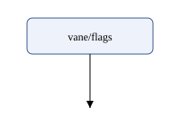
The root svg element gives the size of the picture (width, height)
and its coordinate system (viewBox: the left, top, width and height of
the area drawn). Coordinates grow to the right and down: (0, 0) is the
top left corner. The other elements draw in document order, later ones
on top of earlier ones:
rectis a box atx,yof sizewidthbyheight;rxrounds its corners.textwrites text with its baseline aty;text-anchor="middle"centres it onx.linegoes from (x1,y1) to (x2,y2).marker-endputs a marker on its end: here the triangle thatmarkerdefines insidedefs, which holds things that are used rather than drawn, and is referred to by itsidasurl(#arrow).styleholds CSS rules, as in HTML. Presentation can also be written as attributes (stroke="black"); a rule instyleapplies to every element it matches.g(not used here) groups elements; a class or an id on the group applies to everything inside.
Open the file in a browser to see it. For the tools in this book it is just a document:
$ sxml check box.svg
$ sxml xpath --context-item=box.svg '/*/* ! local-name()'
"style"
"defs"
"rect"
"text"
"line"
The description and the drawing
A diagram is described by a small vocabulary of our own, without a
namespace: a diagram with a title, a node for each box (an id,
a label, and kind="store" for a data store), and an edge for each
arrow, from the caller to what it calls:
diagram.xml:
<?xml version="1.0" encoding="UTF-8"?>
<!-- The Vane system and who calls whom: the two SDKs, the modules of the
Vane service (one program; a module is a box named vane/MODULE), and
the stores it keeps its data in. A node is a box; kind="store" draws
a data store. An edge goes from the caller to what it calls. The
layout is computed: diagram.svg is the drawing. -->
<diagram title="Vane">
<node id="browser" label="@vane/browser"/>
<node id="node" label="@vane/node"/>
<node id="api" label="vane/api"/>
<node id="flags" label="vane/flags"/>
<node id="registry" label="vane/registry"/>
<node id="cache" label="vane/cache"/>
<node id="postgresql" label="postgresql" kind="store"/>
<node id="redis" label="redis" kind="store"/>
<edge from="browser" to="api" label="HTTP"/>
<edge from="node" to="api" label="HTTP"/>
<edge from="api" to="flags"/>
<edge from="flags" to="registry"/>
<edge from="flags" to="cache"/>
<edge from="registry" to="postgresql" label="SQL"/>
<edge from="cache" to="redis" label="Redis"/>
</diagram>
The Vane service is one program, so its parts are modules, not
services; each module is a box of its own, labelled vane/MODULE. The
prefix says that the boxes are parts of one program. A box drawn around
them would say it too, but it would need a second kind of node and a
layout that nests boxes inside boxes, new machinery for one picture; the
labels do the job with what the vocabulary already has. The two SDKs
call the service over HTTP, the modules call each other directly (those
edges have no label), and two modules talk to the stores.
Nothing in the description says where a box goes. That is the tool's job, and its result is this drawing:
diagram.svg:
<svg xmlns="http://www.w3.org/2000/svg" width="299" height="416" viewBox="0 0 299 416">
<title>Vane</title>
<style>
.node rect { fill: #eef3fb; stroke: #3b5b92; stroke-width: 1.5 }
.store rect { fill: #f6efe3; stroke: #8a6a2f }
.node text { font: 14px sans-serif; fill: #1b1b1b }
.edge path { fill: none; stroke: #555555; stroke-width: 1.5 }
.edge text { font: 12px sans-serif; fill: #555555 }
</style>
<defs>
<marker id="arrow" viewBox="0 0 10 10" refX="10" refY="5" markerWidth="9" markerHeight="9" markerUnits="userSpaceOnUse" orient="auto">
<path d="M 0 0 L 10 5 L 0 10 z" fill="#555555"/>
</marker>
</defs>
<g class="edge" id="edge-browser-api">
<path d="M 83 60 L 83 70 L 123 70 L 123 110 L 138 110 L 138 124" marker-end="url(#arrow)"/>
<text x="128" y="96">HTTP</text>
</g>
<g class="edge" id="edge-node-api">
<path d="M 227 60 L 227 70 L 187 70 L 187 110 L 171 110 L 171 124" marker-end="url(#arrow)"/>
<text x="192" y="96">HTTP</text>
</g>
<g class="edge" id="edge-api-flags">
<path d="M 155 164 L 155 188" marker-end="url(#arrow)"/>
</g>
<g class="edge" id="edge-flags-registry">
<path d="M 138 228 L 138 238 L 83 238 L 83 252" marker-end="url(#arrow)"/>
</g>
<g class="edge" id="edge-flags-cache">
<path d="M 172 228 L 172 238 L 227 238 L 227 252" marker-end="url(#arrow)"/>
</g>
<g class="edge" id="edge-registry-postgresql">
<path d="M 83 292 L 83 356" marker-end="url(#arrow)"/>
<text x="88" y="328">SQL</text>
</g>
<g class="edge" id="edge-cache-redis">
<path d="M 227 292 L 227 356" marker-end="url(#arrow)"/>
<text x="232" y="328">Redis</text>
</g>
<g class="node service" id="node-browser">
<rect x="20" y="20" width="126" height="40" rx="6"/>
<text x="83" y="45" text-anchor="middle">@vane/browser</text>
</g>
<g class="node service" id="node-node">
<rect x="176" y="20" width="102" height="40" rx="6"/>
<text x="227" y="45" text-anchor="middle">@vane/node</text>
</g>
<g class="node service" id="node-api">
<rect x="105" y="124" width="100" height="40" rx="6"/>
<text x="155" y="149" text-anchor="middle">vane/api</text>
</g>
<g class="node service" id="node-flags">
<rect x="104" y="188" width="102" height="40" rx="6"/>
<text x="155" y="213" text-anchor="middle">vane/flags</text>
</g>
<g class="node service" id="node-registry">
<rect x="20" y="252" width="126" height="40" rx="6"/>
<text x="83" y="277" text-anchor="middle">vane/registry</text>
</g>
<g class="node service" id="node-cache">
<rect x="176" y="252" width="102" height="40" rx="6"/>
<text x="227" y="277" text-anchor="middle">vane/cache</text>
</g>
<g class="node store" id="node-postgresql">
<rect x="32" y="356" width="102" height="40" rx="20"/>
<text x="83" y="381" text-anchor="middle">postgresql</text>
</g>
<g class="node store" id="node-redis">
<rect x="177" y="356" width="100" height="40" rx="20"/>
<text x="227" y="381" text-anchor="middle">redis</text>
</g>
</svg>
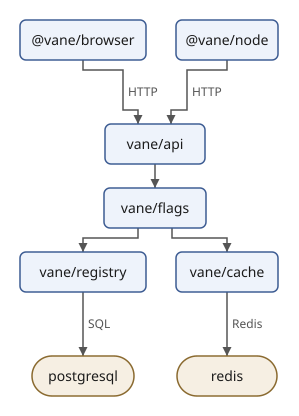
The boxes are in five layers: the two SDKs at the top, the api module
they call below them, and so on down to PostgreSQL and Redis. Each node
is a group g with a rect and a text; each edge is a group with a
path, lines at right angles from box to box, and, when the edge has one, its label
beside it. The groups
have ids made from the description (node-registry, edge-flags-cache)
and classes (node, service, store, edge) that the five style
rules use: service is the class of every box that is not a store, an
SDK or a module alike. Stores have rounder corners.
Both files are ordinary XML:
$ sxml check diagram.xml diagram.svg
$ sxml xpath --context-item=diagram.xml 'count(//node), count(//edge), //node[@kind = "store"]/@label/string()'
8
7
"postgresql"
"redis"
An XPath expression over the drawing has to say the namespace. A name
test without a prefix, such as //rect, looks for elements in no
namespace and finds none. *:rect matches rect in any namespace, and
Q{http://www.w3.org/2000/svg}g names the namespace in the expression
itself:
$ sxml xpath --context-item=diagram.svg 'count(//rect), count(//*:rect)'
0
8
$ sxml xpath --context-item=diagram.svg '//Q{http://www.w3.org/2000/svg}g/@id/string()'
"edge-browser-api"
"edge-node-api"
"edge-api-flags"
"edge-flags-registry"
"edge-flags-cache"
"edge-registry-postgresql"
"edge-cache-redis"
"node-browser"
"node-node"
"node-api"
"node-flags"
"node-registry"
"node-cache"
"node-postgresql"
"node-redis"
The plan
The tool has two halves, and the next sections build them one at a time:
- Computing a Layout decides where each box goes and how each edge runs, with the layered method that Graphviz and the Eclipse Layout Kernel use: layers so that edges point down, an order in each layer so that few edges cross, then coordinates and lines at right angles. It is written with maps, arrays, records and functions as values.
- Writing SVG with XQuery turns the layout into
diagram.svgwith constructors in the SVG namespace, and packs both halves into a library module,draw.xqm, that the later projects import. - Drawing with XSLT draws the same diagram with template rules, from a description the layout query has given coordinates.
- Transforming SVG changes drawings that already exist, ours or anyone's: a dark theme, one node highlighted, ids and editor metadata removed, the text listed, the size changed.
Computing a Layout
A layout says where each box goes and which way each line runs. The
method of this chapter is the one most tools for such diagrams follow:
the layered method of Sugiyama, Tagawa and Toda, which Graphviz's
dot and the layered algorithm of the Eclipse Layout Kernel (ELK) are
built on. It puts the nodes in layers, one under the other, so that the
edges point down; it orders each layer so that few edges cross; and only
then does it work out coordinates. ELK adds an idea this chapter uses
throughout: the order of the description, its model order, is
information. Wherever two choices are equally good, the one that keeps
the order the author wrote wins, so the author steers the drawing by
the order of the nodes and edges and never moves a box by hand (Sören
Domrös, Max Riepe and Reinhard von Hanxleden, Model Order in Sugiyama
Layouts, IVAPP 2023).
The method has five phases:
- Break the cycles. Turn some edges round, so that no path leads in a circle.
- Assign layers. Give every node a layer, so that every edge points down.
- Order the layers. Sort each layer, so that few edges cross.
- Place. Work out the x of every box.
- Route. Draw the path of every edge.
Each phase is a function of the library module draw.xqm, namespace
urn:example:draw. We'll read the module a part at a time and run each
part as we go; Writing SVG with XQuery shows how it
draws.
Breaking cycles
Layers only work if every edge can point down, and an edge that closes
a circle cannot: some edge of the circle has to point up. A state
machine has circles everywhere. states.xml has four states of a
feature flag, and two transitions lead back to stable:
states.xml:
<?xml version="1.0" encoding="UTF-8"?>
<!-- Three states of a feature flag and a fourth that nothing leads to.
Every state has an incoming edge except archived. -->
<diagram title="Flag states">
<node id="stable" label="stable"/>
<node id="checking" label="checking"/>
<node id="rolling-out" label="rolling-out"/>
<node id="archived" label="archived"/>
<edge from="stable" to="checking" label="rollout.request"/>
<edge from="checking" to="rolling-out" label="check.passed"/>
<edge from="checking" to="stable" label="check.failed"/>
<edge from="rolling-out" to="stable" label="step.done"/>
<edge from="archived" to="stable" label="kill.request"/>
</diagram>
The first phase picks the edges to turn round. Drawn upward, they still point where they go, but for the layout they point down like the others. Finding the fewest such edges is a hard problem, so layout tools use a heuristic. Ours is a depth-first search, the one Graphviz uses: start at a node, follow its first edge, and the first edge of the node that leads to, and so on, and come back to try the next edge only when a node has no edges left to follow. The nodes on the way from the start to where the search is now are its path. An edge to a node on the path closes a circle; that edge is turned round.
(:~ One step of the depth-first search of draw:reversed: visit a node,
then follow its edges in their order, and note each edge that leads
back to a node the search is still inside. :)
declare %private function draw:visit(
$diagram as element(diagram),
$id as xs:string,
$search as map(*)
) as map(*) {
let $inside := map:put($search, "path", ($search?path, $id))
let $done := fold-left(
for $edge at $position in $diagram/edge
where $edge/@from = $id and $edge/@to != $id
return [ $position, $edge/@to/string() ],
map:put($inside, "seen", ($inside?seen, $id)),
fn($search, $edge) {
if ($edge(2) = $search?path) then map:put($search, "back", ($search?back, $edge(1)))
else if ($edge(2) = $search?seen) then $search
else draw:visit($diagram, $edge(2), $search)
}
)
return map:put($done, "path", $search?path)
};
(:~ Phase 1. The positions of the edges to reverse so that no path leads
in a circle. A depth-first search starts from each node not yet seen,
in the order of the description, and follows the edges in their
order; an edge back to a node on the way it came closes a circle,
and is reversed. A diagram without circles keeps all its edges as
they are, and in one with circles the order of the description
decides which edge turns: the first node is on top. :)
declare function draw:reversed($diagram as element(diagram)) as xs:integer* {
sort(fold-left($diagram/node/@id/string(),
{ "seen": (), "path": (), "back": () },
fn($search, $id) {
if ($id = $search?seen) then $search else draw:visit($diagram, $id, $search)
}
)?back)
};
draw:visit calls itself: an XQuery function may be recursive, and
the search is easiest to say that way. The state of the search is a map
with three entries, passed from one step to the next: the nodes seen,
the path, and the positions of the edges found to turn. map:put
returns a new map with one entry changed; maps are values, and the old
one is still there, which is why draw:visit can give back the path as
it found it, $search?path, when it is done with a node. fold-left
carries the map through the edges of a node and, in draw:reversed,
through the nodes of the description. In a module, draw: is the
module's prefix, and %private keeps draw:visit out of the module's
interface.
The search starts at the first node of the description and follows the
edges in their order, and that is where the model order comes in.
Here, the search starts at stable and goes down to checking and
rolling-out; the edges from them back to stable close circles. An
import module declaration in the query names the module's namespace
and file:
$ sxml xquery --method=adaptive --context-item=states.xml --expression='import module namespace draw = "urn:example:draw" at "draw.xqm"; for $position in draw:reversed(/diagram) return /diagram/edge[$position] ! `{@from} -> {@to}`'
"checking -> stable"
"rolling-out -> stable"
The Vane diagram has no circles, and the search turns nothing round:
$ sxml xquery --context-item=diagram.xml --expression='import module namespace draw = "urn:example:draw" at "draw.xqm"; count(draw:reversed(/diagram))'
0
The graph to lay out
The phases after the first work on a graph of their own: the nodes, the edges with the reversed ones turned round, and one more thing. An edge label needs room, and a label drawn halfway along a line lands on whatever happens to be there. ELK gives every label a label vertex: a small node of its own, put in the middle of its edge, that the layers, the order and the places treat like any other. A labelled edge becomes two links, one to its label vertex and one from it.
A vertex and a link are maps with fixed entries, and a record type
says which entries those are and what they hold. declare record names
the type and also declares a function of the same name that makes one.
The module starts with the sizes of the drawing and its records:
(: The sizes of the drawing, in SVG user units. :)
declare variable $draw:box-height := 40;
declare variable $draw:box-min-width := 100;
declare variable $draw:gap-across := 30;
declare variable $draw:gap-down := 24;
declare variable $draw:track-gap := 10;
declare variable $draw:loop-width := 26;
declare variable $draw:padding := 20;
(:~ The width of a text in a sans-serif font of the given size: an
estimate, from the average width of a letter. :)
declare function draw:text-width($text as xs:string?, $size as xs:integer) as xs:integer {
xs:integer(ceiling(string-length($text) * $size * 0.56))
};
(: A vertex of the layered graph: a node of the diagram, the label of an
edge, or a bend where an edge crosses a layer. Edges run along its x;
left and right are how far it reaches on either side of that line. :)
declare record draw:vertex(
id as xs:string,
kind as xs:string,
key as xs:decimal,
left as xs:integer,
right as xs:integer,
height as xs:integer
);
(: A link of the layered graph: one step of the edge at that position
in the description, from an upper vertex to a lower one. :)
declare record draw:link(from as xs:string, to as xs:string, edge as xs:integer);
(: A point, and a box: the top left corner and the size. :)
declare record draw:place(x as xs:integer, y as xs:integer);
declare record draw:box(x as xs:integer, y as xs:integer, width as xs:integer, height as xs:integer);
(: The route of an edge: an SVG path, and where its label goes. :)
declare record draw:route(path as xs:string, label as draw:place?);
(: A computed layout: the size of the drawing, a box per node id, and a
route per edge, by the edge's position in the description. :)
declare record draw:layout(
width as xs:integer,
height as xs:integer,
boxes as map(xs:string, draw:box),
routes as map(xs:integer, draw:route)
);
A record is a map, so ?x reads an entry. The type checks what goes in:
$ sxml xquery --method=adaptive --expression='import module namespace draw = "urn:example:draw" at "draw.xqm"; draw:place(110, 20), draw:place(110, 20)?x'
{"x":110,"y":20}
110
$ sxml xquery --method=adaptive --expression='import module namespace draw = "urn:example:draw" at "draw.xqm"; draw:place(1.5, 20)'
expression:1:66: err:XPTY0004: The value does not match the required type (XPath 4.0, section 3.4, coercion rules)
A box is as wide as its label needs. The width of a text depends on the
font, which the layout doesn't have, so draw:text-width estimates it
from the average width of a letter. Here is the graph:
(:~ The graph to lay out: a vertex per node, sized for its label (and its
loops, drawn to its right), a vertex for the label of every edge
between two nodes, and the edges as links, the reversed ones turned
round. A label is a vertex of its own so that it gets a place of its
own, as ELK's label dummies do. A vertex's key is its place in the
description; a label sits just after the node its edge leaves. :)
declare function draw:graph($diagram as element(diagram)) as map(*) {
let $reversed := draw:reversed($diagram)
let $order := map:merge(for $node at $n in $diagram/node return { $node/@id: $n })
let $nodes := (
for $node at $n in $diagram/node
let $ends := max((count($diagram/edge[@from = $node/@id and @to != $node/@id]),
count($diagram/edge[@to = $node/@id and @from != $node/@id])))
let $width := max(($draw:box-min-width, draw:text-width($node/@label, 14) + 24,
($ends + 1) * 16))
let $loops := $diagram/edge[@from = $node/@id and @to = $node/@id]
let $loop-width := if (empty($loops)) then 0 else
$draw:loop-width + max((0, $loops/@label ! (draw:text-width(., 12) + 4)))
return draw:vertex($node/@id, "node", $n, $width idiv 2,
$width - $width idiv 2 + $loop-width, $draw:box-height)
)
let $steps := (
for $edge at $e in $diagram/edge
where $edge/@from != $edge/@to
let $ends := if ($e = $reversed) then ($edge/@to, $edge/@from) else ($edge/@from, $edge/@to)
let $label := $edge/@label ! draw:vertex(`label-{ $e }`, "label",
$order($edge/@from) + 0.5, 1, draw:text-width(., 12) + 6, 16)
return {
"labels": $label,
"links": if (exists($label)) then (
draw:link($ends[1], $label?id, $e), draw:link($label?id, $ends[2], $e)
) else draw:link($ends[1], $ends[2], $e)
}
)
return { "vertices": ($nodes, $steps?labels), "links": $steps?links }
};
A node with a loop, an edge to itself, reserves room for the loop on its
right; loops never get into the layers. The key of a vertex is its
place in the description, and a label vertex takes the key of the node
its edge leaves, plus a half, so that it sorts just after it. Here are
the links of states.xml: the turned edges now point from stable
down to their label vertices, and from those down to where they came
from:
$ sxml xquery --method=adaptive --context-item=states.xml --expression='import module namespace draw = "urn:example:draw" at "draw.xqm"; draw:graph(/diagram)?links ! `{?from} -> {?to}`'
"stable -> label-1"
"label-1 -> checking"
"checking -> label-2"
"label-2 -> rolling-out"
"stable -> label-3"
"label-3 -> checking"
"stable -> label-4"
"label-4 -> rolling-out"
"archived -> label-5"
"label-5 -> stable"
Layers
The layer of a vertex is the length of the longest path that leads to
it: a vertex nothing leads to is in layer 0, and every other one is one
layer below the lowest of the vertices that lead to it. Every link then
points down. The layers are a map from vertex id to layer, and the
module finds them the way you would by hand: start with every vertex in
layer 0, and move vertices down until no link points up or sideways.
while-do holds the state of that loop, the map, and calls its third
argument as long as its second one says there is more to do.
map:build makes each new map from the ids and a function that gives
each id its layer:
(:~ Phase 2. The layer of every vertex: the length of the longest path
that leads to it, so that every link goes down. A vertex that nothing
leads to then moves down to just above the highest vertex it leads
to, so that its links stay short. :)
declare function draw:layers($graph as map(*)) as map(xs:string, xs:integer) {
let $ids := $graph?vertices?id
let $links := $graph?links
let $longest := while-do(
map:build($ids, value := fn { 0 }),
fn($layers) { some $link in $links satisfies $layers($link?to) <= $layers($link?from) },
fn($layers) {
map:build($ids, value := fn($id) {
max((0, $links[?to = $id] ! ($layers(?from) + 1)))
})
}
)
let $lowered := map:build($ids, value := fn($id) {
if (empty($links[?to = $id]) and exists($links[?from = $id]))
then min($links[?from = $id] ! $longest(?to)) - 1
else $longest($id)
})
let $top := min(map:items($lowered))
return map:build($ids, value := fn($id) { $lowered($id) - $top })
};
(:~ The graph with a bend vertex wherever a link passes a layer, so that
every link joins two neighbouring layers. :)
declare function draw:proper($graph as map(*), $layers as map(xs:string, xs:integer)) as map(*) {
let $keys := map:build($graph?vertices, fn($vertex) { $vertex?id }, fn($vertex) { $vertex?key })
let $steps := (
for $link in $graph?links
let $from := $layers($link?from)
let $to := $layers($link?to)
let $bends := ($from + 1 to $to - 1) ! `bend-{ $link?edge }-{ . }`
let $chain := ($link?from, $bends, $link?to)
return {
"bends": $bends ! draw:vertex(., "bend", $keys($link?from) + 0.5, 1, 1, 0),
"layers": for $bend at $b in $bends return { $bend: $from + $b },
"links": for $step in 1 to count($chain) - 1
return draw:link($chain[$step], $chain[$step + 1], $link?edge)
}
)
return {
"vertices": ($graph?vertices, $steps?bends),
"links": $steps?links,
"layers": map:merge(($layers, $steps?layers))
}
};
The longest path puts every vertex that nothing leads to in layer 0,
even one that only leads to something far below. So a second step
lowers such a vertex to just above the highest vertex it leads to, and
its links stay short. In the Vane diagram the two SDKs are in layer 0,
their HTTP labels in layer 1, the API in layer 2:
$ sxml xquery --method=adaptive --context-item=diagram.xml --expression='import module namespace draw = "urn:example:draw" at "draw.xqm"; draw:layers(draw:graph(/diagram))'
{"browser":0,"node":0,"api":2,"flags":3,"registry":4,"cache":4,"postgresql":6,"redis":6,"label-1":1,"label-2":1,"label-6":5,"label-7":5}
A link that skips layers is a problem for the next phase, which only
compares neighbouring layers. draw:proper breaks such a link up: it
adds a bend vertex in every layer the link passes, so that every link
joins two neighbouring layers. In states.xml the edge from
rolling-out back to stable passes two layers:
$ sxml xquery --method=adaptive --context-item=states.xml --expression='import module namespace draw = "urn:example:draw" at "draw.xqm"; let $graph := draw:graph(/diagram) return draw:proper($graph, draw:layers($graph))?vertices[?kind = "bend"]?id'
"bend-4-4"
"bend-4-5"
Order
Two links between the same two layers cross when their upper ends are in one order and their lower ends in the other. The third phase sorts the vertices of each layer so that few links cross. The method is a layer sweep: go down the layers, and sort each by the positions of the vertices above it, then go up again and sort each by the vertices below it. A vertex's sort key is its barycentre, the mean position of its neighbours in the other layer, so that it moves towards them.
(:~ The number of links between two layers that cross: two links cross
when their upper ends and their lower ends are in opposite orders. :)
declare function draw:crossings($links as draw:link*, $positions as map(xs:string, xs:integer)) as xs:integer {
count(
for $first at $f in $links
for $second in $links[position() > $f]
where ($positions($first?from) - $positions($second?from))
* ($positions($first?to) - $positions($second?to)) < 0
return 1
)
};
(:~ The positions of the ids of a sequence of layers: map from id to its
place in its layer, from 1. :)
declare function draw:positions($orders as array(xs:string)*) as map(xs:string, xs:integer) {
map:merge(for $layer in $orders for member $id at $p in $layer return { $id: $p })
};
(:~ One layer, sorted by the barycentre of each vertex: the mean position
of its neighbours in the layer next to it. A vertex without
neighbours there keeps its own position, and the sort is stable, so
a tie keeps the order the layer had. :)
declare function draw:sort-layer(
$layer as array(xs:string),
$neighbours as fn(xs:string) as xs:string*,
$positions as map(xs:string, xs:integer)
) as array(xs:string) {
let $own := draw:positions($layer)
return array {
sort($layer?*, (), fn($id) {
let $around := $neighbours($id)
return if (empty($around)) then $own($id) else avg($around ! $positions(.))
})
}
};
(:~ Phase 3. The vertices of every layer, top to bottom, in the order
that crosses the fewest links. The first order is the order of the
description; then sweeps go down the layers, sorting each by the one
above, and up again, sorting each by the one below. The best order
any sweep finds is kept, and the first one wins a tie. :)
declare function draw:orders($proper as map(*)) as array(xs:string)* {
let $layers := $proper?layers
let $links := $proper?links
let $vertices := $proper?vertices
let $count := max(map:items($layers)) + 1
let $first := (0 to $count - 1) ! (
let $layer := .
return array { sort($vertices[$layers(?id) = $layer], (), fn($v) { $v?key })?id }
)
let $total := fn($orders) {
let $positions := draw:positions($orders)
return sum(for $layer in 0 to $count - 2
return draw:crossings($links[$layers(?from) = $layer], $positions))
}
let $above := fn($id) { $links[?to = $id]?from }
let $below := fn($id) { $links[?from = $id]?to }
let $sweep := fn($orders, $down) {
let $range := if ($down) then 2 to $count else reverse(1 to $count - 1)
return fold-left($range, $orders, fn($done, $index) {
let $positions := draw:positions($done)
let $sorted := draw:sort-layer($done[$index],
if ($down) then $above else $below, $positions)
return ($done[position() < $index], $sorted, $done[position() > $index])
})
}
let $result := fold-left(1 to 8, { "best": $first, "crossings": $total($first), "now": $first },
fn($state, $pass) {
let $next := $sweep($state?now, $pass mod 2 = 1)
let $crossings := $total($next)
return if ($crossings < $state?crossings)
then { "best": $next, "crossings": $crossings, "now": $next }
else map:put($state, "now", $next)
})
return $result?best
};
The model order matters twice here. The first order of every layer is
the order of the keys, the order of the description. And sort, with
the key function as its third argument, is stable: two vertices with
the same barycentre keep the order they had. The result is the order
with the fewest crossings that any sweep found, and on a tie the
earlier one wins, so the order of the description stays whenever no
sweep does better. Here are the layers of states.xml, top to bottom:
$ sxml xquery --method=adaptive --context-item=states.xml --expression='import module namespace draw = "urn:example:draw" at "draw.xqm"; let $graph := draw:graph(/diagram) return draw:orders(draw:proper($graph, draw:layers($graph)))'
["archived"]
["label-5"]
["stable"]
["label-1","label-3","label-4"]
["checking","bend-4-4"]
["label-2","bend-4-5"]
["rolling-out"]
Places
Now coordinates. Each vertex wants to be at the mean x of its neighbours, so that its links are short and steep, but the vertices of a layer must keep their order and a gap between them. Finding the x closest to what each one wants, under those rules, is a small classic. Subtract from each wanted x the room the vertices before it need; the rule "at least that far right of the one before" becomes "never smaller than the one before". Then go along the layer, and wherever a value is smaller than the one before, pool the two into one block at their mean, and keep pooling backwards while blocks are out of order. This is isotonic regression by pooling adjacent violators, and it gives the closest positions there are:
(:~ The x of each vertex of one layer, in its order, as close as it can
be to where it wants to be while keeping the gap to its neighbours.
Shifting each x by the room the vertices before it need turns the
gaps into "never smaller than the one before"; the closest such
sequence comes from pooling neighbours that are out of order into a
block at their mean (isotonic regression by pooling adjacent
violators). :)
declare function draw:pack($widths as array(xs:integer)*, $wants as xs:decimal*) as xs:decimal* {
let $offsets := fold-left(2 to count($widths), 0, fn($offsets, $i) {
$offsets, $offsets[last()] + $widths[$i - 1](2) + $draw:gap-across + $widths[$i](1)
})
let $targets := for $i in 1 to count($wants) return $wants[$i] - $offsets[$i]
let $blocks := fold-left($targets, (), fn($blocks, $target) {
while-do(
($blocks, { "sum": $target, "count": 1 }),
fn($all) {
count($all) > 1 and $all[last() - 1]?sum div $all[last() - 1]?count
> $all[last()]?sum div $all[last()]?count
},
fn($all) {
let $a := $all[last() - 1]
let $b := $all[last()]
return ($all[position() < last() - 1],
{ "sum": $a?sum + $b?sum, "count": $a?count + $b?count })
}
)
})
let $pooled := $blocks ! (let $mean := ?sum div ?count return (1 to ?count) ! $mean)
return for $i in 1 to count($wants) return $pooled[$i] + $offsets[$i]
};
(:~ Phase 4. The x of every vertex. The vertices start packed from the
left; then passes go down and up the layers, each vertex wanting to
be at the mean x of its neighbours in the layer just done. A bend has
one neighbour on each side, so it lines up, and long edges come out
straight. :)
declare function draw:xs($proper as map(*), $orders as array(xs:string)*) as map(xs:string, xs:decimal) {
let $vertices := map:build($proper?vertices, fn($v) { $v?id })
let $links := $proper?links
let $widths := fn($layer) { $layer?* ! [ $vertices(.)?left, $vertices(.)?right ] }
let $start := map:merge(
for $layer in $orders
let $packed := draw:pack($widths($layer), $layer?* ! 0)
for member $id at $p in $layer
return { $id: $packed[$p] }
)
let $count := count($orders)
return fold-left(1 to 8, $start, fn($xs, $pass) {
let $down := $pass mod 2 = 1
let $range := if ($down) then 2 to $count else reverse(1 to $count - 1)
return fold-left($range, $xs, fn($xs, $index) {
let $layer := $orders[$index]
let $wants := $layer?* ! (
let $id := .
let $around := if ($down) then $links[?to = $id]?from else $links[?from = $id]?to
return if (empty($around)) then $xs($id) else avg($around ! $xs(.))
)
let $packed := draw:pack($widths($layer), $wants)
return map:merge((for member $id at $p in $layer return { $id: $packed[$p] }, $xs))
})
})
};
Two boxes 100 wide that both want to be at 100 can't be: they need 130 between their centres, 50 + 30 + 50, so they share the difference, 65 each way:
$ sxml xquery --method=adaptive --expression='import module namespace draw = "urn:example:draw" at "draw.xqm"; draw:pack(([50, 50], [50, 50]), (100, 100))'
35
165
draw:xs runs this for each layer in passes down and up the layers.
A bend vertex has one neighbour above and one below, and so lines up
with them, and the long edge it belongs to comes out nearly straight.
Routes
The last phase draws the edges, orthogonally, as ELK does by default: every edge is made of horizontal and vertical lines. It leaves the bottom of its upper box and enters the top of its lower one; where several edges meet a side, their ends are spread along it in the order of where they go, so that they don't cross at the box. It runs straight down through its label (the label to its right) and through its bends, and turns only in the gap between two layers: down from where it is, across, and down to where it goes. A label or a bend that is within a few units of the line above it moves onto it, and a box with one edge coming in takes the edge where it arrives, so that short jogs don't appear.
The horizontal parts in one gap must not lie on top of each other, so
each gets a track of its own, one above the other, and the gap is as
high as its tracks need. Which segment goes above which decides how
many lines cross: the one above crosses the other's horizontal on its
way down if it goes down inside the other's span, and the one below
crosses the first one's horizontal on its way in if it comes in inside
that span. draw:tracks puts each pair the way that crosses less,
then gives each segment the track below the lowest of those that must
be above it, the same longest path as the layers. A loop is a bracket
on the right of its box:
(:~ The path of an edge from a node to itself: a bracket on the right of
the box, and the place of its label beside it. :)
declare function draw:loop($box as draw:box) as draw:route {
let $side := $box?x + $box?width
return draw:route(
draw:path((
draw:place($side, $box?y + 12),
draw:place($side + $draw:loop-width - 10, $box?y + 12),
draw:place($side + $draw:loop-width - 10, $box?y + $box?height - 12),
draw:place($side, $box?y + $box?height - 12)
)),
draw:place($side + $draw:loop-width - 4, $box?y + $box?height idiv 2 + 4)
)
};
(:~ The SVG path through a sequence of points: straight lines, here
always horizontal or vertical. A point where the path does not turn
is left out. :)
declare function draw:path($points as draw:place*) as xs:string {
let $turns := $points[
let $i := position()
return $i = (1, last()) or not(
($points[$i - 1]?x = ?x and ?x = $points[$i + 1]?x) or
($points[$i - 1]?y = ?y and ?y = $points[$i + 1]?y))
]
return string-join((
`M { $turns[1]?x } { $turns[1]?y }`,
$turns[position() > 1] ! `L { ?x } { ?y }`
), " ")
};
(:~ The track of each horizontal segment in the gap between two layers,
from 0 at the top. A segment runs from where its edge comes down, x1,
to where it goes on down, x2. Two segments whose spans overlap need
different tracks, and their order decides how often they cross: the
one above crosses the other's horizontal with its way down when its
x2 is inside the other's span, and the one below crosses with its
way in when its x1 is inside the first one's span. Each pair goes
the way that crosses less (on a tie, the first segment above), and a
segment's track is one below the lowest of those that must be above
it. :)
declare function draw:tracks($segments as map(*)*) as xs:integer* {
let $inside := fn($x, $segment) {
$x >= min(($segment?x1, $segment?x2)) - 6 and $x <= max(($segment?x1, $segment?x2)) + 6
}
let $overlap := fn($a, $b) {
$inside($a?x1, $b) or $inside($a?x2, $b) or $inside($b?x1, $a) or $inside($b?x2, $a)
}
let $cost := fn($above, $below) {
count(($inside($above?x2, $below)[.], $inside($below?x1, $above)[.]))
}
let $count := count($segments)
let $above := for $i in 1 to $count return array {
for $j in 1 to $count
where $j != $i and $overlap($segments[$i], $segments[$j])
let $up := $cost($segments[$j], $segments[$i])
let $down := $cost($segments[$i], $segments[$j])
where $up < $down or ($up = $down and $j < $i)
return $j
}
let $tracks := fold-left(1 to $count, (1 to $count) ! 0, fn($tracks, $pass) {
for $i in 1 to $count
return max((0, for $j in $above[$i]?* return $tracks[$j] + 1))
})
return $tracks ! min((., $count - 1))
};
Two segments that overlap, one from 10 to 100 and one from 50 to 200. With the first one above, its way down at 100 crosses the second's horizontal, and the second's way in at 50 crosses the first's: two crossings. The other way round there are none, so the second segment takes the upper track, 0, and the first the one below it. A third, far away from both, shares the upper track:
$ sxml xquery --method=adaptive --expression='import module namespace draw = "urn:example:draw" at "draw.xqm"; draw:tracks(({"x1": 10, "x2": 100}, {"x1": 50, "x2": 200}, {"x1": 300, "x2": 400})), draw:path((draw:place(90, 60), draw:place(90, 80), draw:place(150, 80), draw:place(150, 124))), draw:loop(draw:box(20, 20, 100, 40))?path'
1
0
0
"M 90 60 L 90 80 L 150 80 L 150 124"
"M 120 32 L 136 32 L 136 48 L 120 48"
The whole layout
draw:layout runs the five phases and turns the results into a record:
the size of the drawing, a box per node and a route per edge, by the
edge's position in the description. The y of every layer waits for
the tracks, since each gap is as high as its tracks need. A reversed
edge is routed the other way round, from its end to its start, so that its arrow points the way
the edge goes.
(:~ The layout of a diagram: all five phases. Phase 5, the routes, are
orthogonal: an edge leaves the bottom of its upper box and enters the
top of its lower one, at points spread along the side in the order of
the other ends, so that edges on one side do not cross there. It runs
straight down through its label and its bends, and turns only in the
gaps between layers, each turn on a track of its own; a gap is as
high as its tracks need. A reversed edge is drawn the other way round,
so that its arrow points where the edge goes. :)
declare function draw:layout($diagram as element(diagram)) as draw:layout {
let $graph := draw:graph($diagram)
let $proper := draw:proper($graph, draw:layers($graph))
let $orders := draw:orders($proper)
let $xs := draw:xs($proper, $orders)
let $vertices := map:build($proper?vertices, fn($v) { $v?id })
let $links := $proper?links
let $layers := $proper?layers
let $shift := $draw:padding - min($proper?vertices ! ($xs(?id) - ?left))
let $x := fn($id) { xs:integer(round($xs($id) + $shift)) }
let $node := fn($id) { $vertices($id)?kind = "node" }
let $port-x := fn($id, $other, $bottom) {
let $left := $x($id) - $vertices($id)?left
let $width := 2 * $vertices($id)?left
let $ends := sort(if ($bottom) then $links[?from = $id]?to else $links[?to = $id]?from,
(), fn($end) { $xs($end) })
return $left + $width * index-of($ends, $other)[1] idiv (count($ends) + 1)
}
(: A label or bend that is within a few units of where its edge comes
down lines up with it, layer by layer, so the edge doesn't jog. :)
let $lined-up := fold-left($orders, {}, fn($lined-up, $layer) {
map:merge(($lined-up,
for member $id in $layer
where not($node($id))
let $from := $links[?to = $id]?from
let $above := if ($node($from)) then $port-x($from, $id, true()) else $lined-up($from)
return { $id: if (abs($above - $x($id)) <= 12) then $above else $x($id) }
))
})
let $segments := (
for $link in $links
let $from := $link?from
let $to := $link?to
let $x1 := if ($node($from)) then $port-x($from, $to, true()) else $lined-up($from)
let $alone := count($links[?to = $to]) = 1
let $x2 := if (not($node($to))) then $lined-up($to)
else if ($alone and abs($x1 - $x($to)) <= $vertices($to)?left - 10) then $x1
else $port-x($to, $from, false())
return { "link": $link, "gap": $layers($from), "x1": $x1, "x2": $x2 }
)
let $turns := $segments[?x1 != ?x2]
let $tracks := map:merge(
for $turns-in-gap in $turns
group by $gap := $turns-in-gap?gap
let $numbers := draw:tracks($turns-in-gap)
return { $gap: $numbers }
)
let $track := fn($segment) {
let $in-gap := $turns[?gap = $segment?gap]
let $i := (for $other at $p in $in-gap
where deep-equal($other?link, $segment?link) return $p)[1]
return $tracks($segment?gap)[$i]
}
let $heights := $orders ! max((0, ?* ! $vertices(.)?height))
let $gaps := for $gap in 0 to count($orders) - 2
return max(($draw:gap-down, (max((-1, $tracks($gap))) + 2) * $draw:track-gap))
let $tops := fold-left(1 to count($heights), (), fn($tops, $layer) {
$tops, if ($layer = 1) then $draw:padding
else $tops[last()] + $heights[$layer - 1] + $gaps[$layer - 1]
})
let $band := fn($id) {
let $layer := $layers($id) + 1
return ($tops[$layer], $tops[$layer] + $heights[$layer])
}
let $boxes := map:merge(
for $vertex in $proper?vertices[?kind = "node"]
let $top := $band($vertex?id)[1] + ($heights[$layers($vertex?id) + 1] - $vertex?height) idiv 2
return { $vertex?id: draw:box($x($vertex?id) - $vertex?left, $top, 2 * $vertex?left, $vertex?height) }
)
let $leave := fn($id) { if ($node($id)) then $boxes($id)?y + $boxes($id)?height else $band($id)[2] }
let $enter := fn($id) { if ($node($id)) then $boxes($id)?y else $band($id)[1] }
let $reversed := draw:reversed($diagram)
let $routes := map:merge((
for $edge at $e in $diagram/edge
where $edge/@from = $edge/@to
return { $e: draw:loop($boxes($edge/@from)) },
for $edge at $e in $diagram/edge
where $edge/@from != $edge/@to
let $steps := sort($segments[?link?edge = $e], (), fn($segment) { $segment?gap })
let $points := (
for $segment in $steps
let $from := $segment?link?from
let $to := $segment?link?to
let $y := $band($from)[2] + ($track($segment) + 1) * $draw:track-gap
return (
draw:place($segment?x1, $leave($from)),
if ($segment?x1 != $segment?x2)
then (draw:place($segment?x1, $y), draw:place($segment?x2, $y)) else (),
draw:place($segment?x2, $enter($to))
)
)
let $label := $steps[starts-with(?link?to, "label-")] ! (
let $id := ?link?to
return draw:place($lined-up($id) + 5, sum($band($id)) idiv 2 + 4)
)
return { $e: draw:route(
draw:path(if ($e = $reversed) then reverse($points) else $points),
$label
) }
))
let $width := max($proper?vertices ! ($x(?id) + ?right)) + $draw:padding
let $height := $tops[last()] + $heights[last()] + $draw:padding
return draw:layout($width, $height, $boxes, $routes)
};
$ sxml xquery --method=adaptive --context-item=diagram.xml --expression='import module namespace draw = "urn:example:draw" at "draw.xqm"; draw:layout(/diagram)?boxes'
{"browser":{"x":20,"y":20,"width":126,"height":40},"node":{"x":176,"y":20,"width":102,"height":40},"api":{"x":105,"y":124,"width":100,"height":40},"flags":{"x":104,"y":188,"width":102,"height":40},"registry":{"x":20,"y":252,"width":126,"height":40},"cache":{"x":176,"y":252,"width":102,"height":40},"postgresql":{"x":32,"y":356,"width":102,"height":40},"redis":{"x":177,"y":356,"width":100,"height":40}}
These are the boxes in diagram.svg: the rect of registry has the
x, y and width of its box.
The layout as XML
Maps and records are what XQuery computes with, but another tool can't
read them. layout.xq writes the layout as XML: the description again,
with the size of the drawing on diagram, the box on each node, and
the path (d) and the place of the label on each edge:
layout.xq:
xquery version "4.0";
(: The layout of a diagram (the context item) as XML: the description
with the size of the drawing, the box of every node, and the path of
every edge, with the place of its label. :)
import module namespace draw = "urn:example:draw" at "draw.xqm";
declare option output:indent "yes";
let $diagram := /diagram
let $layout := draw:layout($diagram)
return <diagram>{
$diagram/@*,
attribute width { $layout?width },
attribute height { $layout?height },
for $node in $diagram/node
let $box := $layout?boxes($node/@id)
return <node>{
$node/@*,
for $name in ("x", "y", "width", "height")
return attribute { $name } { $box($name) }
}</node>,
for $edge at $position in $diagram/edge
let $route := $layout?routes($position)
return <edge>{
$edge/@*,
attribute d { $route?path },
$route?label ! (attribute label-x { ?x }, attribute label-y { ?y })
}</edge>
}</diagram>
Attributes are copied from the description and made with computed
attribute constructors: attribute { $name } { … } takes its name from
an expression, which is how the four numbers of a box get their names.
An edge between two modules has no label in the description, so it
has no label place either: $route?label ! (…) makes the attributes
only when there is one.
$ sxml xquery --context-item=diagram.xml layout.xq
<diagram title="Vane" width="299" height="416">
<node id="browser" label="@vane/browser" x="20" y="20" width="126" height="40"/>
<node id="node" label="@vane/node" x="176" y="20" width="102" height="40"/>
<node id="api" label="vane/api" x="105" y="124" width="100" height="40"/>
<node id="flags" label="vane/flags" x="104" y="188" width="102" height="40"/>
<node id="registry" label="vane/registry" x="20" y="252" width="126" height="40"/>
<node id="cache" label="vane/cache" x="176" y="252" width="102" height="40"/>
<node id="postgresql" label="postgresql" kind="store" x="32" y="356" width="102" height="40"/>
<node id="redis" label="redis" kind="store" x="177" y="356" width="100" height="40"/>
<edge from="browser" to="api" label="HTTP" d="M 83 60 L 83 70 L 123 70 L 123 110 L 138 110 L 138 124" label-x="128" label-y="96"/>
<edge from="node" to="api" label="HTTP" d="M 227 60 L 227 70 L 187 70 L 187 110 L 171 110 L 171 124" label-x="192" label-y="96"/>
<edge from="api" to="flags" d="M 155 164 L 155 188"/>
<edge from="flags" to="registry" d="M 138 228 L 138 238 L 83 238 L 83 252"/>
<edge from="flags" to="cache" d="M 172 228 L 172 238 L 227 238 L 227 252"/>
<edge from="registry" to="postgresql" label="SQL" d="M 83 292 L 83 356" label-x="88" label-y="328"/>
<edge from="cache" to="redis" label="Redis" d="M 227 292 L 227 356" label-x="232" label-y="328"/>
</diagram>
Drawing with XSLT draws from this file. First, the drawing in XQuery itself.
Writing SVG with XQuery
With the layout computed, drawing is a matter of building elements: a group, a box and a label for each node, a path and a label for each edge. XQuery's constructors build them, as they build any XML, and the one thing to get right is the namespace.
Elements in the SVG namespace
An element constructor written in a query is an element in the result,
and an xmlns attribute on it puts it, and the elements inside it, in
a namespace:
$ sxml xquery --expression='<svg xmlns="http://www.w3.org/2000/svg" width="180" height="60"><rect x="20" y="10" width="140" height="40"/></svg>'
<svg xmlns="http://www.w3.org/2000/svg" width="180" height="60"><rect x="20" y="10" width="140" height="40"/></svg>
$ sxml xquery --method=adaptive --expression='namespace-uri(<svg><rect/></svg>), namespace-uri(<svg xmlns="http://www.w3.org/2000/svg"><rect/></svg>/*)'
""
"http://www.w3.org/2000/svg"
Without the namespace, the result looks right and draws nothing: to a
browser, rect in no namespace is not an SVG rectangle.
A query that writes only SVG can say the namespace once, in its prolog:
declare default element namespace puts every unprefixed element name
in the query into it. Every name: the names in constructors, and the
names in paths too. That is a trap when the input has no namespace:
$ sxml xquery --context-item=diagram.xml --expression='declare default element namespace "http://www.w3.org/2000/svg"; count(//node), count(//Q{}node)'
0 8
//node now looks for SVG node elements and finds none. Q{}node
names an element in no namespace explicitly, whatever the default is.
Here is a first drawing, one box per node in a column, with the
namespace declared once:
boxes.xq:
xquery version "4.0";
(: One box per node of a diagram (the context item), in a column. :)
declare default element namespace "http://www.w3.org/2000/svg";
declare option output:indent "yes";
let $nodes := //Q{}node
return <svg width="180" height="{ count($nodes) * 60 + 20 }">{
for $node at $position in $nodes
let $y := $position * 60 - 40
return (
<rect x="20" y="{ $y }" width="140" height="40" fill="#eef3fb" stroke="#3b5b92"/>,
<text x="90" y="{ $y + 25 }" text-anchor="middle">{ string($node/@label) }</text>
)
}</svg>
$ sxml xquery --context-item=diagram.xml boxes.xq
<svg xmlns="http://www.w3.org/2000/svg" width="180" height="500">
<rect x="20" y="20" width="140" height="40" fill="#eef3fb" stroke="#3b5b92"/>
<text x="90" y="45" text-anchor="middle">@vane/browser</text>
<rect x="20" y="80" width="140" height="40" fill="#eef3fb" stroke="#3b5b92"/>
<text x="90" y="105" text-anchor="middle">@vane/node</text>
<rect x="20" y="140" width="140" height="40" fill="#eef3fb" stroke="#3b5b92"/>
<text x="90" y="165" text-anchor="middle">vane/api</text>
<rect x="20" y="200" width="140" height="40" fill="#eef3fb" stroke="#3b5b92"/>
<text x="90" y="225" text-anchor="middle">vane/flags</text>
<rect x="20" y="260" width="140" height="40" fill="#eef3fb" stroke="#3b5b92"/>
<text x="90" y="285" text-anchor="middle">vane/registry</text>
<rect x="20" y="320" width="140" height="40" fill="#eef3fb" stroke="#3b5b92"/>
<text x="90" y="345" text-anchor="middle">vane/cache</text>
<rect x="20" y="380" width="140" height="40" fill="#eef3fb" stroke="#3b5b92"/>
<text x="90" y="405" text-anchor="middle">postgresql</text>
<rect x="20" y="440" width="140" height="40" fill="#eef3fb" stroke="#3b5b92"/>
<text x="90" y="465" text-anchor="middle">redis</text>
</svg>
The default namespace does not touch attributes: an unprefixed attribute
name is always in no namespace, so $node/@label works as before.
Attributes from expressions
Curly braces in an attribute value hold an expression, and literal text
around them stays. When the expression gives several values they are
joined with spaces, and an empty sequence adds nothing, which is just
what the class attribute of SVG needs:
$ sxml xquery --expression='<g class="{ "node", "store", () }" id="node-{ "cache" }"/>'
<g class="node store" id="node-cache"/>
Curly braces in text
CSS uses curly braces too. In the content of a direct constructor a
single brace starts an expression, so a style rule written as it is
fails to parse; doubled, {{ and }} are one brace each:
$ sxml xquery --expression='<style>rect { fill: blue }</style>'
expression:1:15: err:XPST0003: The text is not valid XQuery 4.0 syntax (XQuery 4.0, Appendix A)
$ sxml xquery --expression='<style>rect {{ fill: blue }}</style>'
<style>rect { fill: blue }</style>
String templates, the strings between backticks, follow the same rule. The module keeps its five style rules in one:
(: The style rules every drawing has. :)
declare variable $draw:style := `
.node rect {{ fill: #eef3fb; stroke: #3b5b92; stroke-width: 1.5 }}
.store rect {{ fill: #f6efe3; stroke: #8a6a2f }}
.node text {{ font: 14px sans-serif; fill: #1b1b1b }}
.edge path {{ fill: none; stroke: #555555; stroke-width: 1.5 }}
.edge text {{ font: 12px sans-serif; fill: #555555 }}`;
(: Rules a drawing has only when it uses the class. :)
declare variable $draw:class-rules := {
"added": ".added rect, .added path { stroke: #2e7d32; stroke-width: 3 }",
"removed": ".removed rect, .removed path { stroke: #c62828; stroke-dasharray: 6 4 }",
"changed": ".changed rect, .changed path { stroke: #b26a00; stroke-width: 3 }"
};
The second variable holds rules that a drawing gets only when it needs
them: one for each of the classes added, removed and changed,
which the later projects use to draw differences. These are ordinary
string literals, where a brace is just a brace.
Computed constructors
When the name of an element depends on the data, a computed
constructor gives it as an expression: element { $name } { content }.
Its attributes can be computed as well, with attribute name { value },
and the content of the braces decides which ones there are. This
variant of the drawing puts each box at its place from draw:layout,
and draws stores as ellipses:
shapes.xq:
xquery version "4.0";
(: The boxes of diagram.xml (the context item) at their places, with
stores drawn as ellipses: the element's name is computed. :)
import module namespace draw = "urn:example:draw" at "draw.xqm";
declare default element namespace "http://www.w3.org/2000/svg";
declare option output:indent "yes";
let $diagram := /Q{}diagram
let $layout := draw:layout($diagram)
return <svg width="{ $layout?width }" height="{ $layout?height }">{
for $node in $diagram/Q{}node
let $box := $layout?boxes($node/@id)
let $shape := if ($node/@kind = "store") then "ellipse" else "rect"
return element { $shape } {
if ($shape = "ellipse") then (
attribute cx { $box?x + $box?width idiv 2 },
attribute cy { $box?y + $box?height idiv 2 },
attribute rx { $box?width idiv 2 }, attribute ry { $box?height idiv 2 }
) else (
attribute x { $box?x }, attribute y { $box?y },
attribute width { $box?width }, attribute height { $box?height }
),
attribute fill { "none" },
attribute stroke { "black" }
}
}</svg>
$ sxml xquery --context-item=diagram.xml shapes.xq
<svg xmlns="http://www.w3.org/2000/svg" width="299" height="416">
<rect x="20" y="20" width="126" height="40" fill="none" stroke="black"/>
<rect x="176" y="20" width="102" height="40" fill="none" stroke="black"/>
<rect x="105" y="124" width="100" height="40" fill="none" stroke="black"/>
<rect x="104" y="188" width="102" height="40" fill="none" stroke="black"/>
<rect x="20" y="252" width="126" height="40" fill="none" stroke="black"/>
<rect x="176" y="252" width="102" height="40" fill="none" stroke="black"/>
<ellipse cx="83" cy="376" rx="51" ry="20" fill="none" stroke="black"/>
<ellipse cx="227" cy="376" rx="50" ry="20" fill="none" stroke="black"/>
</svg>
A computed name without a prefix is in the default element namespace,
like a direct one, so the ellipses are SVG ellipses. The description is
read as /Q{}diagram, because of the trap above.
The drawing module
draw.xqm does not declare a default element namespace. It reads the
description with plain names, and puts the xmlns attribute on the
outermost constructor of each function that writes SVG instead. Inside
such a constructor the default namespace is SVG as well, for paths too,
so each function reads what it needs from the description before its
constructor, in let clauses, and inside uses only variables and
attributes. A node is a group with a box and a label:
(:~ One node: a group with a box and its label. :)
declare function draw:node($node as element(node), $box as draw:box) as element() {
let $kind := ($node/@kind, "service")[1]
return <g xmlns="http://www.w3.org/2000/svg"
class="{ "node", $kind, $node/@class }" id="node-{ $node/@id }">
<rect x="{ $box?x }" y="{ $box?y }" width="{ $box?width }" height="{ $box?height }"
rx="{ if ($kind = "store") then 20 else 6 }"/>
<text x="{ $box?x + $box?width idiv 2 }" y="{ $box?y + 25 }"
text-anchor="middle">{ $node/@label/string() }</text>
</g>
};
An edge is a group with the path of its route and its label, at the place the layout gave the label:
(:~ One edge: a group with its path and its label. :)
declare function draw:edge($edge as element(edge), $route as draw:route) as element() {
<g xmlns="http://www.w3.org/2000/svg"
class="{ "edge", $edge/@class }" id="edge-{ $edge/@from }-{ $edge/@to }">
<path d="{ $route?path }" marker-end="url(#arrow)"/>
{ $route?label ! <text x="{ ?x }" y="{ ?y }">{ $edge/@label/string() }</text> }
</g>
};
$label ! <text …>{ . }</text> makes a text only when there is a
label: ! over an empty sequence gives an empty sequence. And
draw:svg puts it all together:
(:~ The drawing of a diagram: edges first, so that boxes cover their ends. :)
declare function draw:svg($diagram as element(diagram)) as element() {
let $layout := draw:layout($diagram)
let $title := $diagram/@title/string()
let $nodes := $diagram/node
let $edges := $diagram/edge
let $features := distinct-values(($nodes, $edges)/@class ! tokenize(.))
return <svg xmlns="http://www.w3.org/2000/svg" width="{ $layout?width }"
height="{ $layout?height }" viewBox="0 0 { $layout?width } { $layout?height }">
<title>{ $title }</title>
<style>{
string-join(($draw:style, $features ! $draw:class-rules(.)), " ") || " "
}</style>
<defs>
<marker id="arrow" viewBox="0 0 10 10" refX="10" refY="5"
markerWidth="9" markerHeight="9" markerUnits="userSpaceOnUse" orient="auto">
<path d="M 0 0 L 10 5 L 0 10 z" fill="#555555"/>
</marker>
</defs>
{ for $edge at $e in $edges return draw:edge($edge, $layout?routes($e)) }
{ $nodes ! draw:node(., $layout?boxes(@id)) }
</svg>
};
The edges come before the nodes, because SVG draws in document order:
a box is drawn over anything drawn before it. Inside the constructor,
node and edge would name SVG elements, so the description's nodes
and edges are read into $nodes and $edges first. The style is the
five rules plus the ones for the classes the diagram uses, one rule per
line.
Writing the file
The main query that draws a diagram is short. It imports the module and declares how to serialize the result:
draw.xq:
xquery version "4.0";
(: Draws diagram.xml (the context item) as SVG. :)
import module namespace draw = "urn:example:draw" at "draw.xqm";
declare option output:indent "yes";
draw:svg(/diagram)
declare option output:indent "yes" asks for indentation, one element
per line. Without it the only line breaks are the ones in the style
text; a browser draws the result the same way, but it is hard to read
and to compare:
$ sxml xquery --context-item=diagram.xml --expression='import module namespace draw = "urn:example:draw" at "draw.xqm"; draw:svg(/diagram)' | wc -l
7
$ sxml xquery --context-item=diagram.xml draw.xq | wc -l
72
--output writes the result to a file, and only when the query
succeeds. The drawing it writes is the committed diagram.svg, byte for
byte:
$ sxml xquery --context-item=diagram.xml --output=drawn.svg draw.xq
$ diff drawn.svg diagram.svg && echo same
same
--output won't replace a file that exists unless --force is given,
so an old drawing is never lost by accident:
$ sxml xquery --context-item=diagram.xml --output=drawn.svg draw.xq
sxml xquery: 'drawn.svg' exists; give --force to replace it
Drawing a change
The optional class attribute of a node or an edge is copied to its
group, and the three classes added, removed and changed get their
own style rules. change.xml is the Vane system after a change to the
flags module: a kill no longer reads its flag from the cache module,
each kill is recorded by a new audit module, which writes to
PostgreSQL and posts to the owners' webhook at hooks.example.com, and
the way flags calls the registry changed. The cache module stays, and
Redis with it, because other modules still use it; only the edge from
flags goes. The nodes are listed in the order they should stand in,
left to right: cache before registry before audit, and their
stores in the same order. The layout keeps the order of the
description wherever it costs no crossing, so the author decides that
much.
change.xml:
<?xml version="1.0" encoding="UTF-8"?>
<!-- The Vane system after the change to vane 2.4.0: the flags module no
longer reads a kill's flag from the cache module (which stays, with
Redis: other modules use it), it records each kill with the new audit
module, which writes to PostgreSQL and posts to the owners' webhook,
and its calls to the registry module changed. The nodes of a row are
in an order that keeps the lines from crossing. -->
<diagram title="Vane after the change">
<node id="browser" label="@vane/browser"/>
<node id="node" label="@vane/node"/>
<node id="api" label="vane/api"/>
<node id="flags" label="vane/flags" class="changed"/>
<node id="cache" label="vane/cache"/>
<node id="registry" label="vane/registry"/>
<node id="audit" label="vane/audit" class="added"/>
<node id="redis" label="redis" kind="store"/>
<node id="postgresql" label="postgresql" kind="store"/>
<node id="hooks" label="hooks.example.com" class="added"/>
<edge from="browser" to="api" label="HTTP"/>
<edge from="node" to="api" label="HTTP"/>
<edge from="api" to="flags"/>
<edge from="flags" to="cache" class="removed"/>
<edge from="flags" to="registry" class="changed"/>
<edge from="flags" to="audit" class="added"/>
<edge from="cache" to="redis" label="Redis"/>
<edge from="registry" to="postgresql" label="SQL"/>
<edge from="audit" to="postgresql" label="SQL" class="added"/>
<edge from="audit" to="hooks" label="HTTP" class="added"/>
</diagram>
$ sxml xquery --context-item=change.xml --output=change.svg draw.xq
$ sxml xpath --context-item=change.svg '//*:style/string()'
"
.node rect { fill: #eef3fb; stroke: #3b5b92; stroke-width: 1.5 }
.store rect { fill: #f6efe3; stroke: #8a6a2f }
.node text { font: 14px sans-serif; fill: #1b1b1b }
.edge path { fill: none; stroke: #555555; stroke-width: 1.5 }
.edge text { font: 12px sans-serif; fill: #555555 }
.changed rect, .changed path { stroke: #b26a00; stroke-width: 3 }
.added rect, .added path { stroke: #2e7d32; stroke-width: 3 }
.removed rect, .removed path { stroke: #c62828; stroke-dasharray: 6 4 }
"
$ sxml xpath --context-item=change.svg '//*:g[tokenize(@class) = ("added", "removed", "changed")] ! `{@id}: {@class}`'
"edge-flags-cache: edge removed"
"edge-flags-registry: edge changed"
"edge-flags-audit: edge added"
"edge-audit-postgresql: edge added"
"edge-audit-hooks: edge added"
"node-flags: node service changed"
"node-audit: node service added"
"node-hooks: node service added"
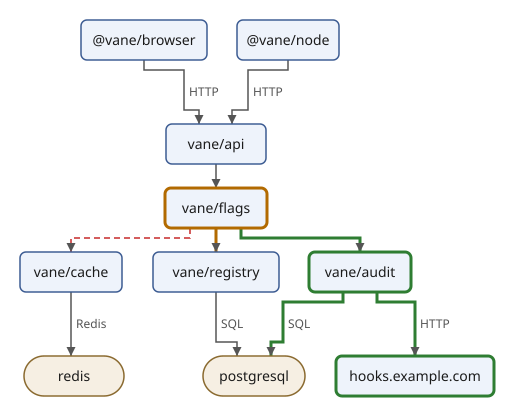
The added module and the webhook, and the three edges to and from the
audit module, are drawn with a thick green line, the removed edge with a
dashed red one, and the changed module and edge in amber. Each class
rule is in the style once, in the order the classes first appear in the
description: changed on flags, added on audit, removed on the
first edge. A rule written
later in the style wins over an earlier one of the same weight, which is
why the class rules come last.
Using the module elsewhere
Any query can draw a diagram by importing the module; all it needs is a
diagram element, from a file or built on the spot. The state machine,
call-chain and trace projects each keep a link to svg/draw.xqm in
their own directory and import it there. The module's functions are its
interface:
| Function | Result |
|---|---|
draw:svg($diagram) | the drawing, an SVG svg element |
draw:layout($diagram) | a draw:layout record: width, height, boxes, routes |
draw:reversed($diagram) | the positions of the edges that phase 1 turns round |
draw:graph($diagram) | the graph to lay out: vertices and links |
draw:layers($graph), draw:proper($graph, $layers) | phase 2: the layers, and the graph with bend vertices |
draw:orders($proper) | phase 3: one array of vertex ids per layer |
draw:xs($proper, $orders) | phase 4: the x of every vertex |
draw:path($points, $straight), draw:loop($box) | phase 5: an edge's SVG path, a loop's route |
draw:node($node, $box), draw:edge($edge, $route) | one group |
A diagram built in the query itself is drawn the same way. Here the loop shows up on the right of its box, with its label beside it:
$ sxml xquery --expression='import module namespace draw = "urn:example:draw" at "draw.xqm"; draw:svg(<diagram title="Polling"><node id="flag" label="flag"/><edge from="flag" to="flag" label="status.request"/></diagram>)' --output=loop.svg
$ sxml xpath --context-item=loop.svg '//*:g[@id = "edge-flag-flag"]/*/(@d, @x) ! string()'
"M 120 32 L 136 32 L 136 48 L 120 48"
"142"
Drawing with XSLT
XQuery computed the layout and wrote the drawing in one go. The drawing
half is also a natural job for XSLT: each kind of element in the input
becomes a piece of SVG, which is exactly what template rules say. In
this section a stylesheet draws the diagram from the layout that
layout.xq writes, and it draws the edge labels last, on top of
everything, which the XQuery drawing doesn't do.
The input: a laid-out diagram
The stylesheet does no layout of its own. It reads the description
with the layout added, which
Computing a Layout made with layout.xq:
$ sxml xquery --context-item=diagram.xml --output=laid-out.xml layout.xq
$ sxml xpath --context-item=laid-out.xml '/diagram/@width/string(), //node[@id = "redis"]/@*!string()'
"299"
"redis"
"redis"
"store"
"177"
"356"
"100"
"40"
The stylesheet
draw.xsl:
<?xml version="1.0" encoding="UTF-8"?>
<!-- Draws a laid-out diagram (the output of layout.xq) as SVG, in three
layers: the edges, the nodes, and the edges' labels on top. -->
<xsl:stylesheet version="4.0"
xmlns:xsl="http://www.w3.org/1999/XSL/Transform"
xmlns="http://www.w3.org/2000/svg"
expand-text="yes">
<xsl:output method="xml" indent="yes"/>
<xsl:template match="/diagram">
<svg width="{@width}" height="{@height}" viewBox="0 0 {@width} {@height}">
<title>{@title}</title>
<style>
.nodes rect {{ fill: #eef3fb; stroke: #3b5b92; stroke-width: 1.5 }}
.nodes .store rect {{ fill: #f6efe3; stroke: #8a6a2f }}
.nodes text {{ font: 14px sans-serif; fill: #1b1b1b }}
.edges path {{ fill: none; stroke: #555555; stroke-width: 1.5 }}
.labels text {{ font: 12px sans-serif; fill: #555555 }}
</style>
<defs>
<marker id="arrow" viewBox="0 0 10 10" refX="10" refY="5"
markerWidth="9" markerHeight="9" markerUnits="userSpaceOnUse" orient="auto">
<path d="M 0 0 L 10 5 L 0 10 z" fill="#555555"/>
</marker>
</defs>
<g class="edges">
<xsl:apply-templates select="edge" mode="edges"/>
</g>
<g class="nodes">
<xsl:apply-templates select="node" mode="nodes"/>
</g>
<g class="labels">
<xsl:apply-templates select="edge" mode="labels"/>
</g>
</svg>
</xsl:template>
<!-- A description without a layout: stop, and say what to do. -->
<xsl:template match="/diagram[not(@width)]" priority="1">
<xsl:message terminate="yes">{@title}: no layout; run layout.xq first</xsl:message>
</xsl:template>
<!-- The edges layer: the path of each edge. -->
<xsl:template match="edge" mode="edges">
<path id="edge-{@from}-{@to}" d="{@d}" marker-end="url(#arrow)"/>
</xsl:template>
<!-- The nodes layer: a box and its label. Stores have rounder corners. -->
<xsl:template match="node" mode="nodes">
<xsl:param name="corner" select="6"/>
<g id="node-{@id}" class="{(@kind, 'service')[1], @class}">
<rect x="{@x}" y="{@y}" width="{@width}" height="{@height}" rx="{$corner}"/>
<text x="{@x + @width idiv 2}" y="{@y + 25}" text-anchor="middle">{@label}</text>
</g>
</xsl:template>
<xsl:template match="node[@kind = 'store']" mode="nodes">
<xsl:next-match>
<xsl:with-param name="corner" select="20"/>
</xsl:next-match>
</xsl:template>
<!-- The labels layer: a label where the layout put it. An edge
without a label falls to the second rule, which writes nothing. -->
<xsl:template match="edge[@label]" mode="labels">
<text x="{@label-x}" y="{@label-y}">{@label}</text>
</xsl:template>
<xsl:template match="edge" mode="labels"/>
</xsl:stylesheet>
Read it from the top.
xmlns="http://www.w3.org/2000/svg"on the stylesheet makes it the default namespace of the literal result elements:svg,g,rectand the others are written in the SVG namespace. It does not change what the patterns and paths mean:match="node"andselect="edge"still name elements in no namespace, as in the input. (XSLT keeps the two apart; XQuery'sdeclare default element namespacechanges both.)expand-text="yes"turns on text value templates: curly braces in text hold expressions, as{@title}and{@label}do. Braces in attributes are attribute value templates, which XSLT always has. In the style rules a brace that is CSS is doubled, the same rule as in XQuery. The text ofstyleis copied as it is written, indentation included; CSS doesn't mind.xsl:output indent="yes"asks for one element per line.
One mode per layer
The template for /diagram writes the frame (title, style, the arrow
marker) and three groups, and it fills each group by applying templates
in a different mode: edges, nodes and labels. A mode is a
separate set of template rules, so the same edge elements are
processed twice, once to draw their paths and once to write their
labels, by different rules. The order of the groups is the order of
drawing: paths first, then the boxes, then the labels over both, where
no box can hide them.
Within a mode the most specific rule wins. In the labels mode,
edge[@label] has a predicate, which gives it the default priority 0.5,
and edge alone has priority 0; so an edge with a label is written by
the first rule, and one without falls to the second, which is empty and
writes nothing.
xsl:next-match for stores
A store is a node with rounder corners. Instead of a second copy of the
node rule, the store rule hands the work back: xsl:next-match applies
the next rule that matches, here the general node rule, and
xsl:with-param gives it the corner radius. The general rule declares
the parameter with its default, 6:
$ sxml transform draw.xsl laid-out.xml --output=drawn.svg
$ sxml xpath --context-item=drawn.svg '//*:g[@id = ("node-cache", "node-redis")] ! `{@id}: {@class}, rx {*:rect/@rx}`'
"node-cache: service, rx 6"
"node-redis: store, rx 20"
The cache module is a box like the other modules; Redis, where it keeps its data, is the store.
The class is an attribute value template with a sequence in it,
{(@kind, 'service')[1], @class}: the values are joined with spaces, and
a missing class adds nothing.
The result
$ sxml transform draw.xsl laid-out.xml
<?xml version="1.0" encoding="UTF-8"?>
<svg xmlns="http://www.w3.org/2000/svg" width="299" height="416" viewBox="0 0 299 416">
<title>Vane</title>
<style>
.nodes rect { fill: #eef3fb; stroke: #3b5b92; stroke-width: 1.5 }
.nodes .store rect { fill: #f6efe3; stroke: #8a6a2f }
.nodes text { font: 14px sans-serif; fill: #1b1b1b }
.edges path { fill: none; stroke: #555555; stroke-width: 1.5 }
.labels text { font: 12px sans-serif; fill: #555555 }
</style>
<defs>
<marker id="arrow" viewBox="0 0 10 10" refX="10" refY="5" markerWidth="9" markerHeight="9" markerUnits="userSpaceOnUse" orient="auto">
<path d="M 0 0 L 10 5 L 0 10 z" fill="#555555"/>
</marker>
</defs>
<g class="edges">
<path id="edge-browser-api" d="M 83 60 L 83 70 L 123 70 L 123 110 L 138 110 L 138 124" marker-end="url(#arrow)"/>
<path id="edge-node-api" d="M 227 60 L 227 70 L 187 70 L 187 110 L 171 110 L 171 124" marker-end="url(#arrow)"/>
<path id="edge-api-flags" d="M 155 164 L 155 188" marker-end="url(#arrow)"/>
<path id="edge-flags-registry" d="M 138 228 L 138 238 L 83 238 L 83 252" marker-end="url(#arrow)"/>
<path id="edge-flags-cache" d="M 172 228 L 172 238 L 227 238 L 227 252" marker-end="url(#arrow)"/>
<path id="edge-registry-postgresql" d="M 83 292 L 83 356" marker-end="url(#arrow)"/>
<path id="edge-cache-redis" d="M 227 292 L 227 356" marker-end="url(#arrow)"/>
</g>
<g class="nodes">
<g id="node-browser" class="service">
<rect x="20" y="20" width="126" height="40" rx="6"/>
<text x="83" y="45" text-anchor="middle">@vane/browser</text>
</g>
<g id="node-node" class="service">
<rect x="176" y="20" width="102" height="40" rx="6"/>
<text x="227" y="45" text-anchor="middle">@vane/node</text>
</g>
<g id="node-api" class="service">
<rect x="105" y="124" width="100" height="40" rx="6"/>
<text x="155" y="149" text-anchor="middle">vane/api</text>
</g>
<g id="node-flags" class="service">
<rect x="104" y="188" width="102" height="40" rx="6"/>
<text x="155" y="213" text-anchor="middle">vane/flags</text>
</g>
<g id="node-registry" class="service">
<rect x="20" y="252" width="126" height="40" rx="6"/>
<text x="83" y="277" text-anchor="middle">vane/registry</text>
</g>
<g id="node-cache" class="service">
<rect x="176" y="252" width="102" height="40" rx="6"/>
<text x="227" y="277" text-anchor="middle">vane/cache</text>
</g>
<g id="node-postgresql" class="store">
<rect x="32" y="356" width="102" height="40" rx="20"/>
<text x="83" y="381" text-anchor="middle">postgresql</text>
</g>
<g id="node-redis" class="store">
<rect x="177" y="356" width="100" height="40" rx="20"/>
<text x="227" y="381" text-anchor="middle">redis</text>
</g>
</g>
<g class="labels">
<text x="128" y="96">HTTP</text>
<text x="192" y="96">HTTP</text>
<text x="88" y="328">SQL</text>
<text x="232" y="328">Redis</text>
</g>
</svg>
The labels layer has four texts, not seven: the three edges between
modules have no label, and the empty rule writes nothing for them. The
boxes, paths and labels are where the XQuery drawing has them; only the
grouping and the style differ. Arithmetic on attributes works because
an attribute of an untyped document is untyped: @x + @width idiv 2
converts both to numbers. The two steps also run as one pipeline, the layout's output
read by the stylesheet from standard input (-):
$ sxml xquery --context-item=states.xml layout.xq | sxml transform draw.xsl - --output=states.svg
$ sxml xpath --context-item=states.svg '//*:g[@class = "labels"]/*:text ! `{.} at {@x},{@y}`'
"rollout.request at 26,200"
"check.passed at 118,304"
"check.failed at 157,200"
"step.done at 282,200"
"kill.request at 157,96"
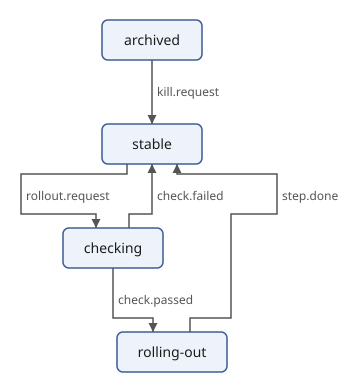
A rule for input that is wrong
Given the description itself, without the layout, the rules above would
write a drawing with empty sizes and no places, and say nothing. One
more rule catches that: /diagram[not(@width)] matches a diagram
without a layout, and xsl:message terminate="yes" stops the
transformation with the message. Both patterns, /diagram and
/diagram[not(@width)], have the default priority 0.5, so the rule
gives itself priority="1" to win:
$ sxml transform draw.xsl diagram.xml
Vane: no layout; run layout.xq first
draw.xsl:41:5: err:XTMM9000: Vane: no layout; run layout.xq first
Matching SVG
So far the stylesheet wrote SVG and read elements in no namespace.
A stylesheet that reads SVG must match SVG names, and the attribute
xpath-default-namespace says which namespace unprefixed names in
patterns and paths are in. This one lists the boxes of any drawing:
boxes.xsl:
<?xml version="1.0" encoding="UTF-8"?>
<!-- Lists the boxes of an SVG drawing: where each one is, and its text. -->
<xsl:stylesheet version="4.0"
xmlns:xsl="http://www.w3.org/1999/XSL/Transform"
xpath-default-namespace="http://www.w3.org/2000/svg"
expand-text="yes">
<xsl:output method="text"/>
<xsl:template match="/">
<xsl:apply-templates select="//rect"/>
</xsl:template>
<xsl:template match="rect">
<xsl:text>{@x},{@y} {../text} </xsl:text>
</xsl:template>
</xsl:stylesheet>
Run on both drawings, it shows that they agree:
$ sxml transform boxes.xsl diagram.svg
20,20 @vane/browser
176,20 @vane/node
105,124 vane/api
104,188 vane/flags
20,252 vane/registry
176,252 vane/cache
32,356 postgresql
177,356 redis
$ sxml transform boxes.xsl drawn.svg
20,20 @vane/browser
176,20 @vane/node
105,124 vane/api
104,188 vane/flags
20,252 vane/registry
176,252 vane/cache
32,356 postgresql
177,356 redis
Without xpath-default-namespace, //rect would look for rect in no
namespace, find nothing, and the output would be empty. The next
section is all about stylesheets like this one, which read drawings and
write changed ones.
Transforming SVG
A drawing is a document, so it can be changed after it is drawn, by someone who has never seen the description it came from. This section writes small stylesheets that take an SVG file, ours or one an editor saved, and write a changed copy: a dark theme, one node highlighted, the editor's leftovers removed, a different size. A query lists the text. All of them read SVG, so all of them must name SVG elements in the SVG namespace, and the section shows the ways to do that.
Copying everything, changing a little
Each stylesheet here starts from the same line:
<xsl:mode on-no-match="shallow-copy"/>
It says what happens to a node no template rule matches: it is copied, and its attributes and children are processed in turn. With only that line, a stylesheet copies its input unchanged; every template rule added to it is an exception. The rules below change a few nodes and leave the rest of the drawing alone, however large it is.
A dark theme
A dark theme swaps colours. dark.xsl holds a palette, a map from
each light colour of our drawings to a dark one, and applies it
wherever colours are written: in the style text, and in the colour
attributes fill, stroke and stop-color. It also gives the drawing a
dark background and makes the default colour light, because what has
no colour of its own is drawn black:
dark.xsl:
<?xml version="1.0" encoding="UTF-8"?>
<!-- A dark theme for an SVG drawing: every colour of the light palette,
in the style text and in colour attributes, becomes its dark
counterpart, the drawing gets a dark background, and what has no
colour of its own becomes light. Everything else is copied as it is. -->
<xsl:stylesheet version="4.0"
xmlns:xsl="http://www.w3.org/1999/XSL/Transform"
xmlns:xs="http://www.w3.org/2001/XMLSchema"
xmlns:map="http://www.w3.org/2005/xpath-functions/map"
xmlns:svg="http://www.w3.org/2000/svg"
xmlns:theme="urn:example:theme"
exclude-result-prefixes="#all">
<xsl:mode on-no-match="shallow-copy"/>
<xsl:output omit-xml-declaration="yes"/>
<xsl:variable name="palette" as="map(xs:string, xs:string)" select="{
'#eef3fb': '#1f2a3d',
'#3b5b92': '#8fb0e8',
'#f6efe3': '#3a3020',
'#8a6a2f': '#d9b878',
'#1b1b1b': '#e8e8e8',
'#555555': '#b0b0b0',
'#ffffff': '#121212'
}"/>
<!-- The text with every colour of the palette replaced. -->
<xsl:function name="theme:dark" as="xs:string">
<xsl:param name="text" as="xs:string"/>
<xsl:sequence select="fold-left(map:keys($palette), $text,
fn($result, $colour) { replace($result, $colour, $palette($colour), 'qi') })"/>
</xsl:function>
<xsl:template match="/svg:svg">
<xsl:copy>
<xsl:apply-templates select="@*"/>
<xsl:attribute name="style"
select="string-join((@style, 'background-color: #121212'), '; ')"/>
<!-- What has no colour of its own is black; make it light. -->
<xsl:if test="not(@fill)">
<xsl:attribute name="fill">#e8e8e8</xsl:attribute>
</xsl:if>
<xsl:apply-templates/>
</xsl:copy>
</xsl:template>
<xsl:template match="svg:style/text()">
<xsl:value-of select="theme:dark(.)"/>
</xsl:template>
<xsl:template match="@fill | @stroke | @stop-color">
<xsl:attribute name="{name()}" select="theme:dark(.)"/>
</xsl:template>
</xsl:stylesheet>
theme:dark replaces every colour of the palette in a string, with a
fold-left over the palette's keys: the result of one replacement is
the input of the next. The flags q and i of replace make the
colour a literal string (not a regular expression) and ignore case, as
CSS does for colours. The function is in a namespace of our own: a
stylesheet function needs a prefix, and the SVG namespace is not ours to
add functions to.
Names in the patterns have a prefix, svg:, bound to the SVG namespace
on the stylesheet: /svg:svg is the root of an SVG drawing, and
svg:style/text() the text of its style. exclude-result-prefixes
keeps these declarations out of the result.
$ sxml transform dark.xsl diagram.svg --output=dark.svg
$ sxml xpath --context-item=dark.svg '/*/@style/string(), //*:style/string()'
"background-color: #121212"
"
.node rect { fill: #1f2a3d; stroke: #8fb0e8; stroke-width: 1.5 }
.store rect { fill: #3a3020; stroke: #d9b878 }
.node text { font: 14px sans-serif; fill: #e8e8e8 }
.edge path { fill: none; stroke: #b0b0b0; stroke-width: 1.5 }
.edge text { font: 12px sans-serif; fill: #b0b0b0 }
"
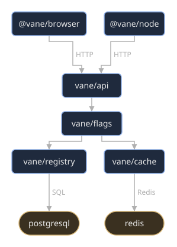
The palette works on any drawing that uses these colours. The rules for
added, removed and changed use colours that are not in it, and stay
as they are, readable on dark too:
$ sxml xquery --context-item=change.xml draw.xq | sxml transform dark.xsl - | sxml xpath --context-item=- 'tokenize(//*:style, "\n")[contains(., "added") or contains(., "store")] ! normalize-space()'
".store rect { fill: #3a3020; stroke: #d9b878 }"
".added rect, .added path { stroke: #2e7d32; stroke-width: 3 }"
Highlighting a node
To point at one module in a review, highlight it and the edges that start or end at it, and fade the rest. Which node is a stylesheet parameter, given on the command line:
highlight.xsl:
<?xml version="1.0" encoding="UTF-8"?>
<!-- Highlights one node of a drawing made by draw.xqm, and the edges that
start or end at it; the rest of the drawing fades. The node is the
parameter "node", a node id of the description. -->
<xsl:stylesheet version="4.0"
xmlns:xsl="http://www.w3.org/1999/XSL/Transform"
xmlns:xs="http://www.w3.org/2001/XMLSchema"
xpath-default-namespace="http://www.w3.org/2000/svg"
expand-text="yes">
<xsl:param name="node" as="xs:string" required="yes"/>
<xsl:mode on-no-match="shallow-copy"/>
<xsl:output omit-xml-declaration="yes"/>
<!-- The node ids of the drawing, from the groups' ids "node-ID". -->
<xsl:variable name="ids" select="//g[starts-with(@id, 'node-')] ! substring(@id, 6)"/>
<!-- The ids of the groups to highlight: the node and its edges, whose
ids are "edge-FROM-TO". -->
<xsl:variable name="highlighted" select="
'node-' || $node,
$ids ! ('edge-' || $node || '-' || ., 'edge-' || . || '-' || $node)"/>
<xsl:template match="/">
<xsl:if test="not($node = $ids)">
<xsl:message>highlight.xsl: the drawing has no node "{$node}"</xsl:message>
</xsl:if>
<xsl:apply-templates/>
</xsl:template>
<xsl:template match="style/text()">
<xsl:value-of select="."/>
<xsl:text> .node:not(.highlight), .edge:not(.highlight) {{ opacity: 0.3 }}
.highlight rect, .highlight path {{ stroke: #d81b60; stroke-width: 3 }}
</xsl:text>
</xsl:template>
<xsl:template match="g[@id = $highlighted]">
<xsl:copy>
<xsl:apply-templates select="@*"/>
<xsl:attribute name="class" select="@class, 'highlight'"/>
<xsl:apply-templates/>
</xsl:copy>
</xsl:template>
</xsl:stylesheet>
This stylesheet uses the other way of naming SVG elements:
xpath-default-namespace puts unprefixed names in patterns and paths in
the SVG namespace, so g, style and //g mean SVG elements.
The drawing has no description inside it, only ids, so the stylesheet
works from them. A node's group has the id node-ID, and an edge's
group edge-FROM-TO. The variable $ids collects the node ids, and
$highlighted the ids of the groups to highlight: the node's own, and
for every node M the two possible edges between it and M. Matching
whole ids, rather than looking for the node's id somewhere inside a
group's id, matters here: the backend SDK's node has the id node, and
contains(@id, 'node') would be true of every node's group.
A template rule whose pattern uses a variable is fine in XSLT: g[@id = $highlighted] matches the groups to change, which get the class
highlight, and two style rules do the rest. In CSS, :not(.highlight)
selects the groups without the class.
$ sxml transform --param=node=registry highlight.xsl diagram.svg --output=highlight.svg
$ sxml xpath --context-item=highlight.svg '//*:g[contains-token(@class, "highlight")]/@id/string()'
"edge-flags-registry"
"edge-registry-postgresql"
"node-registry"
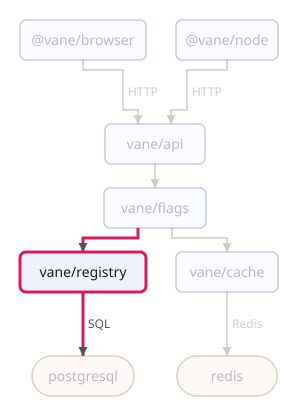
as="xs:string" on the parameter converts the value given, and
required="yes" makes a missing one an error. A node the drawing
doesn't have, such as the audit module, which only the drawing after
the change has, is not an error, but worth a word, which xsl:message
writes to standard error while the transformation goes on:
$ sxml transform highlight.xsl diagram.svg
highlight.xsl: err:XTDE0050: no value is supplied for a required stylesheet parameter (XSLT 4.0, 9.5)
$ sxml transform --param=node=audit highlight.xsl diagram.svg --output=nothing.svg
highlight.xsl: the drawing has no node "audit"
Without xpath-default-namespace, the stylesheet still runs, and does
nothing: //g finds no groups in no namespace, so even registry is
not found. This is the most common mistake with SVG and XSLT, and the
message is how you notice it:
$ sed '/xpath-default-namespace/d' highlight.xsl > highlight-plain.xsl
$ sxml transform --param=node=registry highlight-plain.xsl diagram.svg | grep -c highlight
highlight.xsl: the drawing has no node "registry"
0
Removing ids and metadata
Drawings made in an editor carry the editor with them. legend.svg is a
legend for our diagrams as an editor saved it, with a comment, its own
elements and attributes in its own namespaces, RDF metadata, and an id
on everything:
legend.svg:
<?xml version="1.0" encoding="UTF-8" standalone="no"?>
<!-- Created with Inkscape (http://www.inkscape.org/) -->
<svg width="120" height="85" viewBox="0 0 120 85" version="1.1" id="svg1"
inkscape:version="1.3 (0e150ed6c4, 2023-07-21)"
sodipodi:docname="legend.svg"
xmlns:inkscape="http://www.inkscape.org/namespaces/inkscape"
xmlns:sodipodi="http://sodipodi.sourceforge.net/DTD/sodipodi-0.dtd"
xmlns="http://www.w3.org/2000/svg"
xmlns:rdf="http://www.w3.org/1999/02/22-rdf-syntax-ns#"
xmlns:cc="http://creativecommons.org/ns#"
xmlns:dc="http://purl.org/dc/elements/1.1/">
<sodipodi:namedview id="namedview1" pagecolor="#ffffff" inkscape:zoom="4"/>
<defs id="defs1">
<linearGradient id="fade" x1="0" y1="0" x2="0" y2="1">
<stop id="stop1" offset="0" stop-color="#ffffff"/>
<stop id="stop2" offset="1" stop-color="#eef3fb"/>
</linearGradient>
</defs>
<metadata id="metadata1">
<rdf:RDF>
<cc:Work rdf:about="">
<dc:title>Legend</dc:title>
</cc:Work>
</rdf:RDF>
</metadata>
<g inkscape:label="Layer 1" inkscape:groupmode="layer" id="layer1">
<rect id="rect1" x="10" y="10" width="100" height="30" rx="6"
fill="url(#fade)" stroke="#3b5b92"/>
<text id="text1" x="60" y="30" text-anchor="middle" font-size="12">module</text>
<rect id="rect2" x="10" y="48" width="100" height="30" rx="15"
fill="#f6efe3" stroke="#8a6a2f"/>
<text id="text2" x="60" y="68" text-anchor="middle" font-size="12">store</text>
</g>
</svg>
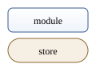
strip.xsl removes all that. Removing a node is a template rule with
no content: the node matches, and nothing is written for it.
strip.xsl:
<?xml version="1.0" encoding="UTF-8"?>
<!-- Removes what an SVG editor leaves in a drawing: comments, metadata,
elements and attributes in the editor's namespaces, and every id that
nothing refers to. A reference is "#id" in an attribute (url(#id),
href="#id") or in the style text. -->
<xsl:stylesheet version="4.0"
xmlns:xsl="http://www.w3.org/1999/XSL/Transform"
xmlns:svg="http://www.w3.org/2000/svg"
exclude-result-prefixes="#all">
<xsl:mode on-no-match="shallow-copy"/>
<xsl:output omit-xml-declaration="yes" indent="yes"/>
<xsl:strip-space elements="*"/>
<xsl:preserve-space elements="svg:text svg:style"/>
<!-- The ids that something refers to. -->
<xsl:variable name="referenced" select="
distinct-values(
tokenize(string-join((//@*, //svg:style), ' '), '[^\w#.-]+')
[starts-with(., '#')] ! substring(., 2)
)"/>
<!-- Elements in the SVG namespace are copied without the namespace
declarations they don't use. -->
<xsl:template match="svg:*">
<xsl:copy copy-namespaces="no">
<xsl:apply-templates select="@* | node()"/>
</xsl:copy>
</xsl:template>
<!-- Dropped: metadata, comments, elements in other namespaces,
attributes in a namespace, and ids nothing refers to. A union
pattern has the lowest priority of its parts (comment(), -0.5), so
the rule says its priority, to win over svg:* (-0.25). -->
<xsl:template match="svg:metadata | comment() | *[namespace-uri() ne 'http://www.w3.org/2000/svg']"
priority="1"/>
<xsl:template match="@*[namespace-uri()] | @id[not(. = $referenced)]"/>
</xsl:stylesheet>
Ids need care. The gradient fade is used by fill="url(#fade)", and a
drawing that loses that id loses its gradient (in our drawings, the
arrow marker is url(#arrow)). So $referenced collects every #name
in the attributes and in the style text, and only the other ids go.
Three details are about namespaces and whitespace:
- Patterns test namespaces directly:
*[namespace-uri() ne '…']is any element outside SVG, and@*[namespace-uri()]any attribute in a namespace (ordinary attributes are in none). - A copied element takes the namespace declarations in scope with it,
even unused ones;
copy-namespaces="no"onxsl:copyleaves out the ones the copy doesn't need, so theinkscapeandrdfdeclarations disappear along with what used them. - The whitespace around a removed element stays behind as blank lines.
xsl:strip-spacedrops whitespace-only text from the input (except intextandstyle, where it may matter), andindent="yes"lays the result out again.
The rule that drops elements is a union of three patterns. In XSLT 4.0 a
union has the lowest priority of its parts, which is comment()'s -0.5,
lower than the -0.25 of svg:*; the rule gives itself priority="1", or
svg:* would copy metadata instead of dropping it.
$ sxml transform strip.xsl legend.svg
<svg xmlns="http://www.w3.org/2000/svg" width="120" height="85" viewBox="0 0 120 85" version="1.1">
<defs>
<linearGradient id="fade" x1="0" y1="0" x2="0" y2="1">
<stop offset="0" stop-color="#ffffff"/>
<stop offset="1" stop-color="#eef3fb"/>
</linearGradient>
</defs>
<g>
<rect x="10" y="10" width="100" height="30" rx="6" fill="url(#fade)" stroke="#3b5b92"/>
<text x="60" y="30" text-anchor="middle" font-size="12">module</text>
<rect x="10" y="48" width="100" height="30" rx="15" fill="#f6efe3" stroke="#8a6a2f"/>
<text x="60" y="68" text-anchor="middle" font-size="12">store</text>
</g>
</svg>
Transformations compose. The cleaned legend in the dark theme is two stylesheets in a pipeline, and the gradient's light stops become dark:
$ sxml transform strip.xsl legend.svg | sxml transform dark.xsl - | sxml xpath --context-item=- '//*:stop/@stop-color/string(), //*:rect/@fill/string()'
"#121212"
"#1f2a3d"
"url(#fade)"
"#3a3020"
Listing the text
A query reads SVG as easily. declare namespace binds a prefix for the
query, the XQuery counterpart of xmlns:svg on a stylesheet:
texts.xq:
xquery version "4.0";
(: The text of an SVG drawing (the context item), one line per text
element, in drawing order. :)
declare namespace svg = "http://www.w3.org/2000/svg";
declare option output:method "text";
string-join(//svg:text ! normalize-space(), " ")
$ sxml xquery --context-item=diagram.svg texts.xq
HTTP
HTTP
SQL
Redis
@vane/browser
@vane/node
vane/api
vane/flags
vane/registry
vane/cache
postgresql
redis
$ sxml xquery --context-item=legend.svg texts.xq
module
store
The edge labels come first because the edges are drawn first. A list like this is what a spelling checker or a translator needs, and what a test can compare.
Scaling with the viewBox
The viewBox of the root says which area of the drawing's own
coordinates is shown, and width and height say how large the result
is. Change the size and keep the viewBox, and the whole drawing scales,
lines and text alike:
scale.xsl:
<?xml version="1.0" encoding="UTF-8"?>
<!-- Scales an SVG drawing: the width and height of the root element are
multiplied by the parameter "factor"; the viewBox stays, so the
drawing grows or shrinks with them. A drawing without a viewBox gets
one first, from its width and height, or it would be cut off instead. -->
<xsl:stylesheet version="4.0"
xmlns:xsl="http://www.w3.org/1999/XSL/Transform"
xmlns:xs="http://www.w3.org/2001/XMLSchema"
xmlns:svg="http://www.w3.org/2000/svg">
<xsl:param name="factor" as="xs:decimal" select="2"/>
<xsl:mode on-no-match="shallow-copy"/>
<xsl:output omit-xml-declaration="yes"/>
<xsl:template match="/svg:svg[not(@viewBox)]">
<xsl:copy>
<xsl:attribute name="viewBox" select="0, 0, @width, @height"/>
<xsl:apply-templates select="@* | node()"/>
</xsl:copy>
</xsl:template>
<xsl:template match="/svg:svg/@width | /svg:svg/@height">
<xsl:attribute name="{name()}" select="xs:decimal(.) * $factor"/>
</xsl:template>
</xsl:stylesheet>
$ sxml transform scale.xsl diagram.svg | head -1
<svg xmlns="http://www.w3.org/2000/svg" width="598" height="832" viewBox="0 0 299 416">
$ sxml transform --param=factor=0.5 scale.xsl box.svg | head -1
<svg xmlns="http://www.w3.org/2000/svg" width="100" height="70" viewBox="0 0 200 140">
Without a viewBox, a larger width would show more empty space, not a
larger drawing, so the rule for /svg:svg[not(@viewBox)] adds one made
from the old size before the sizes change. The pattern /svg:svg/@width
starts with /: it matches only the root's width, not the width of
every rect.
$ sed 's/ viewBox="0 0 200 140"//' box.svg > plain.svg
$ sxml transform scale.xsl plain.svg | head -1
<svg xmlns="http://www.w3.org/2000/svg" viewBox="0 0 200 140" width="400" height="280">
Namespaces in patterns, once more
Every stylesheet and query in this section names SVG elements, and they do it in four ways:
| Way | Where | Example |
|---|---|---|
| a prefix bound in the stylesheet or query | dark.xsl, strip.xsl, scale.xsl, texts.xq | svg:style, //svg:text |
| a default namespace for names in paths and patterns | highlight.xsl, boxes.xsl | xpath-default-namespace="…", then g |
| any namespace | quick XPath at the command line | //*:rect |
| the namespace in the name | anywhere | Q{http://www.w3.org/2000/svg}g |
What doesn't work is an unprefixed name with no default: it means no namespace, and an SVG drawing has no elements there.
With this, the diagram tool is complete: a description, a layout, two
ways of drawing it, and stylesheets that change any drawing. The state
machine, call-chain and trace projects reuse draw.xqm to draw what
they compute.
Validating with XSD
A draft can be well-formed and still be wrong: a requirement that says
"MIGHT", which is not one of the key words of BCP 14; a cross reference
to an anchor that no section has; a draft whose name, written twice,
says -01 in one place and -02 in the other. A schema describes
what a valid document of some kind looks like, so a program can check
its input once, where it comes in, instead of everywhere it uses it. XSD (XML
Schema Definition Language) is the schema language of the W3C, and sxml
implements its current version, XSD 1.1.
The first half of this chapter works in the spec directory, on the
Vane draft and its schema vane.xsd. From Namespaces and Larger
Schemas on, it moves to the scxml directory and
the schemas of the feature flag's state machine, which has namespaces, keys and
assertions of its own.
A schema for the draft
A schema is an XML document in the namespace
http://www.w3.org/2001/XMLSchema. It declares elements and
attributes, and gives each a type. Simple types describe text:
numbers, dates, strings with restrictions. Complex types describe
elements with attributes and children.
vane.xsd describes the part of the xml2rfc vocabulary that the draft
uses. Here is its end, the declaration of the document element rfc:
<!-- The document -->
<xs:element name="rfc">
<xs:complexType>
<xs:sequence>
<xs:element name="front" type="front"/>
<xs:element name="middle">
<xs:complexType>
<xs:sequence>
<xs:element name="section" type="section" maxOccurs="unbounded"/>
</xs:sequence>
</xs:complexType>
</xs:element>
<xs:element name="back" minOccurs="0">
<xs:complexType>
<xs:sequence>
<xs:element name="references" type="references" minOccurs="0" maxOccurs="unbounded"/>
</xs:sequence>
</xs:complexType>
</xs:element>
</xs:sequence>
<xs:attribute name="version" type="xs:integer" fixed="3"/>
<xs:attribute name="category">
<xs:simpleType>
<xs:restriction base="xs:token">
<xs:enumeration value="std"/>
<xs:enumeration value="bcp"/>
<xs:enumeration value="info"/>
<xs:enumeration value="exp"/>
<xs:enumeration value="historic"/>
</xs:restriction>
</xs:simpleType>
</xs:attribute>
<xs:attribute name="ipr" type="xs:token"/>
<xs:attribute name="submissionType" type="xs:token"/>
<xs:attribute name="docName" type="draft-name"/>
<!-- The draft's name is written twice; XSD 1.1 can check that the
two agree. -->
<xs:assert test="not(@docName) or
@docName = front/seriesInfo[@name = 'Internet-Draft']/@value"/>
</xs:complexType>
<!-- No two anchors are the same, and every xref names an anchor.
xs:unique, not xs:key: most paragraphs have no anchor. -->
<xs:unique name="anchor">
<xs:selector xpath=".//section | .//t | .//dt | .//cref | .//reference | .//references"/>
<xs:field xpath="@anchor"/>
</xs:unique>
<xs:keyref name="xref-target" refer="anchor">
<xs:selector xpath=".//xref"/>
<xs:field xpath="@target"/>
</xs:keyref>
</xs:element>
</xs:schema>
Read from the top:
rfccontains afront, amiddleof one or more sections, and maybe aback, in that order.type="front"andtype="section"name types that are declared earlier in the schema.- Its attributes each have a type:
versionis an integer and must be 3,categoryis one of five words, anddocNamehas the typedraft-name, a string that must look like the name of an Internet-Draft. xs:assertis a rule in XPath that a validrfcmust meet. It is explained below.xs:uniqueandxs:keyrefare rules about values across the whole document: no two anchors are the same, and everyxrefnames one.
The rest of the schema, from the top, declares the types the draft uses. Simple Types and Facets and Complex Types and Content Models read it part by part.
Validating
sxml validate checks documents against the schema. Both drafts are
valid, so it prints nothing, and its exit status is 0:
$ sxml validate --schema=vane.xsd vane.xml vane-00.xml; echo "exit status $?"
exit status 0
To see what an invalid draft looks like, change a copy of the draft
with sed and validate it from standard input, which - names. This
copy has a requirement that says "MIGHT", an xref to a term that
doesn't exist, and a two-digit year:
$ sed -e 's/<bcp14>MUST NOT/<bcp14>MIGHT/' \
-e 's/target="term-percentage"/target="term-percentages"/' \
-e 's/<date year="2026"/<date year="26"/' vane.xml \
| sxml validate --schema=vane.xsd -
-:20:11: cvc-datatype-valid.1.2.1: attribute 'year' has the value '26', which is not valid for type 'xs:gYear'
-:94:37: cvc-enumeration-valid: element 'bcp14' has the value 'MIGHT', which is not valid for type 'keyword': the value is not one of the enumeration facets (XSD 1.1 Part 2, 4.3.5.4); the enumeration facets are 'MUST', 'MUST NOT', 'REQUIRED', 'SHALL', 'SHALL NOT', 'SHOULD', 'SHOULD NOT', 'RECOMMENDED', ...
-:92:9: cvc-identity-constraint.4.3: element 'xref': its key sequence is no key sequence of the referenced key (keyref 'xref-target')
sxml reports every error, not only the first. Each one has the line and
column, the name of the rule in the XSD specification that failed (such
as cvc-enumeration-valid), the value, and what was expected. The
xref comes last although it is on line 92: rules across the document,
such as the keyref, are checked at the end of the element they belong
to, here rfc, when every anchor is known. Reading Validation
Errors goes through the messages in detail.
For programs, --format=json writes the same report as JSON:
$ sxml validate --schema=vane.xsd --format=json vane.xml
{"schema":{"documents":["vane.xsd"],"status":"valid"},"files":[{"file":"vane.xml","status":"valid"}]}
Rules across values
The draft's name is written twice: in the docName attribute of rfc,
and in the seriesInfo of the front matter, which is what the rendered
draft shows. Nothing about the structure of the document says that the
two must agree, but XSD 1.1 can say it with an assertion: an XPath
condition on the element, here
<xs:assert test="not(@docName) or
@docName = front/seriesInfo[@name = 'Internet-Draft']/@value"/>
A draft whose docName was updated for -02 while its seriesInfo
was not breaks it:
$ sed 's/docName="draft-example-vane-protocol-01"/docName="draft-example-vane-protocol-02"/' vane.xml \
| sxml validate --schema=vane.xsd -
-:7:1: cvc-assertion: element 'rfc' breaks the assertion 'not(@docName) or @docName = front/ser...' of an anonymous type derived from 'xs:anyType'
The message shows the start of the assertion, so you can find it in the
schema. Inside the test, the context item is the rfc element, with its
attributes and children already validated, so the test can rely on
their types. XSD 1.1 Features has more assertions.
Strict and lax
A reviewer sends notes about a short draft, with the draft inside them:
xsd-review.xml:
<!-- A review: a reviewer's notes around a short draft. The review
vocabulary has no schema; the draft inside it has one. -->
<review by="Grace Hopper">
<note>Is "MIGHT" one of the key words?</note>
<rfc docName="draft-example-vane-brief-00">
<front>
<title>Vane in Brief</title>
<seriesInfo name="Internet-Draft" value="draft-example-vane-brief-00"/>
<author fullname="Ada Byron" surname="Byron"/>
<date year="2026"/>
</front>
<middle>
<section anchor="intro">
<name>Introduction</name>
<t>A service <bcp14>MIGHT</bcp14> refuse a rollout.</t>
</section>
</middle>
</rfc>
</review>
vane.xsd declares no review element. By default, validation is
strict: the document element must have a declaration in the schema,
so the review is invalid. sxml still looks inside it, and validates the
elements it does know:
$ sxml validate --schema=vane.xsd xsd-review.xml
xsd-review.xml:3:1: cvc-elt.1: no global declaration governs element 'review'
xsd-review.xml:15:22: cvc-enumeration-valid: element 'bcp14' has the value 'MIGHT', which is not valid for type 'keyword': the value is not one of the enumeration facets (XSD 1.1 Part 2, 4.3.5.4); the enumeration facets are 'MUST', 'MUST NOT', 'REQUIRED', 'SHALL', 'SHALL NOT', 'SHOULD', 'SHOULD NOT', 'RECOMMENDED', ...
With --mode=lax, elements without a declaration are let through, and
the ones with a declaration are validated wherever they are. The review
itself is no longer an error, but the draft inside it still is:
$ sxml validate --mode=lax --schema=vane.xsd xsd-review.xml; echo "exit status $?"
xsd-review.xml:15:22: cvc-enumeration-valid: element 'bcp14' has the value 'MIGHT', which is not valid for type 'keyword': the value is not one of the enumeration facets (XSD 1.1 Part 2, 4.3.5.4); the enumeration facets are 'MUST', 'MUST NOT', 'REQUIRED', 'SHALL', 'SHALL NOT', 'SHOULD', 'SHOULD NOT', 'RECOMMENDED', ...
exit status 1
Only the global declarations, the ones directly inside xs:schema,
can be found this way. In vane.xsd that is only rfc: a section
on its own is not validated even in lax mode, because the schema
declares sections only inside other types.
DTDs
Older documents often carry a DTD, the schema language built into XML itself, in a document type declaration at the top. xml2rfc has one too, for authors who prefer it. A DTD can be part of the document, in its internal subset:
xsd-dtd.xml:
<!DOCTYPE cref [
<!ELEMENT cref (#PCDATA)>
<!ATTLIST cref anchor ID #REQUIRED source CDATA #IMPLIED>
]>
<cref source="AM">Should an owner be able to change the duration?</cref>
sxml check --validate-dtd validates a document against its DTD. This
editorial note has no anchor, which its DTD requires:
$ sxml check --validate-dtd xsd-dtd.xml
xsd-dtd.xml:5:1: cvc-complex-type.4: element 'cref' lacks the required attribute 'anchor'
A DTD knows no types beyond names and IDs, and nothing about
namespaces; that is why vocabularies with namespaces and typed values
use XSD. Files and the Outside World shows external DTDs
and entities, and Appendix A has the details of sxml check.
What's in this chapter
The rest of the chapter teaches XSD step by step:
- Simple Types and Facets: built-in types, restrictions, lists and unions;
- Complex Types and Content Models: sequences,
choices,
all, attributes, mixed, simple and empty content, groups; - Deriving Types: extension, restriction,
xsi:type, substitution groups andxsi:nil; - Namespaces and Larger Schemas: target namespaces, import, wildcards and schema hints, on the flag's state machine;
- Keys and References:
xs:unique,xs:keyandxs:keyref; - XSD 1.1 Features: assertions, conditional types, open content, default attributes and overrides;
- Reading Validation Errors: what the messages mean, and how to fix what they report;
- Typed Data and Schema-Aware Queries: using the types in XQuery and XSLT.
A schema is also a good source for code: Project: Generating Vane's SDKs from a Schema turns one into TypeScript types and runtime checks.
Simple Types and Facets
A simple type describes text: the value of an attribute, or the content of an element that has no children and no attributes. XSD has many simple types built in, and you make your own by restricting them, by making lists of them, and by joining them in unions.
Built-in types
These are the built-in types you'll use most. All of them are in the
namespace http://www.w3.org/2001/XMLSchema, usually with the prefix
xs. The examples come from the draft where it has them:
| Type | Values | Examples |
|---|---|---|
xs:string | any text | Flag States |
xs:token | text without leading, trailing or double spaces; these are removed | trust200902 |
xs:boolean | true, false, 1, 0 | true |
xs:decimal | exact decimal numbers | 1.0 |
xs:integer | whole numbers | 3, -3 |
xs:positiveInteger, xs:nonNegativeInteger | whole numbers above zero, or from zero | 21 |
xs:double | floating-point numbers | 1.5E3, INF |
xs:date, xs:time, xs:dateTime | dates and times of ISO 8601 | 2026-10-21, 09:30:00 |
xs:gYear, xs:gYearMonth | a year, a month of a year | 1997, 2026-10 |
xs:duration | a length of time | PT5M, PT10M |
xs:anyURI | a URI | https://www.rfc-editor.org/info/rfc2119 |
xs:NCName | an XML name without a colon | req-7 |
xs:ID, xs:IDREF | a name unique in the document, and a reference to one | term-flag |
xs:language | a language tag | en-GB |
vane.xsd uses several of them directly: the year of a date is an
xs:gYear, the version of rfc an xs:integer, the target of a
reference an xs:anyURI.
Each type has a lexical space, the texts that are allowed, and a
value space, the values they stand for. 21, 021 and +21 are
three texts for one xs:positiveInteger. That matters when values are
compared, as XPath compares typed values, not their texts.
Restricting a type
Most simple types you write are restrictions: a built-in type, with
facets that narrow down its values. These are the first simple types
of vane.xsd:
<!-- Simple types -->
<xs:simpleType name="anchor">
<xs:restriction base="xs:NCName"/>
</xs:simpleType>
<xs:simpleType name="draft-name">
<xs:restriction base="xs:string">
<xs:pattern value="draft-[a-z0-9]+(-[a-z0-9]+)*-[0-9]{2}"/>
</xs:restriction>
</xs:simpleType>
<xs:simpleType name="keyword">
<xs:annotation>
<xs:documentation>The requirement levels of BCP 14 (RFC 2119, RFC 8174).</xs:documentation>
</xs:annotation>
<xs:restriction base="xs:string">
<xs:enumeration value="MUST"/>
<xs:enumeration value="MUST NOT"/>
<xs:enumeration value="REQUIRED"/>
<xs:enumeration value="SHALL"/>
<xs:enumeration value="SHALL NOT"/>
<xs:enumeration value="SHOULD"/>
<xs:enumeration value="SHOULD NOT"/>
<xs:enumeration value="RECOMMENDED"/>
<xs:enumeration value="NOT RECOMMENDED"/>
<xs:enumeration value="MAY"/>
<xs:enumeration value="OPTIONAL"/>
</xs:restriction>
</xs:simpleType>
<xs:simpleType name="month">
<xs:restriction base="xs:string">
<xs:enumeration value="January"/>
<xs:enumeration value="February"/>
<xs:enumeration value="March"/>
<xs:enumeration value="April"/>
<xs:enumeration value="May"/>
<xs:enumeration value="June"/>
<xs:enumeration value="July"/>
<xs:enumeration value="August"/>
<xs:enumeration value="September"/>
<xs:enumeration value="October"/>
<xs:enumeration value="November"/>
<xs:enumeration value="December"/>
</xs:restriction>
</xs:simpleType>
<xs:simpleType name="day">
<xs:restriction base="xs:positiveInteger">
<xs:maxInclusive value="31"/>
</xs:restriction>
</xs:simpleType>
The facets in them, and the others XSD has:
patternis a regular expression that the whole text must match. The syntax is the one of XPath'smatches, without^and$: a pattern always matches the whole value.draft-[a-z0-9]+(-[a-z0-9]+)*-[0-9]{2}isdraft-, words of small letters and digits joined by hyphens, and a two-digit version.enumerationlists the allowed values, one facet for each value. Akeywordis one of the eleven key words of BCP 14, and amonthone of the twelve names xml2rfc writes.minInclusive,maxInclusive,minExclusiveandmaxExclusivelimit ordered values: numbers, dates, durations. Adayis a positive integer up to 31.minLength,maxLengthandlengthlimit the length: the number of characters of a string, or the number of items of a list.totalDigitsandfractionDigitslimit the digits of decimals.whiteSpacesays what happens to spaces:preservekeeps them,replaceturns tabs and line ends into spaces, andcollapsealso removes leading, trailing and double spaces.xs:tokenisxs:stringwithwhiteSpaceset tocollapse.
anchor restricts xs:NCName with no facets at all. That is still
worth a name: the schema says what an anchor is once, and every
attribute that holds one says type="anchor".
xs:annotation and xs:documentation hold text for people. They
change nothing about validation, but tools can read them; the state
machine's documentation in Documenting the Machine in
XHTML does.
A draft with a mistake for three of the types:
$ sed -e 's/vane-protocol-01"/vane-protocol-1"/' \
-e 's/month="October" day="21"/month="Oct" day="32"/' vane.xml \
| sxml validate --schema=vane.xsd -
-:8:6: cvc-pattern-valid: attribute 'docName' has the value 'draft-example-vane-protocol-1', which is not valid for type 'draft-name': the value matches no pattern facet (XSD 1.1 Part 2, 4.3.4.4); the pattern facet is 'draft-[a-z0-9]+(-[a-z0-9]+)*-[0-9]{2}'
-:20:23: cvc-enumeration-valid: attribute 'month' has the value 'Oct', which is not valid for type 'month': the value is not one of the enumeration facets (XSD 1.1 Part 2, 4.3.5.4); the enumeration facets are 'January', 'February', 'March', 'April', 'May', 'June', 'July', 'August', ...
-:20:35: cvc-maxInclusive-valid: attribute 'day' has the value '32', which is not valid for type 'day': the value is above the maxInclusive facet (XSD 1.1 Part 2, 4.3.7.4); the maxInclusive facet is '31'
-:7:1: cvc-assertion: element 'rfc' breaks the assertion 'not(@docName) or @docName = front/ser...' of an anonymous type derived from 'xs:anyType'
Each message names the facet that failed and the facet's value. When
the text isn't even a value of the base type, as 26 isn't an
xs:gYear in the chapter's first example, the message is
cvc-datatype-valid.1.2.1 instead. The last message is a consequence
of the first edit: the seriesInfo still says -01, so the two names
no longer agree.
A restriction can restrict a type of your own, and the facets add up:
a restriction of day with maxInclusive 29 allows 1 to 29. It can
only narrow, never widen: a maxInclusive of 40 on a type whose
maximum is 31 is an error in the schema.
$ echo '<xs:schema xmlns:xs="http://www.w3.org/2001/XMLSchema">
<xs:simpleType name="day">
<xs:restriction base="xs:positiveInteger"><xs:maxInclusive value="31"/></xs:restriction>
</xs:simpleType>
<xs:simpleType name="long-day">
<xs:restriction base="day"><xs:maxInclusive value="40"/></xs:restriction>
</xs:simpleType>
</xs:schema>' | sxml validate --schema=- vane.xml
-:6:32: maxInclusive-valid-restriction: a maxInclusive facet must lie within the base type's bounds (XSD 1.1 Part 2, 4.3.7.4)
Lists
A list type holds several values in one text, separated by spaces.
levels.xsd adds two types to the draft's, for a summary that names
the key words a draft uses and the day of its next meeting:
levels.xsd:
<?xml version="1.0" encoding="UTF-8"?>
<!-- Lists and unions over the simple types of vane.xsd. A summary of a
draft names the key words it uses and the day of its next meeting:
<summary levels="MUST SHOULD MAY" meeting="21"/> -->
<xs:schema xmlns:xs="http://www.w3.org/2001/XMLSchema">
<xs:include schemaLocation="vane.xsd"/>
<!-- A list: key words separated by spaces, at most four of them. -->
<xs:simpleType name="levels">
<xs:restriction>
<xs:simpleType>
<xs:list itemType="keyword"/>
</xs:simpleType>
<xs:maxLength value="4"/>
</xs:restriction>
</xs:simpleType>
<!-- A union: a day of the month, or the word "open". -->
<xs:simpleType name="meeting-day">
<xs:union memberTypes="day">
<xs:simpleType>
<xs:restriction base="xs:token">
<xs:enumeration value="open"/>
</xs:restriction>
</xs:simpleType>
</xs:union>
</xs:simpleType>
<xs:element name="summary">
<xs:complexType>
<xs:attribute name="levels" type="levels" use="required"/>
<xs:attribute name="meeting" type="meeting-day"/>
</xs:complexType>
</xs:element>
</xs:schema>
xs:include brings in the components of vane.xsd, so keyword and
day can be used here; Namespaces and Larger
Schemas says more about combining schema documents.
levels is a list of keyword, so MUST SHOULD MAY is three values,
each a keyword. The list type is written inside a restriction, which
adds a facet: on a list, length, minLength and maxLength count
the items, so a summary names at most four levels.
$ echo '<summary levels="MUST SHOULD MAY" meeting="21"/>' | sxml validate --schema=levels.xsd -
$ echo '<summary levels="MUST SHOULD MAY MUST OPTIONAL"/>' | sxml validate --schema=levels.xsd -
-:1:10: cvc-maxLength-valid: attribute 'levels' has the value 'MUST SHOULD MAY MUST OPTIONAL', which is not valid for type 'levels': the value is longer than the maxLength facet (XSD 1.1 Part 2, 4.3.3.4); the maxLength facet is '4'
The items of a list are separated by whitespace, always. Two of the key
words have a space inside, so a list of keywords can't hold them:
MUST NOT is the two items MUST and NOT, and NOT is not a
keyword:
$ echo '<summary levels="MUST NOT"/>' | sxml validate --schema=levels.xsd -
-:1:10: cvc-enumeration-valid: attribute 'levels' has the value 'MUST NOT', which is not valid for type 'levels': the value is not one of the enumeration facets (XSD 1.1 Part 2, 4.3.5.4)
A list type is the right choice for names and numbers, which never
contain spaces. Lists are handy in attributes, where you can't repeat
an element. XSD's own xs:IDREFS and xs:NMTOKENS are lists.
Unions
A union type allows the values of any of its member types. A
meeting-day is a day, or the word open. The member types are
tried in order, and the first that accepts the text gives the value its
type. 32 is not a day, and soon is not open, so neither is a
meeting-day:
$ echo '<summary levels="MAY" meeting="open"/>' | sxml validate --schema=levels.xsd -
$ echo '<summary levels="MAY" meeting="32"/>' | sxml validate --schema=levels.xsd -
-:1:23: cvc-datatype-valid.1.2.1: attribute 'meeting' has the value '32', which is not valid for type 'meeting-day'
The members can be named, with memberTypes="day", or written inside
the xs:union, as the token is in levels.xsd, or both.
What validation does to values
A validated element or attribute has the value its type says, not the
text it was written with. import schema gives a query the schema's
declarations and validate validates a node and returns a typed copy
(Typed Data and Schema-Aware Queries explains
both). Then the values show what the schema did:
$ sxml xquery --method=adaptive --expression='
import schema default element namespace "" at "levels.xsd";
for $summary in (<summary levels=" MUST MAY " meeting="07"/>,
<summary levels="MAY" meeting="open"/>)
let $valid := validate { $summary }
return (count(data($valid/@levels)), data($valid/@meeting),
type-of(data($valid/@meeting)))'
2
7
"Q{}day"
1
"open"
"xs:token"
The levels are two values, because their type is a list, and the extra
spaces are gone. 07 is the number 7, and its type is day, the member
of the union that accepted it; open is a token. Q{}day is the type
day in no namespace, written as an expanded name.
The same works on the draft. Its year is a year, so it compares with
xs:gYear("2010"), and its day is a number:
$ sxml xquery --method=adaptive --context-item=vane.xml --expression='
import schema default element namespace "" at "vane.xsd";
let $draft := validate { / }
return (
data($draft/rfc/front/date/@day) + 1,
$draft//reference[front/date/@year lt xs:gYear("2010")]/@anchor/string()
)'
22
"RFC2119"
"RFC5234"
Whitespace is part of the value too. keyword restricts xs:string,
whose whiteSpace is preserve, so a line break inside a bcp14, as
an editor might make when it wraps a long line, makes the key word
invalid (the message writes the line break as a space, so that each
message stays on one line):
$ sed 's/<bcp14>MUST NOT</<bcp14>MUST\n NOT</' vane.xml | sxml validate --schema=vane.xsd -
-:94:37: cvc-enumeration-valid: element 'bcp14' has the value 'MUST NOT', which is not valid for type 'keyword': the value is not one of the enumeration facets (XSD 1.1 Part 2, 4.3.5.4); the enumeration facets are 'MUST', 'MUST NOT', 'REQUIRED', 'SHALL', 'SHALL NOT', 'SHOULD', 'SHOULD NOT', 'RECOMMENDED', ...
Had keyword restricted xs:token, the line break and the spaces
would have collapsed to one space, and the text would be MUST NOT.
Choose xs:token for words and names that people type, and
xs:string when every space counts.
Facets that don't fit
Not every facet applies to every type: fractionDigits makes sense for
decimals, not for strings, and a minimum above the maximum allows
nothing. Such mistakes are errors in the schema, and sxml reports them
before it reads any document:
$ echo '<xs:schema xmlns:xs="http://www.w3.org/2001/XMLSchema">
<xs:simpleType name="anchor">
<xs:restriction base="xs:NCName">
<xs:fractionDigits value="2"/>
</xs:restriction>
</xs:simpleType>
</xs:schema>' | sxml validate --schema=- vane.xml
-:4:7: cos-applicable-facets: the facet does not apply to the base type's variety and primitive type (XSD 1.1 Part 2, 4.1.5)
XSD 1.1 adds two facets: assertion, an XPath condition on the
value, and explicitTimezone, which requires or forbids a timezone on
dates and times. XSD 1.1 Features shows both.
Complex Types and Content Models
A complex type describes an element that has attributes, children,
or both. Its content model says which children it may have, how
many, and in which order. This section reads the rest of vane.xsd
from the top, and finds every kind of content XSD has in the draft.
Elements and their declarations
xs:element declares an element: its name and its type. An element
declared directly in xs:schema is global: it can be the document
element, and other declarations can refer to it with ref. The others
are local: they exist only inside the content model where they are
declared. In vane.xsd, rfc is the only global element, and every
other element is local.
A type can be named, with xs:complexType name="section" at the top
level, and used by name, type="section"; or anonymous, written
inside the element declaration, as for rfc and middle. Name a type
when it's used in more than one place, or when you want to refer to it
from XQuery or XSLT. vane.xsd names most of its types: front is
used by the draft and by every reference, text by every paragraph,
dt and dd, and section by sections at every depth.
Local declarations can give the same name different types in different
places. t in a section has the type text; name in a section is a
plain string; and front declares its own title, which is not the
title of anything else.
Sequences, choices and all
Here are the front matter and the section:
<!-- Sections -->
<xs:complexType name="section">
<xs:sequence>
<xs:element name="name" type="xs:string"/>
<xs:choice minOccurs="0" maxOccurs="unbounded">
<xs:element name="t" type="text"/>
<xs:element name="dl" type="definition-list"/>
<xs:element name="sourcecode" type="sourcecode"/>
</xs:choice>
<xs:element name="section" type="section" minOccurs="0" maxOccurs="unbounded"/>
</xs:sequence>
<xs:attribute name="anchor" type="anchor" use="required"/>
</xs:complexType>
<xs:complexType name="front">
<xs:sequence>
<xs:element name="title" type="title"/>
<xs:element name="seriesInfo" type="series-info" minOccurs="0" maxOccurs="unbounded"/>
<xs:element name="author" type="author" maxOccurs="unbounded"/>
<xs:element name="date" type="date"/>
<xs:element name="area" type="xs:string" minOccurs="0" maxOccurs="unbounded"/>
<xs:element name="keyword" type="xs:string" minOccurs="0" maxOccurs="unbounded"/>
<xs:element name="abstract" minOccurs="0">
<xs:complexType>
<xs:sequence>
<xs:element name="t" type="text" maxOccurs="unbounded"/>
</xs:sequence>
</xs:complexType>
</xs:element>
</xs:sequence>
</xs:complexType>
Three model groups combine the children:
xs:sequence: the children in this order. The front matter has a title, then the series information, the authors, the date, and the rest.xs:choice: exactly one of the alternatives, each time the choice occurs. After itsname, a section has any number of blocks, each a paragraph, a definition list or source code, in any order; then its subsections. Groups nest freely, so a choice inside a sequence is common.xs:all: each child at most once, in any order.vane.xsdhas none, but xml2rfc's address is a good use: an email, a phone number and a web address, in whatever order the author wrote them.
minOccurs and maxOccurs on an element or a group say how often it
may occur. Both are 1 by default; minOccurs="0" makes it optional, and
maxOccurs="unbounded" removes the upper limit. A draft has one or more
authors and zero or more keywords; on the section's choice, the two
attributes let the choice repeat.
xsd-author.xsd describes an author with a fuller address:
xsd-author.xsd:
<?xml version="1.0" encoding="UTF-8"?>
<!-- An author with more of xml2rfc's address: an xs:all, whose children
may come in any order, and an attribute group shared by two types. -->
<xs:schema xmlns:xs="http://www.w3.org/2001/XMLSchema">
<!-- The names of a person, as xml2rfc writes them. -->
<xs:attributeGroup name="names">
<xs:attribute name="fullname" type="xs:string" use="required"/>
<xs:attribute name="initials" type="xs:string"/>
<xs:attribute name="surname" type="xs:string" use="required"/>
</xs:attributeGroup>
<xs:complexType name="address">
<xs:all>
<xs:element name="email" type="xs:string"/>
<xs:element name="phone" type="xs:string" minOccurs="0"/>
<xs:element name="uri" type="xs:anyURI" minOccurs="0"/>
</xs:all>
</xs:complexType>
<xs:element name="author">
<xs:complexType>
<xs:sequence>
<xs:element name="organization" type="xs:string" minOccurs="0"/>
<xs:element name="address" type="address" minOccurs="0"/>
</xs:sequence>
<xs:attributeGroup ref="names"/>
</xs:complexType>
</xs:element>
<!-- A contact of the working group: the same names, no address. -->
<xs:element name="contact">
<xs:complexType>
<xs:attributeGroup ref="names"/>
<xs:attribute name="role" type="xs:token" default="chair"/>
</xs:complexType>
</xs:element>
</xs:schema>
The address may list its children in any order, but each only once:
$ echo '<author fullname="Ada Byron" surname="Byron"><address><uri>https://example.com/</uri><email>ada@example.com</email></address></author>' | sxml validate --schema=xsd-author.xsd -
$ echo '<author fullname="Ada Byron" surname="Byron"><address><email>ada@example.com</email><phone>1</phone><phone>2</phone></address></author>' | sxml validate --schema=xsd-author.xsd -
-:1:101: cvc-complex-type.2.4: element 'phone' is not allowed here; expected 'uri'
Attributes
xs:attribute declares an attribute of a complex type, always with a
simple type. Attributes are optional unless use="required": every
section must have an anchor, while a paragraph may have one. A
default value is added when the attribute is missing; a fixed value
is added too, and an attribute that is there must have exactly that
value. The version of rfc is fixed at 3.
The default is part of the validated document. A contact of
xsd-author.xsd that doesn't say its role has the role chair after
validation, and a draft that doesn't say its version has version 3, an
integer:
$ sxml xquery --method=adaptive --expression='
import schema default element namespace "" at "xsd-author.xsd";
(validate { <contact fullname="Grace Hopper" surname="Hopper"/> })/@role/string()'
"chair"
$ sxml xquery --method=adaptive --expression='
import schema default element namespace "" at "vane.xsd";
let $draft := validate {
<rfc>
<front><title>T</title><author fullname="A B" surname="B"/><date year="2026"/></front>
<middle><section anchor="intro"><name>Introduction</name></section></middle>
</rfc>
}
return ($draft/@version/string(), type-of(data($draft/@version)))'
"3"
"xs:integer"
Four kinds of content
The content of a complex type is one of four kinds, and the draft has all four:
- Element-only: children, and no text except whitespace between
them. That's
front,sectionandrfc. - Mixed: children with text between them, with
mixed="true". That'stext, the type of every paragraph, which allows the inline elements anywhere in its text, as often as you like. - Simple: text of a simple type, plus attributes, with
xs:simpleContent. Atitleis a string with anabbrevattribute; asourcecodeis a string with atypeand aname. - Empty: no content at all, only attributes. A complex type with no
model group is empty, as
dateandseriesInfoare.
Here are the mixed and the simple types:
<!-- Text: paragraphs and the inline elements in them -->
<xs:group name="inline">
<xs:choice>
<xs:element name="xref" type="xref"/>
<xs:element name="bcp14" type="keyword"/>
<xs:element name="em" type="xs:string"/>
<xs:element name="strong" type="xs:string"/>
<xs:element name="tt" type="xs:string"/>
<xs:element name="cref" type="cref"/>
</xs:choice>
</xs:group>
<xs:complexType name="xref" mixed="true">
<xs:attribute name="target" type="anchor" use="required"/>
</xs:complexType>
<xs:complexType name="cref" mixed="true">
<xs:attribute name="anchor" type="anchor"/>
<xs:attribute name="source" type="xs:string"/>
</xs:complexType>
<xs:complexType name="text" mixed="true">
<xs:group ref="inline" minOccurs="0" maxOccurs="unbounded"/>
<xs:attribute name="anchor" type="anchor"/>
</xs:complexType>
<xs:complexType name="definition-list">
<xs:sequence maxOccurs="unbounded">
<xs:element name="dt" type="text"/>
<xs:element name="dd" type="text"/>
</xs:sequence>
</xs:complexType>
<xs:complexType name="sourcecode">
<xs:simpleContent>
<xs:extension base="xs:string">
<xs:attribute name="type" type="xs:token"/>
<xs:attribute name="name" type="xs:string"/>
</xs:extension>
</xs:simpleContent>
</xs:complexType>
xref and cref are mixed types without a model group: text, but no
child elements. That's how xml2rfc writes them: <xref target="term-flag">flag</xref> has the text a reader sees, and
<xref target="RFC2119"/> has none, so the renderer writes the
reference's name.
Mistakes in content
This draft breaks a rule of each kind:
bad-content.xml:
<rfc version="2">
<front>
<author fullname="Ada Byron" surname="Byron"/>
<title>Vane in Brief</title>
<date year="2026">October</date>
See the mailing list.
</front>
<middle>
<section>
<name>Introduction</name>
<t keyword="MUST">A flag <bcp14>MUST</bcp14> start stable.</t>
<name>Again</name>
</section>
</middle>
</rfc>
$ sxml validate --schema=vane.xsd bad-content.xml
bad-content.xml:1:6: cvc-au: attribute 'version' has the value '2', not its fixed value '3'
bad-content.xml:3:5: cvc-complex-type.2.4: element 'author' is not allowed here; expected 'title'
bad-content.xml:4:5: cvc-complex-type.2.4: element 'title' is not allowed here; expected 'author' or 'date'
bad-content.xml:5:23: cvc-complex-type.2.1: the text 'October' is not allowed: element 'date' has empty content
bad-content.xml:5:37: cvc-complex-type.2.3: the text ' See the mailing list. ' is not allowed: element 'front' has element-only content
bad-content.xml:9:5: cvc-complex-type.4: element 'section' lacks the required attribute 'anchor'
bad-content.xml:11:10: cvc-complex-type.3.2.2: attribute 'keyword' is not allowed on element 't'
bad-content.xml:12:7: cvc-complex-type.2.4: element 'name' is not allowed here; expected 't', 'dl', 'sourcecode' or 'section'
Read them in order:
- The version is 2, not the fixed 3.
- The author comes before the title. sxml takes the title as missing, goes on after the author, and then finds the title too late.
- The date has text, but its type is empty: the month belongs in the
monthattribute. - The front matter has text between its elements; only whitespace is allowed there.
- The section has no anchor, which is required.
- The paragraph has an attribute that
textdoesn't declare. Unlike elements in some other schema languages, attributes must be declared too. - The section has a second
name, after a paragraph, where only blocks and subsections may come.
cvc-complex-type.2.4 is the message you'll see most. It says which
element came where it isn't allowed, and lists the elements that the
content model would accept at that point, which usually shows you the
fix.
Reusing parts of content models
When several types share attributes or children, name the shared part
once. xs:group names a model group, and xs:attributeGroup a set of
attributes:
vane.xsdnames the inline elementsinline, andtextrefers to the group with<xs:group ref="inline" .../>. A schema for more of xml2rfc would refer to it from the other places that allow inline text, such as list items and table cells.xsd-author.xsdnames the attributes of a personnames, and bothauthorandcontactrefer to them.
$ echo '<contact surname="Hopper"/>' | sxml validate --schema=xsd-author.xsd -
-:1:1: cvc-complex-type.4: element 'contact' lacks the required attribute 'fullname'
A reference to a group is the same as writing its content in that place. Groups share parts; the next section shows how types share more, by deriving one type from another.
Deriving Types
Simple types are derived by restriction, as Simple Types and Facets showed. Complex types can be derived too, in two ways: extension adds content to a type, and restriction narrows it. A derived type can be used wherever its base type is expected, which gives XSD something like the subclasses of object-oriented languages.
Extension
vane.xsd already has two extensions, of a simple type. A title is
an xs:string with an abbrev attribute, and a sourcecode is an
xs:string with a type and a name:
<xs:complexType name="title">
<xs:simpleContent>
<xs:extension base="xs:string">
<xs:attribute name="abbrev" type="xs:string"/>
</xs:extension>
</xs:simpleContent>
</xs:complexType>
xs:simpleContent with xs:extension adds attributes to a simple
type, and the result is a complex type with simple content.
An editor who works on the draft keeps a worksheet: the paragraphs to
look at, some source code, and the day the next draft is due. Its
schema, xsd-derivation.xsd, includes vane.xsd and derives new
types from the draft's:
xsd-derivation.xsd:
<?xml version="1.0" encoding="UTF-8"?>
<!-- An editor's worksheet for the draft: blocks of the draft to work on,
and the day the next draft is due. It derives types from vane.xsd's
and makes the blocks a substitution group. -->
<xs:schema xmlns:xs="http://www.w3.org/2001/XMLSchema">
<xs:include schemaLocation="vane.xsd"/>
<!-- Restriction: a requirement is a paragraph whose anchor is required. -->
<xs:complexType name="requirement" mixed="true">
<xs:complexContent>
<xs:restriction base="text">
<xs:group ref="inline" minOccurs="0" maxOccurs="unbounded"/>
<xs:attribute name="anchor" type="anchor" use="required"/>
</xs:restriction>
</xs:complexContent>
</xs:complexType>
<!-- Extension: a changed requirement also says since which draft. -->
<xs:complexType name="changed-requirement" mixed="true" final="#all">
<xs:complexContent>
<xs:extension base="requirement">
<xs:attribute name="since" type="draft-name" use="required"/>
</xs:extension>
</xs:complexContent>
</xs:complexType>
<!-- A substitution group: t, dl and sourcecode can stand in for block. -->
<xs:element name="block" abstract="true"/>
<xs:element name="t" type="text" substitutionGroup="block"/>
<xs:element name="dl" type="definition-list" substitutionGroup="block"/>
<xs:element name="sourcecode" type="sourcecode" substitutionGroup="block"/>
<xs:element name="worksheet">
<xs:complexType>
<xs:sequence>
<xs:element ref="block" maxOccurs="unbounded"/>
<xs:element name="due" type="xs:date" nillable="true"/>
</xs:sequence>
</xs:complexType>
</xs:element>
</xs:schema>
changed-requirement extends requirement with a since attribute
that names the draft that changed it. An extension's content is the
base type's content followed by its own, and its attributes are the
base type's and its own. Here only an attribute is added, so a changed
requirement has the mixed content of every paragraph.
Restriction
A restriction of a complex type allows a subset of what its base type
allows. It writes out the whole content again, narrowed. requirement
is a text whose anchor is required: every requirement is a valid
paragraph, but not every paragraph is a requirement. sxml checks, when
it compiles the schema, that a restriction really narrows. Making the
anchor optional again in a restriction of requirement is an error:
$ echo '<xs:schema xmlns:xs="http://www.w3.org/2001/XMLSchema">
<xs:include schemaLocation="xsd-derivation.xsd"/>
<xs:complexType name="loose-requirement" mixed="true">
<xs:complexContent>
<xs:restriction base="requirement">
<xs:group ref="inline" minOccurs="0" maxOccurs="unbounded"/>
<xs:attribute name="anchor" type="anchor"/>
</xs:restriction>
</xs:complexContent>
</xs:complexType>
</xs:schema>' | sxml validate --schema=- xsd-worksheet.xml
-:3:3: derivation-ok-restriction.3: The attributes of a restriction are not allowed by its base
Choosing the type in the document: xsi:type
The worksheet declares its paragraphs as t with the type text. In
the document, the attribute xsi:type says that a paragraph has a type
derived from text. xsi is the namespace
http://www.w3.org/2001/XMLSchema-instance, which XSD reserves for
attributes that talk to the validator:
xsd-worksheet.xml:
<worksheet xmlns:xsi="http://www.w3.org/2001/XMLSchema-instance">
<t xsi:type="requirement" anchor="req-3">A rolling-out flag
<bcp14>SHOULD</bcp14> return to the state "stable" ten minutes after
its rollout step began.</t>
<t xsi:type="changed-requirement" anchor="req-7"
since="draft-example-vane-protocol-01">After three failed checks in
a row, a service <bcp14>MUST</bcp14> put the flag in a pause.</t>
<t>Check the pause section against the state machine.</t>
<sourcecode type="abnf">percentage = 1*3DIGIT</sourcecode>
<due xsi:nil="true"/>
</worksheet>
$ sxml validate --schema=xsd-derivation.xsd xsd-worksheet.xml
Each t is validated by the type its xsi:type names, or by text
when it has none. These mistakes show the rules:
bad-worksheet.xml:
<worksheet xmlns:xsi="http://www.w3.org/2001/XMLSchema-instance">
<t xsi:type="requirement">A flag <bcp14>MUST</bcp14> start stable.</t>
<t xsi:type="changed-requirement" anchor="req-8">A pause
<bcp14>SHOULD</bcp14> last five minutes.</t>
<t xsi:type="xs:string" xmlns:xs="http://www.w3.org/2001/XMLSchema">Plain.</t>
<block/>
<figure>A drawing of the states.</figure>
<due/>
</worksheet>
$ sxml validate --schema=xsd-derivation.xsd bad-worksheet.xml
bad-worksheet.xml:2:3: cvc-complex-type.4: element 't' lacks the required attribute 'anchor'
bad-worksheet.xml:3:3: cvc-complex-type.4: element 't' lacks the required attribute 'since'
bad-worksheet.xml:5:6: cvc-elt.4.3: xsi:type gives element 't' type 'xs:string', which is not validly derived from its declared type, type 'text'
bad-worksheet.xml:6:3: cvc-elt.2: element 'block' has an abstract declaration
bad-worksheet.xml:7:3: cvc-complex-type.2.4: element 'figure' is not allowed here; expected 'block' or 'due'
bad-worksheet.xml:8:3: cvc-datatype-valid.1.2.1: element 'due' has the value '', which is not valid for type 'xs:date'
- The first paragraph says it is a requirement, but has no anchor.
- The second is a changed requirement without its
since. - The third names a type that isn't derived from
textat all. sxml ignores thatxsi:type, and validates the paragraph astext.
The last three are about the substitution group and xsi:nil, below.
Types derived from the declared type are what make queries over mixed
content easy. With the schema's types, element(*, requirement)
matches every element whose type is requirement or derived from it,
so the changed requirement counts too:
$ sxml xquery --method=adaptive --context-item=xsd-worksheet.xml --expression='
import schema default element namespace "" at "xsd-derivation.xsd";
(validate { / })//t[. instance of element(*, requirement)]/@anchor/string()'
"req-3"
"req-7"
A type can be abstract too. abstract="true" on a complex type
means that no element may have that type itself, only a type derived
from it; it is a type that exists to be derived from. Made abstract,
requirement can no longer be named in xsi:type, while
changed-requirement still can:
$ sed 's/<xs:complexType name="requirement" mixed="true">/<xs:complexType name="requirement" mixed="true" abstract="true">/' \
xsd-derivation.xsd > abstract.xsd
$ sxml validate --schema=abstract.xsd xsd-worksheet.xml
xsd-worksheet.xml:2:3: cvc-type.2: the type of element 't' is abstract: type 'requirement'
Substitution groups
xsi:type keeps one element name and varies the type. A substitution
group varies the element name instead: a global element declares that
it can stand in for another, the head of the group, wherever the head
is allowed. In the worksheet, t, dl and sourcecode are members of
the group whose head is block, and the worksheet's content model
names only block.
block is abstract="true", so it can't appear itself; only its
members can. That was the fourth mistake above. The fifth, a figure,
is no member of the group, and the message names the head, block,
which stands for every member. A member's type must be the head's type
or derived from it; block has no type, which means xs:anyType, so
any type will do.
In XQuery and XSLT, schema-element(block) matches the head and all
its members:
$ sxml xquery --method=adaptive --context-item=xsd-worksheet.xml --expression='
import schema default element namespace "" at "xsd-derivation.xsd";
(validate { / })/worksheet/*[. instance of schema-element(block)] ! name()'
"t"
"t"
"t"
"sourcecode"
In vane.xsd, a section's blocks are a choice of three local
elements. A substitution group is the open alternative: another schema
that includes this one can add a member, a table say, and every
content model that allows a block allows it too, without a change.
Nothing, explicitly
An element that is required but has no value can be declared
nillable="true". The document then says xsi:nil="true", and the
element must be empty: the worksheet's due is there, but no day is
set yet. That's different from an empty element, which is an empty
string, and an empty string is not a date: the sixth mistake.
In XPath, nilled tells a nilled element from others:
$ sxml xquery --method=adaptive --context-item=xsd-worksheet.xml --expression='
import schema default element namespace "" at "xsd-derivation.xsd";
(validate { / })//due ! nilled(.)'
true()
Controlling derivation
A schema can forbid what others may do with its types. final on a
type forbids deriving from it (final="extension", "restriction" or
"#all"), and block on a type or element forbids using derived types
in documents, through xsi:type or substitution. changed-requirement
is final, so a schema that extends it is in error:
$ echo '<xs:schema xmlns:xs="http://www.w3.org/2001/XMLSchema">
<xs:include schemaLocation="xsd-derivation.xsd"/>
<xs:complexType name="reviewed-requirement" mixed="true">
<xs:complexContent>
<xs:extension base="changed-requirement">
<xs:attribute name="reviewer" type="xs:string"/>
</xs:extension>
</xs:complexContent>
</xs:complexType>
</xs:schema>' | sxml validate --schema=- xsd-worksheet.xml
-:3:3: cos-ct-extends.1.1: The base type's final forbids extension
Use them for types whose meaning would break if someone extended them, or for elements that must have exactly their declared type.
Namespaces and Larger Schemas
The draft's vocabulary has no namespace. Most real vocabularies have
one: XHTML, SVG, Atom, and SCXML, the W3C's language for state
machines. This section, and the rest of the chapter, works in the
scxml directory, on the Vane feature flag written as an SCXML
machine, flag.scxml. Project: Self-Describing State Machines explains
the machine itself; here it is a document with three namespaces in it:
- SCXML's,
http://www.w3.org/2005/07/scxml, for the states and transitions; urn:example:vane, with the prefixvane, for the annotations that describe the machine's events and data;- XHTML's,
http://www.w3.org/1999/xhtml, for the documentation of each state and event.
Here is its start and one state:
<?xml version="1.0" encoding="UTF-8"?>
<scxml xmlns="http://www.w3.org/2005/07/scxml"
xmlns:vane="urn:example:vane"
version="1.0" name="feature_flag" initial="stable" datamodel="ecmascript">
<vane:events>
<state id="stable" vane:implements="req-2">
<div xmlns="http://www.w3.org/1999/xhtml">
<p>The flag keeps its percentage. It waits for a rollout.</p>
</div>
<transition event="rollout.request" target="checking"/>
<transition event="status.request" vane:implements="req-6">
<send event="status.response"/>
</transition>
</state>
Two schemas describe it: scxml.xsd for SCXML, and vane-data.xsd
for the annotations. XHTML has no schema here, and the machine is
valid all the same:
$ sxml validate --schema=scxml.xsd flag.scxml; echo "exit status $?"
exit status 0
This section shows how a schema describes a namespace, how two schemas for two namespaces work together, and how a schema leaves room for namespaces it doesn't know.
A target namespace
targetNamespace on xs:schema puts every global declaration and
named type of the schema into that namespace. Here is the top of
scxml.xsd:
<xs:schema xmlns:xs="http://www.w3.org/2001/XMLSchema"
xmlns:vc="http://www.w3.org/2007/XMLSchema-versioning"
xmlns:sc="http://www.w3.org/2005/07/scxml"
targetNamespace="http://www.w3.org/2005/07/scxml"
elementFormDefault="qualified"
vc:minVersion="1.1">
Inside the schema, references to its own components are QNames in the
target namespace. scxml.xsd binds the prefix sc to it, so a
reference to its own group or type is written with the prefix:
<xs:complexType name="executable-block">
<xs:group ref="sc:executable" minOccurs="0" maxOccurs="unbounded"/>
</xs:complexType>
The other way is to make the target namespace the schema's default
namespace, with xmlns="http://www.w3.org/2005/07/scxml"; then
ref="executable" finds it. Either way, a reference without the right
namespace names nothing, and the schema doesn't compile. Built-in types
keep their xs: prefix.
elementFormDefault="qualified" puts the local elements, such as
state and transition, into the target namespace as well. Without
it, only global elements are in the namespace, and local elements are
in no namespace, which surprises almost everyone; most schemas say
qualified. Attributes are different: unprefixed attributes such as
id and event are in no namespace, and attributeFormDefault stays
at its default, unqualified.
Namespace mistakes
The same machine without its namespace has an element that the schema doesn't know at all:
$ sed 's| xmlns="http://www.w3.org/2005/07/scxml"||' flag.scxml | sxml validate --schema=scxml.xsd -
-:2:1: cvc-elt.1: no global declaration governs element 'scxml'
When cvc-elt.1 says no declaration governs an element that you can
see in the schema, check its namespace first.
A namespace declaration that is missing lower down moves elements into
the wrong namespace. Without its xmlns, the first state's div is in
the default namespace of its parent, SCXML's, and SCXML has no div:
$ sed '0,/<div xmlns="http:\/\/www.w3.org\/1999\/xhtml">/s//<div>/' flag.scxml \
| sxml validate --schema=scxml.xsd -
-:44:5: cvc-complex-type.2.4: element 'div' is not allowed here; expected 'onentry', 'onexit', 'transition', 'state', 'final', 'datamodel' or an element of another namespace
An element's namespace comes from the namespace declarations in scope where it is written, never from what it means.
Import
A schema can be split into several documents.
xs:includebrings in a schema document with the same target namespace (or none, in which case its components take the including schema's namespace). The draft'slevels.xsdincludesvane.xsdthis way.xs:importmakes the components of another namespace available. The vane annotations have their own schema,vane-data.xsd, with the target namespaceurn:example:vane, andscxml.xsdimports it:
<xs:import namespace="urn:example:vane" schemaLocation="vane-data.xsd"/>
vane-data.xsd declares the annotation attributes as global
attributes, so that they can be used on elements of other namespaces:
<xs:attribute name="type" type="xs:QName"/>
<xs:attribute name="payload" type="xs:QName"/>
<!-- The anchors of the requirements a state or transition carries out. -->
<xs:attribute name="implements">
<xs:simpleType>
<xs:list itemType="xs:NCName"/>
</xs:simpleType>
</xs:attribute>
schemaLocation is relative to the document that contains it. It's
only a hint on xs:import: the components can also come from another
schema document given on the command line.
Wildcards and lax processing
Nothing in scxml.xsd mentions XHTML or the vane attributes by name.
Instead, almost every type has wildcards:
<xs:any namespace="##other" processContents="lax"/>
<xs:anyAttribute namespace="##other" processContents="lax"/>
xs:any allows an element, and xs:anyAttribute an attribute, of the
namespaces it names. ##other means every namespace except the target
namespace (and except no namespace); others are ##any, ##local,
##targetNamespace, or a list of namespace names. processContents
says what happens to what the wildcard lets in:
strict: it must have a declaration, and be valid by it;lax: it is validated when the schema has a declaration for it, and let through when not;skip: it is not validated at all.
So the vane attributes, which vane-data.xsd declares, are
validated, and the XHTML, which no schema declares, is let through. A
machine with an anchor that is not a name, a type given without its
prefix, and an XHTML element that XHTML doesn't have, shows the
difference:
$ sed -e 's/vane:implements="req-5 req-8"/vane:implements="req-5 8"/' \
-e 's/vane:type="vane:seconds"/vane:type="seconds"/' \
-e 's|<p>The flag is archived.|<p><blink>The flag</blink> is archived.|' flag.scxml \
| sxml validate --schema=scxml.xsd -
-:80:22: cvc-datatype-valid.1.2.1: attribute 'vane:implements' has the value 'req-5 8', which is not valid for an anonymous type derived from 'xs:anySimpleType'
Only the anchor is reported. 8 is not an xs:NCName, so it can't be
an item of the list. seconds is a valid xs:QName, the name seconds
in the default namespace, SCXML's; that it names no type is a mistake
the schema can't see, and Checking What the Schema
Cannot finds it. blink is not checked at all.
Lax processing has a price: when a declaration is missing, nothing is
validated and nothing is said. Without the schemaLocation of the
import, scxml.xsd doesn't find vane-data.xsd, and the broken
anchor goes through:
$ sed 's| schemaLocation="vane-data.xsd"||' scxml.xsd > scxml-alone.xsd
$ sed 's/vane:implements="req-5 req-8"/vane:implements="req-5 8"/' flag.scxml > broken.scxml
$ sxml validate --schema=scxml-alone.xsd broken.scxml; echo "exit status $?"
exit status 0
$ sxml validate --schema=scxml-alone.xsd --schema=vane-data.xsd broken.scxml
broken.scxml:80:22: cvc-datatype-valid.1.2.1: attribute 'vane:implements' has the value 'req-5 8', which is not valid for an anonymous type derived from 'xs:anySimpleType'
Every --schema adds documents to one schema, which is how you combine
vocabularies that don't import each other.
Schema hints in documents
Documents often name their schema with xsi:schemaLocation (pairs of a
namespace and a location) or xsi:noNamespaceSchemaLocation (a location
for names in no namespace). Here is the broken machine with such a hint
on its document element:
$ sed 's|<scxml xmlns="http://www.w3.org/2005/07/scxml"|& xmlns:xsi="http://www.w3.org/2001/XMLSchema-instance" xsi:schemaLocation="http://www.w3.org/2005/07/scxml scxml.xsd"|' broken.scxml > hinted.scxml
$ head -2 hinted.scxml
<?xml version="1.0" encoding="UTF-8"?>
<scxml xmlns="http://www.w3.org/2005/07/scxml" xmlns:xsi="http://www.w3.org/2001/XMLSchema-instance" xsi:schemaLocation="http://www.w3.org/2005/07/scxml scxml.xsd"
By default sxml validate doesn't follow these hints: a document
doesn't get to choose the schema it's checked against, so you name the
schema with --schema. Without one, there is nothing to validate
against:
$ sxml validate hinted.scxml
sxml validate: missing option '--schema' (or give --use-schema-location)
Usage: sxml validate [--schema=SCHEMA]... [--use-schema-location] [--mode=MODE] [--format=FORMAT] FILE...
Try 'sxml validate --help'.
--use-schema-location asks for the hints to be followed. The hinted
documents are local files, relative to the document that names them,
and they join the --schema documents, if you give any, in one schema
for that document:
$ sxml validate --use-schema-location hinted.scxml
hinted.scxml:80:22: cvc-datatype-valid.1.2.1: attribute 'vane:implements' has the value 'req-5 8', which is not valid for an anonymous type derived from 'xs:anySimpleType'
$ sxml validate --use-schema-location --schema=scxml.xsd hinted.scxml
hinted.scxml:80:22: cvc-datatype-valid.1.2.1: attribute 'vane:implements' has the value 'req-5 8', which is not valid for an anonymous type derived from 'xs:anySimpleType'
The hinted copy is the broken machine, so both runs find its anchor;
the second takes SCXML's schema from --schema. A hint only adds a
namespace the schema doesn't have yet: with
--schema=scxml.xsd, the hint for SCXML's namespace is ignored, so a
document can't swap the schema you chose for one of its own. A hinted
file that doesn't exist isn't an error by itself (XSD 1.1 Part 1,
4.3.2); the elements it would have declared are then simply undeclared.
Namespaces in queries
In XQuery, import schema binds a prefix to the schema's namespace, or
makes it the default element namespace. Then element names and type
names work as in the schema. The imported vane-data.xsd comes along
with scxml.xsd, so its declarations are known; declare namespace
only binds the prefix:
$ sxml xquery --method=adaptive --context-item=flag.scxml --expression='
import schema namespace sc = "http://www.w3.org/2005/07/scxml" at "scxml.xsd";
declare namespace vane = "urn:example:vane";
let $machine := validate { / }
return (
count($machine//sc:state[. instance of element(*, sc:state)]),
$machine//sc:state ! `{@id}: {count(data(@vane:implements))}`
)'
5
"stable: 1"
"checking: 1"
"rolling-out: 1"
"paused: 2"
"archived: 0"
data(@vane:implements) is a sequence of names, because the
attribute's type is a list. Without a prefix, a name in a path means no
namespace, and finds nothing in this document:
$ sxml xquery --context-item=flag.scxml --expression='count(//state)'
0
Keys and References
Types check each value on its own. Some rules are about values
together: no two states have the same id, every transition goes to a
state that exists, no event is declared twice. XSD's identity
constraints express them: xs:unique, xs:key and xs:keyref.
The machine's keys
The end of scxml.xsd declares three constraints on the scxml
element:
<!-- Every state has its own id, and every target and initial state is
one of them. -->
<xs:key name="state-id">
<xs:selector xpath=".//sc:state | .//sc:final"/>
<xs:field xpath="@id"/>
</xs:key>
<xs:keyref name="transition-target" refer="sc:state-id">
<xs:selector xpath=".//sc:transition"/>
<xs:field xpath="@target"/>
</xs:keyref>
<xs:keyref name="initial-state" refer="sc:state-id">
<xs:selector xpath=". | .//sc:state"/>
<xs:field xpath="@initial"/>
</xs:keyref>
</xs:element>
and vane-data.xsd declares one on the event declarations:
<xs:element name="events">
<xs:complexType>
<xs:sequence>
<xs:element name="event" maxOccurs="unbounded">
<xs:complexType>
<xs:sequence>
<xs:any namespace="http://www.w3.org/1999/xhtml" processContents="lax"
minOccurs="0" maxOccurs="unbounded"/>
</xs:sequence>
<xs:attribute name="name" type="xs:token" use="required"/>
<xs:attribute ref="vane:payload"/>
</xs:complexType>
</xs:element>
</xs:sequence>
</xs:complexType>
<xs:unique name="event-name">
<xs:selector xpath="vane:event"/>
<xs:field xpath="@name"/>
</xs:unique>
</xs:element>
An identity constraint has three parts:
- where it is declared: on the element whose content it covers. The
rule holds within each such element. The state ids are unique in
the whole machine, because the key is declared on
scxml; the event names are unique within eachvane:events. - a
selector, a path from that element to the elements the rule is about: everystateandfinalat any depth, everytransition, or eachvane:event; - one or more
fields, paths from each selected element to the values that make its key sequence, here@id,@target,@initialor@name.
The three kinds differ in what they require:
xs:unique: no two selected elements have the same key sequence. Elements that lack a field are left out.xs:key: the same, and every selected element must have every field. Every state has an id.xs:keyref: the key sequence of each selected element must be one of a key's (or a unique's) sequences. That's a foreign key, as in a database: a target is a state id. A transition without a target, asstatus.requestin thestablestate, is left out; so are the states without aninitial.
Checking a machine
This small machine has a mistake for each of the machine's rules:
bad-target.scxml:
<?xml version="1.0" encoding="UTF-8"?>
<!-- A small machine with mistakes in its state ids and targets. -->
<scxml xmlns="http://www.w3.org/2005/07/scxml"
version="1.0" name="small_flag" initial="off">
<state id="stable">
<transition event="check.passed" target="rolling"/>
</state>
<state id="rolling-out">
<transition event="kill.request" target="stable"/>
</state>
<state id="stable" initial="steady">
<state id="steady"/>
</state>
</scxml>
$ sxml validate --schema=scxml.xsd bad-target.scxml
bad-target.scxml:11:3: cvc-identity-constraint.4.2.2: element 'Q{http://www.w3.org/2005/07/scxml}state': its key sequence is that of an earlier member (key 'Q{http://www.w3.org/2005/07/scxml}state-id')
bad-target.scxml:6:5: cvc-identity-constraint.4.3: element 'Q{http://www.w3.org/2005/07/scxml}transition': its key sequence is no key sequence of the referenced key (keyref 'Q{http://www.w3.org/2005/07/scxml}transition-target')
bad-target.scxml:9:5: cvc-identity-constraint.4.3: element 'Q{http://www.w3.org/2005/07/scxml}transition': its key sequence is no key sequence of the referenced key (keyref 'Q{http://www.w3.org/2005/07/scxml}transition-target')
bad-target.scxml:3:1: cvc-identity-constraint.4.3: element 'Q{http://www.w3.org/2005/07/scxml}scxml': its key sequence is no key sequence of the referenced key (keyref 'Q{http://www.w3.org/2005/07/scxml}initial-state')
- The third state has the id of the first,
stable. - The first transition goes to
rolling, which is no state's id: the state isrolling-out. - The second goes to
stable, which is an id, but twice: a keyref can't refer to a key value that is not unique, so it is reported too. Fix the duplicate first, and this one goes away. - The machine's
initialnamesoff, which doesn't exist. The nestedinitial="steady"is fine.
The elements and the constraints are written as expanded names,
Q{namespace}local, because the document writes them without a
prefix; an element with a prefix, such as vane:event below, is
written with it.
Each message names the constraint, so you can find it in the schema. They are reported in groups, by constraint, at the end of the element that the constraint is declared on: only then are all the values known.
A field's value must also be valid for its type, or it is no key
value at all. A state id is an xs:NCName, so an id with spaces in it
is a mistake of the attribute, and then of the key: the state has no
id that the key could hold, which xs:key doesn't allow, and the
transition from checking to paused now names no state:
$ sed 's/<state id="paused"/<state id="paused for now"/' flag.scxml \
| sxml validate --schema=scxml.xsd -
-:80:10: cvc-datatype-valid.1.2.1: attribute 'id' has the value 'paused for now', which is not valid for type 'xs:NCName'
-:80:3: cvc-identity-constraint.4.2.1: element 'Q{http://www.w3.org/2005/07/scxml}state': a key field has no value (key 'Q{http://www.w3.org/2005/07/scxml}state-id')
-:63:5: cvc-identity-constraint.4.3: element 'Q{http://www.w3.org/2005/07/scxml}transition': its key sequence is no key sequence of the referenced key (keyref 'Q{http://www.w3.org/2005/07/scxml}transition-target')
The first message is the one to fix; the other two follow from it. (In
xs:unique, a field without a valid value leaves the element out,
as a missing field does; Reading Validation Errors
shows that on the draft's anchors.)
The event declarations have their own rule:
duplicate-event.scxml:
<?xml version="1.0" encoding="UTF-8"?>
<!-- A machine that declares one of its events twice. -->
<scxml xmlns="http://www.w3.org/2005/07/scxml"
xmlns:vane="urn:example:vane"
version="1.0" name="small_flag" initial="stable">
<vane:events>
<vane:event name="kill.request"/>
<vane:event name="rollout.request" vane:payload="vane:rollout"/>
<vane:event name="kill.request"/>
</vane:events>
<state id="stable">
<transition event="rollout.request" target="rolling-out"/>
</state>
<state id="rolling-out">
<transition event="kill.request" target="stable"/>
</state>
</scxml>
$ sxml validate --schema=scxml.xsd duplicate-event.scxml
duplicate-event.scxml:9:5: cvc-identity-constraint.4.1: element 'vane:event': its key sequence is that of an earlier member (unique 'Q{urn:example:vane}event-name')
Values are compared as typed values, not as text. An event name is an
xs:token, whose spaces collapse, so name=" kill.request" would be a
duplicate too; and when a field's type is xs:integer, 7 and 007
are the same key.
Paths in constraints
The paths of selector and field are a small subset of XPath: child
steps, .// at the start, . for the element itself, @ for
attributes, *, and | to combine paths. There are no predicates and
no functions. . | .//sc:state in initial-state selects the machine
and every state, the elements that may have an initial.
Names with a namespace need a prefix that the schema binds, as
scxml.xsd binds sc. Without it, .//transition means transitions
in no namespace, and in a machine, where every transition is in
SCXML's namespace, the keyref silently selects nothing. Only the two
other mistakes are left:
$ sed 's|xpath=".//sc:transition"|xpath=".//transition"|' scxml.xsd > loose.xsd
$ sxml validate --schema=loose.xsd bad-target.scxml
bad-target.scxml:11:3: cvc-identity-constraint.4.2.2: element 'Q{http://www.w3.org/2005/07/scxml}state': its key sequence is that of an earlier member (key 'Q{http://www.w3.org/2005/07/scxml}state-id')
bad-target.scxml:3:1: cvc-identity-constraint.4.3: element 'Q{http://www.w3.org/2005/07/scxml}scxml': its key sequence is no key sequence of the referenced key (keyref 'Q{http://www.w3.org/2005/07/scxml}initial-state')
In XSD 1.1, xpathDefaultNamespace="##targetNamespace" on xs:schema
(or on a selector or field) makes unprefixed names in the paths
mean the target namespace, which avoids the mistake.
The value of refer is a QName too: the keyrefs say
refer="sc:state-id", because the key is a component of the target
namespace like any other.
Keys or IDs?
xs:ID and xs:IDREF are simple types with a similar purpose: an ID
is unique in the whole document, and an IDREF must be one of the
document's IDs. They are older and simpler, but blunt: one namespace of
ids for the whole document, only names (no numbers or dates), and only
one field. The Recommendation's own schema for SCXML gives state ids
the type xs:ID. Use keys when the rule belongs to a part of the
document, or when the key is a number, a date or several values.
Choosing between xs:key and xs:unique is choosing whether the field
is required. The draft's schema, vane.xsd, makes its anchors unique
with an xs:unique, because most paragraphs have no anchor: only
requirements do. With an xs:key in its place, every selected element
must have one, and the draft has six paragraphs without (vane.xml
here is a link to the draft in the spec directory, and vane.xsd to
its schema):
$ sed 's/<xs:unique name="anchor">/<xs:key name="anchor">/; s|</xs:unique>|</xs:key>|' vane.xsd \
| sxml validate --schema=- vane.xml 2>&1 | head -3
vane.xml:25:7: cvc-identity-constraint.4.2.1: element 't': a key field has no value (key 'anchor')
vane.xml:35:7: cvc-identity-constraint.4.2.1: element 't': a key field has no value (key 'anchor')
vane.xml:42:9: cvc-identity-constraint.4.2.1: element 't': a key field has no value (key 'anchor')
A keyref may refer to a unique as well as to a key, which is what the
draft's xref-target does.
XSD 1.1 Features
XSD 1.1 keeps everything of XSD 1.0 and adds what users had missed
most: rules written in XPath, types chosen by attribute values, content
models that are open to extensions, and a clean way to change a schema
without copying it. sxml implements XSD 1.1, and validates XSD 1.0
schemas with the same engine. The machine's schemas already use some of
it, and vane-1.1.xsd, a stricter version of the annotations' schema,
uses the rest:
vane-1.1.xsd:
<?xml version="1.0" encoding="UTF-8"?>
<!-- XSD 1.1 on the vane annotations: vane-data.xsd, overridden and
extended. Give it to the validator together with scxml.xsd: its
override then stands for vane-data.xsd, which scxml.xsd imports. -->
<xs:schema xmlns:xs="http://www.w3.org/2001/XMLSchema"
xmlns:vc="http://www.w3.org/2007/XMLSchema-versioning"
xmlns:vane="urn:example:vane"
targetNamespace="urn:example:vane"
elementFormDefault="qualified"
defaultAttributes="vane:traced"
vc:minVersion="1.1">
<xs:override schemaLocation="vane-data.xsd">
<!-- An event's type depends on whether it carries a payload. -->
<xs:element name="events">
<xs:complexType>
<xs:sequence>
<xs:element name="event" type="vane:event" maxOccurs="unbounded">
<xs:alternative test="@vane:payload" type="vane:event-with-payload"/>
</xs:element>
</xs:sequence>
</xs:complexType>
<xs:unique name="event-name">
<xs:selector xpath="vane:event"/>
<xs:field xpath="@name"/>
</xs:unique>
</xs:element>
<!-- A status may end with elements of other namespaces, so that a
vendor can add its own fields. -->
<xs:element name="status">
<xs:complexType>
<xs:openContent mode="suffix">
<xs:any namespace="##other" processContents="lax"/>
</xs:openContent>
<xs:sequence>
<xs:element name="flag" type="vane:flag-key"/>
<xs:element name="state" type="vane:state"/>
<xs:element name="failed-checks" type="vane:failure-count"/>
<xs:element name="retry-after" type="vane:seconds" minOccurs="0"/>
</xs:sequence>
<xs:assert test="exists(vane:retry-after) = (vane:state = 'paused')"/>
</xs:complexType>
</xs:element>
</xs:override>
<!-- A delay as SCXML writes it, such as "600s" or "250ms", of at most
an hour: the pattern checks the form, the assertion the size. -->
<xs:simpleType name="delay">
<xs:restriction base="xs:string">
<xs:pattern value="[0-9]+(s|ms)"/>
<xs:assertion test="xs:integer(replace($value, '[a-z]+$', ''))
le (if (ends-with($value, 'ms')) then 3600000 else 3600)"/>
</xs:restriction>
</xs:simpleType>
<!-- A moment in a log: a date and time that says its timezone. -->
<xs:simpleType name="moment">
<xs:restriction base="xs:dateTime">
<xs:explicitTimezone value="required"/>
</xs:restriction>
</xs:simpleType>
<!-- Every complex type of this document gets these attributes. -->
<xs:attributeGroup name="traced">
<xs:attribute ref="vane:implements"/>
</xs:attributeGroup>
<!-- An event without a payload: the XHTML description is optional. -->
<xs:complexType name="event">
<xs:sequence>
<xs:any namespace="http://www.w3.org/1999/xhtml" processContents="lax"
minOccurs="0" maxOccurs="unbounded"/>
</xs:sequence>
<xs:attribute name="name" type="xs:token" use="required"/>
<xs:attribute ref="vane:payload"/>
</xs:complexType>
<!-- An event with a payload must say in XHTML what it carries. -->
<xs:complexType name="event-with-payload">
<xs:complexContent>
<xs:restriction base="vane:event">
<xs:sequence>
<xs:any namespace="http://www.w3.org/1999/xhtml" processContents="lax"
minOccurs="1" maxOccurs="unbounded"/>
</xs:sequence>
<xs:attribute name="name" type="xs:token" use="required"/>
<xs:attribute ref="vane:payload" use="required"/>
</xs:restriction>
</xs:complexContent>
</xs:complexType>
</xs:schema>
It is used together with scxml.xsd. The machine is valid by it too:
$ sxml validate --schema=vane-1.1.xsd --schema=scxml.xsd flag.scxml; echo "exit status $?"
exit status 0
Assertions on values
The assertion facet restricts a simple type by an XPath condition, in
which $value is the value being checked. SCXML writes the delay of a
send as a number and a unit, 600s or 250ms. A pattern can check the
form, and an assertion the size: delay allows at most an hour.
The second new facet, explicitTimezone, says whether dates and times
must have a timezone (required), must not have one (prohibited), or
may (optional, the default). A moment in a log is only one when its
timezone is known.
vane-data.xsd declares an element vane:value whose type is
xs:anySimpleType, any simple value at all, so that a value can be
checked against any of the schema's types with xsi:type:
$ for delay in 600s 250ms 2h 4000s; do \
echo "<vane:value xmlns:vane='urn:example:vane' xmlns:xsi='http://www.w3.org/2001/XMLSchema-instance' xsi:type='vane:delay'>$delay</vane:value>" \
| sxml validate --schema=vane-1.1.xsd -; \
done
-:1:1: cvc-pattern-valid: element 'vane:value' has the value '2h', which is not valid for type 'vane:delay': the value matches no pattern facet (XSD 1.1 Part 2, 4.3.4.4); the pattern facet is '[0-9]+(s|ms)'
-:1:1: cvc-assertions-valid: the value '4000s' breaks an assertion of type 'vane:delay'
$ echo "<vane:value xmlns:vane='urn:example:vane' xmlns:xsi='http://www.w3.org/2001/XMLSchema-instance' xsi:type='vane:moment'>2026-10-21T09:15:00</vane:value>" \
| sxml validate --schema=vane-1.1.xsd -
-:1:1: cvc-explicitTimezone-valid: element 'vane:value' has the value '2026-10-21T09:15:00', which is not valid for type 'vane:moment': the value's timezone is not what the explicitTimezone facet requires (XSD 1.1 Part 2, 4.3.14.4); the explicitTimezone facet is 'required'
Hours are not a unit SCXML has, and 4000 seconds is more than an hour. The moment has no timezone.
Assertions on elements
xs:assert in a complex type is a condition on the whole element, as
the draft's docName rule in Validating with XSD showed. The
context item is the element, with its children and attributes already
validated and typed. The machine's schemas have three:
- SCXML 1.0, section 3.5, says that a transition has an event, a
condition or a target, at least one of them.
scxml.xsdsaysexists(@event | @cond | @target)on the transition type. - Section 5.3.1 says that a
dataelement gets its value from anexpr, from asrc, or from its content, and from at most one of them:count((@expr, @src, *)) le 1. vane-data.xsdsays that a status has aretry-afterexactly when the flag is paused:exists(vane:retry-after) = (vane:state = 'paused'). The comparison of two booleans says "if and only if".
A machine and a status that break them:
$ sed -e 's|<data id="pauseSeconds" expr="300"|& src="durations.json"|' \
-e 's|<transition event="flag.evaluated">|<transition>|' flag.scxml \
| sxml validate --schema=scxml.xsd -
-:40:5: cvc-assertion: element 'Q{http://www.w3.org/2005/07/scxml}data' breaks the assertion 'count((@expr, @src, *)) le 1' of an anonymous type derived from 'xs:anyType'
-:75:5: cvc-assertion: element 'Q{http://www.w3.org/2005/07/scxml}transition' breaks the assertion 'exists(@event | @cond | @target)' of type 'Q{http://www.w3.org/2005/07/scxml}transition'
$ echo '<status xmlns="urn:example:vane"><flag>new-checkout</flag><state>stable</state><failed-checks>0</failed-checks><retry-after>300</retry-after></status>' \
| sxml validate --schema=vane-data.xsd -
-:1:1: cvc-assertion: element 'Q{urn:example:vane}status' breaks the assertion 'exists(vane:retry-after) = (vane:state = 'paused')' of an anonymous type derived from 'xs:anyType'
No structure could say any of the three. An assertion is reported at the end of its element, when all its content is known.
Conditional type assignment
xs:alternative chooses an element's type by a condition on its
attributes. The first alternative whose test is true gives the type;
one without a test is the fallback. The declared type is used when
no alternative applies, and each alternative's type must be derived
from it.
In vane-1.1.xsd, an event is a vane:event, whose XHTML
description is optional; an event with a vane:payload gets the type
vane:event-with-payload instead, a restriction that requires the
description: an event that carries data must say what it is. Without
its paragraph, status.response breaks the rule:
$ sed 's|<p xmlns="http://www.w3.org/1999/xhtml">The service answers with the state.</p>||' flag.scxml \
| sxml validate --schema=vane-1.1.xsd --schema=scxml.xsd -
-:22:5: cvc-complex-type.2.4: the content of element 'vane:event' is incomplete; expected an element of the wildcard's namespaces
The tests can only look at attributes, not children: the type must be
known before the children are read. An alternative whose type is
xs:error, a type that no element can be valid against, is how a
schema says "not this one at all".
Open content
xs:openContent lets elements that a content model doesn't name appear
among the ones it does. With mode="interleave", they may appear
anywhere; with mode="suffix", only at the end. The wildcard inside
says which elements. The status of vane-1.1.xsd is open at the end
for any element of another namespace, so a team that runs the service
can add its own fields, such as the error rate its checks measured:
$ echo '<status xmlns="urn:example:vane" xmlns:acme="urn:example:acme"><flag>new-checkout</flag><state>paused</state><failed-checks>3</failed-checks><retry-after>300</retry-after><acme:error-rate>0.07</acme:error-rate></status>' \
| sxml validate --schema=vane-1.1.xsd -; echo "exit status $?"
exit status 0
$ echo '<status xmlns="urn:example:vane" xmlns:acme="urn:example:acme"><flag>new-checkout</flag><acme:error-rate>0.07</acme:error-rate><state>paused</state><failed-checks>3</failed-checks><retry-after>300</retry-after></status>' \
| sxml validate --schema=vane-1.1.xsd -
-:1:89: cvc-complex-type.2.4: element 'acme:error-rate' is not allowed here; expected 'state'
-:1:128: cvc-complex-type.2.4: element 'state' is not allowed here; expected an element of another namespace
-:1:149: cvc-complex-type.2.4: element 'failed-checks' is not allowed here; expected an element of another namespace
-:1:181: cvc-complex-type.2.4: element 'retry-after' is not allowed here; expected an element of another namespace
In the middle, the error rate is not allowed. sxml takes it as the start of the suffix, so the fields after it are reported too: once the suffix has begun, only elements of other namespaces may follow.
xs:defaultOpenContent, at the top of a schema, gives every complex
type of the schema the same open content.
Default attributes
defaultAttributes on xs:schema names an attribute group that every
complex type of the schema document gets, unless it says
defaultAttributesApply="false". In vane-1.1.xsd, the group
traced holds vane:implements, so an event may now say which
requirements it implements, which vane-data.xsd doesn't allow:
$ sed 's|<vane:event name="check.passed">|<vane:event name="check.passed" vane:implements="req-4">|' flag.scxml > traced.scxml
$ sxml validate --schema=scxml.xsd traced.scxml
traced.scxml:10:37: cvc-complex-type.3.2.2: attribute 'vane:implements' is not allowed on element 'vane:event'
$ sxml validate --schema=vane-1.1.xsd --schema=scxml.xsd traced.scxml; echo "exit status $?"
exit status 0
Changing a schema: xs:override
vane-1.1.xsd doesn't copy vane-data.xsd: it names it in
xs:override, and replaces two of its components, the events and
status elements, keeping the rest. Every schema document that
includes or imports the overridden one sees the replacements, so
scxml.xsd's import of vane-data.xsd now finds the new events.
scxml.xsd itself is simplified in one place: its comment says that a
transition has at most one target. SCXML allows a list, target="motor light", to enter several states at once. This machine has one:
two-targets.scxml:
<?xml version="1.0" encoding="UTF-8"?>
<!-- A transition with two targets: SCXML allows a list of states. -->
<scxml xmlns="http://www.w3.org/2005/07/scxml"
version="1.0" name="test_rig" initial="idle">
<state id="idle">
<transition event="test.start" target="motor light"/>
</state>
<state id="motor">
<transition event="test.stop" target="idle"/>
</state>
<state id="light"/>
</scxml>
scxml-targets.xsd overrides the transition type, with a list type for
the target. That is not enough: a keyref compares a field's whole value
with each key, and the list motor light is no state's id. The keyref
can't check each item of a list, so the override replaces the scxml
element too, and an assertion takes the keyref's place:
scxml-targets.xsd:
<?xml version="1.0" encoding="UTF-8"?>
<!-- SCXML's full rule for targets: a transition may name several
states, as a list. scxml.xsd overridden: the transition type and the
scxml element, whose keyref for targets becomes an assertion. -->
<xs:schema xmlns:xs="http://www.w3.org/2001/XMLSchema"
xmlns:vc="http://www.w3.org/2007/XMLSchema-versioning"
xmlns:sc="http://www.w3.org/2005/07/scxml"
targetNamespace="http://www.w3.org/2005/07/scxml"
elementFormDefault="qualified"
vc:minVersion="1.1">
<xs:override schemaLocation="scxml.xsd">
<xs:complexType name="transition">
<xs:group ref="sc:executable" minOccurs="0" maxOccurs="unbounded"/>
<xs:attribute name="event" type="sc:event-descriptors"/>
<xs:attribute name="cond" type="xs:string"/>
<xs:attribute name="target" type="sc:state-ids"/>
<xs:attribute name="type" default="external">
<xs:simpleType>
<xs:restriction base="xs:token">
<xs:enumeration value="internal"/>
<xs:enumeration value="external"/>
</xs:restriction>
</xs:simpleType>
</xs:attribute>
<xs:anyAttribute namespace="##other" processContents="lax"/>
<xs:assert test="exists(@event | @cond | @target)"/>
</xs:complexType>
<xs:element name="scxml">
<xs:complexType>
<xs:choice minOccurs="0" maxOccurs="unbounded">
<xs:element name="state" type="sc:state"/>
<xs:element name="final" type="sc:final"/>
<xs:element ref="sc:datamodel"/>
<xs:any namespace="##other" processContents="lax"/>
</xs:choice>
<xs:attribute name="version" type="xs:decimal" use="required" fixed="1.0"/>
<xs:attribute name="initial" type="xs:NCName"/>
<xs:attribute name="name" type="xs:NCName"/>
<xs:attribute name="datamodel" type="xs:NMTOKEN"/>
<xs:anyAttribute namespace="##other" processContents="lax"/>
<!-- A keyref compares the whole list with each id, so an
assertion checks the targets one by one. -->
<xs:assert test="every $target in .//sc:transition/data(@target)
satisfies $target = .//(sc:state | sc:final)/@id"/>
</xs:complexType>
<xs:key name="state-id">
<xs:selector xpath=".//sc:state | .//sc:final"/>
<xs:field xpath="@id"/>
</xs:key>
<xs:keyref name="initial-state" refer="sc:state-id">
<xs:selector xpath=". | .//sc:state"/>
<xs:field xpath="@initial"/>
</xs:keyref>
</xs:element>
</xs:override>
<xs:simpleType name="state-ids">
<xs:list itemType="xs:NCName"/>
</xs:simpleType>
</xs:schema>
$ sxml validate --schema=scxml-targets.xsd flag.scxml two-targets.scxml; echo "exit status $?"
exit status 0
$ sed 's/motor light/motor lights/' two-targets.scxml | sxml validate --schema=scxml-targets.xsd -
-:3:1: cvc-assertion: element 'Q{http://www.w3.org/2005/07/scxml}scxml' breaks the assertion 'every $target in .//sc:transition/data(@target) ...' of an anonymous type derived from 'xs:anyType'
The assertion catches the mistake, but it can only say that it failed,
not which target is wrong: the keyref's message pointed at the
transition. That is the trade the subset of scxml.xsd avoids, and a
reason to keep keys where they fit. Checking What the Schema
Cannot shows how a query reports each mistake on its
own.
Unlike XSD 1.0's xs:redefine, which sxml supports too, an override
doesn't have to be a restriction or extension of what it replaces.
Smaller changes
- In
xs:all, elements may havemaxOccursabove 1, and wildcards are allowed; a type whose content is anxs:allcan be extended by anotherxs:all. - Wildcards can exclude names with
notQNameand namespaces withnotNamespace. vc:minVersionandvc:maxVersion(in the namespacehttp://www.w3.org/2007/XMLSchema-versioning) on any schema element make it apply only to some versions of XSD, so a schema can be written today for processors of later versions. The schemas of this book sayvc:minVersion="1.1"onxs:schema: they need XSD 1.1, and a processor of an earlier version that knows the attribute skips them instead of misreading their assertions. sxml is version 1.1, sovc:minVersion="1.2"would hide an element from it.xs:error, as above, and the new built-in typesxs:dateTimeStamp(a dateTime with a required timezone),xs:dayTimeDuration,xs:yearMonthDurationandxs:anyAtomicType.
Reading Validation Errors
Validation errors are meant to be read by people, and acted on. This section explains what sxml's messages contain, goes through the ones you'll meet most in drafts with their usual fixes, and shows how programs read the same report as JSON.
The parts of a message
Every message has the same parts:
bad-keyword.xml:12:35: cvc-enumeration-valid: element 'bcp14' has the value 'MIGHT', ...
- the file, line and column of the element or attribute;
- the constraint: the name that the XSD specification gives the rule
that failed. You can look it up in XSD 1.1 Part 1 (structures,
constraints starting
cvc-for "validation contributions") or Part 2 (datatypes, the facets); - a description: which element or attribute, its value, and what was expected.
Errors in the schema
A schema is compiled before any document is read, and when it has
errors, no document is checked. Schema errors have codes that don't
start with cvc-: src- for the XML representation of the schema,
cos- for rules about components, and others. This schema for an
editorial note has three mistakes:
bad-schema.xsd:
<?xml version="1.0" encoding="UTF-8"?>
<!-- A schema for an editorial note, with three mistakes. -->
<xs:schema xmlns:xs="http://www.w3.org/2001/XMLSchema">
<xs:element name="cref">
<xs:complexType mixed="true">
<xs:attribute name="anchor" type="xs:NCname" use="required"/>
<xs:attribute name="source" type="initials"/>
<xs:attribute name="display" type="xs:boolean" use="always"/>
</xs:complexType>
</xs:element>
</xs:schema>
$ sxml validate --schema=bad-schema.xsd xsd-dtd.xml; echo "exit status $?"
bad-schema.xsd:8:7: src-attribute: An attribute's value is not allowed: use
exit status 1
use allows optional, required and prohibited. sxml first reads
the schema documents, then resolves the references between them, and
reports the errors of one step before it goes to the next, so fix what
it reports and run it again:
$ sed 's/use="always"/use="required"/' bad-schema.xsd > fixed.xsd
$ sxml validate --schema=fixed.xsd xsd-dtd.xml
fixed.xsd:6:7: src-resolve: A QName value names no component of its kind: Q{http://www.w3.org/2001/XMLSchema}NCname
fixed.xsd:7:7: src-resolve: A QName value names no component of its kind: initials
src-resolve means a name in the schema points at nothing: here a
misspelled built-in type (it's xs:NCName) and a type that was never
declared. The name is shown as an expanded name, with its namespace in
braces, so you can see whether a prefix went wrong too.
Errors in documents
Three short drafts, each with the mistakes of one kind. The first has key words that aren't key words:
bad-keyword.xml:
<rfc version="3" docName="draft-example-vane-brief-00">
<front>
<title>Vane in Brief</title>
<seriesInfo name="Internet-Draft" value="draft-example-vane-brief-00"/>
<author fullname="Ada Byron" surname="Byron"/>
<date year="2026" month="October"/>
</front>
<middle>
<section anchor="states">
<name>Flag States</name>
<t anchor="req-1">A flag <bcp14>must</bcp14> start stable.</t>
<t anchor="req-2">A service <bcp14>MIGHT</bcp14> refuse a rollout.</t>
<t anchor="req-3">A flag <bcp14>SHOULD NOT</bcp14> stay rolling out.</t>
</section>
</middle>
</rfc>
$ sxml validate --schema=vane.xsd bad-keyword.xml
bad-keyword.xml:11:32: cvc-enumeration-valid: element 'bcp14' has the value 'must', which is not valid for type 'keyword': the value is not one of the enumeration facets (XSD 1.1 Part 2, 4.3.5.4); the enumeration facets are 'MUST', 'MUST NOT', 'REQUIRED', 'SHALL', 'SHALL NOT', 'SHOULD', 'SHOULD NOT', 'RECOMMENDED', ...
bad-keyword.xml:12:35: cvc-enumeration-valid: element 'bcp14' has the value 'MIGHT', which is not valid for type 'keyword': the value is not one of the enumeration facets (XSD 1.1 Part 2, 4.3.5.4); the enumeration facets are 'MUST', 'MUST NOT', 'REQUIRED', 'SHALL', 'SHALL NOT', 'SHOULD', 'SHOULD NOT', 'RECOMMENDED', ...
BCP 14's key words count only in capitals (RFC 8174), and the schema
agrees: enumerations compare exactly. When a list of facets is long,
the message shows the first eight and ....
The second uses an anchor twice:
bad-anchor.xml:
<rfc version="3" docName="draft-example-vane-brief-00">
<front>
<title>Vane in Brief</title>
<seriesInfo name="Internet-Draft" value="draft-example-vane-brief-00"/>
<author fullname="Ada Byron" surname="Byron"/>
<date year="2026" month="October"/>
</front>
<middle>
<section anchor="states">
<name>Flag States</name>
<t anchor="req-1">A flag <bcp14>MUST</bcp14> start stable.</t>
<t anchor="req-1">A service <bcp14>MUST</bcp14> answer a status request.</t>
<t anchor="req-3">A flag <bcp14>SHOULD</bcp14> return to stable.</t>
</section>
<section anchor="states">
<name>Pause</name>
<t>A pause lasts five minutes.</t>
</section>
</middle>
</rfc>
$ sxml validate --schema=vane.xsd bad-anchor.xml
bad-anchor.xml:12:7: cvc-identity-constraint.4.1: element 't': its key sequence is that of an earlier member (unique 'anchor')
bad-anchor.xml:15:5: cvc-identity-constraint.4.1: element 'section': its key sequence is that of an earlier member (unique 'anchor')
The message points at the second use, and names the constraint,
anchor, so you can find it in the schema.
An anchor must also be a name, an xs:NCName, which has no spaces. An
editor who writes the anchor of the Pause section with one gets two
messages for one mistake:
$ sed 's/<section anchor="pause">/<section anchor="the pause">/' vane.xml \
| sxml validate --schema=vane.xsd -
-:111:14: cvc-datatype-valid.1.2.1: attribute 'anchor' has the value 'the pause', which is not valid for type 'anchor'
-:96:10: cvc-identity-constraint.4.3: element 'xref': its key sequence is no key sequence of the referenced key (keyref 'xref-target')
The first says what is wrong with the value. The second follows from
it: a value that is not valid for its type is no key at all, so the
section has no anchor that the xref to pause in the Rollout section
could name, and the keyref reports that xref. Fix the first message,
and the second goes away with it.
The third draft refers to anchors that don't exist:
bad-xref.xml:
<rfc version="3" docName="draft-example-vane-brief-00">
<front>
<title>Vane in Brief</title>
<seriesInfo name="Internet-Draft" value="draft-example-vane-brief-00"/>
<author fullname="Ada Byron" surname="Byron"/>
<date year="2026" month="October"/>
</front>
<middle>
<section anchor="states">
<name>Flag States</name>
<t anchor="req-1">A <xref target="term-flag">flag</xref>
<bcp14>MUST</bcp14> start stable (<xref target="pause"/>).</t>
<t anchor="req-2">Key words are read as <xref target="RFC2119">BCP
14</xref> says.</t>
</section>
</middle>
<back>
<references anchor="normative">
<name>Normative References</name>
<reference anchor="RFC2119">
<front>
<title>Key words for use in RFCs to Indicate Requirement Levels</title>
<author fullname="S. Bradner" surname="Bradner"/>
<date year="1997" month="March"/>
</front>
</reference>
</references>
</back>
</rfc>
$ sxml validate --schema=vane.xsd bad-xref.xml
bad-xref.xml:11:27: cvc-identity-constraint.4.3: element 'xref': its key sequence is no key sequence of the referenced key (keyref 'xref-target')
bad-xref.xml:12:41: cvc-identity-constraint.4.3: element 'xref': its key sequence is no key sequence of the referenced key (keyref 'xref-target')
This short draft has no terminology section and no section pause;
they were copied from the full draft. The reference to RFC2119 is
fine: the draft has that reference.
The constraints you'll see most in documents, and what they usually mean:
| Constraint | Meaning | Usual fix |
|---|---|---|
cvc-elt.1 | No global declaration for the document element | Check the element's namespace, and that the right schema is given |
cvc-complex-type.2.4 | An element is not allowed here, or the content is incomplete | Look at the expected elements it lists: order, spelling, namespace |
cvc-complex-type.2.1, 2.3 | Text where the content is empty or element-only | Remove the text, or make the type mixed |
cvc-complex-type.3.2.2 | An attribute that the type doesn't declare | Declare it, or remove it |
cvc-complex-type.4 | A required attribute is missing | Add it |
cvc-datatype-valid.1.2.1 | The text is not a value of the type | Check the lexical form: 2026, not 26 |
cvc-pattern-valid, cvc-enumeration-valid, cvc-maxInclusive-valid, ... | A value breaks a facet; the message names it | Compare the value with the facet it shows |
cvc-au | A fixed attribute has another value | Use the fixed value |
cvc-type.2, cvc-elt.2 | An element has an abstract type or declaration | Give a derived type with xsi:type, or use a member of the group |
cvc-elt.4.3 | xsi:type names a type not derived from the declared one | Use a derived type |
cvc-id.2 | An xs:ID value is used twice | Make the ids unique |
cvc-identity-constraint.4.1, 4.2.2 | Two elements have the same key | Make the keys unique |
cvc-identity-constraint.4.2.1 | An element of a key has no valid value for a field | Add the value, or fix the one that is reported before it |
cvc-identity-constraint.4.3 | A keyref names a key that doesn't exist | Add the target, or fix the reference |
cvc-assertion, cvc-assertions-valid | An assertion is false | Read the assertion in the message |
After an element that is not allowed
When an element is not allowed where it is, sxml reports it and then goes on with the rest of the content of its parent, so one run finds the later mistakes too. It guesses what the author meant: if the element is allowed further on in the content model, the elements before it are taken as missing, and checking continues from there; otherwise the element is taken as extra and skipped. Either way the element's own content is still checked against its declaration.
bad-content.xml, from Complex Types and Content
Models, had the author before the title. The
author is allowed after a title, so sxml takes the title as missing
and goes on after the author; then the real title comes too late, and
is reported as well:
$ sxml validate --schema=vane.xsd bad-content.xml 2>&1 | head -3
bad-content.xml:1:6: cvc-au: attribute 'version' has the value '2', not its fixed value '3'
bad-content.xml:3:5: cvc-complex-type.2.4: element 'author' is not allowed here; expected 'title'
bad-content.xml:4:5: cvc-complex-type.2.4: element 'title' is not allowed here; expected 'author' or 'date'
A missing element costs one report, and so does an extra one:
$ sed '/<title abbrev/d' vane.xml | sxml validate --schema=vane.xsd -
-:10:5: cvc-complex-type.2.4: element 'seriesInfo' is not allowed here; expected 'title'
$ sed 's|<area>Applications</area>|<area>Applications</area><status>draft</status>|' vane.xml \
| sxml validate --schema=vane.xsd -
-:21:30: cvc-complex-type.2.4: element 'status' is not allowed here; expected 'area', 'keyword' or 'abstract'
Documents that are not well-formed
A document that is not well-formed can't be valid, but sxml still reports the validation errors it found before the place where the document breaks off. Here are the first twelve lines of the draft, with a wrong version:
$ head -12 vane.xml | sed 's/version="3"/version="three"/' > cut.xml
$ sxml validate --schema=vane.xsd cut.xml
cut.xml:7:6: cvc-datatype-valid.1.2.1: attribute 'version' has the value 'three', which is not valid for type 'xs:integer'
cut.xml:13:1: not well-formed: the document ends or breaks off before a construct is complete (XML 1.0, section 2.1)
Lax validation
With --mode=lax, a document whose document element has no
declaration is not an error. sxml says that its validity is not known,
and exits with status 0. The editorial note of the chapter's opening
has no declaration in vane.xsd, which declares cref only inside
paragraphs:
$ sxml validate --schema=vane.xsd --mode=lax xsd-dtd.xml; echo "exit status $?"
xsd-dtd.xml: validity not known: the schema has no declaration of the document element (lax assessment)
exit status 0
Reports for programs
--format=json writes the same report as one JSON object, with the
status of the schema and of each file, and each error with its code,
line, column, byte offset and message:
$ sxml validate --schema=vane.xsd --format=json bad-xref.xml
{"schema":{"documents":["vane.xsd"],"status":"valid"},"files":[{"file":"bad-xref.xml","status":"invalid","errors":[{"code":"cvc-identity-constraint.4.3","line":11,"column":27,"byte_offset":375,"message":"element 'xref': its key sequence is no key sequence of the referenced key (keyref 'xref-target')"},{"code":"cvc-identity-constraint.4.3","line":12,"column":41,"byte_offset":452,"message":"element 'xref': its key sequence is no key sequence of the referenced key (keyref 'xref-target')"}]}]}
$ sxml validate --schema=bad-schema.xsd --format=json xsd-dtd.xml
{"schema":{"documents":["bad-schema.xsd"],"status":"invalid","errors":[{"document":"bad-schema.xsd","code":"src-attribute","line":8,"column":7,"byte_offset":344,"message":"An attribute's value is not allowed: use"}]},"files":[]}
The exit status tells a script what happened without reading any of it: 0 when every file is valid, 1 when the schema or a file is invalid or not well-formed, 2 for a mistake on the command line, and 3 when a file can't be read:
$ sxml validate --schema=vane.xsd vane.xml bad-xref.xml > /dev/null 2>&1; echo "exit status $?"
exit status 1
$ sxml validate --schema=vane.xsd no-such-draft.xml; echo "exit status $?"
sxml validate: cannot read 'no-such-draft.xml'
exit status 3
From XQuery, a validate expression that fails raises err:XQDY0027
with the first message, which try and catch can handle; Typed Data
and Schema-Aware Queries shows it. Programs that
embed sxml get each error as a structured value, with its constraint
and location: Embedding sxml in C shows the C interface, and
sxml in JavaScript the JavaScript one.
Typed Data and Schema-Aware Queries
Validation does more than say yes or no. A validated document carries the types of its schema: each element and attribute is annotated with its type, and its typed value is a number, a name or a list, whatever the type says, instead of untyped text. XPath, XQuery and XSLT can use those types. Processors that can do this are called schema-aware, and sxml is one.
Typed values in XQuery
import schema brings a schema's declarations into a query, and
validate validates a document (or element) and returns a typed copy:
typed.xq:
import schema namespace sc = "http://www.w3.org/2005/07/scxml" at "scxml.xsd";
declare namespace vane = "urn:example:vane";
let $machine := validate { / }
for $data in $machine//sc:data
return `{$data/@id}: {data($data/@vane:type)}`
$ sxml xquery --method=adaptive --context-item=flag.scxml typed.xq
"failures: vane:failure-count"
"maxFailures: vane:failure-limit"
"stepSeconds: vane:seconds"
"pauseSeconds: vane:seconds"
The schema imports vane-data.xsd, so its declarations come along;
declare namespace only binds the prefix. vane:type is declared as
an xs:QName, so its typed value is a name with a namespace, not a
string with a colon in it:
$ sxml xquery --method=adaptive --context-item=flag.scxml --expression='
import schema namespace sc = "http://www.w3.org/2005/07/scxml" at "scxml.xsd";
declare namespace vane = "urn:example:vane";
let $type := data(((validate { / })//sc:data/@vane:type)[3])
return ($type instance of xs:QName, namespace-uri-from-QName($type), local-name-from-QName($type))'
true()
"urn:example:vane"
"seconds"
The prefix vane was resolved when the document was validated, with
the namespace declarations of the machine; a query that used another
prefix for the same namespace would get the same name.
Lists are sequences. A transition's event is a list of event
descriptors, so @event = "step.done" is true for the transition
that waits for kill.request step.done, as general comparisons
compare each item; the nine transitions handle ten events in all. And
the default value of type, which no transition writes, is there:
$ sxml xquery --method=adaptive --context-item=flag.scxml --expression='
import schema namespace sc = "http://www.w3.org/2005/07/scxml" at "scxml.xsd";
let $machine := validate { / }
return (
$machine//sc:transition[@event = "step.done"]/@target/string(),
count($machine//sc:transition/data(@event)),
distinct-values($machine//sc:transition/@type)
)'
"stable"
10
"external"
Types can also be stricter than untyped data. On the document as it is
parsed, the expr of the data items are untyped, and sum takes them
as numbers. After validation, they are what the schema says, strings,
because an expr is an ECMAScript expression, not a number; sum of
strings is an error:
$ sxml xquery --context-item=flag.scxml --expression='
declare namespace sc = "http://www.w3.org/2005/07/scxml";
sum(//sc:data/@expr)'
903
$ sxml xquery --context-item=flag.scxml --expression='
import schema namespace sc = "http://www.w3.org/2005/07/scxml" at "scxml.xsd";
sum((validate { / })//sc:data/@expr)'
expression:3:5: err:FORG0006: The values are not all numbers, or not all durations of one kind, or not comparable (F&O 4.0, fn:sum, fn:avg, fn:max, fn:min)
$ sxml xquery --context-item=flag.scxml --expression='
import schema namespace sc = "http://www.w3.org/2005/07/scxml" at "scxml.xsd";
sum((validate { / })//sc:data/@expr ! xs:integer(.))'
903
The error is useful: an expr such as failures + 1 is no number, and
a typed query says so instead of returning NaN. Saying what you mean,
xs:integer(.), makes the conversion explicit.
When the document is not valid, validate raises err:XQDY0027 with
the message sxml validate gives, which a query can catch, for example
to check several files and go on:
$ sxml xquery --method=adaptive --expression='
import schema namespace sc = "http://www.w3.org/2005/07/scxml" at "scxml.xsd";
for $file in ("flag.scxml", "bad-target.scxml", "duplicate-event.scxml")
return try {
(validate { doc($file) }) ! ($file || ": valid")
} catch err:XQDY0027 {
$file || ": " || substring-before($err:description, ":")
}'
"flag.scxml: valid"
"bad-target.scxml: cvc-identity-constraint.4.2.2"
"duplicate-event.scxml: cvc-identity-constraint.4.1"
The description is the message of the first error that validation found.
Validating in a query
validate has three modes:
validate { E }orvalidate strict { E }: the element must have a global declaration, and must be valid by it;validate lax { E }: elements without a declaration are let through, and the ones with a declaration are validated wherever they are;validate type T { E }: the element is validated against the typeT, whatever its name.
A flag's log holds the status payloads the service sent. vane-data.xsd
declares vane:status but no log, and lax validation still finds the
status inside and types it, so its retry-after is a number:
$ sxml xquery --method=adaptive --expression='
import schema namespace vane = "urn:example:vane" at "vane-data.xsd";
let $log := validate lax {
<log><vane:status><vane:flag>new-checkout</vane:flag><vane:state>paused</vane:state>
<vane:failed-checks>3</vane:failed-checks><vane:retry-after>300</vane:retry-after></vane:status></log>
}
return $log/vane:status/vane:retry-after + 1'
301
$ sxml xquery --method=adaptive --expression='
import schema namespace vane = "urn:example:vane" at "vane-data.xsd";
validate { <log/> }'
expression:3:5: err:XQDY0084: Strict validation of an element whose name has no global element declaration among the in-scope schema definitions (XQuery 4.0, 4.25)
A validate expression can't be followed directly by a path or !;
put it in parentheses, (validate { / })//sc:data, as the examples
here do.
validate type works for an element that has no global declaration of
its own. A transition is declared only inside states, but its type is
named:
$ sxml xquery --method=adaptive --expression='
import schema namespace sc = "http://www.w3.org/2005/07/scxml" at "scxml.xsd";
(validate type sc:transition { <sc:transition event="kill.request" target="stable"/> })/@type/string()'
"external"
Values of your own types
Every named simple type of an imported schema has a constructor
function, as the built-in types do, and cast as and castable as
work with it. The facets are checked:
$ sxml xquery --method=adaptive --expression='
import schema namespace vane = "urn:example:vane" at "vane-data.xsd";
vane:seconds("300") + 10, "3601" castable as vane:seconds, vane:flag-key("new-checkout")'
310
false()
"new-checkout"
$ sxml xquery --method=adaptive --expression='
import schema namespace vane = "urn:example:vane" at "vane-data.xsd";
vane:state("archived")'
expression:3:5: err:FORG0001: cvc-enumeration-valid: the value is not one of the enumeration facets (XSD 1.1 Part 2, 4.3.5.4)
A vane:seconds is a positive integer, so adding to it is integer
arithmetic. archived is a state of the machine, but not one of the
states the protocol lets a service report: the draft knows only
stable, rolling-out and paused.
Checking each value against its type
The machine says the type of each data item with vane:type, but no
schema checks that the item's expr is a value of that type: the
expr is ECMAScript, and the schema can't know that 3 means the
number three. A query can check it. vane:value is declared with the
type xs:anySimpleType, so xsi:type can give it any type, and
validating one with the item's text checks the value. Here is a copy of
the machine that allows 30 failed checks, three times the limit of
vane:failure-limit:
$ sed 's/id="maxFailures" expr="3"/id="maxFailures" expr="30"/' flag.scxml > generous.scxml
$ sxml xquery --method=adaptive --context-item=generous.scxml --expression='
import schema namespace sc = "http://www.w3.org/2005/07/scxml" at "scxml.xsd";
declare namespace vane = "urn:example:vane";
declare namespace xsi = "http://www.w3.org/2001/XMLSchema-instance";
for $data in (validate { / })//sc:data
let $type := data($data/@vane:type)
return try {
let $value := validate {
<vane:value xsi:type="vane:{local-name-from-QName($type)}">{string($data/@expr)}</vane:value>
}
return `{$data/@id}: {data($value)}`
} catch err:XQDY0027 {
`{$data/@id}: {substring-before($err:description, ":")}`
}'
"failures: 0"
"maxFailures: cvc-maxInclusive-valid"
"stepSeconds: 600"
"pauseSeconds: 300"
The constructor functions give a shorter way: function-lookup finds
the constructor whose name is the type's name, and calling it checks
the facets:
$ sxml xquery --method=adaptive --context-item=generous.scxml --expression='
import schema namespace sc = "http://www.w3.org/2005/07/scxml" at "scxml.xsd";
declare namespace vane = "urn:example:vane";
for $data in (validate { / })//sc:data
let $constructor := function-lookup(data($data/@vane:type), 1)
return try { `{$data/@id}: {$constructor($data/@expr)}` }
catch err:FORG0001 { `{$data/@id}: not a {data($data/@vane:type)}` }'
"failures: 0"
"maxFailures: not a vane:failure-limit"
"stepSeconds: 600"
"pauseSeconds: 300"
The xsi:type way also works for complex types and gives the full
message; the constructor works only for simple types. Checking What
the Schema Cannot makes this one check of several.
Elements without a typed value
The typed value of an element with simple content, such as
vane:retry-after, is its value. An element whose type has
element-only content, such as sc:state, has no typed value at all,
and asking for it is an error:
$ sxml xquery --method=adaptive --context-item=flag.scxml --expression='
import schema namespace sc = "http://www.w3.org/2005/07/scxml" at "scxml.xsd";
data(((validate { / })//sc:state)[1])'
expression:3:5: err:FOTY0012: An element whose type has element-only content has no typed value (XDM 4.0, section 7.5.2.4)
That also catches a common mistake: $state = "stable" compares the
typed value of $state, so it raises this error for a validated state.
On an untyped document it compares all the text of the state, its
XHTML included, which is rarely what you meant either. Compare
$state/@id instead. Elements of mixed content, such as sc:data,
have their text as an untyped value.
Types in signatures
With a schema imported, sequence types can name its declarations and
types. schema-element(vane:status) is a vane:status element that
was validated by the global declaration. A function with that parameter
type accepts only validated payloads, which catches a whole class of
mistakes:
$ sxml xquery --method=adaptive --expression='
import schema namespace vane = "urn:example:vane" at "vane-data.xsd";
declare function local:summary($status as schema-element(vane:status)) as xs:string {
`{$status/vane:flag}: {$status/vane:state}, {$status/vane:failed-checks} failed`
};
local:summary(validate {
<vane:status><vane:flag>new-checkout</vane:flag><vane:state>stable</vane:state>
<vane:failed-checks>2</vane:failed-checks></vane:status>
})'
"new-checkout: stable, 2 failed"
Pass it the same payload without validate, and the call fails:
$ sxml xquery --method=adaptive --expression='
import schema namespace vane = "urn:example:vane" at "vane-data.xsd";
declare function local:summary($status as schema-element(vane:status)) as xs:string {
string($status/vane:flag)
};
local:summary(<vane:status><vane:flag>new-checkout</vane:flag><vane:state>stable</vane:state>
<vane:failed-checks>2</vane:failed-checks></vane:status>)'
expression:6:5: err:XPTY0004: The value does not match the required type (XPath 4.0, section 3.4, coercion rules)
The sequence types that use a schema are:
element(N, T): an element namedNwhose type isTor derived from it;element(*, T)for any name;attribute(N, T)andattribute(*, T), the same for attributes;schema-element(N): an element that the global declarationNgoverns, or a member of its substitution group;schema-attribute(N): the same for a global attribute declaration, such asschema-attribute(vane:implements).
$ sxml xquery --method=adaptive --context-item=flag.scxml --expression='
import schema namespace sc = "http://www.w3.org/2005/07/scxml" at "scxml.xsd";
declare namespace vane = "urn:example:vane";
let $machine := validate { / }
return (
($machine//sc:state)[1] instance of element(*, sc:state),
($machine//@vane:type)[1] instance of attribute(*, xs:QName),
$machine/sc:scxml instance of schema-element(sc:scxml),
/sc:scxml instance of schema-element(sc:scxml)
)'
true()
true()
true()
false()
The last one is false because the context item, the document as it was parsed, was never validated: its elements are untyped.
Typed copies
When a constructor copies validated nodes into a new element, the
copies keep their types only with declare construction preserve.
With strip, they become untyped, as if they came from a document
without a schema:
$ sxml xquery --method=adaptive --context-item=flag.scxml --expression='
import schema namespace sc = "http://www.w3.org/2005/07/scxml" at "scxml.xsd";
declare namespace vane = "urn:example:vane";
declare construction preserve;
let $copy := <types>{ (validate { / })//sc:data }</types>
return type-of(data(($copy//@vane:type)[1]))'
"xs:QName"
$ sxml xquery --method=adaptive --context-item=flag.scxml --expression='
import schema namespace sc = "http://www.w3.org/2005/07/scxml" at "scxml.xsd";
declare namespace vane = "urn:example:vane";
declare construction strip;
let $copy := <types>{ (validate { / })//sc:data }</types>
return type-of(data(($copy//@vane:type)[1]))'
"xs:untypedAtomic"
Schema-aware XSLT
In XSLT, xsl:import-schema imports a schema, and the validation
attribute of xsl:copy-of, xsl:document, xsl:result-document and
other instructions (xsl:validation on a literal result element)
validates what they make. Patterns and sequence types can test types.
This stylesheet makes the status the service answers with for a flag,
from the machine's data and parameters for the flag key, the state and
the count of failed checks:
status.xsl:
<!-- The status a flag in a given state answers with, made from the
machine's data and validated as it is made. -->
<xsl:stylesheet version="4.0" expand-text="yes"
xmlns:xsl="http://www.w3.org/1999/XSL/Transform"
xmlns:sc="http://www.w3.org/2005/07/scxml"
xmlns:vane="urn:example:vane"
exclude-result-prefixes="sc">
<xsl:import-schema namespace="http://www.w3.org/2005/07/scxml"
schema-location="scxml.xsd"/>
<xsl:output method="xml" indent="yes"/>
<!-- Typed parameters: a value given with param=value is converted to
the type, and one that is not of it stops the transformation. -->
<xsl:param name="flag" as="vane:flag-key" select="'new-checkout'"/>
<xsl:param name="state" as="vane:state" select="'stable'"/>
<xsl:param name="failures" as="vane:failure-count" select="0"/>
<!-- Validate the input, so that its values have the schema's types. -->
<xsl:template match="/">
<xsl:variable name="machine" as="document-node(schema-element(sc:scxml))">
<xsl:copy-of select="." validation="strict"/>
</xsl:variable>
<xsl:apply-templates select="$machine/sc:scxml"/>
</xsl:template>
<!-- The new status is validated against its declaration as it is made. -->
<xsl:template match="schema-element(sc:scxml)">
<vane:status xsl:validation="strict">
<vane:flag>{$flag}</vane:flag>
<vane:state>{$state}</vane:state>
<vane:failed-checks>{$failures}</vane:failed-checks>
<xsl:if test="$state = 'paused'">
<vane:retry-after>{sc:datamodel/sc:data[@id = 'pauseSeconds']/@expr}</vane:retry-after>
</xsl:if>
</vane:status>
</xsl:template>
</xsl:stylesheet>
- The parameters have types of the schema, in
as:vane:flag-key,vane:stateandvane:failure-count. A value given on the command line with--paramis text, and it is converted to the parameter's type when the transformation starts; a default inselectis converted the same way. xsl:copy-ofwithvalidation="strict"validates the input, and the variable's type,document-node(schema-element(sc:scxml)), says that it must be a validated machine.match="schema-element(sc:scxml)"matches by declaration, not only by name;match="element(*, sc:state)"would match every element whose type issc:stateor derived from it, whatever its name.xsl:validation="strict"onvane:statusvalidates the new element against its declaration as it is made: its facets, and its assertion.
$ sxml transform --param=state=paused --param=failures=3 status.xsl flag.scxml
<?xml version="1.0" encoding="UTF-8"?>
<vane:status xmlns:vane="urn:example:vane">
<vane:flag>new-checkout</vane:flag>
<vane:state>paused</vane:state>
<vane:failed-checks>3</vane:failed-checks>
<vane:retry-after>300</vane:retry-after>
</vane:status>
A state the protocol doesn't have, or a negative count, is not a value
of the parameter's type, and the transformation stops before it begins,
with the type error for a parameter, XTTE0590:
$ sxml transform --param=state=archived status.xsl flag.scxml
status.xsl: err:XTTE0590: The value does not match the required type of the parameter (XSLT 4.0, section 9.2.1)
$ sxml transform --param=failures=-1 status.xsl flag.scxml
status.xsl: err:XTTE0590: The value does not match the required type of the parameter (XSLT 4.0, section 9.2.1)
The parameters' types check each value on its own. What they make
together is checked when the status is built: a stylesheet with a
mistake, here one that always writes a retry-after, breaks the
status's assertion, and stops with a type error instead of writing an
invalid status:
$ sed "s/test=\"\$state = 'paused'\"/test=\"true()\"/" status.xsl > always.xsl
$ sxml transform always.xsl flag.scxml
always.xsl:28:5: err:XTTE1510: cvc-assertion: element 'vane:status' breaks the assertion 'exists(vane:retry-after) = (vane:state = 'paused')' of an anonymous type derived from 'xs:anyType'
And an input that isn't valid is stopped where it comes in, by the
xsl:copy-of:
$ sxml transform status.xsl bad-target.scxml
status.xsl:21:7: err:XTTE1510: cvc-identity-constraint.4.2.2: element 'Q{http://www.w3.org/2005/07/scxml}state': its key sequence is that of an earlier member (key 'Q{http://www.w3.org/2005/07/scxml}state-id')
A schema-aware stylesheet can also validate a whole output document,
with validation="strict" on xsl:result-document: a transformation
that would write an invalid document fails instead.
From C and JavaScript
Programs validate through the library's schema interface: compile a
schema once, then validate many documents with it, and receive each
error as a value with its constraint and location. Embedding sxml in
C shows the pattern in C (sxml/schema.h), and sxml in
JavaScript in JavaScript, where compileSchema makes a
schema whose validate returns a report of the validity and the
errors.
Project: Self-Describing State Machines
A feature flag is a small state machine: it is stable, its guardrail metrics are checked before a rollout, it rolls out a new percentage for one step, and it refuses every rollout for a while after too many failed checks. The Vane draft describes that machine in prose. This project writes it as a machine that a program can run, and then makes the machine describe itself: what each event carries, what type each piece of data has, what each state means in words, and which requirement of the draft each part implements. With those annotations, the tools of the earlier chapters can check the machine against its schemas and against the draft, write its documentation, and draw it.
The machine is written in SCXML, the W3C's State Chart XML. Its files
are in the scxml directory:
flag.scxml, the machine;scxml.xsd, a schema for the part of SCXML the machine uses, andvane-data.xsd, a schema for its annotations, both read in Validating with XSD;vane.xml, a link to the draft in thespecdirectory.
SCXML in one page
An SCXML document is a scxml element in the namespace
http://www.w3.org/2005/07/scxml. Its children are:
stateelements, each with anid. A machine is in one of its states at a time (states can also nest, and run in parallel, which this machine doesn't need); theinitialattribute ofscxmlnames the first.- In each state,
transitionelements. A transition waits for an event, named inevent; when the event comes and the condition incondholds, the machine leaves the state for the one named intarget. A transition without a target handles the event and stays. - Executable content, run on a transition and when a state is
entered (
onentry) or left (onexit):assignchanges data,logwrites a message,raisemakes an event inside the machine, andsendsends one, to the machine itself after a delay or to the world outside. - A
datamodelofdataitems, the machine's variables. Thedatamodelattribute says which language the expressions incond,exprandlocationare written in; here ECMAScript.
An SCXML interpreter runs such a document. sxml doesn't run machines; it reads, checks and transforms them, which is what this project needs.
The flag
flag.scxml:
<?xml version="1.0" encoding="UTF-8"?>
<scxml xmlns="http://www.w3.org/2005/07/scxml"
xmlns:vane="urn:example:vane"
version="1.0" name="feature_flag" initial="stable" datamodel="ecmascript">
<vane:events>
<vane:event name="rollout.request" vane:payload="vane:rollout">
<p xmlns="http://www.w3.org/1999/xhtml">An owner asks for a new percentage.</p>
</vane:event>
<vane:event name="check.passed">
<p xmlns="http://www.w3.org/1999/xhtml">The guardrail metrics are within their limits.</p>
</vane:event>
<vane:event name="check.failed">
<p xmlns="http://www.w3.org/1999/xhtml">A guardrail metric is over its limit.</p>
</vane:event>
<vane:event name="kill.request">
<p xmlns="http://www.w3.org/1999/xhtml">An owner pulls the kill switch.</p>
</vane:event>
<vane:event name="status.request">
<p xmlns="http://www.w3.org/1999/xhtml">An SDK asks for the state.</p>
</vane:event>
<vane:event name="status.response" vane:payload="vane:status">
<p xmlns="http://www.w3.org/1999/xhtml">The service answers with the state.</p>
</vane:event>
<vane:event name="step.done">
<p xmlns="http://www.w3.org/1999/xhtml">Sent by the machine to itself when a rollout step has run.</p>
</vane:event>
<vane:event name="pause.expired">
<p xmlns="http://www.w3.org/1999/xhtml">Sent by the machine to itself when a pause ends.</p>
</vane:event>
<vane:event name="flag.archived">
<p xmlns="http://www.w3.org/1999/xhtml">An owner archived the flag.</p>
</vane:event>
</vane:events>
<datamodel>
<data id="failures" expr="0" vane:type="vane:failure-count"/>
<data id="maxFailures" expr="3" vane:type="vane:failure-limit"/>
<data id="stepSeconds" expr="600" vane:type="vane:seconds"/>
<data id="pauseSeconds" expr="300" vane:type="vane:seconds"/>
</datamodel>
<state id="stable" vane:implements="req-2">
<div xmlns="http://www.w3.org/1999/xhtml">
<p>The flag keeps its percentage. It waits for a rollout.</p>
</div>
<transition event="rollout.request" target="checking"/>
<transition event="status.request" vane:implements="req-6">
<send event="status.response"/>
</transition>
</state>
<state id="checking" vane:implements="req-4">
<div xmlns="http://www.w3.org/1999/xhtml">
<p>The service checks the guardrail metrics before it applies the new percentage.</p>
</div>
<transition event="check.passed" target="rolling-out">
<assign location="failures" expr="0"/>
</transition>
<transition event="check.failed" cond="failures + 1 < maxFailures" target="stable">
<assign location="failures" expr="failures + 1"/>
</transition>
<transition event="check.failed" target="paused" vane:implements="req-7"/>
</state>
<state id="rolling-out" vane:implements="req-3">
<div xmlns="http://www.w3.org/1999/xhtml">
<p>The flag serves the new percentage. The step ends after
<var>stepSeconds</var> seconds, or when an owner kills it.</p>
</div>
<onentry>
<send event="step.done" delayexpr="stepSeconds + 's'"/>
</onentry>
<transition event="kill.request step.done" target="stable"/>
<transition event="flag.evaluated">
<log label="flag" expr="'evaluated'"/>
</transition>
</state>
<state id="paused" vane:implements="req-5 req-8">
<div xmlns="http://www.w3.org/1999/xhtml">
<p>The service refuses every rollout for <var>pauseSeconds</var> seconds.</p>
</div>
<onentry>
<send event="pause.expired" delayexpr="pauseSeconds + 's'"/>
</onentry>
<transition event="pause.expired" target="stable">
<assign location="failures" expr="0"/>
</transition>
</state>
<state id="archived">
<div xmlns="http://www.w3.org/1999/xhtml">
<p>The flag is archived. No SDK asks for it any more.</p>
</div>
<transition event="kill.request" target="stable"/>
</state>
</scxml>
Read the states from the top. stable waits for a rollout request,
and answers a status request without leaving. checking decides: a
passed check starts the rollout; a failed check returns to stable
while there are failures left, and enters paused when there are
none. Both transitions for check.failed wait for the same event, and
the first whose condition holds is taken. rolling-out sends itself a
step.done when it is entered, and returns to stable on that or on
a kill request. paused sends itself pause.expired and then goes
back to stable. archived is for a flag that is no longer used.
A query lists the transitions as a table:
$ sxml xquery --method=adaptive --context-item=flag.scxml --expression='
declare default element namespace "http://www.w3.org/2005/07/scxml";
for $transition in //transition
return `{$transition/../@id} --{$transition/@event}--> {($transition/@target, "(stays)")[1]}`'
"stable --rollout.request--> checking"
"stable --status.request--> (stays)"
"checking --check.passed--> rolling-out"
"checking --check.failed--> stable"
"checking --check.failed--> paused"
"rolling-out --kill.request step.done--> stable"
"rolling-out --flag.evaluated--> (stays)"
"paused --pause.expired--> stable"
"archived --kill.request--> stable"
The annotations
Everything in the namespace urn:example:vane is an annotation. An
SCXML interpreter ignores elements and attributes of other namespaces,
so they don't change how the machine runs; they describe it:
vane:eventsdeclares every event the machine knows, with an XHTML paragraph that says what it means, and, for events that carry data,vane:payload, the name of an element ofvane-data.xsdthat describes the data. A rollout request carriesvane:rollout, a flag key and a percentage; a status response carriesvane:status.vane:typeon eachdataitem names a simple type ofvane-data.xsd:maxFailuresis avane:failure-limit, a positive integer up to 10.vane:implementson states and transitions lists the anchors of the draft's requirements that they carry out. The paused state implementsreq-5, a paused flag isn't rolled out, andreq-8, the pause lasts five minutes.- An XHTML
divin each state says in words what the state is.
The events with their payloads and descriptions:
$ sxml xquery --method=adaptive --context-item=flag.scxml --expression='
declare namespace vane = "urn:example:vane";
//vane:event ! `{@name}{@vane:payload ! (" carries " || .)}: {normalize-space()}`'
"rollout.request carries vane:rollout: An owner asks for a new percentage."
"check.passed: The guardrail metrics are within their limits."
"check.failed: A guardrail metric is over its limit."
"kill.request: An owner pulls the kill switch."
"status.request: An SDK asks for the state."
"status.response carries vane:status: The service answers with the state."
"step.done: Sent by the machine to itself when a rollout step has run."
"pause.expired: Sent by the machine to itself when a pause ends."
"flag.archived: An owner archived the flag."
And the requirements the machine names, with their key words, looked up in the draft:
$ sxml xquery --method=adaptive --context-item=flag.scxml --expression='
declare namespace vane = "urn:example:vane";
for $anchor in distinct-values(//@vane:implements ! tokenize(.))
let $requirement := doc("vane.xml")//t[@anchor = $anchor]
return `{$anchor}: {$requirement/bcp14}`'
"req-2: MUST"
"req-6: MUST"
"req-4: MUST"
"req-7: MUST"
"req-3: SHOULD"
"req-5: MUST NOT"
"req-8: SHOULD"
The numbers of the machine are the draft's numbers: three failed
checks (req-7), ten minutes, 600 seconds, for a rollout step
(req-3), and five minutes, 300 seconds, of pause (req-8).
Validating it
scxml.xsd imports vane-data.xsd, so one schema checks both the
machine and its annotations:
$ sxml validate --schema=scxml.xsd flag.scxml; echo "exit status $?"
exit status 0
The payload elements have declarations of their own, so the data a
machine sends or receives can be validated with vane-data.xsd alone:
$ echo '<rollout xmlns="urn:example:vane"><flag>new-checkout</flag><percentage>1000</percentage></rollout>' \
| sxml validate --schema=vane-data.xsd -
-:1:60: cvc-pattern-valid: element 'percentage' has the value '1000', which is not valid for type 'percentage': the value matches no pattern facet (XSD 1.1 Part 2, 4.3.4.4); the pattern facet is '[0-9]{1,3}'
The percentage has four digits, and a percentage of the protocol is
one to three digits, as the draft's ABNF says. The pattern says no
more than the ABNF does, so it lets 999 through, although the draft's
terminology says a percentage is at most 100; a maxInclusive facet
on an integer type would say that, and the ABNF could not.
The machine is valid, and yet it has four flaws that no schema finds: a state that nothing leads to, an event that is handled but never declared, an event that is declared but never used, and a requirement of the draft that it doesn't implement. The rest of the project:
- Checking What the Schema Cannot finds them with a schema-aware query, and fixes them with an update;
- Documenting the Machine in XHTML writes a page about the machine from its annotations and its schemas;
- Drawing the Machine draws it as a diagram.
Checking What the Schema Cannot
A schema checks each document against rules about its structure and
values. Some rules of a good machine are about its behaviour, or about
another document: every state can be reached, every event the machine
handles is declared, every requirement the machine names exists in the
draft. A query can check them, and a schema-aware query can rely on the
types the schemas give: the vane:implements lists are lists, the
vane:type names are names, and the payload names point into
vane-data.xsd.
The checks
check.xq takes the machine as its context item, reads the draft from
vane.xml, and prints one line for each problem it finds:
check.xq:
(: Checks of a Vane machine that its schemas cannot make. The context
item is the machine; the draft it implements is vane.xml. Prints one
line for each problem, and nothing when there is none. :)
import schema namespace sc = "http://www.w3.org/2005/07/scxml" at "scxml.xsd";
declare namespace vane = "urn:example:vane";
declare namespace xsi = "http://www.w3.org/2001/XMLSchema-instance";
declare option output:method "text";
declare option output:item-separator " ";
declare variable $machine := validate { / };
declare variable $draft := doc("vane.xml");
(: Every state the machine can get to: start with the initial state, and
add the targets of the reached states' transitions, once per state. :)
declare function local:reachable() as xs:string* {
let $states := $machine//(sc:state | sc:final)
return fold-left(1 to count($states), string($machine/sc:scxml/@initial),
fn($reached, $pass) {
distinct-values((
$reached,
$states[@id = $reached]//sc:transition/@target ! string(),
$states[@id = $reached]/@initial ! string()
))
})
};
let $declared := $machine//vane:event/@name ! string()
let $handled := $machine//sc:transition/data(@event) ! string()
let $sent := $machine//(sc:send | sc:raise)/@event ! string()
let $reachable := local:reachable()
let $anchors := $draft//t/@anchor ! string()
let $implemented := $machine//@vane:implements ! data()
let $schema := doc("vane-data.xsd")/xs:schema
let $payloads := $schema/xs:element/@name ! QName($schema/@targetNamespace, .)
return (
(: States that no path from the initial state reaches. :)
$machine//sc:state[not(@id = $reachable)] ! `unreachable state: {@id}`,
(: Events a transition waits for that the machine does not declare. :)
distinct-values($handled[not(. = $declared)]) ! `undeclared event: {.}`,
(: Declared events that nothing handles, sends or raises. :)
$declared[not(. = ($handled, $sent))] ! `unused event: {.}`,
(: Payloads that name no global element of vane-data.xsd. :)
$machine//vane:event[@vane:payload]
[not(data(@vane:payload) = $payloads)]
! `unknown payload: {@vane:payload} of {@name}`,
(: Data items whose type the schema does not have, or whose value is
not one of their type. :)
for $data in $machine//sc:data
let $type := data($data/@vane:type)
return if (empty(function-lookup($type, 1))) then
`unknown type: {$data/@vane:type} of {$data/@id}`
else try {
(validate {
element vane:value {
namespace type { namespace-uri-from-QName($type) },
attribute xsi:type { "type:" || local-name-from-QName($type) },
string($data/@expr)
}
}) ! ()
} catch err:XQDY0027 {
`bad value: {$data/@id} = {$data/@expr} is not a {$data/@vane:type}`
},
(: Anchors the machine names that the draft does not have. :)
distinct-values($implemented[not(. = $anchors)]) ! `unknown requirement: {.}`,
(: The draft's MUST requirements that nothing in the machine implements. :)
$draft//t[bcp14 = ("MUST", "MUST NOT")][not(@anchor = $implemented)]
! `not implemented: {@anchor} ({bcp14})`
)
The machine has four flaws:
$ sxml xquery --context-item=flag.scxml check.xq
unreachable state: archived
undeclared event: flag.evaluated
unused event: flag.archived
not implemented: req-1 (MUST)
The output declarations make the result text, one line per problem, so a machine without problems prints nothing.
Reachable states
A state is reachable when some path of transitions leads to it from
the initial state. local:reachable computes the set the way you would
by hand: start with the initial state, add the targets of the
transitions of every state reached so far, and repeat. Each pass adds
at least one state or adds nothing, so as many passes as there are
states are enough; fold-left over 1 to count($states) runs them,
and distinct-values keeps the set a set. The machine has cycles
(stable to checking and back), which is why the passes collect a
set instead of following paths.
No transition targets archived, so the flag can never get there:
the state is dead code.
Events
Three sets of event names, and two comparisons:
$declared, the names ofvane:events;$handled, the events transitions wait for.data(@event)is a list of tokens, so the transition that waits forkill.request step.doneadds two names;$sent, the events ofsendandraise.
flag.evaluated is handled, in rolling-out, but not declared:
nobody wrote down what it means, or who sends it. flag.archived is
declared but nothing handles it, sends it or raises it.
status.response is declared and sent, but no transition waits for it:
the service sends it to the SDK that asked. A check that compared only
declared and handled events would report it as unused, which it is
not; counting send as a use is what tells an outgoing event from a
forgotten one.
Names that point elsewhere
vane:payload and vane:type name components of vane-data.xsd,
and the schema checks only that they are names. The query checks that
they name something:
- a payload must be a global element of
vane-data.xsd. The query reads the schema as an XML document, withdoc, and makes the names of itsxs:elements into QNames in its target namespace, which compare with the typed payload names; - a type must be a simple type of the imported schema. Every such type
has a constructor function, so
function-lookup($type, 1)is empty exactly when there is no such type.
For a type that exists, the query checks the data item's value against
it, as Typed Data and Schema-Aware Queries did:
it makes a vane:value element with xsi:type naming the type (in
whatever namespace the type has, with a computed namespace binding) and
validates it. validate raises err:XQDY0027 when the value is not
one of the type; try turns that into a line of the report, and the
check goes on.
Requirements
vane:implements holds anchors of the draft. Two checks join the
machine with the draft: every anchor the machine names must be the
anchor of a paragraph of the draft, and every MUST or MUST NOT of the
draft should be implemented somewhere in the machine. req-1, a flag
is in exactly one of its states, is a property of the whole machine,
and nothing says so yet.
A copy of the machine with a mistake for each of the other checks:
$ sed -e 's/expr="3"/expr="30"/' \
-e 's/vane:type="vane:seconds"/vane:type="seconds"/' \
-e 's/vane:payload="vane:rollout"/vane:payload="vane:rolout"/' \
-e 's/req-5 req-8/req-5 req-12/' flag.scxml > worse.scxml
$ sxml validate --schema=scxml.xsd worse.scxml; echo "exit status $?"
exit status 0
$ sxml xquery --context-item=worse.scxml check.xq
unreachable state: archived
undeclared event: flag.evaluated
unused event: flag.archived
unknown payload: vane:rolout of rollout.request
bad value: maxFailures = 30 is not a vane:failure-limit
unknown type: seconds of stepSeconds
unknown type: seconds of pauseSeconds
unknown requirement: req-12
not implemented: req-1 (MUST)
The schema finds none of them. The type without its prefix is the
name seconds in SCXML's namespace, the default namespace of the
machine, and SCXML has no such type.
Fixing the machine with an update
The fixes are small, and each touches one place: say that the machine
implements req-1, declare flag.evaluated, and let an owner archive
a stable or paused flag, which makes the archived state reachable and
the flag.archived event used. An update makes them without retyping the machine:
fix.xq:
(: Fixes the flaws check.xq finds in flag.scxml, and changes nothing else. :)
declare default element namespace "http://www.w3.org/2005/07/scxml";
declare namespace vane = "urn:example:vane";
. transform with {
(: The machine as a whole keeps a flag in exactly one state. :)
insert node attribute vane:implements { "req-1" } into scxml,
(: Declare the event the rolling-out state handles. :)
insert node
<vane:event name="flag.evaluated">
<p xmlns="http://www.w3.org/1999/xhtml">An SDK reports that it evaluated the flag.</p>
</vane:event>
after .//vane:event[@name = "step.done"],
(: An owner can archive a flag that is stable or paused. :)
for $state in .//state[@id = ("stable", "paused")]
return insert node <transition event="flag.archived" target="archived"/>
as first into $state
}
transform with copies the context item, the machine's document node,
applies the updates to the copy and returns it (Updating
Documents explains updates). The result is the
fixed machine, flag-fixed.scxml:
$ sxml xquery --context-item=flag.scxml --output=flag-fixed.scxml --force fix.xq
$ diff flag.scxml flag-fixed.scxml
1,4c1
< <?xml version="1.0" encoding="UTF-8"?>
< <scxml xmlns="http://www.w3.org/2005/07/scxml"
< xmlns:vane="urn:example:vane"
< version="1.0" name="feature_flag" initial="stable" datamodel="ecmascript">
---
> <scxml xmlns="http://www.w3.org/2005/07/scxml" xmlns:vane="urn:example:vane" version="1.0" name="feature_flag" initial="stable" datamodel="ecmascript" vane:implements="req-1">
27c24
< </vane:event>
---
> </vane:event><vane:event name="flag.evaluated"><p xmlns="http://www.w3.org/1999/xhtml">An SDK reports that it evaluated the flag.</p></vane:event>
43c40
< <state id="stable" vane:implements="req-2">
---
> <state id="stable" vane:implements="req-2"><transition event="flag.archived" target="archived"/>
80c77
< <state id="paused" vane:implements="req-5 req-8">
---
> <state id="paused" vane:implements="req-5 req-8"><transition event="flag.archived" target="archived"/>
Everything else is as it was, down to the whitespace between the
untouched elements. The serializer writes the start tag of scxml on
one line, and the new nodes without line breaks, as the query made
them; the XML declaration is left out. The fixed machine is valid, and
the checks find nothing:
$ sxml validate --schema=scxml.xsd flag-fixed.scxml; echo "exit status $?"
exit status 0
$ sxml xquery --context-item=flag-fixed.scxml check.xq
In a build, a script turns "prints nothing" into an exit status:
$ problems=$(sxml xquery --context-item=flag.scxml check.xq); test -z "$problems"; echo "exit status $?"
exit status 1
$ problems=$(sxml xquery --context-item=flag-fixed.scxml check.xq); test -z "$problems"; echo "exit status $?"
exit status 0
The rest of the project uses the fixed machine.
Documenting the Machine in XHTML
The machine's annotations were written for people as much as for
checks: each state and each event has a paragraph of XHTML, each data
item names its type, and each payload names an element of
vane-data.xsd. A stylesheet can put all of it on one page, together
with what only the schema knows, such as what a flag key may look like.
The page is XHTML, so the paragraphs of the machine can go into it as
they are.
The stylesheet
document.xsl:
<!-- An XHTML page about a Vane machine, from its annotations and from
the schema of its data, vane-data.xsd. -->
<xsl:stylesheet version="4.0" expand-text="yes"
xmlns:xsl="http://www.w3.org/1999/XSL/Transform"
xmlns="http://www.w3.org/1999/xhtml"
xmlns:html="http://www.w3.org/1999/xhtml"
xmlns:sc="http://www.w3.org/2005/07/scxml"
xmlns:vane="urn:example:vane"
xmlns:xs="http://www.w3.org/2001/XMLSchema"
xmlns:doc="urn:example:document"
exclude-result-prefixes="html sc vane xs doc">
<xsl:output method="xhtml" html-version="5" indent="yes"/>
<!-- Where the published draft is, for links to its requirements. -->
<xsl:param name="draft" select="'vane.html'"/>
<xsl:variable name="schema" select="doc('vane-data.xsd')/xs:schema"/>
<xsl:template match="/sc:scxml">
<html>
<head>
<title>The {@name} machine</title>
</head>
<body>
<h1>The {@name} machine</h1>
<p>It starts in the state <a href="#{@initial}">{@initial}</a>.
<xsl:apply-templates select="@vane:implements"/></p>
<h2>States</h2>
<xsl:apply-templates select="sc:state"/>
<h2>Transitions</h2>
<table>
<tr><th>From</th><th>Event</th><th>Condition</th><th>To</th></tr>
<xsl:apply-templates select="sc:state/sc:transition"/>
</table>
<h2>Events</h2>
<dl>
<xsl:apply-templates select="vane:events/vane:event"/>
</dl>
<h2>Data</h2>
<table>
<tr><th>Item</th><th>Initial value</th><th>Type</th></tr>
<xsl:apply-templates select="sc:datamodel/sc:data"/>
</table>
</body>
</html>
</xsl:template>
<!-- A state: its own XHTML, copied without the machine's namespaces. -->
<xsl:template match="sc:state">
<section id="{@id}">
<h3>{@id}</h3>
<xsl:copy-of select="html:div/node()" copy-namespaces="no"/>
<xsl:apply-templates select="@vane:implements"/>
</section>
</xsl:template>
<xsl:template match="sc:transition">
<tr>
<td><a href="#{../@id}">{../@id}</a></td>
<td>{@event}</td>
<td><xsl:if test="@cond"><code>{@cond}</code></xsl:if></td>
<td>
<xsl:choose>
<xsl:when test="@target"><a href="#{@target}">{@target}</a></xsl:when>
<xsl:otherwise>(stays)</xsl:otherwise>
</xsl:choose>
</td>
</tr>
</xsl:template>
<!-- An event: its XHTML description, and what its payload carries. -->
<xsl:template match="vane:event">
<dt id="event-{@name}">{@name}</dt>
<dd>
<xsl:copy-of select="html:*" copy-namespaces="no"/>
<xsl:apply-templates select="@vane:payload"/>
</dd>
</xsl:template>
<xsl:template match="@vane:payload">
<xsl:variable name="name" select="local-name-from-QName(resolve-QName(., ..))"/>
<p>It carries a <code>{.}</code>:</p>
<ul>
<xsl:for-each select="$schema/xs:element[@name = $name]//xs:element">
<li><code>{@name}</code>{if (@minOccurs = '0') then ' (optional)' else ''},
{doc:describe(@type)}</li>
</xsl:for-each>
</ul>
</xsl:template>
<xsl:template match="sc:data">
<tr>
<td>{@id}</td>
<td>{@expr}</td>
<td><code>{@vane:type}</code>: {doc:describe(@vane:type)}</td>
</tr>
</xsl:template>
<!-- Links to the requirements of the draft. -->
<xsl:template match="@vane:implements">
<span class="implements">Implements
<xsl:for-each select="tokenize(.)">
<a href="{$draft}#{.}">{.}</a>
<xsl:if test="position() ne last()">, </xsl:if>
</xsl:for-each>.</span>
</xsl:template>
<!-- A type of vane-data.xsd in words: its documentation if it has
one, else its base type and facets. -->
<xsl:function name="doc:describe" as="xs:string">
<xsl:param name="type" as="attribute()"/>
<xsl:variable name="name" select="resolve-QName($type, $type/..)"/>
<xsl:variable name="definition" select="
$schema/xs:simpleType[@name = local-name-from-QName($name)]
[namespace-uri-from-QName($name) eq string($schema/@targetNamespace)]"/>
<xsl:choose>
<xsl:when test="empty($definition)">{
if (namespace-uri-from-QName($name) eq 'http://www.w3.org/2001/XMLSchema')
then 'xs:' || local-name-from-QName($name) else 'an unknown type'}</xsl:when>
<xsl:when test="$definition/xs:annotation/xs:documentation">{
normalize-space($definition/xs:annotation/xs:documentation)}</xsl:when>
<xsl:otherwise>
<xsl:variable name="restriction" select="$definition/xs:restriction"/>
<xsl:sequence select="string-join((
$restriction/@base,
$restriction/xs:pattern/@value ! `matching {.}`,
$restriction/xs:minInclusive/@value ! `at least {.}`,
$restriction/xs:maxInclusive/@value ! `at most {.}`,
if ($restriction/xs:enumeration)
then 'one of ' || string-join($restriction/xs:enumeration/@value, ', ')
else ()
), ', ')"/>
</xsl:otherwise>
</xsl:choose>
</xsl:function>
</xsl:stylesheet>
It reads two documents: the machine, its source, and the schema of the
annotations, with doc('vane-data.xsd'). A schema is an XML document
like any other, so a stylesheet can read the declarations in it, just
as check.xq read the names of the payloads.
The XHTML namespace is the default namespace of the stylesheet, so the
literal result elements, html, section, table, are XHTML
elements. The same namespace is bound to the prefix html too, for the
patterns and paths that select the machine's XHTML: in a path, an
unprefixed name would mean no namespace, not the default namespace of
literal results. exclude-result-prefixes keeps the namespaces the
page doesn't use out of it.
xsl:output method="xhtml" writes the page as XHTML: an XML document
that browsers can also read as HTML, with the <!DOCTYPE html> of
html-version="5" and a meta element for the encoding.
Writing the page
The machine is the one Checking What the Schema
Cannot fixed, flag-fixed.scxml:
$ sxml transform --output=flag.html document.xsl flag-fixed.scxml
$ sed -n '1,12p' flag.html
<?xml version="1.0" encoding="UTF-8"?>
<!DOCTYPE html>
<html xmlns="http://www.w3.org/1999/xhtml">
<head>
<meta charset="UTF-8"/>
<title>The feature_flag machine</title>
</head>
<body>
<h1>The feature_flag machine</h1>
<p>It starts in the state <a href="#stable">stable</a>.
<span class="implements">Implements
<a href="vane.html#req-1">req-1</a>.</span></p>
The machine's own XHTML
Each state's section has its heading, then the content of the state's
div, copied with xsl:copy-of:
$ sed -n '/<section id="paused">/,/<\/section>/p' flag.html
<section id="paused"><h3>paused</h3>
<p>The service refuses every rollout for <var>pauseSeconds</var> seconds.</p>
<span class="implements">Implements
<a href="vane.html#req-5">req-5</a>, <a href="vane.html#req-8">req-8</a>.</span></section>
The p and the var inside it are copied as they are: they were
XHTML in the machine, and they are XHTML on the page. A copied element
takes along the namespace bindings in scope where it was, and in the
machine the namespace urn:example:vane was in scope everywhere.
copy-namespaces="no" leaves the bindings out that the copy doesn't
use. Without it, each paragraph carries the vane namespace into the
page:
$ sed 's|<xsl:copy-of select="html:div/node()" copy-namespaces="no"/>|<xsl:copy-of select="html:div/node()"/>|' document.xsl > keep.xsl
$ sxml transform keep.xsl flag-fixed.scxml | sed -n '/<section id="paused">/,/<\/section>/p'
<section id="paused"><h3>paused</h3>
<p xmlns:vane="urn:example:vane">The service refuses every rollout for <var>pauseSeconds</var> seconds.</p>
<span class="implements">Implements
<a href="vane.html#req-5">req-5</a>, <a href="vane.html#req-8">req-8</a>.</span></section>
It is not wrong, but it is noise in a page meant for browsers. The
section of a state is written on fewer lines than the rest: an
element with text of its own is mixed content, and the serializer
doesn't indent inside it, because new whitespace there would change
the text.
A table of transitions
The transitions are a table, one row for each, in document order, with links to the states' sections:
$ sed -n '/<h2>Transitions/,/<\/table>/p' flag.html | head -26
<h2>Transitions</h2>
<table>
<tr>
<th>From</th>
<th>Event</th>
<th>Condition</th>
<th>To</th>
</tr>
<tr>
<td><a href="#stable">stable</a></td>
<td>flag.archived</td>
<td></td>
<td><a href="#archived">archived</a></td>
</tr>
<tr>
<td><a href="#stable">stable</a></td>
<td>rollout.request</td>
<td></td>
<td><a href="#checking">checking</a></td>
</tr>
<tr>
<td><a href="#stable">stable</a></td>
<td>status.request</td>
<td></td>
<td>(stays)</td>
</tr>
Events and their payloads
Each event is a term of a definition list, with its XHTML paragraph. For an event with a payload, the stylesheet finds the payload's declaration in the schema and lists its children:
$ sed -n '/<dt id="event-status.response">/,/<\/dd>/p' flag.html
<dt id="event-status.response">status.response</dt>
<dd>
<p>The service answers with the state.</p>
<p>It carries a <code>vane:status</code>:</p>
<ul>
<li><code>flag</code>,
The key of a flag: the flag-key rule of the protocol's ABNF.</li>
<li><code>state</code>,
xs:string, one of stable, rolling-out, paused</li>
<li><code>failed-checks</code>,
xs:nonNegativeInteger</li>
<li><code>retry-after</code> (optional),
A duration in whole seconds, at most one hour.</li>
</ul>
</dd>
@vane:payload is a QName in the machine, written with the machine's
prefix. resolve-QName resolves it with the namespace bindings of its
element, and the stylesheet compares only the local name with the
schema's declarations; Checking What the Schema
Cannot made sure that the payloads name elements of
this schema.
The types are described by the function doc:describe: the type's
xs:documentation when it has one, else its base type and its facets
in words. vane:flag-key and vane:seconds are documented in
vane-data.xsd, so the page shows the schema's own sentences for
flag and retry-after; vane:state and vane:failure-count are
not, so one of stable, rolling-out, paused is the enumeration in
words, and xs:nonNegativeInteger the base type. Without its
documentation, vane:flag-key would read xs:string, matching [A-Za-z0-9\-]{1,32}, and vane:seconds xs:positiveInteger, at most 3600. The data items are described the same way:
$ sed -n '/<h2>Data/,/<\/table>/p' flag.html | grep 'code>'
<td><code>vane:failure-count</code>: xs:nonNegativeInteger</td>
<td><code>vane:failure-limit</code>: xs:positiveInteger, at most 10</td>
<td><code>vane:seconds</code>: A duration in whole seconds, at most one hour.</td>
<td><code>vane:seconds</code>: A duration in whole seconds, at most one hour.</td>
Links to the draft
vane:implements becomes links to the requirements of the draft, in
the form vane.html#req-8: a link into an HTML version of the
draft, such as Project: Publishing the Specification
makes, in which each requirement's anchor is the id of its paragraph.
The parameter draft says
where the published draft is, relative to the page:
$ sxml transform --param=draft=../spec/vane.html document.xsl flag-fixed.scxml | grep -m 2 'href="../spec'
<a href="../spec/vane.html#req-1">req-1</a>.</span></p>
<a href="../spec/vane.html#req-2">req-2</a>.</span></section>
The page is generated from the machine, so it can't fall behind it: when the machine changes, the page is made again, and when the machine names a requirement, the page links to its text. Drawing the Machine adds a picture.
Drawing the Machine
A state machine is easiest to read as a picture: boxes for the states,
arrows for the transitions. Project: Drawing Diagrams with SVG
built a module that draws any diagram description, draw.xqm, with a
computed layout. This section turns the machine into such a
description and draws it, and then draws what the fix of Checking What
the Schema Cannot changed.
draw.xqm here is a link to the module in the svg directory, so the
machine is drawn by the same code as every other diagram of the book.
The machine as a diagram
A diagram description is a diagram element with node and edge
elements, in no namespace. For the machine, each state is a node, and
each pair of states that transitions connect is an edge, labelled with
the events that lead from one to the other:
machine-diagram.xq:
(: A Vane machine (the context item) as a diagram description for
draw.xqm: a node for each state, the initial state first, and an edge
for each pair of states that transitions connect, labelled with their
events. A transition without a target is an edge from its state to
itself. With before=FILE, the parts that FILE's machine does not have
get the class "added", and the parts only FILE has the class
"removed". :)
declare default element namespace "http://www.w3.org/2005/07/scxml";
declare namespace vane = "urn:example:vane";
declare option output:indent "yes";
declare variable $before as xs:string external := "";
(: The states of a machine, initial first, and its edges as records. :)
declare function local:states($machine as element(scxml)) as xs:string* {
let $initial := string($machine/@initial)
return ($initial, $machine//state/@id[. ne $initial] ! string())
};
declare function local:edges($machine as element(scxml)) as record(from, to, label)* {
for $transition in $machine//transition
let $from := string($transition/../@id)
group by $from, $to := string(($transition/@target, $from)[1])
return { "from": $from, "to": $to,
"label": string-join(distinct-values($transition/@event ! tokenize(.)), ", ") }
};
declare function local:class($present as xs:boolean, $added as xs:boolean) as attribute()? {
if ($added and $present) then attribute class { "added" }
else if (not($present)) then attribute class { "removed" }
else ()
};
let $machine := /scxml
let $old := if ($before) then doc($before)/scxml else $machine
let $states := local:states($machine)
let $old-states := local:states($old)
let $edges := local:edges($machine)
let $old-edges := local:edges($old)
let $key := fn($edge) { $edge?from || " " || $edge?to }
return <diagram xmlns="" title="{ $machine/@name }">{
for $state in distinct-values(($states, $old-states))
return <node id="{ $state }" label="{ $state }">{
local:class($state = $states, not($state = $old-states))
}</node>,
for $edge in ($edges, $old-edges[not($key(.) = $edges ! $key(.))])
return <edge from="{ $edge?from }" to="{ $edge?to }" label="{ $edge?label }">{
local:class($key($edge) = $edges ! $key(.), not($key($edge) = $old-edges ! $key(.)))
}</edge>
}</diagram>
- The initial state comes first, because the layout starts from the first node, and so draws it near the top.
- The transitions are grouped by their source and target, so that two
transitions between the same states make one arrow with both events
on it; there is one arrow per pair, and
draw.xqmgives each the idedge-FROM-TO. - A transition without a target stays in its state, so it is an edge
from the state to itself, which
draw.xqmdraws as a small loop on the right of its box. - The edges are records,
record(from, to, label), so that the edges of two machines can be compared by their source and target, below.
$ sxml xquery --context-item=flag.scxml machine-diagram.xq
<diagram title="feature_flag">
<node id="stable" label="stable"/>
<node id="checking" label="checking"/>
<node id="rolling-out" label="rolling-out"/>
<node id="paused" label="paused"/>
<node id="archived" label="archived"/>
<edge from="stable" to="checking" label="rollout.request"/>
<edge from="stable" to="stable" label="status.request"/>
<edge from="checking" to="rolling-out" label="check.passed"/>
<edge from="checking" to="stable" label="check.failed"/>
<edge from="checking" to="paused" label="check.failed"/>
<edge from="rolling-out" to="stable" label="kill.request, step.done"/>
<edge from="rolling-out" to="rolling-out" label="flag.evaluated"/>
<edge from="paused" to="stable" label="pause.expired"/>
<edge from="archived" to="stable" label="kill.request"/>
</diagram>
Cycles
A machine is full of cycles: stable to checking and back. The
layered layout of draw.xqm puts every node in a layer so that every
edge points down, so first it turns round the edges that close a
circle, found by a depth-first search that starts at the first node,
the initial state:
$ sxml xquery --context-item=flag.scxml machine-diagram.xq \
| sxml xquery --method=adaptive --context-item=- \
--expression='import module namespace draw = "urn:example:draw" at "draw.xqm"; for $position in draw:reversed(/diagram) return /diagram/edge[$position] ! `{@from} -> {@to}`'
"checking -> stable"
"rolling-out -> stable"
"paused -> stable"
--context-item=- reads the diagram from the pipe. The three edges
from below back to stable are the ones turned round: drawn, they
run up into stable. The edge from archived to stable closes no
circle, and stays as it is. No transition leads to archived,
so nothing pulls it down, and the layout puts it in the layer above
stable, the one state it leads to. The flaw that check.xq reported
as "unreachable state: archived" is visible in the drawing: the state
sits on top, above the initial state, with an arrow that leaves it and
none that arrive.
Drawing it
draw:svg makes the SVG element; an output declaration indents it:
$ sxml xquery --context-item=flag.scxml machine-diagram.xq > flag-diagram.xml
$ sxml xquery --context-item=flag-diagram.xml --output=flag.svg --expression='
import module namespace draw = "urn:example:draw" at "draw.xqm";
declare option output:indent "yes";
draw:svg(/diagram)'
$ grep -A3 'id="node-' flag.svg
<g class="node service" id="node-stable">
<rect x="182" y="124" width="100" height="40" rx="6"/>
<text x="232" y="149" text-anchor="middle">stable</text>
</g>
<g class="node service" id="node-checking">
<rect x="79" y="234" width="100" height="40" rx="6"/>
<text x="129" y="259" text-anchor="middle">checking</text>
</g>
<g class="node service" id="node-rolling-out">
<rect x="46" y="344" width="110" height="40" rx="6"/>
<text x="101" y="369" text-anchor="middle">rolling-out</text>
</g>
<g class="node service" id="node-paused">
<rect x="312" y="344" width="100" height="40" rx="6"/>
<text x="362" y="369" text-anchor="middle">paused</text>
</g>
<g class="node service" id="node-archived">
<rect x="182" y="20" width="100" height="40" rx="6"/>
<text x="232" y="45" text-anchor="middle">archived</text>
</g>
archived is in the top layer and stable in the next; checking is
below stable, and rolling-out and paused share the bottom layer.
The layers between them hold the labels of the transitions, each beside
its arrow. The transitions that stay are loops:
$ grep -A3 'id="edge-stable-stable"' flag.svg
<g class="edge" id="edge-stable-stable">
<path d="M 282 136 L 298 136 L 298 152 L 282 152" marker-end="url(#arrow)"/>
<text x="304" y="148">status.request</text>
</g>
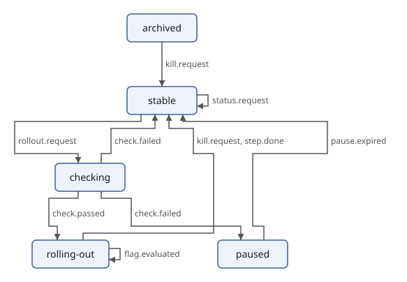
Drawing a change
machine-diagram.xq takes an optional parameter, before: the file of
an earlier version of the machine. States and edges that the earlier
version doesn't have get the class added, and the ones only the
earlier version has get removed. draw.xqm copies the classes to the
SVG groups, and its style draws added parts in green and removed parts
dashed in red. The fixed machine against the seed:
$ sxml xquery --context-item=flag-fixed.scxml --param=before=flag.scxml machine-diagram.xq \
| sxml xquery --context-item=- --output=changes.svg --expression='
import module namespace draw = "urn:example:draw" at "draw.xqm";
declare option output:indent "yes";
draw:svg(/diagram)'
$ sxml xpath --context-item=changes.svg '//*:g[contains-token(@class, "added")] ! `{@id}: {*:text}`'
"edge-stable-archived: flag.archived"
"edge-paused-archived: flag.archived"
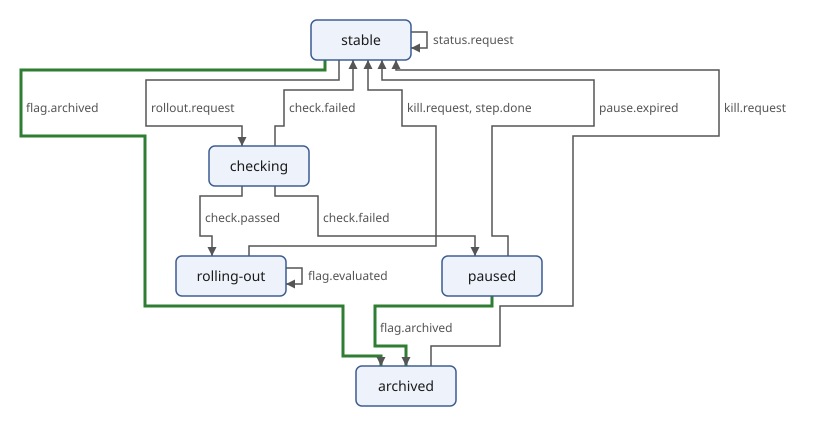
The two new transitions on flag.archived are the change, and they
move archived to the bottom: something now leads to it, from
stable and from paused, so it goes in the layer below them, and
its own transition to stable runs up. The new declaration of flag.evaluated and the new
vane:implements change no state or transition, so the drawing doesn't
show them; the page of Documenting the Machine in
XHTML does.
The same mechanism, a diagram description with classes drawn by one module, draws the diff of call chains in Comparing Two Versions and the diff of traces in Rendering the Diff.
Parsing Text with Invisible XML
A great deal of data is text with a structure that only a person can
see: a log line, a date written in words, a configuration file, a small
language of your own. Invisible XML (iXML) makes that structure visible.
You describe the text with a grammar, and the grammar turns every text
it describes into an XML document, which the XPath, XQuery and XSLT of
the earlier parts can query and transform. The examples of this part are
in docs/book/examples/ixml.
A first grammar
This grammar describes a date such as 2026-10-20:
date.ixml:
date: year, -"-", month, -"-", day.
year: digit, digit, digit, digit.
month: digit, digit.
day: digit, digit.
-digit: ["0"-"9"].
Each rule names a part of the text and says what it is made of, in
order, separated by commas: a date is a year, a hyphen, a month, a
hyphen and a day. A quoted string matches itself, and ["0"-"9"]
matches one character in a range. The first rule describes the whole
text.
The function invisible-xml compiles a grammar into a parser, which is
itself a function: give it a text, and it returns a document.
$ sxml xpath --method=xml 'invisible-xml(unparsed-text("date.ixml"))("2026-10-20")'
<date><year>2026</year><month>10</month><day>20</day></date>
Every rule became an element, except digit: the - before its name
hides it, so its characters go straight into the element around it.
The hyphens between the parts are hidden too, by the - before each
"-". Without the marks, every digit would be an element of its own and
the hyphens would be text.
Compile once, parse many times
Compiling a grammar takes more work than parsing one short text with it. Keep the parser in a variable and call it for every text:
$ sxml xpath 'let $parse := invisible-xml(unparsed-text("date.ixml")) for $text in ("2026-10-20", "1999-12-31") return $parse($text)/date/year/string()'
"2026"
"1999"
The result of the parser is a document node, so $parse($text)/date
is its document element, and every path, function and FLWOR expression
works on it.
Running a grammar from the command line
The sxml command has no command of its own for Invisible XML: the
xquery command runs it, with the grammar and the input as parameters.
This query, kept in a file, works for any grammar and any input:
ixml.xq:
(: Parses the file $input with the Invisible XML grammar in the file
$grammar and writes the XML, indented. :)
declare option output:indent "yes";
declare variable $grammar external;
declare variable $input external;
invisible-xml(unparsed-text($grammar))(unparsed-text($input))
$ sxml xquery --param=grammar=date.ixml --param=input=today.txt ixml.xq
<failed xmlns:ixml="http://invisiblexml.org/NS" ixml:state="failed">
<line>1</line>
<column>11</column>
<position>11</position>
<unexpected>#a</unexpected>
</failed>
The parse failed. today.txt holds the date and a line feed, as text
files do, and the grammar says nothing about a line feed: after the day,
at column 11, it expected the end of the text and found #a, the line
feed. A failed parse is not an error. The parser returns a document whose
element is failed, with the attribute ixml:state="failed", and says
where the parse stopped; When a Parse Fails has more
on reading it.
The grammar can allow the line feed. dates.ixml in the
next chapter's tasks reads a date on each line;
here it reads dates.txt:
$ sxml xquery --param=grammar=dates.ixml --param=input=dates.txt ixml.xq
<dates>
<date>
<year>2026</year>
<month>10</month>
<day>20</day>
</date>
<date>
<day>20</day>
<month>10</month>
<year>2026</year>
</date>
<date>
<month>07</month>
<day>04</day>
<year>1976</year>
</date>
<date>
<day>01</day>
<month>05</month>
<year>1886</year>
</date>
</dates>
To keep the result, add --output=FILE; to use it at once, put the
parse in a query of its own, as the tasks in this part do.
Errors or documents
By default a text that does not match gives the failed document, so a
query can look at it and go on. With the option fail-on-error, the
parser raises the error FOIX0002 instead:
$ sxml xpath 'invisible-xml(unparsed-text("date.ixml"), {"fail-on-error": true()})("2026-1-20")'
expression:1:1: err:FOIX0002: The input does not match the grammar, and fail-on-error is true (F&O 4.0, fn:invisible-xml)
A grammar that is not a grammar is always an error, FOIX0001; the errors chapter shows the common ones.
A grammar is XML too
Called without a grammar, invisible-xml returns the parser of iXML
grammars themselves. Its result is the grammar in its XML form, which the
specification defines and which invisible-xml accepts as well:
$ sxml xpath --method=xml 'invisible-xml()("greeting: ""hello"".")'
<ixml><rule name="greeting"><alt><literal string="hello"/></alt></rule></ixml>
$ sxml xpath --method=xml 'invisible-xml(invisible-xml()("greeting: ""hello"".")/ixml)("hello")'
<greeting>hello</greeting>
A program can therefore read a grammar, change it with XQuery or XSLT, and compile the changed grammar: add a rule, rename an element, or build a grammar from a table.
In this part
- Writing Grammars: rules, characters, repetition, marks, attributes, insertions, renaming, and what an ambiguous grammar does.
- Real Tasks: log files, semicolon-separated values, dates in many forms, a small programming language, and Markdown-like text.
- When a Parse Fails: the
faileddocument, grammar errors, and how to fix a grammar. - Invisible XML Performance: how large an input can be, and which grammars parse in time proportional to the input.
sxml implements the Invisible XML Specification 1.0 with its errata and
the renaming of the Community Group's draft of version 1.1, and
fn:invisible-xml of F&O 4.0. It passes every test of the iXML community
test suite that it runs (Appendix B).
Writing Grammars
A grammar is a list of rules. This chapter goes through everything a
rule can say, with a small grammar for each feature. All the grammars
are files in docs/book/examples/ixml.
Rules and alternatives
A rule is a name, a colon (or =), one or more alternatives and a full
stop. Alternatives are separated by ; (or |), and the parts of an
alternative by commas:
greeting.ixml:
greeting: hello, -", ", name, -"!".
hello: "Hello"; "Hi".
name: letter+.
-letter: ["A"-"Z"; "a"-"z"].
$ sxml xpath --method=xml 'invisible-xml(unparsed-text("greeting.ixml"))("Hello, World!")'
<greeting><hello>Hello</hello><name>World</name></greeting>
$ sxml xpath --method=xml 'invisible-xml(unparsed-text("greeting.ixml"))("Hi, Ada!")'
<greeting><hello>Hi</hello><name>Ada</name></greeting>
Spaces and line breaks between the parts of a rule do not matter, and
text in braces, {like this}, is a comment. An alternative may be
empty: sign: "-"; . is a minus sign or nothing.
Characters
The smallest parts of a grammar match single characters:
| Notation | Matches |
|---|---|
"abc" or 'abc' | the characters a, b and c, in that order; "" inside "..." is one quote |
#a, #20AC | the one character with that hexadecimal code point: line feed, the euro sign |
["a"-"z"; "_"; #9] | one character of a set: here a letter from a to z, an underscore or a tab |
~["0"-"9"] | one character that is not in the set |
[L], [Nd], [Lu; Ll] | one character of a Unicode general category: any letter, a decimal digit, an upper- or lowercase letter |
fields.ixml reads a word in any script, a number with an optional
fraction, and a quoted text, separated by tabs:
fields.ixml:
{A word, a number and a quoted text, separated by tabs.}
fields: word, -#9, number, -#9, quoted.
word: [L]+.
number: ["0"-"9"]+, (".", ["0"-"9"]+)?.
quoted: -'"', ~['"']*, -'"'.
$ sxml xpath --method=xml 'invisible-xml(unparsed-text("fields.ixml"))(unparsed-text("fields.txt"))'
<fields><word>Zürich</word><number>42.5</number><quoted>two words</quoted></fields>
sxml's categories are those of Unicode 16.0, the version its regular expressions use.
Repetition and options
After any part:
?makes it optional;*repeats it zero or more times,+one or more times;**sepand++seprepeat it withsepbetween the repetitions, soitem++","is one or more items separated by commas.
Parentheses group parts into one: ("+"; "-")? is an optional sign.
list.ixml:
list: -"[", s, item**(-",", s), s, -"]".
item: ["0"-"9"]+.
-s: -" "*.
$ sxml xpath --method=xml 'invisible-xml(unparsed-text("list.ixml"))("[1, 22,333 ]")'
<list><item>1</item><item>22</item><item>333</item></list>
$ sxml xpath --method=xml 'invisible-xml(unparsed-text("list.ixml"))("[]")'
<list/>
Elements, attributes and hidden parts
A mark before a name says what the part becomes in the XML:
^(the default): an element;@: an attribute, which goes on the nearest element around it;-: nothing of its own; its content goes into the element around it.
A mark on a rule applies wherever the rule is used. A mark where a name
is used applies there only and wins over the rule's. Strings and
character sets take - too, which drops their characters, as the
hyphens of the date did.
person.ixml:
person: name, -", ", age, -", ", city.
name: first, -" ", last.
@first: [L]+.
@last: [L]+.
@age: ["0"-"9"]+.
-city: [L]+.
$ sxml xpath --method=xml 'invisible-xml(unparsed-text("person.ixml"))("Ada Lovelace, 36, London")'
<person age="36"><name first="Ada" last="Lovelace"/>London</person>
first and last are attributes of name, the element they are in;
age is an attribute of person. city is hidden, so its text is part
of person's content. An attribute's value is all the text inside it:
marks inside an attribute only drop characters.
Insertions
+"text" adds text to the XML that is not in the input. An insertion
matches nothing, so it can go anywhere in an alternative:
temperature.ixml:
temperature: number, unit.
number: ["0"-"9"]+.
unit: -"C", +"celsius"; -"F", +"fahrenheit".
$ sxml xpath --method=xml 'invisible-xml(unparsed-text("temperature.ixml"))("21C")'
<temperature><number>21</number><unit>celsius</unit></temperature>
The input says C; the XML says celsius. Insertions are how a grammar
fills in what the text leaves out, such as the leading zero of a month
in the dates task.
Renaming
A rule describes one form of text, and its name is the element's name.
Sometimes one form appears in two roles: the two numbers of a range are
both numbers, but one is the low end and one the high end. > gives a
part another name in the XML:
range.ixml:
ixml version "1.1".
range: number>low, -"..", number>high.
number: ["0"-"9"]+.
$ sxml xpath --method=xml 'invisible-xml(unparsed-text("range.ixml"))("1..10")'
<range><low>1</low><high>10</high></range>
> can also follow a rule's name, to rename it everywhere. Renaming is
part of version 1.1 of the specification, so the grammar starts with
ixml version "1.1".; sxml reads the rest of a 1.0 grammar the same
way.
Ambiguous grammars
A grammar is ambiguous when it describes a text in more than one way. This grammar reads a name as a first and a last part, but either part may contain spaces:
name.ixml:
name: first, -" ", last.
first: [L; " "]+.
last: [L; " "]+.
$ sxml xpath --method=xml 'invisible-xml(unparsed-text("name.ixml"))("Mary Ann Smith")'
<name xmlns:ixml="http://invisiblexml.org/NS" ixml:state="ambiguous"><first>Mary</first><last>Ann Smith</last></name>
"Mary" and "Ann Smith" is one way to read the text; "Mary Ann" and
"Smith" is another. An ambiguous parse is not an error: the parser
returns one of the ways and marks the document element with
ixml:state="ambiguous". Which way it picks is not specified, so a
query must not depend on it. The attribute is in the namespace
http://invisiblexml.org/NS, so a query tests it as
@Q{http://invisiblexml.org/NS}state or @*:state.
Ambiguity is almost always a mistake in the grammar. Ask where a part can end: here, at any space. The fix is to say which part may contain spaces. If the last name is one word, the reading is unique:
$ sxml xpath --method=xml 'invisible-xml(replace(unparsed-text("name.ixml"), "last: \[L; "" ""\]\+", "last: [L]+"))("Mary Ann Smith")'
<name><first>Mary Ann</first><last>Smith</last></name>
(The expression changes the grammar's text before compiling it, a quick
way to try a fix.) Three more causes of ambiguity are common: two
repetitions next to each other that can both take the same character
("x"*, "x"*); an optional part next to a repetition that can stand for
it; and a separator that a field may also contain. The
tasks and errors chapters show each.
The prolog
A grammar may start with ixml version "1.0". or ixml version "1.1"..
sxml reads both versions. For any other version it parses with its own
and marks the result with ixml:state="version-mismatch", as the
specification asks.
Real Tasks
This chapter solves six everyday problems with a grammar each: a log file, semicolon-separated values, dates written in several ways, a small programming language, Markdown-like text, and the grammar inside a specification. Every solution has two parts, a grammar that turns the text into XML and a query that uses the XML.
Log files
log.ixml:
log: line++-#a, -#a?.
line: date, -" ", time, -" ", level, -" ", message.
@date: digit, digit, digit, digit, "-", digit, digit, "-", digit, digit.
@time: digit, digit, ":", digit, digit, ":", digit, digit.
@level: "INFO"; "WARN"; "ERROR".
message: ~[#a]*.
-digit: ["0"-"9"].
A log is lines separated by line feeds, with an optional line feed at
the end (-#a?). The date, time and level become attributes of their
line, and message takes everything up to the end of the line,
~[#a]*. The grammar describes this log:
app.log:
2026-10-20 09:15:02 INFO server started
2026-10-20 09:17:45 WARN disk 91% full
2026-10-20 09:21:13 ERROR disk full
2026-10-20 09:21:14 INFO cleanup started
2026-10-20 09:24:50 INFO cleanup done
2026-10-20 10:02:31 ERROR connection refused
Once the log is a document, grouping and filtering are ordinary XQuery:
levels.xq:
(: Counts the lines of each level in app.log and lists the errors. :)
let $parse := invisible-xml(unparsed-text("log.ixml"))
let $log := $parse(unparsed-text("app.log"))
return string-join((
for $line in $log//line
group by $level := $line/@level
order by count($line) descending, $level
return `{$level}: {count($line)}`,
$log//line[@level = "ERROR"] ! `{@time} {message}`
), " ")
$ sxml xquery --method=text levels.xq
INFO: 3
ERROR: 2
WARN: 1
09:21:13 disk full
10:02:31 connection refused
Real logs are rarely this tidy. Two habits keep the grammar useful: make the part you care about precise (the date, the level) and let the rest be "anything up to the end of the line", and test the grammar on the oddest lines first.
Semicolon-separated values
For plain CSV, parse-csv (JSON, CSV, HTML and Invisible
XML) is quicker. A grammar earns its place when the
format is a variant that a CSV parser does not know. This one separates
fields with semicolons and lets a quoted field hold semicolons and
doubled quotes:
prices.ixml:
{Semicolon-separated values: a header line, then rows. A field in
double quotes may hold semicolons; "" in it is one quote.}
table: header, -#a, (row, -#a)+.
header: field++-";".
row: field++-";".
field: quoted; plain.
-plain: ~[";"; '"'; #a]*.
-quoted: -'"', (~['"']; -'"', '"')*, -'"'.
prices.txt:
item;price;note
Coffee;3.50;"hot; large"
Tea;2.10;
"Juice ""fresh""";4.20;cold
$ sxml xquery --param=grammar=prices.ixml --param=input=prices.txt ixml.xq
<table>
<header>
<field>item</field>
<field>price</field>
<field>note</field>
</header>
<row>
<field>Coffee</field>
<field>3.50</field>
<field>hot; large</field>
</row>
<row>
<field>Tea</field>
<field>2.10</field>
<field/>
</row>
<row>
<field>Juice "fresh"</field>
<field>4.20</field>
<field>cold</field>
</row>
</table>
Note the first rule: every row ends with a line feed, (row, -#a)+. A
first try, row++-#a, -#a?, reads the last line feed in two ways, as the
end of the file or as a separator before a row with one empty field, and
the result is ambiguous. Saying exactly where each line feed belongs
removes the doubt.
From the table to JSON is one query, with the header naming the fields:
prices-json.xq:
(: Turns prices.txt into JSON: one object per row, keyed by the header. :)
declare option output:method "json";
declare option output:indent "yes";
let $table := invisible-xml(unparsed-text("prices.ixml"))(unparsed-text("prices.txt"))
let $names := $table//header/field ! string()
return array {
for $row in $table//row
return map:merge(
for $field at $position in $row/field
return map:entry($names[$position],
if ($field castable as xs:decimal) then xs:decimal($field) else string($field)))
}
$ sxml xquery prices-json.xq
[
{
"item": "Coffee",
"price": 3.5,
"note": "hot; large"
},
{
"item": "Tea",
"price": 2.1,
"note": ""
},
{
"item": "Juice \"fresh\"",
"price": 4.2,
"note": "cold"
}
]
Dates
People write dates in many ways. One grammar can read several forms and give them all the same XML, so the query after it sees one form only:
dates.ixml:
ixml version "1.1".
{Dates in three forms, one per line, all made into year, month and day.}
dates: (date, -#a)+.
date: iso; written; american.
-iso: year, -"-", month, -"-", day.
-written: day, -" ", month-name, -" ", year.
-american: month, -"/", day, -"/", year.
year: digit, digit, digit, digit.
month: digit, digit; +"0", digit.
day: digit, digit; +"0", digit.
month-name>month:
-"January", +"01"; -"February", +"02"; -"March", +"03";
-"April", +"04"; -"May", +"05"; -"June", +"06";
-"July", +"07"; -"August", +"08"; -"September", +"09";
-"October", +"10"; -"November", +"11"; -"December", +"12".
-digit: ["0"-"9"].
dates.txt:
2026-10-20
20 October 2026
7/4/1976
1 May 1886
Three features do the work. The three forms are hidden alternatives of
date, so each gives year, month and day directly. The month names
are hidden strings with an insertion of the month's number, and >month
renames month-name to month, so a written month and a numbered one
are the same element. And +"0", digit pads a one-digit day or month.
The result is in the first chapter;
here a query sorts the dates:
sort-dates.xq:
(: Reads dates.txt as xs:date values and lists them in order. :)
let $dates := invisible-xml(unparsed-text("dates.ixml"))(unparsed-text("dates.txt"))
for $date in $dates//date
let $value := xs:date(`{$date/year}-{$date/month}-{$date/day}`)
order by $value
return format-date($value, "[D] [MNn] [Y], a [FNn]")
$ sxml xquery --method=adaptive sort-dates.xq
"1 May 1886, a Saturday"
"4 July 1976, a Sunday"
"20 October 2026, a Tuesday"
"20 October 2026, a Tuesday"
The first and second lines of dates.txt were the same day in two forms.
A small programming language
A grammar can describe a language with statements, names and
expressions. In this one, let names a value, print prints one, and
* and / bind tighter than + and -:
calc.ixml:
ixml version "1.1".
{A small language: statements end with ";", "let" names a value,
"print" prints one. Products bind tighter than sums.}
program: s, (statement, s, -";", s)*.
-statement: let; print.
let: -"let", S, @name, s, -"=", s, expression.
print: -"print", S, expression.
-expression: sum; -term.
sum: expression, s, @add>op, s, term.
-term: product; -factor.
product: term, s, @multiply>op, s, factor.
-factor: number; variable; -"(", s, expression, s, -")".
number: ["0"-"9"]+.
variable: @name.
@name: ["a"-"z"]+.
add: ["+-"].
multiply: ["*/"].
-s: -[" "; #a]*.
-S: -[" "; #a]+.
Precedence comes from the shape of the rules: a sum adds terms, a
term is a product or a factor, and a product multiplies
factors, so 1 + 2 * 3 can only be read with the product inside the
sum. Because sum begins with expression and product with term,
both are left-recursive, and 8 - 2 - 1 groups as (8 - 2) - 1.
@add>op and @multiply>op make both kinds of operator an attribute
op. s is optional space and S required space.
area.calc:
let width = 6;
let height = 7;
print width * height;
print (width + height) * 2;
$ sxml xquery --param=grammar=calc.ixml --param=input=area.calc ixml.xq
<program>
<let name="width">
<number>6</number>
</let>
<let name="height">
<number>7</number>
</let>
<print>
<product op="*">
<variable name="width"/>
<variable name="height"/>
</product>
</print>
<print>
<product op="*">
<sum op="+">
<variable name="width"/>
<variable name="height"/>
</sum>
<number>2</number>
</product>
</print>
</program>
The XML is the program's syntax tree, and an interpreter is a recursive function over it:
run.xq:
(: Runs a program of the small language of calc.ixml, in the file $file:
each print statement gives one integer. :)
declare variable $file external;
declare function local:value($node as element(), $names as map(*)) as xs:integer {
typeswitch ($node)
case element(number) return xs:integer($node)
case element(variable) return $names(string($node/@name))
default return
let $left := local:value($node/*[1], $names)
let $right := local:value($node/*[2], $names)
return switch (string($node/@op))
case "+" return $left + $right
case "-" return $left - $right
case "*" return $left * $right
default return $left idiv $right
};
declare function local:run($statements as element()*, $names as map(*)) as xs:integer* {
if (empty($statements)) then () else
let $statement := head($statements)
return
if ($statement instance of element(let)) then
local:run(tail($statements),
map:put($names, string($statement/@name), local:value($statement/*, $names)))
else (
local:value($statement/*, $names),
local:run(tail($statements), $names)
)
};
let $program := invisible-xml(unparsed-text("calc.ixml"))(unparsed-text($file))
return local:run($program/program/*, {})
$ sxml xquery --method=adaptive --param=file=area.calc run.xq
42
26
The same tree could be checked for names used before they are set, pretty-printed, or translated into another language with XSLT.
Markdown-like text
The last grammar reads a little of Markdown: headings, lists and paragraphs separated by blank lines, with emphasis and code inside. Its names are HTML's, so the XML it makes is HTML:
markdown.ixml:
ixml version "1.1".
{A little Markdown: headings, lists and paragraphs, separated by blank
lines, with *emphasis* and `code` inside. The names are HTML's.}
document>body: block++(-#a, -#a+), -#a*.
-block: h1; h2; ul; p.
h1: -"# ", inline.
h2: -"## ", inline.
ul: li++-#a.
li: -"- ", inline.
p: line++(-#a, +" ").
-line: ~["#-*`"; #a], inline?.
-inline: (char; em; code)+.
-char: ~["*`"; #a].
em: -"*", ~["*"; #a]+, -"*".
code: -"`", ~["`"; #a]+, -"`".
notes.md:
# Release notes
Version 2 reads *Invisible XML* grammars
and parses `CSV` files.
## Changes
- faster parsing
- better *error* messages
$ sxml xquery --param=grammar=markdown.ixml --param=input=notes.md ixml.xq
<body>
<h1>Release notes</h1>
<p>Version 2 reads <em>Invisible XML</em> grammars and parses <code>CSV</code> files.</p>
<h2>Changes</h2>
<ul>
<li>faster parsing</li>
<li>better <em>error</em> messages</li>
</ul>
</body>
Two details make this grammar unambiguous. The characters of a line are
single hidden characters, -char, so a run of them is one text node and
there is only one way to split it. And a paragraph line may not start
with # or -, so a heading or a list item can never also be read as a
paragraph. The line feed inside a paragraph becomes a space with
-#a, +" ".
The grammar in a specification
Specifications define their syntax in ABNF (RFC 5234), and the grammar
sits in the document as text. The Vane draft
(Transforming with XSLT and the chapters before it use it) has
the syntax of its messages in a sourcecode element; vane.xml here is
a link to the draft:
$ sxml xpath --context-item=vane.xml --method=text '//sourcecode[@type = "abnf"]'
message = rollout-update / kill-update / status-request
rollout-update = "ROLLOUT" SP flag-key SP percentage CRLF
kill-update = "KILL" SP flag-key CRLF
status-request = "STATUS" SP flag-key CRLF
flag-key = 1*32(ALPHA / DIGIT / "-")
percentage = 1*3DIGIT
To a program, those lines are one string. A small grammar for ABNF
rules turns them into XML: rule names, alternatives separated by /,
sequences of elements, repetitions such as 1*32 and 1*3, quoted
strings and groups in parentheses:
abnf.ixml:
ixml version "1.1".
{The rules of ABNF (RFC 5234): one rule on each line, a name, "=" and
alternatives separated by "/", each a sequence of elements, each
element with an optional repetition.}
rules: -#a*, rule++(-#a+), -#a*.
rule: @name, s, -"=", s, alternatives.
-alternatives: alternative++(s, -"/", s).
alternative: element++S.
-element: repeat; -item.
repeat: (@min, -"*", @max?; -"*", @max; @min), -item.
-item: ref; string; group.
ref: @name.
string: -'"', ~['"']*, -'"'.
group: -"(", s, alternatives, s, -")".
@name: ["A"-"Z"; "a"-"z"], ["A"-"Z"; "a"-"z"; "0"-"9"; "-"]*.
@min: ["0"-"9"]+.
@max: ["0"-"9"]+.
-s: -" "*.
-S: -" "+.
rule++(-#a+) is one or more rules separated by line feeds, and
element++S one or more elements separated by spaces. A repetition
has a minimum, a maximum or both around the *, or just a number,
which ABNF reads as an exact count. XPath extracts the text, and the
grammar parses it:
$ sxml xquery --context-item=vane.xml --expression='declare option output:indent "yes"; invisible-xml(unparsed-text("abnf.ixml"))(string(//sourcecode[@type = "abnf"]))/rules/rule[@name = ("flag-key", "percentage")]'
<rule name="flag-key">
<alternative>
<repeat min="1" max="32">
<group>
<alternative>
<ref name="ALPHA"/>
</alternative>
<alternative>
<ref name="DIGIT"/>
</alternative>
<alternative>
<string>-</string>
</alternative>
</group>
</repeat>
</alternative>
</rule>
<rule name="percentage">
<alternative>
<repeat min="1" max="3">
<ref name="DIGIT"/>
</repeat>
</alternative>
</rule>
Once the grammar is XML, questions about it are paths. Which rules does each rule use, and which names does the draft use without defining them?
$ sxml xquery --context-item=vane.xml --method=adaptive --expression='
let $rules := invisible-xml(unparsed-text("abnf.ixml"))(string(//sourcecode[@type = "abnf"]))//rule
return (
for $rule in $rules
return `{$rule/@name} uses {string-join(distinct-values($rule//ref/@name), ", ")}`,
`undefined: {string-join(distinct-values($rules//ref/@name[not(. = $rules/@name)]), ", ")}`
)'
"message uses rollout-update, kill-update, status-request"
"rollout-update uses SP, flag-key, percentage, CRLF"
"kill-update uses SP, flag-key, CRLF"
"status-request uses SP, flag-key, CRLF"
"flag-key uses ALPHA, DIGIT"
"percentage uses DIGIT"
"undefined: SP, CRLF, ALPHA, DIGIT"
The four undefined names are the core rules of RFC 5234 (Appendix B.1),
which every ABNF grammar may use, so the draft is complete. A misspelled
rule name, flag_key for flag-key, would show up in the same list, and
a broken rule fails to parse with the line and column of the mistake:
$ sxml xpath 'invisible-xml(unparsed-text("abnf.ixml"))("limit = percentage / ")'
<failed xmlns:ixml="http://invisiblexml.org/NS" ixml:state="failed"><line>1</line><column>22</column><position>22</position><end-of-input/><expected>"("</expected><expected>"*"</expected><expected>#20</expected><expected>'"'</expected><expected>["0"-"9"]</expected><expected>["A"-"Z"; "a"-"z"]</expected></failed>
When a Parse Fails
Two things can go wrong: the input does not match the grammar, or the grammar itself is wrong. The first gives a document that says where the parse stopped; the second is an error, FOIX0001, that says what is wrong with the grammar and where. This chapter shows how to read both and how to fix the grammar.
Reading a failed parse
date.ixml wants two digits for the month:
$ sxml xpath --method=xml 'invisible-xml(unparsed-text("date.ixml"))("2026-1-20")'
<failed xmlns:ixml="http://invisiblexml.org/NS" ixml:state="failed"><line>1</line><column>7</column><position>7</position><unexpected>"-"</unexpected><expected>["0"-"9"]</expected></failed>
The failed element says:
lineandcolumn: where the parse stopped, counting from 1, andposition, the same place counted in characters from the start of the input;unexpected: the character found there, written as the grammar would write it, orend-of-inputwhen the input ended too soon;expected: each character set that the grammar could have read at that place, once each, in the grammar's notation and in code-point order.
The parse reads as far as any reading of the input can go, so the place
it stops is the first character that no reading can take. The mistake is
often a little before it. Here the parser read 2026-1 as the start of
a month and stopped at the hyphen, where it wanted the month's second
digit.
A missing quote is a common case. The third line of this file opens a quoted field and never closes it:
bad-prices.txt:
item;price;note
Coffee;3.50;"hot; large"
Tea;2.10;"strong
$ sxml xquery --param=grammar=prices.ixml --param=input=bad-prices.txt ixml.xq
<failed xmlns:ixml="http://invisiblexml.org/NS" ixml:state="failed">
<line>4</line>
<column>1</column>
<position>59</position>
<end-of-input/>
<expected>'"'</expected>
<expected>~['"']</expected>
</failed>
The parse reached the end of the input inside the quoted field, which
may hold line feeds, and still wanted a quote, or more of the field:
~['"'] is any character but a quote. The failure is reported at the
end, but the cause is the quote on line 3.
Failures in a query
The failed document is a document like any other, so a query can test
for it, exists($result/failed) or $result/*/@*:state = "failed", and
read its parts:
$ sxml xpath 'invisible-xml(unparsed-text("date.ixml"))("2026-1-20")/failed/(line, column) ! string()'
"1"
"7"
With fail-on-error, a failed parse raises FOIX0002, which try and
catch handle like any other error. This query reports every line of a
file that is not a date, and goes on after each:
check-dates.xq:
(: Reads each line of the file $file as a date and reports the lines that
are not dates, instead of stopping at the first. :)
declare variable $file external;
let $parse := invisible-xml(unparsed-text("date.ixml"), {"fail-on-error": true()})
return string-join(
for $line at $number in unparsed-text-lines($file)
return try {
$parse($line) ! ()
} catch err:FOIX0002 {
`line {$number}: {$line} is not a date`
},
" ")
$ sxml xquery --method=text --param=file=some-dates.txt check-dates.xq
line 2: 2026-1-20 is not a date
line 4: yesterday is not a date
Mistakes in grammars
A grammar that does not follow the rules of iXML raises FOIX0001 when
invisible-xml compiles it, and the description says what is wrong.
A missing full stop is the most common mistake. Here line 3 does not end with one:
unfinished.ixml:
date: year, -"-", month, -"-", day.
year: digit, digit, digit, digit.
month: digit, digit
day: digit, digit.
-digit: ["0"-"9"].
$ sxml xpath 'invisible-xml(unparsed-text("unfinished.ixml"))'
expression:1:1: err:FOIX0001: The grammar does not match the ixml grammar at line 4, column 1, at "d" (F&O 4.0, fn:invisible-xml)
The grammar is read like any input, so the place is where reading
stopped, as in a failed document: line 3 could go on (digit, digit
could be followed by , more or by ;), and only day on line 4 shows
that it did not. Look just before the place for the missing ., , or
quote.
A name used but not defined, usually a typing mistake, is the error S02 of the specification:
typo.ixml:
date: year, -"-", month, -"-", day.
year: digit, digit, digit, digit.
month: digit, digit.
day: digti, digit.
-digit: ["0"-"9"].
$ sxml xpath 'invisible-xml(unparsed-text("typo.ixml"))'
expression:1:1: err:FOIX0001: iXML S02: the grammar uses the nonterminal digti, which no rule defines
Two rules for one name is S03. One rule with two alternatives says the same, and that is what the author meant:
dup.ixml:
date: year, -"-", month, -"-", day.
year: digit, digit, digit, digit.
month: digit, digit.
day: digit, digit.
date: day, -".", month, -".", year.
-digit: ["0"-"9"].
$ sxml xpath 'invisible-xml(unparsed-text("dup.ixml"))'
expression:1:1: err:FOIX0001: iXML S03: the grammar has more than one rule for date
The other grammar errors are about characters:
| Error | Cause | Example |
|---|---|---|
| S07 | a hexadecimal character beyond the Unicode range | #110000 |
| S08 | a hexadecimal character that is a noncharacter or a surrogate | #FFFF, #D800 |
| S09 | a range whose first character comes after its last | ["z"-"a"] |
| S10 | a class that is not a Unicode general category | [Xx] |
Grammars that make bad XML
Some grammars are correct but make XML that cannot exist for some
inputs, for example an element with two attributes of one name. The
parse succeeds, but no document can hold its result, so the parser
raises FOIX0002 whatever fail-on-error says:
twice.ixml:
entry: @key, -"=", @key.
key: ["a"-"z"]+.
$ sxml xpath --method=xml 'invisible-xml(unparsed-text("twice.ixml"))("a=b")'
expression:1:1: err:FOIX0002: iXML D02: the parse puts two attributes named key on the element entry
Rename one of them (@key>value, version 1.1) or make the second an
element. The specification's other errors of this kind:
| Error | Cause |
|---|---|
| D03 | a name that is not an XML name, such as one from renaming |
| D04 | a character that XML does not allow, such as one an insertion +#1 adds |
| D05 | an attribute as the root of the document: the first rule is marked @ |
| D06 | not exactly one element at the top: the first rule is hidden and gives text, or several elements |
| D07 | an attribute named xmlns |
Ambiguity
An ambiguous grammar is not an error, but it is a warning sign: the
document says ixml:state="ambiguous", and the parser has picked one
reading of several (Writing Grammars).
To find the cause, shorten the input until the attribute goes away: the
last part you removed holds the ambiguity. Then look for a place where
two parts of the grammar can both take the same characters: two
repetitions side by side, an optional part beside a repetition, a
separator that a field may also contain, or a line feed that two rules
both want, as in the first try of the semicolon
grammar.
A checklist
When a grammar does not do what you expect:
- Start from the smallest input that shows the problem.
- Remove the
-marks for a moment: every hidden rule and string then shows in the XML, and you see how the input was read. - Check the ends: the start of the first rule and the end of the input, which often has a line feed the grammar does not mention.
- For an ambiguous result, find the two readings, then say in the grammar which one you mean.
- Compile the grammar once and keep the parser: errors in the grammar show at once, before any input is read.
Invisible XML Performance
An iXML grammar can describe any context-free language, and a parser for all of them must be able to keep many readings of the input open at once. That is more work than a parser made for one fixed language, such as sxml's XML parser, does. This chapter says how much work, which grammars sxml parses in time proportional to the input, and how to write grammars that stay fast on inputs of many megabytes.
What to expect
The times below are processor seconds of a release build on one core of
an ordinary Linux machine, for the whole sxml command: starting,
reading the input, parsing, and building the XML tree. Memory is the
most memory the process held, about 10 MB of it the program itself;
per MB is how much more each further megabyte of input takes, the
memory the parse and its XML really cost. The benchmark suite
tests/bench/run-ixml-bench.py measures them, and its --check option
fails when a number is worse than this chapter says (--large adds the
100 MB log).
| Grammar | Input | Time | Memory | Per MB |
|---|---|---|---|---|
| the log of Real Tasks | 1 MB, 16,000 lines | under 0.2 s | under 60 MB | under 20 MB |
| semicolon-separated values | 1 MB, 34,000 rows | under 0.4 s | under 100 MB | under 60 MB |
| the small programming language | 1 MB, 43,000 statements | under 0.6 s | under 150 MB | under 100 MB |
| Markdown-like text | 1 MB, 8,700 sections | under 0.4 s | under 120 MB | under 80 MB |
| a right-recursive list | 1 MB, 159,000 numbers | under 0.4 s | under 80 MB | under 40 MB |
| brackets nested 100,000 deep | 200 KB | under 0.2 s | under 100 MB | |
| a grammar of 5,800 rules, compiled | 200 KB | under 0.5 s | under 200 MB | |
| the ambiguous sum below | 2,000 characters | under 2 s | under 200 MB | |
| the log | 10 MB, 160,000 lines | under 1.5 s | under 250 MB | under 20 MB |
| the log | 100 MB, 1,600,000 lines | under 15 s | under 2,000 MB | under 20 MB |
For every grammar in the table but the ambiguous sum, four times the input takes about four times as long and four times the memory: the parser is linear on them. A large input costs what its XML costs and little more. The XML tree of the log, an element and three attributes for each line and the messages as text, takes about 9 bytes for each character of the log; the parse adds about one more, and lets go of all of it before the query goes on.
A 1 MB log, made by a query:
make-log.xq:
(: Writes a log of $lines lines in the format of log.ixml. :)
declare variable $lines external;
string-join(
for $number in 1 to xs:integer($lines)
let $time := xs:time("00:00:00") + xs:dayTimeDuration("PT1S") * ($number mod 86400)
let $level := ("INFO", "WARN", "ERROR")[$number mod 3 + 1]
return `2026-10-20 {$time} {$level} message {$number}`,
" "
)
$ sxml xquery --method=text --param=lines=25000 --output=big.log make-log.xq
$ sxml xpath 'string-length(unparsed-text("big.log"))'
972227
$ sxml xquery --method=text --param=file=big.log count-levels.xq
ERROR 8333
INFO 8333
WARN 8334
count-levels.xq is the grouping query of the log task, reading the
file that $file names.
Which grammars are linear
sxml parses with Earley's algorithm, which reads the input once, from left to right, and keeps a set of items for each position: the rules that a reading could be in the middle of there. The work is the number of items, and five refinements keep it in proportion to the input and small:
- One character of lookahead. An item is kept only when the next
character can continue it, so the parser does not follow readings that
the next character already rules out. A rule that could end anywhere,
such as
~[#a]*, ends only where the next character can follow it. - Leo's items for right recursion. A rule that ends with itself,
such as
rest: ",", number, rest?, would otherwise complete once for every level of the recursion at every place the list could end; sxml completes the whole chain at once. - Compiled character classes. Each character of the input is looked up once in a table that says which of the grammar's character sets it belongs to.
- Groups written out. A group or an option, such as
(char; em)orinline?, and a hidden rule of one character set, such as-digit, is replaced where it is used, so the parser does not complete a rule of its own for every character. The XML is the same. - Regular rules read at once. A rule such as
@date: digit, digit, ...ormessage: ~[#a]*needs no nesting: it is made of characters, character sets, repetitions and other such rules, without recursion, so its language is regular. When its XML is nothing but its text, as for a hidden rule, an attribute, or an element with only text inside, sxml compiles it once, with the grammar, into an automaton. The parser runs the automaton over the input in one step instead of making items for every character, and completes the rule at each place it can end where the next character can follow it. The XML is the same, and so is an ambiguity inside such a rule: the automaton counts the ways it reaches each end.
With these, the parser is linear on every grammar that has one reading for each input and can tell, at each place, how to go on with a bounded look ahead: the LR-regular grammars of parsing theory (Joop Leo, 1991). They include left recursion, right recursion, nesting, repetition and every grammar of Real Tasks. A right-recursive list of 200,000 numbers:
numbers.ixml:
numbers: number, rest?, -#a?.
-rest: -",", number, rest?.
number: ["0"-"9"]+.
$ sxml xpath --method=text --output=numbers.txt 'string-join(1 to 200000, ",")'
$ sxml xpath 'count(invisible-xml(unparsed-text("numbers.ixml"))(unparsed-text("numbers.txt"))//number)'
200000
Brackets nested 100,000 deep:
$ sxml xpath 'count(invisible-xml("nest: -""("", nest?, -"")"".")(string-join(((1 to 100000) ! "(", (1 to 100000) ! ")")))//nest)'
100000
Large inputs
The parser needs memory for its items and for the parse tree it reads out of them. A rule read at once makes no items inside it and one node for all its text; characters and hidden rules that the XML leaves out make no nodes, and neighbouring characters share one. So the memory follows the rules the parser cannot read at once, and is small when a grammar's text is in rules that it can: the log needs some 15 items and 9 nodes for each line of about 60 characters. All of it is released when the XML is built.
A log of 10 MB:
$ sxml xquery --method=text --param=lines=250000 --output=bigger.log make-log.xq
$ sxml xpath 'string-length(unparsed-text("bigger.log"))'
9972228
$ sxml xquery --method=text --param=file=bigger.log count-levels.xq
ERROR 83333
INFO 83333
WARN 83334
Ambiguous grammars
A grammar with many readings costs more. This one says nothing about how a sum groups, so a sum of n numbers has as many readings as there are ways to put in brackets, which grows faster than any power of n:
sum.ixml:
sum: sum, -"+", sum; number.
number: ["0"-"9"]+.
$ sxml xpath 'let $sum := invisible-xml(unparsed-text("sum.ixml"))(string-join(1 to 300, "+")) return (count($sum//number), string($sum/sum/@*:state))'
300
"ambiguous"
sxml never lists the readings. It keeps one for each item, so the items
grow with the square of the input and the time with its cube: 2,000
characters take one to two seconds, eight times as long as 1,000. The
cure is the cure of Writing Grammars:
say how the parts group, here sum: sum, -"+", number; number., and the
grammar is linear again.
Steps and limits
Every item the parser makes, every node of the parse tree, and every run of an automaton, with one more for every 16 characters it reads, counts as one step of the evaluation, so the step limit that stops a runaway query stops a runaway parse too. A linear grammar makes a few items for each character that no automaton reads, so the default limit of 108 steps allows inputs of many megabytes: the log of 100 MB parses within it. A host that embeds sxml can set a higher limit (Chapter "Embedding sxml in C").
Compared with tree-sitter
Source Code as XML parses code with tree-sitter, the
parser generator behind the syntax highlighting of many editors. The
two take different routes to a parse. A tree-sitter grammar is a
JavaScript program that a generator turns, ahead of time, into a table
of an LR parser in C, compiled into the program that uses it; sxml comes
with a few. An iXML grammar is text that sxml compiles while the query
runs, and the parser follows every reading the grammar allows. So
tree-sitter takes only the grammars its generator accepts, and needs a
build step for a new one; iXML takes any context-free grammar, at run
time, ambiguous ones too. Faced with a mistake in the input, tree-sitter
recovers, marks the place with an ERROR node and goes on, as an editor
needs; an iXML parse fails, with the place where it failed
(When a Parse Fails).
The trees differ as well. The same JSON both ways:
json.ixml:
json: -s, value, -s.
-value: object; array; string; number; true; false; null.
object: -"{", -s, (member, (-s, -",", -s, member)*)?, -s, -"}".
member: @name, -s, -":", -s, value.
array: -"[", -s, (value, (-s, -",", -s, value)*)?, -s, -"]".
@name: -'"', ~['"\']*, -'"'.
string: -'"', ~['"\']*, -'"'.
number: "-"?, ["0"-"9"]+, (".", ["0"-"9"]+)?, (["eE"], ["+-"]?, ["0"-"9"]+)?.
true: -"true".
false: -"false".
null: -"null".
-s: -[" "; #9; #a; #d]*.
$ sxml xpath --method=xml 'invisible-xml(unparsed-text("json.ixml"))(unparsed-text("flag.json"))'
<json><object><member name="flag"><string>dark-mode</string></member><member name="rollout"><number>25</number></member><member name="owners"><array><string>web</string></array></member></object></json>
$ sxml xpath --method=xml 'sxml:parse-code(unparsed-text("flag.json"), "json", { "highlights": false() })'
<document xmlns:sxml="urn:sxml"><object>{<pair><string field="key">"<string_content>flag</string_content>"</string>: <string field="value">"<string_content>dark-mode</string_content>"</string></pair>, <pair><string field="key">"<string_content>rollout</string_content>"</string>: <number field="value">25</number></pair>, <pair><string field="key">"<string_content>owners</string_content>"</string>: <array field="value">[<string>"<string_content>web</string_content>"</string>]</array></pair>}</object>
</document>
The grammar says what the XML is: hidden rules and strings leave the punctuation out, and the names become attributes. Tree-sitter's tree keeps every character of the text, the punctuation as text between the elements, and names its elements after the grammar's rules.
In time the two are close. The same benchmark suite parses 1 MB of
JSON and the Markdown input of the table above both ways, and JSON with
fn:json-to-xml too, sxml's hand-written JSON parser. The numbers are
for the whole command, as above:
| Input | Parser | Time | Memory | Elements |
|---|---|---|---|---|
| 1 MB of JSON | json.ixml | under 0.3 s | under 80 MB | 103,000 |
sxml:parse-code, tree-sitter | under 0.35 s | under 90 MB | 208,000 | |
fn:json-to-xml | under 0.25 s | under 60 MB | 62,000 | |
| 1 MB of Markdown-like text | markdown.ixml | under 0.4 s | under 120 MB | 70,000 |
sxml:parse-code, tree-sitter | under 1.6 s | under 160 MB | 252,000 |
Of tree-sitter's time on the JSON, about 0.11 s is its parse alone: a
small C program that runs tree-sitter's library on the same file, with
no XML, takes that long. The rest is the XML tree, which has twice as
many elements as the iXML grammar makes. A parser made for one language
in advance, fn:json-to-xml, is faster than both, but not by much.
Markdown is two grammars in tree-sitter, one for the blocks and one for
the text inside them, and its grammar for the blocks keeps several
readings open where Markdown is unclear; it parses all of CommonMark,
where markdown.ixml knows the few constructs of Real
Tasks. The inline grammar is parsed anew for every
paragraph, as a layer of its own (Code inside
code). Both grow linearly with the input.
Writing fast grammars
- Avoid ambiguity. It is the one thing that makes a parse more than linear, and it is a mistake in the grammar anyway.
- Hide what you do not need. Hidden rules and strings make no elements, so the tree is smaller and the query after the parse is faster.
- Use character sets for runs of characters.
[L]+is one set read many times;letter+withletter: "a"; "b"; ...is one rule with many alternatives at every character. - Keep text in rules of its own. A rule whose XML is just its
text is read at once when it is regular (see above). A mark or an
insertion inside it, or a hidden character among visible ones, such
as the
-'"'of a quoted field, makes it an ordinary rule again: leave such parts to the rule around it, as-quoted: -'"', text, -'"'with-text: ~['"']*does. - Compile once. Keep the parser in a variable and call it for every input (Compile once).
JSON, CSV and HTML
Not all data comes as XML. The XDM 4.0 data model that sxml's languages
share has room for other formats: JSON becomes maps and arrays, CSV
becomes rows of strings, and HTML becomes a tree of elements. Once data
is in the model, everything in the previous chapters works on it. The
examples use the trace files of Project: Comparing Traces Before and
After a Change, in docs/book/examples/traces.
JSON
json-doc reads a JSON file into maps and arrays (parse-json does the
same with a string). Then the lookup operator ? navigates it. An OTLP
file is an object whose resourceSpans is an array; each member has
scopeSpans, an array again, whose members have spans:
$ sxml xpath 'json-doc("before.json")?resourceSpans?1?resource?attributes?1?value?stringValue'
"storefront"
$ sxml xpath 'json-doc("before.json")?resourceSpans?*?scopeSpans?*?spans?* => count()'
14
$ sxml xpath 'json-doc("before.json")?resourceSpans?*?scopeSpans?*?spans?*[?kind = 3]?name'
"GET /api/getFlags"
"SELECT flags"
"SELECT flags"
"UPDATE flags"
"GET"
"POST /api/killFlag"
?1 is the first member of an array, and ?* is every member, so
?resourceSpans?*?scopeSpans?*?spans?* is every span of every scope of
every resource. [?kind = 3] keeps the client spans, and ?name gets
their names: the backend SDK's call of the service, the service's
queries to PostgreSQL and Redis (the Redis span is named after its
command, GET), and the console's call. A key that is not a name,
such as Duration (ms), is looked up with a string in parentheses:
?("Duration (ms)").
JSON numbers become doubles, and JSON's null becomes the empty
sequence:
$ sxml xpath 'json-doc("before.json")?resourceSpans?1?scopeSpans?1?spans?1?kind'
3.0e0
A double has 53 bits for its digits, about sixteen decimal digits.
That is why OTLP writes the 64-bit integers, times in nanoseconds and
intValue attributes, as strings: a JSON reader that turns numbers
into doubles would lose their last digits. Two times one nanosecond
apart are the same double, but xs:integer reads the strings exactly:
$ sxml xpath 'parse-json("1792573200000000001") = parse-json("1792573200000000000")'
true()
$ sxml xpath 'xs:integer("1792573200000000001") - xs:integer("1792573200000000000")'
1
When you read JSON that writes such numbers as numbers anyway, ask
parse-json or json-doc for decimals with the option number-format.
A decimal keeps every digit; "adaptive" makes a decimal of a number
written without an exponent and a double of one written with it:
$ sxml xpath 'parse-json("1792573200000000001", { "number-format": "decimal" }) - parse-json("1792573200000000000", { "number-format": "decimal" })'
1
$ sxml xpath 'parse-json("[1792573200000000001, 2.5e0]", { "number-format": "adaptive" })?* ! (. instance of xs:decimal)'
true()
false()
To write JSON, build maps and arrays and use the json output method.
The Trace Diff writes its result that way, and
select.xq there writes a whole OTLP file.
JSON as XML
Sometimes it's more convenient to treat JSON as XML, for example to
search it with paths or transform it with XSLT templates. json-to-xml
turns JSON into an XML vocabulary of map, array, string, number,
boolean and null elements, with the keys in key attributes, and
xml-to-json turns that vocabulary back into JSON text. Here is the
span with a given id, wherever it is in the file:
$ sxml xpath --method=xml 'json-to-xml(unparsed-text("before.json"))//*:map[*:string[@key = "spanId"] = "fb73f92d181aced2"]'
<map xmlns="http://www.w3.org/2005/xpath-functions"><string key="traceId">48114dcf6840d1bd46460c4b1ce0d09d</string><string key="spanId">fb73f92d181aced2</string><string key="parentSpanId">448683a55e6803a1</string><string key="name">SELECT flags</string><number key="kind">3</number><string key="startTimeUnixNano">1792573200005000000</string><string key="endTimeUnixNano">1792573200044000000</string><array key="attributes"><map><string key="key">db.system.name</string><map key="value"><string key="stringValue">postgresql</string></map></map><map><string key="key">db.operation.name</string><map key="value"><string key="stringValue">SELECT</string></map></map><map><string key="key">db.collection.name</string><map key="value"><string key="stringValue">flags</string></map></map><map><string key="key">db.query.text</string><map key="value"><string key="stringValue">SELECT key, name, state, percentage, rules, owners FROM flags</string></map></map><map><string key="key">server.address</string><map key="value"><string key="stringValue">postgresql</string></map></map><map><string key="key">server.port</string><map key="value"><string key="intValue">5432</string></map></map></array></map>
$ sxml xpath --method=text 'json-to-xml(unparsed-text("before.json"))//*:map[*:string[@key = "spanId"] = "fb73f92d181aced2"]/*:array => xml-to-json()'
[{"key":"db.system.name","value":{"stringValue":"postgresql"}},{"key":"db.operation.name","value":{"stringValue":"SELECT"}},{"key":"db.collection.name","value":{"stringValue":"flags"}},{"key":"db.query.text","value":{"stringValue":"SELECT key, name, state, percentage, rules, owners FROM flags"}},{"key":"server.address","value":{"stringValue":"postgresql"}},{"key":"server.port","value":{"intValue":"5432"}}]
CSV
The csv output method writes each array as a row, quoting the fields
that need it. A query can so write the spans for a spreadsheet:
spans-csv.xq:
(: The spans of a trace file as CSV, one row per span, for a spreadsheet. :)
import module namespace trace = "urn:example:trace" at "trace.xqm";
declare option output:method "csv";
declare variable $file external := "before.json";
["route", "service", "name", "kind", "start", "duration"],
for $span in trace:load($file)//span
return [
string($span/ancestor::trace/@route),
string($span/@service), string($span/@name), string($span/@kind),
xs:decimal($span/@start), xs:decimal($span/@duration)
]
$ sxml xquery spans-csv.xq
route,service,name,kind,start,duration
GET /api/getFlags,storefront,GET /api/getFlags,client,0,50
GET /api/getFlags,vane,GET /api/getFlags,server,1,48
GET /api/getFlags,vane,flags.listFlags,internal,2,46
GET /api/getFlags,vane,registry.getFlags,internal,3,43
GET /api/getFlags,vane,SELECT flags,client,5,39
POST /api/killFlag,vane-console,POST /api/killFlag,client,0,34
POST /api/killFlag,vane,POST /api/killFlag,server,1,32
POST /api/killFlag,vane,flags.killFlag,internal,2,30
POST /api/killFlag,vane,cache.getFlag,internal,3,3
POST /api/killFlag,vane,GET,client,4,1
POST /api/killFlag,vane,registry.getFlag,internal,7,9
POST /api/killFlag,vane,SELECT flags,client,8,7
POST /api/killFlag,vane,registry.setPercentage,internal,17,13
POST /api/killFlag,vane,UPDATE flags,client,18,11
The other way round, a tracing tool's user interface often exports a
trace as CSV. spans.csv is such an export of the new version's
GET /api/getFlags, the backend SDK downloading the flags:
spans.csv (the start):
Trace ID,Span ID,Parent ID,Service,Operation,Start Time,Duration (ms),Statement
95cfc9416dff30ee3edeae4b2c53e1c4,6a06eb67c8c7b1df,,storefront,GET /api/getFlags,2026-10-21 09:00:00.000,110,
95cfc9416dff30ee3edeae4b2c53e1c4,4784b113aa8e01c1,6a06eb67c8c7b1df,vane,GET /api/getFlags,2026-10-21 09:00:00.001,108,
95cfc9416dff30ee3edeae4b2c53e1c4,c078a6c13fbbb2b7,4784b113aa8e01c1,vane,flags.listFlags,2026-10-21 09:00:00.002,104,
95cfc9416dff30ee3edeae4b2c53e1c4,4a09e0dc364b4ceb,c078a6c13fbbb2b7,vane,registry.getFlagKeys,2026-10-21 09:00:00.003,12,
95cfc9416dff30ee3edeae4b2c53e1c4,59be2e375b69cde3,4a09e0dc364b4ceb,vane,SELECT flags,2026-10-21 09:00:00.005,8,SELECT key FROM flags
95cfc9416dff30ee3edeae4b2c53e1c4,3916e2d3c40454dd,c078a6c13fbbb2b7,vane,registry.getFlag,2026-10-21 09:00:00.016,20,
95cfc9416dff30ee3edeae4b2c53e1c4,68edbeb8d88faf5c,3916e2d3c40454dd,vane,SELECT flags,2026-10-21 09:00:00.018,16,"SELECT key, name, state, percentage, rules, owners FROM flags WHERE key = $1"
parse-csv reads CSV text. With "header": true(), the first row names
the columns. The result is a record with the column names, a map from
each name to its position, the rows, each an array of strings, and a
function get that takes a row number and a column name:
$ sxml xpath 'parse-csv(unparsed-text("spans.csv"), { "header": true() })?columns'
"Trace ID"
"Span ID"
"Parent ID"
"Service"
"Operation"
"Start Time"
"Duration (ms)"
"Statement"
$ sxml xpath 'parse-csv(unparsed-text("spans.csv"), { "header": true() })?rows[7]'
["95cfc9416dff30ee3edeae4b2c53e1c4","68edbeb8d88faf5c","3916e2d3c40454dd","vane","SELECT flags","2026-10-21 09:00:00.018","16","SELECT key, name, state, percentage, rules, owners FROM flags WHERE key = $1"]
$ sxml xpath 'parse-csv(unparsed-text("spans.csv"), { "header": true() })?get(7, "Statement")'
"SELECT key, name, state, percentage, rules, owners FROM flags WHERE key = $1"
The statement has commas in it, so the file quotes it, and parse-csv
takes the quotes away. A query can read CSV, compute, and write CSV
again:
durations.xq:
(: Time per service and operation, from a CSV export of one trace,
written as CSV. :)
declare option output:method "csv";
let $spans := parse-csv(unparsed-text("spans.csv"), { "header": true() })
let $column := $spans?column-index
return (
["service", "operation", "calls", "total ms"],
for $row in $spans?rows
group by $service := $row($column?Service),
$operation := $row($column?Operation)
order by $service, $operation
return [
$service,
$operation,
count($row),
sum($row ! xs:decimal(.($column?("Duration (ms)"))))
]
)
$ sxml xquery durations.xq
service,operation,calls,total ms
storefront,GET /api/getFlags,1,110
vane,GET /api/getFlags,1,108
vane,SELECT flags,5,72
vane,flags.listFlags,1,104
vane,registry.getFlag,4,80
vane,registry.getFlagKeys,1,12
The five queries take 72 of the 104 milliseconds of flags.listFlags.
order by compares strings by their code points, so SELECT flags,
in capitals, comes before the function names in lower case.
$row($column?Service) looks up the position of the Service column
and then that member of the row, so the query keeps working if the
columns are reordered; a column name with spaces needs a string,
$column?("Duration (ms)"). csv-to-xml turns CSV into XML instead,
with row and field elements:
$ sxml xpath --method=xml 'csv-to-xml(unparsed-text("spans.csv"), { "header": true() })//*:row[1]'
<row xmlns="http://www.w3.org/2005/xpath-functions"><field column="Trace ID">95cfc9416dff30ee3edeae4b2c53e1c4</field><field column="Span ID">6a06eb67c8c7b1df</field><field column="Parent ID"/><field column="Service">storefront</field><field column="Operation">GET /api/getFlags</field><field column="Start Time">2026-10-21 09:00:00.000</field><field column="Duration (ms)">110</field><field column="Statement"/></row>
HTML
Real HTML is rarely well-formed XML: end tags are left out, attributes
have no quotes, and browsers fix it all up by rules that the HTML
standard spells out. html-doc and parse-html parse HTML by exactly
those rules, into elements in the XHTML namespace. This is the status
page of Vane, the service, its console, and the two databases the
service uses:
status.html:
<!doctype html>
<title>Vane status</title>
<h1>Components</h1>
<table id=components>
<tr><th>Component<th>Version<th>Status
<tr><td>vane<td>2.4.0<td class=ok>up
<tr><td>vane-console<td>1.8.0<td class=ok>up
<tr><td>postgresql<td>16.4<td class=ok>up
<tr><td>redis<td>7.4.1<td class=slow>slow
</table>
<p>Updated at <time datetime=2026-10-21T09:05:00Z>09:05</time>, <b>4 of 4</b> components answering.
$ sxml xpath 'html-doc("status.html")/*:html/*:head/*:title/string()'
"Vane status"
$ sxml xpath 'html-doc("status.html")//*:tr[*:td] ! { string(*:td[1]): normalize-space(*:td[3]) } => map:merge()'
{"vane":"up","vane-console":"up","postgresql":"up","redis":"slow"}
$ sxml xpath 'html-doc("status.html")//*:td[@class = "slow"]/preceding-sibling::*:td[1]/string()'
"7.4.1"
$ sxml xpath 'xs:dateTime(html-doc("status.html")//*:time/@datetime)'
xs:dateTime("2026-10-21T09:05:00Z")
Because the elements are in the XHTML namespace, a plain td would not
match them; *:td matches td in any namespace. In XQuery, you can
write declare default element namespace "http://www.w3.org/1999/xhtml";
instead and use plain names. The parser found the head, the tbody
and every missing end tag, as a browser would. A cell without an end
tag runs to the next tag, so the last cell of each row holds the line
break after it, and normalize-space removes it.
$ sxml xpath 'parse-html("<p>One<p>Two")//*:p => count()'
2
To write HTML, use the html output method, which knows which elements
have no end tag and how to write <!DOCTYPE html>; Rendering the
Diff writes a report with it.
Other text
Text that has a grammar but no standard parser, a log format or the syntax of a configuration file, can become XML too: Invisible XML turns a grammar into a parser. Parsing Text with Invisible XML shows how.
Source Code as XML
Program source code has a grammar too, and for many languages the
grammar is already written: tree-sitter
grammars power the syntax highlighting and code navigation of many
editors. sxml includes the tree-sitter grammars of JSON, JavaScript (with
JSX), TypeScript, TSX, Python, C, CSS, HTML, Go and Markdown, and
sxml:parse-code turns code in any of them into an XML document. Other
tree-sitter grammars can be added when sxml runs (see
Supplying your own language). Then XPath, XQuery and XSLT can answer
questions about the code: where a function is called, which functions a
module exports, which comments say TODO. The examples are in
docs/book/examples/source-code.
Parsing code
greet.js:
// Says hello.
function greet(name) {
return "Hello, " + name;
}
sxml:parse-code takes the code as a string and the name of its
language, and returns a document:
$ sxml xpath --method=xml 'sxml:parse-code(unparsed-text("greet.js"), "javascript")'
<program xmlns:sxml="urn:sxml"><comment highlight="comment">// Says hello.</comment>
<function_declaration><sxml:token highlight="keyword">function</sxml:token> <identifier field="name" highlight="function">greet</identifier><formal_parameters field="parameters"><sxml:token highlight="punctuation.bracket">(</sxml:token><identifier highlight="variable.parameter">name</identifier><sxml:token highlight="punctuation.bracket">)</sxml:token></formal_parameters> <statement_block field="body"><sxml:token highlight="punctuation.bracket">{</sxml:token>
<return_statement><sxml:token highlight="keyword">return</sxml:token> <binary_expression><string field="left" highlight="string">"<string_fragment>Hello, </string_fragment>"</string> <sxml:token field="operator" highlight="operator">+</sxml:token> <identifier field="right" highlight="variable.parameter">name</identifier></binary_expression><sxml:token highlight="punctuation.delimiter">;</sxml:token></return_statement>
<sxml:token highlight="punctuation.bracket">}</sxml:token></statement_block></function_declaration>
</program>
The document follows the grammar's syntax tree:
- Each named node of the tree is an element whose name is the node's
kind:
function_declaration,identifier,return_statement. The names are the grammar's own; tree-sitter's playground and each grammar'snode-types.jsonlist them. - When the grammar gives a node a field name, as in
name,parametersandbody, the element has afieldattribute. - Tokens, the keywords and punctuation, are text, and so are the spaces and line breaks between nodes, so the string value of the document is the source code, exactly:
$ sxml xpath 'string(sxml:parse-code(unparsed-text("greet.js"), "javascript")) = unparsed-text("greet.js")'
true()
- The
highlightattribute is what the language's highlighting query (thequeries/highlights.scmof its grammar) says about the node:keyword,function,string,comment,variable.parameterand so on. Where the grammar has a locals query (queries/locals.scm), a name that refers to a parameter or variable gets the highlight of its definition: thenameinreturn "Hello, " + nameis avariable.parameter, like the parameter it names. A token that has a highlight or a field becomes ansxml:tokenelement, so that it can carry the attribute; with the option{ "highlights": false() }most tokens stay plain text.
The prefix sxml is bound to the namespace urn:sxml in the sxml
command's XPath and XQuery; a stylesheet declares it. The elements of
the tree itself are in no namespace.
The third argument takes options:
| Option | Default | Meaning |
|---|---|---|
highlights | true() | Run the language's highlighting query and write highlight attributes |
positions | false() | Write line and column attributes (where each element starts, from 1, columns counted in characters) and end-line and end-column (where it ends) |
injections | true() | Parse code inside code (a Markdown code block, an HTML script element) with its own language; see Code inside code |
sxml:code-languages() lists the languages:
$ sxml xpath 'sxml:code-languages()'
"c"
"css"
"go"
"html"
"javascript"
"json"
"markdown"
"markdown_inline"
"python"
"tsx"
"typescript"
Which functions does a module export?
cart.js:
import { formatPrice } from "./money.js";
const TAX_RATE = 0.2;
export function total(items) {
// TODO: apply discounts
return items.reduce((sum, item) => sum + item.price * item.quantity, 0);
}
export function totalWithTax(items) {
return total(items) * (1 + TAX_RATE);
}
function describe(item) {
// TODO: localize the currency
return `${item.name}: ${formatPrice(item.price)}`;
}
export const summary = (items) => items.map(describe).join("\n");
An exported function is a function_declaration, or a const with an
arrow function, inside an export_statement. The name is the child
whose field is name:
$ sxml xpath 'sxml:parse-code(unparsed-text("cart.js"), "javascript")//export_statement//*[@field = "name"][1] ! string()'
"total"
"totalWithTax"
"summary"
The same with the functions that are not exported, and how many parameters each has:
$ sxml xpath 'sxml:parse-code(unparsed-text("cart.js"), "javascript")/program/function_declaration ! `{identifier} takes {count(formal_parameters/identifier)}`'
"describe takes 1"
TODO comments and where they are
With the option positions, each element knows its line. A comment
knows the function it is in through the ancestor axis:
$ sxml xpath 'sxml:parse-code(unparsed-text("cart.js"), "javascript", { "positions": true() })//comment[contains(., "TODO")] ! `line {@line}, in {ancestor::function_declaration/identifier}: {substring-after(., "TODO: ")}`'
"line 6, in total: apply discounts"
"line 15, in describe: localize the currency"
Python works the same way. report.py:
import csv
def load(path):
"""Reads the rows of a CSV file."""
with open(path, newline="") as source:
return list(csv.DictReader(source))
def total(rows):
# TODO: skip rows without an amount
return sum(float(row["amount"]) for row in rows)
class Report:
"""A report on the rows of one file."""
def __init__(self, path):
self.rows = load(path)
def render(self):
return f"{len(self.rows)} rows, {total(self.rows):.2f} in all"
$ sxml xpath 'sxml:parse-code(unparsed-text("report.py"), "python", { "positions": true() })//comment ! `{@line}: {ancestor::function_definition/identifier[@field = "name"]}: {.}`'
"11: total: # TODO: skip rows without an amount"
A function whose body does not start with a string has no docstring:
$ sxml xpath 'sxml:parse-code(unparsed-text("report.py"), "python")//function_definition[not(block/*[1][self::string])]/identifier[@field = "name"] ! string()'
"total"
"__init__"
"render"
Checking a style rule
sxml's own C code has two rules that a query can check: a function has
at most three parameters, and names are spelled out. buffer.c:
#include <stddef.h>
#include <string.h>
/* Appends one byte; returns 0 when the buffer is full. */
static int buffer_append(char *bytes, size_t *byte_count, size_t capacity, char byte) {
if (*byte_count == capacity) {
return 0;
}
bytes[*byte_count] = byte;
*byte_count += 1;
return 1;
}
size_t buffer_copy(char *target, const char *source, size_t len) {
memcpy(target, source, len);
return len;
}
void buffer_clear(char *buf, size_t capacity) {
memset(buf, 0, capacity);
}
$ sxml xpath 'sxml:parse-code(unparsed-text("buffer.c"), "c", { "positions": true() })//function_declarator[count(parameter_list/parameter_declaration) > 3] ! `{@line}: {*[@field = "declarator"]} has {count(parameter_list/parameter_declaration)} parameters`'
"5: buffer_append has 4 parameters"
$ sxml xpath 'sxml:parse-code(unparsed-text("buffer.c"), "c", { "positions": true() })//parameter_declaration//identifier[. = ("buf", "len", "ptr", "tmp")] ! `{@line}:{@column}: {.} is not spelled out`'
"14:61: len is not spelled out"
"19:25: buf is not spelled out"
Counting JSX elements
Gallery.jsx:
import { Photo } from "./Photo.jsx";
import { Footer } from "./Footer.jsx";
export function Gallery({ photos }) {
return (
<section className="gallery">
<h2>Photos</h2>
{photos.map((photo) => (
<Photo key={photo.id} src={photo.url} />
))}
<Footer />
</section>
);
}
JSX is part of the JavaScript grammar. An element with content is a
jsx_element, one that closes itself a jsx_self_closing_element:
$ sxml xpath 'count(sxml:parse-code(unparsed-text("Gallery.jsx"), "javascript")//(jsx_element | jsx_self_closing_element))'
4
The highlighting query tells HTML tags from components: it marks a
lowercase name as tag and a capitalized one as constructor. So the
components the file uses are:
$ sxml xpath 'sxml:parse-code(unparsed-text("Gallery.jsx"), "javascript")//(jsx_opening_element | jsx_self_closing_element)/identifier[@highlight = "constructor"] => distinct-values()'
"Photo"
"Footer"
A refactoring report
Before renaming a function, find every call of it. money.js:
export function formatPrice(amount) {
return amount.toFixed(2) + " EUR";
}
export function formatTotal(amounts) {
return formatPrice(amounts.reduce((sum, amount) => sum + amount, 0));
}
calls.xq:
(: Every call of the function $name in the JavaScript files, with its line. :)
declare option output:method "text";
declare option output:item-separator " ";
declare variable $name external := "formatPrice";
for $file in ("cart.js", "money.js")
let $code := sxml:parse-code(unparsed-text($file), "javascript", { "positions": true() })
for $call in $code//call_expression[*[@field = "function"] = $name]
return `{$file}:{$call/@line}: {$call}`
$ sxml xquery calls.xq
cart.js:16: formatPrice(item.price)
money.js:6: formatPrice(amounts.reduce((sum, amount) => sum + amount, 0))
TypeScript and TSX
shapes.ts:
// Shapes and their areas.
export interface Circle {
kind: "circle";
radius: number;
}
export interface Rectangle {
kind: "rectangle";
width: number;
height: number;
}
export type Shape = Circle | Rectangle;
export function area(shape: Shape): number {
switch (shape.kind) {
case "circle":
return Math.PI * shape.radius ** 2;
case "rectangle":
return shape.width * shape.height;
}
}
export function describe(shape: Shape, digits?: number): string {
return `${shape.kind}: ${area(shape).toFixed(digits ?? 2)}`;
}
The TypeScript grammar has the nodes of JavaScript and the types on top of them. The properties of each interface:
$ sxml xpath 'sxml:parse-code(unparsed-text("shapes.ts"), "typescript")//interface_declaration ! `{type_identifier}: {string-join(.//property_signature/property_identifier, ", ")}`'
"Circle: kind, radius"
"Rectangle: kind, width, height"
The signature of each exported function, with the types written as in the source:
$ sxml xpath 'sxml:parse-code(unparsed-text("shapes.ts"), "typescript")//export_statement/function_declaration ! `{identifier}({string-join(formal_parameters/(required_parameter | optional_parameter), ", ")}){*[@field = "return_type"]}`'
"area(shape: Shape): number"
"describe(shape: Shape, digits?: number): string"
TSX is TypeScript with JSX, and has a grammar of its own, tsx.
Profile.tsx:
type Props = { name: string; avatar?: string; bio?: string };
export function Profile({ name, avatar, bio }: Props) {
return (
<div className="profile">
<Avatar src={avatar} size={48} />
<h2>{name}</h2>
{bio && <Markdown text={bio} />}
</div>
);
}
The components the file uses, and the properties that are optional:
$ sxml xpath 'sxml:parse-code(unparsed-text("Profile.tsx"), "tsx")//(jsx_opening_element | jsx_self_closing_element)/identifier[@highlight = "constructor"] ! string()'
"Avatar"
"Markdown"
$ sxml xpath 'sxml:parse-code(unparsed-text("Profile.tsx"), "tsx")//property_signature[contains(., "?")]/property_identifier ! string()'
"avatar"
"bio"
Markdown
Markdown has two grammars: markdown for the blocks (headings,
paragraphs, lists, code blocks) and markdown_inline for what is inside
a paragraph or a heading (emphasis, links, code spans). notes.md:
# Release notes
## Fixed
- Nested lists no longer lose their *last* item
([issue 12](https://example.com/issues/12)).
- `parse` keeps comments; see [the guide](guide.md).
## Example
```python
def greet(name):
return "Hello, " + name
```
```javascript
console.log(greet("world"));
```
The headings and their levels:
$ sxml xpath 'sxml:parse-code(unparsed-text("notes.md"), "markdown")//atx_heading ! `{string-length(*[1])}: {normalize-space(inline)}`'
"1: Release notes"
"2: Fixed"
"2: Example"
sxml:parse-code parses the text of each block with the inline grammar
(see the next section), so the links are there too:
$ sxml xpath 'sxml:parse-code(unparsed-text("notes.md"), "markdown")//inline_link ! `{link_text}: {link_destination}`'
"issue 12: https://example.com/issues/12"
"the guide: guide.md"
Code inside code
A Markdown code block holds code in another language, and so does an
HTML script element. The grammar's injections query
(queries/injections.scm) says which nodes hold code and in which
language: the info string after the fence, javascript for a script
element, the inline grammar for Markdown's paragraphs. sxml:parse-code
parses each such node with that language, when it knows the language,
and puts the tree inside the node's element. The tree's document element
names its language in a language attribute:
$ sxml xpath --method=xml 'sxml:parse-code("Some *text*.", "markdown")'
<document xmlns:sxml="urn:sxml"><section><paragraph><inline><inline language="markdown_inline">Some <emphasis highlight="text.emphasis"><emphasis_delimiter highlight="punctuation.delimiter">*</emphasis_delimiter>text<emphasis_delimiter highlight="punctuation.delimiter">*</emphasis_delimiter></emphasis>.</inline></inline></paragraph></section></document>
So the Python function in the release notes is a function_definition
like any other:
$ sxml xpath 'sxml:parse-code(unparsed-text("notes.md"), "markdown")//*[@language = "python"]//function_definition/identifier ! string()'
"greet"
$ sxml xpath 'sxml:parse-code(unparsed-text("notes.md"), "markdown")//fenced_code_block ! `{info_string}: {code_fence_content/*[@language]/name()}`'
"python: module"
"javascript: program"
and the script and style sheet of an HTML page are JavaScript and CSS,
highlighted as such. page.html:
<!DOCTYPE html>
<html>
<head>
<style>
.total { font-weight: bold; }
</style>
</head>
<body>
<p class="total" id="total"></p>
<script>
const prices = [3, 4.5];
document.getElementById("total").textContent = prices.reduce((sum, price) => sum + price);
</script>
</body>
</html>
$ sxml xpath 'sxml:parse-code(unparsed-text("page.html"), "html")//*[@language] ! `{@language}: {count(.//*[@highlight])} highlighted`'
"css: 7 highlighted"
"javascript: 33 highlighted"
$ sxml xpath 'sxml:parse-code(unparsed-text("page.html"), "html")//*[@language = "javascript"]//*[@highlight = "function.method"] ! string()'
"getElementById"
"reduce"
The text is still the source text: the string value of the document is
the page, and the option { "injections": false() } leaves the code
inside code as text.
Highlighted HTML with XSLT
Because the highlighting query has already named each part of the code,
turning code into highlighted HTML takes one template rule: every
element with a highlight attribute becomes a span whose class is
the highlight, and the built-in rules copy the text of everything else.
highlight.xsl:
<xsl:stylesheet version="4.0"
xmlns:xsl="http://www.w3.org/1999/XSL/Transform"
xmlns:sxml="urn:sxml"
exclude-result-prefixes="sxml">
<xsl:param name="file" required="yes"/>
<xsl:param name="language" select="'javascript'"/>
<xsl:output method="html" html-version="5"/>
<xsl:template name="xsl:initial-template">
<pre class="code">
<xsl:apply-templates select="sxml:parse-code(unparsed-text($file), $language)"/>
</pre>
</xsl:template>
<!-- Every node a highlights query captured becomes a span. -->
<xsl:template match="*[@highlight]">
<span class="{translate(@highlight, '.', ' ')}">
<xsl:apply-templates/>
</span>
</xsl:template>
</xsl:stylesheet>
$ sxml transform --param=file=greet.js highlight.xsl
<pre class="code"><span class="comment">// Says hello.</span>
<span class="keyword">function</span> <span class="function">greet</span><span class="punctuation bracket">(</span><span class="variable parameter">name</span><span class="punctuation bracket">)</span> <span class="punctuation bracket">{</span>
<span class="keyword">return</span> <span class="string">"Hello, "</span> <span class="operator">+</span> <span class="variable parameter">name</span><span class="punctuation delimiter">;</span>
<span class="punctuation bracket">}</span>
</pre>
A style sheet with rules such as .keyword { color: purple } and
.string { color: green } does the rest. The language parameter
selects another grammar: --param=language=python.
Code with syntax errors
tree-sitter does not stop at a syntax error. It parses what it can and
marks the rest: an ERROR element holds text it could not place, and an
element with missing="true" stands for a token it expected but did
not find (an sxml:token with the token's kind when the token is
punctuation). The document is still the source text:
$ sxml xpath --method=xml 'sxml:parse-code("[1, 2", "json")'
<document xmlns:sxml="urn:sxml"><array>[<number highlight="number">1</number>, <number highlight="number">2</number><sxml:token missing="true" kind="]"/></array></document>
So a query can report problems instead of failing:
$ cat broken.json
{ "a": 1 "b": 2 }
$ sxml xpath 'sxml:parse-code(unparsed-text("broken.json"), "json")//(ERROR | *[@missing]) => count()'
1
A language sxml does not have is an error:
$ sxml xpath 'sxml:parse-code("IDENTIFICATION DIVISION.", "cobol")'
expression:1:1: sxml:unknown-language: the language is not one that sxml:parse-code knows; sxml:code-languages() lists them
Supplying your own language
sxml includes a dozen grammars, and tree-sitter has hundreds more. A
grammar that sxml does not include can be added when sxml runs: tree-sitter
compiles each grammar to C, and the C compiles to a shared library
(libtree-sitter-rust.so on Linux, .dylib on macOS, .dll on Windows)
that exports one function, tree_sitter_rust(). The grammar's
repository also has its queries, queries/highlights.scm and often
locals.scm and injections.scm. With the
tree-sitter command:
git clone https://github.com/tree-sitter/tree-sitter-rust
cd tree-sitter-rust
tree-sitter build # writes rust.so (rust.dylib, rust.dll)
The sxml command's option --code-language=LIBRARY loads such a
library for sxml xpath, sxml xquery and sxml transform. It may be
given more than once:
sxml xpath --code-language=tree-sitter-rust/rust.so \
'sxml:parse-code(unparsed-text("main.rs"), "rust")//function_item/identifier ! string()'
- The language's name comes from the file name: the extension and the
prefixes
libandtree-sitter-are dropped, and-becomes_. Solibtree-sitter-c-sharp.soisc_sharp, and the library's function must betree_sitter_c_sharp(). - The queries come from the directory
queriesbeside the library, as in a grammar's repository aftertree-sitter build, or else from../queries/NAME(the layout of Neovim's parsers and queries). Without queries, the language parses but has no highlights. - A language with the name of one that sxml includes replaces it, so a newer version of a grammar can be used.
- The grammar must be generated for tree-sitter's language ABI 13 to 15 (tree-sitter 0.20 and later); sxml says so when it is not, and when a query does not fit the grammar.
To try it without a network, build the JSON grammar from sxml's own
sources, and give it queries of your own. queries/highlights.scm:
; The highlights of our own JSON language: numbers and the two booleans.
(number) @number.json
[(true) (false)] @boolean
$ cc -shared -fPIC -O1 -o json.so "$SXML/third_party/tree-sitter-grammars/json/src/parser.c"
$ sxml xpath --code-language=json.so --method=xml 'sxml:parse-code("[1, true]", "json")'
<document xmlns:sxml="urn:sxml"><array>[<number highlight="number.json">1</number>, <true highlight="boolean">true</true>]</array></document>
A library that cannot be loaded is an error, and so are a grammar of another ABI and a query that does not fit the grammar:
$ sxml xpath --code-language=missing.so 'sxml:code-languages()'
sxml xpath: --code-language=missing.so: cannot load the library: ./missing.so: cannot open shared object file: No such file or directory
A program that uses sxml's C API registers a language the same way: it
has the grammar's TSLanguage (from a library it loaded, or one it links)
and the text of its queries, and lists them in the processor's
configuration, in source_code_languages.
sxml_source_code_check_language says what is wrong with a language
before the processor is made:
#include "sxml/processor.h"
const struct TSLanguage *tree_sitter_rust(void);
/* rust_highlights: the text of queries/highlights.scm, read by the program. */
sxml_status make_processor(sxml_allocator allocator, sxml_byte_view rust_highlights,
sxml_processor **processor) {
static sxml_source_code_language rust;
rust = (sxml_source_code_language){
.language_name = SXML_BYTE_VIEW_INITIALIZER("rust"),
.grammar = tree_sitter_rust(),
.highlights_query = rust_highlights,
.locals_query = {.bytes = NULL, .byte_count = 0},
.injections_query = {.bytes = NULL, .byte_count = 0},
.injection_regex = SXML_BYTE_VIEW_INITIALIZER("^(rs|rust)$")};
sxml_source_code_language_report report;
if (sxml_source_code_check_language(&rust, &report) != SXML_STATUS_OK) {
return SXML_STATUS_INVALID_ARGUMENT; /* report.problem says why */
}
const sxml_optional_feature_view features = sxml_all_optional_features();
return sxml_processor_create(
allocator,
&(sxml_processor_configuration){
.allocator = allocator,
.optional_features = features,
.source_code_languages = {.languages = &rust, .language_count = 1}},
processor);
}
The languages, their grammars and the query texts must outlive the
processor. In JavaScript, the package loads tree-sitter's WebAssembly
language files (tree-sitter-rust.wasm, from tree-sitter build --wasm): see sxml in JavaScript.
Project: A Diff of Call Chains puts these pieces together on a whole program: it builds a call graph from the trees of the modules of Vane, a feature-flag service written in TypeScript, and compares two versions of it.
Project: A Diff of Call Chains
A code review shows which lines changed. It does not show what the change does to the program around those lines: which functions now run when a request comes in, which of them run once and which once per item of a list, which databases and services the program talks to. Those are questions about call chains, the paths of calls from where a program is entered down to the functions that do the work, and the lines of a diff hold the answer only for a reader who follows every call by hand.
In this project we let a query follow the calls. Source Code as
XML showed that sxml:parse-code turns TypeScript into
an XML document; here we read every module of a small service, build its
call graph (which function calls which), list its call chains, and
compare the graphs and chains of two versions of the service. The
result is a report of what the change does, as text and as HTML, and a
drawing of the two call graphs in one.
The examples are in docs/book/examples/call-chains. Run every command
of this project from that directory.
The Vane service
Vane is a feature-flag product: applications ask it whether a feature
is on for a user, and the owners of a flag roll it out to a growing
percentage of users. It is one service, vane, a TypeScript program on
Node.js that keeps the flags in PostgreSQL and the flags read recently
in Redis. Its callers reach it through remote functions, one HTTP
route per function, and the change this project looks at touches two
of them. GET /api/getFlags answers the backend SDK,
@vane/node, which downloads every flag with its targeting rules and
evaluates the flags in the application itself. POST /api/killFlag is
the kill switch, which the console calls: it sets a flag's percentage
to 0 when the request comes from one of the flag's owners.
The service is a set of modules, among them rollout, which runs the
rollout lifecycle of each flag. The directories of this project hold the modules that those two
functions go through:
api.tsis the HTTP server.startstarts it, androutesends each request to the function that answers it.flags.tsanswers the requests:listFlagsandkillFlag.registry.tsis the registry module, which keeps the flags in PostgreSQL:getFlag,setPercentageand others.db.tshasquery, which every module uses to send SQL to PostgreSQL through one pool of connections.cache.tsis the cache module, which reads flags from Redis.
flags.ts:
// What the Vane service does for the SDKs and for the console.
import * as registry from "./registry.ts";
import * as cache from "./cache.ts";
import type { Flag } from "./db.ts";
// What an SDK needs to evaluate a flag: no name, no owners.
export interface FlagSummary {
key: string;
state: Flag["state"];
percentage: number;
rules: Flag["rules"];
}
function summarize({ key, state, percentage, rules }: Flag): FlagSummary {
return { key, state, percentage, rules };
}
export async function listFlags(): Promise<FlagSummary[]> {
const flags = await registry.getFlags();
return flags.map(summarize);
}
function isOwner(flag: Flag, owner: string): boolean {
return flag.owners.includes(owner);
}
export async function killFlag(key: string, owner: string): Promise<boolean> {
const flag = (await cache.getFlag(key)) ?? (await registry.getFlag(key));
if (flag.percentage === 0 || !isOwner(flag, owner)) {
return false;
}
await registry.setPercentage(key, 0);
return true;
}
listFlags answers with a FlagSummary per flag, the fields an SDK
needs to evaluate the flag, and killFlag checks the owner before it
sets the percentage. The module imports the others as namespaces (import * as registry),
so each call to another module names it: registry.getFlags(),
cache.getFlag(key). That will make the calls easy to resolve.
The change
The directory before holds the modules as they were, and after the
modules after a change. One module is new, one is no longer on the
path, and two changed:
$ diff -q before after
Only in after: audit.ts
Only in before: cache.ts
Files before/flags.ts and after/flags.ts differ
Files before/registry.ts and after/registry.ts differ
The change to flags.ts:
$ diff before/flags.ts after/flags.ts
3c3
< import * as cache from "./cache.ts";
---
> import * as audit from "./audit.ts";
19c19,23
< const flags = await registry.getFlags();
---
> const keys = await registry.getFlagKeys();
> const flags: Flag[] = [];
> for (const key of keys) {
> flags.push(await registry.getFlag(key));
> }
28c32
< const flag = (await cache.getFlag(key)) ?? (await registry.getFlag(key));
---
> const flag = await registry.getFlag(key);
32a37
> await audit.record(key, "kill");
In words: the registry module no longer has a function that returns
every flag, so listFlags asks for the keys of the flags and then for
each flag, one call per flag. The new registry.ts has getFlagKeys in
place of getFlags. killFlag no longer reads the flag from the cache
module: a kill must act on the flag as PostgreSQL holds it, not on a
copy that Redis may have kept for a minute. So no path of the two
functions goes through the cache module any more, and cache.ts is not
in after; the rest of the service still uses it. And killFlag now
records each kill with the new audit module (audit.ts), which
writes the kill to the audit log in PostgreSQL and tells the flag's
owners through their webhook.
A reviewer who knows the code sees what this means at run time: listing four flags took one query to PostgreSQL and now takes five. A reviewer who does not, sees a loop. The rest of this project makes the first reading come out of the code.
A first look
sxml:parse-code reads each file. With --allow-file-access, the
EXPath File functions list the directories and read the files, so one
expression looks at all ten of them:
$ sxml xpath --allow-file-access 'for $version in ("before", "after") for $file in sort(file:list($version)) let $tree := sxml:parse-code(file:read-text($version || "/" || $file), "typescript") return `{$version}/{$file}: {count($tree//function_declaration)} functions, {count($tree//(ERROR | *[@missing]))} errors`'
"before/api.ts: 2 functions, 0 errors"
"before/cache.ts: 1 functions, 0 errors"
"before/db.ts: 1 functions, 0 errors"
"before/flags.ts: 4 functions, 0 errors"
"before/registry.ts: 3 functions, 0 errors"
"after/api.ts: 2 functions, 0 errors"
"after/audit.ts: 1 functions, 0 errors"
"after/db.ts: 1 functions, 0 errors"
"after/flags.ts: 4 functions, 0 errors"
"after/registry.ts: 3 functions, 0 errors"
Every file parses without an error, so the trees are complete. Eleven functions before, eleven after, and the counts say nothing about the change: the same number of functions call different things.
The plan
The project builds a library module, graph.xqm, and a few small
queries around it:
- A Call Graph from the Code finds the
functions of each module and the calls in each function, resolves
each call to the function it calls, through the imports, and writes
the call graph as XML (
graph.xq). - Comparing Two Versions follows the graph from
where the service is entered to list its call chains (
chains.xq), once with a worklist and once with a recursive function, compares the graphs and chains ofbeforeandafter(diff.xq), and writes the diff as a text report (report.xq), an HTML page (report.xsl) and a drawing.
The report ends with a prediction: where listFlags made one call to
the registry module, one query to PostgreSQL, it now makes one call and
one more per flag. A static
analysis can say one per flag; only the running service can say how
many flags there are. Project: Comparing Traces Before and After a
Change checks the prediction against traces the service
recorded before and after the change.
A Call Graph from the Code
A call graph has a node for each function of a program and an edge
from a function to each function it calls. To build one from the trees
that sxml:parse-code makes, we need three things: the functions, the
calls inside each function, and for each call, the function it calls.
The first two are paths in the tree. The third is the interesting part:
the code says registry.getFlag(key), and the graph needs to say
registry.getFlag of the module registry.ts, not a method of
something named registry.
This section builds the library module graph.xqm (namespace
urn:example:graph) one function at a time, and ends with the call
graph of both versions of the Vane service as XML.
Functions
In TypeScript's grammar a function declared with function is a
function_declaration, and its name is the child whose field is
name. With the option positions, each element knows its line:
$ sxml xpath 'sxml:parse-code(unparsed-text("after/flags.ts"), "typescript", { "positions": true() })//function_declaration ! `{@line}: {identifier}`'
"14: summarize"
"18: listFlags"
"27: isOwner"
"31: killFlag"
The exported functions are inside an export_statement, the others
are not; // finds both. A program has functions of other kinds too:
methods of classes are method_definitions, and a function is often
an arrow function assigned to a const,
const evaluateAll = (flags) => …, which is an arrow_function inside a
variable_declarator. An arrow function passed as an argument, as in
flags.map((flag) => flag.evaluate(user)), has no name; its calls are
calls of the function around it. graph.xqm says this in two
functions:
(: A function with a name of its own: a function declaration, a method,
or an arrow function or function expression assigned to a const. An
arrow function passed as an argument has no name, and its calls belong
to the function around it. :)
declare function graph:is-function($node as element()) as xs:boolean {
exists($node[self::function_declaration or self::method_definition])
or exists($node[self::arrow_function or self::function_expression]
[parent::variable_declarator])
};
(: The function a node is in. :)
declare function graph:function-of($node as node()) as element()? {
$node/ancestor::*[graph:is-function(.)][1]
};
(: The name of a function; a method is named after its class. :)
declare function graph:function-name($function as element()) as xs:string {
typeswitch ($function)
case element(function_declaration)
return string($function/*[@field = "name"])
case element(method_definition)
return $function/ancestor::class_declaration/type_identifier
|| "." || $function/*[@field = "name"]
default
return string($function/parent::variable_declarator/*[@field = "name"])
};
graph:function-of is the nearest function above any node: the
ancestor axis goes up from the node, and the predicate [1] on a
reverse axis is the nearest one. The functions are named after their
module, which is the file name without .ts: flags.listFlags,
registry.getFlag, and a method after its module and class,
flag.Flag.evaluate.
Calls
A call is a call_expression, and what it calls is its child with the
field function. Its text is the callee as the code writes it:
$ sxml xpath 'sxml:parse-code(unparsed-text("after/flags.ts"), "typescript", { "positions": true() })//call_expression ! `{@line}: {*[@field = "function"]}`'
"19: registry.getFlagKeys"
"22: flags.push"
"22: registry.getFlag"
"24: flags.map"
"28: flag.owners.includes"
"32: registry.getFlag"
"33: isOwner"
"36: registry.setPercentage"
"37: audit.record"
Line 22 has two calls, one inside the other: flags.push(await registry.getFlag(key)). The callee is either an identifier
(isOwner) or a member_expression, whose object and
property fields are the two sides of the dot:
$ sxml xpath --method=xml '(sxml:parse-code(unparsed-text("after/flags.ts"), "typescript", { "highlights": false() })//call_expression)[1]'
<call_expression xmlns:sxml="urn:sxml"><member_expression field="function"><identifier field="object">registry</identifier>.<property_identifier field="property">getFlagKeys</property_identifier></member_expression><arguments field="arguments">()</arguments></call_expression>
The list shows the three kinds of calls a call graph has to tell
apart. registry.getFlag and audit.record call functions of other
modules of the program, and isOwner a function of the same
module. flags.push, flags.map and flag.owners.includes call
methods of local values, an array and a string array, which are not
part of the program's structure. And other files have calls of
functions outside the program: fetch, JSON.parse, createServer,
and pool.query, the PostgreSQL pool's method that db.ts calls.
Resolving a callee
What a name stands for in a module comes from the module's imports.
In flags.ts:
$ sxml xpath 'sxml:parse-code(unparsed-text("after/flags.ts"), "typescript")//import_statement ! `{.//(namespace_import/identifier | import_specifier/*[@field = "name"])} from {string/string_fragment}`'
"registry from ./registry.ts"
"audit from ./audit.ts"
"Flag from ./db.ts"
A namespace import, import * as registry from "./registry.ts",
makes registry stand for the module registry, so the call
registry.getFlag is the function registry.getFlag. A named
import, import { listFlags } from "./flags.ts" in api.ts, makes
listFlags stand for the function flags.listFlags. graph:imports
makes a map from each imported name to what it stands for. Imports
from packages, node:http, redis and pg, are not modules of the
program, so they are left out, and calls to them become external:
(: What the imported names of a module stand for: a namespace import
names a module, a named import a function of a module. Imports from
packages (node:http, redis, pg) are left out: calls to them are
external. :)
declare function graph:imports($program as element(program)) as map(*) {
map:merge(
for $import in $program/import_statement
let $source := string($import/string/string_fragment)
where starts-with($source, "./")
let $module := graph:module-name($source)
return (
$import//namespace_import/identifier ! { string(.): $module },
$import//import_specifier/*[@field = "name"]
! { string(.): $module || "." || . }
)
)
};
The other names a call can start with are the function's own: its
parameters and variables. A call through one of them is a method of a
local value. graph:locals lists them, and graph:root finds the name
a callee starts with, going down the object fields of a chain of
member expressions:
(: The names a function declares: its parameters, variables and loop
variables, and those of the anonymous functions inside it. :)
declare function graph:locals($function as element()) as xs:string* {
$function//(required_parameter | optional_parameter)/*[@field = "pattern"],
$function//variable_declarator/identifier[@field = "name"],
$function//shorthand_property_identifier_pattern,
$function//for_in_statement/identifier[@field = "left"]
};
(: The name a callee starts with: registry in registry.getFlag, flag in
flag.owners.includes, this in this.check; empty when it starts with a
value, as new Date().toISOString does. :)
declare function graph:root($callee as element()) as element()? {
if ($callee instance of element(member_expression))
then graph:root($callee/*[@field = "object"])
else $callee[self::identifier or self::this]
};
graph:callee puts the rules together. It returns a record of the
type graph:target, declared at the top of the module with
declare record graph:target(id as xs:string, external as xs:boolean),
or nothing for a method of a local value:
(: The function a call calls, or nothing for a method of a local value.
$module is the caller's module, $functions the ids of all functions
of the program. :)
declare function graph:callee(
$call as element(call_expression),
$module as xs:string,
$functions as xs:string*
) as graph:target? {
let $callee := $call/*[@field = "function"]
let $imports := graph:imports($call/ancestor::program)
let $locals := graph:locals(graph:function-of($call))
let $root := graph:root($callee)
return
if ($callee instance of element(identifier)) then (
if (map:contains($imports, $callee))
then graph:target($imports($callee), false())
else if ($functions = $module || "." || $callee)
then graph:target($module || "." || $callee, false())
else if ($locals = $callee) then ()
else graph:target($callee, true())
)
else if ($root instance of element(this))
then graph:target($module || "." || $callee/ancestor::class_declaration/type_identifier
|| "." || $callee/*[@field = "property"], false())
else if ($callee/*[@field = "object"] is $root
and map:contains($imports, $root))
then graph:target($imports($root) || "." || $callee/*[@field = "property"],
false())
else if (empty($root) or $locals = $root) then ()
else graph:target($callee, true())
};
In order:
- A plain name that was imported is the function it was imported as;
one that names a function of the same module is that function; a
local name is a value, not part of the graph; any other name is a
function outside the program, such as
fetch. this.checkin a method is the methodcheckof the same class.registry.getFlag, whereregistryis a namespace import, is the functiongetFlagof that module. The test that the object is the root (iscompares the identity of nodes) keeps out a longer chain such asregistry.cache.get.- A callee that starts with a local name or with a value, as in
flag.owners.includesornew Date().toISOString, is left out. Anything else,JSON.parse, orclient.getandpool.queryon a const of the module, is external.
Functions passed as values
listFlags ends with flags.map(summarize). That is a call of
flags.map, a method of a local array, but summarize is called too,
by map, once per flag. A function of the module named as an argument
is an edge of the graph as well; the graph marks it passed.
Calls in loops
A call inside a loop of its function runs once per iteration. The new
listFlags calls registry.getFlag in a for … of loop, which the
grammar calls a for_in_statement (it has for … in and for … of
both). A loop belongs to the call's function only when the nearest
function above the loop is the call's function too; a loop in an
outer function does not count:
(: Whether a node is in a loop of its own function. :)
declare function graph:in-loop($node as node()) as xs:boolean {
some $loop in $node/ancestor::*[self::for_statement or self::for_in_statement
or self::while_statement or self::do_statement]
satisfies graph:function-of($loop) is graph:function-of($node)
};
The graph marks such a call repeated. A loop is not the only way to
call something many times: the summarize passed to map runs once per
flag as well. The graph says only what the code says in so many words.
The graph as XML
graph:graph takes the parsed modules of a program as a map from the
module name to its program element, and returns the graph: a
function element for each function, and a call element for each
call that resolves to a function, with its line:
(: The call graph of a program, given as its modules by name. :)
declare function graph:graph(
$modules as map(xs:string, element(program))
) as element(graph) {
let $functions :=
for $module in sort(map:keys($modules))
for $function in $modules($module)//*[graph:is-function(.)]
return { "module": $module, "element": $function,
"id": $module || "." || graph:function-name($function) }
return <graph>{
for $function in $functions
return <function id="{ $function?id }" line="{ $function?element/@line }"/>,
for $function in $functions
for $call in $function?element//call_expression
where graph:function-of($call) is $function?element
let $target := graph:callee($call, $function?module, $functions?id)
(: A function of the module passed as an argument is called from
here too, by the function it is passed to. :)
let $passed := $call/arguments/identifier
[$functions?id = $function?module || "." || .]
! graph:target($function?module || "." || ., false())
for $to at $position in ($target, $passed)
return <call from="{ $function?id }" to="{ $to?id }" line="{ $call/@line }">{
if (graph:in-loop($call)) { attribute repeated { "true" } },
if ($to?external) { attribute external { "true" } },
if ($position > count($target)) { attribute passed { "true" } }
}</call>
}</graph>
};
The for $to at $position in ($target, $passed) clause makes one
call element for the callee and one for each function passed to it;
the position tells them apart. The conditional attributes use the
braced form of if, if (C) { E }, which needs no else.
graph:read reads a directory of TypeScript files into that map, with
the EXPath File functions:
(: The modules of a directory, parsed. :)
declare function graph:read(
$directory as xs:string
) as map(xs:string, element(program)) {
map:merge(
for $file in file:list($directory, false(), "*.ts")
return { graph:module-name($file):
sxml:parse-code(file:read-text($directory || "/" || $file),
"typescript", { "positions": true() })/program }
)
};
graph.xq prints the graph of a directory:
(: The call graph of the TypeScript files in a directory, as XML: one
version of the Vane service, before or after. :)
import module namespace graph = "urn:example:graph" at "graph.xqm";
declare option output:indent "yes";
declare variable $directory as xs:string external := "before";
graph:graph(graph:read($directory))
The File functions need --allow-file-access, and the directory is an
external variable:
$ sxml xquery --allow-file-access --param=directory=after graph.xq
<graph>
<function id="api.route" line="6"/>
<function id="api.start" line="17"/>
<function id="audit.record" line="7"/>
<function id="db.query" line="21"/>
<function id="flags.summarize" line="14"/>
<function id="flags.listFlags" line="18"/>
<function id="flags.isOwner" line="27"/>
<function id="flags.killFlag" line="31"/>
<function id="registry.getFlagKeys" line="7"/>
<function id="registry.getFlag" line="12"/>
<function id="registry.setPercentage" line="17"/>
<call from="api.route" to="flags.listFlags" line="8"/>
<call from="api.route" to="JSON.parse" line="11" external="true"/>
<call from="api.route" to="flags.killFlag" line="12"/>
<call from="api.start" to="createServer" line="18" external="true"/>
<call from="api.start" to="api.route" line="23"/>
<call from="api.start" to="JSON.stringify" line="25" external="true"/>
<call from="audit.record" to="db.query" line="8"/>
<call from="audit.record" to="fetch" line="9" external="true"/>
<call from="audit.record" to="JSON.stringify" line="11" external="true"/>
<call from="db.query" to="pool.query" line="22" external="true"/>
<call from="flags.listFlags" to="registry.getFlagKeys" line="19"/>
<call from="flags.listFlags" to="registry.getFlag" line="22" repeated="true"/>
<call from="flags.listFlags" to="flags.summarize" line="24" passed="true"/>
<call from="flags.killFlag" to="registry.getFlag" line="32"/>
<call from="flags.killFlag" to="flags.isOwner" line="33"/>
<call from="flags.killFlag" to="registry.setPercentage" line="36"/>
<call from="flags.killFlag" to="audit.record" line="37"/>
<call from="registry.getFlagKeys" to="db.query" line="8"/>
<call from="registry.getFlag" to="db.query" line="13"/>
<call from="registry.setPercentage" to="db.query" line="18"/>
</graph>
api.start calls api.route from inside the arrow function it
passes to createServer; the arrow function has no name, so the call
belongs to start. The calls flags.push, rows.map,
response.end and the others on local values are not there.
pool.query is: pool is a const of the module db, not a local of
query, and the pool belongs to the pg package, so the call is
external. Every function that sends SQL calls db.query, and the
audit module's fetch is the call to the owners' webhook.
Asking the graph
Once the graph is a document, questions about the program are short XPath expressions. Save it first:
$ sxml xquery --allow-file-access --param=directory=after graph.xq --output=after.xml
Who calls registry.getFlag, and where?
$ sxml xpath --context-item=after.xml '//call[@to = "registry.getFlag"] ! `{@from}, line {@line}{if (@repeated) then ", in a loop" else ""}`'
"flags.listFlags, line 22, in a loop"
"flags.killFlag, line 32"
Which functions does no call reach? Those are where the program is entered:
$ sxml xpath --context-item=after.xml '//function[not(@id = //call/@to)]/@id/string()'
"api.start"
Which functions outside the program does it use?
$ sxml xpath --context-item=after.xml 'distinct-values(//call[@external]/@to)'
"JSON.parse"
"createServer"
"JSON.stringify"
"fetch"
"pool.query"
What a call graph from the code cannot see
kinds/flag.ts has the other kinds of functions: two methods, an
arrow function assigned to a const, and an arrow function passed to
map:
// Three kinds of functions: methods, an arrow function assigned to a
// const, and an arrow function passed as an argument.
class Flag {
evaluate(user: string): boolean {
return this.check(user) && log("evaluate");
}
check(user: string): boolean {
return /^beta-/.test(user);
}
}
const evaluateAll = (flags: Flag[], user: string): boolean[] =>
flags.map((flag) => flag.evaluate(user));
function log(text: string): boolean {
console.log(text);
return true;
}
$ sxml xquery --allow-file-access --param=directory=kinds graph.xq
<graph>
<function id="flag.Flag.evaluate" line="4"/>
<function id="flag.Flag.check" line="8"/>
<function id="flag.evaluateAll" line="13"/>
<function id="flag.log" line="16"/>
<call from="flag.Flag.evaluate" to="flag.Flag.check" line="5"/>
<call from="flag.Flag.evaluate" to="flag.log" line="5"/>
<call from="flag.log" to="console.log" line="17" external="true"/>
</graph>
The methods, this.check and the call of log are found. But
evaluateAll calls Flag.evaluate for each flag, and the graph does
not say so: flag.evaluate(user) is a call on flag, a parameter of
the arrow function, and the graph cannot know what flag is without
the types. The code has them (flags: Flag[]), and a longer query could follow
the type annotations to the class. Other calls no query of the code
can resolve: a function chosen at run time, from a map of handlers or
by a name in a string. A call graph from the code is a good
approximation, and for this project it is exact: the Vane service
calls its modules through namespace and named imports, and everything
else is a local value or outside the program.
Comparing Two Versions
The call graphs of A Call Graph from the Code say which function calls which. A change is easier to judge by its call chains: the paths through the graph from where the service is entered to the functions at the end, each one a thing that happens when a request comes in. This section lists the chains of both versions, compares the graphs and the chains, and writes what changed as a text report, an HTML page and a drawing.
Entries and next calls
A chain starts at an entry, a function that no call of the program
reaches, and the graph's queries found one: api.start. A chain is
a sequence of call elements, each going on from where the one before
it ended. What can follow a chain are the calls of its last function to
functions of the program; external calls such as fetch end a chain
and are not part of it:
(: The functions no call reaches: where the program is entered. :)
declare function graph:entries($graph as element(graph)) as xs:string* {
$graph/function[not(@id = $graph/call/@to)]/@id
};
(: The calls a chain can go on with: the calls of its last function to
functions of the program that the chain has not been through (so a
cycle ends a chain). A chain is a sequence of calls. :)
declare function graph:next(
$graph as element(graph),
$chain as element(call)*
) as element(call)* {
$graph/call[@from = $chain[last()]/@to][not(@external)]
[not(@to = $chain/@from)]
};
The test not(@to = $chain/@from) keeps a chain from going through a
function twice. The Vane service has no cycles, but a program with a
function that calls itself, or two that call each other, would
otherwise have chains without end.
Chains with a worklist
The chains can be made without a function that calls itself: keep a list of the chains that are not finished, the worklist, and take one chain off it at a time. A chain that cannot go on is finished; any other is put back once for each next call, one call longer. When the worklist is empty, every chain is finished:
(: Every chain of calls from an entry to a function that calls no other
function of the program, made with a worklist: each step takes the
first chain off the list, and either keeps it, when it cannot go on,
or puts back one longer chain per next call. :)
declare function graph:chains($graph as element(graph)) as element(chain)* {
let $start := {
"work": array {
for $entry in graph:entries($graph)
for $call in $graph/call[@from = $entry][not(@external)]
return <chain>{ $call }</chain>
},
"done": ()
}
let $end := while-do($start, fn { array:size(?work) > 0 }, fn($state) {
let $chain := array:head($state?work)
let $next := graph:next($graph, $chain/call)
return {
"work": array:join((
array { $next ! <chain>{ $chain/call, . }</chain> },
array:tail($state?work))),
"done": ($state?done, $chain[empty($next)])
}
})
return $end?done
};
The state of the loop is a map with the worklist, an array of chains,
and the finished chains. fn:while-do takes a start value, a condition
and an action: it applies the action as long as the condition holds and
returns the last value. Putting the longer chains at the front of the
worklist goes deep first, so the chains come out in the order of the
calls in the code.
graph:chain-text writes a chain as the functions it goes through,
with a star after a function called in a loop:
(: A chain as text: the functions it goes through, a star after each
one called in a loop. :)
declare function graph:chain-text($chain as element(chain)) as xs:string {
string-join(($chain/call[1]/@from,
$chain/call ! (@to || (if (@repeated) then "*" else ""))),
" > ")
};
chains.xq prints the chains of a directory:
(: The call chains of the TypeScript files in a directory, one per line:
one version of the Vane service, before or after. The chains are made
with a worklist, or with --param=method=recursive by recursion. :)
import module namespace graph = "urn:example:graph" at "graph.xqm";
declare option output:method "text";
declare option output:item-separator " ";
declare variable $directory as xs:string external := "before";
declare variable $method as xs:string external := "worklist";
let $graph := graph:graph(graph:read($directory))
let $chains := if ($method = "recursive") then graph:chains-recursive($graph)
else graph:chains($graph)
return $chains ! graph:chain-text(.)
$ sxml xquery --allow-file-access --param=directory=before chains.xq
api.start > api.route > flags.listFlags > registry.getFlags > db.query
api.start > api.route > flags.listFlags > flags.summarize
api.start > api.route > flags.killFlag > cache.getFlag
api.start > api.route > flags.killFlag > registry.getFlag > db.query
api.start > api.route > flags.killFlag > flags.isOwner
api.start > api.route > flags.killFlag > registry.setPercentage > db.query
$ sxml xquery --allow-file-access --param=directory=after chains.xq
api.start > api.route > flags.listFlags > registry.getFlagKeys > db.query
api.start > api.route > flags.listFlags > registry.getFlag* > db.query
api.start > api.route > flags.listFlags > flags.summarize
api.start > api.route > flags.killFlag > registry.getFlag > db.query
api.start > api.route > flags.killFlag > flags.isOwner
api.start > api.route > flags.killFlag > registry.setPercentage > db.query
api.start > api.route > flags.killFlag > audit.record > db.query
Six chains before, seven after. Every chain that reaches PostgreSQL
ends in db.query, the one function that holds the pool, and
cache.getFlag, which reads Redis through a client of its own, ended a
chain of its own. The new chain through audit.record ends in
db.query too: the module's call to the owners' webhook is fetch, an
external call, which ends no chain and is not part of one.
Chains with recursion
The same chains come from a function that calls itself, and it is shorter: the chains that go on from a chain are, for each next call, the chains that go on from the longer chain, and a chain that cannot go on is one chain:
(: The same chains, by a function that calls itself: the chains that
go on from a chain are those that go on from it and each next call. :)
declare function graph:extend(
$graph as element(graph),
$chain as element(call)*
) as element(chain)* {
let $next := graph:next($graph, $chain)
return if (empty($next)) then <chain>{ $chain }</chain>
else $next ! graph:extend($graph, ($chain, .))
};
declare function graph:chains-recursive($graph as element(graph)) as element(chain)* {
for $entry in graph:entries($graph)
for $call in $graph/call[@from = $entry][not(@external)]
return graph:extend($graph, $call)
};
Both are correct, and give the same chains in the same order:
$ sxml xquery --allow-file-access --param=directory=after chains.xq > worklist.txt
$ sxml xquery --allow-file-access --param=directory=after --param=method=recursive chains.xq > recursive.txt
$ cmp worklist.txt recursive.txt && echo same
same
The recursion is the definition of a chain written down. The worklist
says how the chains are made, step by step, and holds its state in a
value, so it can be stopped, counted or limited without changing the
definition: a maximum chain length is one more condition in the
while-do. For a graph with thousands of functions, the worklist also
keeps the depth of nested function calls flat.
The diff
diff.xq compares two versions. It makes one document with every
function, call and chain of either version, each marked with an
attribute change: added when only the new version has it, removed
when only the old one has it, changed when both have it and it
differs, and no attribute when it is the same.
A call of the graph is a call site, with a line. Lines move when code is added above them, so the diff compares calls by caller and callee only, one for each pair, repeated when any of its call sites is in a loop:
(: The calls of a graph, one per caller and callee, keyed by both; a
call is repeated when any of its calls is in a loop. :)
declare function local:calls($graph as element(graph)) as map(*) {
map:merge(
for $call in $graph/call
group by $key := $call/@from || " > " || $call/@to
return { $key: <call>{
$call[1]/(@from, @to, @external),
if ($call/@repeated) { attribute repeated { "true" } }
}</call> }
)
};
A chain is compared by the functions it goes through, without the
stars, so that a chain whose call became repeated is changed:
(: The chains of a graph, keyed by the functions they go through. :)
declare function local:chains($graph as element(graph)) as map(*) {
map:merge(
for $chain in graph:chains($graph)
let $text := graph:chain-text($chain)
return { translate($text, "*", ""): <chain>{ $text }</chain> }
)
};
One function compares two maps of either kind. It goes through the keys
of both, in order, and copies the item of the new version, or of the
old one when the new one does not have it, with the change as an
attribute. deep-equal on two elements compares their names,
attributes and content:
(: Marks each key of either map: added, removed, or changed when the
two items differ. :)
declare function local:compare($old as map(*), $new as map(*)) as element()* {
for $key in distinct-values((map:keys($old), map:keys($new)))
order by $key
let $item := ($new($key), $old($key))[1]
let $change :=
if (not(map:contains($old, $key))) then "added"
else if (not(map:contains($new, $key))) then "removed"
else if (not(deep-equal($old($key), $new($key)))) then "changed"
else ()
return element { node-name($item) } {
$item/@*, $change ! attribute change { . }, $item/node()
}
};
The diff of the functions is the same function on two maps from id to
an empty function element. The main expression puts the three
together:
let $before := graph:graph(graph:read($old))
let $after := graph:graph(graph:read($new))
let $changes := (
local:compare(
map:merge($before/function ! { string(@id): <function id="{ @id }"/> }),
map:merge($after/function ! { string(@id): <function id="{ @id }"/> })),
local:compare(local:calls($before), local:calls($after)),
local:compare(local:chains($before), local:chains($after))
)
return <diff old="{ $old }" new="{ $new }">{
$changes, local:modules($before, $after)
}</diff>
local:modules is the last part, below. The two versions are external
variables, before and after unless they are given:
$ sxml xquery --allow-file-access diff.xq --output=diff.xml
$ sxml xpath --context-item=diff.xml 'for $kind in ("function", "call", "chain") return `{$kind}s: {count(/diff/*[local-name() = $kind][@change = "added"])} added, {count(/diff/*[local-name() = $kind][@change = "removed"])} removed`'
"functions: 2 added, 2 removed"
"calls: 7 added, 5 removed"
"chains: 3 added, 2 removed"
The calls that changed:
$ sxml xpath --context-item=diff.xml '/diff/call[@change] ! `{@change}: {@from} > {@to}{if (@repeated) then " (in a loop)" else ""}`'
"added: audit.record > JSON.stringify"
"added: audit.record > db.query"
"added: audit.record > fetch"
"removed: cache.getFlag > JSON.parse"
"removed: cache.getFlag > client.get"
"added: flags.killFlag > audit.record"
"removed: flags.killFlag > cache.getFlag"
"added: flags.listFlags > registry.getFlag (in a loop)"
"added: flags.listFlags > registry.getFlagKeys"
"removed: flags.listFlags > registry.getFlags"
"added: registry.getFlagKeys > db.query"
"removed: registry.getFlags > db.query"
flags.listFlags > registry.getFlag is added, not changed: before
the change, listFlags did not call getFlag at all.
How often a module is called
The question a reviewer asks of this change is how much more work a
request makes, and that is a question about modules: a call to the
registry module is a query to PostgreSQL, a call to the audit module a
query and a request to the owners' webhook, a call to the cache module
a read from Redis. For each function of both versions and each other module it
calls, local:modules counts the calls before and after. A call in a
loop counts as n, once per iteration:
(: How many times a function makes some calls: "2" for two calls, "1 +
n" when one more is in a loop (n times, once per iteration), "0" for
none. :)
declare function local:count($calls as element(call)*) as xs:string {
let $once := count($calls[not(@repeated)])
let $loops := count($calls[@repeated])
return string-join((
if ($once > 0 or $loops = 0) { string($once) },
if ($loops > 0) { (if ($loops > 1) then $loops else "") || "n" }
), " + ")
};
(: For each function of both versions and each other module of the
program it calls, the calls to that module before and after, where
they differ. :)
declare function local:modules(
$before as element(graph),
$after as element(graph)
) as element(module)* {
for $function in $before/function/@id[. = $after/function/@id]
let $module-of := fn($id) { substring-before($id, ".") }
let $calls := fn($graph as element(graph)) as element(call)* {
$graph/call[@from = $function][not(@external)]
[$module-of(@to) ne $module-of($function)]
}
for $module in sort(distinct-values(($calls($before), $calls($after))/$module-of(@to)))
let $old := local:count($calls($before)[$module-of(@to) = $module])
let $new := local:count($calls($after)[$module-of(@to) = $module])
where $old ne $new
return <module from="{ $function }" name="{ $module }" old="{ $old }" new="{ $new }"/>
};
The group by of the calls in local:calls is gone here: two calls to
the same function are two calls. $module-of and $calls are inline
functions bound with let, used as helpers inside one function. The
result is the end of diff.xml:
$ sxml xpath --context-item=diff.xml '/diff/module ! `{@from} > {@name}: {@old} -> {@new}`'
"flags.listFlags > registry: 1 -> 1 + n"
"flags.killFlag > audit: 0 -> 1"
"flags.killFlag > cache: 1 -> 0"
That is the prediction: listing the flags calls the registry module, and so PostgreSQL, once more for each flag, and the kill switch calls the audit module once and the cache module no more.
A text report
report.xq writes the diff for a terminal or a review comment. It
reads diff.xml as its context item and only formats:
(: The diff of two versions as a text report: what was added, removed
and changed, and how often functions call other modules now. :)
declare option output:method "text";
declare option output:item-separator " ";
declare function local:text($item as element()) as xs:string {
typeswitch ($item)
case element(call)
return $item/@from || " > " || $item/@to
|| (if ($item/@repeated) then " (in a loop)" else "")
case element(function) return string($item/@id)
default return string($item)
};
for $kind in ("function", "call", "chain")
for $change in ("added", "removed", "changed")
let $items := /diff/*[local-name() = $kind][@change = $change]
where exists($items)
return (`{ $kind }s { $change }:`, $items ! (" " || local:text(.)), ""),
"Calls to other modules, before and after:",
/diff/module ! ` {@from} > {@name}: {@old} -> {@new}`
$ sxml xquery --context-item=diff.xml report.xq
functions added:
audit.record
registry.getFlagKeys
functions removed:
cache.getFlag
registry.getFlags
calls added:
audit.record > JSON.stringify
audit.record > db.query
audit.record > fetch
flags.killFlag > audit.record
flags.listFlags > registry.getFlag (in a loop)
flags.listFlags > registry.getFlagKeys
registry.getFlagKeys > db.query
calls removed:
cache.getFlag > JSON.parse
cache.getFlag > client.get
flags.killFlag > cache.getFlag
flags.listFlags > registry.getFlags
registry.getFlags > db.query
chains added:
api.start > api.route > flags.killFlag > audit.record > db.query
api.start > api.route > flags.listFlags > registry.getFlag* > db.query
api.start > api.route > flags.listFlags > registry.getFlagKeys > db.query
chains removed:
api.start > api.route > flags.killFlag > cache.getFlag
api.start > api.route > flags.listFlags > registry.getFlags > db.query
Calls to other modules, before and after:
flags.listFlags > registry: 1 -> 1 + n
flags.killFlag > audit: 0 -> 1
flags.killFlag > cache: 1 -> 0
An HTML report
report.xsl writes the same diff as a page: the calls that changed in
a table, every chain with the changed ones marked, and the calls to
other modules. A template rule for each kind of element, and the
classes added, removed and changed for the style sheet to colour:
<?xml version="1.0" encoding="UTF-8"?>
<!-- The diff of two versions as an HTML page: the calls that changed,
the call chains, and how often functions call other modules. -->
<xsl:stylesheet version="3.0" expand-text="yes"
xmlns:xsl="http://www.w3.org/1999/XSL/Transform">
<xsl:output method="html" html-version="5" indent="yes"/>
<xsl:template match="/diff">
<html>
<head>
<title>Call chains, {@old} and {@new}</title>
<style>
.added {{ background: #dfd; }}
.removed {{ background: #fdd; text-decoration: line-through; }}
.changed {{ background: #ffd; }}
</style>
</head>
<body>
<h1>Call chains, {@old} and {@new}</h1>
<h2>Calls that changed</h2>
<table>
<tr><th>Caller</th><th>Callee</th><th>Change</th></tr>
<xsl:apply-templates select="call[@change]"/>
</table>
<h2>Chains</h2>
<ul>
<xsl:apply-templates select="chain"/>
</ul>
<h2>Calls to other modules</h2>
<table>
<tr><th>Function</th><th>Module</th><th>{@old}</th><th>{@new}</th></tr>
<xsl:apply-templates select="module"/>
</table>
</body>
</html>
</xsl:template>
<xsl:template match="call">
<tr class="{@change}">
<td><code>{@from}</code></td>
<td><code>{@to}</code>{if (@repeated) then ', in a loop' else ()}</td>
<td>{@change}</td>
</tr>
</xsl:template>
<xsl:template match="chain">
<li><code>{.}</code></li>
</xsl:template>
<xsl:template match="chain[@change]">
<li class="{@change}"><code>{.}</code> ({@change})</li>
</xsl:template>
<xsl:template match="module">
<tr>
<td><code>{@from}</code></td>
<td><code>{@name}</code></td>
<td>{@old}</td>
<td>{@new}</td>
</tr>
</xsl:template>
</xsl:stylesheet>
With expand-text="yes", braces in text are text value templates, so
the braces of the CSS rules are doubled. The rule for chain[@change]
wins over the rule for chain because its pattern has a predicate,
which gives it a higher default priority.
$ sxml transform report.xsl diff.xml --output=report.html
$ sed -n '/Calls to other modules/,/<\/table>/p' report.html
<h2>Calls to other modules</h2>
<table>
<tr>
<th>Function</th>
<th>Module</th>
<th>before</th>
<th>after</th>
</tr>
<tr>
<td><code>flags.listFlags</code></td>
<td><code>registry</code></td>
<td>1</td>
<td>1 + n</td>
</tr>
<tr>
<td><code>flags.killFlag</code></td>
<td><code>audit</code></td>
<td>0</td>
<td>1</td>
</tr>
<tr>
<td><code>flags.killFlag</code></td>
<td><code>cache</code></td>
<td>1</td>
<td>0</td>
</tr>
</table>
Drawing the diff
The drawing module of Project: Drawing Diagrams with SVG,
draw.xqm, draws any diagram description: node and edge elements,
each with an optional class that the drawing copies to its SVG group
and colours for added, removed and changed. This project's
directory has it, and the SVG project's main query draw.xq, as
symbolic links to the files in ../svg, so the module stays one file.
So drawing the diff is writing it as a diagram. diagram.xq makes a
node for each function and an edge for each call within the program,
with the change as the class and the label loop on a repeated call:
(: The diff of two versions (diff.xml, the context item) as a diagram
for draw.xqm: the functions of the program and the calls between
them, each with the class of its change. :)
declare option output:indent "yes";
(: The functions in the order the chains first go through them, so that
the entry is the first node and the drawing reads like the chains. :)
let $order := distinct-values(/diff/chain ! tokenize(translate(., "*", ""), " > "))
return <diagram title="Call graph, { /diff/@old } and { /diff/@new }">{
for $function in /diff/function
order by index-of($order, $function/@id)
return <node id="{ $function/@id }" label="{ $function/@id }">{
$function/@change ! attribute class { . }
}</node>,
for $call in /diff/call[not(@external)]
return <edge from="{ $call/@from }" to="{ $call/@to }">{
if ($call/@repeated) { attribute label { "loop" } },
$call/@change ! attribute class { . }
}</edge>
}</diagram>
draw.xqm starts its layout from the first node and keeps the order of
the description where it can, so the functions are ordered as the
chains first go through them: index-of gives each
function its position in the distinct functions of all chains, and the
entry, api.start, comes first.
$ sxml xquery --context-item=diff.xml diagram.xq --output=diagram.xml
$ sxml xquery --context-item=diagram.xml draw.xq --output=calls.svg
$ sxml xpath --context-item=calls.svg '//*:g[tokenize(@class) = ("added", "removed", "changed")] ! `{@class}: {@id}`'
"edge added: edge-audit.record-db.query"
"edge added: edge-flags.killFlag-audit.record"
"edge removed: edge-flags.killFlag-cache.getFlag"
"edge added: edge-flags.listFlags-registry.getFlag"
"edge added: edge-flags.listFlags-registry.getFlagKeys"
"edge removed: edge-flags.listFlags-registry.getFlags"
"edge added: edge-registry.getFlagKeys-db.query"
"edge removed: edge-registry.getFlags-db.query"
"node service added: node-audit.record"
"node service removed: node-cache.getFlag"
"node service added: node-registry.getFlagKeys"
"node service removed: node-registry.getFlags"
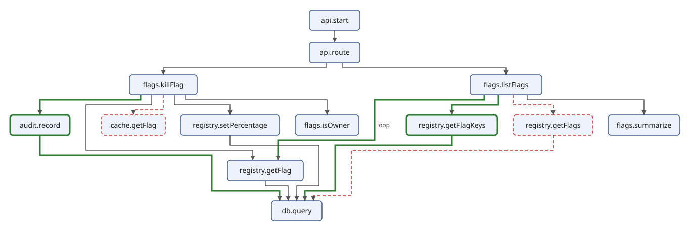
The added functions and calls are drawn green and thick, the removed
ones red and dashed, and the call in the loop is labelled. The layers
of the drawing are the boxes with the same y, here each read left to
right:
$ sxml xpath --context-item=calls.svg 'for $y in sort(distinct-values(//*:rect/@y ! xs:integer(.))) return `{$y}: {string-join(sort(//*:g[*:rect/@y = $y], (), fn { xs:integer(*:rect/@x) }) ! *:text, ", ")}`'
"20: api.start"
"84: api.route"
"148: flags.killFlag, flags.listFlags"
"228: audit.record, cache.getFlag, registry.setPercentage, flags.isOwner, registry.getFlagKeys, registry.getFlags, flags.summarize"
"318: registry.getFlag"
"398: db.query"
The entry, the router, the two request handlers, the functions they
call, and db.query at the bottom, which every query to PostgreSQL
goes through. Before and after are one picture: in the fourth layer
the new audit.record stands beside the old cache.getFlag, and the
new getFlagKeys beside the old getFlags. registry.getFlag, which
both versions call, has a layer of its own below them, because
registry.setPercentage in the fourth layer calls it too.
What the traces will say
The diff predicts, from the code alone, that GET /api/getFlags makes
one call to the registry module, one query to PostgreSQL, and then one
more per flag; that killing a flag calls the audit module once, which
writes to PostgreSQL and calls the owners' webhook; and that it no
longer reads Redis. It cannot say how many flags there are, how long
each query takes, or whether a call of killFlag found its flag in the
cache before the change. Project: Comparing Traces Before and After a
Change answers those from traces recorded by the running
service. The line they check is
flags.listFlags > registry: 1 -> 1 + n, and with four flags, one
query to PostgreSQL becomes five.
Project: Comparing Traces Before and After a Change
The Vane service of Project: A Diff of Call Chains changed: listing the flags used to read them from PostgreSQL with one query, and now it reads the flag keys and then each flag; the kill switch no longer reads the flag from Redis, and now writes an audit event and calls the owners' webhook. The diff of the call chains predicted what that does at run time. In this project we look at what the service actually did, before and after the change, from the traces it recorded.
The examples are in docs/book/examples/traces. Run every command of
this project from that directory.
Traces, spans, resources and scopes
When a request goes through a system, each program on its way records what it did as spans. A span is one operation: it has a name, a start and an end, and a kind. A server span is a program handling a request; a client span is a program calling something else, another program, a database or a webhook; an internal span is work inside a program, such as one function of a module. Every span but the first names a parent, the span that caused it, and all the spans of one request share a trace id: together they are a trace, a tree of spans.
OpenTelemetry is the common standard for recording traces, and OTLP,
the OpenTelemetry Protocol, is how programs send their spans to a
collector. OTLP has a JSON encoding, and collectors can write the
spans they receive to files in it. Each file holds an
ExportTraceServiceRequest: a list of resources, each the program
that recorded the spans (OpenTelemetry calls it a service: its
service.name and service.version), with a list of scopes, each
the instrumentation library that made the spans (one for HTTP, one for
PostgreSQL, one for Redis, one for the functions of the program
itself), with the spans:
before.json (the start):
{
"resourceSpans": [
{
"resource": {
"attributes": [
{ "key": "service.name", "value": { "stringValue": "storefront" } },
{ "key": "service.version", "value": { "stringValue": "5.2.0" } },
{ "key": "deployment.environment.name", "value": { "stringValue": "staging" } }
]
},
"scopeSpans": [
{
"scope": { "name": "@vane/node", "version": "1.4.0" },
"spans": [
{
"traceId": "48114dcf6840d1bd46460c4b1ce0d09d",
"spanId": "edba4075f74ba88f",
"name": "GET /api/getFlags",
"kind": 3,
"startTimeUnixNano": "1792573200000000000",
"endTimeUnixNano": "1792573200050000000",
"attributes": [
{ "key": "http.request.method", "value": { "stringValue": "GET" } },
{ "key": "server.address", "value": { "stringValue": "vane" } },
{ "key": "server.port", "value": { "intValue": "8080" } },
{ "key": "url.full", "value": { "stringValue": "http://vane:8080/api/getFlags?input=%7B%7D" } },
{ "key": "url.template", "value": { "stringValue": "/api/getFlags" } },
{ "key": "http.response.status_code", "value": { "intValue": "200" } }
The resource is storefront, an application that uses Vane's backend
SDK, @vane/node, and this is the span the SDK recorded when it
downloaded the flags: a call GET /api/getFlags to the Vane service,
of kind 3 (client), from the time startTimeUnixNano to
endTimeUnixNano, in nanoseconds since 1970. Its attributes follow
OpenTelemetry's semantic conventions, the agreed names such as
http.request.method, server.address and, on the database spans,
db.system.name and db.query.text. The ids are hexadecimal strings,
and the times and the integer attributes (intValue) are strings too;
JSON, CSV and HTML says why.
The two files
before.json was recorded with the old version of the Vane service,
2.3.0, after.json with the new one, 2.4.0. Each holds two traces,
one of each remote function the change touched: the backend SDK
listing the flags (getFlags), and an owner killing the flag
new-checkout in the console (killFlag). A first look:
$ sxml xpath '("before.json", "after.json") ! `{.}: {count(json-doc(.)?resourceSpans?*?scopeSpans?*?spans?*)} spans of {count(distinct-values(json-doc(.)?resourceSpans?*?scopeSpans?*?spans?*?traceId))} traces in {string-join(json-doc(.)?resourceSpans?*?resource?attributes?*[?key = "service.name"]?value?stringValue, ", ")}`'
"before.json: 14 spans of 2 traces in storefront, vane, vane-console"
"after.json: 23 spans of 2 traces in storefront, vane, vane-console"
Nine spans more, and the same three programs: the console, the storefront with its SDK, and the service. Which spans, and why?
The plan
The project builds a small tool in XQuery and XSLT that answers that question for any two trace files:
- Spans as a Tree reads OTLP JSON into records, rebuilds each trace's tree from the parent ids, and writes it as XML: the normal form the rest of the project uses.
- Who Calls Whom, and How Often finds the participants of each call, counts the calls per request, and uses windows to find runs of the same call.
- The Trace Diff compares the counts of the two files, and the versions of the programs, as text and as JSON.
- Rendering the Diff writes the diff as an HTML report and draws it as a diagram.
- Streaming Large Trace Files handles a trace archive too large to load, with streaming XSLT.
All the functions live in one library module, trace.xqm, whose parts
each section explains.
Spans as a Tree
An OTLP file is grouped the way exporters send spans: by the program that recorded them, then by the instrumentation library. The trees of the traces are not in it, only the parent ids that make them. In this section we take the file apart into one record per span, put the trees together again, and write them as XML.
Flattening the file
resourceSpans, scopeSpans and spans are arrays. An array is one
item, so for $resource in $request?resourceSpans would run once, with
the whole array. for member runs once for each member of an array:
$ sxml xquery --method=adaptive --expression='
for member $resource in json-doc("before.json")?resourceSpans
for member $scope in $resource?scopeSpans
return `{ $resource?resource?attributes?1?value?stringValue }, { $scope?scope?name }: { array:size($scope?spans) } spans`'
"storefront, @vane/node: 1 spans"
"vane, @opentelemetry/instrumentation-http: 2 spans"
"vane, vane: 6 spans"
"vane, @opentelemetry/instrumentation-pg: 3 spans"
"vane, @opentelemetry/instrumentation-redis: 1 spans"
"vane-console, @opentelemetry/instrumentation-fetch: 1 spans"
The SDK and the console each recorded one span, their call to the
service. The service's spans come from four libraries: HTTP for the
requests it served, PostgreSQL and Redis for its queries, and its own
scope, vane, for the functions of its modules.
$resource?resource?attributes?1 relies on service.name being the
first attribute, which OTLP does not promise. Attributes are a list of
key-value pairs whose values say their own type, { "stringValue": "GET" } or { "intValue": "200" }; a map from each key to its value is
easier to use. These functions of the module trace.xqm, in the
namespace urn:example:trace, make one:
trace.xqm (the values):
(: The kinds of span, by the number OTLP writes. :)
declare variable $trace:kinds := {
0: "unspecified", 1: "internal", 2: "server", 3: "client",
4: "producer", 5: "consumer"
};
(: The value of an OTLP AnyValue: { "stringValue": "GET" },
{ "intValue": "200" } (an int64, written as a string), ... :)
declare function trace:value($value as map(*)) as xs:anyAtomicType? {
if (map:contains($value, "stringValue")) then $value?stringValue
else if (map:contains($value, "intValue")) then xs:integer($value?intValue)
else if (map:contains($value, "doubleValue")) then xs:double($value?doubleValue)
else if (map:contains($value, "boolValue")) then $value?boolValue
else ()
};
(: OTLP attributes, a list of key-value pairs, as a map. :)
declare function trace:attributes($attributes as array(*)?) as map(xs:string, xs:anyAtomicType) {
map:merge($attributes?* ! { ?key: trace:value(?value) })
};
$trace:kinds maps the number OTLP writes for a span's kind to its
name.
A record for a span
Each span becomes a record, a map with a fixed set of fields, each of a declared type. A record type is declared once and named:
trace.xqm (the span):
(: One span, flattened out of its resource and scope. Times are in
nanoseconds since 1970; attributes map each key to its value. :)
declare record trace:span(
trace as xs:string,
id as xs:string,
parent as xs:string?,
service as xs:string,
name as xs:string,
kind as xs:string,
start as xs:integer,
end as xs:integer,
attributes as map(xs:string, xs:anyAtomicType)
);
The declaration also declares a function of the same name that makes such a record from its fields, checking each one against its type. That catches mistakes early. JSON numbers are doubles, and a double is not an integer, even when it is 2:
$ sxml xquery --method=adaptive --expression='
declare record span(id as xs:string, kind as xs:integer);
let $first := json-doc("before.json")?resourceSpans?1?scopeSpans?1?spans?1
return span($first?spanId, $first?kind)'
expression:4:12: err:XPTY0004: The value does not match the required type (XPath 4.0, section 3.4, coercion rules)
xs:integer($first?kind) converts it. Here is the function that
flattens a whole file, with the fields given by name:
trace.xqm (the spans):
(: Every span of an ExportTraceServiceRequest, flattened. :)
declare function trace:spans($request as map(*)) as trace:span* {
for member $resource in $request?resourceSpans
let $service := trace:attributes($resource?resource?attributes)?("service.name")
for member $scope in $resource?scopeSpans
for member $span in $scope?spans
return trace:span(
trace := $span?traceId,
id := $span?spanId,
parent := $span?parentSpanId[. ne ""],
service := $service,
name := $span?name,
kind := $trace:kinds(xs:integer($span?kind)),
start := xs:integer($span?startTimeUnixNano),
end := xs:integer($span?endTimeUnixNano),
attributes := trace:attributes($span?attributes)
)
};
The service's name is found once per resource, and each of its spans
gets it. The first client span is the SDK's call, the root of the
first trace; it has no parent, so its parent field is the empty
sequence, which the adaptive output writes as ():
$ sxml xquery --method=adaptive --expression='
import module namespace trace = "urn:example:trace" at "trace.xqm";
trace:spans(json-doc("before.json"))[?kind = "client"][1]'
{"trace":"48114dcf6840d1bd46460c4b1ce0d09d","id":"edba4075f74ba88f","parent":(),"service":"storefront","name":"GET /api/getFlags","kind":"client","start":1792573200000000000,"end":1792573200050000000,"attributes":{"http.request.method":"GET","server.address":"vane","server.port":8080,"url.full":"http://vane:8080/api/getFlags?input=%7B%7D","url.template":"/api/getFlags","http.response.status_code":200}}
A map from span id to span
A span names its parent only by id. To find the parent of each span
quickly, build a map from id to span once; map:build takes the items
and a function that gives each item's key. Which function of the
service made each database call?
$ sxml xquery --method=adaptive --expression='
import module namespace trace = "urn:example:trace" at "trace.xqm";
let $spans := trace:spans(json-doc("before.json"))
let $by-id := map:build($spans, fn { ?id })
for $query in $spans[map:contains(?attributes, "db.system.name")]
let $caller := $by-id($query?parent)
return `{ $query?name } on { $query?attributes?("server.address") }, called by { $caller?service } in { $caller?name }`'
"SELECT flags on postgresql, called by vane in registry.getFlags"
"SELECT flags on postgresql, called by vane in registry.getFlag"
"UPDATE flags on postgresql, called by vane in registry.setPercentage"
"GET on redis, called by vane in cache.getFlag"
Every query has the same caller, the one Vane service; the parent says more: the module function that made the query, recorded as an internal span.
Each lookup takes the same short time however many spans there are.
Searching the spans for the parent instead, $spans[?id = $query?parent], reads all of them for each query; Performance and
Memory measures the difference on a large file.
Times from nanosecond strings
The times are integers of nanoseconds since 1970, written as strings,
and xs:integer reads them exactly. Subtracting two gives a duration
in nanoseconds; dividing by a million gives milliseconds, an
xs:decimal, exact too. For dates people read, a number of
milliseconds multiplied by a one-millisecond xs:dayTimeDuration and
added to 1970 gives an xs:dateTime:
trace.xqm (the times):
(: Nanoseconds as milliseconds. :)
declare function trace:milliseconds($nanoseconds as xs:integer) as xs:decimal {
$nanoseconds div 1000000
};
(: Nanoseconds since 1970 as a date and time, to the millisecond. :)
declare function trace:date-time($nanoseconds as xs:integer) as xs:dateTime {
xs:dateTime("1970-01-01T00:00:00Z")
+ xs:dayTimeDuration("PT0.001S") * ($nanoseconds idiv 1000000)
};
$ sxml xquery --method=adaptive --expression='
import module namespace trace = "urn:example:trace" at "trace.xqm";
let $root := trace:spans(json-doc("before.json"))[1]
return (trace:date-time($root?start), trace:milliseconds($root?end - $root?start))'
xs:dateTime("2026-10-21T09:00:00Z")
50
The first request started at nine in the morning on 21 October 2026 and took 50 milliseconds.
The tree from the parent ids
The opposite direction, from a span to its children, is a map too:
from a parent id to the spans that name it, which map:build makes by
collecting all the items with the same key. Then a function makes a
span element for a span, and calls itself for each of its children:
trace.xqm (the tree):
(: A span and, inside it, its children in the order they started.
$children maps a span id to the spans whose parent it is; $origin
is the start of the trace. :)
declare function trace:element(
$span as trace:span,
$children as map(xs:string, trace:span*),
$origin as xs:integer
) as element(span) {
<span id="{ $span?id }" service="{ $span?service }" name="{ $span?name }"
kind="{ $span?kind }"
start="{ trace:milliseconds($span?start - $origin) }"
duration="{ trace:milliseconds($span?end - $span?start) }">{
$span?attributes?("server.address") ! attribute peer { . },
$span?attributes?("db.system.name") ! attribute db { . },
for $child in $children($span?id)
order by $child?start
return trace:element($child, $children, $origin)
}</span>
};
(: The spans of each trace as a tree, from the parent ids. :)
declare function trace:tree($spans as trace:span*) as element(trace)* {
let $children := map:build($spans[exists(?parent)], fn { ?parent })
for $root in $spans[empty(?parent)]
order by $root?start
return <trace id="{ $root?trace }" route="{ $root?name }"
start="{ trace:date-time($root?start) }">{
trace:element($root, $children, $root?start)
}</trace>
};
The spans without a parent are the roots, one per trace. Each trace
element has its route, the name of its root span, and its start; each
span its start relative to the start of the trace and its duration,
both in milliseconds, and, for a call, peer, the server it called,
and, for a database call, db, the kind of database.
A function that calls itself is fine here: a trace is a few levels
deep.
The normal form
trace:load puts it together: the services of a file, then its traces.
trace.xqm (loading a file):
(: A file of OTLP JSON in the normal form: its services, then its traces. :)
declare function trace:load($file as xs:string) as element(traces) {
let $request := json-doc($file)
return <traces source="{ $file }">{
for member $resource in $request?resourceSpans
let $attributes := trace:attributes($resource?resource?attributes)
return <service name="{ $attributes?("service.name") }"
version="{ $attributes?("service.version") }"/>,
trace:tree(trace:spans($request))
}</traces>
};
normalize.xq:
(: An OTLP JSON file in the normal form: a tree of spans per trace. :)
import module namespace trace = "urn:example:trace" at "trace.xqm";
declare option output:indent "yes";
declare variable $file external := "before.json";
trace:load($file)
$ sxml xquery --param=file=before.json normalize.xq
<traces source="before.json">
<service name="storefront" version="5.2.0"/>
<service name="vane" version="2.3.0"/>
<service name="vane-console" version="1.8.0"/>
<trace id="48114dcf6840d1bd46460c4b1ce0d09d" route="GET /api/getFlags" start="2026-10-21T09:00:00Z">
<span id="edba4075f74ba88f" service="storefront" name="GET /api/getFlags" kind="client" start="0" duration="50" peer="vane">
<span id="1927a6f46640ec9e" service="vane" name="GET /api/getFlags" kind="server" start="1" duration="48">
<span id="877ed3a0b72c92c6" service="vane" name="flags.listFlags" kind="internal" start="2" duration="46">
<span id="448683a55e6803a1" service="vane" name="registry.getFlags" kind="internal" start="3" duration="43">
<span id="fb73f92d181aced2" service="vane" name="SELECT flags" kind="client" start="5" duration="39" peer="postgresql" db="postgresql"/>
</span>
</span>
</span>
</span>
</trace>
<trace id="aaab30cfb7723ae45a23d581f962cc40" route="POST /api/killFlag" start="2026-10-21T09:00:02Z">
<span id="53dc1509f5cf3ba5" service="vane-console" name="POST /api/killFlag" kind="client" start="0" duration="34" peer="vane.example.com">
<span id="f9206f822272e040" service="vane" name="POST /api/killFlag" kind="server" start="1" duration="32">
<span id="900884cd9fed676d" service="vane" name="flags.killFlag" kind="internal" start="2" duration="30">
<span id="5fdc37e904085e22" service="vane" name="cache.getFlag" kind="internal" start="3" duration="3">
<span id="0e7b40a994b31e11" service="vane" name="GET" kind="client" start="4" duration="1" peer="redis" db="redis"/>
</span>
<span id="f82be3eb4c2b1180" service="vane" name="registry.getFlag" kind="internal" start="7" duration="9">
<span id="2f9fc0a36c747d78" service="vane" name="SELECT flags" kind="client" start="8" duration="7" peer="postgresql" db="postgresql"/>
</span>
<span id="03d74407bc202a98" service="vane" name="registry.setPercentage" kind="internal" start="17" duration="13">
<span id="bc2ed987977fa5c6" service="vane" name="UPDATE flags" kind="client" start="18" duration="11" peer="postgresql" db="postgresql"/>
</span>
</span>
</span>
</span>
</trace>
</traces>
Now the shape of each request is plain to see. Listing the flags is a
chain from the SDK's call through the service's server span and two
module functions, flags.listFlags and registry.getFlags, down to
one PostgreSQL query; killing a flag reads the flag from Redis in the
cache module, reads it again from PostgreSQL in the registry module,
and sets its percentage to 0. The new version's file shows the change,
in the children of flags.listFlags:
$ sxml xquery --param=file=after.json --output=after.xml normalize.xq
$ sxml xpath --context-item=after.xml '//span[@name = "flags.listFlags"]/span ! `{@start} ms: {@name}, {@duration} ms`'
"3 ms: registry.getFlagKeys, 12 ms"
"16 ms: registry.getFlag, 20 ms"
"38 ms: registry.getFlag, 20 ms"
"60 ms: registry.getFlag, 20 ms"
"82 ms: registry.getFlag, 20 ms"
One call of the registry module for the keys, then one for each of
the four flags, one after the other, each with a query of its own: the
request now takes more than twice as long. This XML,
one traces element with its services and a tree of spans for each
trace, is the normal form of a trace file, and the rest of the
project works on it: ordinary paths and patterns find spans, their
ancestors and their children, and XSLT can stream it.
Who Calls Whom, and How Often
A trace diagram shows every span, but a change is easier to see one level up: which programs and servers take part in a request, which calls which, and how many times. That is the cardinality of each call. This section computes it from the normal form of Spans as a Tree, and then looks at the order of the calls with windows.
The examples use both files in the normal form:
$ sxml xquery --param=file=before.json --output=before.xml normalize.xq
$ sxml xquery --param=file=after.json --output=after.xml normalize.xq
Participants
Every call is a client span. The caller is the program that recorded
it. The callee is harder: when the called program is traced too, the
client span's child is the server span that program recorded, and its
service names it. PostgreSQL, Redis and the owners' webhook record no
spans, so for them the client span's peer, the server.address
attribute, has to do. The internal spans are not calls: they are the
service's own functions, and a call from one module to another happens
inside the one program. The participants of a request are the
callers and callees of its calls.
trace.xqm (the calls):
(: A call from a service to another participant, made in a trace of
one route. :)
declare record trace:call(route as xs:string, caller as xs:string, callee as xs:string);
(: Who a client span calls: the service of the server span it caused,
else the server it names (a database or a webhook records no spans
of its own). :)
declare function trace:callee($client as element(span)) as xs:string {
string(($client/span[@kind = "server"]/@service, $client/@peer)[1])
};
(: Every call of the traces, one for each client span. :)
declare function trace:calls($traces as element(traces)) as trace:call* {
for $client in $traces//span[@kind = "client"]
return trace:call(
route := string($client/ancestor::trace/@route),
caller := string($client/@service),
callee := trace:callee($client)
)
};
($client/span[@kind = "server"]/@service, $client/@peer)[1] takes the
first of the two that exists. For the console's call that matters: its
peer is vane.example.com, the address it called, and the server
span below it names the program that answered, vane. The calls of the
old version:
$ sxml xquery --method=adaptive --expression='
import module namespace trace = "urn:example:trace" at "trace.xqm";
trace:calls(trace:load("before.json"))'
{"route":"GET /api/getFlags","caller":"storefront","callee":"vane"}
{"route":"GET /api/getFlags","caller":"vane","callee":"postgresql"}
{"route":"POST /api/killFlag","caller":"vane-console","callee":"vane"}
{"route":"POST /api/killFlag","caller":"vane","callee":"redis"}
{"route":"POST /api/killFlag","caller":"vane","callee":"postgresql"}
{"route":"POST /api/killFlag","caller":"vane","callee":"postgresql"}
The route comes from the trace the call belongs to: the same call between the same participants can happen for different requests, and a change can affect one route and not another.
Counting with group by
Grouping the calls by all three fields makes one group for each pair
of participants in each route, and count tells how many calls the
group has:
$ sxml xquery --method=adaptive --expression='
import module namespace trace = "urn:example:trace" at "trace.xqm";
for $call in trace:calls(trace:load("after.json"))
group by $route := $call?route, $caller := $call?caller, $callee := $call?callee
where $route = "GET /api/getFlags"
return `{ $caller } -> { $callee }: { count($call) }`'
"storefront -> vane: 1"
"vane -> postgresql: 5"
A file can hold many traces of the same route, so the module divides by the number of requests and keeps the result in a map, with a readable key for each call and a record as its value:
trace.xqm (the cardinality):
(: How often each service calls a participant in one request of a
route: a map from "route: caller -> callee" to the call and its
count. :)
declare record trace:edge(
route as xs:string, caller as xs:string, callee as xs:string,
count as xs:decimal
);
declare function trace:cardinality($traces as element(traces)) as map(xs:string, trace:edge) {
map:merge(
for $call in trace:calls($traces)
group by $route := $call?route, $caller := $call?caller, $callee := $call?callee
let $requests := count($traces/trace[@route = $route])
return {
`{ $route }: { $caller } -> { $callee }`:
trace:edge($route, $caller, $callee, count($call) div $requests)
}
)
};
A map makes the next step, comparing two files, a matter of looking up the same key in both:
$ sxml xquery --method=adaptive --expression='
import module namespace trace = "urn:example:trace" at "trace.xqm";
("before.json", "after.json")
! trace:cardinality(trace:load(.))?("GET /api/getFlags: vane -> postgresql")?count'
1
5
cardinality.xq lists the whole map of one file:
(: How often each service calls another, per request of each route. :)
import module namespace trace = "urn:example:trace" at "trace.xqm";
declare option output:method "text";
declare option output:item-separator " ";
declare variable $file external := "before.json";
let $cardinality := trace:cardinality(trace:load($file))
for $key in map:keys($cardinality)
order by $key
return `{ $key } { $cardinality($key)?count }`
$ sxml xquery --param=file=before.json cardinality.xq
GET /api/getFlags: storefront -> vane 1
GET /api/getFlags: vane -> postgresql 1
POST /api/killFlag: vane -> postgresql 2
POST /api/killFlag: vane -> redis 1
POST /api/killFlag: vane-console -> vane 1
$ sxml xquery --param=file=after.json cardinality.xq
GET /api/getFlags: storefront -> vane 1
GET /api/getFlags: vane -> postgresql 5
POST /api/killFlag: vane -> hooks.example.com 1
POST /api/killFlag: vane -> postgresql 3
POST /api/killFlag: vane-console -> vane 1
Listing the flags now makes five queries instead of one; killing a
flag no longer reads Redis, makes one query more, and calls a new
participant, the owners' webhook at hooks.example.com. The counts
say how many.
The order of the calls, which the windows below look at, says more
about why.
Tumbling windows
group by doesn't care where the members of a group are. Sometimes
position is the whole point. The children of a span are in the order
they started, and a run of the same call one after the other is the
mark of a loop in the code.
A tumbling window cuts a sequence into runs that don't overlap. The
start condition says where a new run begins. Here a run begins at
each call whose name differs from the call before it:
$ sxml xquery --context-item=after.xml --method=adaptive --expression='
for $function in //span[@kind = "server"]/span
for tumbling window $run in $function/span
start $first previous $before when not($first/@name = $before/@name)
return `{ $function/@name }: { count($run) } x { $first/@name }`'
"flags.listFlags: 1 x registry.getFlagKeys"
"flags.listFlags: 4 x registry.getFlag"
"flags.killFlag: 1 x registry.getFlag"
"flags.killFlag: 1 x registry.setPercentage"
"flags.killFlag: 1 x audit.record"
The windows run over the children of each module function that a
server span called: flags.listFlags and flags.killFlag.
$run is bound to the items of each window in turn, and $first to
the item that starts it. previous $before binds the item before the
start, which for the first item is the empty sequence; not($first/@name = $before/@name) is then true, so the first item starts a window too.
Without an end condition, a window ends just before the next one
starts. The run of four registry.getFlag is the loop the change
added: one call, and one query, per flag, the pattern known as N+1,
where one query for all the flags would do.
Start and end can be bound to more variables: the item itself, its
position (at $p), and the items before it and after it (previous,
next). An exporter sends spans to the collector in batches; this
tumbling window makes batches of at most eight spans, using positions:
$ sxml xquery --context-item=after.xml --method=adaptive --expression='
for tumbling window $batch in //span
start at $start when true()
end at $end when $end - $start = 7
return `{ count($batch) } spans, the first { $batch[1]/@id }`'
"8 spans, the first 6a06eb67c8c7b1df"
"8 spans, the first 57dd62522e2c9584"
"7 spans, the first bd4a79a18936f02a"
Each window ends seven items after it starts. The last window is shorter: the sequence ran out before its end condition was met.
Windows with an end
A collector receives each span when it ends, and a live view of a
system sees requests start before it knows how they finish.
timeline.xq turns a file in the normal form into that view: an event
for the start and one for the end of every span, in the order they
happened, up to a moment $until:
timeline.xq:
(: The starts and ends of the spans of a file in the normal form, in
the order they happened, up to the moment $until. :)
declare option output:indent "yes";
declare variable $until external := "9999-12-31T00:00:00Z";
<timeline>{
for $span in //span
let $start := xs:dateTime($span/ancestor::trace/@start)
+ xs:dayTimeDuration("PT0.001S") * xs:decimal($span/@start)
let $end := $start + xs:dayTimeDuration("PT0.001S") * xs:decimal($span/@duration)
for $event in (
<start at="{ $start }" span="{ $span/@id }" name="{ $span/@name }"
root="{ empty($span/parent::span) }"/>,
<end at="{ $end }" span="{ $span/@id }"/>
)
where xs:dateTime($event/@at) le xs:dateTime($until)
stable order by xs:dateTime($event/@at)
return $event
}</timeline>
At 20 milliseconds past 09:00:02, the kill request is still running:
$ sxml xquery --context-item=after.xml --param=until=2026-10-21T09:00:02.020Z --output=live.xml timeline.xq
A window from the start of each request, a root span, to the end of the same span is one request. When the end condition is never met, the window ends at the last item, and the end variable is bound to that last item, so test what it is:
$ sxml xquery --context-item=live.xml --method=adaptive --expression='
for tumbling window $request in /timeline/*
start $open when $open[self::start]/@root = "true"
end $close when $close[self::end]/@span = $open/@span
return `{ $open/@name } at { $open/@at }: { count($request[self::start]) } spans, {
if ($close/@span = $open/@span) then "ended at " || $close/@at else "still running" }`'
"GET /api/getFlags at 2026-10-21T09:00:00Z: 13 spans, ended at 2026-10-21T09:00:00.11Z"
"POST /api/killFlag at 2026-10-21T09:00:02Z: 7 spans, still running"
The end condition refers to $open, the start of its own window: a
window can end at an item that depends on how it began.
only end instead of end drops a window whose end condition is never
met. That's what you want to compute how long the requests took:
$ sxml xquery --context-item=live.xml --method=adaptive --expression='
for tumbling window $request in /timeline/*
start $open when $open[self::start]/@root = "true"
only end $close when $close[self::end]/@span = $open/@span
let $took := (xs:dateTime($close/@at) - xs:dateTime($open/@at))
div xs:dayTimeDuration("PT0.001S")
return `{ $open/@name }: { $took } ms`'
"GET /api/getFlags: 110 ms"
Subtracting two xs:dateTime values gives a duration, and dividing a
duration by a duration gives a number.
Sliding windows
A sliding window starts a window at every item where the start condition holds, so its windows can overlap. How many queries did the service send to PostgreSQL within 50 milliseconds of each other, while it listed the flags? A window starts at each query and ends before the first query that starts 50 milliseconds or more after it:
$ sxml xquery --context-item=after.xml --method=adaptive --expression='
let $calls := //trace[@route = "GET /api/getFlags"]//span[@db = "postgresql"]
for sliding window $burst in $calls
start $first when true()
end next $after when xs:decimal($after/@start) - xs:decimal($first/@start) ge 50
return array { $burst/@start ! xs:decimal(.) }'
[5,18,40]
[18,40,62]
[40,62,84]
[62,84]
[84]
The windows overlap: 18 and 40 are in three of them. The last three
windows end because the queries ran out, not because a query came 50
milliseconds later; only end drops them, and keeps only the bursts
that are known to be complete:
$ sxml xquery --context-item=after.xml --method=adaptive --expression='
let $calls := //trace[@route = "GET /api/getFlags"]//span[@db = "postgresql"]
for sliding window $burst in $calls
start $first when true()
only end next $after when xs:decimal($after/@start) - xs:decimal($first/@start) ge 50
return array { $burst/@start ! xs:decimal(.) }'
[5,18,40]
[18,40,62]
next makes it easy to compare an item with the one after it. Which
functions of the registry module ran twice in a row, called from the
same function?
$ sxml xquery --context-item=after.xml --method=adaptive --expression='
for sliding window $pair in //span[starts-with(@name, "registry.")]
start $first next $second
when $second/@name = $first/@name and $second/.. is $first/..
end when true()
return `{ $first/@name } at { $first/@start } ms, again at { $second/@start } ms`'
"registry.getFlag at 16 ms, again at 38 ms"
"registry.getFlag at 38 ms, again at 60 ms"
"registry.getFlag at 60 ms, again at 82 ms"
end when true() ends each window at the item that starts it: the
windows are only a way to look at each item together with its
neighbour. $second/.. is $first/.. keeps neighbours that belong to
different requests apart; without it, the last registry.getFlag of
the listing and the one of the kill request would make a pair.
Choosing between them
- Use
group bywhen the members of a group can be anywhere, and the group is named by a value: a route, a pair of participants, a status. - Use a tumbling window when the groups are runs of neighbours: the same call repeated, a request from its start to its end, batches of eight.
- Use a sliding window to look at each item with the items around it: bursts within a time, gaps, repeated values.
The Trace Diff
With a map of cardinalities for each file, the diff of two trace files is the diff of two maps: the calls that are only in the new map were added, the calls only in the old one were removed, and the calls in both whose counts differ changed. In this section we write it, with the versions of the programs beside it, as text and as JSON.
Matching traces by route
Two files can only be compared where they recorded the same kind of
request. A file recorded during a test of the kill switch has no
GET /api/getFlags, and its missing calls are not a change. So the diff first
finds the routes both files have, and compares the calls of those
routes only:
trace.xqm (the diff):
(: A change in how often a service calls a participant, per request. :)
declare record trace:change(
route as xs:string, caller as xs:string, callee as xs:string,
before as xs:decimal, after as xs:decimal
);
(: The calls whose count changed, in the routes both files recorded. :)
declare function trace:diff($before as element(traces), $after as element(traces)) as trace:change* {
let $routes := distinct-values($before/trace/@route[. = $after/trace/@route])
return if (empty($routes)) then error(
xs:QName("trace:no-shared-route"),
`{ $before/@source } and { $after/@source } have no route in common`
) else
let $old := trace:cardinality($before)
let $new := trace:cardinality($after)
for $key in distinct-values((map:keys($old), map:keys($new)))
let $edge := ($old($key), $new($key))[1]
where $edge?route = $routes
let $count-before := $old($key)?count otherwise 0
let $count-after := $new($key)?count otherwise 0
where $count-before ne $count-after
order by $key
return trace:change(
$edge?route, $edge?caller, $edge?callee, $count-before, $count-after)
};
The keys of both maps together, without duplicates, are every call of
either file. A call missing from one map has the count 0 there:
looking up a missing key gives the empty sequence, and otherwise 0
replaces it. The order by $key sorts the changes by route, caller and
callee, since that is how the key is made.
The versions of the programs
The versions of the programs that recorded the spans, the resources, tell which deployment changed. A program that only one file has, has no version in the other:
trace.xqm (the versions):
(: A service whose version changed, or that only one file has. :)
declare record trace:version(service as xs:string, before as xs:string?, after as xs:string?);
declare function trace:versions($before as element(traces), $after as element(traces)) as trace:version* {
for $service in distinct-values(($before, $after)/service/@name)
let $old := $before/service[@name = $service]/@version ! string()
let $new := $after/service[@name = $service]/@version ! string()
where not(deep-equal($old, $new))
return trace:version($service, $old, $new)
};
deep-equal compares two sequences, so it also says that a version and
no version differ, where ne would give the empty sequence.
The diff as text
diff.xq:
(: What changed between two trace files, as text. :)
import module namespace trace = "urn:example:trace" at "trace.xqm";
declare option output:method "text";
declare option output:item-separator " ";
declare variable $before external := "before.json";
declare variable $after external := "after.json";
let $old := trace:load($before)
let $new := trace:load($after)
return (
for $version in trace:versions($old, $new)
return `{ $version?service }: { $version?before otherwise "none" } -> { $version?after otherwise "none" }`,
for $change in trace:diff($old, $new)
return `{ $change?route }: { $change?caller } -> { $change?callee } { $change?before } -> { $change?after }`
)
The external variables have defaults, so without parameters it compares the two files of the project:
$ sxml xquery diff.xq
vane: 2.3.0 -> 2.4.0
GET /api/getFlags: vane -> postgresql 1 -> 5
POST /api/killFlag: vane -> hooks.example.com 0 -> 1
POST /api/killFlag: vane -> postgresql 2 -> 3
POST /api/killFlag: vane -> redis 1 -> 0
The service's new version made listing the flags query PostgreSQL
five times instead of once. Project: A Diff of Call Chains
found the cause in the code, a call of the registry module inside a
loop over the flag keys, and predicted flags.listFlags > registry: 1 -> 1 + n, one call plus one per flag, each call a query. With four
flags, that is five. Killing a flag no longer reads Redis; the audit
module writes one more row to PostgreSQL, and posts to a new
participant, the owners' webhook. The storefront and the console still
call the service once per request, and their versions did not change,
so the diff leaves them out.
The diff as JSON
Other tools, a dashboard or a check in a deployment pipeline, want the diff as data. Records are maps, so the JSON output method writes them as objects:
diff-json.xq:
(: What changed between two trace files, as JSON. :)
import module namespace trace = "urn:example:trace" at "trace.xqm";
declare option output:method "json";
declare option output:indent "yes";
declare option output:escape-solidus "no";
declare variable $before external := "before.json";
declare variable $after external := "after.json";
let $old := trace:load($before)
let $new := trace:load($after)
return {
"before": $before,
"after": $after,
"versions": array { trace:versions($old, $new) },
"changes": array { trace:diff($old, $new) }
}
$ sxml xquery diff-json.xq
{
"before": "before.json",
"after": "after.json",
"versions": [
{
"service": "vane",
"before": "2.3.0",
"after": "2.4.0"
}
],
"changes": [
{
"route": "GET /api/getFlags",
"caller": "vane",
"callee": "postgresql",
"before": 1,
"after": 5
},
{
"route": "POST /api/killFlag",
"caller": "vane",
"callee": "hooks.example.com",
"before": 0,
"after": 1
},
{
"route": "POST /api/killFlag",
"caller": "vane",
"callee": "postgresql",
"before": 2,
"after": 3
},
{
"route": "POST /api/killFlag",
"caller": "vane",
"callee": "redis",
"before": 1,
"after": 0
}
]
}
JSON allows a solidus to be written as \/, and the serializer does so unless
escape-solidus is no, which keeps the routes readable.
When the files share no route
To see the error, we need two files with different routes. select.xq
writes a copy of an OTLP file with only the traces of one route: it
finds the trace ids of the root spans with that name, and rebuilds the
nested arrays with map:put and array:filter, leaving out scopes
and resources that have no spans left:
select.xq:
(: An OTLP JSON file with only the traces of one route. :)
declare option output:method "json";
declare option output:indent "yes";
declare option output:escape-solidus "no";
declare variable $file external := "before.json";
declare variable $route external;
let $request := json-doc($file)
let $roots := $request?resourceSpans?*?scopeSpans?*?spans?*[empty(?parentSpanId)]
let $traces := $roots[?name = $route]?traceId
return map:put($request, "resourceSpans", array {
for member $resource in $request?resourceSpans
let $scopes := array {
for member $scope in $resource?scopeSpans
let $spans := array:filter($scope?spans, fn { ?traceId = $traces })
where array:size($spans) > 0
return map:put($scope, "spans", $spans)
}
where array:size($scopes) > 0
return map:put($resource, "scopeSpans", $scopes)
})
$ sxml xquery --param=file=before.json '--param=route=GET /api/getFlags' --output=flags.json select.xq
$ sxml xquery --param=file=after.json '--param=route=POST /api/killFlag' --output=kill.json select.xq
$ sxml xpath 'json-doc("kill.json")?resourceSpans?*?scopeSpans?*?spans?* => count()'
10
Comparing the listing of the old version with only the kill request of the new one:
$ sxml xquery --param=before=flags.json --param=after=kill.json diff.xq
trace.xqm:180:35: trace:no-shared-route: flags.json and kill.json have no route in common
The error's code is a QName in the module's own namespace,
trace:no-shared-route, so a caller can catch exactly this error and
let every other error through:
$ sxml xquery --method=adaptive --expression='
import module namespace trace = "urn:example:trace" at "trace.xqm";
for $after in ("after.json", "kill.json")
return try {
"changes: " || count(trace:diff(trace:load("flags.json"), trace:load($after)))
} catch trace:no-shared-route {
"nothing to compare: " || $err:description
}'
"changes: 1"
"nothing to compare: flags.json and kill.json have no route in common"
Against after.json, only GET /api/getFlags is compared, and its
change is found; the kill request's changes are not, because
flags.json has none of them to compare with. The versions are
compared all the same, and here one appears that only one file has:
$ sxml xquery --param=before=flags.json diff.xq
vane: 2.3.0 -> 2.4.0
vane-console: none -> 1.8.0
GET /api/getFlags: vane -> postgresql 1 -> 5
flags.json holds only the listing, so it has no span of the console,
and no resource for it either: the console's version is the empty
sequence there, which otherwise "none" in diff.xq writes as
none. With real deployments, such a line shows a program that is new,
or gone. In JSON, an empty field becomes null:
$ sxml xquery --method=json --expression='
import module namespace trace = "urn:example:trace" at "trace.xqm";
array { trace:versions(trace:load("flags.json"), trace:load("after.json")) }'
[{"service":"vane","before":"2.3.0","after":"2.4.0"},{"service":"vane-console","before":null,"after":"1.8.0"}]
Rendering the Diff
Text and JSON are right for tools; people reviewing a change want a page they can read and a picture. In this section the diff becomes an HTML report, written by an XSLT stylesheet, and a diagram of the participants of each route, drawn by the drawing module of Project: Drawing Diagrams with SVG.
The diff as XML
XSLT works on trees, so the first step is the diff as XML. The records
of trace:diff and trace:versions become elements with one attribute
per field; a field that is empty becomes no attribute:
diff-xml.xq:
(: What changed between two trace files, as XML for the report. :)
import module namespace trace = "urn:example:trace" at "trace.xqm";
declare option output:indent "yes";
declare variable $before external := "before.json";
declare variable $after external := "after.json";
let $old := trace:load($before)
let $new := trace:load($after)
return <diff before="{ $before }" after="{ $after }">{
for $version in trace:versions($old, $new)
return <version service="{ $version?service }">{
$version?before ! attribute before { . },
$version?after ! attribute after { . }
}</version>,
for $change in trace:diff($old, $new)
return <change route="{ $change?route }" caller="{ $change?caller }"
callee="{ $change?callee }" before="{ $change?before }"
after="{ $change?after }"/>
}</diff>
$ sxml xquery --output=diff.xml diff-xml.xq
$ cat diff.xml
<diff before="before.json" after="after.json">
<version service="vane" before="2.3.0" after="2.4.0"/>
<change route="GET /api/getFlags" caller="vane" callee="postgresql" before="1" after="5"/>
<change route="POST /api/killFlag" caller="vane" callee="hooks.example.com" before="0" after="1"/>
<change route="POST /api/killFlag" caller="vane" callee="postgresql" before="2" after="3"/>
<change route="POST /api/killFlag" caller="vane" callee="redis" before="1" after="0"/>
</diff>
An HTML report
The report has a table of versions and a table of changes for each
route. xsl:for-each-group makes the routes; a template rule for each
kind of change sets the row's class, which the page's style colours:
report.xsl:
<!-- The trace diff (from diff-xml.xq) as an HTML report. With the
parameter drawings, a list of SVG files from drawing.xq, each route
shows the drawing whose title names it. -->
<xsl:stylesheet version="4.0" expand-text="yes"
xmlns:xsl="http://www.w3.org/1999/XSL/Transform"
xmlns:svg="http://www.w3.org/2000/svg"
exclude-result-prefixes="svg">
<xsl:output method="html" html-version="5" indent="yes"/>
<xsl:param name="drawings" select="''"/>
<xsl:template match="/diff">
<html>
<head>
<title>Trace diff: {@before} and {@after}</title>
<style>
td, th {{ padding: 2px 12px; text-align: left }}
.added {{ color: #2e7d32 }}
.removed {{ color: #c62828; text-decoration: line-through }}
.changed {{ color: #b26a00 }}
</style>
</head>
<body>
<h1>Trace diff</h1>
<p>From <code>{@before}</code> to <code>{@after}</code>.</p>
<h2>Versions</h2>
<table>
<tr><th>Service</th><th>Before</th><th>After</th></tr>
<xsl:apply-templates select="version"/>
</table>
<xsl:for-each-group select="change" group-by="@route">
<h2>{current-grouping-key()}</h2>
<table>
<tr><th>Caller</th><th>Callee</th><th>Before</th><th>After</th></tr>
<xsl:apply-templates select="current-group()"/>
</table>
<xsl:copy-of select="tokenize($drawings) ! doc(.)
/svg:svg[starts-with(svg:title, current-grouping-key() || ':')]"/>
</xsl:for-each-group>
</body>
</html>
</xsl:template>
<xsl:template match="version">
<tr><td>{@service}</td><td>{(@before, 'none')[1]}</td><td>{(@after, 'none')[1]}</td></tr>
</xsl:template>
<!-- A call that is new, gone, or made a different number of times. -->
<xsl:template match="change">
<xsl:param name="kind" select="'changed'"/>
<tr class="{$kind}">
<td>{@caller}</td><td>{@callee}</td><td>{@before}</td><td>{@after}</td>
</tr>
</xsl:template>
<xsl:template match="change[@before = 0]" priority="1">
<xsl:next-match><xsl:with-param name="kind" select="'added'"/></xsl:next-match>
</xsl:template>
<xsl:template match="change[@after = 0]" priority="1">
<xsl:next-match><xsl:with-param name="kind" select="'removed'"/></xsl:next-match>
</xsl:template>
</xsl:stylesheet>
A row for an added call matches both change and change[@before = 0]. The second rule has the higher priority and wins; it passes the
kind on with xsl:next-match, which runs the next best rule, the
general one, with the parameter. The braces in the style are doubled
because expand-text="yes" makes single braces text value templates.
$ sxml transform report.xsl diff.xml
<!DOCTYPE html>
<html>
<head>
<meta charset="UTF-8">
<title>Trace diff: before.json and after.json</title>
<style>
td, th { padding: 2px 12px; text-align: left }
.added { color: #2e7d32 }
.removed { color: #c62828; text-decoration: line-through }
.changed { color: #b26a00 }
</style>
</head>
<body>
<h1>Trace diff</h1>
<p>From <code>before.json</code> to <code>after.json</code>.</p>
<h2>Versions</h2>
<table>
<tr>
<th>Service</th>
<th>Before</th>
<th>After</th>
</tr>
<tr>
<td>vane</td>
<td>2.3.0</td>
<td>2.4.0</td>
</tr>
</table>
<h2>GET /api/getFlags</h2>
<table>
<tr>
<th>Caller</th>
<th>Callee</th>
<th>Before</th>
<th>After</th>
</tr>
<tr class="changed">
<td>vane</td>
<td>postgresql</td>
<td>1</td>
<td>5</td>
</tr>
</table>
<h2>POST /api/killFlag</h2>
<table>
<tr>
<th>Caller</th>
<th>Callee</th>
<th>Before</th>
<th>After</th>
</tr>
<tr class="added">
<td>vane</td>
<td>hooks.example.com</td>
<td>0</td>
<td>1</td>
</tr>
<tr class="changed">
<td>vane</td>
<td>postgresql</td>
<td>2</td>
<td>3</td>
</tr>
<tr class="removed">
<td>vane</td>
<td>redis</td>
<td>1</td>
<td>0</td>
</tr>
</table>
</body>
</html>
The participants as a diagram
The drawing module of the SVG project draws any diagram of nodes and
edges, and a class on a node or an edge marks it as added,
removed or changed. It lives in the SVG project's directory, and
draw.xqm here is a symbolic link to ../svg/draw.xqm, so both
projects use the same file.
participants.xq makes the diagram of one route: a node for each
participant, before or after, and an edge for each call between two of
them, labelled with its count. What only the new file has is added,
what only the old one has is removed, and a call whose count changed
is changed. A database is drawn as a store: a callee that some client
span marks with db. The owners' webhook records no spans of its own
either, but it is a web server, not a database, so it is drawn as a box
like the programs:
participants.xq:
(: The participants of one route, before and after, as a diagram for
draw.xqm: what was added, removed or changed has a class, and a
database is drawn as a store. :)
import module namespace trace = "urn:example:trace" at "trace.xqm";
declare option output:indent "yes";
declare variable $before external := "before.json";
declare variable $after external := "after.json";
declare variable $route external := "GET /api/getFlags";
(: The calls of the route, from a map of cardinalities. :)
declare function local:calls($cardinality as map(*)) as map(*) {
map:filter($cardinality, fn($key, $edge) { $edge?route = $route })
};
(: Whether a service takes part in one of the calls. :)
declare function local:takes-part($name as xs:string, $calls as map(*)) as xs:boolean {
some $edge in map:items($calls) satisfies $name = ($edge?caller, $edge?callee)
};
let $old := trace:load($before)
let $new := trace:load($after)
let $old-calls := local:calls(trace:cardinality($old))
let $new-calls := local:calls(trace:cardinality($new))
let $calls := map:merge(($old-calls, $new-calls))
let $databases := ($old, $new)//span[@db]/@peer
return <diagram title="{ $route }: { $before } and { $after }">{
for $name in distinct-values(map:items($calls) ! (?caller, ?callee))
return <node id="{ $name }" label="{ $name }">{
if ($name = $databases) then attribute kind { "store" } else (),
if (not(local:takes-part($name, $old-calls))) then attribute class { "added" }
else if (not(local:takes-part($name, $new-calls))) then attribute class { "removed" }
else ()
}</node>,
for $key in map:keys($calls)
let $count-before := $old-calls($key)?count otherwise 0
let $count-after := $new-calls($key)?count otherwise 0
return <edge from="{ $calls($key)?caller }" to="{ $calls($key)?callee }">{
if ($count-before = $count-after) then attribute label { $count-after }
else (
attribute label { `{ $count-before } → { $count-after }` },
attribute class {
if ($count-before = 0) then "added"
else if ($count-after = 0) then "removed"
else "changed"
}
)
}</edge>
}</diagram>
$ sxml xquery '--param=route=POST /api/killFlag' --output=kill.xml participants.xq
$ cat kill.xml
<diagram title="POST /api/killFlag: before.json and after.json">
<node id="vane-console" label="vane-console"/>
<node id="vane" label="vane"/>
<node id="redis" label="redis" kind="store" class="removed"/>
<node id="postgresql" label="postgresql" kind="store"/>
<node id="hooks.example.com" label="hooks.example.com" class="added"/>
<edge from="vane-console" to="vane" label="1"/>
<edge from="vane" to="redis" label="1 → 0" class="removed"/>
<edge from="vane" to="postgresql" label="2 → 3" class="changed"/>
<edge from="vane" to="hooks.example.com" label="0 → 1" class="added"/>
</diagram>
drawing.xq draws a diagram with the module:
drawing.xq:
(: Draws a diagram (the context item) with the drawing module. :)
import module namespace draw = "urn:example:draw" at "draw.xqm";
declare option output:indent "yes";
draw:svg(/diagram)
The drawings of both routes are in the project directory, and drawing them again gives the same files:
$ sxml xquery --context-item=kill.xml --output=kill.svg drawing.xq
$ cmp kill.svg diff-kill.svg && echo same
same
$ sxml xquery --output=flags.xml participants.xq
$ sxml xquery --context-item=flags.xml --output=flags.svg drawing.xq
$ cmp flags.svg diff-flags.svg && echo same
same
Listing the flags:
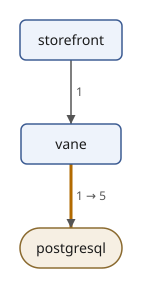
Killing a flag:
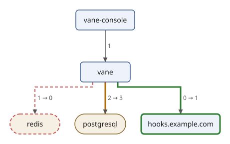
The modules of the service are not in the drawings: a call from one module to another is a function call inside the one program, and its internal span is not a call. The drawings show what crosses the network, and that is where this change shows: more queries, a cache that is no longer read, and a new webhook.
The drawings in the report
An HTML page can hold SVG directly. With the parameter drawings, a
list of SVG files, report.xsl copies into each route's section the
drawing whose title begins with the route, so the report becomes one
file with everything in it:
$ sxml transform --param='drawings=diff-flags.svg diff-kill.svg' --output=report.html report.xsl diff.xml
$ sxml xpath 'count(html-doc("report.html")//*:svg)'
2
The stylesheet reads the drawings with doc(), as XML files;
html-doc reads the HTML page back, with the SVG elements in their own
namespace, as a browser does. Open report.html in a browser to see
the tables and the two drawings.
Streaming Large Trace Files
Two traces fit anywhere. A collector that keeps a day of a busy system writes millions of spans, and a tree of them takes several times the memory of the file. Most XML processors read the whole input into a tree before they transform it; for an archive of several gigabytes, that does not work.
XSLT can stream: process the input as it is parsed, one piece at a
time, and never build the tree. You ask for it by declaring a mode
streamable="yes". The processor then checks that every rule in that
mode can work in one pass over the input, from start to end, and runs
it that way. The normal form of Spans as a Tree suits
streaming well: each trace is one element, with its spans inside it.
A large input
make-traces.xq writes an archive in the normal form, with as many
made-up requests to the old version of the Vane service as $count
says, one every 100 milliseconds, two downloads of the flags by the
backend SDK for each kill in the console, and
database queries that take between 5 and 65 milliseconds:
make-traces.xq:
(: Writes an archive of $count made-up requests to the old version of the
Vane service, one every 100 ms from $start, in the normal form ($form
"tree"), or as one flat list of spans that name their parents ($form
"flat"). Two of every three requests are the backend SDK's
GET /api/getFlags, the third the console's POST /api/killFlag. :)
declare variable $count external := 1000;
declare variable $start external := "2026-10-21T09:00:00Z";
declare variable $form external := "tree";
declare function local:span(
$id as xs:string, $service as xs:string, $name as xs:string,
$kind as xs:string, $start as xs:decimal, $duration as xs:decimal,
$peer as xs:string?, $children as element(span)*
) as element(span) {
<span id="{ $id }" service="{ $service }" name="{ $name }" kind="{ $kind }"
start="{ $start }" duration="{ $duration }">{
$peer ! attribute peer { . },
$peer[. = ("postgresql", "redis")] ! attribute db { . },
$children
}</span>
};
(: The spans of request $trace, whose database query takes $query ms. :)
declare function local:request(
$trace as xs:integer, $route as xs:string, $query as xs:decimal
) as element(span) {
if ($route = "GET /api/getFlags") then
local:span(`{ $trace }.1`, "storefront", $route, "client", 0, $query + 12, "vane",
local:span(`{ $trace }.2`, "vane", $route, "server", 1, $query + 10, (),
local:span(`{ $trace }.3`, "vane", "flags.listFlags", "internal", 2, $query + 7, (),
local:span(`{ $trace }.4`, "vane", "registry.getFlags", "internal", 3, $query + 4, (),
local:span(`{ $trace }.5`, "vane", "SELECT flags", "client", 5, $query, "postgresql", ())))))
else
local:span(`{ $trace }.1`, "vane-console", $route, "client", 0, $query + 23, "vane.example.com",
local:span(`{ $trace }.2`, "vane", $route, "server", 1, $query + 21, (),
local:span(`{ $trace }.3`, "vane", "flags.killFlag", "internal", 2, $query + 19, (), (
local:span(`{ $trace }.4`, "vane", "cache.getFlag", "internal", 3, 3, (),
local:span(`{ $trace }.5`, "vane", "GET", "client", 4, 2, "redis", ())),
local:span(`{ $trace }.6`, "vane", "registry.getFlag", "internal", 7, $query + 3, (),
local:span(`{ $trace }.7`, "vane", "SELECT flags", "client", 8, $query, "postgresql", ())),
local:span(`{ $trace }.8`, "vane", "registry.setPercentage", "internal", $query + 11, 8, (),
local:span(`{ $trace }.9`, "vane", "UPDATE flags", "client", $query + 12, 6, "postgresql", ()))
))))
};
let $traces :=
for $trace in 1 to xs:integer($count)
let $route := if ($trace mod 3 = 0) then "POST /api/killFlag" else "GET /api/getFlags"
let $at := xs:dateTime($start) + xs:dayTimeDuration("PT0.1S") * ($trace - 1)
return <trace id="{ $trace }" route="{ $route }" start="{ $at }">{
local:request($trace, $route, 5 + $trace * 7919 mod 61)
}</trace>
return if ($form = "flat") then
<spans>{
for $span in $traces//span
return <span>{ $span/parent::span/@id ! attribute parent { . }, $span/@* }</span>
}</spans>
else
<traces source="make-traces.xq">
<service name="storefront" version="5.2.0"/>
<service name="vane" version="2.3.0"/>
<service name="vane-console" version="1.8.0"/>
{ $traces }
</traces>
$ sxml xquery --param=count=10000 --output=archive.xml make-traces.xq
$ head -c 300 archive.xml
<traces source="make-traces.xq"><service name="storefront" version="5.2.0"/><service name="vane" version="2.3.0"/><service name="vane-console" version="1.8.0"/><trace id="1" route="GET /api/getFlags" start="2026-10-21T09:00:00Z"><span id="1.1" service="storefront" name="GET /api/getFlags" kind="clie
A streaming stylesheet
spans.xsl:
<xsl:stylesheet version="4.0" xmlns:xsl="http://www.w3.org/1999/XSL/Transform">
<xsl:mode streamable="yes"/>
<xsl:output method="text"/>
<xsl:template match="/traces">
<xsl:value-of select="format-number(count(descendant::span), '#,##0')"/>
</xsl:template>
</xsl:stylesheet>
$ sxml transform spans.xsl archive.xml
63,332
It looks like any other stylesheet, but sxml transform read the
traces as they were parsed and kept only the count. With 100,000 traces
(an 80 MB file), a release build of sxml uses 11 MB of memory at its
peak, the same as for the 8 MB file here. Without streamable="yes",
the same stylesheet builds the tree and uses about 390 MB.
What can stream
In one pass, the processor sees each node once, as it goes by. A rule in a streamable mode can do anything with the node it matched and the attributes and ancestors of that node, but it can go down into the children only once. This rule goes down twice, once to count the traces and once to count their spans:
counts.xsl:
<xsl:stylesheet version="4.0"
xmlns:xsl="http://www.w3.org/1999/XSL/Transform">
<xsl:mode streamable="yes"/>
<xsl:output method="text"/>
<xsl:template match="/traces">
<xsl:value-of select="count(trace), count(trace//span)"/>
</xsl:template>
</xsl:stylesheet>
$ sxml transform counts.xsl archive.xml
counts.xsl:6:3: err:XTSE3430: a template rule of a streamable mode is not guaranteed-streamable (XSLT 4.0, 6.6.4): its body is free-ranging
The stylesheet is rejected before anything runs, with the error the
XSLT specification gives. The rules that decide what is guaranteed
streamable are long, but the idea is short: one downward pass, no
looking back and no looking ahead. To compute several things in one
pass, use accumulators, xsl:iterate or xsl:fork.
Accumulators
An accumulator is a value that the processor updates as it goes
through the document. Each xsl:accumulator-rule matches nodes and
computes the new value from the old one, $value.
accumulator-before and accumulator-after read the value at a node,
before and after its content.
The participants of Who Calls Whom, and How Often
come from client spans, and the callee is the program of the client's
child server span, if there is one. In a stream that child is still
ahead when the client span starts, so this accumulator uses what is at
hand, the client span's peer, and counts the calls in a map:
calls.xsl:
<xsl:stylesheet version="4.0" expand-text="yes"
xmlns:xsl="http://www.w3.org/1999/XSL/Transform"
xmlns:xs="http://www.w3.org/2001/XMLSchema"
xmlns:map="http://www.w3.org/2005/xpath-functions/map">
<xsl:mode streamable="yes" use-accumulators="#all"/>
<xsl:output method="text"/>
<!-- A map from "caller -> peer" to the number of calls, kept up to
date as the client spans stream past. -->
<xsl:accumulator name="calls" as="map(xs:string, xs:integer)"
initial-value="{}" streamable="yes">
<xsl:accumulator-rule match="span[@kind = 'client']"
select="let $call := @service || ' -> ' || @peer
return map:put($value, $call, ($value($call) otherwise 0) + 1)"/>
</xsl:accumulator>
<xsl:template match="/traces">
<xsl:apply-templates select="trace"/>
<xsl:variable name="calls" select="accumulator-after('calls')"/>
<xsl:for-each select="map:keys($calls)">
<xsl:sort select="."/>
<xsl:text>{.}: {$calls(.)} </xsl:text>
</xsl:for-each>
</xsl:template>
<xsl:template match="trace"/>
</xsl:stylesheet>
$ sxml transform calls.xsl archive.xml
storefront -> vane: 6667
vane -> postgresql: 13333
vane -> redis: 3333
vane-console -> vane.example.com: 3333
The empty rule for trace makes xsl:apply-templates read each trace
and do nothing with it but let the accumulator see its spans; after
that, accumulator-after on the traces element has the final map.
These are the counts of the old version, from ten thousand requests:
two queries for each kill and one for each download make 13,333. The
last line shows what the shortcut costs: for the console's calls, the
peer is the address the console called, vane.example.com, where
the server span below it would have named the program that answered,
vane.
Several accumulators are computed in the same single pass. One counts the traces, and one keeps the slowest database query so far, as a map of its id and duration:
slowest.xsl:
<xsl:stylesheet version="4.0" expand-text="yes"
xmlns:xsl="http://www.w3.org/1999/XSL/Transform"
xmlns:xs="http://www.w3.org/2001/XMLSchema">
<xsl:mode streamable="yes" use-accumulators="#all"/>
<xsl:output method="text"/>
<!-- How many traces have gone past. -->
<xsl:accumulator name="count" as="xs:integer" initial-value="0"
streamable="yes">
<xsl:accumulator-rule match="trace" select="$value + 1"/>
</xsl:accumulator>
<!-- The slowest database query so far, as a map. -->
<xsl:accumulator name="slowest" as="map(*)"
initial-value="{ 'duration': 0 }" streamable="yes">
<xsl:accumulator-rule match="span[@peer = 'postgresql']"
select="if (xs:decimal(@duration) gt $value?duration)
then { 'id': string(@id), 'duration': xs:decimal(@duration) }
else $value"/>
</xsl:accumulator>
<xsl:template match="/traces">
<xsl:apply-templates select="trace"/>
<xsl:variable name="slowest" select="accumulator-after('slowest')"/>
<xsl:text>{accumulator-after('count')} traces, </xsl:text>
<xsl:text>the slowest query {$slowest?id}, {$slowest?duration} ms </xsl:text>
</xsl:template>
<!-- Report every 2,500th trace on the way. -->
<xsl:template match="trace">
<xsl:if test="accumulator-before('count') mod 2500 eq 0">
<xsl:message>{accumulator-before('count')} traces read</xsl:message>
</xsl:if>
</xsl:template>
</xsl:stylesheet>
$ sxml transform slowest.xsl archive.xml
2500 traces read
5000 traces read
7500 traces read
10000 traces read
10000 traces, the slowest query 50.5, 65 ms
The progress lines are xsl:message output, which goes to standard
error. Both stylesheets stream: with the 80 MB archive, each uses 11 MB.
Iterating
xsl:iterate is a loop over a sequence that carries parameters from one
item to the next, and that can stop early with xsl:break. Which is the
first request that took longer than a threshold, and how many were
faster before it?
first-slow.xsl:
<xsl:stylesheet version="4.0" expand-text="yes"
xmlns:xsl="http://www.w3.org/1999/XSL/Transform"
xmlns:xs="http://www.w3.org/2001/XMLSchema">
<xsl:mode streamable="yes"/>
<xsl:output method="text"/>
<!-- A value given on the command line is converted to the declared type. -->
<xsl:param name="threshold" as="xs:decimal" select="80"/>
<xsl:template match="/traces">
<!-- Go through the traces once, counting them, and stop at the
first request that took longer than the threshold. -->
<xsl:iterate select="trace">
<xsl:param name="faster" as="xs:integer" select="0"/>
<xsl:on-completion>No request took longer than {$threshold} ms. </xsl:on-completion>
<xsl:variable name="took" select="xs:decimal(span/@duration)"/>
<xsl:choose>
<xsl:when test="$took gt $threshold">
<xsl:break>{@route} at {@start} took {$took} ms, after {$faster} faster requests. </xsl:break>
</xsl:when>
<xsl:otherwise>
<xsl:next-iteration>
<xsl:with-param name="faster" select="$faster + 1"/>
</xsl:next-iteration>
</xsl:otherwise>
</xsl:choose>
</xsl:iterate>
</xsl:template>
</xsl:stylesheet>
$ sxml transform first-slow.xsl archive.xml
POST /api/killFlag at 2026-10-21T09:00:00.5Z took 84 ms, after 5 faster requests.
$ sxml transform --param=threshold=100 first-slow.xsl archive.xml
No request took longer than 100 ms.
xsl:on-completion gives the result when the loop reaches the end of
the sequence without a break. The rule is guaranteed streamable, so
the mode accepts it, and the loop runs on each trace as it is parsed,
carrying only its parameters: with the 80 MB archive it uses 11 MB.
After xsl:break, nothing more is kept, but sxml still parses the rest
of the file, so stopping early does not make it faster.
The threshold is declared as="xs:decimal", so the value given on the
command line, which is text, is converted to a decimal before the
stylesheet runs; a value that is not a number is an error before
anything is read:
$ sxml transform --param=threshold=fast first-slow.xsl archive.xml
first-slow.xsl: err:XTTE0590: The value does not match the required type of the parameter (XSLT 4.0, section 9.2.1)
Grouping neighbours
xsl:for-each-group streams too, when the groups are runs of
neighbours: group-adjacent, group-starting-with and
group-ending-with. The archive is in the order of time, so the
requests of each second are neighbours, and this stylesheet makes one
line per second:
seconds.xsl:
<xsl:stylesheet version="4.0" expand-text="yes"
xmlns:xsl="http://www.w3.org/1999/XSL/Transform"
xmlns:xs="http://www.w3.org/2001/XMLSchema">
<xsl:mode streamable="yes"/>
<xsl:output method="text"/>
<!-- The archive is in the order of time: the requests of each second
are neighbours. Copy each second's requests, a small tree, and
compute from the copy as often as needed. -->
<xsl:template match="/traces">
<xsl:for-each-group select="trace" group-adjacent="substring(@start, 1, 19)">
<xsl:variable name="second" select="copy-of(current-group())"/>
<xsl:text>{current-grouping-key()}: {count($second)} requests, the slowest {max($second/span/@duration)} ms </xsl:text>
</xsl:for-each-group>
</xsl:template>
</xsl:stylesheet>
$ sxml transform seconds.xsl archive.xml | head -n 4
2026-10-21T09:00:00: 10 requests, the slowest 84 ms
2026-10-21T09:00:01: 10 requests, the slowest 79 ms
2026-10-21T09:00:02: 10 requests, the slowest 75 ms
2026-10-21T09:00:03: 10 requests, the slowest 87 ms
The processor holds the group that is forming, the requests of one
second, and hands it to the body when the next second begins; it never
holds more. current-group() is a stream too, and can be read only
once, so the body copies it with copy-of, a small tree, and reads the
copy twice, to count the requests and to find the slowest. With the
80 MB archive, the stylesheet uses 11 MB. group-by is different: its
groups collect members from anywhere in the input, so in a streamable
mode it is rejected with err:XTSE3430, as counts.xsl was.
More streaming
xsl:source-document streamable="yes" streams a document read by URI,
from any instruction, so a stylesheet can stream files that are not its
principal input. Inside it, xsl:fork runs several downward passes over
the same stream at once, which is how the two counts that counts.xsl
could not make are made after all:
fork.xsl:
<xsl:stylesheet version="4.0" xmlns:xsl="http://www.w3.org/1999/XSL/Transform">
<xsl:output method="text"/>
<xsl:param name="archive" select="'archive.xml'"/>
<!-- Stream the archive the parameter names, and make two downward
passes over it at once. -->
<xsl:template name="xsl:initial-template">
<xsl:source-document streamable="yes" href="{$archive}">
<xsl:fork>
<xsl:sequence select="count(traces/trace)"/>
<xsl:sequence select="count(traces/trace//span)"/>
</xsl:fork>
</xsl:source-document>
</xsl:template>
</xsl:stylesheet>
$ sxml transform fork.xsl
10000 63332
sxml transform without an input calls the initial template, here the
template named xsl:initial-template. With the 80 MB archive
(--param=archive=…), it uses 11 MB.
xsl:merge combines several inputs that are each sorted by a key into
one sequence in the order of that key, reading each input as a stream.
Two collectors that each wrote an archive in the order of time make one
timeline. The second archive here starts 50 milliseconds after the
first:
$ sxml xquery --param=count=10000 --param=start=2026-10-21T09:00:00.05Z --output=archive-2.xml make-traces.xq
merge.xsl:
<xsl:stylesheet version="4.0" expand-text="yes"
xmlns:xsl="http://www.w3.org/1999/XSL/Transform"
xmlns:xs="http://www.w3.org/2001/XMLSchema">
<xsl:output method="text"/>
<!-- Two archives, each in the order of time, read as one: every trace
of both, in the order they started. -->
<xsl:template name="xsl:initial-template">
<xsl:merge>
<xsl:merge-source name="first" for-each-source="'archive.xml'"
select="traces/trace" streamable="yes">
<xsl:merge-key select="xs:dateTime(@start)"/>
</xsl:merge-source>
<xsl:merge-source name="second" for-each-source="'archive-2.xml'"
select="traces/trace" streamable="yes">
<xsl:merge-key select="xs:dateTime(@start)"/>
</xsl:merge-source>
<xsl:merge-action>
<xsl:variable name="archive"
select="if (exists(current-merge-group('first'))) then 'first' else 'second'"/>
<xsl:value-of select="current-merge-key(), $archive, current-merge-group()/@route"/>
<xsl:text> </xsl:text>
</xsl:merge-action>
</xsl:merge>
</xsl:template>
</xsl:stylesheet>
$ sxml transform merge.xsl | head -n 4
2026-10-21T09:00:00Z first GET /api/getFlags
2026-10-21T09:00:00.05Z second GET /api/getFlags
2026-10-21T09:00:00.1Z first GET /api/getFlags
2026-10-21T09:00:00.15Z second GET /api/getFlags
Each group of the merge holds the items of all sources with the same
key; current-merge-group('first') holds the ones from the source named
first. Performance and Memory has more on the memory
sxml uses.
Summary
The trace project took OTLP JSON apart and put it together again:
for member, records andmap:buildflatten the nested arrays of an OTLP file and rebuild each trace's tree from parent ids;group bycounts the calls between participants, and windows find runs, requests from start to end, and bursts in the order of the spans;- the diff of two maps of counts shows the participants that came and went and the calls whose cardinality changed, as text, JSON, an HTML report and an SVG diagram;
- streamable modes, accumulators,
xsl:iterate, adjacent groups,xsl:forkandxsl:mergeread archives of any size in constant memory.
Working with Text
Text is where software meets people, and people write in many languages.
This chapter covers three things sxml does with text beyond plain
strings: sorting and comparing it the way a language expects, searching
it by words instead of characters, and writing dates and numbers in
other languages. The examples run on the Vane draft, in
docs/book/examples/spec.
Collations
By default, strings sort by their Unicode code points. That puts every capital letter before every small letter, so the terms of the draft and the words that refer to them sort into two runs:
$ sxml xpath --context-item=vane.xml 'sort(distinct-values((//dt, //xref[starts-with(@target, "term-")]) ! string()))'
"Flag"
"Pause"
"Percentage"
"SDK"
"flag"
"pause"
"percentage"
A collation is a set of rules for comparing strings. Every function and
instruction that compares strings (sort, compare, distinct-values,
order by, xsl:sort, index-of and more) can take one, named by a
URI. The Unicode Collation Algorithm (UCA) gives the order people
expect:
$ sxml xpath --context-item=vane.xml 'sort(distinct-values((//dt, //xref[starts-with(@target, "term-")]) ! string()), "http://www.w3.org/2013/collation/UCA")'
"flag"
"Flag"
"pause"
"Pause"
"percentage"
"Percentage"
"SDK"
Parameters in the URI tailor the order. strength says which
differences count: primary ignores accents and case, secondary
ignores only case. With it, distinct-values finds that the draft has
four terms, however a sentence capitalizes them:
$ sxml xpath --context-item=vane.xml 'distinct-values((//dt, //xref[starts-with(@target, "term-")]) ! string(), "http://www.w3.org/2013/collation/UCA?strength=secondary")'
"Flag"
"SDK"
"Percentage"
"Pause"
$ sxml xpath 'compare("Strasse", "Straße", "http://www.w3.org/2013/collation/UCA?strength=primary")'
0
numeric=yes sorts digits by their numeric value. The anchors of the
requirements end in numbers, and by code points req-10 comes before
req-2:
$ sxml xpath --context-item=vane.xml 'string-join(sort(//t/@anchor ! string()), " ")'
"req-1 req-10 req-11 req-2 req-3 req-4 req-5 req-6 req-7 req-8 req-9"
$ sxml xpath --context-item=vane.xml 'string-join(sort(//t/@anchor ! string(), "http://www.w3.org/2013/collation/UCA?numeric=yes"), " ")'
"req-1 req-2 req-3 req-4 req-5 req-6 req-7 req-8 req-9 req-10 req-11"
Punctuation counts, too. The authors of the references include
M'Raihi, and by default the apostrophe sorts before every letter, so
M'Raihi comes before Machani. alternate=shifted makes punctuation
and spaces count only when everything else is equal, as a reference
list or a phone book expects:
$ sxml xpath --context-item=vane.xml 'string-join(sort(distinct-values(//reference//author/@surname), "http://www.w3.org/2013/collation/UCA"), ", ")'
"Bradner, Crocker, Leiba, M'Raihi, Machani, Overell, Pei, Rydell"
$ sxml xpath --context-item=vane.xml 'string-join(sort(distinct-values(//reference//author/@surname), "http://www.w3.org/2013/collation/UCA?alternate=shifted"), ", ")'
"Bradner, Crocker, Leiba, Machani, M'Raihi, Overell, Pei, Rydell"
lang uses the rules of a language. The draft is in English, but a
translation of its terms would not be. In Spanish, ñ is a letter of
its own, after n:
$ sxml xpath 'sort(("llamada", "luz", "bandera", "función", "ñu", "nube"), "http://www.w3.org/2013/collation/UCA?lang=es")'
"bandera"
"función"
"llamada"
"luz"
"nube"
"ñu"
German has two orders. In the phone book order, ü sorts as ue:
$ sxml xpath 'sort(("Müller", "Mueller", "Muller"), "http://www.w3.org/2013/collation/UCA?lang=de")'
"Mueller"
"Muller"
"Müller"
$ sxml xpath 'sort(("Müller", "Mueller", "Muller"), "http://www.w3.org/2013/collation/UCA?lang=de-u-co-phonebk")'
"Mueller"
"Müller"
"Muller"
sxml carries the root collation of the Unicode CLDR, and the tailorings for English, German, French, Italian, Spanish and Dutch with their regional variants. Other languages use the root order.
Full-text search
contains finds characters. Searching for words is a different
problem: "pause" should find "paused", a phrase should match its words
in order, and two words should be near each other. XQuery and XPath
Full Text adds the contains text expression for this:
$ sxml xpath --context-item=vane.xml 'string-join(//t[@anchor][. contains text "pause"]/@anchor, " ")'
"req-5 req-7 req-8 req-11"
The search is by words and ignores case, so it found "pause" in "in a
pause" and in "A pause SHOULD last", but not "paused", the state that
req-1 names: that is another word. Options after using change that.
With stemming, words match by their stem:
$ sxml xpath --context-item=vane.xml 'string-join(//t[@anchor][. contains text "pause" using stemming]/@anchor, " ")'
"req-1 req-5 req-7 req-8 req-11"
Now req-1 matches too. A phrase in quotes matches its words in order,
and ftand, ftor and ftnot combine searches:
$ sxml xpath --context-item=vane.xml '//t[@anchor][. contains text "status request"]/@anchor/string()'
"req-6"
"req-10"
$ sxml xpath --context-item=vane.xml 'string-join(//t[@anchor][. contains text "flag" ftand "pause"]/@anchor, " ")'
"req-5 req-7 req-11"
$ sxml xpath --context-item=vane.xml 'string-join(//t[@anchor][. contains text "pause" ftand ftnot "flag"]/@anchor, " ")'
"req-8"
distance and window say how close words must be, and wildcards
makes a .* in a word match any characters, so roll.* finds
"rollout" and "rolling-out" as well as "roll":
$ sxml xpath --context-item=vane.xml 'string-join(//t[@anchor][. contains text "flag" ftand "pause" distance at most 3 words]/@anchor, " ")'
"req-7"
$ sxml xpath --context-item=vane.xml 'string-join(//t[@anchor][. contains text "roll.*" using wildcards]/@anchor, " ")'
"req-1 req-3 req-4 req-5 req-9 req-6"
Only req-7, "put the flag in a pause", has the two words close together; req-5 and req-11 have them further apart. The wildcard finds "rolling-out" in req-1, "rollout" in req-4, req-6 and req-9, both in req-3, and "roll out" in req-5.
A score variable in a for clause gives each result a relevance
between 0 and 1, to rank the results:
$ sxml xquery --context-item=vane.xml --method=adaptive --expression='
for $t score $score in //t[@anchor][. contains text "rollout" ftor "status"]
order by $score descending
return $t/@anchor || " " || round($score, 2)'
"req-6 0.26"
"req-9 0.16"
"req-3 0.16"
"req-4 0.16"
"req-10 0.15"
req-6 has both words, "status request" and "rollout step", and comes
first. The others have one of the words once each, and then the length
of the paragraph decides: req-10 has "status" in 22 words, more than
any of the other three, and comes last. using language "de" selects
the language of the words, for stemming and stop words. sxml has
stemmers for English, German, French, Italian, Spanish and Dutch, and
reads lists of stop words and thesauri from files. contains text
works in XQuery as in XPath, as the last example shows.
Dates in other languages
format-date, format-time and format-dateTime write dates with a
picture string. Each part in square brackets is a component: [D] the
day, [MNn] the month's name, [FNn] the day of the week, [Y] the
year:
$ sxml xpath "format-date(xs:date('2026-10-21'), '[FNn], [D] [MNn] [Y]')"
"Wednesday, 21 October 2026"
$ sxml xpath "format-date(xs:date('2026-10-21'), '[D1o] [MNn], [Y]')"
"21st October, 2026"
$ sxml xpath "format-date(xs:date('2026-10-21'), '[Y0001]-[M01]-[D01], week [W]')"
"2026-10-21, week 43"
The draft writes its date as three attributes, with the month as an
English name. A query makes an xs:date of it, and then writes it in
three languages: the third argument of format-date is a language, and
n instead of Nn writes a name in small letters, as French does:
text-date.xq:
(: The date of the draft, written in English, German and French. The
date element has the year, the month's name and the day. :)
let $date := /rfc/front/date
let $months := ("January", "February", "March", "April", "May", "June", "July",
"August", "September", "October", "November", "December")
let $month := index-of($months, $date/@month)
let $value := xs:date(`{$date/@year}-{format-integer($month, "01")}-{format-integer($date/@day, "01")}`)
return (
format-date($value, "[D] [MNn] [Y]", "en", (), ()),
format-date($value, "[FNn], [D]. [MNn] [Y]", "de", (), ()),
format-date($value, "[Fn] [D] [Mn] [Y]", "fr", (), ())
)
$ sxml xquery --method=adaptive --context-item=vane.xml text-date.xq
"21 October 2026"
"Mittwoch, 21. Oktober 2026"
"mercredi 21 octobre 2026"
$ sxml xquery --method=adaptive --context-item=vane-00.xml text-date.xq
"6 July 2026"
"Montag, 6. Juli 2026"
"lundi 6 juillet 2026"
The language can have a region, and the fourth argument is a calendar.
In Austria, January is "Jänner", as in the month of RFC 5234; JE is
the calendar of Japanese eras:
$ sxml xpath "format-date(xs:date('2008-01-01'), '[MNn] [Y]', 'de-AT', (), ())"
"Jänner 2008"
$ sxml xpath "format-date(xs:date('2026-10-21'), '[E] [Y] [MNn] [D]', 'en', 'JE', ())"
"Reiwa 8 October 21"
The fifth argument is a place: a time zone name from the IANA Time
Zone Database, which sxml reads from /usr/share/zoneinfo. A pause
that begins at 14:30 UTC begins at 10:30 for an owner of the flag in
New York:
$ sxml xpath "format-dateTime(xs:dateTime('2026-10-21T14:30:00Z'), '[H01]:[m01] [ZN]', 'en', (), 'America/New_York')"
"10:30 EDT"
$ sxml xpath "civil-timezone(xs:dateTime('2026-07-06T12:00:00'), 'Europe/Lisbon')"
xs:dayTimeDuration("PT1H")
civil-timezone gives the offset of a place at a moment, summer time
included.
Numbers in words
format-integer writes numbers as words, by the rules of the Unicode
CLDR for each language, and ordinals with o:
$ sxml xpath "format-integer(11, 'w'), format-integer(11, 'w', 'de'), format-integer(11, 'Ww;o', 'fr')"
"eleven"
"elf"
"Onzième"
The draft writes its numbers in words: ten minutes, three failed
checks, five minutes. The Vane service, which implements it, has them
as numbers in its rollout module. A query can check that each
requirement says the number the service uses, with
format-integer making the word and contains text finding it (an
expression in braces is searched for):
text-numbers.xq:
(: The flag's numbers, and the requirement that states each of them in
words: ten minutes, three failed checks, five minutes. :)
let $numbers := { "req-3": 10, "req-7": 3, "req-8": 5 }
for $anchor in map:keys($numbers)
let $words := format-integer($numbers($anchor), "w")
let $requirement := //t[@anchor = $anchor]
return `{$anchor} states {$words}: {$requirement contains text { $words }}`
$ sxml xquery --method=adaptive --context-item=vane.xml text-numbers.xq
"req-3 states ten: true"
"req-7 states three: true"
"req-8 states five: true"
$ sxml xquery --method=adaptive --context-item=vane-00.xml text-numbers.xq
"req-3 states ten: true"
"req-7 states three: false"
"req-8 states five: false"
The first draft said "five" failed checks and "one minute"; the second agrees with the service.
format-number writes decimals with grouping and a fixed number of
places. Its options choose the separators:
$ sxml xpath "format-number(5 div 11, '0.0%')"
"45.5%"
$ sxml xpath "format-number(300000, '#,##0'), format-number(300000, '#.##0', { 'decimal-separator': ',', 'grouping-separator': '.' })"
"300,000"
"300.000"
Five of the eleven requirements are MUSTs, and a pause of five
minutes is 300,000 milliseconds, or 300.000 in German. In XSLT,
xsl:number and xsl:sort take a lang attribute and use the same
data.
Files and the Outside World
A query or a stylesheet often needs more than its input: another
document, a text file, a module, a schema. This chapter explains how
sxml finds them, and how it keeps a query from reading or writing what
it shouldn't. The examples are in docs/book/examples/spec, with the
Vane draft and its references.
Resolvers
The sxml library itself never opens a file or a network connection.
Whenever it needs a resource, such as the document for fn:doc, the
text for fn:unparsed-text, a module for import module or a schema for
import schema, it asks a resource resolver that the program using
it provides. The resolver gets the kind of resource and its absolute
URI, and answers with the bytes, or with nothing.
That one rule makes sxml safe to embed. A web server that renders users' drafts can give them a resolver that knows the draft and the bibliography and nothing else. A browser page can answer from memory. A test can answer from a table. Embedding sxml in C shows how to write one in C, and sxml in JavaScript in JavaScript.
Files and the sxml command
The sxml command's resolver reads local files, and only those. URIs
are resolved against the static base URI, which for an expression on
the command line is the working directory:
$ sxml xpath 'doc("vane-00.xml")/rfc/@docName/string()'
"draft-example-vane-protocol-00"
$ sxml xpath 'unparsed-text-lines("publish.sh")[1]'
"#!/bin/sh"
The same holds for sxml xquery, whether the query is in a file or not.
In a stylesheet, relative URIs are resolved against the stylesheet's own
location, as XSLT expects. A resource that isn't there is an error, with
the code the specification gives, and a URI that is not a local file is
never fetched, not even the RFC Editor's bibliography:
$ sxml xpath 'doc("vane-02.xml")'
expression:1:1: err:FODC0002: The file cannot be read (vane-02.xml)
$ sxml xpath 'doc("https://www.rfc-editor.org/refs/bibxml/reference.RFC.2119.xml")'
expression:1:1: err:FODC0002: Only local files are available (https://www.rfc-editor.org/refs/bibxml/reference.RFC.2119.xml)
doc-available and unparsed-text-available ask first:
$ sxml xpath 'doc-available("vane-02.xml"), unparsed-text-available("publish.sh")'
false()
true()
External entities and DTDs
An XML document can pull in other files itself, through its DTD. For
years, xml2rfc authors wrote their references that way: the RFC Editor
publishes a file for each RFC (its bibxml), and a draft declares an
external entity for each one it cites. bibxml/ holds the four the
Vane draft needs:
bibxml/reference.RFC.2119.xml:
<?xml version="1.0" encoding="UTF-8"?>
<reference anchor="RFC2119" target="https://www.rfc-editor.org/info/rfc2119">
<front>
<title>Key words for use in RFCs to Indicate Requirement Levels</title>
<author fullname="S. Bradner" initials="S." surname="Bradner"/>
<date year="1997" month="March"/>
</front>
<seriesInfo name="BCP" value="14"/>
<seriesInfo name="RFC" value="2119"/>
</reference>
vane-entities.xml, a short version of the draft, refers to them, and
its internal DTD subset declares a default for an attribute:
<?xml version="1.0" encoding="UTF-8"?>
<!-- The references of the Vane draft, as xml2rfc authors used to write
them: each reference is an external entity, a file of the RFC
Editor's bibliography (bibxml), and the DTD gives every reference a
default for the attribute quoteTitle. -->
<!DOCTYPE rfc [
<!ENTITY RFC2119 SYSTEM "bibxml/reference.RFC.2119.xml">
<!ENTITY RFC5234 SYSTEM "bibxml/reference.RFC.5234.xml">
<!ENTITY RFC6238 SYSTEM "bibxml/reference.RFC.6238.xml">
<!ENTITY RFC8174 SYSTEM "bibxml/reference.RFC.8174.xml">
<!ATTLIST reference quoteTitle (true | false) "true">
]>
<rfc version="3" docName="draft-example-vane-protocol-01">
<front>
<title>The Vane Protocol for Feature Flag Rollouts</title>
</front>
<middle>
<section anchor="terminology">
<name>Terminology</name>
<t>The key words are to be interpreted as described in BCP 14
<xref target="RFC2119"/> <xref target="RFC8174"/>.</t>
</section>
</middle>
<back>
<references anchor="normative">
<name>Normative References</name>
&RFC2119;
&RFC5234;
&RFC8174;
</references>
<references anchor="informative">
<name>Informative References</name>
&RFC6238;
</references>
</back>
</rfc>
Reading those files when a document asks for them is a classic security
hole, so sxml doesn't, unless you say so. sxml check skips external
entities without --external-entities, and fn:doc refuses a document
that needs them unless the call trusts it:
$ sxml check vane-entities.xml
$ sxml check --external-entities vane-entities.xml
$ sxml xpath 'doc("vane-entities.xml")//reference/@anchor'
expression:1:1: err:FODC0016: The document refers to an external DTD or entity, and the call does not trust external resources (F&O 4.0, fn:doc, fn:parse-xml: trust-external)
$ sxml xpath 'doc("vane-entities.xml", { "trust-external": true() })//reference ! `{@anchor} {@quoteTitle}: {front/title}`'
"RFC2119 true: Key words for use in RFCs to Indicate Requirement Levels"
"RFC5234 true: Augmented BNF for Syntax Specifications: ABNF"
"RFC8174 true: Ambiguity of Uppercase vs Lowercase in RFC 2119 Key Words"
"RFC6238 true: TOTP: Time-Based One-Time Password Algorithm"
The trusted parse read the four entities, each a file below bibxml/,
and the DTD added the default attribute quoteTitle="true" to every
reference, though no file writes it. Entities that expand to too much
text are stopped by a limit, so a small document can't expand into
gigabytes. Today's xml2rfc reads references with xi:include instead of
entities; the risk and the rule are the same.
Writing files
The sxml command writes a file only when an option names it:
| Option | What it writes |
|---|---|
--output=FILE | the result of xpath, xquery, transform or serialize |
--result-directory=DIR | the result documents of transform, below DIR |
--allow-put | the documents that fn:put stores in xquery |
--allow-file-access | anything the EXPath File functions write |
Files are written only when the command succeeds, each in one step, so a
failed run never leaves half a file behind. A file that exists is
replaced only with --force. Project: Publishing the
Specification relies on both rules.
EXPath File
The EXPath File functions read and write files and directories directly,
with the prefix file. Because they can touch any file the user can,
they exist only with --allow-file-access:
$ sxml xpath 'file:exists("bibxml")'
expression:1:1: err:XPST0017: no function with this name and arity is known
$ sxml xpath --allow-file-access 'sort(file:list("bibxml")) ! doc("bibxml/" || .)/reference ! `{@anchor}: {front/date/@year}`'
"RFC2119: 1997"
"RFC5234: 2008"
"RFC6238: 2011"
"RFC8174: 2017"
$ sxml xpath --allow-file-access 'file:create-dir("notes"), file:write-text-lines("notes/references.txt", sort(file:list("bibxml"))), file:read-text-lines("notes/references.txt")'
"reference.RFC.2119.xml"
"reference.RFC.5234.xml"
"reference.RFC.6238.xml"
"reference.RFC.8174.xml"
$ cat notes/references.txt
reference.RFC.2119.xml
reference.RFC.5234.xml
reference.RFC.6238.xml
reference.RFC.8174.xml
file:list gives the names in a directory, in no particular order, so
the query sorts them. Without the option, the functions don't exist at
all, as if sxml had never heard of them.
EXPath Binary
The EXPath Binary functions, with the prefix bin, work on binary data:
bytes, numbers in binary encodings, and text in any encoding. They don't
touch files, so they are always there. unparsed-binary reads a
resource as bytes, through the same resolver as everything else:
$ sxml xpath 'unparsed-binary("vane.xml") => bin:part(0, 5) => bin:to-octets()'
60
63
120
109
108
$ sxml xpath 'unparsed-binary("vane.xml") => bin:part(0, 5) => bin:decode-string()'
"<?xml"
$ sxml xpath 'bin:hex("EFBBBF") => bin:to-octets()'
239
187
191
$ sxml xpath 'bin:decode-string(bin:from-octets((86, 97, 110, 101)))'
"Vane"
The bytes EF BB BF are the UTF-8 byte order mark. Some editors write
it at the start of a file, and some tools that process drafts don't
expect it. A file that starts with one, and a check that finds it, with
a hex dump of the first three bytes of each file:
$ printf '\357\273\277<rfc/>\n' > bom.xml
$ sxml xpath '("vane.xml", "bom.xml") ! `{.}: {xs:hexBinary(bin:part(unparsed-binary(.), 0, 3))}`'
"vane.xml: 3C3F78"
"bom.xml: EFBBBF"
$ sxml xpath '("vane.xml", "bom.xml")[bin:part(unparsed-binary(.), 0, 3) = bin:hex("EFBBBF")]'
"bom.xml"
unparsed-binary gives an xs:base64Binary; cast to xs:hexBinary,
the same bytes are written in hexadecimal. An XML parser skips the mark,
so sxml check bom.xml finds nothing wrong: only the bytes tell.
Embedding sxml in C
Everything the sxml command does, it does through the sxml C library,
and your programs can use the same library. It is portable C17, has no
dependencies, never calls malloc behind your back, keeps no global
state, and never recurses, so a deeply nested document cannot overflow
your program's stack. This chapter shows the shape of the API with five
small programs, most of them on the Vane draft. The examples are in
docs/book/examples/c, where vane.xml and vane-00.xml are links to
the drafts in docs/book/examples/spec.
Building against sxml
The simplest way to use sxml is to build it as part of your project with CMake. Put the sxml source in your tree (as a git submodule, for example) and add it as a subdirectory:
CMakeLists.txt:
cmake_minimum_required(VERSION 3.24)
project(sxml_book_examples C)
# Where the sxml source is: a checkout, a git submodule, or a directory
# you unpacked. Only the library is built, without sxml's own tests and
# command.
set(SXML_SOURCE "${CMAKE_CURRENT_SOURCE_DIR}/sxml" CACHE PATH "The sxml source directory")
set(SXML_BUILD_TESTS OFF)
set(SXML_BUILD_APPS OFF)
add_subdirectory("${SXML_SOURCE}" sxml EXCLUDE_FROM_ALL)
foreach(example requirements compile_once resolver errors memory)
add_executable(${example} ${example}.c)
target_link_libraries(${example} PRIVATE sxml)
endforeach()
SXML_BUILD_TESTS and SXML_BUILD_APPS leave out sxml's own tests and
the command, and the sxml target is the static library with every
header in include/sxml/. A program links only what it uses: one that
uses only XPath doesn't link XQuery, XSLT or XSD.
The examples' CMakeLists.txt takes the location of the sxml source as
SXML_SOURCE. Here $SXML is the root of an sxml checkout:
$ cmake -S . -B build -G Ninja -DCMAKE_BUILD_TYPE=Release -DSXML_SOURCE="$SXML" > /dev/null
$ cmake --build build > /dev/null
The examples share a few lines of input and output code, in output.h:
/* Small helpers that the book's C examples share. */
#pragma once
#include <stdio.h>
#include "sxml/processor.h"
#include "sxml/serialize.h"
#define TEXT(literal) SXML_BYTE_VIEW_FROM_LITERAL(literal)
/* Reads the file at path into contents, which holds capacity bytes, and
returns a view of what it read: empty when the file cannot be read or
does not fit. */
static inline sxml_byte_view read_file(const char *path, unsigned char *contents,
size_t capacity) {
sxml_byte_view bytes = {.bytes = contents, .byte_count = 0};
FILE *file = fopen(path, "rb");
if (file != NULL) {
bytes.byte_count = fread(contents, 1, capacity, file);
if (!feof(file)) {
bytes.byte_count = 0;
}
fclose(file);
}
return bytes;
}
/* Serialized bytes go to an output stream; this one writes to stdout. */
static sxml_status write_to_stdout(void *state, sxml_byte_view bytes) {
(void)state;
size_t written = fwrite(bytes.bytes, 1, bytes.byte_count, stdout);
return written == bytes.byte_count ? SXML_STATUS_OK
: SXML_STATUS_INPUT_OUTPUT_FAILED;
}
static const sxml_output_stream_operations stdout_operations = {
.write = write_to_stdout,
};
static inline sxml_output_stream stdout_stream(void) {
return (sxml_output_stream){.operations = &stdout_operations};
}
/* Writes a sequence by the adaptive method, one item on each line. */
static inline sxml_status print_sequence(sxml_processor *processor,
sxml_sequence sequence,
sxml_error_record *error_record) {
sxml_status status = sxml_serialize_sequence(
sxml_processor_get_item_heap(processor),
&(sxml_serialization_request){
.value = sequence,
.serialization_parameters =
{.serialization_method = SXML_SERIALIZATION_METHOD_ADAPTIVE},
.error_record = error_record,
},
stdout_stream());
putchar('\n');
return status;
}
/* Writes what went wrong: the status, and the error record when there is
one. */
static inline void print_failure(sxml_status status,
const sxml_error_record *error_record) {
sxml_byte_view status_name = sxml_status_name(status);
sxml_byte_view code = error_record->code.local_name;
sxml_byte_view description = error_record->diagnostic.description;
sxml_source_location location = error_record->diagnostic.location;
printf("%.*s", (int)status_name.byte_count, (const char *)status_name.bytes);
if (code.byte_count > 0) {
printf(" err:%.*s", (int)code.byte_count, (const char *)code.bytes);
}
if (location.line_number > 0) {
printf(" at %u:%u", (unsigned)location.line_number,
(unsigned)location.column_number);
}
if (description.byte_count > 0) {
printf(": %.*s", (int)description.byte_count, (const char *)description.bytes);
}
putchar('\n');
}
sxml_byte_view is how the API passes text: a pointer and a length,
never a NUL-terminated string. sxml reads no files, so read_file reads
a draft into memory the program owns and returns a view of its bytes.
Output goes to an sxml_output_stream, an interface you implement; this
one writes to stdout.
A first program
The first program prints the draft's MUST requirements and the section each one is in:
requirements.c:
#include <stdio.h>
#include "output.h"
#include "sxml/processor.h"
#include "sxml/xpath.h"
/* Room for the draft's bytes. */
static unsigned char draft_contents[1 << 16];
int main(void) {
sxml_allocator allocator = sxml_default_allocator();
sxml_error_record error_record = {0};
/* 1. A processor owns names, types and values. */
sxml_processor *processor = NULL;
sxml_status status = sxml_processor_create(
allocator, &(sxml_processor_configuration){.allocator = allocator},
&processor);
/* 2. Parse a document: the program reads the file, sxml parses it. */
sxml_item document = {0};
if (status == SXML_STATUS_OK) {
status = sxml_processor_parse_document(
processor,
&(sxml_xml_parse_request){
.input = read_file("vane.xml", draft_contents, sizeof draft_contents),
.diagnostic = &error_record.diagnostic,
},
&document);
}
sxml_sequence context = sxml_sequence_from_item(document);
/* 3. Compile an expression. */
sxml_xpath_expression *expression = NULL;
if (status == SXML_STATUS_OK) {
status = sxml_xpath_expression_create(
allocator,
&(sxml_xpath_expression_configuration){
.processor = processor,
.expression_text = TEXT("//t[bcp14 = 'MUST'] ! `{@anchor} in {ancestor::section[1]/name}`"),
.error_record = &error_record,
},
&expression);
}
/* 4. Evaluate it, with the document as the context item. */
sxml_sequence result = sxml_sequence_empty();
if (status == SXML_STATUS_OK) {
status = sxml_xpath_expression_evaluate(
expression,
&(sxml_xpath_evaluation_request){
.dynamic_context = {.has_context_value = true,
.context_value = context},
.error_record = &error_record,
},
&result);
}
/* 5. Write the result. */
if (status == SXML_STATUS_OK) {
status = print_sequence(processor, result, &error_record);
}
if (status != SXML_STATUS_OK) {
print_failure(status, &error_record);
}
/* 6. Release everything, the processor last. */
sxml_sequence_release(result);
sxml_xpath_expression_destroy(expression);
sxml_sequence_release(context);
sxml_processor_destroy(processor);
return status == SXML_STATUS_OK ? 0 : 1;
}
$ ./build/requirements
"req-1 in Flag States"
"req-2 in Flag States"
"req-4 in Rollout"
"req-6 in Status"
"req-7 in Pause"
The steps are the same in every program:
- Create a processor. It owns the names, types and values that everything else uses, and it holds what the host provides: the resource resolver, the clock, the trace sink and the limits.
- Parse documents with the processor, from bytes you give it.
- Compile an expression, a query or a stylesheet.
- Evaluate it, with a dynamic context: the context item and the values of variables.
- Serialize the result, or read its items with the functions of
sxml/xdm.h. - Release values, destroy compiled objects, then the processor.
Every function returns an sxml_status. Arguments come in structs with
designated initializers, so a call says what each value is, and fields
you leave out are zero: the defaults.
Compile once, run many times
Compiling parses the expression, resolves its names, checks its types and optimizes it. Do it once, and evaluate the result as often as you like, with different documents and different variables. This program compiles one expression and runs it on both drafts, once for each of two key words:
compile_once.c:
#include <stdio.h>
#include "output.h"
#include "sxml/processor.h"
#include "sxml/xpath.h"
/* The two drafts the same expression runs against, and room for each. */
static const char *const draft_files[] = {"vane-00.xml", "vane.xml"};
static unsigned char draft_contents[2][1 << 16];
/* The values of $keyword for each run. */
static const sxml_byte_view keywords[] = {TEXT("SHOULD"), TEXT("MAY")};
int main(void) {
sxml_allocator allocator = sxml_default_allocator();
sxml_error_record error_record = {0};
sxml_processor *processor = NULL;
sxml_status status = sxml_processor_create(
allocator, &(sxml_processor_configuration){.allocator = allocator},
&processor);
/* Variable names are interned in the processor's name pool. */
sxml_name_identifier keyword = {0};
if (status == SXML_STATUS_OK) {
status = sxml_name_pool_intern_name(
sxml_processor_get_name_pool(processor),
&(sxml_name_request){.namespace_uri = SXML_NAMESPACE_NONE,
.local_name = TEXT("keyword")},
&keyword);
}
/* Compile once, declaring $keyword as an external xs:string. */
sxml_variable_declaration declaration = {
.variable_name = keyword,
.declared_type = {.item_type = {.index = SXML_TYPE_XS_STRING},
.occurrence = SXML_OCCURRENCE_EXACTLY_ONE},
};
sxml_xpath_expression *expression = NULL;
if (status == SXML_STATUS_OK) {
status = sxml_xpath_expression_create(
allocator,
&(sxml_xpath_expression_configuration){
.processor = processor,
.expression_text = TEXT("string-join(//t[bcp14 = $keyword]/@anchor, ' ')"),
.static_context = {.variable_declarations = {
.variable_declarations = &declaration,
.variable_declaration_count = 1}},
.error_record = &error_record,
},
&expression);
}
/* Run many times: each draft, with each key word. */
for (size_t draft_index = 0; status == SXML_STATUS_OK && draft_index < 2;
draft_index += 1) {
sxml_item document = {0};
status = sxml_processor_parse_document(
processor,
&(sxml_xml_parse_request){
.input = read_file(draft_files[draft_index], draft_contents[draft_index],
sizeof draft_contents[draft_index]),
.diagnostic = &error_record.diagnostic},
&document);
sxml_sequence context = sxml_sequence_from_item(document);
for (size_t keyword_index = 0; status == SXML_STATUS_OK && keyword_index < 2;
keyword_index += 1) {
/* A string is an item in the processor's item heap. */
sxml_item value = {0};
status = sxml_atomic_item_make(
sxml_processor_get_item_heap(processor),
&(sxml_atomic_item_request){
.type = sxml_builtin_type_identifier(SXML_TYPE_XS_STRING),
.datum = {.datum_kind = SXML_DATUM_KIND_STRING,
.datum_details = {.string = {.utf8 = keywords[keyword_index]}}},
},
&value);
sxml_variable_binding binding = {
.variable_name = keyword,
.value = sxml_sequence_from_item(value),
};
sxml_sequence result = sxml_sequence_empty();
if (status == SXML_STATUS_OK) {
status = sxml_xpath_expression_evaluate(
expression,
&(sxml_xpath_evaluation_request){
.dynamic_context = {.has_context_value = true,
.context_value = context,
.variable_bindings = {
.variable_bindings = &binding,
.variable_binding_count = 1}},
.error_record = &error_record,
},
&result);
}
if (status == SXML_STATUS_OK) {
printf("%s, %.*s: ", draft_files[draft_index],
(int)keywords[keyword_index].byte_count,
(const char *)keywords[keyword_index].bytes);
status = print_sequence(processor, result, &error_record);
}
sxml_sequence_release(result);
sxml_sequence_release(binding.value);
}
sxml_sequence_release(context);
}
if (status != SXML_STATUS_OK) {
print_failure(status, &error_record);
}
sxml_xpath_expression_destroy(expression);
sxml_processor_destroy(processor);
return status == SXML_STATUS_OK ? 0 : 1;
}
$ ./build/compile_once
vane-00.xml, SHOULD: "req-3 req-8"
vane-00.xml, MAY: ""
vane.xml, SHOULD: "req-3 req-8"
vane.xml, MAY: "req-9 req-11"
The first draft has no MAY requirement; the second adds two.
An external variable is declared when the expression is compiled, with
its type, and bound each time it is evaluated. Names are interned once
in the processor's name pool and then passed as small identifiers.
Small integers, doubles and booleans are items that need no memory;
strings and other values are made in the processor's item heap, as
sxml_atomic_item_make makes each key word, and released when they are
no longer needed.
Resources and XQuery
The processor's resource resolver answers every request for a resource:
fn:doc, fn:unparsed-text, imported modules, schemas, packages. sxml
reads nothing else. sxml_table_resource_resolver serves resources from
memory, which is all a test or a sandbox needs; for anything else,
implement sxml_resource_resolver_operations yourself.
This program also shows XQuery. A query is compiled and evaluated like
an expression, and it carries the serialization parameters its prolog
declares. The program reads the draft into memory and serves it as
https://example.org/drafts/vane.xml, and the query counts the
requirements of each key word:
resolver.c:
#include <stdio.h>
#include "output.h"
#include "sxml/processor.h"
#include "sxml/xquery.h"
/* Room for the draft's bytes. */
static unsigned char draft_contents[1 << 16];
int main(void) {
sxml_allocator allocator = sxml_default_allocator();
sxml_error_record error_record = {0};
/* The only resource the query may read: the draft, held in memory. */
sxml_resource_entry resources[] = {
{.uri = TEXT("https://example.org/drafts/vane.xml"),
.content = read_file("vane.xml", draft_contents, sizeof draft_contents)},
};
sxml_resource_entry_view entries = {.resource_entries = resources,
.resource_entry_count = 1};
/* The resolver decides what fn:doc can see; nothing else is read. */
sxml_processor *processor = NULL;
sxml_status status = sxml_processor_create(
allocator,
&(sxml_processor_configuration){
.allocator = allocator,
.resource_resolver = sxml_table_resource_resolver(&entries),
},
&processor);
/* Relative URIs in the query resolve against its static base URI. */
sxml_xquery_query *query = NULL;
if (status == SXML_STATUS_OK) {
status = sxml_xquery_query_create(
allocator,
&(sxml_xquery_query_configuration){
.processor = processor,
.expression_text = TEXT(
"declare option output:indent 'yes';\n"
"<keywords>{\n"
" for $t in doc('vane.xml')//t[@anchor]\n"
" group by $keyword := string($t/bcp14)\n"
" order by $keyword\n"
" return <keyword name='{ $keyword }' count='{ count($t) }'/>\n"
"}</keywords>,\n"
"doc-available('vane-00.xml')"),
.source_name = TEXT("keywords.xq"),
.static_context = {.static_base_uri = TEXT("https://example.org/drafts/")},
.error_record = &error_record,
},
&query);
}
sxml_sequence result = sxml_sequence_empty();
if (status == SXML_STATUS_OK) {
status = sxml_xquery_query_evaluate(
query, &(sxml_xquery_evaluation_request){.error_record = &error_record},
&result);
}
/* Serialize as the query's output declarations ask. */
if (status == SXML_STATUS_OK) {
status = sxml_serialize_sequence(
sxml_processor_get_item_heap(processor),
&(sxml_serialization_request){
.value = result,
.serialization_parameters =
sxml_xquery_query_get_serialization_parameters(query),
.error_record = &error_record,
},
stdout_stream());
putchar('\n');
}
if (status != SXML_STATUS_OK) {
print_failure(status, &error_record);
}
sxml_sequence_release(result);
sxml_xquery_query_destroy(query);
sxml_processor_destroy(processor);
return status == SXML_STATUS_OK ? 0 : 1;
}
$ ./build/resolver
<keywords>
<keyword name="MAY" count="2"/>
<keyword name="MUST" count="5"/>
<keyword name="MUST NOT" count="1"/>
<keyword name="SHOULD" count="2"/>
<keyword name="SHOULD NOT" count="1"/>
</keywords>false
doc('vane.xml') resolves against the query's base URI to the URI in
the table. vane-00.xml is not in the table, so the query cannot see
it, though the file is right next to the program: the resolver decides,
not the file system. XSLT (sxml/xslt.h) and XSD
(sxml/schema.h) follow the same pattern: compile a stylesheet or a
schema once with a processor, then run transformations or validations
with it.
Errors
When a function fails, its status says how, and the error record you passed says what and where: the error code, the description and the location in the expression text. Static errors come from compiling, dynamic and type errors from evaluating:
errors.c:
#include <stdio.h>
#include "output.h"
#include "sxml/processor.h"
#include "sxml/xpath.h"
/* Compiles and evaluates one expression, and reports how it went. */
static void run(sxml_processor *processor, sxml_byte_view expression_text) {
sxml_allocator allocator = sxml_default_allocator();
sxml_error_record error_record = {0};
sxml_xpath_expression *expression = NULL;
sxml_sequence result = sxml_sequence_empty();
printf("%.*s => ", (int)expression_text.byte_count,
(const char *)expression_text.bytes);
sxml_status status = sxml_xpath_expression_create(
allocator,
&(sxml_xpath_expression_configuration){
.processor = processor,
.expression_text = expression_text,
.error_record = &error_record,
},
&expression);
if (status == SXML_STATUS_OK) {
status = sxml_xpath_expression_evaluate(
expression, &(sxml_xpath_evaluation_request){.error_record = &error_record},
&result);
}
if (status == SXML_STATUS_OK) {
status = print_sequence(processor, result, &error_record);
}
if (status != SXML_STATUS_OK) {
print_failure(status, &error_record);
}
sxml_sequence_release(result);
sxml_xpath_expression_destroy(expression);
}
int main(void) {
sxml_allocator allocator = sxml_default_allocator();
sxml_processor *processor = NULL;
sxml_status status = sxml_processor_create(
allocator,
&(sxml_processor_configuration){
.allocator = allocator,
/* Stop any evaluation after ten million steps. */
.limits = {.maximum_evaluation_step_count = 10000000},
},
&processor);
if (status != SXML_STATUS_OK) {
return 1;
}
run(processor, TEXT("6 * 7"));
run(processor, TEXT("1 +"));
run(processor, TEXT("1 div 0"));
run(processor, TEXT("error(xs:QName('err:VANE0001'), 'no requirement req-12')"));
run(processor, TEXT("some $n in 1 to 100000000000 satisfies $n = 0"));
sxml_processor_destroy(processor);
return 0;
}
$ ./build/errors
6 * 7 => 42
1 + => SXML_STATUS_STATIC_ERROR err:XPST0003 at 1:3: The text is not valid XPath 4.0 syntax (XPath 4.0, Appendix A)
1 div 0 => SXML_STATUS_DYNAMIC_ERROR err:FOAR0001 at 1:1: division by zero (F&O 4.0, op:numeric-divide, op:numeric-integer-divide, op:numeric-mod)
error(xs:QName('err:VANE0001'), 'no requirement req-12') => SXML_STATUS_DYNAMIC_ERROR err:VANE0001 at 1:1: no requirement req-12
some $n in 1 to 100000000000 satisfies $n = 0 => SXML_STATUS_LIMIT_EXCEEDED: the evaluation took more steps than maximum_evaluation_step_count allows
The last expression would run for a very long time. The processor's
limits bound the work of an evaluation, the depth of calls, the size of
documents and the memory of the item heap, so a program can run queries
it doesn't trust. A limit gives SXML_STATUS_LIMIT_EXCEEDED, not an
error code: it is not an error in the query, but a decision of the host.
Memory and allocators
sxml takes all its memory from an sxml_allocator that you give it: a
pair of functions to allocate and release, with a state pointer. The
default allocator uses the C library's heap. Yours can use a pool, an
arena, a fixed budget, or memory that a game engine or a kernel hands
out. The counting allocator that comes with sxml counts the allocations,
which makes it easy to check that nothing leaks:
memory.c:
#include <stdio.h>
#include "output.h"
#include "sxml/processor.h"
#include "sxml/xpath.h"
int main(void) {
/* A counting allocator passes allocations on to the default
allocator and counts them. Any sxml_allocator works the same way:
a pool, an arena, or memory with a fixed budget. */
sxml_counting_allocator *counting_allocator = NULL;
sxml_status status = sxml_counting_allocator_create(
sxml_default_allocator(),
&(sxml_counting_allocator_configuration){
.backing_allocator = sxml_default_allocator()},
&counting_allocator);
if (status != SXML_STATUS_OK) {
return 1;
}
sxml_allocator allocator = sxml_counting_allocator_as_allocator(counting_allocator);
sxml_error_record error_record = {0};
sxml_processor *processor = NULL;
status = sxml_processor_create(
allocator, &(sxml_processor_configuration){.allocator = allocator},
&processor);
sxml_xpath_expression *expression = NULL;
if (status == SXML_STATUS_OK) {
status = sxml_xpath_expression_create(
allocator,
&(sxml_xpath_expression_configuration){
.processor = processor,
.expression_text = TEXT("sum((1 to 1000000) ! (. * .))"),
.error_record = &error_record,
},
&expression);
}
sxml_sequence result = sxml_sequence_empty();
if (status == SXML_STATUS_OK) {
status = sxml_xpath_expression_evaluate(
expression, &(sxml_xpath_evaluation_request){.error_record = &error_record},
&result);
}
if (status == SXML_STATUS_OK) {
status = print_sequence(processor, result, &error_record);
}
if (status != SXML_STATUS_OK) {
print_failure(status, &error_record);
}
sxml_sequence_release(result);
sxml_xpath_expression_destroy(expression);
sxml_processor_destroy(processor);
/* Everything sxml allocated has been given back. */
sxml_allocation_counts counts = sxml_counting_allocator_read_counts(counting_allocator);
printf("allocations: %llu, still live: %llu\n",
(unsigned long long)counts.attempted_allocation_count,
(unsigned long long)counts.live_allocation_count);
sxml_counting_allocator_destroy(counting_allocator);
return status == SXML_STATUS_OK ? 0 : 1;
}
$ ./build/memory
333333833333500000
allocations: 195, still live: 0
A million squares took 195 allocations, because sequences such as
1 to 1000000 are computed as they are read, not stored.
Every object type in sxml can also be placed in memory you provide,
without an allocator call for the object itself: each has a
memory_requirements function that says how much memory and what
alignment it needs, an initialize function that places it, and a
finalize function that ends it. create and destroy, used above,
are the same with the memory from an allocator.
Optional features
Some parts of sxml are optional features: the HTML parser, Invisible XML, EXPath Binary and File, UCA collations, the time zone database, localized formatting and Full Text. A program names the features it wants in the processor configuration:
sxml_optional_feature features[] = {
sxml_html_parser_feature(),
sxml_invisible_xml_feature(),
};
sxml_processor_configuration configuration = {
.allocator = allocator,
.optional_features = {.optional_features = features,
.optional_feature_count = 2},
};
A program that never names a feature doesn't link it, which keeps small
programs small. sxml_all_optional_features() names them all, except
EXPath File: a feature that reads and writes files beyond the resolver
must be named on purpose, with an sxml_file_system that decides which
files it reaches.
Without a feature, sxml behaves as the specifications say a processor
without it behaves: parse-html doesn't exist, for example. The large
tables some features need, such as collation data and time zones, are
not compiled in. The feature asks the resolver for them, in their
standard formats, the first time they are needed.
Threads
A processor and everything made with it are used by one thread at a time. Separate processors share nothing, so a server runs one processor per thread, with no locks.
Where to go next
The public headers in include/sxml/ are the reference. Each one
documents its types and functions, with the rules of the specification
they follow. Start with processor.h and xpath.h, then xquery.h,
xslt.h and schema.h.
sxml in JavaScript
The @tinyactors/sxml package runs the sxml library in Node.js and in
browsers, compiled to WebAssembly, with a small TypeScript wrapper and
no dependencies. It speaks the same languages as the C library and the
sxml command, and gives the same results. The examples are in
docs/book/examples/javascript.
Getting the package
The package is in the sxml repository, in bindings/javascript. It is
not on npm yet; its README explains how to build it from the
repository. It needs Node.js 22.18 or later, or any current browser.
It comes with one WebAssembly module, sxml.wasm, which has everything
the sxml command has but EXPath File: XML parsing, XPath 4.0 with the
whole function library, XQuery 4.0, XSLT 4.0, XSD 1.1, Full Text, HTML,
Invisible XML, EXPath Binary, collations, time zones, localization and
serialization. load() loads it from beside the package's JavaScript;
load({ wasm }) loads it from elsewhere.
Processors and values
As in C, everything starts with a processor. parse makes a document,
compile compiles an expression once, and evaluate runs it with a
context and variables. The examples read the Vane draft of Finding
Things with XPath and the traces of Project: Comparing
Traces Before and After a Change; the example directory
links to both files.
hello.mjs:
import { readFileSync } from 'node:fs';
import { load } from '@tinyactors/sxml';
// Load the module, which has every language and feature.
const sxml = await load();
const processor = sxml.createProcessor();
const draft = processor.parse(readFileSync('vane.xml', 'utf8'));
// Compile once...
const anchors = processor.compile('//t[bcp14 = $keyword]/@anchor ! string()', {
variables: ['keyword'],
});
// ...and evaluate as often as you like.
for (const keyword of ['MUST', 'MAY']) {
const found = anchors.evaluate({ context: draft, variables: { keyword } });
console.log(`${keyword}:`, found.toString().split('\n'));
}
// Results serialize by any method; maps and arrays become JSON.
const summary = processor.evaluate(
'array { for $keyword in distinct-values(//bcp14) return { "keyword": $keyword, "count": count(//bcp14[. = $keyword]) } }',
{ context: draft });
console.log(summary.serialize({ method: 'json' }));
processor.dispose();
$ node hello.mjs
MUST: [ '"req-1"', '"req-2"', '"req-4"', '"req-6"', '"req-7"' ]
MAY: [ '"req-9"', '"req-11"' ]
[{"keyword":"MUST","count":5},{"keyword":"SHOULD","count":3},{"keyword":"MUST NOT","count":1},{"keyword":"MAY","count":2},{"keyword":"SHOULD NOT","count":1}]
toString() writes a value by the adaptive method, as the sxml
command does, and serialize takes the parameters of fn:serialize.
XQuery, XSLT and XSD
compileQuery, compileStylesheet and compileSchema compile the
other languages, again once, to run many times. JavaScript values
become XPath values: strings are strings, numbers are doubles, objects
are maps and arrays are arrays. So a query can take a whole OTLP file,
parsed by JSON.parse, as a variable:
languages.mjs:
import { readFileSync } from 'node:fs';
import { load } from '@tinyactors/sxml';
// The one module has XQuery, XSLT and XSD too.
const sxml = await load();
const processor = sxml.createProcessor();
// XQuery over OTLP JSON: JavaScript objects and arrays become maps and
// arrays, so the parsed file can be a variable.
const query = processor.compileQuery(`
declare option output:method "json";
declare variable $request external;
array {
for member $resource in $request?resourceSpans
let $service := $resource?resource?attributes?*[?key = "service.name"]?value?stringValue
return { "service": $service, "spans": count($resource?scopeSpans?*?spans?*) }
}`);
const request = JSON.parse(readFileSync('before.json', 'utf8'));
console.log(query.run({ variables: { request } }));
// XSLT: compile a stylesheet once, transform many documents.
const draft = processor.parse(readFileSync('vane.xml', 'utf8'));
const stylesheet = processor.compileStylesheet(`
<xsl:stylesheet version="4.0" expand-text="yes"
xmlns:xsl="http://www.w3.org/1999/XSL/Transform">
<xsl:output method="text"/>
<xsl:template match="/"><xsl:apply-templates select="//section[t/bcp14 = 'MUST']"/></xsl:template>
<xsl:template match="section">{name}: {count(t[bcp14 = 'MUST'])} MUST </xsl:template>
</xsl:stylesheet>`);
process.stdout.write(stylesheet.transform({ source: draft }).output);
// XSD: an invalid document is a result, not an exception.
const schema = processor.compileSchema(`
<xs:schema xmlns:xs="http://www.w3.org/2001/XMLSchema">
<xs:element name="bcp14">
<xs:simpleType>
<xs:restriction base="xs:token">
<xs:enumeration value="MUST"/><xs:enumeration value="SHOULD"/><xs:enumeration value="MAY"/>
</xs:restriction>
</xs:simpleType>
</xs:element>
</xs:schema>`);
const report = schema.validate('<bcp14>MIGHT</bcp14>');
console.log(report.validity, report.reports.map((each) => each.code));
processor.dispose();
$ node languages.mjs
[{"service":"storefront","spans":1},{"service":"vane","spans":12},{"service":"vane-console","spans":1}]
Flag States: 2 MUST
Rollout: 1 MUST
Status: 1 MUST
Pause: 1 MUST
invalid [ 'cvc-enumeration-valid' ]
The Vane service recorded twelve of the fourteen spans; the backend SDK in the storefront and the console recorded one each, their calls to it.
transform also takes an initial mode or template, stylesheet
parameters, and returns the result documents of xsl:result-document.
An updating query hands each changed tree, and each document fn:put
stores, to callbacks you give it.
Resources and errors
A processor's resolver answers every request for a resource. It gets
the kind of resource and its absolute URI, and returns a string, bytes,
or undefined when there is no such resource. json-doc and
unparsed-text ask for the kind text. In a browser, the resolver can
answer from fetch results you loaded before, from IndexedDB, or from
memory. Failures throw an SxmlError with the error code and location:
resources.mjs:
import { readFileSync } from 'node:fs';
import { load, SxmlError } from '@tinyactors/sxml';
const sxml = await load();
// The resolver is the only way an expression reaches anything outside.
// This one serves one trace file, read once, under a URI of our choice.
const files = new Map([
['https://traces.example.org/staging/before.json', readFileSync('before.json', 'utf8')],
]);
const processor = sxml.createProcessor({
resolver: ({ kind, absoluteUri }) => (kind === 'text' ? files.get(absoluteUri) : undefined),
});
const services = processor.evaluate(
'json-doc("before.json")?resourceSpans?*?resource?attributes?*[?key = "service.name"]?value?stringValue',
{ baseUri: 'https://traces.example.org/staging/' });
console.log(services.toString().split('\n'));
// Errors carry the code, the description and the location.
try {
processor.evaluate('json-doc("after.json")', { baseUri: 'https://traces.example.org/staging/' });
} catch (error) {
if (!(error instanceof SxmlError)) throw error;
console.log(error.code, error.lineNumber, error.columnNumber);
}
processor.dispose();
$ node resources.mjs
[ '"storefront"', '"vane"', '"vane-console"' ]
err:FOUT1170 1 1
Languages from tree-sitter's WebAssembly files
sxml:parse-code (see Source Code as XML) knows a
dozen languages. tree-sitter has grammars for hundreds more, and
tree-sitter build --wasm compiles one to a WebAssembly language file,
tree-sitter-rust.wasm for Rust; grammar repositories often ship that
file with their releases. sxml.loadCodeLanguage links such a file into
the running sxml.wasm, and createProcessor({ codeLanguages }) gives
the languages to a processor:
const sxml = await load();
const rust = await sxml.loadCodeLanguage({
wasm: fetch('/grammars/tree-sitter-rust.wasm'),
highlights: await (await fetch('/grammars/rust/highlights.scm')).text(),
});
const processor = sxml.createProcessor({ codeLanguages: [rust] });
processor.evaluate('sxml:parse-code("fn main() {}", "rust")//function_item/identifier ! string()');
wasmis the file, as forload({ wasm }): a URL or path, the bytes, aWebAssembly.Moduleor afetch()response.highlights,localsandinjectionsare the texts of the grammar'squeries/highlights.scm,locals.scmandinjections.scm, andinjectionRegexis theinjection-regexof itstree-sitter.json. The package reads no files of its own: in Node.js read them withreadFile, in a browserfetchthem. Without queries, the language parses but has no highlights.nameis the language's name insxml:parse-code. By default it is theNAMEof the file's functiontree_sitter_NAME. A language with the name of a built-in one replaces it in the processors it is given to.- The grammar must be generated for tree-sitter's language ABI 13 to 15 (tree-sitter 0.20 and later). A file that is not a tree-sitter language file, one that needs other WebAssembly libraries, or one whose external scanner calls C functions outside tree-sitter's list for language files, is refused, and the error says why.
- A loaded language stays in memory as long as its
sxml; it can be given to any number of processors.
To try it without a network, compile the JSON grammar from sxml's own
sources as tree-sitter build --wasm does, with the WASI SDK that also
builds sxml.wasm:
code-language.mjs:
import { readFile } from 'node:fs/promises';
import { load } from '@tinyactors/sxml';
const sxml = await load();
const wasm = await readFile('tree-sitter-json.wasm');
// Link the language file into sxml.wasm, with a highlights query of our own.
const json = await sxml.loadCodeLanguage({
name: 'my-json',
wasm,
highlights: '(number) @number\n[(true) (false)] @boolean\n',
});
console.log(json.name, json.abiVersion);
// A processor knows the languages it is given, beside the built-in ones.
const processor = sxml.createProcessor({ codeLanguages: [json] });
const tree = processor.evaluate('sxml:parse-code($code, "my-json")', {
variables: { code: '[1, true]' },
});
console.log(tree.serialize({ method: 'xml' }));
// A query that does not fit the grammar is an error.
try {
await sxml.loadCodeLanguage({ wasm, highlights: '(float) @number' });
} catch (error) {
console.log(error.message);
}
processor.dispose();
$ "$WASI_SDK_PREFIX/bin/clang" --target=wasm32-wasip1 -fPIC -shared -Os -nostdlib \
-fvisibility=hidden -Wl,--no-entry -Wl,--allow-undefined -Wl,--export=tree_sitter_json \
-o tree-sitter-json.wasm "$SXML/third_party/tree-sitter-grammars/json/src/parser.c"
$ node code-language.mjs
my-json 14
<document xmlns:sxml="urn:sxml"><array>[<number highlight="number">1</number>, <true highlight="boolean">true</true>]</array></document>
sxml: the highlights query does not fit the grammar at byte 1
Large outputs and inputs
The methods that return a string hold the whole output twice: once in
the module's memory, which never shrinks again, and once as the string.
For a large output, give a sink instead. value.serializeTo(sink),
query.runTo(sink) and transform({ output }) write the output a chunk
at a time, 64 KiB by default (createProcessor({ outputChunkByteCount })). A sink is a function that gets each chunk as a Uint8Array, or an
object with write, and optionally close and abort. Each chunk is
copied out of the module, which reuses its buffer for the next one.
transform({ resultDocumentOutput }) chooses a sink for each
xsl:result-document by its URI.
On the input side, a resolver may answer an XML document with an
iterable of chunks, such as a generator. sxml reads it as it parses.
When a stylesheet's mode is streamable, transform({ streamedSource })
reads the principal source this way and serializes the result as it is
made, so neither the source nor the result is ever whole in memory.
Here a generator makes an archive of 200,000 traces in the normal form
of Spans as a Tree, and a streamable mode picks the
slow requests out of it, as in Streaming Large Trace
Files:
streaming.mjs:
import { closeSync, openSync, writeSync } from 'node:fs';
import { load, textSink } from '@tinyactors/sxml';
const sxml = await load();
// A large trace archive that never exists whole: a generator of chunks
// in the normal form of the traces project, read as it is parsed.
function* archive(count) {
yield '<traces>';
for (let start = 1; start <= count; start += 1000) {
let text = '';
for (let trace = start; trace < start + 1000 && trace <= count; trace += 1) {
const query = 5 + ((trace * 7919) % 61);
text += `<trace id="${trace}" route="GET /api/getFlags">`
+ `<span service="storefront" kind="client" duration="${query + 12}" peer="vane">`
+ `<span service="vane" kind="server" duration="${query + 10}">`
+ `<span service="vane" kind="client" duration="${query}" peer="postgresql" db="postgresql"/>`
+ '</span></span></trace>';
}
yield text;
}
yield '</traces>';
}
const processor = sxml.createProcessor({
resolver: ({ absoluteUri }) => (absoluteUri === 'urn:archive' ? archive(200_000) : undefined),
});
// A streamable mode reads the source as it arrives; the output goes to a
// file a chunk at a time, written as each chunk is made.
const stylesheet = processor.compileStylesheet(`
<xsl:stylesheet version="3.0" xmlns:xsl="http://www.w3.org/1999/XSL/Transform">
<xsl:mode streamable="yes"/>
<xsl:output omit-xml-declaration="yes"/>
<xsl:template match="/traces">
<slow>
<xsl:for-each select="trace/span[@duration > 70]">
<trace id="{../@id}">≥ 70 ms</trace>
</xsl:for-each>
</slow>
</xsl:template>
</xsl:stylesheet>`);
const file = openSync('slow.xml', 'w');
let byteCount = 0;
stylesheet.transform({
streamedSource: 'urn:archive',
output: (chunk) => {
byteCount += chunk.byteLength;
writeSync(file, chunk);
},
});
closeSync(file);
console.log(byteCount, 'bytes;', (sxml.exports.memory.buffer.byteLength / 2 ** 20).toFixed(0), 'MiB of module memory');
// Text a chunk at a time: a character split between two chunks is decoded
// once both arrived.
const sizes = sxml.createProcessor({ outputChunkByteCount: 4 });
const value = sizes.evaluate('"≥ 70 ms: 12 €"');
const pieces = [];
value.serializeTo(textSink((text) => pieces.push(text)), { method: 'text' });
console.log(pieces);
$ node streaming.mjs
813465 bytes; 10 MiB of module memory
[ '≥ ', '70 m', 's: 1', '2 ', '€' ]
The evaluation runs synchronously inside WebAssembly, so a sink cannot
make it wait. A sink that consumes each chunk at once, like writeSync
to a file, a hash, or a parser fed by a decoder, keeps memory bounded by
one chunk. Sinks that queue chunks hold them in JavaScript memory until
the call returns. That includes writableStreamSink for a WHATWG
WritableStream, nodeStreamSink for a Node.js stream and
outputReadableStream. They still save the copy in the module's memory
and the string. textSink decodes UTF-8 in TextDecoder's stream mode,
so a character split between two chunks comes out whole.
A long stream takes many evaluation steps. Every evaluation stops after
a hundred million of them ("The step limit" in "Performance and
Memory"), but a streamed document grants 500 more for each element it
reads, so a streamed transformation of a long input runs within the
bound, while a loop that reads nothing more still stops. For other work
that needs more, or to keep untrusted queries shorter, set the bound
with createProcessor({ maximumEvaluationStepCount }).
Memory
Processors, compiled expressions and values hold memory inside the
WebAssembly module. Call dispose() when you are done with one;
disposing a processor frees everything it made. Whatever is not disposed
is freed when JavaScript's garbage collector collects it.
The package's README, bindings/javascript/README.md, describes the
whole API.
Performance and Memory
sxml is built to be small and predictable rather than to win benchmarks.
This chapter explains where time and memory go, and the few habits that
make the biggest difference. The examples use the trace archives of
Streaming Large Trace Files, in
docs/book/examples/traces; the times in the text were measured with a
release build on one core of an ordinary Linux machine.
Build a release
The debug build checks a great deal as it runs and is many times slower.
For real work, use the release build (cmake --preset release) or a
release archive.
Compile once
Compiling an expression, a query, a stylesheet or a schema does real
work: parsing, resolving names, checking types, optimizing. When you run
the same thing many times, compile it once and keep the compiled object,
as Embedding sxml in C and sxml in JavaScript
show. The sxml command compiles each time it runs, so a shell loop
that calls it for each of a thousand trace files pays a thousand
compilations; one query over all the files pays one.
Sequences are computed as they are read
A range such as 1 to 1000000000 is not a billion integers in memory.
It is computed as it is read, and operations that need only a part of
it read only that part:
$ sxml xpath '(1 to 1000000000)[3]'
3
$ sxml xpath 'count(1 to 1000000000)'
1000000000
Both return at once. Sequences that come from functions, filters and
paths are computed when they are needed too, and released as soon as
nothing refers to them. When only the first items of a sequence matter,
sxml stops making it once it has them: exists, empty, head,
boolean, a predicate [1], some and every read as far as the
first item that decides, and no further:
$ sxml xpath 'exists((1 to 1000000000)[. = 999])'
true()
$ sxml xpath 'some $n in (1 to 1000000000)[. mod 7 = 0] satisfies $n > 50'
true()
An error in an item that is never read is not raised, as XPath allows. The same holds for paths over a document. When was the first request of an archive that took longer than 80 milliseconds?
$ sxml xquery --param=count=10000 --output=archive.xml make-traces.xq
$ sxml xpath --context-item=archive.xml 'head(//trace[span/@duration > 80])/@start/string()'
"2026-10-21T09:00:00.5Z"
head asks the filter for one trace, and the filter looks at traces
only until it finds one: the sixth of ten thousand. Parsing the
archive still takes most of the time; Streaming Large Trace
Files avoids that too.
Look up instead of searching
The most common cause of a slow query is a search inside a loop. An
exporter writes spans as a flat list, each naming its parent, and
Spans as a Tree puts the trees together again. With
$form set to flat, make-traces.xq writes such a list. This query
rebuilds the trees by searching all the spans for the children of each
one:
slow-tree.xq:
(: Rebuilds the trees of a flat list of spans: each span's children
are found by searching all the spans. :)
declare function local:tree($spans as element(span)*, $span as element(span)) as element(span) {
<span>{ $span/@*, $spans[@parent = $span/@id] ! local:tree($spans, .) }</span>
};
let $spans := /spans/span
let $trees := $spans[empty(@parent)] ! local:tree($spans, .)
return count($trees/descendant-or-self::span)
For each of n spans, $spans[@parent = $span/@id] looks at all n
spans, so the query does n² comparisons. Building an index once, here
a map from each parent id to its children, turns each search into one
lookup:
fast-tree.xq:
(: Rebuilds the trees of a flat list of spans: a map from each parent
id to its children is made once, then each lookup is one step. :)
declare function local:tree($children as map(*), $span as element(span)) as element(span) {
<span>{ $span/@*, $children($span/@id) ! local:tree($children, .) }</span>
};
let $spans := /spans/span
let $children := map:build($spans[@parent], fn { string(@parent) })
let $trees := $spans[empty(@parent)] ! local:tree($children, .)
return count($trees/descendant-or-self::span)
Both give the same answer, every span in a tree:
$ sxml xquery --param=count=300 --param=form=flat --output=spans.xml make-traces.xq
$ sxml xquery --context-item=spans.xml --method=adaptive slow-tree.xq
1900
$ sxml xquery --context-item=spans.xml --method=adaptive fast-tree.xq
1900
With 1,000 traces (6,332 spans), the first query takes 2.8 seconds and
the second 0.2 seconds. With 10,000 traces, the first takes four
minutes, the second 1.8 seconds. In XSLT, xsl:key does the same
job (Keys, Numbers and Grouping).
sxml builds such an index itself when a condition in a loop compares
something of the item alone with something that does not depend on it,
and the items do not change between turns of the loop. Written as one
expression, for $span in //span return //span[@parent = $span/@id],
the search over 3,000 traces takes 0.38 seconds: the left side depends
only on the span looked at, the right side only on $span, so sxml
sorts the spans by @parent once and looks each id up. A path of child
steps does as well as //span: /spans/span[@parent = $span/@id],
from the root, and spans/span[@parent = $span/@id], from the
document node in the focus, are indexed the same way. In
slow-tree.xq the search is inside a function that is called anew for
each span, and in a condition such as @parent - $span/@id = 0 the
two sides are mixed; then sxml has to search.
Memory
A parsed document takes several times the size of its file, because each node has its name, its links to its neighbours and its text. An 80 MB archive of 100,000 traces, 633,332 spans, takes about 390 MB as a tree.
When a document is too large for that, stream it. An XSLT stylesheet with a streamable mode processes the same 80 MB in 11 MB, and the memory stays the same for a larger file (Streaming Large Trace Files).
In a program, all of sxml's memory comes from the allocator you give it (Embedding sxml in C), so you can measure it, cap it, or place it where you like. The processor's limits bound the size of the item heap and of each document, the depth of nesting, the number of nested function calls and the number of evaluation steps, so a query you don't trust can't take the machine down with it.
The step limit
Every evaluation counts its steps, and stops after a hundred million by default, a few seconds of work. A query that would run for hours stops, after about ten seconds, with an error that says so, instead of hanging:
$ sxml xpath 'some $n in 1 to 100000000000 satisfies $n = 0'
expression: the evaluation took more steps than maximum_evaluation_step_count allows
A program sets the limit in its processor configuration, higher or
lower, to fit the work it expects; in JavaScript, it is
createProcessor({ maximumEvaluationStepCount }).
A streamed document is counted differently. Each element it reads grants 500 more steps, so the bound grows with the input. The streamed identity of a 93 MB file of 2.7 million elements takes about 50 steps an element and runs to the end; a loop inside a template that reads nothing more still stops.
Habits that help
- Start paths from what you know. The root spans are
/traces/trace/span, which touches a few nodes of each trace;//span[empty(parent::span)]finds the same spans but looks at every node of the document. - Convert untyped values once.
xs:decimal(@duration)in alet, or a schema that gives the values their types, saves converting the same text again and again. - Use maps, keys and
group byfor lookups and grouping, not nested loops. - Stream large inputs with XSLT.
Project: Generating Vane's SDKs from a Schema
Vane, the feature-flag product of the earlier projects, is one service
with three kinds of callers. The frontend SDK, @vane/browser, runs in
a browser page and asks the service whether each flag is on for the
user in front of it. The backend SDK, @vane/node, runs inside an
application on a server: it downloads every flag with its rules,
evaluates them itself and keeps them in a cache. And the console, where
the owners of a flag work, rolls flags out and pulls the kill switch.
All of them send the same facts over the network. The console sends a
rollout with a flag key, a percentage and an owner; the service reads
one. Both need the same type for it, both should refuse a percentage of
150, and the documentation for other programs should say the same
thing. When these copies are written by hand, in each SDK and in the
service, they drift apart, and the drift shows up as a bug in
production.
In this project, we'll write the facts down once, in XML, and generate the rest. XML tools are good at this job:
- The source is declarative: types, rules and functions, without code.
- The source is typed and checked. An XSD schema describes the values, with facets for the rules, and another schema checks the description of the functions.
- The source is data. A schema is an XML document, so XQuery and XSLT can read it like any other document.
- The code is data too, on its way out. The generator doesn't write text: it builds a tree of the program, an XML document, which can be queried and checked before a stylesheet prints it.
We'll describe Vane's API as five remote functions, which a caller
calls as if they were local functions, while they run in the service.
They are the routes that the call-chain and
trace projects look at: GET /api/getFlags is the
function getFlags, and POST /api/killFlag is killFlag. From that
description, XQuery builds the tree of a TypeScript program: the types,
with runtime checks made from the facets, one client module for each
caller, which the SDKs and the console are built on, and the service's
request handler, which checks every request before the service sees
it. An XSLT stylesheet prints the tree as TypeScript, and another
writes the same API as an OpenAPI document, for other tools.
The idea comes from web frameworks that let you declare a function once and call it from the browser, with the framework doing the network part: SvelteKit's remote functions are one example. There, a query reads data and a command changes it; a query can be repeated and cached, so it goes over the network as a GET request, and a command as a POST request. We'll build the same idea from plain parts, so you can see every piece and change it.
The files are in docs/book/examples/codegen.
The values
The values that go in and out of the functions are XSD types. Simple types with facets say what a valid flag key, owner, state or percentage is, and complex types put them together into requests and responses:
vane-api.xsd:
<?xml version="1.0" encoding="UTF-8"?>
<!-- The values that Vane's remote functions take and return: the
evaluation API, which the SDKs call, and the admin API, which the
console calls. -->
<xs:schema xmlns:xs="http://www.w3.org/2001/XMLSchema">
<xs:simpleType name="FlagKey">
<xs:restriction base="xs:string">
<xs:pattern value="[a-z0-9][a-z0-9-]*"/>
<xs:maxLength value="64"/>
</xs:restriction>
</xs:simpleType>
<xs:simpleType name="Owner">
<xs:restriction base="xs:string">
<xs:pattern value="[^@ ]+@[^@ ]+"/>
</xs:restriction>
</xs:simpleType>
<xs:simpleType name="Environment">
<xs:restriction base="xs:string">
<xs:enumeration value="production"/>
<xs:enumeration value="staging"/>
</xs:restriction>
</xs:simpleType>
<xs:simpleType name="State">
<xs:restriction base="xs:string">
<xs:enumeration value="stable"/>
<xs:enumeration value="rolling-out"/>
<xs:enumeration value="paused"/>
</xs:restriction>
</xs:simpleType>
<xs:simpleType name="Percentage">
<xs:restriction base="xs:integer">
<xs:minInclusive value="0"/>
<xs:maxInclusive value="100"/>
</xs:restriction>
</xs:simpleType>
<xs:simpleType name="FailureCount">
<xs:restriction base="xs:integer">
<xs:minInclusive value="0"/>
<xs:maxInclusive value="10"/>
</xs:restriction>
</xs:simpleType>
<xs:simpleType name="Seconds">
<xs:restriction base="xs:integer">
<xs:minInclusive value="1"/>
<xs:maxInclusive value="3600"/>
</xs:restriction>
</xs:simpleType>
<xs:complexType name="Rule">
<xs:sequence>
<xs:element name="attribute" type="xs:string"/>
<xs:element name="values" type="xs:string" minOccurs="0" maxOccurs="unbounded"/>
<xs:element name="percentage" type="Percentage"/>
</xs:sequence>
</xs:complexType>
<xs:complexType name="FlagConfig">
<xs:sequence>
<xs:element name="key" type="FlagKey"/>
<xs:element name="state" type="State"/>
<xs:element name="percentage" type="Percentage"/>
<xs:element name="rules" type="Rule" minOccurs="0" maxOccurs="unbounded"/>
</xs:sequence>
</xs:complexType>
<xs:complexType name="FlagsRequest">
<xs:sequence>
<xs:element name="environment" type="Environment"/>
</xs:sequence>
</xs:complexType>
<xs:complexType name="FlagSet">
<xs:sequence>
<xs:element name="flags" type="FlagConfig" minOccurs="0" maxOccurs="unbounded"/>
</xs:sequence>
</xs:complexType>
<xs:complexType name="Attribute">
<xs:sequence>
<xs:element name="name" type="xs:string"/>
<xs:element name="value" type="xs:string"/>
</xs:sequence>
</xs:complexType>
<xs:complexType name="EvaluationContext">
<xs:sequence>
<xs:element name="environment" type="Environment"/>
<xs:element name="user" type="xs:string"/>
<xs:element name="attributes" type="Attribute" minOccurs="0" maxOccurs="unbounded"/>
</xs:sequence>
</xs:complexType>
<xs:complexType name="Evaluation">
<xs:sequence>
<xs:element name="flag" type="FlagKey"/>
<xs:element name="on" type="xs:boolean"/>
</xs:sequence>
</xs:complexType>
<xs:complexType name="Evaluations">
<xs:sequence>
<xs:element name="evaluations" type="Evaluation" minOccurs="0" maxOccurs="unbounded"/>
</xs:sequence>
</xs:complexType>
<xs:complexType name="StatusRequest">
<xs:sequence>
<xs:element name="flag" type="FlagKey"/>
</xs:sequence>
</xs:complexType>
<xs:complexType name="FlagStatus">
<xs:sequence>
<xs:element name="flag" type="FlagKey"/>
<xs:element name="state" type="State"/>
<xs:element name="failedChecks" type="FailureCount"/>
<xs:element name="retryAfter" type="Seconds" minOccurs="0"/>
</xs:sequence>
</xs:complexType>
<xs:complexType name="RolloutRequest">
<xs:sequence>
<xs:element name="flag" type="FlagKey"/>
<xs:element name="percentage" type="Percentage"/>
<xs:element name="owner" type="Owner"/>
</xs:sequence>
</xs:complexType>
<xs:complexType name="KillRequest">
<xs:sequence>
<xs:element name="flag" type="FlagKey"/>
<xs:element name="owner" type="Owner"/>
</xs:sequence>
</xs:complexType>
<xs:complexType name="KillResult">
<xs:sequence>
<xs:element name="flag" type="FlagKey"/>
<xs:element name="killed" type="xs:boolean"/>
</xs:sequence>
</xs:complexType>
</xs:schema>
Values travel as JSON, so each complex type becomes a JSON object with
one property for each element of its sequence. An element with
minOccurs="0" is an optional property, such as the retryAfter of a
paused flag's status, and one with maxOccurs="unbounded" is an array,
such as the rules of a flag. FlagConfig is what an SDK needs to
evaluate a flag: its key, state, percentage and targeting rules, but
not its owners, which only the service and the console need.
The functions
The functions are in a small language of our own, in a namespace of
our own. Each function is a query or a command, with a name, the
type of its input and the type of its output, the clients that offer
it, and a sentence that says what it does:
api.xml:
<?xml version="1.0" encoding="UTF-8"?>
<api xmlns="https://example.org/api" name="vane" types="vane-api.xsd">
<query name="getFlags" input="FlagsRequest" output="FlagSet" clients="node">
Every flag with its rules, for an SDK that evaluates flags itself.
</query>
<query name="evaluateFlags" input="EvaluationContext" output="Evaluations" clients="browser">
Whether each flag is on for one user, for an SDK in a browser page.
</query>
<query name="getStatus" input="StatusRequest" output="FlagStatus" clients="browser node">
The state of one flag and its failed checks since the last rollout step.
</query>
<command name="rollOutFlag" input="RolloutRequest" output="FlagStatus" clients="console">
Rolls a flag out to a new percentage once its guardrail checks pass.
</command>
<command name="killFlag" input="KillRequest" output="KillResult" clients="console">
Turns a flag off for every user at once.
</command>
</api>
The clients attribute says who calls what. getFlags belongs to the
backend SDK, evaluateFlags to the frontend SDK, getStatus to both,
and the two commands to the console. Together the queries are the
evaluation API and the commands the admin API. The generator makes
one client module for each name, so a browser page loads only the
functions of the frontend SDK, and none of the console's.
Checking the description
A description that the generator reads should be checked before it does, like any other input. The description language has a schema too:
api.xsd:
<?xml version="1.0" encoding="UTF-8"?>
<!-- The language of API descriptions such as api.xml. -->
<xs:schema xmlns:xs="http://www.w3.org/2001/XMLSchema"
xmlns:api="https://example.org/api"
targetNamespace="https://example.org/api"
elementFormDefault="qualified">
<xs:element name="api">
<xs:complexType>
<xs:choice maxOccurs="unbounded">
<xs:element name="query" type="api:function"/>
<xs:element name="command" type="api:function"/>
</xs:choice>
<xs:attribute name="name" type="api:identifier" use="required"/>
<xs:attribute name="types" type="xs:anyURI" use="required"/>
</xs:complexType>
<xs:unique name="function-name">
<xs:selector xpath="*"/>
<xs:field xpath="@name"/>
</xs:unique>
</xs:element>
<xs:complexType name="function" mixed="true">
<xs:attribute name="name" type="api:identifier" use="required"/>
<xs:attribute name="input" type="api:identifier" use="required"/>
<xs:attribute name="output" type="api:identifier" use="required"/>
<xs:attribute name="clients" type="api:clients" use="required"/>
</xs:complexType>
<!-- The clients that offer a function: one generated module each. -->
<xs:simpleType name="clients">
<xs:restriction>
<xs:simpleType>
<xs:list itemType="api:identifier"/>
</xs:simpleType>
<xs:minLength value="1"/>
</xs:restriction>
</xs:simpleType>
<!-- A name that is a valid identifier in TypeScript and in URLs. -->
<xs:simpleType name="identifier">
<xs:restriction base="xs:string">
<xs:pattern value="[A-Za-z][A-Za-z0-9]*"/>
</xs:restriction>
</xs:simpleType>
</xs:schema>
It says that names are identifiers, so they can become TypeScript names
and URL paths as they are, that no two functions have the same name,
and that every function has at least one client: clients is a list
of identifiers with a minLength of 1, which for a list counts its
items.
The description is valid, so sxml validate prints nothing:
$ sxml validate --schema=api.xsd api.xml
A copy with three mistakes, a name used twice, a type name with a space in it and a function without clients, is refused before any code is generated:
$ sed 's/name="evaluateFlags"/name="getFlags"/; s/output="KillResult"/output="Kill result"/; /rollOutFlag/s/clients="console"/clients=""/' api.xml > twice.xml
$ sxml validate --schema=api.xsd twice.xml
twice.xml:12:74: cvc-minLength-valid: attribute 'clients' has the value '', which is not valid for type 'clients': the value is shorter than the minLength facet (XSD 1.1 Part 2, 4.3.2.4); the minLength facet is '1'
twice.xml:15:48: cvc-pattern-valid: attribute 'output' has the value 'Kill result', which is not valid for type 'identifier': the value matches no pattern facet (XSD 1.1 Part 2, 4.3.4.4); the pattern facet is '[A-Za-z][A-Za-z0-9]*'
twice.xml:6:3: cvc-identity-constraint.4.1: element 'Q{https://example.org/api}query': its key sequence is that of an earlier member (unique 'Q{https://example.org/api}function-name')
One rule is left that a schema for api.xml can't check: that the type
names refer to complex types of vane-api.xsd, which is another
document. The generator checks that one itself, as we'll see.
The plan
The project has four parts:
- Building a Tree of the Program with XQuery: a library module turns the schema into types and checks, and the description into a client and a server, all as elements of a small vocabulary for TypeScript.
- Printing the Tree with XSLT: one template rule for each kind of element, and the layout in one place.
- Running the Generated Code: a small Vane service, called by the clients of the two SDKs and the console, with Node.js.
- A Pipeline, a Second Target and a Changing Schema: one script that makes every file, a check that parses the generated code and compares its parts, an OpenAPI document made with XSLT, and what happens when the schema changes.
Building a Tree of the Program with XQuery
A code generator is a program that writes text, and the most direct way
to write text in XQuery is a string constructor. It starts with
``[ and ends with ]``. Everything between is text, kept
as it is, line breaks included, except for expressions written between
`{ and }`, whose values are put in:
$ sxml xquery --method=text --expression='
let $name := "FlagKey"
return ``[export function check`{ $name }`(value: unknown): boolean { return true; }]``'
export function checkFlagKey(value: unknown): boolean { return true; }
Braces, quotes and backticks are ordinary text in a string constructor, so TypeScript can be written in it as it looks. For a line or two of text with a fixed shape, that is the simplest tool there is. For whole files it gets hard to follow. Each piece of the generator then does three jobs at once: it decides what the program says (a check for each facet), how TypeScript writes it (keywords, punctuation, quotes and escapes), and how it is laid out (indentation, line breaks, empty lines). Each piece has to get all three right, and the indentation of a line depends on pieces far away. What comes out is text, which can be read but not asked anything.
So we'll split the work in two. The generator, in XQuery, builds a tree of the TypeScript program: an XML document with an element for each declaration, type, statement and expression. It decides what the program says, and nothing else. A printer, an XSLT stylesheet that the next section shows, turns the tree into text, with one template rule for each kind of element. Between the two steps, the tree is a document like any other: we can look at it, query it and test it.
A vocabulary for TypeScript
The tree needs element names. The Source Code as XML
chapter has some already: sxml:parse-code turns TypeScript into a
tree, with an element for each node of tree-sitter's grammar. Here is a
line of code from the generated checks:
$ sxml xpath --method=xml 'sxml:parse-code("const count = problems.length;", "typescript", { "highlights": false() })'
<program xmlns:sxml="urn:sxml"><lexical_declaration><sxml:token field="kind">const</sxml:token> <variable_declarator><identifier field="name">count</identifier> = <member_expression field="value"><identifier field="object">problems</identifier>.<property_identifier field="property">length</property_identifier></member_expression></variable_declarator>;</lexical_declaration></program>
That tree is concrete: every token and every space is in it, so its string value is the code. That is what makes it good for reading code, and it is why it is a poor thing to write: to write such a tree, you write the text anyway. A generator needs an abstract tree, which has only the parts that vary, and leaves the keywords, punctuation and layout to the printer. So we'll use a small vocabulary of our own, in no namespace, named after TypeScript's own words. The same line is
<const name="count"><member name="length"><name>problems</name></member></const>
and the whole vocabulary fits in a table:
| Elements | TypeScript |
|---|---|
module (with file) | a file; its children are its declarations |
comment, doc | // text and /** text */ |
import (with from, type-only) | import type { A, B } from "./types.ts"; |
type-alias | export type State = "stable" | "paused"; |
interface, property (with optional), method | export interface FlagStatus { flag: FlagKey; retryAfter?: Seconds; } |
function (with export, async), parameter, returns, body | export async function getFlags(input: FlagsRequest): Promise<FlagSet> { ... } |
type, array-type, union, predicate | Promise<FlagSet>, string[], "a" | "b", value is FlagSet |
statement, const, return, if with then and else, for-of | statements |
name, string, number, boolean, regex | value, "text", 100, false, /^[a-z0-9-]*$/u |
call (with function, or method of its first child), member, not, binary (with operator), await, array, object with entry, arrow | expressions |
A name of something, such as a function, is an attribute; the parts of
it are children. A string holds the text of the string, not the
TypeScript literal: how quotes and escapes are written is the printer's
business. An operator has a name, such as less, not a symbol, so no
< is needed in the generator.
The hand-written part
Not everything should be generated. The code that is the same for every API is written once, by hand, and the generated code calls it:
runtime.ts:
import type { IncomingMessage, ServerResponse } from "node:http";
// The hand-written part: what every generated file shares.
// The generated checks call these for the built-in XSD types.
/** A check adds a problem for each way the value is wrong. */
export type Check = (value: unknown, path: string, problems: string[]) => void;
/** The problems of a value that failed its check. */
export class InvalidValue extends Error {
problems: string[];
constructor(problems: string[]) {
super(problems.join("; "));
this.problems = problems;
}
}
/** Returns the value when it passes the check, and throws otherwise. */
export function expect<T>(value: unknown, check: Check): T {
const problems: string[] = [];
check(value, "input", problems);
if (problems.length > 0) throw new InvalidValue(problems);
return value as T;
}
export function checkString(value: unknown, path: string, problems: string[]): value is string {
if (typeof value === "string") return true;
problems.push(`${path}: expected a string`);
return false;
}
export function checkInteger(value: unknown, path: string, problems: string[]): value is number {
if (Number.isInteger(value)) return true;
problems.push(`${path}: expected an integer`);
return false;
}
export function checkDecimal(value: unknown, path: string, problems: string[]): value is number {
if (Number.isFinite(value)) return true;
problems.push(`${path}: expected a number`);
return false;
}
export function checkBoolean(value: unknown, path: string, problems: string[]): value is boolean {
if (typeof value === "boolean") return true;
problems.push(`${path}: expected true or false`);
return false;
}
export function checkDate(value: unknown, path: string, problems: string[]): value is string {
if (typeof value === "string" && /^\d{4}-\d{2}-\d{2}$/.test(value)) return true;
problems.push(`${path}: expected a date such as 2026-10-20`);
return false;
}
export function checkObject(value: unknown, path: string, problems: string[]): value is Record<string, unknown> {
if (typeof value === "object" && value !== null && !Array.isArray(value)) return true;
problems.push(`${path}: expected an object`);
return false;
}
/** XSD counts characters, not UTF-16 code units. */
export function characterCount(value: string): number {
return [...value].length;
}
// The client side.
/** Where the client sends its calls; a browser page keeps "/api". */
export const settings = { endpoint: "/api" };
/** Calls a remote function: a query with GET, a command with POST. */
export async function call(name: string, kind: "query" | "command", input: unknown): Promise<unknown> {
const url = `${settings.endpoint}/${name}`;
const response = kind === "query"
? await fetch(`${url}?input=${encodeURIComponent(JSON.stringify(input))}`)
: await fetch(url, {
method: "POST",
headers: { "content-type": "application/json" },
body: JSON.stringify(input),
});
const body = await response.json();
if (!response.ok) throw new InvalidValue(body.problems ?? [`${name}: ${response.status}`]);
return body;
}
// The server side.
/** One remote function, as the server sees it. */
export interface Route {
kind: "query" | "command";
checkInput: Check;
checkOutput: Check;
run: (input: any) => Promise<unknown>;
}
interface Reply {
status: number;
body: unknown;
}
/** Answers one request: finds the route, checks the input, runs it, checks the output. */
export async function answer(routes: Record<string, Route>, method: string, url: URL, body: string): Promise<Reply> {
const name = url.pathname.startsWith("/api/") ? url.pathname.slice(5) : "";
const route = Object.hasOwn(routes, name) ? routes[name] : undefined;
if (route === undefined) return { status: 404, body: { problems: [`no function ${url.pathname}`] } };
const expected = route.kind === "query" ? "GET" : "POST";
if (method !== expected) return { status: 405, body: { problems: [`use ${expected}`] } };
let input: unknown;
try {
input = JSON.parse(route.kind === "query" ? url.searchParams.get("input") ?? "" : body);
} catch {
return { status: 400, body: { problems: ["input: expected JSON"] } };
}
const problems: string[] = [];
route.checkInput(input, "input", problems);
if (problems.length > 0) return { status: 400, body: { problems } };
const output = await route.run(input);
route.checkOutput(output, "output", problems);
if (problems.length > 0) return { status: 500, body: { problems } };
return { status: 200, body: output };
}
/** A Node.js request listener for the routes. */
export function serve(routes: Record<string, Route>) {
return async (request: IncomingMessage, response: ServerResponse) => {
let body = "";
for await (const chunk of request) body += chunk;
const url = new URL(request.url ?? "/", "http://localhost");
let reply: Reply;
try {
reply = await answer(routes, request.method ?? "GET", url, body);
} catch (error) {
reply = { status: 500, body: { problems: [String(error)] } };
}
response.writeHead(reply.status, { "content-type": "application/json" });
response.end(JSON.stringify(reply.body));
};
}
It has three groups of functions:
- Checks. A check looks at a value that came from JSON, so its type
is
unknown, and adds a message toproblemsfor each way it is wrong.pathsays where the value is, such asinput.percentage, so the messages can say it too. The checks of the built-in XSD types are here: anxs:integermust be a whole number, anxs:datea string such as2026-10-20.characterCountcounts characters as XSD does: JavaScript'slengthcounts UTF-16 code units, which differ for characters outside the Basic Multilingual Plane. - The client.
callsends a query as a GET request, with the input as JSON in the URL, and a command as a POST request, with the input as the body. - The server.
answerfinds the function that a request names, checks the method, the input and then the output, andservemakes a request listener for Node.js'shttpmodule from it.
The generator
The generator is a library module, with one function for each kind of thing it builds. Each returns elements of the vocabulary:
typescript.xqm:
(:~ Turns an XSD schema and an API description into the tree of a TypeScript program. :)
module namespace ts = "https://example.org/typescript";
declare namespace xs = "http://www.w3.org/2001/XMLSchema";
declare namespace api = "https://example.org/api";
(:~ The built-in XSD types the generator knows: their TypeScript type and check. :)
declare variable $ts:built-in := {
"xs:string": { "type": "string", "check": "checkString" },
"xs:integer": { "type": "number", "check": "checkInteger" },
"xs:decimal": { "type": "number", "check": "checkDecimal" },
"xs:boolean": { "type": "boolean", "check": "checkBoolean" },
"xs:date": { "type": "string", "check": "checkDate" }
};
declare function ts:built-in($name as xs:string) as map(*) {
$ts:built-in($name)
otherwise error(#ts:unsupported, "The generator has no mapping for " || $name)
};
(:~ The TypeScript type of an XSD type name. :)
declare function ts:type($name as xs:string) as element(type) {
<type name="{ if (starts-with($name, "xs:")) then ts:built-in($name)?type else $name }"/>
};
(:~ The name of the check function of an XSD type name. :)
declare function ts:check($name as xs:string) as xs:string {
if (starts-with($name, "xs:"))
then ts:built-in($name)?check
else "check" || $name
};
(:~ The statement problems.push(a + b + ...). :)
declare function ts:push($message as element()+) as element(statement) {
<statement>
<call method="push"><name>problems</name><binary operator="plus">{ $message }</binary></call>
</statement>
};
(:~ A statement that adds a problem when the condition holds. :)
declare function ts:problem($condition as element(), $text as xs:string) as element(if) {
<if>{ $condition }<then>{ ts:push((<name>path</name>, <string>: { $text }</string>)) }</then></if>
};
(:~ The comparison of an expression with the value of a facet. :)
declare function ts:compare($left as element(), $operator as xs:string, $value as xs:string)
as element(binary) {
<binary operator="{ $operator }">{ $left }<number>{ $value }</number></binary>
};
(:~ The check of one facet, XSD 1.1 Part 2, 4.3. :)
declare function ts:facet($facet as element()) as element(if) {
let $value := string($facet/@value)
let $characters := <call function="characterCount"><name>value</name></call>
return switch (local-name($facet)) {
case "pattern" return ts:problem(
<not><call method="test"><regex flags="u">^(?:{ $value })$</regex><name>value</name></call></not>,
"must match " || $value)
case "length" return ts:problem(
ts:compare($characters, "not-equal", $value), "must have " || $value || " characters")
case "minLength" return ts:problem(
ts:compare($characters, "less", $value), "must have at least " || $value || " characters")
case "maxLength" return ts:problem(
ts:compare($characters, "greater", $value), "must have at most " || $value || " characters")
case "minInclusive" return ts:problem(
ts:compare(<name>value</name>, "less", $value), "must be at least " || $value)
case "maxInclusive" return ts:problem(
ts:compare(<name>value</name>, "greater", $value), "must be at most " || $value)
case "minExclusive" return ts:problem(
ts:compare(<name>value</name>, "at-most", $value), "must be more than " || $value)
case "maxExclusive" return ts:problem(
ts:compare(<name>value</name>, "at-least", $value), "must be less than " || $value)
default return error(#ts:unsupported,
"The generator has no check for the facet " || local-name($facet))
}
};
(:~ A check function: it checks the base type first, then adds a problem for each rule that fails. :)
declare function ts:check-function($name as xs:string, $base as xs:string, $checks as element()*)
as element(function) {
<function name="check{ $name }" export="true">
<parameter name="value"><type name="unknown"/></parameter>
<parameter name="path"><type name="string"/></parameter>
<parameter name="problems"><array-type><type name="string"/></array-type></parameter>
<returns><predicate parameter="value"><type name="{ $name }"/></predicate></returns>
<body>
<if>
<not><call function="{ $base }"><name>value</name><name>path</name><name>problems</name></call></not>
<then><return><boolean>false</boolean></return></then>
</if>
<const name="count"><member name="length"><name>problems</name></member></const>
{ $checks }
<return>
<binary operator="equal"><member name="length"><name>problems</name></member><name>count</name></binary>
</return>
</body>
</function>
};
(:~ A simple type: a type alias and a check of its facets. :)
declare function ts:simple-type($type as element(xs:simpleType)) as element()+ {
let $name := string($type/@name)
let $base := string($type/xs:restriction/@base)
let $values := $type/xs:restriction/xs:enumeration/@value ! string()
let $facets := $type/xs:restriction/(* except xs:enumeration)
return (
<type-alias name="{ $name }" export="true">{
if (exists($values))
then <union>{ $values ! <string>{ . }</string> }</union>
else ts:type($base)
}</type-alias>,
ts:check-function($name, ts:check($base), (
if (exists($values)) {
ts:problem(
<not><call method="includes"><array>{ $values ! <string>{ . }</string> }</array><name>value</name></call></not>,
"must be one of " || string-join($values, ", "))
},
$facets ! ts:facet(.)
))
)
};
(:~ A property of a complex type: one element of its sequence. :)
declare function ts:property($element as element(xs:element)) as element(property) {
let $many := $element/@maxOccurs = "unbounded"
return <property name="{ $element/@name }">{
if ($element/@minOccurs = "0" and not($many)) { attribute optional { "true" } },
if ($many)
then <array-type>{ ts:type($element/@type) }</array-type>
else ts:type($element/@type)
}</property>
};
(:~ The check of a property: required, optional, or an array. :)
declare function ts:property-check($element as element(xs:element)) as element() {
let $name := string($element/@name)
let $check := ts:check($element/@type)
let $property := <member name="{ $name }"><name>value</name></member>
let $path := <binary operator="plus"><name>path</name><string>.{ $name }</string></binary>
return
if ($element/@maxOccurs = "unbounded") then
<if>
<call method="isArray"><name>Array</name>{ $property }</call>
<then>
<statement>
<call method="forEach">{ $property }
<arrow>
<parameter name="item"/>
<parameter name="index"/>
<call function="{ $check }">
<name>item</name>
<binary operator="plus">
<name>path</name><string>.{ $name }[</string><name>index</name><string>]</string>
</binary>
<name>problems</name>
</call>
</arrow>
</call>
</statement>
</then>
<else>{ ts:push((<name>path</name>, <string>.{ $name }: expected an array</string>)) }</else>
</if>
else if ($element/@minOccurs = "0") then
<if>
<binary operator="not-equal">{ $property }<name>undefined</name></binary>
<then>
<statement><call function="{ $check }">{ $property, $path }<name>problems</name></call></statement>
</then>
</if>
else
<statement><call function="{ $check }">{ $property, $path }<name>problems</name></call></statement>
};
(:~ A complex type: an interface and a check of its properties. :)
declare function ts:complex-type($type as element(xs:complexType)) as element()+ {
let $name := string($type/@name)
let $elements := $type/xs:sequence/xs:element
return (
<interface name="{ $name }" export="true">{ $elements ! ts:property(.) }</interface>,
ts:check-function($name, "checkObject", (
$elements ! ts:property-check(.),
<for-of name="key">
<call method="keys"><name>Object</name><name>value</name></call>
<body>
<if>
<not>
<call method="includes">
<array>{ $elements/@name ! <string>{ string(.) }</string> }</array>
<name>key</name>
</call>
</not>
<then>{
ts:push((<name>path</name>, <string>.</string>, <name>key</name>, <string>: is not allowed</string>))
}</then>
</if>
</body>
</for-of>
))
)
};
(:~ A module: a comment, the imports its declarations need, and the declarations.
A name is imported from types.ts when that module declares it,
and a called function that no module of the program declares from runtime.ts. :)
declare function ts:module($file as xs:string, $comment as xs:string,
$declarations as element()*, $types as element(module)?) as element(module) {
let $declared := $declarations/@name
let $from-types := function($names) {
distinct-values($names[. = $types/*/@name][not(. = $declared)])
}
let $type-names := $from-types($declarations//type/@name)
let $value-names := $from-types($declarations//(call/@function | name))
let $runtime-names := sort(distinct-values(
$declarations//call/@function[not(. = ($declared, $types/*/@name))]))
return
<module file="{ $file }">
<comment>{ $comment }</comment>
{
if (exists($runtime-names)) {
<import from="../runtime.ts">{ $runtime-names ! <name>{ . }</name> }</import>
},
if (exists($type-names)) {
<import from="./types.ts" type-only="true">{ $type-names ! <name>{ . }</name> }</import>
},
if (exists($value-names)) {
<import from="./types.ts">{ $value-names ! <name>{ . }</name> }</import>
},
$declarations
}
</module>
};
(:~ types.ts: every type of the schema, in the schema's order. :)
declare function ts:types($schema as document-node()) as element(module) {
ts:module("types.ts", "Generated from the XSD schema by program.xq and print.xsl. Do not edit.",
$schema/xs:schema/(xs:simpleType | xs:complexType) !
(if (self::xs:simpleType) then ts:simple-type(.) else ts:complex-type(.)),
())
};
(:~ The remote functions of an API description, after checking that their types exist. :)
declare function ts:functions($api as document-node()) as element()* {
let $schema := doc(resolve-uri($api/api:api/@types, base-uri($api)))
let $names := $schema/xs:schema/xs:complexType/@name ! string()
for $function in $api/api:api/(api:query | api:command)
for $type in ($function/@input, $function/@output)
where not($type = $names)
return error(#ts:unknown-type,
"The function " || $function/@name || " uses the type " || $type
|| ", which the schema doesn't declare"),
$api/api:api/(api:query | api:command)
};
(:~ The names of the clients that the API description offers, sorted. :)
declare function ts:client-names($api as document-node()) as xs:string* {
sort(distinct-values($api/api:api/*/@clients ! tokenize(.)))
};
(:~ The module of one client, such as browser.ts: one async function for
each remote function that the client offers. :)
declare function ts:client($api as document-node(), $client as xs:string, $types as element(module))
as element(module) {
ts:module($client || ".ts", "Generated from the API description by program.xq and print.xsl. Do not edit.",
for $function in ts:functions($api)[tokenize(@clients) = $client]
let $input := string($function/@input)
let $output := string($function/@output)
return
<function name="{ $function/@name }" export="true" async="true">
<doc>{ normalize-space($function) }</doc>
<parameter name="input"><type name="{ $input }"/></parameter>
<returns><type name="Promise"><type name="{ $output }"/></type></returns>
<body>
<statement>
<call function="expect"><type name="{ $input }"/><name>input</name><name>{ ts:check($input) }</name></call>
</statement>
<const name="output">
<await>
<call function="call">
<string>{ string($function/@name) }</string>
<string>{ local-name($function) }</string>
<name>input</name>
</call>
</await>
</const>
<return>
<call function="expect"><type name="{ $output }"/><name>output</name><name>{ ts:check($output) }</name></call>
</return>
</body>
</function>,
$types)
};
(:~ server.ts: the interface the service implements, and a request handler
that checks every function, whichever client calls it. :)
declare function ts:server($api as document-node(), $types as element(module)) as element(module) {
let $functions := ts:functions($api)
return ts:module("server.ts", "Generated from the API description by program.xq and print.xsl. Do not edit.", (
<interface name="Implementation" export="true">
<doc>What the service does: one method for each remote function.</doc>
{
for $function in $functions
return
<method name="{ $function/@name }">
<doc>{ normalize-space($function) }</doc>
<parameter name="input"><type name="{ $function/@input }"/></parameter>
<returns><type name="Promise"><type name="{ $function/@output }"/></type></returns>
</method>
}
</interface>,
<function name="createHandler" export="true">
<doc>A Node.js request listener that checks every input and output.</doc>
<parameter name="implementation"><type name="Implementation"/></parameter>
<body>
<return>
<call function="serve">
<object>{
for $function in $functions
return
<entry name="{ $function/@name }">
<object>
<entry name="kind"><string>{ local-name($function) }</string></entry>
<entry name="checkInput"><name>{ ts:check($function/@input) }</name></entry>
<entry name="checkOutput"><name>{ ts:check($function/@output) }</name></entry>
<entry name="run">
<arrow>
<parameter name="input"/>
<call method="{ $function/@name }"><name>implementation</name><name>input</name></call>
</arrow>
</entry>
</object>
</entry>
}</object>
</call>
</return>
</body>
</function>
), $types)
};
Let's read it from the top.
$ts:built-inmaps the built-in XSD types that the API uses to their TypeScript type and their check.ts:typemakes atypeelement for a type name, andts:checkgives the name of its check; a name of the schema keeps its name. A built-in type that isn't in the map is an error, not a guess.ts:pushandts:problembuild the statement that every rule ends in:problems.push(...), with the message, inside anif.ts:facetturns one facet into oneif. Apatternbecomes a regular expression with^(?:and)$around it, because an XSD pattern must match the whole value (XSD 1.1 Part 2, appendix G). Length facets count characters. A facet the generator doesn't know is an error: a generator that left a rule out without saying so would make code that accepts what the schema refuses.ts:check-functionbuilds the shape that every check shares: check the base type, remember the number of problems, run the rules, and return whether none was added.ts:simple-typegives it the facets of anxs:simpleType, after a type alias; with enumeration facets, the type is a union of string literals, so the TypeScript compiler knows the values too.ts:propertyandts:property-checkhandle one element of a sequence: required, optional, or an array.ts:complex-typebuilds an interface and a check, which also refuses properties that the schema doesn't have.ts:moduleputs declarations into amodule, with the imports they need, which it finds by asking the declarations: a type or a name thattypes.tsdeclares is imported from there, and a function that is called but declared nowhere in the program comes fromruntime.ts. Nobody keeps a list of imports by hand.ts:typesbuildstypes.ts: every type of the schema, in the order of the schema.ts:functionsreturns the functions of the description, after it has checked that their types are complex types of the schema.ts:client-nameslists the names in theclientsattributes, once each and sorted, andts:clientbuilds the module of one of them, such asbrowser.ts, with the functions that name it.ts:serverbuildsserver.ts, with every function: whichever client sends a request, the service checks it.
The XSD types are read as XML, with paths such as
xs:restriction/@base. This is the schema as a document, not the
compiled schema that sxml validate uses: a generator needs to know
how the types are written, and paths are the simplest way to ask.
Trying the pieces
As with any library module, try the functions on their own first. One
facet becomes one if, with the comparison and the message:
$ sxml xquery --method=xml --expression='
import module namespace ts = "https://example.org/typescript" at "typescript.xqm";
declare namespace xs = "http://www.w3.org/2001/XMLSchema";
declare option output:indent "yes";
ts:facet(<xs:maxInclusive value="100"/>)'
<if>
<binary operator="greater">
<name>value</name>
<number>100</number>
</binary>
<then>
<statement>
<call method="push">
<name>problems</name>
<binary operator="plus">
<name>path</name>
<string>: must be at most 100</string>
</binary>
</call>
</statement>
</then>
</if>
The tree is longer than the line of code it stands for, but each part
has a name, so a test can ask for a part instead of comparing text. The
operator and the number of a maxLength facet:
$ sxml xquery --expression='
import module namespace ts = "https://example.org/typescript" at "typescript.xqm";
declare namespace xs = "http://www.w3.org/2001/XMLSchema";
ts:facet(<xs:maxLength value="64"/>)/binary ! (@operator, number) ! string()'
greater 64
Given to the printer of the next section, which reads a document from
standard input when its input is -, the tree of a facet is one line
of TypeScript:
$ sxml xquery --method=xml --expression='
import module namespace ts = "https://example.org/typescript" at "typescript.xqm";
declare namespace xs = "http://www.w3.org/2001/XMLSchema";
ts:facet(<xs:pattern value="[a-z0-9][a-z0-9-]*"/>)' | sxml transform print.xsl -
if (!/^(?:[a-z0-9][a-z0-9-]*)$/u.test(value)) problems.push(path + ": must match [a-z0-9][a-z0-9-]*");
A simple type is a type alias and a check function. Put into a
module, the printer writes them as a file would have them:
$ sxml xquery --method=xml --expression='
import module namespace ts = "https://example.org/typescript" at "typescript.xqm";
declare namespace xs = "http://www.w3.org/2001/XMLSchema";
<module>{ ts:simple-type(doc("vane-api.xsd")//xs:simpleType[@name = "Percentage"]) }</module>' | sxml transform print.xsl -
export type Percentage = number;
export function checkPercentage(value: unknown, path: string, problems: string[]): value is Percentage {
if (!checkInteger(value, path, problems)) return false;
const count = problems.length;
if (value < 0) problems.push(path + ": must be at least 0");
if (value > 100) problems.push(path + ": must be at most 100");
return problems.length === count;
}
The facets minInclusive and maxInclusive became the two if
statements. The checks are type predicates: when checkInteger
returns true, TypeScript knows that value is a number in the lines
after it. A complex type becomes an interface:
$ sxml xquery --method=xml --expression='
import module namespace ts = "https://example.org/typescript" at "typescript.xqm";
declare namespace xs = "http://www.w3.org/2001/XMLSchema";
<module>{ ts:complex-type(doc("vane-api.xsd")//xs:complexType[@name = "FlagStatus"]) }</module>' | sxml transform print.xsl -
export interface FlagStatus {
flag: FlagKey;
state: State;
failedChecks: FailureCount;
retryAfter?: Seconds;
}
export function checkFlagStatus(value: unknown, path: string, problems: string[]): value is FlagStatus {
if (!checkObject(value, path, problems)) return false;
const count = problems.length;
checkFlagKey(value.flag, path + ".flag", problems);
checkState(value.state, path + ".state", problems);
checkFailureCount(value.failedChecks, path + ".failedChecks", problems);
if (value.retryAfter !== undefined) checkSeconds(value.retryAfter, path + ".retryAfter", problems);
for (const key of Object.keys(value)) {
if (!["flag", "state", "failedChecks", "retryAfter"].includes(key)) problems.push(path + "." + key + ": is not allowed");
}
return problems.length === count;
}
And a facet without a translation stops the generator:
$ sxml xquery --expression='
import module namespace ts = "https://example.org/typescript" at "typescript.xqm";
ts:facet(<xs:totalDigits value="5"/>)'
typescript.xqm:73:20: ts:unsupported: The generator has no check for the facet totalDigits
The tree of the whole program
A main module puts it together. It reads the description and its
schema, and returns a program with a module for each file:
program.xq:
(:~ The tree of the TypeScript program for an API description and its schema:
the types, one module for each client, and the server. :)
import module namespace ts = "https://example.org/typescript" at "typescript.xqm";
declare option output:method "xml";
declare option output:indent "yes";
declare variable $api-file as xs:string external := "api.xml";
let $api := doc($api-file)
let $types := ts:types(doc(resolve-uri($api/*/@types, base-uri($api))))
return <program>{
$types,
ts:client-names($api) ! ts:client($api, ., $types),
ts:server($api, $types)
}</program>
The output options in the prolog, as in Writing
Results, write the tree as indented XML, so
it is easy to read and to compare. The modules are built in the order
of the files that use each other: types.ts first, because
ts:module looks into it to find the imports of the others. The
clients come next, one for each name, and the server last.
$ sxml xquery --output=program.xml program.xq
$ sxml xpath --context-item=program.xml '/program/module ! `{ @file }: { count(descendant::*) } elements`'
"types.ts: 1427 elements"
"browser.ts: 62 elements"
"console.ts: 62 elements"
"node.ts: 62 elements"
"server.ts: 138 elements"
The tree is a document, so everything in this book about querying documents applies to the program. Every exported function, by file:
$ sxml xpath --context-item=program.xml '/program/module ! `{ @file }: { string-join(function[@export]/@name, ", ") }`'
"types.ts: checkFlagKey, checkOwner, checkEnvironment, checkState, checkPercentage, checkFailureCount, checkSeconds, checkRule, checkFlagConfig, checkFlagsRequest, checkFlagSet, checkAttribute, checkEvaluationContext, checkEvaluation, checkEvaluations, checkStatusRequest, checkFlagStatus, checkRolloutRequest, checkKillRequest, checkKillResult"
"browser.ts: evaluateFlags, getStatus"
"console.ts: rollOutFlag, killFlag"
"node.ts: getFlags, getStatus"
"server.ts: createHandler"
The checks that use checkFlagKey, which are the ones a change to the
type of a flag key reaches:
$ sxml xpath --context-item=program.xml '//function[.//(call/@function | name) = "checkFlagKey"]/@name ! string()'
"checkFlagConfig"
"checkEvaluation"
"checkStatusRequest"
"checkFlagStatus"
"checkRolloutRequest"
"checkKillRequest"
"checkKillResult"
And the imports of the frontend SDK's client, which ts:module found in the tree:
$ sxml xpath --context-item=program.xml '/program/module[@file = "browser.ts"]/import ! `{ @from }: { string-join(name, ", ") }`'
"../runtime.ts: call, expect"
"./types.ts: EvaluationContext, Evaluations, StatusRequest, FlagStatus"
"./types.ts: checkEvaluationContext, checkEvaluations, checkStatusRequest, checkFlagStatus"
None of these needs to know how TypeScript writes a function or an import; asked of the text, each would need a parser.
The rule the schema couldn't check
ts:functions checks that each function's types exist. With a typo in
a type name, the generator stops with its own error, and writes no
file, because --output writes its file only when the whole query
succeeds:
$ sed 's/output="KillResult"/output="KillResults"/' api.xml > typo.xml
$ sxml xquery --param=api-file=typo.xml --output=typo-program.xml program.xq
typescript.xqm:248:10: ts:unknown-type: The function killFlag uses the type KillResults, which the schema doesn't declare
$ test -e typo-program.xml || echo "no file written"
no file written
Next, let's print the tree.
Printing the Tree with XSLT
The tree says what the program is. The printer says how it is written: which keywords and punctuation each kind of element becomes, where the lines break and how far they are indented. This is the kind of job XSLT's template rules were made for, as in Transforming with XSLT: the output follows the input, one rule for each kind of element, and the processor finds the rule for each one.
The printer
print.xsl:
<?xml version="1.0" encoding="UTF-8"?>
<!-- Prints the tree of a TypeScript program as TypeScript text:
one template rule for each kind of element in the tree. -->
<xsl:stylesheet version="4.0"
xmlns:xsl="http://www.w3.org/1999/XSL/Transform"
xmlns:xs="http://www.w3.org/2001/XMLSchema"
xmlns:print="https://example.org/print"
exclude-result-prefixes="#all">
<xsl:output method="text"/>
<xsl:strip-space elements="*"/>
<xsl:preserve-space elements="string comment doc regex"/>
<!-- ===== Layout: the only rules that know about lines and indentation. -->
<!-- One level of indentation. -->
<xsl:param name="indent" as="xs:string" select="' '"/>
<!-- The indentation of a node: one level for each block it is in. -->
<xsl:function name="print:indent" as="xs:string">
<xsl:param name="node" as="element()"/>
<xsl:sequence select="string-join(
$node/ancestor::*[self::body or self::then or self::else or self::interface or self::object]
! $indent)"/>
</xsl:function>
<!-- Whether a block is written with braces: all but the then of an if
that has one statement and no else, which stays on the line of the if. -->
<xsl:function name="print:braces" as="xs:boolean">
<xsl:param name="block" as="element()"/>
<xsl:sequence select="not($block/self::then and count($block/*) = 1 and empty($block/../else))"/>
</xsl:function>
<!-- Declarations, statements, members and entries are lines of their own. -->
<xsl:template match="module/* | body/* | then[print:braces(.)]/* | else/*
| interface/(property | method) | object/entry" priority="1">
<xsl:value-of select="print:indent(.)"/>
<xsl:next-match/>
<xsl:text> </xsl:text>
</xsl:template>
<!-- An empty line before each declaration that follows another. -->
<xsl:template match="module/*[not(self::import)][preceding-sibling::*]" priority="2">
<xsl:text> </xsl:text>
<xsl:next-match/>
</xsl:template>
<!-- A block: its lines between braces, or its one statement. -->
<xsl:template match="body | then | else | object">
<xsl:call-template name="print:block"/>
</xsl:template>
<xsl:template name="print:block">
<xsl:choose>
<xsl:when test="print:braces(.)">
<xsl:text>{ </xsl:text>
<xsl:apply-templates select="* except doc"/>
<xsl:value-of select="print:indent(.)"/>
<xsl:text>}</xsl:text>
</xsl:when>
<xsl:otherwise>
<xsl:apply-templates/>
</xsl:otherwise>
</xsl:choose>
</xsl:template>
<!-- A documentation comment, on the line before its declaration. -->
<xsl:template match="doc">
<xsl:text>/** </xsl:text>
<xsl:value-of select="."/>
<xsl:text> */ </xsl:text>
<xsl:value-of select="print:indent(..)"/>
</xsl:template>
<!-- ===== Files -->
<!-- A program is a set of modules; a module on its own is printed as
the principal result. -->
<xsl:template match="program | module">
<xsl:apply-templates/>
</xsl:template>
<!-- Each module of a program is a file. -->
<xsl:template match="program/module">
<xsl:result-document href="{@file}" method="text">
<xsl:apply-templates/>
</xsl:result-document>
</xsl:template>
<xsl:template match="comment">// <xsl:value-of select="."/></xsl:template>
<xsl:template match="import">
<xsl:text>import </xsl:text>
<xsl:if test="@type-only">type </xsl:if>
<xsl:text>{ </xsl:text>
<xsl:value-of select="name" separator=", "/>
<xsl:text> } from </xsl:text>
<xsl:value-of select="print:string(@from)"/>
<xsl:text>;</xsl:text>
</xsl:template>
<!-- ===== Declarations -->
<xsl:template match="@export">export </xsl:template>
<xsl:template match="type-alias">
<xsl:apply-templates select="@export"/>
<xsl:text>type </xsl:text>
<xsl:value-of select="@name"/>
<xsl:text> = </xsl:text>
<xsl:apply-templates/>
<xsl:text>;</xsl:text>
</xsl:template>
<xsl:template match="interface">
<xsl:apply-templates select="doc, @export"/>
<xsl:text>interface </xsl:text>
<xsl:value-of select="@name"/>
<xsl:text> </xsl:text>
<xsl:call-template name="print:block"/>
</xsl:template>
<xsl:template match="property">
<xsl:value-of select="@name"/>
<xsl:if test="@optional">?</xsl:if>
<xsl:text>: </xsl:text>
<xsl:apply-templates/>
<xsl:text>;</xsl:text>
</xsl:template>
<xsl:template match="method">
<xsl:apply-templates select="doc"/>
<xsl:value-of select="@name"/>
<xsl:apply-templates select="." mode="signature"/>
<xsl:text>;</xsl:text>
</xsl:template>
<xsl:template match="function">
<xsl:apply-templates select="doc, @export"/>
<xsl:if test="@async">async </xsl:if>
<xsl:text>function </xsl:text>
<xsl:value-of select="@name"/>
<xsl:apply-templates select="." mode="signature"/>
<xsl:text> </xsl:text>
<xsl:apply-templates select="body"/>
</xsl:template>
<!-- The parameters and the return type of a function or method. -->
<xsl:template match="*" mode="signature">
<xsl:text>(</xsl:text>
<xsl:for-each select="parameter" separator=", ">
<xsl:apply-templates select="."/>
</xsl:for-each>
<xsl:text>)</xsl:text>
<xsl:for-each select="returns">: <xsl:apply-templates/></xsl:for-each>
</xsl:template>
<xsl:template match="parameter">
<xsl:value-of select="@name"/>
<xsl:for-each select="*">: <xsl:apply-templates select="."/></xsl:for-each>
</xsl:template>
<!-- ===== Types -->
<xsl:template match="type">
<xsl:value-of select="@name"/>
<xsl:if test="*">
<xsl:text><</xsl:text>
<xsl:for-each select="*" separator=", ">
<xsl:apply-templates select="."/>
</xsl:for-each>
<xsl:text>></xsl:text>
</xsl:if>
</xsl:template>
<xsl:template match="array-type"><xsl:apply-templates/>[]</xsl:template>
<xsl:template match="union">
<xsl:for-each select="*" separator=" | ">
<xsl:apply-templates select="."/>
</xsl:for-each>
</xsl:template>
<xsl:template match="predicate"><xsl:value-of select="@parameter"/> is <xsl:apply-templates/></xsl:template>
<!-- ===== Statements -->
<xsl:template match="statement"><xsl:apply-templates/>;</xsl:template>
<xsl:template match="return">return <xsl:apply-templates/>;</xsl:template>
<xsl:template match="const">const <xsl:value-of select="@name"/> = <xsl:apply-templates/>;</xsl:template>
<xsl:template match="if">
<xsl:text>if (</xsl:text>
<xsl:apply-templates select="*[1]"/>
<xsl:text>) </xsl:text>
<xsl:apply-templates select="then"/>
<xsl:if test="else"> else </xsl:if>
<xsl:apply-templates select="else"/>
</xsl:template>
<xsl:template match="for-of">
<xsl:text>for (const </xsl:text>
<xsl:value-of select="@name"/>
<xsl:text> of </xsl:text>
<xsl:apply-templates select="*[1]"/>
<xsl:text>) </xsl:text>
<xsl:apply-templates select="body"/>
</xsl:template>
<!-- ===== Expressions -->
<xsl:template match="name | number | boolean">
<xsl:value-of select="."/>
</xsl:template>
<!-- A string literal: JSON's strings are JavaScript's. -->
<xsl:function name="print:string" as="xs:string">
<xsl:param name="text" as="xs:string"/>
<xsl:sequence select="serialize($text, { 'method': 'json', 'escape-solidus': false() })"/>
</xsl:function>
<xsl:template match="string">
<xsl:value-of select="print:string(.)"/>
</xsl:template>
<!-- A regular expression literal: a slash in it is escaped. -->
<xsl:template match="regex">
<xsl:text>/</xsl:text>
<xsl:value-of select="replace(., '/', '\\/')"/>
<xsl:text>/</xsl:text>
<xsl:value-of select="@flags"/>
</xsl:template>
<xsl:template match="member"><xsl:apply-templates/>.<xsl:value-of select="@name"/></xsl:template>
<xsl:template match="not">!<xsl:apply-templates/></xsl:template>
<xsl:template match="await">await <xsl:apply-templates/></xsl:template>
<!-- The symbol of each operator. The generator never puts one binary
expression in another, so no parentheses are needed. -->
<xsl:variable name="operators" select="{
'plus': '+', 'less': '<', 'greater': '>', 'at-most': '<=', 'at-least': '>=',
'equal': '===', 'not-equal': '!=='
}"/>
<xsl:template match="binary">
<xsl:for-each select="*" separator=" {$operators(current()/@operator)} ">
<xsl:apply-templates select="."/>
</xsl:for-each>
</xsl:template>
<!-- A call: the function's name, or a method of the first child. -->
<xsl:template match="call">
<xsl:choose>
<xsl:when test="@method">
<xsl:apply-templates select="*[1]"/>
<xsl:text>.</xsl:text>
<xsl:value-of select="@method"/>
</xsl:when>
<xsl:otherwise>
<xsl:value-of select="@function"/>
</xsl:otherwise>
</xsl:choose>
<xsl:if test="type">
<xsl:text><</xsl:text>
<xsl:for-each select="type" separator=", ">
<xsl:apply-templates select="."/>
</xsl:for-each>
<xsl:text>></xsl:text>
</xsl:if>
<xsl:text>(</xsl:text>
<xsl:for-each select="(if (@method) then tail(*) else *) except type" separator=", ">
<xsl:apply-templates select="."/>
</xsl:for-each>
<xsl:text>)</xsl:text>
</xsl:template>
<xsl:template match="array">
<xsl:text>[</xsl:text>
<xsl:for-each select="*" separator=", ">
<xsl:apply-templates select="."/>
</xsl:for-each>
<xsl:text>]</xsl:text>
</xsl:template>
<xsl:template match="arrow">
<xsl:text>(</xsl:text>
<xsl:for-each select="parameter" separator=", ">
<xsl:apply-templates select="."/>
</xsl:for-each>
<xsl:text>) => </xsl:text>
<xsl:apply-templates select="* except parameter"/>
</xsl:template>
<xsl:template match="entry"><xsl:value-of select="@name"/>: <xsl:apply-templates/>,</xsl:template>
<!-- A kind of element the printer doesn't know is an error, not a guess. -->
<xsl:template match="*">
<xsl:sequence select="error(#print:unknown, 'The printer has no rule for ' || name())"/>
</xsl:template>
</xsl:stylesheet>
The stylesheet writes text, so xsl:output says method="text", and
the text in a template body is the TypeScript itself: the rule for
return reads return <xsl:apply-templates/>;. xsl:strip-space
drops the spaces and line breaks that indent the tree, except inside
the elements whose text is part of the program, such as string.
Let's read the rules in groups.
- Layout. Only the first group knows about lines.
print:indentcounts the blocks around a node (a function'sbody, athen, an interface, an object) and indents by$indentfor each.print:bracessays which blocks get braces: all but thethenof anifwith one statement and noelse, which stays on the line of theif. The rule with priority 1 matches everything that is a line of its own: a declaration in a module, a statement in a block, a member of an interface, an entry of an object. It writes the indentation, callsxsl:next-matchto let the rule for the element write the element, and ends the line. The rule with priority 2 puts an empty line before each declaration, and then lets the line rule do the rest. So every other rule writes one construct without a thought for where it is. - Files. Each
moduleof aprogrambecomes a file throughxsl:result-document, named by itsfileattribute. Amoduleon its own is written to standard output, which is what the pieces of the last section used. - Declarations, types, statements. One rule each, in the words of the
vocabulary. Lists are joined with the
separatorattribute ofxsl:for-each, new in XSLT 4.0: parameters, arguments and type arguments with", ", a union with" | ". - Expressions. A
stringbecomes a JSON string, which is a valid JavaScript string, with every escape it needs; the same function writes thefromof an import. Aregexescapes its slashes. The operators are a map from their names to their symbols, used as the separator of abinaryexpression's operands. The generator never puts one binary expression into another, so the printer needs no rules for parentheses; a printer for any tree would add them where the precedence of the operators needs them. - Anything else is an error: the last rule matches every element that no other rule does, with the lowest priority, and stops the transformation, so an element the printer doesn't know can't be dropped without a word:
$ echo '<module><while/></module>' | sxml transform print.xsl -
print.xsl:302:20: print:unknown: The printer has no rule for while
Writing the files
generate.sh, in the last section, keeps the tree of the program in
generated/program.xml, next to the files printed from it. Print it
into a new directory: the --result-directory option lets the
transformation write its result documents there, as in Many Outputs,
Functions and Packages:
$ mkdir out
$ sxml transform --result-directory=out print.xsl generated/program.xml
$ ls out
browser.ts
console.ts
node.ts
server.ts
types.ts
A client module has one async function for each remote function that its client offers. The frontend SDK's has two. Each function checks the input before it sends it, so a wrong value fails at once, in the browser, and checks the output, so a service that answers with something else can't go unnoticed:
$ cat out/browser.ts
// Generated from the API description by program.xq and print.xsl. Do not edit.
import { call, expect } from "../runtime.ts";
import type { EvaluationContext, Evaluations, StatusRequest, FlagStatus } from "./types.ts";
import { checkEvaluationContext, checkEvaluations, checkStatusRequest, checkFlagStatus } from "./types.ts";
/** Whether each flag is on for one user, for an SDK in a browser page. */
export async function evaluateFlags(input: EvaluationContext): Promise<Evaluations> {
expect<EvaluationContext>(input, checkEvaluationContext);
const output = await call("evaluateFlags", "query", input);
return expect<Evaluations>(output, checkEvaluations);
}
/** The state of one flag and its failed checks since the last rollout step. */
export async function getStatus(input: StatusRequest): Promise<FlagStatus> {
expect<StatusRequest>(input, checkStatusRequest);
const output = await call("getStatus", "query", input);
return expect<FlagStatus>(output, checkFlagStatus);
}
The frontend SDK imports evaluateFlags and calls it like any other
function; that it runs in the service is a detail of how it is made.
node.ts and console.ts look the same, with the functions of the
backend SDK and of the console, and getStatus is in both SDKs'
modules. The service's side is an interface, which the service's own
code implements, and a handler that routes each request to it, with
the checks around it. It has every function, whichever client calls
it: a request is checked by the service whether or not it came through
a generated client.
$ cat out/server.ts
// Generated from the API description by program.xq and print.xsl. Do not edit.
import { serve } from "../runtime.ts";
import type { FlagsRequest, FlagSet, EvaluationContext, Evaluations, StatusRequest, FlagStatus, RolloutRequest, KillRequest, KillResult } from "./types.ts";
import { checkFlagsRequest, checkFlagSet, checkEvaluationContext, checkEvaluations, checkStatusRequest, checkFlagStatus, checkRolloutRequest, checkKillRequest, checkKillResult } from "./types.ts";
/** What the service does: one method for each remote function. */
export interface Implementation {
/** Every flag with its rules, for an SDK that evaluates flags itself. */
getFlags(input: FlagsRequest): Promise<FlagSet>;
/** Whether each flag is on for one user, for an SDK in a browser page. */
evaluateFlags(input: EvaluationContext): Promise<Evaluations>;
/** The state of one flag and its failed checks since the last rollout step. */
getStatus(input: StatusRequest): Promise<FlagStatus>;
/** Rolls a flag out to a new percentage once its guardrail checks pass. */
rollOutFlag(input: RolloutRequest): Promise<FlagStatus>;
/** Turns a flag off for every user at once. */
killFlag(input: KillRequest): Promise<KillResult>;
}
/** A Node.js request listener that checks every input and output. */
export function createHandler(implementation: Implementation) {
return serve({
getFlags: {
kind: "query",
checkInput: checkFlagsRequest,
checkOutput: checkFlagSet,
run: (input) => implementation.getFlags(input),
},
evaluateFlags: {
kind: "query",
checkInput: checkEvaluationContext,
checkOutput: checkEvaluations,
run: (input) => implementation.evaluateFlags(input),
},
getStatus: {
kind: "query",
checkInput: checkStatusRequest,
checkOutput: checkFlagStatus,
run: (input) => implementation.getStatus(input),
},
rollOutFlag: {
kind: "command",
checkInput: checkRolloutRequest,
checkOutput: checkFlagStatus,
run: (input) => implementation.rollOutFlag(input),
},
killFlag: {
kind: "command",
checkInput: checkKillRequest,
checkOutput: checkKillResult,
run: (input) => implementation.killFlag(input),
},
});
}
The objects inside objects of createHandler are indented by the same
rule as the statements: an entry is a line, inside one block more for
each object around it.
types.ts has every type of the schema, as in the pieces of the last
section. The check for a rollout request calls the checks of its three
properties:
$ sed -n '/^export function checkRolloutRequest/,/^}/p' out/types.ts
export function checkRolloutRequest(value: unknown, path: string, problems: string[]): value is RolloutRequest {
if (!checkObject(value, path, problems)) return false;
const count = problems.length;
checkFlagKey(value.flag, path + ".flag", problems);
checkPercentage(value.percentage, path + ".percentage", problems);
checkOwner(value.owner, path + ".owner", problems);
for (const key of Object.keys(value)) {
if (!["flag", "percentage", "owner"].includes(key)) problems.push(path + "." + key + ": is not allowed");
}
return problems.length === count;
}
The printer reads nothing but the tree: no date, no file name, no order that could change from one run to the next. So the same tree always gives the same text, and the same sources the same tree.
The same tree in another style
A team that wants four spaces, and braces around every block, doesn't
need another generator, or even another printer. A stylesheet imports
print.xsl and replaces the two things that decide the layout: the
parameter $indent and the function print:braces. A declaration in
the importing stylesheet wins over the one it imports, as a template
rule does:
braces.xsl:
<?xml version="1.0" encoding="UTF-8"?>
<!-- The printer in another style: four spaces, and braces around every block. -->
<xsl:stylesheet version="4.0"
xmlns:xsl="http://www.w3.org/1999/XSL/Transform"
xmlns:xs="http://www.w3.org/2001/XMLSchema"
xmlns:print="https://example.org/print"
exclude-result-prefixes="#all">
<xsl:import href="print.xsl"/>
<xsl:param name="indent" as="xs:string" select="' '"/>
<xsl:function name="print:braces" as="xs:boolean">
<xsl:param name="block" as="element()"/>
<xsl:sequence select="true()"/>
</xsl:function>
</xsl:stylesheet>
The check of a flag set, printed both ways:
$ sxml xquery --method=xml --expression='<module>{ doc("generated/program.xml")//function[@name = "checkFlagSet"] }</module>' > flag-set.xml
$ sxml transform print.xsl flag-set.xml
export function checkFlagSet(value: unknown, path: string, problems: string[]): value is FlagSet {
if (!checkObject(value, path, problems)) return false;
const count = problems.length;
if (Array.isArray(value.flags)) {
value.flags.forEach((item, index) => checkFlagConfig(item, path + ".flags[" + index + "]", problems));
} else {
problems.push(path + ".flags: expected an array");
}
for (const key of Object.keys(value)) {
if (!["flags"].includes(key)) problems.push(path + "." + key + ": is not allowed");
}
return problems.length === count;
}
$ sxml transform braces.xsl flag-set.xml
export function checkFlagSet(value: unknown, path: string, problems: string[]): value is FlagSet {
if (!checkObject(value, path, problems)) {
return false;
}
const count = problems.length;
if (Array.isArray(value.flags)) {
value.flags.forEach((item, index) => checkFlagConfig(item, path + ".flags[" + index + "]", problems));
} else {
problems.push(path + ".flags: expected an array");
}
for (const key of Object.keys(value)) {
if (!["flags"].includes(key)) {
problems.push(path + "." + key + ": is not allowed");
}
}
return problems.length === count;
}
Only the layout changed: the tree is the same, so what the code does is the same. A style is a few declarations, not a second copy of the generator.
Running the Generated Code
Generated code is only as good as what it does when it runs. In this
section we'll start a small Vane service with the generated handler,
and call it with the generated clients, the way the two SDKs and the
console do. The examples need Node.js 22.18 or later, which runs
TypeScript files directly by removing their types; the generated code
uses no TypeScript feature that needs more than that. The files that
generate.sh makes are in the generated directory of the examples
(the next section shows the script).
The service's own code
The generated interface says what the service must do; the service's code does it. The real Vane service keeps its flags in PostgreSQL, in its registry module; this one keeps three in an array:
vane.ts:
// The Vane service's remote functions, written by hand against the
// generated interface. The real service keeps its flags in PostgreSQL;
// this one keeps three in an array, so the example needs no database.
import type { Implementation } from "./generated/server.ts";
import type { FlagConfig, FlagStatus } from "./generated/types.ts";
interface Flag extends FlagConfig {
owners: string[];
failedChecks: number;
}
const flags: Flag[] = [
{
key: "new-checkout", state: "rolling-out", percentage: 20,
rules: [{ attribute: "country", values: ["nl"], percentage: 100 }],
owners: ["ada@example.com"], failedChecks: 0,
},
{ key: "dark-mode", state: "stable", percentage: 100, rules: [], owners: ["grace@example.com"], failedChecks: 0 },
{ key: "beta-banner", state: "paused", percentage: 5, rules: [], owners: ["ada@example.com"], failedChecks: 3 },
];
function find(key: string): Flag {
const flag = flags.find((flag) => flag.key === key);
if (flag === undefined) throw new Error(`no flag has the key ${key}`);
return flag;
}
function checkOwner(flag: Flag, owner: string) {
if (!flag.owners.includes(owner)) throw new Error(`${owner} doesn't own ${flag.key}`);
}
/** A user's place from 0 to 99 for a flag: a hash of the flag and the user,
so the user stays in the share while the percentage grows. */
function place(flag: string, user: string): number {
let hash = 2166136261;
for (const character of `${flag}/${user}`) {
hash = Math.imul(hash ^ (character.codePointAt(0) ?? 0), 16777619) >>> 0;
}
return hash % 100;
}
function status(flag: Flag): FlagStatus {
const { key, state, failedChecks } = flag;
return state === "paused" ? { flag: key, state, failedChecks, retryAfter: 300 } : { flag: key, state, failedChecks };
}
export const vane: Implementation = {
async getFlags() {
// What an SDK needs to evaluate a flag: no owners, no counts.
return { flags: flags.map(({ key, state, percentage, rules }) => ({ key, state, percentage, rules })) };
},
async evaluateFlags({ user, attributes }) {
return {
evaluations: flags.map((flag) => {
const rule = flag.rules?.find((rule) =>
attributes?.some(({ name, value }) => name === rule.attribute && rule.values?.includes(value)));
return { flag: flag.key, on: place(flag.key, user) < (rule?.percentage ?? flag.percentage) };
}),
};
},
async getStatus({ flag }) {
return status(find(flag));
},
async rollOutFlag({ flag: key, percentage, owner }) {
const flag = find(key);
checkOwner(flag, owner);
if (flag.state === "paused") throw new Error(`${key} is paused`);
Object.assign(flag, { state: "rolling-out", percentage, failedChecks: 0 });
return status(flag);
},
async killFlag({ flag: key, owner }) {
const flag = find(key);
checkOwner(flag, owner);
Object.assign(flag, { state: "stable", percentage: 0, rules: [] });
return { flag: key, killed: true };
},
};
The parameters need no type annotations: the interface gives them.
Mistype a property name, or return a status without its failed checks,
and the TypeScript compiler finds it, because the types come from the
schema. The service's flags have more than the API shows, an owner list
and a count of failed checks, so getFlags copies only the four
properties of a FlagConfig. Forget that, and the generated handler's
output check refuses the answer with "is not allowed": the service
can't hand its owners' addresses to every SDK by mistake.
evaluateFlags is what the frontend SDK asks for. A rule whose
attribute and value match the user gives the percentage; otherwise the
flag's own percentage does, and place puts the user in the share or
out of it, by a hash of the flag and the user, so the same user gets the
same answer on every call. The backend SDK does the same evaluation
itself, on the flags that getFlags gave it.
The SDKs on top
The generated clients are the transport of the SDKs: they send a call, check what goes and what comes back, and nothing more. What makes an SDK, such as a cache, is written by hand on top of them. Here is a piece of the backend SDK. The Vane protocol says that an SDK sends at most one status request per second for a flag and uses its cached answer in between:
sdk.ts:
// A piece of the backend SDK, written by hand on the generated client:
// it asks the service for the status of a flag at most once a second,
// and uses its cached answer in between, as the protocol asks of an SDK.
import { getStatus } from "./generated/node.ts";
import type { FlagStatus } from "./generated/types.ts";
const answers = new Map<string, { time: number; status: Promise<FlagStatus> }>();
export function flagStatus(flag: string, now: number = Date.now()): Promise<FlagStatus> {
const answer = answers.get(flag);
if (answer !== undefined && now - answer.time < 1000) return answer.status;
const status = getStatus({ flag });
answers.set(flag, { time: now, status });
return status;
}
Calling it
demo.ts starts the service on a free port, points the clients at it,
and calls the functions as their callers would. To show what the SDK's
cache saves, it counts the status requests that the service answers:
Implementation is an ordinary interface, so an object that wraps one
method of vane is an implementation too. Then it tries two calls that
should fail:
demo.ts:
// Starts the service, and calls it the way the SDKs and the console do.
import { createServer } from "node:http";
import { createHandler, type Implementation } from "./generated/server.ts";
import { evaluateFlags } from "./generated/browser.ts";
import { getFlags } from "./generated/node.ts";
import { killFlag, rollOutFlag } from "./generated/console.ts";
import type { EvaluationContext } from "./generated/types.ts";
import { settings } from "./runtime.ts";
import { flagStatus } from "./sdk.ts";
import { vane } from "./vane.ts";
// The service, with a count of the status requests it answers.
let statusRequests = 0;
const service: Implementation = {
...vane,
getStatus(input) {
statusRequests += 1;
return vane.getStatus(input);
},
};
const server = createServer(createHandler(service));
server.listen(0);
await new Promise((resolve) => server.once("listening", resolve));
const address = server.address();
settings.endpoint = `http://localhost:${typeof address === "object" ? address?.port : 0}/api`;
async function show(label: string, result: Promise<unknown>) {
try {
console.log(label, JSON.stringify(await result));
} catch (error) {
console.log(label, "failed:", (error as Error).message);
}
}
// The backend SDK downloads every flag; the frontend SDK asks about one user.
const user: EvaluationContext = { environment: "staging", user: "user-7", attributes: [{ name: "country", value: "nl" }] };
await show("getFlags", getFlags({ environment: "staging" }));
await show("evaluateFlags", evaluateFlags(user));
// The backend SDK asks for a status twice; the service answers once.
await show("flagStatus", flagStatus("beta-banner"));
await show("flagStatus", flagStatus("beta-banner"));
console.log("status requests:", statusRequests);
// The console pulls the kill switch, and the flag is off for everyone.
await show("killFlag", killFlag({ flag: "new-checkout", owner: "ada@example.com" }));
await show("evaluateFlags", evaluateFlags(user));
// Values the types allow but the schema doesn't: the client refuses them.
await show("rollOutFlag", rollOutFlag({ flag: "new-checkout", percentage: 150, owner: "ada" }));
// A request that skips the client: the service refuses it.
const response = await fetch(`${settings.endpoint}/killFlag`, {
method: "POST",
body: JSON.stringify({ flag: "New Checkout", owner: "ada@example.com", force: true }),
});
console.log("fetch", response.status, await response.text());
server.close();
$ node demo.ts
getFlags {"flags":[{"key":"new-checkout","state":"rolling-out","percentage":20,"rules":[{"attribute":"country","values":["nl"],"percentage":100}]},{"key":"dark-mode","state":"stable","percentage":100,"rules":[]},{"key":"beta-banner","state":"paused","percentage":5,"rules":[]}]}
evaluateFlags {"evaluations":[{"flag":"new-checkout","on":true},{"flag":"dark-mode","on":true},{"flag":"beta-banner","on":false}]}
flagStatus {"flag":"beta-banner","state":"paused","failedChecks":3,"retryAfter":300}
flagStatus {"flag":"beta-banner","state":"paused","failedChecks":3,"retryAfter":300}
status requests: 1
killFlag {"flag":"new-checkout","killed":true}
evaluateFlags {"evaluations":[{"flag":"new-checkout","on":false},{"flag":"dark-mode","on":true},{"flag":"beta-banner","on":false}]}
rollOutFlag failed: input.percentage: must be at most 100; input.owner: must match [^@ ]+@[^@ ]+
fetch 400 {"problems":["input.flag: must match [a-z0-9][a-z0-9-]*","input.force: is not allowed"]}
The backend SDK gets every flag with its rules, but no owners. The user
user-7 from the Netherlands gets new-checkout from its country rule
and dark-mode from its 100 percent; beta-banner is rolled out to 5
percent, and this user's place isn't in them. The two status calls give
the same answer, beta-banner paused after three failed checks, to be
asked about again in 300 seconds, and the service answered only one of
them. After the
console's kill, new-checkout is off for this user too: a kill sets the
percentage to 0 and drops the rules.
The next call has the right TypeScript types, strings and a number,
but values that the schema's facets refuse, a percentage of 150 and an
owner without a domain, and the client stops it before it goes over the
network. The last request doesn't use a client at all, as a request
from another program wouldn't, and the service refuses it with the same
rules, and an answer that says why: a flag key is written in lowercase,
and a kill has no force.
The frontend SDK uses browser.ts the same way in a browser page, with
settings.endpoint left at /api, and the service runs the same
handler, whatever framework serves the requests.
A Pipeline, a Second Target and a Changing Schema
A generator is used many times: each time the API changes, and each time someone wants to know whether the generated files are current. In this last section, we'll make generation one command, add a second output written in XSLT, and change the schema.
One command
generate.sh makes every generated file, into the directory it is
given:
generate.sh:
#!/bin/sh
# Makes every generated file from api.xml and its schema,
# into the directory given (generated by default).
set -e
directory=${1:-generated}
sxml validate --schema=api.xsd api.xml
mkdir -p "$directory"
sxml xquery --force --output="$directory/program.xml" program.xq
sxml transform --force --result-directory="$directory" print.xsl "$directory/program.xml"
sxml transform --force --output="$directory/openapi.json" openapi.xsl api.xml
It validates the description first, so the generator never sees one
that is wrong, builds the tree of the program into program.xml,
prints the tree into the TypeScript files, and writes the OpenAPI
document of a later part of this section. It stops at the first
command that fails. --force lets sxml replace the files of an
earlier run. The generated files of the examples were made with it,
and are kept with the sources:
$ sh generate.sh
$ ls generated
browser.ts
console.ts
node.ts
openapi.json
program.xml
server.ts
types.ts
The same output every time
Nothing in the generated files depends on when or where they were made: there is no date in them, no absolute path, and every list is in the order of its source or sorted. So the same sources always give the same bytes, and a check that generated files are current is a comparison. Generate into a new directory and compare it with the files that are kept:
$ sh generate.sh fresh
$ diff -r generated fresh && echo "up to date"
up to date
Put these two commands into the checks that run before a change is
merged, and nobody can change the schema and forget the code, or edit
generated code by hand: diff fails, and shows what differs.
Checking the generated code
The clients and the server are printed from the same tree, so they
should fit together: every client module has the functions that the
tree gives it, every function of a client has a method in the server's
Implementation, every method is in some client and has a route in
createHandler, and every name the modules import from runtime.ts is
one that runtime.ts exports.
The Source Code as XML chapter's sxml:parse-code
can check that on the code itself, after it was printed, with
tree-sitter's TypeScript grammar. check.xq reads the names of the
modules from the tree, parses each printed file once into a map from
file name to syntax tree, and compares their parts, and the clients
with the tree they were printed from:
check.xq:
(:~ Parses the generated TypeScript and checks that its parts fit together. :)
declare variable $directory as xs:string external := "generated";
declare function local:parse($file as xs:string) as document-node() {
sxml:parse-code(unparsed-text($file), "typescript")
};
let $program := doc($directory || "/program.xml")/program
let $files := $program/module/@file ! string()
let $code := map:merge($files ! { .: local:parse($directory || "/" || .) })
let $clients := $files[not(. = ("types.ts", "server.ts"))]
let $runtime := local:parse("runtime.ts")
let $functions := function($file) {
$code($file)//export_statement/function_declaration/identifier ! string()
}
let $methods := $code("server.ts")//interface_declaration[type_identifier = "Implementation"]
//method_signature/property_identifier ! string()
let $routes := $code("server.ts")//call_expression[identifier = "serve"]
/arguments/object/pair/property_identifier ! string()
let $exports := $runtime//export_statement ! (.//*[@field = "name"])[1] ! string()
let $problems := (
for $file in $clients
return (
$program/module[@file = $file]/function/@name[not(. = $functions($file))]
! `{ $file } lacks the function { . } of the tree`,
$functions($file)[not(. = $methods)]
! `{ $file }: client function { . } has no method in Implementation`
),
$methods[not(. = $clients ! $functions(.))] ! `method { . } is in no client`,
$methods[not(. = $routes)] ! `method { . } has no route in createHandler`,
for $file in $files
for $name in $code($file)
//import_statement[string/string_fragment = "../runtime.ts"]//import_specifier/identifier
where not($name = $exports)
return `{ $file } imports { $name }, which runtime.ts doesn't export`
)
return
if (empty($problems))
then `{ count($methods) } functions in { count($clients) } clients: clients, server and runtime agree`
else error(#local:mismatch, string-join($problems, "; "))
The element names in it are tree-sitter's (function_declaration,
method_signature, pair), not the generator's: the check reads the
code as any TypeScript file would be read, and doesn't trust the
printer. On the files that are kept, everything fits:
$ sxml xquery --method=text check.xq
5 functions in 3 clients: clients, server and runtime agree
Someone who deletes a method from the server's interface by hand, in a copy, finds out at once:
$ cp -r generated edited
$ sed '/killFlag(input: KillRequest)/d' generated/server.ts > edited/server.ts
$ sxml xquery --method=text --param=directory=edited check.xq
check.xq:42:8: local:mismatch: console.ts: client function killFlag has no method in Implementation
The check also guards the generator and the printer: a generator that
forgot a route, or a printer that dropped a function, makes it fail in
the same way. Run it after generate.sh, next to the comparison above.
A second target with XSLT
Other programs and tools understand OpenAPI, a JSON format that describes HTTP APIs, with JSON Schema for the values. The same two sources can give an OpenAPI document too. This time we'll write the generator in XSLT, to show the other way of thinking about it: instead of functions that call each other, a template rule for each kind of XSD construct, and the processor finds the rule for each one:
openapi.xsl:
<?xml version="1.0" encoding="UTF-8"?>
<!-- Describes the API as an OpenAPI 3.1 document, from the same sources. -->
<xsl:stylesheet version="4.0"
xmlns:xsl="http://www.w3.org/1999/XSL/Transform"
xmlns:xs="http://www.w3.org/2001/XMLSchema"
xmlns:map="http://www.w3.org/2005/xpath-functions/map"
xmlns:api="https://example.org/api"
xmlns:f="https://example.org/openapi"
exclude-result-prefixes="#all">
<xsl:output method="json" indent="yes" escape-solidus="no"/>
<xsl:variable name="schema" select="doc(resolve-uri(/api:api/@types, base-uri(/)))"/>
<!-- The JSON Schema of an XSD type name. -->
<xsl:function name="f:schema" as="map(*)">
<xsl:param name="name" as="xs:string"/>
<xsl:sequence select="{
'xs:string': { 'type': 'string' },
'xs:integer': { 'type': 'integer' },
'xs:decimal': { 'type': 'number' },
'xs:boolean': { 'type': 'boolean' },
'xs:date': { 'type': 'string', 'format': 'date' }
}($name) otherwise { '$ref': '#/components/schemas/' || $name }"/>
</xsl:function>
<!-- A JSON body of an XSD type. -->
<xsl:function name="f:json" as="map(*)">
<xsl:param name="name" as="xs:string"/>
<xsl:sequence select="{ 'application/json': { 'schema': f:schema($name) } }"/>
</xsl:function>
<xsl:template match="/api:api">
<xsl:map>
<xsl:map-entry key="'openapi'" select="'3.1.0'"/>
<xsl:map-entry key="'info'" select="{ 'title': string(@name), 'version': '1.0.0' }"/>
<xsl:map-entry key="'paths'">
<xsl:map>
<xsl:apply-templates select="api:query | api:command"/>
</xsl:map>
</xsl:map-entry>
<xsl:map-entry key="'components'">
<xsl:map>
<xsl:map-entry key="'schemas'">
<xsl:map>
<xsl:apply-templates select="$schema/xs:schema/*"/>
</xsl:map>
</xsl:map-entry>
</xsl:map>
</xsl:map-entry>
</xsl:map>
</xsl:template>
<!-- A query reads its input from the URL, a command from the body.
The tags name the clients that offer the function. -->
<xsl:template match="api:query | api:command">
<xsl:variable name="operation" select="{
'operationId': string(@name),
'summary': normalize-space(),
'tags': array { tokenize(@clients) },
'responses': {
'200': { 'description': 'The output', 'content': f:json(@output) },
'400': { 'description': 'The input is not valid' }
}
}"/>
<xsl:map-entry key="'/api/' || @name" select="
if (self::api:query)
then { 'get': map:put($operation, 'parameters', [{
'name': 'input', 'in': 'query', 'required': true(), 'content': f:json(@input)
}]) }
else { 'post': map:put($operation, 'requestBody', {
'required': true(), 'content': f:json(@input)
}) }"/>
</xsl:template>
<xsl:template match="xs:simpleType">
<xsl:map-entry key="string(@name)">
<xsl:map>
<xsl:sequence select="f:schema(xs:restriction/@base)"/>
<xsl:if test="xs:restriction/xs:enumeration">
<xsl:map-entry key="'enum'" select="array { xs:restriction/xs:enumeration/@value ! string() }"/>
</xsl:if>
<xsl:apply-templates select="xs:restriction/(* except xs:enumeration)"/>
</xsl:map>
</xsl:map-entry>
</xsl:template>
<!-- Facets become JSON Schema keywords. XSD patterns are anchored. -->
<xsl:template match="xs:pattern">
<xsl:map-entry key="'pattern'" select="'^(?:' || @value || ')$'"/>
</xsl:template>
<xsl:template match="xs:minLength | xs:maxLength">
<xsl:map-entry key="local-name()" select="xs:integer(@value)"/>
</xsl:template>
<xsl:template match="xs:minInclusive">
<xsl:map-entry key="'minimum'" select="xs:decimal(@value)"/>
</xsl:template>
<xsl:template match="xs:maxInclusive">
<xsl:map-entry key="'maximum'" select="xs:decimal(@value)"/>
</xsl:template>
<xsl:template match="xs:restriction/*" priority="-1">
<xsl:message terminate="yes" error-code="f:unsupported"
select="'No JSON Schema keyword for the facet ' || local-name()"/>
</xsl:template>
<xsl:template match="xs:complexType">
<xsl:variable name="elements" select="xs:sequence/xs:element"/>
<xsl:map-entry key="string(@name)" select="{
'type': 'object',
'properties': map:merge($elements ! map:entry(string(@name),
if (@maxOccurs = 'unbounded')
then { 'type': 'array', 'items': f:schema(@type) }
else f:schema(@type))),
'required': array { $elements[not(@minOccurs = '0') or @maxOccurs = 'unbounded']/@name ! string() },
'additionalProperties': false()
}"/>
</xsl:template>
</xsl:stylesheet>
The output is a map, which the JSON output method writes as JSON;
escape-solidus="no" keeps the slashes of the paths as they are. Each
xsl:map-entry makes an entry of the xsl:map around it, so the rules
for the facets add their keywords to the type they belong to: pattern
becomes a pattern, with the anchors that JSON Schema needs, and
minInclusive becomes minimum. The rule with the priority -1 matches
every other facet, and stops the transformation, as the XQuery
generator does. The clients of a function become its tags, which
OpenAPI tools use to group the operations, so a reader of the document
sees the evaluation API of each SDK and the console's admin API.
generate.sh writes the document to generated/openapi.json. The
whole file is long; here are the paths, with their HTTP methods and
tags, and the type of a flag key:
$ sxml xquery --method=adaptive --expression='
for key $path value $operation in json-doc("generated/openapi.json")?paths
for key $method value $details in $operation
return `{ $path }: { $method } ({ string-join($details?tags?*, ", ") })`'
"/api/getFlags: get (node)"
"/api/evaluateFlags: get (browser)"
"/api/getStatus: get (browser, node)"
"/api/rollOutFlag: post (console)"
"/api/killFlag: post (console)"
$ sxml xpath --method=json 'json-doc("generated/openapi.json")?components?schemas?FlagKey'
{"type":"string","pattern":"^(?:[a-z0-9][a-z0-9-]*)$","maxLength":64}
Which language to use for which step is a matter of taste. XQuery
reads like a program, and suits the generator, which looks things up
in two documents and builds a new one; XSLT's template rules suit the
printer and this stylesheet, whose sources have many kinds of nodes and
whose output follows the input, and its xsl:result-document writes
many files from one transformation.
When the schema changes
The Vane protocol's draft says that a flag key has at most 32
characters, and the schema allowed 64: an SDK would accept a key that
the update stream can't carry. And the frontend SDK wants to know why a
flag is on or off for a user: through a rule, the percentage, the
default, or because the flag is off. vane-api-2.xsd is the next
version of the schema:
$ diff -U2 -L vane-api.xsd -L vane-api-2.xsd vane-api.xsd vane-api-2.xsd
--- vane-api.xsd
+++ vane-api-2.xsd
@@ -8,5 +8,5 @@
<xs:restriction base="xs:string">
<xs:pattern value="[a-z0-9][a-z0-9-]*"/>
- <xs:maxLength value="64"/>
+ <xs:maxLength value="32"/>
</xs:restriction>
</xs:simpleType>
@@ -33,4 +33,13 @@
</xs:simpleType>
+ <xs:simpleType name="Reason">
+ <xs:restriction base="xs:string">
+ <xs:enumeration value="rule"/>
+ <xs:enumeration value="percentage"/>
+ <xs:enumeration value="default"/>
+ <xs:enumeration value="off"/>
+ </xs:restriction>
+ </xs:simpleType>
+
<xs:simpleType name="Percentage">
<xs:restriction base="xs:integer">
@@ -102,4 +111,5 @@
<xs:element name="flag" type="FlagKey"/>
<xs:element name="on" type="xs:boolean"/>
+ <xs:element name="reason" type="Reason" minOccurs="0"/>
</xs:sequence>
</xs:complexType>
Put it in place and generate again. The check of the last section now fails, and names the files that are out of date:
$ cp vane-api-2.xsd vane-api.xsd
$ sh generate.sh next
$ diff -rq generated next
Files generated/openapi.json and next/openapi.json differ
Files generated/program.xml and next/program.xml differ
Files generated/types.ts and next/types.ts differ
The clients and the server didn't change: no function's types did. The tree did, and so the types: the difference is exactly the change to the schema, written out in TypeScript:
$ diff -u -L generated/types.ts -L next/types.ts generated/types.ts next/types.ts
--- generated/types.ts
+++ next/types.ts
@@ -7,7 +7,7 @@
if (!checkString(value, path, problems)) return false;
const count = problems.length;
if (!/^(?:[a-z0-9][a-z0-9-]*)$/u.test(value)) problems.push(path + ": must match [a-z0-9][a-z0-9-]*");
- if (characterCount(value) > 64) problems.push(path + ": must have at most 64 characters");
+ if (characterCount(value) > 32) problems.push(path + ": must have at most 32 characters");
return problems.length === count;
}
@@ -38,6 +38,15 @@
return problems.length === count;
}
+export type Reason = "rule" | "percentage" | "default" | "off";
+
+export function checkReason(value: unknown, path: string, problems: string[]): value is Reason {
+ if (!checkString(value, path, problems)) return false;
+ const count = problems.length;
+ if (!["rule", "percentage", "default", "off"].includes(value)) problems.push(path + ": must be one of rule, percentage, default, off");
+ return problems.length === count;
+}
+
export type Percentage = number;
export function checkPercentage(value: unknown, path: string, problems: string[]): value is Percentage {
@@ -187,6 +196,7 @@
export interface Evaluation {
flag: FlagKey;
on: boolean;
+ reason?: Reason;
}
export function checkEvaluation(value: unknown, path: string, problems: string[]): value is Evaluation {
@@ -194,8 +204,9 @@
const count = problems.length;
checkFlagKey(value.flag, path + ".flag", problems);
checkBoolean(value.on, path + ".on", problems);
+ if (value.reason !== undefined) checkReason(value.reason, path + ".reason", problems);
for (const key of Object.keys(value)) {
- if (!["flag", "on"].includes(key)) problems.push(path + "." + key + ": is not allowed");
+ if (!["flag", "on", "reason"].includes(key)) problems.push(path + "." + key + ": is not allowed");
}
return problems.length === count;
}
The new limit is now in the checks of both SDKs and of the console, in the service's, and in the OpenAPI document, from one edit:
$ sxml xpath --method=json 'json-doc("next/openapi.json")?components?schemas?FlagKey'
{"type":"string","pattern":"^(?:[a-z0-9][a-z0-9-]*)$","maxLength":32}
A review of the change shows the schema and the generated code side by side, so a reviewer sees what the schema change means for the code. The reason is optional, so code written against the old types still compiles, and an SDK that doesn't know about reasons still accepts the answers of a service that sends them. Make it required, and the TypeScript compiler points at every place in the service's code that makes an evaluation without one.
What we built
From two small XML files, one validated by the other's schema, we made five TypeScript files, the clients of Vane's two SDKs and its console, the service's request handler and the types they share, and an OpenAPI document, which agree with each other because they come from the same place:
- an XSD schema whose simple types, facets and complex types became TypeScript types and runtime checks;
- an API description in a language of our own, with a schema of its own;
- an XQuery library module that builds a tree of the TypeScript program, in a small vocabulary of our own, and finds the imports by querying it;
- an XSLT printer with one template rule for each kind of element and the layout in one place, and a second style that imports it and changes two declarations;
- a check that parses the generated code with
sxml:parse-codeand compares the clients, the server and the runtime; - an XSLT stylesheet that writes JSON with template rules and maps;
- a script that makes everything, and a comparison that shows whether the kept files are current.
Each step is small, and each can be tried on its own: the generator's functions return trees that a test can query, and the printer prints any piece of a tree. The same approach works for other targets: a vocabulary and a printer for a language on the server, SQL tables, forms for a web page, or documentation. Whatever the target, the schema stays the one place where a rule is written.
Appendix A: The Command-Line Reference
The full reference of the sxml command, with every option of every
command, its exit codes and many examples, is the command's manual,
apps/sxml/README.md
in the repository. It is also USAGE.md in each release archive, and
sxml help COMMAND prints the help of one command.
At a glance:
| Command | What it does | Taught in |
|---|---|---|
sxml xpath [OPTIONS] EXPRESSION | Evaluates an XPath 4.0 expression | Finding Things with XPath |
sxml xquery [OPTIONS] [QUERY-FILE] | Runs an XQuery 4.0 query, from a file or --expression | Writing Programs with XQuery |
sxml transform [OPTIONS] STYLESHEET [INPUT] | Runs an XSLT 4.0 transformation | Transforming with XSLT |
sxml validate [OPTIONS] FILE... | Validates documents against an XSD 1.1 schema | Validating with XSD |
sxml check [OPTIONS] FILE... | Checks that documents are well-formed, or valid against their DTD | The sxml Command |
sxml serialize [OPTIONS] FILE | Parses a document and writes it again | The sxml Command |
sxml version | Prints the version | |
sxml help [COMMAND] | Shows help |
The options you'll use most:
| Option | Commands | Meaning |
|---|---|---|
--context-item=FILE | xpath, xquery | The document the expression starts from |
--expression=TEXT | xquery | The query text, instead of a query file |
--param=NAME=VALUE | xpath, xquery, transform | Binds $NAME to VALUE as xs:untypedAtomic; an external variable or stylesheet parameter declared with an as type converts it, and text that does not convert is an error (FORG0001 for a query, XTTE0590 for a stylesheet parameter) |
--method=METHOD | xpath, xquery, transform, serialize | The output method: adaptive, xml, xhtml, html, text, json or csv |
--output=FILE, -o FILE | xpath, xquery, transform, serialize | Writes the result to a file, only when the command succeeds |
--force | the same | Lets --output replace a file that exists |
--result-directory=DIR | transform | Writes result documents below DIR |
--initial-template=NAME, --initial-mode=NAME | transform | Where the transformation starts |
--allow-put | xquery | Lets fn:put write files |
--allow-file-access | xpath, xquery | Makes the EXPath File functions available |
--collection=DIR | xpath, xquery, transform | The XML files of DIR are the default collection, collection() |
--code-language=LIBRARY | xpath, xquery, transform | Loads a tree-sitter language from a shared library for sxml:parse-code; repeatable |
--external-entities, --validate-dtd | check | Reads external DTDs and entities; validates against the DTD |
--schema=SCHEMA | validate | A schema document; repeat it to combine several into one schema |
--use-schema-location | validate | Also reads the schema documents a document's xsi:schemaLocation names |
--mode=lax | validate | Lax validation |
--indent | serialize | Indents the output |
--format=json | check, validate, version | A report as JSON, for programs |
| Exit status | Meaning |
|---|---|
| 0 | Success |
| 1 | The operation failed: not well-formed, not valid, or an error in a query or stylesheet |
| 2 | Usage error |
| 3 | A file could not be read or written |
| 4 | An internal error or an exceeded limit |
Appendix B: Conformance
sxml is tested against the test suites of the W3C and others, which check each specification rule by rule. These are the counts of a release build on 20 October 2026. A test case counts as run unless it needs a feature sxml does not claim, such as static typing or a network connection. A test case that expects an error and gets a different error code counts as passed, as the QT4 catalog allows.
| Test suite | Run | Passed | Rate |
|---|---|---|---|
| QT4: XPath 4.0 and F&O 4.0 | 32,841 | 32,815 | 99.92 % |
| QT4: XQuery 4.0, with Update and Full Text | 46,232 | 46,158 | 99.84 % |
| XSLT 4.0 | 12,518 | 12,268 | 98.00 % |
| XSD 1.1 | 41,610 | 41,599 | 99.97 % |
| Test suite | Passed |
|---|---|
| W3C XML Conformance Test Suite, XML 1.0 and 1.1 | 2,237 of 2,237 |
| html5lib: tokenizer | 7,045 of 7,045 |
| html5lib: tree construction | 1,749 of 1,753 |
| html5lib: encoding | 82 of 82 |
| Invisible XML community test suite | 886 of 886 run |
| tree-sitter grammars' own tests: parse trees and highlights | 1,410 of 1,419 run |
The repository's README has the current counts, and
docs/CONFORMANCE.md
has the results by test set.
The specifications
sxml follows these specifications. The 4.0 specifications are drafts of the W3C's QT4 community group, which sxml tracks as they change.
| Area | Specification |
|---|---|
| Documents | XML 1.0 (Fifth Edition), XML 1.1, Namespaces in XML 1.0 and 1.1 |
| Data model | XQuery and XPath Data Model (XDM) 4.0 |
| Expressions | XPath 4.0; XPath and XQuery Functions and Operators (F&O) 4.0 |
| Queries | XQuery 4.0; XQuery Update Facility 3.0; XQuery and XPath Full Text 3.0 |
| Transformations | XSLT 4.0, which runs XSLT 1.0, 2.0 and 3.0 stylesheets; EXSLT Common |
| Schemas | W3C XML Schema Definition Language (XSD) 1.1, Parts 1 and 2; DTDs |
| Output | XSLT and XQuery Serialization 4.0 |
| Other formats | The HTML Living Standard (parsing) and the Encoding Standard; Invisible XML 1.0; JSON (RFC 8259); CSV (RFC 4180) |
| Extensions | EXPath Binary 4.0; EXPath File 4.0 |
| Text | Unicode 16.0; the Unicode Collation Algorithm and the Unicode CLDR; the IANA Time Zone Database |
Appendix C: Glossary
Abstract type. In XSD, a type that no element may have itself, only
a type derived from it (abstract="true"). An abstract element
declaration may appear only through its substitution group.
Accumulator. In XSLT, a value that is updated as the processor moves through a document, by rules that match nodes. Works while streaming.
Admin API. In Vane, the remote functions that the console calls to
change flags: the commands rollOutFlag and killFlag.
Anchor. In an xml2rfc document, the name of a section, paragraph,
term or reference, given by its anchor attribute; xref refers to
it with target. Anchors are names, not numbers: the renderer numbers
sections and requirements by their position.
Assertion. In XSD 1.1, an XPath condition that a valid element
(xs:assert) or value (the assertion facet) must meet.
Atomic value. A value that is not a node, a function, a map or an array: a string, a number, a boolean, a date, a duration, a QName and so on. Each has a type.
Attribute value template. In XSLT and XQuery, an attribute of a
constructed element with expressions in curly braces, such as
href="{$page}".
Audit module. The module of the Vane service that records every change of a flag: it writes an event to the audit log in PostgreSQL and posts it to the owners' webhook.
Axis. The direction of a step in a path: child, attribute,
descendant, parent, ancestor, the sibling axes and others.
Backend SDK. In Vane, @vane/node, the SDK for applications on a
server: it downloads every flag with its rules (getFlags), evaluates
the flags itself, keeps them in a cache and keeps the cache current from
the update stream.
Barycentre. In a layer sweep, the mean position of a vertex's neighbours in the next layer, by which the layer is sorted.
BCP 14 key word. One of the words of RFC 2119 and RFC 8174 that say
how strong a requirement is: MUST, MUST NOT, REQUIRED, SHALL, SHALL
NOT, SHOULD, SHOULD NOT, RECOMMENDED, NOT RECOMMENDED, MAY and
OPTIONAL. xml2rfc marks them with bcp14.
Boundary whitespace. In an XQuery direct constructor, whitespace
that stands alone between tags or enclosed expressions. It is dropped
unless the query declares boundary-space preserve.
Call chain. A path of calls in a program, from an entry down to a function that calls no other function of the program.
Call graph. Which function of a program calls which: a graph with a node for each function and an edge for each call.
Cardinality. In the traces project, how many times one participant calls another in a request.
Client module. In the codegen project, a generated TypeScript module for one caller of the API, such as the frontend SDK, with one async function for each remote function that caller may call.
Collation. Rules for comparing and sorting strings, named by a URI.
Complex type. In XSD, the type of an element with attributes or children. Its content model says which children it may have.
Conditional type assignment. In XSD 1.1, choosing an element's type
by a condition on its attributes, with xs:alternative.
Constructor. An expression that makes a new node (<p>...</p>,
element { ... } { ... }), map or array.
Context item. The item an expression is evaluated against: the
document given with --context-item, or the item a predicate is
testing. Written ..
Core rules. The rules that RFC 5234, the ABNF standard, defines for
every grammar in its Appendix B.1, such as ALPHA, DIGIT, SP and
CRLF. A grammar uses them without defining them.
Default attributes. In XSD 1.1, an attribute group that every
complex type of a schema document gets, named by defaultAttributes
on xs:schema.
Default collection. The collection that collection() returns
without an argument; for the sxml command, the XML files of the
directory given with --collection.
Derivation. Making an XSD type from another: by restriction, which narrows its values, or by extension, which adds content.
Depth-first search. Visiting a graph by following an edge from the node reached last, as far as it goes, and only then coming back to try the next edge. In the SVG project, an edge that leads back to a node on the way the search came closes a cycle.
Document node. The root of a document's tree, above the outermost element.
Document order. The order of the nodes of a document as they appear in its text. Path expressions return nodes in document order.
Editorial note. A note to the authors and reviewers of a draft, not
part of the published text: cref in xml2rfc.
Effective boolean value. The true or false that a condition takes from any value: the empty sequence, the empty string, zero and NaN are false; a node is true.
Entry. In a call graph, a function that no call of the program reaches, where call chains start, such as the function that starts a server.
Error code. The name of an error, such as err:XPTY0004, defined by
the specifications. The same code means the same problem in every
processor.
Evaluation API. In Vane, the remote functions that the SDKs call to
read flags: the queries getFlags, evaluateFlags and getStatus.
Executable content. In SCXML, the actions that run on a transition
and when a state is entered or left: assign, log, raise, send
and others.
External variable. A variable of a query whose value comes from
outside, such as --param; a parameter of the whole query.
Facet. A property of a simple type that restricts its values, such
as pattern, maxLength or minInclusive.
Feature flag. A switch in a running application that turns a feature on or off for some of its users without a new release. In Vane, the book's example product, the backend SDK evaluates the flags itself, and the frontend SDK asks the Vane service whether each flag is on for a user.
FLWOR expression. XQuery's expression of for, let, where,
order by, group by, count, window clauses and return.
Frontend SDK. In Vane, @vane/browser, the SDK for browser pages:
it asks the Vane service whether each flag is on for the user in front
of it (evaluateFlags).
Guardrail metric. A measurement, such as an error rate, that must stay healthy while a feature flag is rolled out. Vane checks the guardrail metrics before each step, and pauses a flag after three failed checks in a row.
Identity constraint. In XSD, a rule that values are unique
(xs:unique, xs:key) or refer to a key (xs:keyref).
Import precedence. In XSLT, the rule that a declaration in an importing stylesheet beats any declaration it imports, whatever their priorities.
Instrumentation scope. In OpenTelemetry, the library that recorded a span, such as the instrumentation for HTTP or for PostgreSQL. In OTLP, a resource's spans are grouped by scope.
Internal span. A span of work inside one program, such as one function of a module. It is not a call, so it has no callee.
Internet-Draft. A working document of the IETF, the body that
publishes the RFCs. Drafts are named like
draft-example-vane-protocol-01, the last part being the version, and
expire after six months.
Item. One member of a sequence: a node, an atomic value or a function (maps and arrays are functions).
Kill switch. A way to turn a feature flag off at once for every
user. In Vane, the killFlag command of the admin API, which the
console sends for one of the flag's owners.
Layer. In the SVG project, one of the horizontal bands a layered layout puts the vertices of a diagram in, so that every edge points down.
Layout. In the SVG project, the place of each box of a diagram and the path of each edge, computed from the graph by the layered method in five phases: break the cycles, assign layers, order the layers, place, route.
Library module. An XQuery module of declarations, with a namespace, that queries import.
Map, array, record. A map associates keys with values; an array is a list of members by position; a record type describes maps with known keys.
Model order. The order in which a description lists its nodes and edges. A layout that follows the model order where two choices are equally good lets the author steer it.
Mode. In XSLT, a set of template rules that are used together.
N+1. A pattern of calls in which a program asks once for a list of keys and then once more for each item, instead of once for all of them: N + 1 calls where one would do.
Namespace import, named import. In TypeScript, import * as registry from "./registry.ts" makes registry stand for a whole
module; import { listFlags } from "./flags.ts" makes listFlags
stand for one function of a module.
Node. A part of a document: a document, element, attribute, text, comment, processing instruction or namespace node.
Normal form. In the traces project, a trace file as XML: one
traces element with a service element for each program that
recorded spans and a tree of span elements for each trace. The later
queries and stylesheets work on it.
Open content. In XSD 1.1, elements that a content model does not
name allowed among the ones it does, by a wildcard in xs:openContent.
Optional feature. A part of the sxml library that a program opts into, such as HTML parsing or UCA collations.
OTLP. The OpenTelemetry Protocol, how programs send their spans to a collector. Its JSON encoding is the format of the traces project's files.
Output method. How a result is written: xml, html, xhtml,
text, json, csv or adaptive.
Override. In XSD 1.1, using a schema document with some of its
components replaced, with xs:override.
Package. In XSLT, a named, versioned stylesheet module whose components are private unless it makes them public.
Palette. In the SVG project, a map from each colour of a drawing to the one that replaces it, as a dark theme does.
Participant. In the traces project, a program, database or webhook that takes part in a request, as the caller or the callee of a call.
Pattern. In XSLT, a condition on a node, written like a path, that says which nodes a template rule matches.
Pause. In Vane, a time in which a flag refuses every rollout, after too many failed checks.
Payload. The data an event carries. In the state-machine project,
an event declaration names its payload's element in vane-data.xsd.
Pending update list. The changes an updating XQuery expression makes, applied all together at the end of the query.
Predicate. A condition in square brackets after a step or expression, which keeps the items for which it is true.
Printer. A program that writes a syntax tree as source text, with the keywords, punctuation and layout of the language. In Printing the Tree with XSLT, an XSLT stylesheet with one template rule for each kind of element.
Processor. In the sxml library, the object that owns the names, types and values of everything compiled and evaluated with it.
Remote function. A function that runs on a server and that a client, such as a browser page, calls as if it were local, over one HTTP route. Vane's API is a set of remote functions: a query reads data and goes over the network as a GET request, a command changes data and goes as a POST request.
Requirement. In a specification, a statement that an
implementation must, should or may do something, with a BCP 14 key
word. In the book's draft, a t paragraph with an anchor and a
bcp14 element.
Resolver. The function that a program gives the sxml library to answer requests for resources: documents, text, modules, schemas. sxml reads nothing else.
Resource. In OpenTelemetry, what recorded a set of spans, usually a
service, described by attributes such as service.name and
service.version.
Result document. In XSLT, an output besides the principal result,
made with xsl:result-document; the sxml command writes them below
--result-directory.
Rollout. Turning a feature flag on for a growing percentage of users, in steps.
Schema. A description of what valid documents of a kind contain. In this book, an XSD schema.
Schema-aware. A processor that can validate documents inside a query or stylesheet and use the types the schema gives their nodes. sxml is schema-aware.
SCXML. State Chart XML, the W3C's XML vocabulary for state machines.
Semantic conventions. OpenTelemetry's agreed names and meanings of
span attributes, such as http.request.method, http.route and
db.system.name.
Sequence. The value of every expression: zero or more items in order. Sequences don't nest.
Sequence type. A type of sequences, such as xs:integer* or
element(book)?.
Serialization. Writing a value as text or bytes, by an output method.
Simple type. In XSD, a type of text: a built-in type such as
xs:date, or a restriction, list or union of others.
Span, span kind. In tracing, one operation of a program, with a name, a start, an end and a parent. Its kind says what it is: a server span handles a request, a client span calls something else, an internal span is work inside the program.
State machine. A system that is in one of a set of states at a time and moves between them on events, by transitions.
Static and dynamic errors. A static error is found when an expression is compiled (a syntax error, an unknown function); a dynamic error when it runs (division by zero, a missing document); a type error when a value has the wrong type.
Streaming. Processing a document as it is parsed, without building its tree, so memory doesn't grow with its size.
String constructor. In XQuery, a string written between
``[ and ]``, with expressions between `{ and
}`; everything else, braces and quotes included, is literal text.
The simplest way to write a line or two of code; for whole files, see
Syntax tree.
Substitution group. In XSD, the global elements that may appear wherever their head element is allowed.
SVG. Scalable Vector Graphics, the W3C's XML vocabulary for
drawings, in the namespace http://www.w3.org/2000/svg.
Syntax tree. A program as a tree of its parts. A concrete syntax
tree, as sxml:parse-code returns, holds every token and space, so its
string value is the source; an abstract one holds only the parts that
vary, such as names, types and statements, and a printer adds the rest.
Target namespace. The namespace of the components that a schema document declares.
Template rule. In XSLT, a rule with a pattern and a body that makes the output for the nodes the pattern matches.
Trace. All the spans of one request through a system, which share a trace id: a tree of spans.
Typed value. The atomic value of a node: for a validated node, of the type its schema gives it; otherwise untyped.
Untyped. The type of values from documents that were not validated,
xs:untypedAtomic. Converted where they are used: to numbers in
arithmetic, to strings in string comparisons.
Update stream. In Vane, the connection an SDK holds open to the Vane service, on which the service sends a line whenever a flag rolls out or is killed, and an SDK asks for the status of a flag. The Vane protocol defines its messages.
Validation. Checking a document against a schema, which also gives its nodes their types.
Vane. The made-up feature-flag product of the book's projects: one
service, vane, a TypeScript program on Node.js made of modules (api,
flags, registry, cache, rollout, audit) over PostgreSQL and Redis. It
offers an evaluation API to its two SDKs, @vane/browser and
@vane/node, an admin API to its console, and an update stream.
viewBox. The attribute of an svg element that gives the area of
its coordinates that is drawn (left, top, width and height). Changing
width and height but not viewBox scales the drawing.
Wildcard. In XSD, xs:any or xs:anyAttribute: a place in a
content model that allows elements or attributes by namespace instead
of by name. processContents says whether they are validated.
Window clause. A FLWOR clause that binds a variable to runs of consecutive items: tumbling windows don't overlap, sliding windows may.
Worklist. The list of unfinished items in a loop that replaces a recursive function: the loop takes one off, and puts back what it finds still to do, until the list is empty.
XDM. The XQuery and XPath Data Model, the model of values that XPath, XQuery and XSLT share.
xml2rfc. The IETF's XML vocabulary for Internet-Drafts and RFCs (version 3, RFC 7991), and the tool that renders it as text and HTML.
Appendix D: Differences from Other Processors
If you know another XPath, XQuery or XSLT processor, most of what you know applies to sxml unchanged: the languages are standards, and sxml follows them closely. These are the differences you are most likely to notice.
The 4.0 languages
sxml implements the 4.0 versions of XPath, XQuery and XSLT, so you can
use their new syntax everywhere: { } map constructors without the
map keyword, fn { } and fn($x) { } inline functions, string
templates in backticks, otherwise, =!>, for member, records,
while clauses in FLWOR expressions, default parameter values and
keyword arguments, transform with, and the new functions such as
sort-by, highest, partition, parse-csv and parse-html.
Older code keeps working. XPath 3.1 and XQuery 3.1 expressions are 4.0
expressions, and XSLT 1.0, 2.0 and 3.0 stylesheets run with the behaviour
their version attribute asks for, XPath 1.0 compatibility mode
included. The 4.0 specifications are still drafts, and where a draft
changes, sxml follows the newer text.
No network, few files
The sxml library reads only what its resolver gives it, and the sxml
command's resolver reads only local files. doc("https://...") is not
fetched. External DTDs and entities are not read unless you ask for
them, EXPath File exists only with --allow-file-access, and fn:put
writes only with --allow-put. Processors that read URLs and files by
default will behave differently here on purpose.
XInclude is processed only when a call asks for it: fn:doc and
fn:parse-xml with the options xinclude and trust-external both
true. xpointer attributes are not supported; an include that has one
takes its xi:fallback.
Output
The sxml xpath command writes results by the adaptive output method,
which shows types: strings in quotes, doubles in exponent notation, and
other atomic values as constructor calls, such as
xs:date("2026-10-20"). Choose --method=text or another method when
you want plain output.
Error messages
Error codes are those of the specifications, so try/catch and
xsl:catch code that tests them carries over. The descriptions are
sxml's own, and name the section of the specification that decides the
error.
Extensions
sxml has no extension functions of its own beyond EXPath Binary and EXPath File and EXSLT Common in XSLT 1.0 stylesheets, and it runs no code written in other languages from a query. A C program that embeds sxml can pass its own functions to a query as function items.
Limits
Every evaluation runs under limits on the work it does, the depth of its calls and the memory it uses, which a program sets in the processor's configuration. The defaults are generous (a hundred million evaluation steps, a million nested calls), and they keep an accidental infinite loop from running forever. sxml never uses the C stack for deep nesting, so deeply nested documents and deeply recursive functions are bounded only by these limits and by memory.